Date: 2019-12-25 20:17:11 CET, cola version: 1.3.2
Document is loading...
All available functions which can be applied to this res_list object:
res_list
#> A 'ConsensusPartitionList' object with 24 methods.
#> On a matrix with 16663 rows and 89 columns.
#> Top rows are extracted by 'SD, CV, MAD, ATC' methods.
#> Subgroups are detected by 'hclust, kmeans, skmeans, pam, mclust, NMF' method.
#> Number of partitions are tried for k = 2, 3, 4, 5, 6.
#> Performed in total 30000 partitions by row resampling.
#>
#> Following methods can be applied to this 'ConsensusPartitionList' object:
#> [1] "cola_report" "collect_classes" "collect_plots" "collect_stats"
#> [5] "colnames" "functional_enrichment" "get_anno_col" "get_anno"
#> [9] "get_classes" "get_matrix" "get_membership" "get_stats"
#> [13] "is_best_k" "is_stable_k" "ncol" "nrow"
#> [17] "rownames" "show" "suggest_best_k" "test_to_known_factors"
#> [21] "top_rows_heatmap" "top_rows_overlap"
#>
#> You can get result for a single method by, e.g. object["SD", "hclust"] or object["SD:hclust"]
#> or a subset of methods by object[c("SD", "CV")], c("hclust", "kmeans")]
The call of run_all_consensus_partition_methods() was:
#> run_all_consensus_partition_methods(data = mat, mc.cores = 4, anno = anno)
Dimension of the input matrix:
mat = get_matrix(res_list)
dim(mat)
#> [1] 16663 89
The density distribution for each sample is visualized as in one column in the following heatmap. The clustering is based on the distance which is the Kolmogorov-Smirnov statistic between two distributions.
library(ComplexHeatmap)
densityHeatmap(mat, top_annotation = HeatmapAnnotation(df = get_anno(res_list),
col = get_anno_col(res_list)), ylab = "value", cluster_columns = TRUE, show_column_names = FALSE,
mc.cores = 4)
Folowing table shows the best k (number of partitions) for each combination
of top-value methods and partition methods. Clicking on the method name in
the table goes to the section for a single combination of methods.
The cola vignette explains the definition of the metrics used for determining the best number of partitions.
suggest_best_k(res_list)
| The best k | 1-PAC | Mean silhouette | Concordance | Optional k | ||
|---|---|---|---|---|---|---|
| ATC:kmeans | 2 | 1.000 | 0.974 | 0.989 | ** | |
| ATC:NMF | 2 | 0.976 | 0.967 | 0.985 | ** | |
| ATC:skmeans | 4 | 0.921 | 0.881 | 0.941 | * | 2,3 |
| CV:kmeans | 2 | 0.864 | 0.885 | 0.954 | ||
| CV:skmeans | 2 | 0.824 | 0.877 | 0.953 | ||
| SD:skmeans | 2 | 0.797 | 0.853 | 0.941 | ||
| MAD:skmeans | 2 | 0.795 | 0.849 | 0.942 | ||
| MAD:NMF | 2 | 0.795 | 0.905 | 0.948 | ||
| ATC:pam | 3 | 0.782 | 0.860 | 0.938 | ||
| SD:kmeans | 2 | 0.777 | 0.874 | 0.921 | ||
| ATC:mclust | 2 | 0.774 | 0.865 | 0.938 | ||
| SD:pam | 3 | 0.757 | 0.761 | 0.899 | ||
| MAD:kmeans | 2 | 0.731 | 0.896 | 0.936 | ||
| CV:NMF | 2 | 0.713 | 0.864 | 0.940 | ||
| MAD:pam | 5 | 0.674 | 0.707 | 0.866 | ||
| SD:mclust | 4 | 0.593 | 0.681 | 0.866 | ||
| SD:NMF | 2 | 0.569 | 0.871 | 0.925 | ||
| CV:pam | 3 | 0.430 | 0.723 | 0.830 | ||
| ATC:hclust | 2 | 0.406 | 0.822 | 0.901 | ||
| CV:mclust | 4 | 0.402 | 0.753 | 0.823 | ||
| MAD:mclust | 2 | 0.358 | 0.650 | 0.841 | ||
| MAD:hclust | 2 | 0.333 | 0.781 | 0.878 | ||
| CV:hclust | 2 | 0.258 | 0.732 | 0.850 | ||
| SD:hclust | 2 | 0.241 | 0.746 | 0.842 |
**: 1-PAC > 0.95, *: 1-PAC > 0.9
Cumulative distribution function curves of consensus matrix for all methods.
collect_plots(res_list, fun = plot_ecdf)
Consensus heatmaps for all methods. (What is a consensus heatmap?)
collect_plots(res_list, k = 2, fun = consensus_heatmap, mc.cores = 4)
collect_plots(res_list, k = 3, fun = consensus_heatmap, mc.cores = 4)
collect_plots(res_list, k = 4, fun = consensus_heatmap, mc.cores = 4)
collect_plots(res_list, k = 5, fun = consensus_heatmap, mc.cores = 4)
collect_plots(res_list, k = 6, fun = consensus_heatmap, mc.cores = 4)
Membership heatmaps for all methods. (What is a membership heatmap?)
collect_plots(res_list, k = 2, fun = membership_heatmap, mc.cores = 4)
collect_plots(res_list, k = 3, fun = membership_heatmap, mc.cores = 4)
collect_plots(res_list, k = 4, fun = membership_heatmap, mc.cores = 4)
collect_plots(res_list, k = 5, fun = membership_heatmap, mc.cores = 4)
collect_plots(res_list, k = 6, fun = membership_heatmap, mc.cores = 4)
Signature heatmaps for all methods. (What is a signature heatmap?)
Note in following heatmaps, rows are scaled.
collect_plots(res_list, k = 2, fun = get_signatures, mc.cores = 4)
collect_plots(res_list, k = 3, fun = get_signatures, mc.cores = 4)
collect_plots(res_list, k = 4, fun = get_signatures, mc.cores = 4)
collect_plots(res_list, k = 5, fun = get_signatures, mc.cores = 4)
collect_plots(res_list, k = 6, fun = get_signatures, mc.cores = 4)
The statistics used for measuring the stability of consensus partitioning. (How are they defined?)
get_stats(res_list, k = 2)
#> k 1-PAC mean_silhouette concordance area_increased Rand Jaccard
#> SD:NMF 2 0.569 0.871 0.925 0.491 0.513 0.513
#> CV:NMF 2 0.713 0.864 0.940 0.485 0.513 0.513
#> MAD:NMF 2 0.795 0.905 0.948 0.497 0.502 0.502
#> ATC:NMF 2 0.976 0.967 0.985 0.457 0.541 0.541
#> SD:skmeans 2 0.797 0.853 0.941 0.499 0.505 0.505
#> CV:skmeans 2 0.824 0.877 0.953 0.503 0.502 0.502
#> MAD:skmeans 2 0.795 0.849 0.942 0.501 0.505 0.505
#> ATC:skmeans 2 1.000 0.984 0.993 0.500 0.502 0.502
#> SD:mclust 2 0.289 0.650 0.820 0.437 0.494 0.494
#> CV:mclust 2 0.405 0.783 0.867 0.325 0.702 0.702
#> MAD:mclust 2 0.358 0.650 0.841 0.448 0.513 0.513
#> ATC:mclust 2 0.774 0.865 0.938 0.445 0.591 0.591
#> SD:kmeans 2 0.777 0.874 0.921 0.465 0.534 0.534
#> CV:kmeans 2 0.864 0.885 0.954 0.501 0.505 0.505
#> MAD:kmeans 2 0.731 0.896 0.936 0.476 0.522 0.522
#> ATC:kmeans 2 1.000 0.974 0.989 0.471 0.534 0.534
#> SD:pam 2 0.589 0.865 0.927 0.220 0.853 0.853
#> CV:pam 2 0.669 0.888 0.949 0.353 0.674 0.674
#> MAD:pam 2 0.587 0.798 0.913 0.355 0.648 0.648
#> ATC:pam 2 0.781 0.885 0.951 0.385 0.660 0.660
#> SD:hclust 2 0.241 0.746 0.842 0.451 0.513 0.513
#> CV:hclust 2 0.258 0.732 0.850 0.387 0.591 0.591
#> MAD:hclust 2 0.333 0.781 0.878 0.433 0.541 0.541
#> ATC:hclust 2 0.406 0.822 0.901 0.460 0.509 0.509
get_stats(res_list, k = 3)
#> k 1-PAC mean_silhouette concordance area_increased Rand Jaccard
#> SD:NMF 3 0.563 0.638 0.813 0.327 0.758 0.563
#> CV:NMF 3 0.428 0.681 0.817 0.370 0.682 0.451
#> MAD:NMF 3 0.460 0.607 0.786 0.316 0.791 0.606
#> ATC:NMF 3 0.546 0.519 0.736 0.326 0.921 0.858
#> SD:skmeans 3 0.687 0.818 0.895 0.313 0.763 0.568
#> CV:skmeans 3 0.751 0.731 0.876 0.276 0.851 0.714
#> MAD:skmeans 3 0.705 0.794 0.892 0.309 0.736 0.528
#> ATC:skmeans 3 0.985 0.941 0.973 0.229 0.862 0.731
#> SD:mclust 3 0.613 0.818 0.889 0.228 0.705 0.534
#> CV:mclust 3 0.120 0.478 0.714 0.501 0.768 0.686
#> MAD:mclust 3 0.318 0.630 0.746 0.302 0.664 0.461
#> ATC:mclust 3 0.355 0.704 0.820 0.177 0.857 0.764
#> SD:kmeans 3 0.424 0.660 0.795 0.359 0.741 0.556
#> CV:kmeans 3 0.433 0.590 0.785 0.271 0.814 0.647
#> MAD:kmeans 3 0.393 0.502 0.721 0.353 0.778 0.607
#> ATC:kmeans 3 0.757 0.830 0.910 0.392 0.720 0.514
#> SD:pam 3 0.757 0.761 0.899 1.053 0.715 0.669
#> CV:pam 3 0.430 0.723 0.830 0.648 0.732 0.602
#> MAD:pam 3 0.218 0.222 0.565 0.556 0.652 0.520
#> ATC:pam 3 0.782 0.860 0.938 0.619 0.692 0.541
#> SD:hclust 3 0.236 0.521 0.753 0.290 0.960 0.923
#> CV:hclust 3 0.249 0.679 0.807 0.301 0.917 0.864
#> MAD:hclust 3 0.328 0.638 0.793 0.370 0.867 0.756
#> ATC:hclust 3 0.583 0.761 0.873 0.292 0.901 0.808
get_stats(res_list, k = 4)
#> k 1-PAC mean_silhouette concordance area_increased Rand Jaccard
#> SD:NMF 4 0.585 0.635 0.824 0.126 0.845 0.606
#> CV:NMF 4 0.496 0.597 0.787 0.116 0.759 0.413
#> MAD:NMF 4 0.555 0.679 0.829 0.117 0.822 0.556
#> ATC:NMF 4 0.439 0.487 0.724 0.150 0.781 0.577
#> SD:skmeans 4 0.761 0.691 0.863 0.143 0.850 0.604
#> CV:skmeans 4 0.650 0.732 0.832 0.134 0.847 0.628
#> MAD:skmeans 4 0.765 0.741 0.854 0.139 0.859 0.624
#> ATC:skmeans 4 0.921 0.881 0.941 0.101 0.929 0.819
#> SD:mclust 4 0.593 0.681 0.866 0.263 0.795 0.596
#> CV:mclust 4 0.402 0.753 0.823 0.285 0.556 0.331
#> MAD:mclust 4 0.596 0.621 0.841 0.189 0.868 0.684
#> ATC:mclust 4 0.488 0.538 0.727 0.312 0.619 0.328
#> SD:kmeans 4 0.534 0.549 0.768 0.145 0.810 0.548
#> CV:kmeans 4 0.445 0.515 0.696 0.134 0.740 0.421
#> MAD:kmeans 4 0.495 0.441 0.690 0.136 0.753 0.452
#> ATC:kmeans 4 0.834 0.841 0.903 0.111 0.917 0.760
#> SD:pam 4 0.547 0.650 0.831 0.436 0.759 0.585
#> CV:pam 4 0.427 0.411 0.746 0.172 0.834 0.635
#> MAD:pam 4 0.509 0.599 0.829 0.185 0.630 0.368
#> ATC:pam 4 0.750 0.757 0.882 0.111 0.861 0.654
#> SD:hclust 4 0.372 0.569 0.754 0.125 0.854 0.702
#> CV:hclust 4 0.299 0.541 0.708 0.221 0.915 0.845
#> MAD:hclust 4 0.423 0.638 0.764 0.118 0.955 0.891
#> ATC:hclust 4 0.594 0.707 0.817 0.201 0.817 0.576
get_stats(res_list, k = 5)
#> k 1-PAC mean_silhouette concordance area_increased Rand Jaccard
#> SD:NMF 5 0.530 0.530 0.714 0.0564 0.802 0.448
#> CV:NMF 5 0.562 0.602 0.727 0.0755 0.881 0.581
#> MAD:NMF 5 0.536 0.516 0.718 0.0639 0.827 0.497
#> ATC:NMF 5 0.472 0.520 0.723 0.0891 0.831 0.546
#> SD:skmeans 5 0.660 0.602 0.759 0.0663 0.920 0.696
#> CV:skmeans 5 0.684 0.742 0.818 0.0742 0.925 0.743
#> MAD:skmeans 5 0.641 0.601 0.734 0.0664 0.910 0.677
#> ATC:skmeans 5 0.740 0.696 0.849 0.0681 0.962 0.888
#> SD:mclust 5 0.541 0.486 0.764 0.0934 0.860 0.636
#> CV:mclust 5 0.364 0.499 0.727 0.1032 0.930 0.806
#> MAD:mclust 5 0.565 0.539 0.790 0.0669 0.920 0.755
#> ATC:mclust 5 0.611 0.642 0.739 0.0735 0.719 0.311
#> SD:kmeans 5 0.554 0.460 0.660 0.0766 0.880 0.615
#> CV:kmeans 5 0.501 0.392 0.638 0.0749 0.823 0.505
#> MAD:kmeans 5 0.556 0.374 0.622 0.0740 0.905 0.686
#> ATC:kmeans 5 0.709 0.650 0.775 0.0716 0.906 0.682
#> SD:pam 5 0.565 0.624 0.817 0.1475 0.848 0.586
#> CV:pam 5 0.457 0.490 0.747 0.0998 0.859 0.615
#> MAD:pam 5 0.674 0.707 0.866 0.1572 0.844 0.584
#> ATC:pam 5 0.780 0.711 0.844 0.0868 0.948 0.827
#> SD:hclust 5 0.431 0.493 0.677 0.0803 0.943 0.844
#> CV:hclust 5 0.365 0.547 0.662 0.1261 0.814 0.627
#> MAD:hclust 5 0.484 0.378 0.684 0.0874 0.979 0.944
#> ATC:hclust 5 0.629 0.661 0.779 0.0403 1.000 1.000
get_stats(res_list, k = 6)
#> k 1-PAC mean_silhouette concordance area_increased Rand Jaccard
#> SD:NMF 6 0.539 0.350 0.629 0.0432 0.943 0.785
#> CV:NMF 6 0.579 0.474 0.679 0.0403 0.907 0.587
#> MAD:NMF 6 0.538 0.381 0.640 0.0404 0.904 0.659
#> ATC:NMF 6 0.517 0.472 0.673 0.0522 0.903 0.650
#> SD:skmeans 6 0.657 0.489 0.668 0.0418 0.903 0.591
#> CV:skmeans 6 0.713 0.668 0.808 0.0520 0.931 0.713
#> MAD:skmeans 6 0.646 0.503 0.687 0.0432 0.932 0.702
#> ATC:skmeans 6 0.706 0.592 0.773 0.0587 0.916 0.739
#> SD:mclust 6 0.564 0.471 0.651 0.0612 0.924 0.751
#> CV:mclust 6 0.465 0.459 0.624 0.0888 0.774 0.408
#> MAD:mclust 6 0.603 0.479 0.733 0.0633 0.903 0.665
#> ATC:mclust 6 0.522 0.464 0.621 0.0599 0.845 0.481
#> SD:kmeans 6 0.583 0.315 0.606 0.0508 0.867 0.512
#> CV:kmeans 6 0.592 0.513 0.675 0.0513 0.866 0.548
#> MAD:kmeans 6 0.581 0.380 0.620 0.0469 0.842 0.452
#> ATC:kmeans 6 0.713 0.574 0.750 0.0446 0.911 0.650
#> SD:pam 6 0.688 0.687 0.843 0.0664 0.916 0.681
#> CV:pam 6 0.596 0.546 0.719 0.0667 0.842 0.470
#> MAD:pam 6 0.695 0.640 0.833 0.0491 0.936 0.754
#> ATC:pam 6 0.756 0.744 0.856 0.0598 0.950 0.812
#> SD:hclust 6 0.515 0.506 0.658 0.0704 0.917 0.754
#> CV:hclust 6 0.479 0.546 0.675 0.0715 0.906 0.726
#> MAD:hclust 6 0.544 0.509 0.693 0.0542 0.896 0.727
#> ATC:hclust 6 0.654 0.580 0.764 0.0169 0.942 0.785
Following heatmap plots the partition for each combination of methods and the lightness correspond to the silhouette scores for samples in each method. On top the consensus subgroup is inferred from all methods by taking the mean silhouette scores as weight.
collect_stats(res_list, k = 2)
collect_stats(res_list, k = 3)
collect_stats(res_list, k = 4)
collect_stats(res_list, k = 5)
collect_stats(res_list, k = 6)
Collect partitions from all methods:
collect_classes(res_list, k = 2)
collect_classes(res_list, k = 3)
collect_classes(res_list, k = 4)
collect_classes(res_list, k = 5)
collect_classes(res_list, k = 6)
Overlap of top rows from different top-row methods:
top_rows_overlap(res_list, top_n = 1000, method = "euler")
top_rows_overlap(res_list, top_n = 2000, method = "euler")
top_rows_overlap(res_list, top_n = 3000, method = "euler")
top_rows_overlap(res_list, top_n = 4000, method = "euler")
top_rows_overlap(res_list, top_n = 5000, method = "euler")
Also visualize the correspondance of rankings between different top-row methods:
top_rows_overlap(res_list, top_n = 1000, method = "correspondance")
top_rows_overlap(res_list, top_n = 2000, method = "correspondance")

top_rows_overlap(res_list, top_n = 3000, method = "correspondance")
top_rows_overlap(res_list, top_n = 4000, method = "correspondance")
top_rows_overlap(res_list, top_n = 5000, method = "correspondance")
Heatmaps of the top rows:
top_rows_heatmap(res_list, top_n = 1000)
top_rows_heatmap(res_list, top_n = 2000)
top_rows_heatmap(res_list, top_n = 3000)
top_rows_heatmap(res_list, top_n = 4000)

top_rows_heatmap(res_list, top_n = 5000)
Test correlation between subgroups and known annotations. If the known annotation is numeric, one-way ANOVA test is applied, and if the known annotation is discrete, chi-squared contingency table test is applied.
test_to_known_factors(res_list, k = 2)
#> n protocol(p) k
#> SD:NMF 87 0.5228 2
#> CV:NMF 83 0.6736 2
#> MAD:NMF 87 0.5545 2
#> ATC:NMF 89 0.1631 2
#> SD:skmeans 79 0.4745 2
#> CV:skmeans 79 0.7298 2
#> MAD:skmeans 80 0.4132 2
#> ATC:skmeans 89 0.4151 2
#> SD:mclust 70 0.5549 2
#> CV:mclust 83 0.8848 2
#> MAD:mclust 70 0.9058 2
#> ATC:mclust 82 0.7387 2
#> SD:kmeans 85 0.1370 2
#> CV:kmeans 79 0.7120 2
#> MAD:kmeans 88 0.2044 2
#> ATC:kmeans 88 0.1299 2
#> SD:pam 89 0.5263 2
#> CV:pam 86 0.1913 2
#> MAD:pam 79 1.0000 2
#> ATC:pam 78 0.0837 2
#> SD:hclust 78 0.2057 2
#> CV:hclust 81 0.4748 2
#> MAD:hclust 82 0.6029 2
#> ATC:hclust 87 0.3702 2
test_to_known_factors(res_list, k = 3)
#> n protocol(p) k
#> SD:NMF 71 0.6022 3
#> CV:NMF 78 0.1124 3
#> MAD:NMF 64 0.2132 3
#> ATC:NMF 56 0.3749 3
#> SD:skmeans 83 0.2664 3
#> CV:skmeans 73 0.9934 3
#> MAD:skmeans 83 0.2926 3
#> ATC:skmeans 87 0.0998 3
#> SD:mclust 83 0.3027 3
#> CV:mclust 55 0.3316 3
#> MAD:mclust 73 0.5255 3
#> ATC:mclust 82 0.9569 3
#> SD:kmeans 75 0.1714 3
#> CV:kmeans 69 0.9105 3
#> MAD:kmeans 57 1.0000 3
#> ATC:kmeans 89 0.1098 3
#> SD:pam 76 0.9472 3
#> CV:pam 80 0.2056 3
#> MAD:pam 37 1.0000 3
#> ATC:pam 86 0.0436 3
#> SD:hclust 53 0.2554 3
#> CV:hclust 76 0.1761 3
#> MAD:hclust 76 0.5083 3
#> ATC:hclust 77 0.7884 3
test_to_known_factors(res_list, k = 4)
#> n protocol(p) k
#> SD:NMF 68 0.5059 4
#> CV:NMF 67 0.5451 4
#> MAD:NMF 80 0.4836 4
#> ATC:NMF 50 0.6584 4
#> SD:skmeans 68 0.5213 4
#> CV:skmeans 82 0.7810 4
#> MAD:skmeans 81 0.5287 4
#> ATC:skmeans 87 0.2631 4
#> SD:mclust 74 0.4717 4
#> CV:mclust 85 0.8505 4
#> MAD:mclust 68 0.6461 4
#> ATC:mclust 70 0.1274 4
#> SD:kmeans 59 0.3010 4
#> CV:kmeans 46 0.6234 4
#> MAD:kmeans 46 0.4146 4
#> ATC:kmeans 83 0.1300 4
#> SD:pam 67 0.8341 4
#> CV:pam 43 0.1674 4
#> MAD:pam 74 0.7625 4
#> ATC:pam 81 0.0357 4
#> SD:hclust 66 0.9142 4
#> CV:hclust 67 0.2927 4
#> MAD:hclust 75 0.5347 4
#> ATC:hclust 76 0.6775 4
test_to_known_factors(res_list, k = 5)
#> n protocol(p) k
#> SD:NMF 61 0.8014 5
#> CV:NMF 69 0.5119 5
#> MAD:NMF 59 0.6625 5
#> ATC:NMF 54 0.8304 5
#> SD:skmeans 68 0.6704 5
#> CV:skmeans 82 0.8262 5
#> MAD:skmeans 68 0.7116 5
#> ATC:skmeans 74 0.2494 5
#> SD:mclust 55 0.3772 5
#> CV:mclust 51 0.9720 5
#> MAD:mclust 67 0.5507 5
#> ATC:mclust 78 0.0559 5
#> SD:kmeans 52 0.4546 5
#> CV:kmeans 39 0.6785 5
#> MAD:kmeans 30 0.5162 5
#> ATC:kmeans 66 0.1935 5
#> SD:pam 65 0.6233 5
#> CV:pam 57 0.3685 5
#> MAD:pam 78 0.9830 5
#> ATC:pam 79 0.1912 5
#> SD:hclust 42 1.0000 5
#> CV:hclust 61 0.2998 5
#> MAD:hclust 47 0.8901 5
#> ATC:hclust 70 0.6083 5
test_to_known_factors(res_list, k = 6)
#> n protocol(p) k
#> SD:NMF 23 0.0484 6
#> CV:NMF 52 0.8222 6
#> MAD:NMF 33 0.2149 6
#> ATC:NMF 50 0.2548 6
#> SD:skmeans 53 0.5367 6
#> CV:skmeans 73 0.7717 6
#> MAD:skmeans 55 0.8937 6
#> ATC:skmeans 64 0.1438 6
#> SD:mclust 51 0.6741 6
#> CV:mclust 51 0.5960 6
#> MAD:mclust 60 0.5290 6
#> ATC:mclust 44 0.3575 6
#> SD:kmeans 21 0.8559 6
#> CV:kmeans 51 0.5072 6
#> MAD:kmeans 35 0.2744 6
#> ATC:kmeans 65 0.0397 6
#> SD:pam 73 0.9451 6
#> CV:pam 63 0.9029 6
#> MAD:pam 70 0.9051 6
#> ATC:pam 76 0.5380 6
#> SD:hclust 52 0.9959 6
#> CV:hclust 61 0.1794 6
#> MAD:hclust 55 0.9980 6
#> ATC:hclust 62 0.1506 6
The object with results only for a single top-value method and a single partition method can be extracted as:
res = res_list["SD", "hclust"]
# you can also extract it by
# res = res_list["SD:hclust"]
A summary of res and all the functions that can be applied to it:
res
#> A 'ConsensusPartition' object with k = 2, 3, 4, 5, 6.
#> On a matrix with 16663 rows and 89 columns.
#> Top rows (1000, 2000, 3000, 4000, 5000) are extracted by 'SD' method.
#> Subgroups are detected by 'hclust' method.
#> Performed in total 1250 partitions by row resampling.
#> Best k for subgroups seems to be 2.
#>
#> Following methods can be applied to this 'ConsensusPartition' object:
#> [1] "cola_report" "collect_classes" "collect_plots"
#> [4] "collect_stats" "colnames" "compare_signatures"
#> [7] "consensus_heatmap" "dimension_reduction" "functional_enrichment"
#> [10] "get_anno_col" "get_anno" "get_classes"
#> [13] "get_consensus" "get_matrix" "get_membership"
#> [16] "get_param" "get_signatures" "get_stats"
#> [19] "is_best_k" "is_stable_k" "membership_heatmap"
#> [22] "ncol" "nrow" "plot_ecdf"
#> [25] "rownames" "select_partition_number" "show"
#> [28] "suggest_best_k" "test_to_known_factors"
collect_plots() function collects all the plots made from res for all k (number of partitions)
into one single page to provide an easy and fast comparison between different k.
collect_plots(res)
The plots are:
k and the heatmap of
predicted classes for each k.k.k.k.All the plots in panels can be made by individual functions and they are plotted later in this section.
select_partition_number() produces several plots showing different
statistics for choosing “optimized” k. There are following statistics:
k;k, the area increased is defined as \(A_k - A_{k-1}\).The detailed explanations of these statistics can be found in the cola vignette.
Generally speaking, lower PAC score, higher mean silhouette score or higher
concordance corresponds to better partition. Rand index and Jaccard index
measure how similar the current partition is compared to partition with k-1.
If they are too similar, we won't accept k is better than k-1.
select_partition_number(res)
The numeric values for all these statistics can be obtained by get_stats().
get_stats(res)
#> k 1-PAC mean_silhouette concordance area_increased Rand Jaccard
#> 2 2 0.241 0.746 0.842 0.4514 0.513 0.513
#> 3 3 0.236 0.521 0.753 0.2898 0.960 0.923
#> 4 4 0.372 0.569 0.754 0.1248 0.854 0.702
#> 5 5 0.431 0.493 0.677 0.0803 0.943 0.844
#> 6 6 0.515 0.506 0.658 0.0704 0.917 0.754
suggest_best_k() suggests the best \(k\) based on these statistics. The rules are as follows:
suggest_best_k(res)
#> [1] 2
Following shows the table of the partitions (You need to click the show/hide
code output link to see it). The membership matrix (columns with name p*)
is inferred by
clue::cl_consensus()
function with the SE method. Basically the value in the membership matrix
represents the probability to belong to a certain group. The finall class
label for an item is determined with the group with highest probability it
belongs to.
In get_classes() function, the entropy is calculated from the membership
matrix and the silhouette score is calculated from the consensus matrix.
cbind(get_classes(res, k = 2), get_membership(res, k = 2))
#> class entropy silhouette p1 p2
#> GSM78921 1 0.1633 0.8459 0.976 0.024
#> GSM78922 1 0.1633 0.8459 0.976 0.024
#> GSM78923 2 0.5519 0.8242 0.128 0.872
#> GSM78924 2 0.1633 0.8203 0.024 0.976
#> GSM78925 2 0.1633 0.8203 0.024 0.976
#> GSM78926 1 0.1414 0.8204 0.980 0.020
#> GSM78927 1 0.4161 0.8518 0.916 0.084
#> GSM78928 1 0.5737 0.7925 0.864 0.136
#> GSM78929 2 0.7950 0.7476 0.240 0.760
#> GSM78930 1 0.9661 0.3862 0.608 0.392
#> GSM78931 2 0.9491 0.5242 0.368 0.632
#> GSM78932 2 0.3431 0.8277 0.064 0.936
#> GSM78933 1 0.3733 0.8514 0.928 0.072
#> GSM78934 2 0.7950 0.7652 0.240 0.760
#> GSM78935 1 0.3114 0.8517 0.944 0.056
#> GSM78936 1 0.9427 0.4549 0.640 0.360
#> GSM78937 1 0.5629 0.7899 0.868 0.132
#> GSM78938 1 0.4022 0.8521 0.920 0.080
#> GSM78939 1 0.6148 0.8162 0.848 0.152
#> GSM78940 2 0.7453 0.7859 0.212 0.788
#> GSM78941 2 0.6247 0.8145 0.156 0.844
#> GSM78942 2 0.8763 0.6743 0.296 0.704
#> GSM78943 1 0.3879 0.8519 0.924 0.076
#> GSM78944 1 0.4022 0.8521 0.920 0.080
#> GSM78945 1 0.4022 0.8521 0.920 0.080
#> GSM78946 1 0.6343 0.8070 0.840 0.160
#> GSM78947 2 0.2423 0.8244 0.040 0.960
#> GSM78948 1 0.1184 0.8258 0.984 0.016
#> GSM78949 1 0.4022 0.8521 0.920 0.080
#> GSM78950 1 0.6247 0.7990 0.844 0.156
#> GSM78951 1 0.9661 0.3862 0.608 0.392
#> GSM78952 2 0.1414 0.8137 0.020 0.980
#> GSM78953 2 0.2423 0.8244 0.040 0.960
#> GSM78954 2 0.1843 0.8223 0.028 0.972
#> GSM78955 2 0.8909 0.6642 0.308 0.692
#> GSM78956 2 0.5946 0.8229 0.144 0.856
#> GSM78957 2 0.6148 0.8164 0.152 0.848
#> GSM78958 1 0.9983 0.0203 0.524 0.476
#> GSM78959 1 0.0672 0.8371 0.992 0.008
#> GSM78960 2 0.7745 0.7503 0.228 0.772
#> GSM78961 2 0.8327 0.7071 0.264 0.736
#> GSM78962 1 0.3431 0.8274 0.936 0.064
#> GSM78963 2 0.1414 0.8180 0.020 0.980
#> GSM78964 2 0.1414 0.8180 0.020 0.980
#> GSM78965 2 0.7745 0.7503 0.228 0.772
#> GSM78966 1 0.0938 0.8378 0.988 0.012
#> GSM78967 1 0.0672 0.8371 0.992 0.008
#> GSM78879 1 0.1633 0.8459 0.976 0.024
#> GSM78880 1 0.1633 0.8459 0.976 0.024
#> GSM78881 1 0.4161 0.8518 0.916 0.084
#> GSM78882 1 0.4161 0.8516 0.916 0.084
#> GSM78883 1 0.4562 0.8248 0.904 0.096
#> GSM78884 1 0.1414 0.8204 0.980 0.020
#> GSM78885 1 0.3584 0.8519 0.932 0.068
#> GSM78886 1 0.9661 0.3547 0.608 0.392
#> GSM78887 1 0.9661 0.3547 0.608 0.392
#> GSM78888 1 0.4022 0.8521 0.920 0.080
#> GSM78889 2 0.6887 0.8036 0.184 0.816
#> GSM78890 1 0.5519 0.7936 0.872 0.128
#> GSM78891 1 0.4022 0.8521 0.920 0.080
#> GSM78892 2 0.8499 0.7054 0.276 0.724
#> GSM78893 2 0.9954 0.2411 0.460 0.540
#> GSM78894 1 0.4022 0.8521 0.920 0.080
#> GSM78895 2 0.2423 0.8262 0.040 0.960
#> GSM78896 1 0.5629 0.8291 0.868 0.132
#> GSM78897 1 0.9795 0.2888 0.584 0.416
#> GSM78898 1 0.4022 0.8521 0.920 0.080
#> GSM78899 1 0.1843 0.8462 0.972 0.028
#> GSM78900 1 0.9661 0.3862 0.608 0.392
#> GSM78901 2 0.9608 0.4916 0.384 0.616
#> GSM78902 1 0.9661 0.3862 0.608 0.392
#> GSM78903 2 0.8386 0.7206 0.268 0.732
#> GSM78904 1 0.7602 0.6979 0.780 0.220
#> GSM78905 2 0.1843 0.8223 0.028 0.972
#> GSM78906 2 0.2423 0.8262 0.040 0.960
#> GSM78907 1 0.6048 0.8192 0.852 0.148
#> GSM78908 1 0.7139 0.7609 0.804 0.196
#> GSM78909 2 0.5946 0.8226 0.144 0.856
#> GSM78910 1 0.0672 0.8371 0.992 0.008
#> GSM78911 2 0.6148 0.8164 0.152 0.848
#> GSM78912 1 0.6438 0.7923 0.836 0.164
#> GSM78913 2 0.1414 0.8180 0.020 0.980
#> GSM78914 2 0.7745 0.7503 0.228 0.772
#> GSM78915 2 0.1414 0.8180 0.020 0.980
#> GSM78916 2 0.9427 0.5535 0.360 0.640
#> GSM78917 1 0.0672 0.8371 0.992 0.008
#> GSM78918 1 0.5059 0.8065 0.888 0.112
#> GSM78919 1 0.2603 0.8393 0.956 0.044
#> GSM78920 1 0.7299 0.7102 0.796 0.204
cbind(get_classes(res, k = 3), get_membership(res, k = 3))
#> class entropy silhouette p1 p2 p3
#> GSM78921 1 0.368 0.7693 0.876 0.008 0.116
#> GSM78922 1 0.319 0.7729 0.896 0.004 0.100
#> GSM78923 2 0.409 0.5108 0.068 0.880 0.052
#> GSM78924 2 0.480 0.4031 0.020 0.824 0.156
#> GSM78925 2 0.480 0.4031 0.020 0.824 0.156
#> GSM78926 1 0.645 0.6182 0.636 0.012 0.352
#> GSM78927 1 0.164 0.7840 0.964 0.016 0.020
#> GSM78928 1 0.674 0.6924 0.744 0.156 0.100
#> GSM78929 2 0.563 0.4515 0.208 0.768 0.024
#> GSM78930 1 0.776 0.0241 0.480 0.048 0.472
#> GSM78931 2 0.945 -0.4535 0.180 0.436 0.384
#> GSM78932 2 0.569 0.3271 0.036 0.780 0.184
#> GSM78933 1 0.103 0.7809 0.976 0.000 0.024
#> GSM78934 2 0.585 0.4569 0.172 0.780 0.048
#> GSM78935 1 0.171 0.7827 0.960 0.008 0.032
#> GSM78936 1 0.867 0.3538 0.580 0.272 0.148
#> GSM78937 1 0.675 0.6918 0.744 0.152 0.104
#> GSM78938 1 0.188 0.7787 0.956 0.012 0.032
#> GSM78939 1 0.401 0.7563 0.876 0.096 0.028
#> GSM78940 2 0.551 0.4810 0.156 0.800 0.044
#> GSM78941 2 0.507 0.5032 0.116 0.832 0.052
#> GSM78942 3 0.845 0.6337 0.088 0.428 0.484
#> GSM78943 1 0.171 0.7793 0.960 0.008 0.032
#> GSM78944 1 0.188 0.7787 0.956 0.012 0.032
#> GSM78945 1 0.188 0.7787 0.956 0.012 0.032
#> GSM78946 1 0.389 0.7516 0.880 0.096 0.024
#> GSM78947 2 0.568 0.3089 0.024 0.764 0.212
#> GSM78948 1 0.429 0.7498 0.820 0.000 0.180
#> GSM78949 1 0.188 0.7787 0.956 0.012 0.032
#> GSM78950 1 0.533 0.6725 0.792 0.024 0.184
#> GSM78951 1 0.776 0.0241 0.480 0.048 0.472
#> GSM78952 2 0.186 0.4602 0.000 0.948 0.052
#> GSM78953 2 0.505 0.3744 0.024 0.812 0.164
#> GSM78954 2 0.690 0.2458 0.068 0.712 0.220
#> GSM78955 2 0.660 0.4051 0.256 0.704 0.040
#> GSM78956 2 0.475 0.5012 0.072 0.852 0.076
#> GSM78957 2 0.520 0.4245 0.044 0.820 0.136
#> GSM78958 1 0.965 -0.1617 0.428 0.360 0.212
#> GSM78959 1 0.350 0.7690 0.880 0.004 0.116
#> GSM78960 3 0.796 0.8231 0.072 0.352 0.576
#> GSM78961 3 0.828 0.6759 0.076 0.456 0.468
#> GSM78962 1 0.691 0.5372 0.540 0.016 0.444
#> GSM78963 2 0.669 -0.2154 0.012 0.580 0.408
#> GSM78964 2 0.669 -0.2154 0.012 0.580 0.408
#> GSM78965 3 0.796 0.8231 0.072 0.352 0.576
#> GSM78966 1 0.384 0.7677 0.872 0.012 0.116
#> GSM78967 1 0.350 0.7690 0.880 0.004 0.116
#> GSM78879 1 0.368 0.7693 0.876 0.008 0.116
#> GSM78880 1 0.319 0.7729 0.896 0.004 0.100
#> GSM78881 1 0.164 0.7840 0.964 0.016 0.020
#> GSM78882 1 0.191 0.7825 0.956 0.016 0.028
#> GSM78883 1 0.566 0.7475 0.808 0.092 0.100
#> GSM78884 1 0.645 0.6182 0.636 0.012 0.352
#> GSM78885 1 0.145 0.7820 0.968 0.008 0.024
#> GSM78886 1 0.913 0.2199 0.528 0.296 0.176
#> GSM78887 1 0.913 0.2199 0.528 0.296 0.176
#> GSM78888 1 0.171 0.7799 0.960 0.008 0.032
#> GSM78889 2 0.604 0.4746 0.112 0.788 0.100
#> GSM78890 1 0.669 0.6957 0.748 0.148 0.104
#> GSM78891 1 0.188 0.7787 0.956 0.012 0.032
#> GSM78892 2 0.599 0.4215 0.240 0.736 0.024
#> GSM78893 2 0.772 0.1872 0.428 0.524 0.048
#> GSM78894 1 0.188 0.7787 0.956 0.012 0.032
#> GSM78895 2 0.397 0.4513 0.024 0.876 0.100
#> GSM78896 1 0.337 0.7675 0.904 0.072 0.024
#> GSM78897 1 0.699 0.3285 0.612 0.360 0.028
#> GSM78898 1 0.188 0.7787 0.956 0.012 0.032
#> GSM78899 1 0.544 0.6865 0.736 0.004 0.260
#> GSM78900 1 0.776 0.0241 0.480 0.048 0.472
#> GSM78901 2 0.747 0.3173 0.320 0.624 0.056
#> GSM78902 1 0.776 0.0241 0.480 0.048 0.472
#> GSM78903 2 0.608 0.4458 0.216 0.748 0.036
#> GSM78904 1 0.752 0.6124 0.680 0.220 0.100
#> GSM78905 2 0.690 0.2458 0.068 0.712 0.220
#> GSM78906 2 0.404 0.4503 0.024 0.872 0.104
#> GSM78907 1 0.385 0.7599 0.884 0.088 0.028
#> GSM78908 1 0.632 0.6105 0.732 0.040 0.228
#> GSM78909 2 0.475 0.5021 0.072 0.852 0.076
#> GSM78910 1 0.350 0.7690 0.880 0.004 0.116
#> GSM78911 2 0.520 0.4245 0.044 0.820 0.136
#> GSM78912 1 0.568 0.6614 0.776 0.032 0.192
#> GSM78913 2 0.669 -0.2154 0.012 0.580 0.408
#> GSM78914 3 0.796 0.8231 0.072 0.352 0.576
#> GSM78915 2 0.669 -0.2154 0.012 0.580 0.408
#> GSM78916 2 0.731 0.3454 0.296 0.648 0.056
#> GSM78917 1 0.350 0.7690 0.880 0.004 0.116
#> GSM78918 1 0.646 0.7136 0.764 0.128 0.108
#> GSM78919 1 0.509 0.7583 0.832 0.056 0.112
#> GSM78920 1 0.762 0.6123 0.672 0.224 0.104
cbind(get_classes(res, k = 4), get_membership(res, k = 4))
#> class entropy silhouette p1 p2 p3 p4
#> GSM78921 1 0.423 0.6182 0.776 0.004 0.008 0.212
#> GSM78922 1 0.364 0.6678 0.820 0.000 0.008 0.172
#> GSM78923 2 0.375 0.6767 0.060 0.868 0.016 0.056
#> GSM78924 2 0.516 0.5488 0.008 0.724 0.240 0.028
#> GSM78925 2 0.516 0.5488 0.008 0.724 0.240 0.028
#> GSM78926 4 0.383 0.8863 0.204 0.004 0.000 0.792
#> GSM78927 1 0.210 0.7479 0.940 0.016 0.016 0.028
#> GSM78928 1 0.568 0.6169 0.740 0.164 0.016 0.080
#> GSM78929 2 0.504 0.6357 0.196 0.756 0.040 0.008
#> GSM78930 3 0.668 0.1886 0.464 0.020 0.472 0.044
#> GSM78931 3 0.857 0.2087 0.044 0.256 0.456 0.244
#> GSM78932 2 0.635 0.4488 0.016 0.628 0.300 0.056
#> GSM78933 1 0.168 0.7426 0.948 0.000 0.012 0.040
#> GSM78934 2 0.506 0.6548 0.156 0.776 0.012 0.056
#> GSM78935 1 0.205 0.7397 0.928 0.000 0.008 0.064
#> GSM78936 1 0.835 0.2344 0.524 0.260 0.072 0.144
#> GSM78937 1 0.564 0.6168 0.744 0.160 0.016 0.080
#> GSM78938 1 0.126 0.7465 0.968 0.008 0.016 0.008
#> GSM78939 1 0.353 0.7192 0.872 0.088 0.016 0.024
#> GSM78940 2 0.437 0.6648 0.148 0.808 0.004 0.040
#> GSM78941 2 0.549 0.6772 0.096 0.776 0.092 0.036
#> GSM78942 3 0.735 0.3092 0.008 0.240 0.564 0.188
#> GSM78943 1 0.157 0.7460 0.956 0.004 0.028 0.012
#> GSM78944 1 0.126 0.7465 0.968 0.008 0.016 0.008
#> GSM78945 1 0.126 0.7465 0.968 0.008 0.016 0.008
#> GSM78946 1 0.331 0.7150 0.880 0.088 0.016 0.016
#> GSM78947 2 0.584 0.4795 0.012 0.656 0.296 0.036
#> GSM78948 1 0.401 0.6020 0.756 0.000 0.000 0.244
#> GSM78949 1 0.126 0.7465 0.968 0.008 0.016 0.008
#> GSM78950 1 0.575 0.5143 0.720 0.008 0.084 0.188
#> GSM78951 3 0.668 0.1886 0.464 0.020 0.472 0.044
#> GSM78952 2 0.267 0.6297 0.000 0.904 0.024 0.072
#> GSM78953 2 0.594 0.5078 0.012 0.680 0.252 0.056
#> GSM78954 2 0.696 0.3145 0.060 0.552 0.360 0.028
#> GSM78955 2 0.576 0.5977 0.248 0.696 0.028 0.028
#> GSM78956 2 0.373 0.6735 0.072 0.860 0.004 0.064
#> GSM78957 2 0.426 0.6147 0.012 0.820 0.028 0.140
#> GSM78958 1 0.981 -0.1679 0.324 0.288 0.192 0.196
#> GSM78959 1 0.368 0.6997 0.840 0.004 0.016 0.140
#> GSM78960 3 0.159 0.5131 0.024 0.016 0.956 0.004
#> GSM78961 3 0.720 0.3310 0.024 0.240 0.608 0.128
#> GSM78962 4 0.388 0.7827 0.124 0.004 0.032 0.840
#> GSM78963 3 0.511 0.4206 0.000 0.212 0.736 0.052
#> GSM78964 3 0.511 0.4206 0.000 0.212 0.736 0.052
#> GSM78965 3 0.159 0.5131 0.024 0.016 0.956 0.004
#> GSM78966 1 0.395 0.6961 0.832 0.012 0.016 0.140
#> GSM78967 1 0.368 0.6997 0.840 0.004 0.016 0.140
#> GSM78879 1 0.423 0.6182 0.776 0.004 0.008 0.212
#> GSM78880 1 0.364 0.6678 0.820 0.000 0.008 0.172
#> GSM78881 1 0.210 0.7479 0.940 0.016 0.016 0.028
#> GSM78882 1 0.199 0.7489 0.944 0.016 0.016 0.024
#> GSM78883 1 0.505 0.6865 0.792 0.100 0.016 0.092
#> GSM78884 4 0.383 0.8863 0.204 0.004 0.000 0.792
#> GSM78885 1 0.194 0.7405 0.936 0.000 0.012 0.052
#> GSM78886 1 0.891 0.0905 0.440 0.288 0.076 0.196
#> GSM78887 1 0.891 0.0905 0.440 0.288 0.076 0.196
#> GSM78888 1 0.151 0.7466 0.960 0.008 0.012 0.020
#> GSM78889 2 0.504 0.6565 0.100 0.796 0.020 0.084
#> GSM78890 1 0.559 0.6212 0.748 0.156 0.016 0.080
#> GSM78891 1 0.126 0.7465 0.968 0.008 0.016 0.008
#> GSM78892 2 0.536 0.6088 0.228 0.724 0.036 0.012
#> GSM78893 2 0.660 0.2778 0.420 0.520 0.032 0.028
#> GSM78894 1 0.126 0.7465 0.968 0.008 0.016 0.008
#> GSM78895 2 0.456 0.6159 0.012 0.800 0.156 0.032
#> GSM78896 1 0.313 0.7323 0.896 0.060 0.016 0.028
#> GSM78897 1 0.576 0.3126 0.616 0.352 0.016 0.016
#> GSM78898 1 0.126 0.7465 0.968 0.008 0.016 0.008
#> GSM78899 4 0.485 0.7980 0.292 0.004 0.008 0.696
#> GSM78900 3 0.668 0.1886 0.464 0.020 0.472 0.044
#> GSM78901 2 0.618 0.5092 0.308 0.632 0.016 0.044
#> GSM78902 3 0.668 0.1886 0.464 0.020 0.472 0.044
#> GSM78903 2 0.545 0.6341 0.200 0.740 0.032 0.028
#> GSM78904 1 0.645 0.5556 0.676 0.220 0.028 0.076
#> GSM78905 2 0.696 0.3145 0.060 0.552 0.360 0.028
#> GSM78906 2 0.460 0.6160 0.012 0.796 0.160 0.032
#> GSM78907 1 0.339 0.7229 0.880 0.080 0.016 0.024
#> GSM78908 1 0.663 0.4262 0.660 0.012 0.152 0.176
#> GSM78909 2 0.373 0.6738 0.068 0.860 0.004 0.068
#> GSM78910 1 0.368 0.6997 0.840 0.004 0.016 0.140
#> GSM78911 2 0.426 0.6147 0.012 0.820 0.028 0.140
#> GSM78912 1 0.611 0.4976 0.700 0.012 0.100 0.188
#> GSM78913 3 0.511 0.4206 0.000 0.212 0.736 0.052
#> GSM78914 3 0.159 0.5131 0.024 0.016 0.956 0.004
#> GSM78915 3 0.511 0.4206 0.000 0.212 0.736 0.052
#> GSM78916 2 0.604 0.5386 0.284 0.656 0.016 0.044
#> GSM78917 1 0.368 0.6997 0.840 0.004 0.016 0.140
#> GSM78918 1 0.542 0.6410 0.764 0.136 0.016 0.084
#> GSM78919 1 0.457 0.6936 0.820 0.060 0.016 0.104
#> GSM78920 1 0.631 0.5334 0.672 0.232 0.016 0.080
cbind(get_classes(res, k = 5), get_membership(res, k = 5))
#> class entropy silhouette p1 p2 p3 p4 p5
#> GSM78921 1 0.4184 0.682 0.740 0.024 0.004 0.232 0.000
#> GSM78922 1 0.3722 0.727 0.796 0.024 0.004 0.176 0.000
#> GSM78923 5 0.4416 0.411 0.012 0.356 0.000 0.000 0.632
#> GSM78924 5 0.2237 0.449 0.008 0.000 0.084 0.004 0.904
#> GSM78925 5 0.2237 0.449 0.008 0.000 0.084 0.004 0.904
#> GSM78926 4 0.0703 0.899 0.024 0.000 0.000 0.976 0.000
#> GSM78927 1 0.2227 0.772 0.924 0.032 0.004 0.028 0.012
#> GSM78928 1 0.5720 0.623 0.672 0.216 0.000 0.052 0.060
#> GSM78929 5 0.5236 0.413 0.164 0.152 0.000 0.000 0.684
#> GSM78930 3 0.6448 0.261 0.384 0.084 0.504 0.008 0.020
#> GSM78931 2 0.8303 -0.106 0.028 0.388 0.348 0.100 0.136
#> GSM78932 5 0.6252 0.243 0.012 0.264 0.132 0.004 0.588
#> GSM78933 1 0.2140 0.769 0.924 0.024 0.012 0.040 0.000
#> GSM78934 2 0.5644 -0.304 0.076 0.484 0.000 0.000 0.440
#> GSM78935 1 0.2597 0.766 0.896 0.040 0.004 0.060 0.000
#> GSM78936 1 0.7169 -0.211 0.448 0.404 0.028 0.036 0.084
#> GSM78937 1 0.5631 0.631 0.680 0.212 0.000 0.052 0.056
#> GSM78938 1 0.2710 0.759 0.892 0.064 0.036 0.000 0.008
#> GSM78939 1 0.4206 0.723 0.812 0.084 0.008 0.012 0.084
#> GSM78940 5 0.5546 0.311 0.068 0.436 0.000 0.000 0.496
#> GSM78941 5 0.5522 0.388 0.040 0.356 0.020 0.000 0.584
#> GSM78942 3 0.7336 0.109 0.000 0.384 0.412 0.060 0.144
#> GSM78943 1 0.3034 0.762 0.880 0.056 0.052 0.008 0.004
#> GSM78944 1 0.2722 0.758 0.892 0.060 0.040 0.000 0.008
#> GSM78945 1 0.2722 0.758 0.892 0.060 0.040 0.000 0.008
#> GSM78946 1 0.3854 0.711 0.828 0.072 0.008 0.004 0.088
#> GSM78947 5 0.4608 0.377 0.016 0.104 0.108 0.000 0.772
#> GSM78948 1 0.3635 0.714 0.748 0.004 0.000 0.248 0.000
#> GSM78949 1 0.2722 0.758 0.892 0.060 0.040 0.000 0.008
#> GSM78950 1 0.5855 0.504 0.664 0.212 0.048 0.076 0.000
#> GSM78951 3 0.6448 0.261 0.384 0.084 0.504 0.008 0.020
#> GSM78952 5 0.3937 0.415 0.000 0.252 0.004 0.008 0.736
#> GSM78953 5 0.4987 0.370 0.016 0.152 0.084 0.004 0.744
#> GSM78954 5 0.4805 0.332 0.036 0.008 0.248 0.004 0.704
#> GSM78955 5 0.6192 0.351 0.168 0.300 0.000 0.000 0.532
#> GSM78956 5 0.4964 0.288 0.020 0.460 0.000 0.004 0.516
#> GSM78957 2 0.4977 -0.173 0.000 0.532 0.008 0.016 0.444
#> GSM78958 2 0.8842 0.355 0.280 0.404 0.124 0.068 0.124
#> GSM78959 1 0.3578 0.755 0.820 0.048 0.000 0.132 0.000
#> GSM78960 3 0.1357 0.432 0.000 0.004 0.948 0.000 0.048
#> GSM78961 3 0.6484 0.157 0.000 0.372 0.472 0.008 0.148
#> GSM78962 4 0.3369 0.842 0.028 0.092 0.024 0.856 0.000
#> GSM78963 3 0.6138 0.372 0.000 0.120 0.548 0.008 0.324
#> GSM78964 3 0.6138 0.372 0.000 0.120 0.548 0.008 0.324
#> GSM78965 3 0.1357 0.432 0.000 0.004 0.948 0.000 0.048
#> GSM78966 1 0.3714 0.754 0.812 0.056 0.000 0.132 0.000
#> GSM78967 1 0.3460 0.755 0.828 0.044 0.000 0.128 0.000
#> GSM78879 1 0.4184 0.682 0.740 0.024 0.004 0.232 0.000
#> GSM78880 1 0.3722 0.727 0.796 0.024 0.004 0.176 0.000
#> GSM78881 1 0.2388 0.770 0.916 0.040 0.004 0.028 0.012
#> GSM78882 1 0.2458 0.773 0.912 0.052 0.008 0.016 0.012
#> GSM78883 1 0.4692 0.727 0.768 0.144 0.000 0.052 0.036
#> GSM78884 4 0.0898 0.897 0.020 0.008 0.000 0.972 0.000
#> GSM78885 1 0.2438 0.764 0.908 0.044 0.008 0.040 0.000
#> GSM78886 2 0.7463 0.329 0.364 0.464 0.028 0.060 0.084
#> GSM78887 2 0.7463 0.329 0.364 0.464 0.028 0.060 0.084
#> GSM78888 1 0.2718 0.765 0.900 0.048 0.036 0.008 0.008
#> GSM78889 5 0.6048 0.240 0.080 0.400 0.004 0.008 0.508
#> GSM78890 1 0.5568 0.633 0.684 0.212 0.000 0.052 0.052
#> GSM78891 1 0.2710 0.759 0.892 0.064 0.036 0.000 0.008
#> GSM78892 5 0.5578 0.390 0.180 0.176 0.000 0.000 0.644
#> GSM78893 5 0.6940 0.115 0.328 0.252 0.008 0.000 0.412
#> GSM78894 1 0.2710 0.759 0.892 0.064 0.036 0.000 0.008
#> GSM78895 5 0.3357 0.469 0.008 0.092 0.048 0.000 0.852
#> GSM78896 1 0.3535 0.743 0.856 0.068 0.008 0.012 0.056
#> GSM78897 1 0.6267 0.133 0.556 0.124 0.008 0.004 0.308
#> GSM78898 1 0.2722 0.758 0.892 0.060 0.040 0.000 0.008
#> GSM78899 4 0.2844 0.834 0.092 0.028 0.004 0.876 0.000
#> GSM78900 3 0.6448 0.261 0.384 0.084 0.504 0.008 0.020
#> GSM78901 5 0.6708 0.236 0.248 0.280 0.000 0.004 0.468
#> GSM78902 3 0.6448 0.261 0.384 0.084 0.504 0.008 0.020
#> GSM78903 5 0.5880 0.393 0.128 0.304 0.000 0.000 0.568
#> GSM78904 1 0.6380 0.531 0.616 0.204 0.000 0.040 0.140
#> GSM78905 5 0.4805 0.332 0.036 0.008 0.248 0.004 0.704
#> GSM78906 5 0.3468 0.469 0.012 0.092 0.048 0.000 0.848
#> GSM78907 1 0.3973 0.733 0.828 0.072 0.008 0.012 0.080
#> GSM78908 1 0.6785 0.409 0.600 0.212 0.112 0.072 0.004
#> GSM78909 5 0.4883 0.290 0.016 0.464 0.000 0.004 0.516
#> GSM78910 1 0.3578 0.755 0.820 0.048 0.000 0.132 0.000
#> GSM78911 2 0.4977 -0.173 0.000 0.532 0.008 0.016 0.444
#> GSM78912 1 0.6251 0.486 0.644 0.212 0.064 0.076 0.004
#> GSM78913 3 0.6138 0.372 0.000 0.120 0.548 0.008 0.324
#> GSM78914 3 0.1357 0.432 0.000 0.004 0.948 0.000 0.048
#> GSM78915 3 0.6138 0.372 0.000 0.120 0.548 0.008 0.324
#> GSM78916 5 0.6647 0.273 0.220 0.300 0.000 0.004 0.476
#> GSM78917 1 0.3578 0.755 0.820 0.048 0.000 0.132 0.000
#> GSM78918 1 0.5408 0.651 0.700 0.200 0.000 0.056 0.044
#> GSM78919 1 0.4554 0.717 0.760 0.156 0.000 0.076 0.008
#> GSM78920 1 0.6458 0.528 0.604 0.236 0.000 0.052 0.108
cbind(get_classes(res, k = 6), get_membership(res, k = 6))
#> class entropy silhouette p1 p2 p3 p4 p5 p6
#> GSM78921 1 0.3231 0.64696 0.784 0.000 0.000 0.016 0.000 0.200
#> GSM78922 1 0.2744 0.68090 0.840 0.000 0.000 0.016 0.000 0.144
#> GSM78923 2 0.4090 0.53080 0.000 0.760 0.008 0.156 0.076 0.000
#> GSM78924 5 0.5771 0.32641 0.000 0.404 0.024 0.096 0.476 0.000
#> GSM78925 5 0.5771 0.32641 0.000 0.404 0.024 0.096 0.476 0.000
#> GSM78926 6 0.0547 0.88280 0.020 0.000 0.000 0.000 0.000 0.980
#> GSM78927 1 0.2341 0.71513 0.908 0.044 0.024 0.016 0.000 0.008
#> GSM78928 1 0.5951 0.50857 0.556 0.304 0.024 0.104 0.000 0.012
#> GSM78929 2 0.5768 0.44108 0.060 0.684 0.036 0.104 0.116 0.000
#> GSM78930 3 0.2697 0.61735 0.188 0.000 0.812 0.000 0.000 0.000
#> GSM78931 4 0.7275 0.36374 0.020 0.040 0.192 0.548 0.132 0.068
#> GSM78932 4 0.6974 -0.33355 0.004 0.284 0.044 0.336 0.332 0.000
#> GSM78933 1 0.1269 0.71382 0.956 0.000 0.012 0.020 0.000 0.012
#> GSM78934 2 0.4774 0.50496 0.028 0.664 0.008 0.276 0.024 0.000
#> GSM78935 1 0.1901 0.70910 0.924 0.008 0.000 0.040 0.000 0.028
#> GSM78936 1 0.6299 -0.26905 0.428 0.160 0.016 0.388 0.000 0.008
#> GSM78937 1 0.5772 0.54097 0.588 0.276 0.020 0.104 0.000 0.012
#> GSM78938 1 0.3960 0.66395 0.760 0.008 0.180 0.052 0.000 0.000
#> GSM78939 1 0.4473 0.66068 0.760 0.136 0.048 0.052 0.000 0.004
#> GSM78940 2 0.3313 0.57850 0.024 0.808 0.008 0.160 0.000 0.000
#> GSM78941 2 0.4731 0.49073 0.008 0.712 0.004 0.152 0.124 0.000
#> GSM78942 4 0.6783 0.28385 0.004 0.004 0.232 0.500 0.204 0.056
#> GSM78943 1 0.3722 0.66910 0.764 0.000 0.196 0.036 0.000 0.004
#> GSM78944 1 0.4113 0.65775 0.744 0.008 0.192 0.056 0.000 0.000
#> GSM78945 1 0.4113 0.65775 0.744 0.008 0.192 0.056 0.000 0.000
#> GSM78946 1 0.4139 0.60764 0.744 0.200 0.024 0.032 0.000 0.000
#> GSM78947 5 0.6487 0.40147 0.008 0.272 0.036 0.176 0.508 0.000
#> GSM78948 1 0.3109 0.66815 0.772 0.000 0.000 0.004 0.000 0.224
#> GSM78949 1 0.4113 0.65775 0.744 0.008 0.192 0.056 0.000 0.000
#> GSM78950 1 0.6279 0.20873 0.524 0.008 0.212 0.236 0.000 0.020
#> GSM78951 3 0.2697 0.61735 0.188 0.000 0.812 0.000 0.000 0.000
#> GSM78952 2 0.6068 0.30805 0.000 0.560 0.036 0.228 0.176 0.000
#> GSM78953 5 0.6755 0.28752 0.008 0.304 0.036 0.212 0.440 0.000
#> GSM78954 5 0.6194 0.44996 0.012 0.312 0.100 0.040 0.536 0.000
#> GSM78955 2 0.2809 0.55440 0.064 0.880 0.008 0.016 0.032 0.000
#> GSM78956 2 0.4117 0.55022 0.004 0.704 0.008 0.264 0.020 0.000
#> GSM78957 2 0.5297 0.35756 0.000 0.484 0.012 0.452 0.036 0.016
#> GSM78958 4 0.7181 0.42780 0.268 0.128 0.060 0.504 0.020 0.020
#> GSM78959 1 0.3443 0.70417 0.840 0.016 0.008 0.068 0.000 0.068
#> GSM78960 3 0.4711 0.44553 0.000 0.000 0.608 0.064 0.328 0.000
#> GSM78961 4 0.5894 0.22984 0.000 0.004 0.280 0.500 0.216 0.000
#> GSM78962 6 0.3309 0.79163 0.004 0.000 0.056 0.116 0.000 0.824
#> GSM78963 5 0.1765 0.46414 0.000 0.000 0.096 0.000 0.904 0.000
#> GSM78964 5 0.1765 0.46414 0.000 0.000 0.096 0.000 0.904 0.000
#> GSM78965 3 0.4711 0.44553 0.000 0.000 0.608 0.064 0.328 0.000
#> GSM78966 1 0.3683 0.70241 0.828 0.020 0.012 0.072 0.000 0.068
#> GSM78967 1 0.3393 0.70430 0.844 0.012 0.012 0.064 0.000 0.068
#> GSM78879 1 0.3231 0.64696 0.784 0.000 0.000 0.016 0.000 0.200
#> GSM78880 1 0.2744 0.68090 0.840 0.000 0.000 0.016 0.000 0.144
#> GSM78881 1 0.2257 0.71276 0.912 0.044 0.016 0.020 0.000 0.008
#> GSM78882 1 0.3149 0.71397 0.852 0.036 0.084 0.028 0.000 0.000
#> GSM78883 1 0.5235 0.67522 0.708 0.144 0.040 0.092 0.000 0.016
#> GSM78884 6 0.0260 0.88093 0.008 0.000 0.000 0.000 0.000 0.992
#> GSM78885 1 0.1667 0.70683 0.936 0.008 0.004 0.044 0.000 0.008
#> GSM78886 4 0.6288 0.36905 0.348 0.180 0.008 0.452 0.000 0.012
#> GSM78887 4 0.6288 0.36905 0.348 0.180 0.008 0.452 0.000 0.012
#> GSM78888 1 0.3206 0.69351 0.816 0.004 0.152 0.028 0.000 0.000
#> GSM78889 2 0.5524 0.49401 0.028 0.604 0.020 0.300 0.048 0.000
#> GSM78890 1 0.5755 0.54358 0.592 0.272 0.020 0.104 0.000 0.012
#> GSM78891 1 0.3960 0.66395 0.760 0.008 0.180 0.052 0.000 0.000
#> GSM78892 2 0.5488 0.47458 0.072 0.712 0.036 0.100 0.080 0.000
#> GSM78893 2 0.5453 0.38944 0.204 0.672 0.052 0.052 0.020 0.000
#> GSM78894 1 0.3960 0.66395 0.760 0.008 0.180 0.052 0.000 0.000
#> GSM78895 2 0.6115 -0.13459 0.000 0.448 0.020 0.156 0.376 0.000
#> GSM78896 1 0.3640 0.67799 0.820 0.108 0.024 0.044 0.000 0.004
#> GSM78897 2 0.5431 0.00213 0.460 0.464 0.028 0.044 0.004 0.000
#> GSM78898 1 0.4113 0.65775 0.744 0.008 0.192 0.056 0.000 0.000
#> GSM78899 6 0.2312 0.81269 0.112 0.000 0.000 0.012 0.000 0.876
#> GSM78900 3 0.2697 0.61735 0.188 0.000 0.812 0.000 0.000 0.000
#> GSM78901 2 0.3871 0.50367 0.148 0.788 0.008 0.048 0.008 0.000
#> GSM78902 3 0.2697 0.61735 0.188 0.000 0.812 0.000 0.000 0.000
#> GSM78903 2 0.2357 0.55333 0.032 0.904 0.004 0.012 0.048 0.000
#> GSM78904 1 0.5959 0.44246 0.528 0.332 0.016 0.112 0.000 0.012
#> GSM78905 5 0.6194 0.44996 0.012 0.312 0.100 0.040 0.536 0.000
#> GSM78906 2 0.6238 -0.13426 0.004 0.448 0.020 0.156 0.372 0.000
#> GSM78907 1 0.4430 0.67010 0.768 0.120 0.060 0.048 0.000 0.004
#> GSM78908 1 0.6514 0.05511 0.432 0.008 0.320 0.224 0.000 0.016
#> GSM78909 2 0.4022 0.54733 0.000 0.700 0.008 0.272 0.020 0.000
#> GSM78910 1 0.3542 0.70344 0.836 0.016 0.012 0.068 0.000 0.068
#> GSM78911 2 0.5297 0.35756 0.000 0.484 0.012 0.452 0.036 0.016
#> GSM78912 1 0.6356 0.18489 0.508 0.008 0.232 0.232 0.000 0.020
#> GSM78913 5 0.1765 0.46414 0.000 0.000 0.096 0.000 0.904 0.000
#> GSM78914 3 0.4711 0.44553 0.000 0.000 0.608 0.064 0.328 0.000
#> GSM78915 5 0.1765 0.46414 0.000 0.000 0.096 0.000 0.904 0.000
#> GSM78916 2 0.3439 0.53655 0.112 0.828 0.008 0.044 0.008 0.000
#> GSM78917 1 0.3443 0.70417 0.840 0.016 0.008 0.068 0.000 0.068
#> GSM78918 1 0.5747 0.55913 0.608 0.252 0.020 0.104 0.000 0.016
#> GSM78919 1 0.5318 0.62256 0.688 0.172 0.020 0.096 0.000 0.024
#> GSM78920 1 0.5886 0.40076 0.488 0.380 0.008 0.112 0.000 0.012
Heatmaps for the consensus matrix. It visualizes the probability of two samples to be in a same group.
consensus_heatmap(res, k = 2)
consensus_heatmap(res, k = 3)

consensus_heatmap(res, k = 4)
consensus_heatmap(res, k = 5)
consensus_heatmap(res, k = 6)

Heatmaps for the membership of samples in all partitions to see how consistent they are:
membership_heatmap(res, k = 2)
membership_heatmap(res, k = 3)
membership_heatmap(res, k = 4)
membership_heatmap(res, k = 5)

membership_heatmap(res, k = 6)
As soon as we have had the classes for columns, we can look for signatures which are significantly different between classes which can be candidate marks for certain classes. Following are the heatmaps for signatures.
Signature heatmaps where rows are scaled:
get_signatures(res, k = 2)
get_signatures(res, k = 3)
get_signatures(res, k = 4)
get_signatures(res, k = 5)
get_signatures(res, k = 6)
Signature heatmaps where rows are not scaled:
get_signatures(res, k = 2, scale_rows = FALSE)
get_signatures(res, k = 3, scale_rows = FALSE)
get_signatures(res, k = 4, scale_rows = FALSE)
get_signatures(res, k = 5, scale_rows = FALSE)
get_signatures(res, k = 6, scale_rows = FALSE)
Compare the overlap of signatures from different k:
compare_signatures(res)
get_signature() returns a data frame invisibly. TO get the list of signatures, the function
call should be assigned to a variable explicitly. In following code, if plot argument is set
to FALSE, no heatmap is plotted while only the differential analysis is performed.
# code only for demonstration
tb = get_signature(res, k = ..., plot = FALSE)
An example of the output of tb is:
#> which_row fdr mean_1 mean_2 scaled_mean_1 scaled_mean_2 km
#> 1 38 0.042760348 8.373488 9.131774 -0.5533452 0.5164555 1
#> 2 40 0.018707592 7.106213 8.469186 -0.6173731 0.5762149 1
#> 3 55 0.019134737 10.221463 11.207825 -0.6159697 0.5749050 1
#> 4 59 0.006059896 5.921854 7.869574 -0.6899429 0.6439467 1
#> 5 60 0.018055526 8.928898 10.211722 -0.6204761 0.5791110 1
#> 6 98 0.009384629 15.714769 14.887706 0.6635654 -0.6193277 2
...
The columns in tb are:
which_row: row indices corresponding to the input matrix.fdr: FDR for the differential test. mean_x: The mean value in group x.scaled_mean_x: The mean value in group x after rows are scaled.km: Row groups if k-means clustering is applied to rows.UMAP plot which shows how samples are separated.
dimension_reduction(res, k = 2, method = "UMAP")
dimension_reduction(res, k = 3, method = "UMAP")
dimension_reduction(res, k = 4, method = "UMAP")
dimension_reduction(res, k = 5, method = "UMAP")

dimension_reduction(res, k = 6, method = "UMAP")
Following heatmap shows how subgroups are split when increasing k:
collect_classes(res)
Test correlation between subgroups and known annotations. If the known annotation is numeric, one-way ANOVA test is applied, and if the known annotation is discrete, chi-squared contingency table test is applied.
test_to_known_factors(res)
#> n protocol(p) k
#> SD:hclust 78 0.206 2
#> SD:hclust 53 0.255 3
#> SD:hclust 66 0.914 4
#> SD:hclust 42 1.000 5
#> SD:hclust 52 0.996 6
If matrix rows can be associated to genes, consider to use functional_enrichment(res,
...) to perform function enrichment for the signature genes. See this vignette for more detailed explanations.
The object with results only for a single top-value method and a single partition method can be extracted as:
res = res_list["SD", "kmeans"]
# you can also extract it by
# res = res_list["SD:kmeans"]
A summary of res and all the functions that can be applied to it:
res
#> A 'ConsensusPartition' object with k = 2, 3, 4, 5, 6.
#> On a matrix with 16663 rows and 89 columns.
#> Top rows (1000, 2000, 3000, 4000, 5000) are extracted by 'SD' method.
#> Subgroups are detected by 'kmeans' method.
#> Performed in total 1250 partitions by row resampling.
#> Best k for subgroups seems to be 2.
#>
#> Following methods can be applied to this 'ConsensusPartition' object:
#> [1] "cola_report" "collect_classes" "collect_plots"
#> [4] "collect_stats" "colnames" "compare_signatures"
#> [7] "consensus_heatmap" "dimension_reduction" "functional_enrichment"
#> [10] "get_anno_col" "get_anno" "get_classes"
#> [13] "get_consensus" "get_matrix" "get_membership"
#> [16] "get_param" "get_signatures" "get_stats"
#> [19] "is_best_k" "is_stable_k" "membership_heatmap"
#> [22] "ncol" "nrow" "plot_ecdf"
#> [25] "rownames" "select_partition_number" "show"
#> [28] "suggest_best_k" "test_to_known_factors"
collect_plots() function collects all the plots made from res for all k (number of partitions)
into one single page to provide an easy and fast comparison between different k.
collect_plots(res)
The plots are:
k and the heatmap of
predicted classes for each k.k.k.k.All the plots in panels can be made by individual functions and they are plotted later in this section.
select_partition_number() produces several plots showing different
statistics for choosing “optimized” k. There are following statistics:
k;k, the area increased is defined as \(A_k - A_{k-1}\).The detailed explanations of these statistics can be found in the cola vignette.
Generally speaking, lower PAC score, higher mean silhouette score or higher
concordance corresponds to better partition. Rand index and Jaccard index
measure how similar the current partition is compared to partition with k-1.
If they are too similar, we won't accept k is better than k-1.
select_partition_number(res)
The numeric values for all these statistics can be obtained by get_stats().
get_stats(res)
#> k 1-PAC mean_silhouette concordance area_increased Rand Jaccard
#> 2 2 0.777 0.874 0.921 0.4651 0.534 0.534
#> 3 3 0.424 0.660 0.795 0.3589 0.741 0.556
#> 4 4 0.534 0.549 0.768 0.1450 0.810 0.548
#> 5 5 0.554 0.460 0.660 0.0766 0.880 0.615
#> 6 6 0.583 0.315 0.606 0.0508 0.867 0.512
suggest_best_k() suggests the best \(k\) based on these statistics. The rules are as follows:
suggest_best_k(res)
#> [1] 2
Following shows the table of the partitions (You need to click the show/hide
code output link to see it). The membership matrix (columns with name p*)
is inferred by
clue::cl_consensus()
function with the SE method. Basically the value in the membership matrix
represents the probability to belong to a certain group. The finall class
label for an item is determined with the group with highest probability it
belongs to.
In get_classes() function, the entropy is calculated from the membership
matrix and the silhouette score is calculated from the consensus matrix.
cbind(get_classes(res, k = 2), get_membership(res, k = 2))
#> class entropy silhouette p1 p2
#> GSM78921 1 0.0000 0.9340 1.000 0.000
#> GSM78922 1 0.0376 0.9347 0.996 0.004
#> GSM78923 2 0.4161 0.8955 0.084 0.916
#> GSM78924 2 0.0000 0.9144 0.000 1.000
#> GSM78925 2 0.0000 0.9144 0.000 1.000
#> GSM78926 1 0.0376 0.9335 0.996 0.004
#> GSM78927 1 0.2778 0.9333 0.952 0.048
#> GSM78928 1 0.4939 0.8684 0.892 0.108
#> GSM78929 2 0.0672 0.9138 0.008 0.992
#> GSM78930 1 0.4298 0.9146 0.912 0.088
#> GSM78931 2 0.6801 0.8403 0.180 0.820
#> GSM78932 2 0.0000 0.9144 0.000 1.000
#> GSM78933 1 0.3114 0.9313 0.944 0.056
#> GSM78934 2 0.4298 0.8954 0.088 0.912
#> GSM78935 1 0.0000 0.9340 1.000 0.000
#> GSM78936 1 0.0938 0.9355 0.988 0.012
#> GSM78937 1 0.4690 0.8717 0.900 0.100
#> GSM78938 1 0.3431 0.9302 0.936 0.064
#> GSM78939 1 0.1414 0.9358 0.980 0.020
#> GSM78940 1 0.4815 0.8702 0.896 0.104
#> GSM78941 2 0.1843 0.9102 0.028 0.972
#> GSM78942 2 0.4431 0.8963 0.092 0.908
#> GSM78943 1 0.3114 0.9313 0.944 0.056
#> GSM78944 1 0.3431 0.9302 0.936 0.064
#> GSM78945 1 0.3114 0.9313 0.944 0.056
#> GSM78946 1 0.2778 0.9333 0.952 0.048
#> GSM78947 2 0.0376 0.9132 0.004 0.996
#> GSM78948 1 0.0000 0.9340 1.000 0.000
#> GSM78949 1 0.3431 0.9302 0.936 0.064
#> GSM78950 1 0.0000 0.9340 1.000 0.000
#> GSM78951 1 0.4431 0.9114 0.908 0.092
#> GSM78952 2 0.2948 0.9002 0.052 0.948
#> GSM78953 2 0.0000 0.9144 0.000 1.000
#> GSM78954 2 0.2603 0.8962 0.044 0.956
#> GSM78955 2 0.9996 -0.0469 0.488 0.512
#> GSM78956 2 0.4431 0.8936 0.092 0.908
#> GSM78957 2 0.4431 0.8936 0.092 0.908
#> GSM78958 1 0.0376 0.9335 0.996 0.004
#> GSM78959 1 0.0376 0.9335 0.996 0.004
#> GSM78960 2 0.4562 0.8601 0.096 0.904
#> GSM78961 2 0.4690 0.8566 0.100 0.900
#> GSM78962 1 0.2603 0.9136 0.956 0.044
#> GSM78963 2 0.0000 0.9144 0.000 1.000
#> GSM78964 2 0.0000 0.9144 0.000 1.000
#> GSM78965 2 0.0376 0.9132 0.004 0.996
#> GSM78966 1 0.0376 0.9335 0.996 0.004
#> GSM78967 1 0.0000 0.9340 1.000 0.000
#> GSM78879 1 0.0000 0.9340 1.000 0.000
#> GSM78880 1 0.0000 0.9340 1.000 0.000
#> GSM78881 1 0.2778 0.9333 0.952 0.048
#> GSM78882 1 0.3431 0.9302 0.936 0.064
#> GSM78883 1 0.0376 0.9335 0.996 0.004
#> GSM78884 1 0.0376 0.9335 0.996 0.004
#> GSM78885 1 0.1414 0.9358 0.980 0.020
#> GSM78886 1 0.3879 0.9280 0.924 0.076
#> GSM78887 1 0.0376 0.9335 0.996 0.004
#> GSM78888 1 0.2778 0.9333 0.952 0.048
#> GSM78889 2 0.4431 0.8936 0.092 0.908
#> GSM78890 1 0.4939 0.8684 0.892 0.108
#> GSM78891 1 0.3431 0.9302 0.936 0.064
#> GSM78892 1 0.9580 0.3556 0.620 0.380
#> GSM78893 2 0.9996 -0.0469 0.488 0.512
#> GSM78894 1 0.3431 0.9302 0.936 0.064
#> GSM78895 2 0.0000 0.9144 0.000 1.000
#> GSM78896 1 0.3431 0.9302 0.936 0.064
#> GSM78897 1 0.3431 0.9302 0.936 0.064
#> GSM78898 1 0.3431 0.9302 0.936 0.064
#> GSM78899 1 0.0000 0.9340 1.000 0.000
#> GSM78900 1 0.4431 0.9114 0.908 0.092
#> GSM78901 1 0.4690 0.8717 0.900 0.100
#> GSM78902 1 0.4431 0.9114 0.908 0.092
#> GSM78903 2 0.2236 0.9095 0.036 0.964
#> GSM78904 1 0.4690 0.8717 0.900 0.100
#> GSM78905 2 0.7056 0.7504 0.192 0.808
#> GSM78906 2 0.0000 0.9144 0.000 1.000
#> GSM78907 1 0.3431 0.9302 0.936 0.064
#> GSM78908 1 0.3114 0.9313 0.944 0.056
#> GSM78909 2 0.4431 0.8936 0.092 0.908
#> GSM78910 1 0.0376 0.9335 0.996 0.004
#> GSM78911 2 0.4431 0.8936 0.092 0.908
#> GSM78912 1 0.3431 0.9302 0.936 0.064
#> GSM78913 2 0.0000 0.9144 0.000 1.000
#> GSM78914 2 0.4690 0.8566 0.100 0.900
#> GSM78915 2 0.0000 0.9144 0.000 1.000
#> GSM78916 1 0.9988 -0.0235 0.520 0.480
#> GSM78917 1 0.0000 0.9340 1.000 0.000
#> GSM78918 1 0.4431 0.8788 0.908 0.092
#> GSM78919 1 0.0376 0.9335 0.996 0.004
#> GSM78920 1 0.4690 0.8717 0.900 0.100
cbind(get_classes(res, k = 3), get_membership(res, k = 3))
#> class entropy silhouette p1 p2 p3
#> GSM78921 1 0.468 0.7756 0.804 0.192 0.004
#> GSM78922 1 0.117 0.8277 0.976 0.016 0.008
#> GSM78923 2 0.518 0.6425 0.000 0.744 0.256
#> GSM78924 3 0.341 0.6737 0.000 0.124 0.876
#> GSM78925 3 0.348 0.6703 0.000 0.128 0.872
#> GSM78926 1 0.483 0.7686 0.792 0.204 0.004
#> GSM78927 1 0.212 0.8280 0.948 0.012 0.040
#> GSM78928 2 0.577 0.5547 0.260 0.728 0.012
#> GSM78929 2 0.576 0.5788 0.000 0.672 0.328
#> GSM78930 1 0.786 0.2002 0.528 0.056 0.416
#> GSM78931 3 0.892 0.3711 0.140 0.336 0.524
#> GSM78932 3 0.465 0.5708 0.000 0.208 0.792
#> GSM78933 1 0.263 0.8157 0.916 0.000 0.084
#> GSM78934 2 0.465 0.6701 0.000 0.792 0.208
#> GSM78935 1 0.196 0.8258 0.944 0.056 0.000
#> GSM78936 1 0.642 0.6917 0.688 0.288 0.024
#> GSM78937 1 0.610 0.4259 0.608 0.392 0.000
#> GSM78938 1 0.558 0.7824 0.812 0.084 0.104
#> GSM78939 1 0.266 0.8304 0.932 0.044 0.024
#> GSM78940 2 0.388 0.6456 0.152 0.848 0.000
#> GSM78941 2 0.502 0.6594 0.012 0.796 0.192
#> GSM78942 3 0.788 0.4556 0.080 0.308 0.612
#> GSM78943 1 0.303 0.8132 0.904 0.004 0.092
#> GSM78944 1 0.549 0.7848 0.816 0.080 0.104
#> GSM78945 1 0.451 0.8041 0.860 0.048 0.092
#> GSM78946 1 0.518 0.7966 0.832 0.080 0.088
#> GSM78947 3 0.164 0.7053 0.000 0.044 0.956
#> GSM78948 1 0.304 0.8091 0.896 0.104 0.000
#> GSM78949 1 0.558 0.7824 0.812 0.084 0.104
#> GSM78950 1 0.418 0.7797 0.828 0.172 0.000
#> GSM78951 3 0.879 -0.0198 0.424 0.112 0.464
#> GSM78952 2 0.625 0.3764 0.000 0.556 0.444
#> GSM78953 2 0.608 0.4846 0.000 0.612 0.388
#> GSM78954 3 0.162 0.6976 0.012 0.024 0.964
#> GSM78955 2 0.595 0.6177 0.196 0.764 0.040
#> GSM78956 2 0.445 0.6737 0.000 0.808 0.192
#> GSM78957 2 0.455 0.6685 0.000 0.800 0.200
#> GSM78958 1 0.606 0.6321 0.656 0.340 0.004
#> GSM78959 1 0.288 0.8103 0.904 0.096 0.000
#> GSM78960 3 0.175 0.7046 0.012 0.028 0.960
#> GSM78961 3 0.409 0.6787 0.068 0.052 0.880
#> GSM78962 1 0.575 0.6941 0.700 0.296 0.004
#> GSM78963 3 0.334 0.6763 0.000 0.120 0.880
#> GSM78964 3 0.319 0.6827 0.000 0.112 0.888
#> GSM78965 3 0.141 0.7057 0.000 0.036 0.964
#> GSM78966 1 0.341 0.8080 0.876 0.124 0.000
#> GSM78967 1 0.304 0.8091 0.896 0.104 0.000
#> GSM78879 1 0.350 0.8078 0.880 0.116 0.004
#> GSM78880 1 0.164 0.8253 0.956 0.044 0.000
#> GSM78881 1 0.212 0.8280 0.948 0.012 0.040
#> GSM78882 1 0.453 0.8029 0.856 0.040 0.104
#> GSM78883 1 0.288 0.8136 0.904 0.096 0.000
#> GSM78884 1 0.520 0.7455 0.760 0.236 0.004
#> GSM78885 1 0.404 0.8147 0.872 0.104 0.024
#> GSM78886 2 0.546 0.5858 0.204 0.776 0.020
#> GSM78887 1 0.597 0.6177 0.636 0.364 0.000
#> GSM78888 1 0.263 0.8157 0.916 0.000 0.084
#> GSM78889 2 0.465 0.6652 0.000 0.792 0.208
#> GSM78890 2 0.696 0.1882 0.412 0.568 0.020
#> GSM78891 1 0.558 0.7824 0.812 0.084 0.104
#> GSM78892 2 0.462 0.6549 0.144 0.836 0.020
#> GSM78893 2 0.506 0.6460 0.156 0.816 0.028
#> GSM78894 1 0.558 0.7824 0.812 0.084 0.104
#> GSM78895 2 0.586 0.5614 0.000 0.656 0.344
#> GSM78896 1 0.596 0.8029 0.792 0.112 0.096
#> GSM78897 1 0.732 0.6948 0.700 0.196 0.104
#> GSM78898 1 0.558 0.7824 0.812 0.084 0.104
#> GSM78899 1 0.441 0.7765 0.824 0.172 0.004
#> GSM78900 3 0.872 0.0353 0.412 0.108 0.480
#> GSM78901 2 0.571 0.4562 0.320 0.680 0.000
#> GSM78902 3 0.879 -0.0198 0.424 0.112 0.464
#> GSM78903 2 0.518 0.6344 0.000 0.744 0.256
#> GSM78904 2 0.601 0.3561 0.372 0.628 0.000
#> GSM78905 3 0.710 0.4886 0.128 0.148 0.724
#> GSM78906 2 0.581 0.5712 0.000 0.664 0.336
#> GSM78907 1 0.597 0.7801 0.792 0.104 0.104
#> GSM78908 1 0.683 0.7751 0.736 0.168 0.096
#> GSM78909 2 0.455 0.6703 0.000 0.800 0.200
#> GSM78910 1 0.341 0.8090 0.876 0.124 0.000
#> GSM78911 2 0.355 0.6562 0.000 0.868 0.132
#> GSM78912 1 0.687 0.7733 0.736 0.160 0.104
#> GSM78913 3 0.319 0.6827 0.000 0.112 0.888
#> GSM78914 3 0.203 0.6844 0.032 0.016 0.952
#> GSM78915 3 0.288 0.6872 0.000 0.096 0.904
#> GSM78916 2 0.369 0.6661 0.100 0.884 0.016
#> GSM78917 1 0.271 0.8116 0.912 0.088 0.000
#> GSM78918 1 0.518 0.7251 0.744 0.256 0.000
#> GSM78919 1 0.312 0.8119 0.892 0.108 0.000
#> GSM78920 2 0.579 0.4475 0.332 0.668 0.000
cbind(get_classes(res, k = 4), get_membership(res, k = 4))
#> class entropy silhouette p1 p2 p3 p4
#> GSM78921 4 0.3219 0.60854 0.164 0.000 0.000 0.836
#> GSM78922 1 0.4967 0.07760 0.548 0.000 0.000 0.452
#> GSM78923 2 0.1767 0.82305 0.000 0.944 0.044 0.012
#> GSM78924 3 0.2867 0.88136 0.000 0.104 0.884 0.012
#> GSM78925 3 0.3479 0.84729 0.000 0.148 0.840 0.012
#> GSM78926 4 0.3402 0.60834 0.164 0.004 0.000 0.832
#> GSM78927 1 0.4331 0.38779 0.712 0.000 0.000 0.288
#> GSM78928 2 0.5343 0.70033 0.240 0.708 0.000 0.052
#> GSM78929 2 0.3099 0.78697 0.000 0.876 0.104 0.020
#> GSM78930 1 0.6760 0.35737 0.628 0.004 0.188 0.180
#> GSM78931 4 0.4549 0.49804 0.000 0.100 0.096 0.804
#> GSM78932 3 0.4630 0.71485 0.000 0.252 0.732 0.016
#> GSM78933 1 0.2530 0.55469 0.888 0.000 0.000 0.112
#> GSM78934 2 0.1229 0.84095 0.004 0.968 0.008 0.020
#> GSM78935 4 0.4989 0.06588 0.472 0.000 0.000 0.528
#> GSM78936 4 0.6232 0.38549 0.332 0.072 0.000 0.596
#> GSM78937 1 0.7593 0.17294 0.476 0.288 0.000 0.236
#> GSM78938 1 0.0524 0.59175 0.988 0.008 0.000 0.004
#> GSM78939 1 0.4795 0.38738 0.696 0.012 0.000 0.292
#> GSM78940 2 0.3421 0.83381 0.088 0.868 0.000 0.044
#> GSM78941 2 0.2207 0.84758 0.040 0.932 0.004 0.024
#> GSM78942 4 0.6701 0.03099 0.000 0.120 0.296 0.584
#> GSM78943 1 0.2647 0.55016 0.880 0.000 0.000 0.120
#> GSM78944 1 0.0188 0.59291 0.996 0.004 0.000 0.000
#> GSM78945 1 0.0921 0.58767 0.972 0.000 0.000 0.028
#> GSM78946 1 0.1059 0.59000 0.972 0.012 0.000 0.016
#> GSM78947 3 0.2399 0.89992 0.000 0.048 0.920 0.032
#> GSM78948 4 0.4998 0.01036 0.488 0.000 0.000 0.512
#> GSM78949 1 0.0188 0.59291 0.996 0.004 0.000 0.000
#> GSM78950 4 0.3606 0.62297 0.140 0.020 0.000 0.840
#> GSM78951 1 0.6644 0.36057 0.640 0.004 0.192 0.164
#> GSM78952 2 0.4175 0.67702 0.000 0.784 0.200 0.016
#> GSM78953 2 0.4399 0.63672 0.000 0.768 0.212 0.020
#> GSM78954 3 0.3272 0.86139 0.052 0.004 0.884 0.060
#> GSM78955 2 0.4448 0.77476 0.188 0.784 0.004 0.024
#> GSM78956 2 0.1296 0.84384 0.004 0.964 0.004 0.028
#> GSM78957 2 0.1585 0.84372 0.004 0.952 0.004 0.040
#> GSM78958 4 0.4635 0.59654 0.124 0.080 0.000 0.796
#> GSM78959 1 0.5163 0.01653 0.516 0.004 0.000 0.480
#> GSM78960 3 0.2179 0.87666 0.012 0.000 0.924 0.064
#> GSM78961 3 0.4891 0.83396 0.036 0.048 0.808 0.108
#> GSM78962 4 0.3312 0.60497 0.068 0.040 0.008 0.884
#> GSM78963 3 0.2198 0.89765 0.000 0.072 0.920 0.008
#> GSM78964 3 0.2198 0.89765 0.000 0.072 0.920 0.008
#> GSM78965 3 0.1118 0.89013 0.000 0.000 0.964 0.036
#> GSM78966 1 0.5400 0.21541 0.608 0.020 0.000 0.372
#> GSM78967 1 0.5155 0.04610 0.528 0.004 0.000 0.468
#> GSM78879 4 0.4933 0.16063 0.432 0.000 0.000 0.568
#> GSM78880 1 0.4985 0.03893 0.532 0.000 0.000 0.468
#> GSM78881 1 0.4356 0.38795 0.708 0.000 0.000 0.292
#> GSM78882 1 0.2266 0.57204 0.912 0.004 0.000 0.084
#> GSM78883 4 0.5685 0.00672 0.460 0.024 0.000 0.516
#> GSM78884 4 0.3495 0.62119 0.140 0.016 0.000 0.844
#> GSM78885 4 0.5088 0.30426 0.424 0.004 0.000 0.572
#> GSM78886 2 0.4237 0.80210 0.152 0.808 0.000 0.040
#> GSM78887 4 0.4894 0.57864 0.120 0.100 0.000 0.780
#> GSM78888 1 0.2530 0.55469 0.888 0.000 0.000 0.112
#> GSM78889 2 0.1305 0.84345 0.000 0.960 0.004 0.036
#> GSM78890 1 0.5808 0.05561 0.544 0.424 0.000 0.032
#> GSM78891 1 0.0336 0.59246 0.992 0.008 0.000 0.000
#> GSM78892 2 0.3171 0.83348 0.104 0.876 0.004 0.016
#> GSM78893 2 0.3100 0.83954 0.080 0.888 0.004 0.028
#> GSM78894 1 0.0524 0.59175 0.988 0.008 0.000 0.004
#> GSM78895 2 0.3166 0.77273 0.000 0.868 0.116 0.016
#> GSM78896 1 0.4399 0.42714 0.760 0.016 0.000 0.224
#> GSM78897 1 0.2385 0.56072 0.920 0.052 0.000 0.028
#> GSM78898 1 0.0188 0.59291 0.996 0.004 0.000 0.000
#> GSM78899 4 0.3529 0.62037 0.152 0.012 0.000 0.836
#> GSM78900 1 0.6813 0.35438 0.632 0.008 0.196 0.164
#> GSM78901 2 0.5444 0.65959 0.264 0.688 0.000 0.048
#> GSM78902 1 0.6644 0.36057 0.640 0.004 0.192 0.164
#> GSM78903 2 0.1985 0.83908 0.024 0.944 0.020 0.012
#> GSM78904 2 0.5416 0.66724 0.260 0.692 0.000 0.048
#> GSM78905 1 0.7247 0.01104 0.480 0.036 0.424 0.060
#> GSM78906 2 0.3048 0.77959 0.000 0.876 0.108 0.016
#> GSM78907 1 0.1913 0.57501 0.940 0.020 0.000 0.040
#> GSM78908 4 0.6670 0.10329 0.416 0.036 0.028 0.520
#> GSM78909 2 0.1492 0.84411 0.004 0.956 0.004 0.036
#> GSM78910 1 0.5386 0.22358 0.612 0.020 0.000 0.368
#> GSM78911 2 0.1675 0.84313 0.004 0.948 0.004 0.044
#> GSM78912 1 0.5902 -0.14729 0.488 0.020 0.008 0.484
#> GSM78913 3 0.2198 0.89765 0.000 0.072 0.920 0.008
#> GSM78914 3 0.2635 0.86551 0.020 0.000 0.904 0.076
#> GSM78915 3 0.0592 0.89405 0.000 0.000 0.984 0.016
#> GSM78916 2 0.3354 0.83634 0.084 0.872 0.000 0.044
#> GSM78917 1 0.5155 0.05038 0.528 0.004 0.000 0.468
#> GSM78918 1 0.7099 0.22020 0.552 0.168 0.000 0.280
#> GSM78919 1 0.5339 0.23812 0.624 0.020 0.000 0.356
#> GSM78920 2 0.5524 0.63348 0.276 0.676 0.000 0.048
cbind(get_classes(res, k = 5), get_membership(res, k = 5))
#> class entropy silhouette p1 p2 p3 p4 p5
#> GSM78921 4 0.163 0.52186 0.056 0.000 0.008 0.936 0.000
#> GSM78922 4 0.464 0.09265 0.456 0.000 0.012 0.532 0.000
#> GSM78923 2 0.196 0.68725 0.000 0.928 0.020 0.004 0.048
#> GSM78924 5 0.479 0.62281 0.000 0.100 0.148 0.008 0.744
#> GSM78925 5 0.516 0.59773 0.000 0.132 0.148 0.008 0.712
#> GSM78926 4 0.191 0.51946 0.060 0.000 0.016 0.924 0.000
#> GSM78927 1 0.594 0.31246 0.572 0.000 0.144 0.284 0.000
#> GSM78928 2 0.555 0.60360 0.136 0.668 0.188 0.008 0.000
#> GSM78929 2 0.616 0.53661 0.000 0.608 0.220 0.016 0.156
#> GSM78930 3 0.669 0.78218 0.352 0.000 0.504 0.040 0.104
#> GSM78931 4 0.576 0.36382 0.012 0.060 0.312 0.608 0.008
#> GSM78932 5 0.602 0.52607 0.000 0.204 0.176 0.008 0.612
#> GSM78933 1 0.360 0.54924 0.820 0.000 0.052 0.128 0.000
#> GSM78934 2 0.262 0.68542 0.000 0.892 0.080 0.020 0.008
#> GSM78935 4 0.509 0.22426 0.372 0.000 0.044 0.584 0.000
#> GSM78936 4 0.706 0.34392 0.204 0.056 0.196 0.544 0.000
#> GSM78937 2 0.841 -0.13280 0.296 0.324 0.216 0.164 0.000
#> GSM78938 1 0.230 0.55012 0.904 0.024 0.072 0.000 0.000
#> GSM78939 1 0.717 0.32442 0.472 0.032 0.224 0.272 0.000
#> GSM78940 2 0.327 0.70019 0.044 0.844 0.112 0.000 0.000
#> GSM78941 2 0.246 0.70390 0.008 0.888 0.100 0.000 0.004
#> GSM78942 4 0.767 0.14029 0.004 0.084 0.272 0.476 0.164
#> GSM78943 1 0.311 0.56100 0.844 0.000 0.024 0.132 0.000
#> GSM78944 1 0.205 0.56960 0.924 0.024 0.048 0.004 0.000
#> GSM78945 1 0.104 0.59179 0.964 0.000 0.004 0.032 0.000
#> GSM78946 1 0.437 0.52994 0.760 0.028 0.192 0.020 0.000
#> GSM78947 5 0.494 0.59671 0.000 0.040 0.284 0.008 0.668
#> GSM78948 4 0.486 0.13614 0.428 0.000 0.024 0.548 0.000
#> GSM78949 1 0.226 0.56097 0.912 0.024 0.060 0.004 0.000
#> GSM78950 4 0.390 0.52630 0.056 0.008 0.124 0.812 0.000
#> GSM78951 3 0.663 0.78432 0.352 0.000 0.508 0.036 0.104
#> GSM78952 2 0.641 0.27076 0.000 0.536 0.168 0.008 0.288
#> GSM78953 2 0.625 0.38516 0.000 0.580 0.208 0.008 0.204
#> GSM78954 3 0.599 -0.05534 0.112 0.000 0.472 0.000 0.416
#> GSM78955 2 0.580 0.63336 0.120 0.624 0.248 0.008 0.000
#> GSM78956 2 0.139 0.69454 0.000 0.956 0.008 0.024 0.012
#> GSM78957 2 0.263 0.67859 0.000 0.896 0.068 0.024 0.012
#> GSM78958 4 0.567 0.48053 0.044 0.076 0.196 0.684 0.000
#> GSM78959 4 0.495 0.10996 0.440 0.000 0.028 0.532 0.000
#> GSM78960 5 0.382 0.53096 0.004 0.000 0.252 0.004 0.740
#> GSM78961 5 0.672 0.32249 0.028 0.044 0.360 0.044 0.524
#> GSM78962 4 0.344 0.51652 0.024 0.024 0.104 0.848 0.000
#> GSM78963 5 0.051 0.71471 0.000 0.016 0.000 0.000 0.984
#> GSM78964 5 0.051 0.71471 0.000 0.016 0.000 0.000 0.984
#> GSM78965 5 0.244 0.65766 0.000 0.000 0.120 0.004 0.876
#> GSM78966 1 0.592 0.13866 0.552 0.040 0.040 0.368 0.000
#> GSM78967 1 0.511 -0.07642 0.488 0.000 0.036 0.476 0.000
#> GSM78879 4 0.451 0.24324 0.356 0.000 0.016 0.628 0.000
#> GSM78880 4 0.472 0.11216 0.444 0.000 0.016 0.540 0.000
#> GSM78881 1 0.609 0.31065 0.552 0.000 0.160 0.288 0.000
#> GSM78882 1 0.416 0.52476 0.784 0.000 0.120 0.096 0.000
#> GSM78883 4 0.660 0.10420 0.344 0.008 0.172 0.476 0.000
#> GSM78884 4 0.244 0.52984 0.040 0.000 0.060 0.900 0.000
#> GSM78885 4 0.643 0.16598 0.332 0.008 0.152 0.508 0.000
#> GSM78886 2 0.526 0.64470 0.104 0.664 0.232 0.000 0.000
#> GSM78887 4 0.620 0.44214 0.044 0.136 0.176 0.644 0.000
#> GSM78888 1 0.332 0.56058 0.840 0.000 0.044 0.116 0.000
#> GSM78889 2 0.274 0.68448 0.000 0.892 0.068 0.024 0.016
#> GSM78890 2 0.676 0.08995 0.388 0.412 0.192 0.008 0.000
#> GSM78891 1 0.230 0.55012 0.904 0.024 0.072 0.000 0.000
#> GSM78892 2 0.480 0.68112 0.064 0.724 0.204 0.008 0.000
#> GSM78893 2 0.471 0.68919 0.080 0.736 0.180 0.004 0.000
#> GSM78894 1 0.232 0.55070 0.904 0.028 0.068 0.000 0.000
#> GSM78895 2 0.571 0.47002 0.000 0.652 0.156 0.008 0.184
#> GSM78896 1 0.708 0.21828 0.496 0.032 0.224 0.248 0.000
#> GSM78897 1 0.577 0.37653 0.628 0.092 0.264 0.016 0.000
#> GSM78898 1 0.226 0.56285 0.912 0.024 0.060 0.004 0.000
#> GSM78899 4 0.295 0.53253 0.044 0.000 0.088 0.868 0.000
#> GSM78900 3 0.660 0.77711 0.348 0.000 0.516 0.040 0.096
#> GSM78901 2 0.581 0.57862 0.160 0.640 0.192 0.008 0.000
#> GSM78902 3 0.663 0.78432 0.352 0.000 0.508 0.036 0.104
#> GSM78903 2 0.359 0.69461 0.004 0.832 0.128 0.008 0.028
#> GSM78904 2 0.614 0.56342 0.156 0.620 0.204 0.020 0.000
#> GSM78905 3 0.745 0.44082 0.308 0.036 0.452 0.008 0.196
#> GSM78906 2 0.554 0.49511 0.000 0.672 0.156 0.008 0.164
#> GSM78907 1 0.525 0.42962 0.672 0.044 0.260 0.024 0.000
#> GSM78908 4 0.714 0.00473 0.232 0.020 0.336 0.412 0.000
#> GSM78909 2 0.189 0.69246 0.000 0.936 0.028 0.024 0.012
#> GSM78910 1 0.596 0.15937 0.560 0.040 0.044 0.356 0.000
#> GSM78911 2 0.272 0.67988 0.000 0.892 0.068 0.028 0.012
#> GSM78912 4 0.681 0.07297 0.288 0.008 0.240 0.464 0.000
#> GSM78913 5 0.051 0.71471 0.000 0.016 0.000 0.000 0.984
#> GSM78914 5 0.422 0.47629 0.012 0.000 0.280 0.004 0.704
#> GSM78915 5 0.207 0.67511 0.000 0.000 0.092 0.004 0.904
#> GSM78916 2 0.332 0.70065 0.044 0.848 0.104 0.004 0.000
#> GSM78917 4 0.498 0.02726 0.476 0.000 0.028 0.496 0.000
#> GSM78918 1 0.781 0.25838 0.456 0.268 0.124 0.152 0.000
#> GSM78919 1 0.592 0.27306 0.616 0.040 0.060 0.284 0.000
#> GSM78920 2 0.607 0.55509 0.180 0.616 0.192 0.012 0.000
cbind(get_classes(res, k = 6), get_membership(res, k = 6))
#> class entropy silhouette p1 p2 p3 p4 p5 p6
#> GSM78921 4 0.2340 0.51334 0.044 0.000 0.056 0.896 0.004 0.000
#> GSM78922 1 0.6247 0.15419 0.436 0.024 0.128 0.404 0.008 0.000
#> GSM78923 5 0.4344 0.26780 0.000 0.424 0.016 0.000 0.556 0.004
#> GSM78924 6 0.4080 0.42818 0.000 0.008 0.000 0.000 0.456 0.536
#> GSM78925 6 0.4097 0.36702 0.000 0.008 0.000 0.000 0.488 0.504
#> GSM78926 4 0.2544 0.51148 0.044 0.004 0.060 0.888 0.004 0.000
#> GSM78927 1 0.7009 0.22573 0.488 0.092 0.232 0.180 0.008 0.000
#> GSM78928 2 0.2116 0.48344 0.024 0.916 0.024 0.000 0.036 0.000
#> GSM78929 5 0.4255 0.22282 0.000 0.380 0.004 0.000 0.600 0.016
#> GSM78930 3 0.5913 0.70505 0.180 0.012 0.620 0.008 0.016 0.164
#> GSM78931 4 0.5577 0.30962 0.000 0.016 0.324 0.568 0.084 0.008
#> GSM78932 5 0.4306 -0.05071 0.000 0.000 0.032 0.004 0.656 0.308
#> GSM78933 1 0.3583 0.49898 0.820 0.016 0.112 0.048 0.004 0.000
#> GSM78934 5 0.4486 0.27502 0.000 0.384 0.028 0.004 0.584 0.000
#> GSM78935 4 0.6320 -0.01888 0.348 0.020 0.176 0.452 0.004 0.000
#> GSM78936 4 0.7535 0.36027 0.176 0.164 0.184 0.456 0.020 0.000
#> GSM78937 2 0.4556 0.42172 0.092 0.772 0.080 0.040 0.016 0.000
#> GSM78938 1 0.4117 0.45911 0.788 0.084 0.100 0.004 0.024 0.000
#> GSM78939 1 0.7897 0.12420 0.332 0.256 0.236 0.160 0.016 0.000
#> GSM78940 2 0.3633 0.30255 0.004 0.732 0.012 0.000 0.252 0.000
#> GSM78941 5 0.4209 0.25407 0.004 0.396 0.012 0.000 0.588 0.000
#> GSM78942 4 0.6700 0.17742 0.000 0.012 0.284 0.508 0.128 0.068
#> GSM78943 1 0.2451 0.52524 0.888 0.004 0.068 0.040 0.000 0.000
#> GSM78944 1 0.3412 0.50386 0.840 0.088 0.040 0.004 0.028 0.000
#> GSM78945 1 0.2020 0.53669 0.920 0.040 0.020 0.000 0.020 0.000
#> GSM78946 1 0.6193 0.33047 0.524 0.320 0.116 0.020 0.020 0.000
#> GSM78947 5 0.6188 -0.44412 0.000 0.000 0.272 0.004 0.396 0.328
#> GSM78948 4 0.5860 -0.15880 0.408 0.016 0.096 0.472 0.008 0.000
#> GSM78949 1 0.3821 0.48233 0.812 0.076 0.084 0.004 0.024 0.000
#> GSM78950 4 0.3799 0.52772 0.024 0.016 0.196 0.764 0.000 0.000
#> GSM78951 3 0.5921 0.70529 0.184 0.016 0.616 0.004 0.016 0.164
#> GSM78952 5 0.3924 0.40230 0.000 0.052 0.012 0.000 0.772 0.164
#> GSM78953 5 0.2693 0.51162 0.000 0.048 0.036 0.004 0.888 0.024
#> GSM78954 3 0.6587 0.37213 0.084 0.004 0.476 0.000 0.100 0.336
#> GSM78955 2 0.3901 0.41984 0.044 0.768 0.012 0.000 0.176 0.000
#> GSM78956 2 0.4537 -0.24883 0.000 0.488 0.024 0.004 0.484 0.000
#> GSM78957 5 0.5521 0.19852 0.000 0.412 0.092 0.012 0.484 0.000
#> GSM78958 4 0.6474 0.44688 0.048 0.148 0.204 0.576 0.024 0.000
#> GSM78959 1 0.6802 0.15216 0.412 0.056 0.136 0.384 0.012 0.000
#> GSM78960 6 0.3043 0.44083 0.000 0.000 0.200 0.000 0.008 0.792
#> GSM78961 3 0.6843 0.16040 0.028 0.004 0.436 0.036 0.120 0.376
#> GSM78962 4 0.2854 0.48560 0.004 0.012 0.108 0.860 0.016 0.000
#> GSM78963 6 0.2178 0.73302 0.000 0.000 0.000 0.000 0.132 0.868
#> GSM78964 6 0.2178 0.73302 0.000 0.000 0.000 0.000 0.132 0.868
#> GSM78965 6 0.0914 0.67633 0.000 0.000 0.016 0.000 0.016 0.968
#> GSM78966 1 0.6606 0.38748 0.576 0.136 0.080 0.188 0.020 0.000
#> GSM78967 1 0.6559 0.31395 0.524 0.084 0.080 0.296 0.016 0.000
#> GSM78879 4 0.5360 0.11241 0.284 0.020 0.080 0.612 0.004 0.000
#> GSM78880 1 0.6311 0.14428 0.428 0.028 0.128 0.408 0.008 0.000
#> GSM78881 1 0.7273 0.19247 0.456 0.124 0.232 0.180 0.008 0.000
#> GSM78882 1 0.6247 0.42055 0.612 0.084 0.208 0.076 0.016 0.004
#> GSM78883 4 0.7740 0.03676 0.252 0.184 0.236 0.324 0.004 0.000
#> GSM78884 4 0.0810 0.54237 0.008 0.008 0.004 0.976 0.004 0.000
#> GSM78885 4 0.7742 0.08983 0.304 0.132 0.236 0.316 0.012 0.000
#> GSM78886 2 0.5830 0.26804 0.052 0.580 0.064 0.008 0.296 0.000
#> GSM78887 4 0.6542 0.42888 0.048 0.172 0.176 0.576 0.028 0.000
#> GSM78888 1 0.3802 0.50857 0.816 0.020 0.100 0.052 0.012 0.000
#> GSM78889 2 0.5325 -0.12962 0.000 0.520 0.084 0.008 0.388 0.000
#> GSM78890 2 0.4368 0.41581 0.184 0.740 0.036 0.000 0.040 0.000
#> GSM78891 1 0.3920 0.47364 0.804 0.076 0.092 0.004 0.024 0.000
#> GSM78892 2 0.3348 0.39626 0.016 0.768 0.000 0.000 0.216 0.000
#> GSM78893 2 0.4752 0.19430 0.024 0.580 0.020 0.000 0.376 0.000
#> GSM78894 1 0.4149 0.46852 0.788 0.088 0.092 0.004 0.028 0.000
#> GSM78895 5 0.2605 0.51783 0.000 0.108 0.000 0.000 0.864 0.028
#> GSM78896 1 0.7915 -0.05376 0.320 0.208 0.208 0.252 0.012 0.000
#> GSM78897 2 0.6591 -0.06753 0.360 0.444 0.152 0.016 0.028 0.000
#> GSM78898 1 0.3575 0.49101 0.824 0.080 0.072 0.000 0.024 0.000
#> GSM78899 4 0.1116 0.54769 0.008 0.004 0.028 0.960 0.000 0.000
#> GSM78900 3 0.5885 0.70419 0.176 0.012 0.624 0.008 0.016 0.164
#> GSM78901 2 0.1478 0.48221 0.020 0.944 0.004 0.000 0.032 0.000
#> GSM78902 3 0.5921 0.70529 0.184 0.016 0.616 0.004 0.016 0.164
#> GSM78903 2 0.3868 -0.12363 0.000 0.508 0.000 0.000 0.492 0.000
#> GSM78904 2 0.1944 0.48647 0.024 0.924 0.036 0.000 0.016 0.000
#> GSM78905 2 0.8710 -0.21804 0.180 0.328 0.184 0.000 0.140 0.168
#> GSM78906 5 0.2624 0.51338 0.000 0.124 0.000 0.000 0.856 0.020
#> GSM78907 2 0.6787 -0.16533 0.372 0.384 0.204 0.020 0.020 0.000
#> GSM78908 3 0.6758 -0.22447 0.108 0.032 0.436 0.392 0.020 0.012
#> GSM78909 2 0.5218 -0.25138 0.000 0.464 0.068 0.008 0.460 0.000
#> GSM78910 1 0.6554 0.39416 0.584 0.136 0.080 0.180 0.020 0.000
#> GSM78911 5 0.5533 0.17440 0.000 0.432 0.092 0.012 0.464 0.000
#> GSM78912 4 0.6671 0.05871 0.168 0.020 0.340 0.452 0.008 0.012
#> GSM78913 6 0.2178 0.73302 0.000 0.000 0.000 0.000 0.132 0.868
#> GSM78914 6 0.3161 0.41393 0.000 0.000 0.216 0.000 0.008 0.776
#> GSM78915 6 0.1500 0.70553 0.000 0.000 0.012 0.000 0.052 0.936
#> GSM78916 2 0.3121 0.35631 0.004 0.796 0.008 0.000 0.192 0.000
#> GSM78917 1 0.6755 0.21964 0.456 0.052 0.144 0.336 0.012 0.000
#> GSM78918 2 0.5765 -0.00713 0.380 0.524 0.040 0.036 0.020 0.000
#> GSM78919 1 0.6049 0.43990 0.648 0.140 0.088 0.104 0.020 0.000
#> GSM78920 2 0.1991 0.48444 0.044 0.920 0.024 0.000 0.012 0.000
Heatmaps for the consensus matrix. It visualizes the probability of two samples to be in a same group.
consensus_heatmap(res, k = 2)
consensus_heatmap(res, k = 3)
consensus_heatmap(res, k = 4)
consensus_heatmap(res, k = 5)
consensus_heatmap(res, k = 6)
Heatmaps for the membership of samples in all partitions to see how consistent they are:
membership_heatmap(res, k = 2)
membership_heatmap(res, k = 3)
membership_heatmap(res, k = 4)
membership_heatmap(res, k = 5)

membership_heatmap(res, k = 6)
As soon as we have had the classes for columns, we can look for signatures which are significantly different between classes which can be candidate marks for certain classes. Following are the heatmaps for signatures.
Signature heatmaps where rows are scaled:
get_signatures(res, k = 2)
get_signatures(res, k = 3)
get_signatures(res, k = 4)
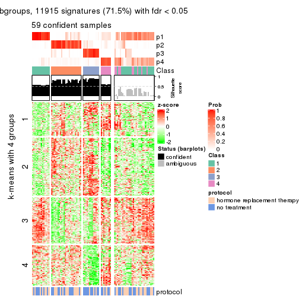
get_signatures(res, k = 5)
get_signatures(res, k = 6)
Signature heatmaps where rows are not scaled:
get_signatures(res, k = 2, scale_rows = FALSE)

get_signatures(res, k = 3, scale_rows = FALSE)
get_signatures(res, k = 4, scale_rows = FALSE)
get_signatures(res, k = 5, scale_rows = FALSE)
get_signatures(res, k = 6, scale_rows = FALSE)

Compare the overlap of signatures from different k:
compare_signatures(res)
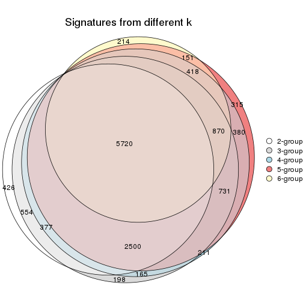
get_signature() returns a data frame invisibly. TO get the list of signatures, the function
call should be assigned to a variable explicitly. In following code, if plot argument is set
to FALSE, no heatmap is plotted while only the differential analysis is performed.
# code only for demonstration
tb = get_signature(res, k = ..., plot = FALSE)
An example of the output of tb is:
#> which_row fdr mean_1 mean_2 scaled_mean_1 scaled_mean_2 km
#> 1 38 0.042760348 8.373488 9.131774 -0.5533452 0.5164555 1
#> 2 40 0.018707592 7.106213 8.469186 -0.6173731 0.5762149 1
#> 3 55 0.019134737 10.221463 11.207825 -0.6159697 0.5749050 1
#> 4 59 0.006059896 5.921854 7.869574 -0.6899429 0.6439467 1
#> 5 60 0.018055526 8.928898 10.211722 -0.6204761 0.5791110 1
#> 6 98 0.009384629 15.714769 14.887706 0.6635654 -0.6193277 2
...
The columns in tb are:
which_row: row indices corresponding to the input matrix.fdr: FDR for the differential test. mean_x: The mean value in group x.scaled_mean_x: The mean value in group x after rows are scaled.km: Row groups if k-means clustering is applied to rows.UMAP plot which shows how samples are separated.
dimension_reduction(res, k = 2, method = "UMAP")
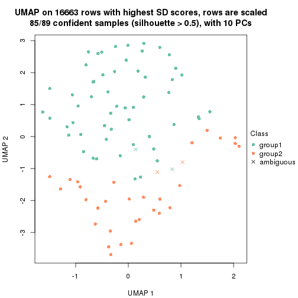
dimension_reduction(res, k = 3, method = "UMAP")
dimension_reduction(res, k = 4, method = "UMAP")
dimension_reduction(res, k = 5, method = "UMAP")
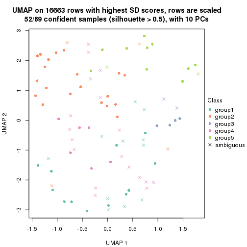
dimension_reduction(res, k = 6, method = "UMAP")
Following heatmap shows how subgroups are split when increasing k:
collect_classes(res)
Test correlation between subgroups and known annotations. If the known annotation is numeric, one-way ANOVA test is applied, and if the known annotation is discrete, chi-squared contingency table test is applied.
test_to_known_factors(res)
#> n protocol(p) k
#> SD:kmeans 85 0.137 2
#> SD:kmeans 75 0.171 3
#> SD:kmeans 59 0.301 4
#> SD:kmeans 52 0.455 5
#> SD:kmeans 21 0.856 6
If matrix rows can be associated to genes, consider to use functional_enrichment(res,
...) to perform function enrichment for the signature genes. See this vignette for more detailed explanations.
The object with results only for a single top-value method and a single partition method can be extracted as:
res = res_list["SD", "skmeans"]
# you can also extract it by
# res = res_list["SD:skmeans"]
A summary of res and all the functions that can be applied to it:
res
#> A 'ConsensusPartition' object with k = 2, 3, 4, 5, 6.
#> On a matrix with 16663 rows and 89 columns.
#> Top rows (1000, 2000, 3000, 4000, 5000) are extracted by 'SD' method.
#> Subgroups are detected by 'skmeans' method.
#> Performed in total 1250 partitions by row resampling.
#> Best k for subgroups seems to be 2.
#>
#> Following methods can be applied to this 'ConsensusPartition' object:
#> [1] "cola_report" "collect_classes" "collect_plots"
#> [4] "collect_stats" "colnames" "compare_signatures"
#> [7] "consensus_heatmap" "dimension_reduction" "functional_enrichment"
#> [10] "get_anno_col" "get_anno" "get_classes"
#> [13] "get_consensus" "get_matrix" "get_membership"
#> [16] "get_param" "get_signatures" "get_stats"
#> [19] "is_best_k" "is_stable_k" "membership_heatmap"
#> [22] "ncol" "nrow" "plot_ecdf"
#> [25] "rownames" "select_partition_number" "show"
#> [28] "suggest_best_k" "test_to_known_factors"
collect_plots() function collects all the plots made from res for all k (number of partitions)
into one single page to provide an easy and fast comparison between different k.
collect_plots(res)

The plots are:
k and the heatmap of
predicted classes for each k.k.k.k.All the plots in panels can be made by individual functions and they are plotted later in this section.
select_partition_number() produces several plots showing different
statistics for choosing “optimized” k. There are following statistics:
k;k, the area increased is defined as \(A_k - A_{k-1}\).The detailed explanations of these statistics can be found in the cola vignette.
Generally speaking, lower PAC score, higher mean silhouette score or higher
concordance corresponds to better partition. Rand index and Jaccard index
measure how similar the current partition is compared to partition with k-1.
If they are too similar, we won't accept k is better than k-1.
select_partition_number(res)
The numeric values for all these statistics can be obtained by get_stats().
get_stats(res)
#> k 1-PAC mean_silhouette concordance area_increased Rand Jaccard
#> 2 2 0.797 0.853 0.941 0.4985 0.505 0.505
#> 3 3 0.687 0.818 0.895 0.3130 0.763 0.568
#> 4 4 0.761 0.691 0.863 0.1431 0.850 0.604
#> 5 5 0.660 0.602 0.759 0.0663 0.920 0.696
#> 6 6 0.657 0.489 0.668 0.0418 0.903 0.591
suggest_best_k() suggests the best \(k\) based on these statistics. The rules are as follows:
suggest_best_k(res)
#> [1] 2
Following shows the table of the partitions (You need to click the show/hide
code output link to see it). The membership matrix (columns with name p*)
is inferred by
clue::cl_consensus()
function with the SE method. Basically the value in the membership matrix
represents the probability to belong to a certain group. The finall class
label for an item is determined with the group with highest probability it
belongs to.
In get_classes() function, the entropy is calculated from the membership
matrix and the silhouette score is calculated from the consensus matrix.
cbind(get_classes(res, k = 2), get_membership(res, k = 2))
#> class entropy silhouette p1 p2
#> GSM78921 1 0.0000 0.927 1.000 0.000
#> GSM78922 1 0.0000 0.927 1.000 0.000
#> GSM78923 2 0.0000 0.940 0.000 1.000
#> GSM78924 2 0.0000 0.940 0.000 1.000
#> GSM78925 2 0.0000 0.940 0.000 1.000
#> GSM78926 1 0.0000 0.927 1.000 0.000
#> GSM78927 1 0.0000 0.927 1.000 0.000
#> GSM78928 1 0.9815 0.345 0.580 0.420
#> GSM78929 2 0.0000 0.940 0.000 1.000
#> GSM78930 1 0.0000 0.927 1.000 0.000
#> GSM78931 2 0.4022 0.872 0.080 0.920
#> GSM78932 2 0.0000 0.940 0.000 1.000
#> GSM78933 1 0.0000 0.927 1.000 0.000
#> GSM78934 2 0.0000 0.940 0.000 1.000
#> GSM78935 1 0.0000 0.927 1.000 0.000
#> GSM78936 1 0.0000 0.927 1.000 0.000
#> GSM78937 1 0.9710 0.395 0.600 0.400
#> GSM78938 1 0.0000 0.927 1.000 0.000
#> GSM78939 1 0.0000 0.927 1.000 0.000
#> GSM78940 2 0.8443 0.571 0.272 0.728
#> GSM78941 2 0.0000 0.940 0.000 1.000
#> GSM78942 2 0.0000 0.940 0.000 1.000
#> GSM78943 1 0.0000 0.927 1.000 0.000
#> GSM78944 1 0.0000 0.927 1.000 0.000
#> GSM78945 1 0.0000 0.927 1.000 0.000
#> GSM78946 1 0.0000 0.927 1.000 0.000
#> GSM78947 2 0.0000 0.940 0.000 1.000
#> GSM78948 1 0.0000 0.927 1.000 0.000
#> GSM78949 1 0.0000 0.927 1.000 0.000
#> GSM78950 1 0.0000 0.927 1.000 0.000
#> GSM78951 1 0.4022 0.854 0.920 0.080
#> GSM78952 2 0.0000 0.940 0.000 1.000
#> GSM78953 2 0.0000 0.940 0.000 1.000
#> GSM78954 2 0.1633 0.923 0.024 0.976
#> GSM78955 2 0.0000 0.940 0.000 1.000
#> GSM78956 2 0.0000 0.940 0.000 1.000
#> GSM78957 2 0.0000 0.940 0.000 1.000
#> GSM78958 1 0.0000 0.927 1.000 0.000
#> GSM78959 1 0.0000 0.927 1.000 0.000
#> GSM78960 2 0.4431 0.862 0.092 0.908
#> GSM78961 2 0.7219 0.729 0.200 0.800
#> GSM78962 1 0.5408 0.817 0.876 0.124
#> GSM78963 2 0.0000 0.940 0.000 1.000
#> GSM78964 2 0.0000 0.940 0.000 1.000
#> GSM78965 2 0.0000 0.940 0.000 1.000
#> GSM78966 1 0.0000 0.927 1.000 0.000
#> GSM78967 1 0.0000 0.927 1.000 0.000
#> GSM78879 1 0.0000 0.927 1.000 0.000
#> GSM78880 1 0.0000 0.927 1.000 0.000
#> GSM78881 1 0.0000 0.927 1.000 0.000
#> GSM78882 1 0.0000 0.927 1.000 0.000
#> GSM78883 1 0.0000 0.927 1.000 0.000
#> GSM78884 1 0.0000 0.927 1.000 0.000
#> GSM78885 1 0.0000 0.927 1.000 0.000
#> GSM78886 2 0.0376 0.938 0.004 0.996
#> GSM78887 1 0.1633 0.909 0.976 0.024
#> GSM78888 1 0.0000 0.927 1.000 0.000
#> GSM78889 2 0.0000 0.940 0.000 1.000
#> GSM78890 1 0.9963 0.221 0.536 0.464
#> GSM78891 1 0.0000 0.927 1.000 0.000
#> GSM78892 2 0.0000 0.940 0.000 1.000
#> GSM78893 2 0.0000 0.940 0.000 1.000
#> GSM78894 1 0.0000 0.927 1.000 0.000
#> GSM78895 2 0.0000 0.940 0.000 1.000
#> GSM78896 1 0.0000 0.927 1.000 0.000
#> GSM78897 1 0.9686 0.343 0.604 0.396
#> GSM78898 1 0.0000 0.927 1.000 0.000
#> GSM78899 1 0.0000 0.927 1.000 0.000
#> GSM78900 2 0.9850 0.287 0.428 0.572
#> GSM78901 1 0.9710 0.395 0.600 0.400
#> GSM78902 2 0.9954 0.194 0.460 0.540
#> GSM78903 2 0.0000 0.940 0.000 1.000
#> GSM78904 1 0.9710 0.395 0.600 0.400
#> GSM78905 2 0.1633 0.923 0.024 0.976
#> GSM78906 2 0.0000 0.940 0.000 1.000
#> GSM78907 1 0.0000 0.927 1.000 0.000
#> GSM78908 1 0.0000 0.927 1.000 0.000
#> GSM78909 2 0.0000 0.940 0.000 1.000
#> GSM78910 1 0.0000 0.927 1.000 0.000
#> GSM78911 2 0.0000 0.940 0.000 1.000
#> GSM78912 1 0.0000 0.927 1.000 0.000
#> GSM78913 2 0.0000 0.940 0.000 1.000
#> GSM78914 2 0.9635 0.386 0.388 0.612
#> GSM78915 2 0.0000 0.940 0.000 1.000
#> GSM78916 2 0.0000 0.940 0.000 1.000
#> GSM78917 1 0.0000 0.927 1.000 0.000
#> GSM78918 1 0.7219 0.729 0.800 0.200
#> GSM78919 1 0.0000 0.927 1.000 0.000
#> GSM78920 1 0.9710 0.395 0.600 0.400
cbind(get_classes(res, k = 3), get_membership(res, k = 3))
#> class entropy silhouette p1 p2 p3
#> GSM78921 1 0.1491 0.8627 0.968 0.016 0.016
#> GSM78922 1 0.0000 0.8675 1.000 0.000 0.000
#> GSM78923 2 0.0747 0.9148 0.000 0.984 0.016
#> GSM78924 3 0.4750 0.7730 0.000 0.216 0.784
#> GSM78925 3 0.4750 0.7730 0.000 0.216 0.784
#> GSM78926 1 0.0747 0.8657 0.984 0.016 0.000
#> GSM78927 1 0.2878 0.8561 0.904 0.000 0.096
#> GSM78928 2 0.0424 0.9109 0.008 0.992 0.000
#> GSM78929 2 0.1289 0.9112 0.000 0.968 0.032
#> GSM78930 3 0.0892 0.8652 0.020 0.000 0.980
#> GSM78931 3 0.5384 0.7441 0.188 0.024 0.788
#> GSM78932 3 0.4750 0.7730 0.000 0.216 0.784
#> GSM78933 1 0.4346 0.8303 0.816 0.000 0.184
#> GSM78934 2 0.0892 0.9142 0.000 0.980 0.020
#> GSM78935 1 0.0000 0.8675 1.000 0.000 0.000
#> GSM78936 1 0.7391 0.4922 0.636 0.308 0.056
#> GSM78937 1 0.6180 0.2522 0.584 0.416 0.000
#> GSM78938 1 0.4682 0.8262 0.804 0.004 0.192
#> GSM78939 1 0.0424 0.8681 0.992 0.000 0.008
#> GSM78940 2 0.0000 0.9148 0.000 1.000 0.000
#> GSM78941 2 0.0747 0.9151 0.000 0.984 0.016
#> GSM78942 3 0.5455 0.7462 0.184 0.028 0.788
#> GSM78943 1 0.4346 0.8303 0.816 0.000 0.184
#> GSM78944 1 0.4682 0.8262 0.804 0.004 0.192
#> GSM78945 1 0.4575 0.8298 0.812 0.004 0.184
#> GSM78946 1 0.4575 0.8298 0.812 0.004 0.184
#> GSM78947 3 0.1163 0.8699 0.000 0.028 0.972
#> GSM78948 1 0.0592 0.8665 0.988 0.012 0.000
#> GSM78949 1 0.4682 0.8262 0.804 0.004 0.192
#> GSM78950 1 0.1337 0.8620 0.972 0.012 0.016
#> GSM78951 3 0.0747 0.8673 0.016 0.000 0.984
#> GSM78952 2 0.1289 0.9112 0.000 0.968 0.032
#> GSM78953 2 0.6260 0.0507 0.000 0.552 0.448
#> GSM78954 3 0.0747 0.8713 0.000 0.016 0.984
#> GSM78955 2 0.1163 0.9122 0.000 0.972 0.028
#> GSM78956 2 0.0237 0.9158 0.000 0.996 0.004
#> GSM78957 2 0.0237 0.9158 0.000 0.996 0.004
#> GSM78958 1 0.6422 0.4798 0.660 0.324 0.016
#> GSM78959 1 0.0747 0.8657 0.984 0.016 0.000
#> GSM78960 3 0.0237 0.8727 0.000 0.004 0.996
#> GSM78961 3 0.0661 0.8715 0.008 0.004 0.988
#> GSM78962 1 0.2187 0.8554 0.948 0.028 0.024
#> GSM78963 3 0.4654 0.7798 0.000 0.208 0.792
#> GSM78964 3 0.4654 0.7798 0.000 0.208 0.792
#> GSM78965 3 0.0237 0.8727 0.000 0.004 0.996
#> GSM78966 1 0.0892 0.8656 0.980 0.020 0.000
#> GSM78967 1 0.0747 0.8657 0.984 0.016 0.000
#> GSM78879 1 0.0592 0.8665 0.988 0.012 0.000
#> GSM78880 1 0.0000 0.8675 1.000 0.000 0.000
#> GSM78881 1 0.2878 0.8561 0.904 0.000 0.096
#> GSM78882 1 0.4452 0.8266 0.808 0.000 0.192
#> GSM78883 1 0.0983 0.8654 0.980 0.016 0.004
#> GSM78884 1 0.1751 0.8596 0.960 0.028 0.012
#> GSM78885 1 0.0237 0.8679 0.996 0.000 0.004
#> GSM78886 2 0.0829 0.9150 0.004 0.984 0.012
#> GSM78887 1 0.6341 0.5046 0.672 0.312 0.016
#> GSM78888 1 0.4346 0.8303 0.816 0.000 0.184
#> GSM78889 2 0.0424 0.9161 0.000 0.992 0.008
#> GSM78890 2 0.5929 0.4599 0.320 0.676 0.004
#> GSM78891 1 0.4682 0.8262 0.804 0.004 0.192
#> GSM78892 2 0.1015 0.9144 0.008 0.980 0.012
#> GSM78893 2 0.0747 0.9151 0.000 0.984 0.016
#> GSM78894 1 0.4682 0.8262 0.804 0.004 0.192
#> GSM78895 2 0.1289 0.9112 0.000 0.968 0.032
#> GSM78896 1 0.5220 0.8157 0.780 0.012 0.208
#> GSM78897 2 0.8875 0.2873 0.136 0.528 0.336
#> GSM78898 1 0.4682 0.8262 0.804 0.004 0.192
#> GSM78899 1 0.1337 0.8620 0.972 0.012 0.016
#> GSM78900 3 0.0747 0.8673 0.016 0.000 0.984
#> GSM78901 2 0.1529 0.8893 0.040 0.960 0.000
#> GSM78902 3 0.0747 0.8673 0.016 0.000 0.984
#> GSM78903 2 0.1289 0.9112 0.000 0.968 0.032
#> GSM78904 2 0.4291 0.7356 0.180 0.820 0.000
#> GSM78905 3 0.0892 0.8708 0.000 0.020 0.980
#> GSM78906 2 0.1289 0.9112 0.000 0.968 0.032
#> GSM78907 1 0.4682 0.8262 0.804 0.004 0.192
#> GSM78908 3 0.1877 0.8565 0.032 0.012 0.956
#> GSM78909 2 0.0237 0.9158 0.000 0.996 0.004
#> GSM78910 1 0.0892 0.8656 0.980 0.020 0.000
#> GSM78911 2 0.0237 0.9158 0.000 0.996 0.004
#> GSM78912 1 0.5315 0.8096 0.772 0.012 0.216
#> GSM78913 3 0.4654 0.7798 0.000 0.208 0.792
#> GSM78914 3 0.0424 0.8703 0.008 0.000 0.992
#> GSM78915 3 0.4605 0.7826 0.000 0.204 0.796
#> GSM78916 2 0.0000 0.9148 0.000 1.000 0.000
#> GSM78917 1 0.0747 0.8657 0.984 0.016 0.000
#> GSM78918 1 0.3752 0.7749 0.856 0.144 0.000
#> GSM78919 1 0.0892 0.8656 0.980 0.020 0.000
#> GSM78920 2 0.1529 0.8894 0.040 0.960 0.000
cbind(get_classes(res, k = 4), get_membership(res, k = 4))
#> class entropy silhouette p1 p2 p3 p4
#> GSM78921 4 0.0469 0.7126 0.012 0.000 0.000 0.988
#> GSM78922 1 0.4981 0.4227 0.536 0.000 0.000 0.464
#> GSM78923 2 0.0188 0.9644 0.000 0.996 0.000 0.004
#> GSM78924 3 0.0000 0.8813 0.000 0.000 1.000 0.000
#> GSM78925 3 0.0000 0.8813 0.000 0.000 1.000 0.000
#> GSM78926 4 0.0469 0.7126 0.012 0.000 0.000 0.988
#> GSM78927 1 0.4431 0.5567 0.696 0.000 0.000 0.304
#> GSM78928 2 0.1109 0.9459 0.028 0.968 0.000 0.004
#> GSM78929 2 0.0524 0.9616 0.000 0.988 0.008 0.004
#> GSM78930 3 0.4855 0.5860 0.352 0.000 0.644 0.004
#> GSM78931 4 0.4985 -0.0463 0.000 0.000 0.468 0.532
#> GSM78932 3 0.0376 0.8764 0.000 0.004 0.992 0.004
#> GSM78933 1 0.1022 0.6877 0.968 0.000 0.000 0.032
#> GSM78934 2 0.0188 0.9644 0.000 0.996 0.000 0.004
#> GSM78935 4 0.3764 0.4322 0.216 0.000 0.000 0.784
#> GSM78936 4 0.3982 0.5742 0.220 0.004 0.000 0.776
#> GSM78937 1 0.7586 0.3183 0.460 0.212 0.000 0.328
#> GSM78938 1 0.0000 0.6950 1.000 0.000 0.000 0.000
#> GSM78939 1 0.4790 0.4899 0.620 0.000 0.000 0.380
#> GSM78940 2 0.0000 0.9642 0.000 1.000 0.000 0.000
#> GSM78941 2 0.0188 0.9644 0.000 0.996 0.000 0.004
#> GSM78942 3 0.4994 0.0997 0.000 0.000 0.520 0.480
#> GSM78943 1 0.1118 0.6870 0.964 0.000 0.000 0.036
#> GSM78944 1 0.0000 0.6950 1.000 0.000 0.000 0.000
#> GSM78945 1 0.0000 0.6950 1.000 0.000 0.000 0.000
#> GSM78946 1 0.0188 0.6929 0.996 0.004 0.000 0.000
#> GSM78947 3 0.0000 0.8813 0.000 0.000 1.000 0.000
#> GSM78948 4 0.5000 -0.4031 0.496 0.000 0.000 0.504
#> GSM78949 1 0.0000 0.6950 1.000 0.000 0.000 0.000
#> GSM78950 4 0.0469 0.7126 0.012 0.000 0.000 0.988
#> GSM78951 3 0.4855 0.5860 0.352 0.000 0.644 0.004
#> GSM78952 2 0.0376 0.9631 0.000 0.992 0.004 0.004
#> GSM78953 2 0.5080 0.2956 0.000 0.576 0.420 0.004
#> GSM78954 3 0.0000 0.8813 0.000 0.000 1.000 0.000
#> GSM78955 2 0.0376 0.9626 0.000 0.992 0.004 0.004
#> GSM78956 2 0.0188 0.9644 0.000 0.996 0.000 0.004
#> GSM78957 2 0.0188 0.9644 0.000 0.996 0.000 0.004
#> GSM78958 4 0.0188 0.7092 0.000 0.004 0.000 0.996
#> GSM78959 1 0.5000 0.3534 0.500 0.000 0.000 0.500
#> GSM78960 3 0.0000 0.8813 0.000 0.000 1.000 0.000
#> GSM78961 3 0.0336 0.8781 0.000 0.000 0.992 0.008
#> GSM78962 4 0.0336 0.7119 0.008 0.000 0.000 0.992
#> GSM78963 3 0.0000 0.8813 0.000 0.000 1.000 0.000
#> GSM78964 3 0.0000 0.8813 0.000 0.000 1.000 0.000
#> GSM78965 3 0.0000 0.8813 0.000 0.000 1.000 0.000
#> GSM78966 1 0.4888 0.4845 0.588 0.000 0.000 0.412
#> GSM78967 1 0.4941 0.4551 0.564 0.000 0.000 0.436
#> GSM78879 4 0.4888 -0.1866 0.412 0.000 0.000 0.588
#> GSM78880 1 0.4992 0.4019 0.524 0.000 0.000 0.476
#> GSM78881 1 0.4454 0.5542 0.692 0.000 0.000 0.308
#> GSM78882 1 0.0921 0.6871 0.972 0.000 0.000 0.028
#> GSM78883 4 0.1716 0.6735 0.064 0.000 0.000 0.936
#> GSM78884 4 0.0469 0.7126 0.012 0.000 0.000 0.988
#> GSM78885 4 0.3024 0.6395 0.148 0.000 0.000 0.852
#> GSM78886 2 0.0188 0.9644 0.000 0.996 0.000 0.004
#> GSM78887 4 0.1211 0.6930 0.000 0.040 0.000 0.960
#> GSM78888 1 0.0921 0.6881 0.972 0.000 0.000 0.028
#> GSM78889 2 0.0336 0.9642 0.000 0.992 0.000 0.008
#> GSM78890 1 0.5060 0.3254 0.584 0.412 0.000 0.004
#> GSM78891 1 0.0000 0.6950 1.000 0.000 0.000 0.000
#> GSM78892 2 0.0188 0.9635 0.000 0.996 0.000 0.004
#> GSM78893 2 0.0000 0.9642 0.000 1.000 0.000 0.000
#> GSM78894 1 0.0000 0.6950 1.000 0.000 0.000 0.000
#> GSM78895 2 0.1743 0.9233 0.000 0.940 0.056 0.004
#> GSM78896 4 0.4907 0.3550 0.420 0.000 0.000 0.580
#> GSM78897 1 0.1229 0.6765 0.968 0.020 0.008 0.004
#> GSM78898 1 0.0000 0.6950 1.000 0.000 0.000 0.000
#> GSM78899 4 0.0469 0.7126 0.012 0.000 0.000 0.988
#> GSM78900 3 0.4509 0.6468 0.288 0.000 0.708 0.004
#> GSM78901 2 0.1576 0.9230 0.048 0.948 0.000 0.004
#> GSM78902 3 0.4855 0.5860 0.352 0.000 0.644 0.004
#> GSM78903 2 0.0188 0.9635 0.000 0.996 0.000 0.004
#> GSM78904 2 0.0188 0.9635 0.000 0.996 0.000 0.004
#> GSM78905 3 0.0188 0.8793 0.004 0.000 0.996 0.000
#> GSM78906 2 0.1489 0.9340 0.000 0.952 0.044 0.004
#> GSM78907 1 0.0188 0.6929 0.996 0.004 0.000 0.000
#> GSM78908 4 0.6716 0.3938 0.320 0.000 0.112 0.568
#> GSM78909 2 0.0188 0.9644 0.000 0.996 0.000 0.004
#> GSM78910 1 0.4888 0.4845 0.588 0.000 0.000 0.412
#> GSM78911 2 0.0188 0.9644 0.000 0.996 0.000 0.004
#> GSM78912 4 0.4866 0.3756 0.404 0.000 0.000 0.596
#> GSM78913 3 0.0000 0.8813 0.000 0.000 1.000 0.000
#> GSM78914 3 0.0188 0.8794 0.000 0.000 0.996 0.004
#> GSM78915 3 0.0000 0.8813 0.000 0.000 1.000 0.000
#> GSM78916 2 0.0188 0.9635 0.000 0.996 0.000 0.004
#> GSM78917 1 0.4925 0.4665 0.572 0.000 0.000 0.428
#> GSM78918 1 0.6819 0.4740 0.564 0.124 0.000 0.312
#> GSM78919 1 0.4888 0.4845 0.588 0.000 0.000 0.412
#> GSM78920 2 0.2530 0.8666 0.100 0.896 0.000 0.004
cbind(get_classes(res, k = 5), get_membership(res, k = 5))
#> class entropy silhouette p1 p2 p3 p4 p5
#> GSM78921 4 0.4182 0.132 0.000 0.000 0.400 0.600 0.000
#> GSM78922 3 0.6593 0.609 0.284 0.000 0.464 0.252 0.000
#> GSM78923 2 0.1341 0.868 0.000 0.944 0.056 0.000 0.000
#> GSM78924 5 0.2304 0.830 0.000 0.048 0.044 0.000 0.908
#> GSM78925 5 0.2304 0.830 0.000 0.048 0.044 0.000 0.908
#> GSM78926 4 0.4235 0.060 0.000 0.000 0.424 0.576 0.000
#> GSM78927 3 0.6476 0.547 0.320 0.000 0.476 0.204 0.000
#> GSM78928 2 0.6086 0.507 0.152 0.544 0.304 0.000 0.000
#> GSM78929 2 0.4968 0.749 0.000 0.712 0.152 0.000 0.136
#> GSM78930 5 0.6132 0.541 0.316 0.000 0.024 0.088 0.572
#> GSM78931 4 0.3010 0.589 0.000 0.000 0.004 0.824 0.172
#> GSM78932 5 0.3339 0.756 0.000 0.124 0.040 0.000 0.836
#> GSM78933 1 0.5102 0.145 0.580 0.000 0.376 0.044 0.000
#> GSM78934 2 0.0510 0.866 0.000 0.984 0.016 0.000 0.000
#> GSM78935 3 0.5953 0.530 0.112 0.000 0.504 0.384 0.000
#> GSM78936 4 0.3863 0.596 0.152 0.000 0.052 0.796 0.000
#> GSM78937 3 0.3748 0.272 0.092 0.080 0.824 0.004 0.000
#> GSM78938 1 0.0451 0.620 0.988 0.000 0.008 0.004 0.000
#> GSM78939 3 0.6590 0.569 0.288 0.000 0.464 0.248 0.000
#> GSM78940 2 0.1732 0.867 0.000 0.920 0.080 0.000 0.000
#> GSM78941 2 0.0451 0.865 0.000 0.988 0.008 0.000 0.004
#> GSM78942 4 0.4486 0.477 0.000 0.020 0.012 0.712 0.256
#> GSM78943 1 0.3607 0.455 0.752 0.000 0.244 0.004 0.000
#> GSM78944 1 0.1341 0.621 0.944 0.000 0.056 0.000 0.000
#> GSM78945 1 0.1908 0.611 0.908 0.000 0.092 0.000 0.000
#> GSM78946 1 0.4479 0.439 0.700 0.000 0.264 0.036 0.000
#> GSM78947 5 0.1356 0.845 0.000 0.012 0.028 0.004 0.956
#> GSM78948 3 0.6337 0.664 0.216 0.000 0.524 0.260 0.000
#> GSM78949 1 0.0290 0.623 0.992 0.000 0.008 0.000 0.000
#> GSM78950 4 0.2519 0.633 0.016 0.000 0.100 0.884 0.000
#> GSM78951 5 0.6132 0.541 0.316 0.000 0.024 0.088 0.572
#> GSM78952 2 0.2632 0.832 0.000 0.888 0.040 0.000 0.072
#> GSM78953 2 0.4748 0.528 0.000 0.660 0.040 0.000 0.300
#> GSM78954 5 0.1179 0.845 0.016 0.000 0.016 0.004 0.964
#> GSM78955 2 0.3073 0.849 0.004 0.856 0.116 0.000 0.024
#> GSM78956 2 0.1341 0.868 0.000 0.944 0.056 0.000 0.000
#> GSM78957 2 0.1571 0.868 0.000 0.936 0.060 0.004 0.000
#> GSM78958 4 0.2077 0.630 0.000 0.008 0.084 0.908 0.000
#> GSM78959 3 0.6003 0.654 0.192 0.000 0.584 0.224 0.000
#> GSM78960 5 0.1670 0.831 0.000 0.000 0.012 0.052 0.936
#> GSM78961 5 0.3179 0.825 0.012 0.012 0.028 0.072 0.876
#> GSM78962 4 0.3274 0.580 0.000 0.000 0.220 0.780 0.000
#> GSM78963 5 0.1493 0.842 0.000 0.024 0.028 0.000 0.948
#> GSM78964 5 0.1493 0.842 0.000 0.024 0.028 0.000 0.948
#> GSM78965 5 0.1168 0.839 0.000 0.000 0.008 0.032 0.960
#> GSM78966 1 0.5452 0.182 0.492 0.000 0.448 0.060 0.000
#> GSM78967 1 0.5844 0.116 0.484 0.000 0.420 0.096 0.000
#> GSM78879 3 0.6261 0.646 0.180 0.000 0.524 0.296 0.000
#> GSM78880 3 0.6365 0.658 0.228 0.000 0.520 0.252 0.000
#> GSM78881 3 0.6420 0.552 0.300 0.000 0.496 0.204 0.000
#> GSM78882 1 0.3878 0.425 0.748 0.000 0.236 0.016 0.000
#> GSM78883 3 0.5386 0.316 0.064 0.000 0.564 0.372 0.000
#> GSM78884 4 0.2516 0.605 0.000 0.000 0.140 0.860 0.000
#> GSM78885 4 0.5650 -0.239 0.076 0.000 0.460 0.464 0.000
#> GSM78886 2 0.1116 0.863 0.004 0.964 0.028 0.004 0.000
#> GSM78887 4 0.3397 0.618 0.004 0.080 0.068 0.848 0.000
#> GSM78888 1 0.2997 0.552 0.840 0.000 0.148 0.012 0.000
#> GSM78889 2 0.3053 0.860 0.000 0.852 0.128 0.008 0.012
#> GSM78890 1 0.6727 0.208 0.436 0.188 0.368 0.000 0.008
#> GSM78891 1 0.0162 0.622 0.996 0.000 0.004 0.000 0.000
#> GSM78892 2 0.2813 0.836 0.000 0.832 0.168 0.000 0.000
#> GSM78893 2 0.0671 0.866 0.000 0.980 0.016 0.000 0.004
#> GSM78894 1 0.0162 0.622 0.996 0.000 0.000 0.004 0.000
#> GSM78895 2 0.3267 0.799 0.000 0.844 0.044 0.000 0.112
#> GSM78896 4 0.4464 0.357 0.408 0.000 0.008 0.584 0.000
#> GSM78897 1 0.6739 0.237 0.476 0.024 0.408 0.028 0.064
#> GSM78898 1 0.1121 0.621 0.956 0.000 0.044 0.000 0.000
#> GSM78899 4 0.2020 0.624 0.000 0.000 0.100 0.900 0.000
#> GSM78900 5 0.5898 0.604 0.264 0.000 0.024 0.088 0.624
#> GSM78901 2 0.5004 0.722 0.072 0.672 0.256 0.000 0.000
#> GSM78902 5 0.6132 0.541 0.316 0.000 0.024 0.088 0.572
#> GSM78903 2 0.2006 0.863 0.000 0.916 0.072 0.000 0.012
#> GSM78904 2 0.4367 0.623 0.004 0.580 0.416 0.000 0.000
#> GSM78905 5 0.2125 0.838 0.024 0.004 0.052 0.000 0.920
#> GSM78906 2 0.2473 0.832 0.000 0.896 0.032 0.000 0.072
#> GSM78907 1 0.2813 0.582 0.868 0.000 0.108 0.024 0.000
#> GSM78908 4 0.4615 0.538 0.212 0.000 0.020 0.736 0.032
#> GSM78909 2 0.1952 0.863 0.000 0.912 0.084 0.004 0.000
#> GSM78910 1 0.5399 0.191 0.496 0.000 0.448 0.056 0.000
#> GSM78911 2 0.2136 0.862 0.000 0.904 0.088 0.008 0.000
#> GSM78912 4 0.4387 0.496 0.272 0.000 0.008 0.704 0.016
#> GSM78913 5 0.1493 0.842 0.000 0.024 0.028 0.000 0.948
#> GSM78914 5 0.1872 0.829 0.000 0.000 0.020 0.052 0.928
#> GSM78915 5 0.0000 0.845 0.000 0.000 0.000 0.000 1.000
#> GSM78916 2 0.2648 0.847 0.000 0.848 0.152 0.000 0.000
#> GSM78917 3 0.5990 0.442 0.296 0.000 0.560 0.144 0.000
#> GSM78918 1 0.6247 0.212 0.472 0.060 0.432 0.036 0.000
#> GSM78919 1 0.5399 0.191 0.496 0.000 0.448 0.056 0.000
#> GSM78920 3 0.6372 -0.235 0.184 0.324 0.492 0.000 0.000
cbind(get_classes(res, k = 6), get_membership(res, k = 6))
#> class entropy silhouette p1 p2 p3 p4 p5 p6
#> GSM78921 1 0.3266 0.4182 0.728 0.000 0.000 0.272 0.000 0.000
#> GSM78922 1 0.1625 0.7241 0.928 0.000 0.000 0.012 0.000 0.060
#> GSM78923 2 0.4030 0.6759 0.000 0.776 0.152 0.032 0.040 0.000
#> GSM78924 5 0.2349 0.7720 0.000 0.080 0.020 0.008 0.892 0.000
#> GSM78925 5 0.2315 0.7717 0.000 0.084 0.016 0.008 0.892 0.000
#> GSM78926 1 0.3528 0.4085 0.700 0.000 0.004 0.296 0.000 0.000
#> GSM78927 1 0.3591 0.6803 0.816 0.000 0.016 0.104 0.000 0.064
#> GSM78928 3 0.6241 0.4020 0.004 0.340 0.436 0.008 0.000 0.212
#> GSM78929 5 0.6588 -0.2268 0.008 0.352 0.236 0.016 0.388 0.000
#> GSM78930 6 0.7459 0.0273 0.000 0.000 0.292 0.136 0.232 0.340
#> GSM78931 4 0.5543 0.5850 0.096 0.000 0.052 0.640 0.212 0.000
#> GSM78932 5 0.2631 0.7459 0.000 0.068 0.044 0.008 0.880 0.000
#> GSM78933 1 0.5406 0.1339 0.520 0.000 0.012 0.084 0.000 0.384
#> GSM78934 2 0.0767 0.7033 0.000 0.976 0.004 0.012 0.008 0.000
#> GSM78935 1 0.2301 0.7109 0.884 0.000 0.000 0.096 0.000 0.020
#> GSM78936 4 0.4578 0.6317 0.156 0.020 0.016 0.748 0.000 0.060
#> GSM78937 3 0.5220 0.1417 0.444 0.020 0.496 0.008 0.000 0.032
#> GSM78938 6 0.2103 0.4708 0.056 0.000 0.020 0.012 0.000 0.912
#> GSM78939 1 0.4326 0.6506 0.764 0.000 0.028 0.116 0.000 0.092
#> GSM78940 2 0.2752 0.6819 0.000 0.856 0.108 0.036 0.000 0.000
#> GSM78941 2 0.0692 0.7038 0.000 0.976 0.000 0.004 0.020 0.000
#> GSM78942 4 0.5453 0.4442 0.040 0.004 0.056 0.604 0.296 0.000
#> GSM78943 6 0.4546 0.1188 0.432 0.000 0.012 0.016 0.000 0.540
#> GSM78944 6 0.3211 0.4430 0.076 0.000 0.056 0.020 0.000 0.848
#> GSM78945 6 0.3920 0.4170 0.104 0.000 0.076 0.024 0.000 0.796
#> GSM78946 6 0.6038 0.1954 0.336 0.000 0.056 0.088 0.000 0.520
#> GSM78947 5 0.0951 0.8059 0.000 0.000 0.008 0.020 0.968 0.004
#> GSM78948 1 0.1649 0.7275 0.932 0.000 0.000 0.032 0.000 0.036
#> GSM78949 6 0.2036 0.4658 0.064 0.000 0.016 0.008 0.000 0.912
#> GSM78950 4 0.4479 0.6423 0.280 0.000 0.024 0.672 0.000 0.024
#> GSM78951 6 0.7459 0.0273 0.000 0.000 0.292 0.136 0.232 0.340
#> GSM78952 2 0.5038 0.5287 0.000 0.624 0.068 0.016 0.292 0.000
#> GSM78953 2 0.4847 0.4191 0.000 0.600 0.040 0.016 0.344 0.000
#> GSM78954 5 0.5466 0.6392 0.000 0.000 0.180 0.040 0.652 0.128
#> GSM78955 2 0.3736 0.5976 0.000 0.768 0.200 0.012 0.012 0.008
#> GSM78956 2 0.3019 0.6918 0.000 0.856 0.092 0.032 0.020 0.000
#> GSM78957 2 0.4653 0.6561 0.000 0.732 0.156 0.076 0.036 0.000
#> GSM78958 4 0.3468 0.6261 0.264 0.000 0.008 0.728 0.000 0.000
#> GSM78959 1 0.2195 0.7111 0.912 0.000 0.036 0.028 0.000 0.024
#> GSM78960 5 0.3735 0.7583 0.000 0.000 0.128 0.056 0.800 0.016
#> GSM78961 5 0.4711 0.7006 0.000 0.004 0.096 0.136 0.736 0.028
#> GSM78962 4 0.4198 0.6181 0.232 0.000 0.060 0.708 0.000 0.000
#> GSM78963 5 0.0508 0.8026 0.000 0.012 0.004 0.000 0.984 0.000
#> GSM78964 5 0.0363 0.8031 0.000 0.012 0.000 0.000 0.988 0.000
#> GSM78965 5 0.2804 0.7832 0.000 0.000 0.108 0.016 0.860 0.016
#> GSM78966 6 0.6589 -0.1118 0.304 0.000 0.300 0.024 0.000 0.372
#> GSM78967 1 0.6678 -0.1603 0.384 0.000 0.240 0.036 0.000 0.340
#> GSM78879 1 0.1701 0.7102 0.920 0.000 0.000 0.072 0.000 0.008
#> GSM78880 1 0.1297 0.7269 0.948 0.000 0.000 0.012 0.000 0.040
#> GSM78881 1 0.3730 0.6793 0.812 0.000 0.032 0.104 0.000 0.052
#> GSM78882 6 0.5965 0.2217 0.332 0.000 0.104 0.040 0.000 0.524
#> GSM78883 1 0.4185 0.6040 0.744 0.000 0.084 0.168 0.000 0.004
#> GSM78884 4 0.3742 0.5692 0.348 0.000 0.004 0.648 0.000 0.000
#> GSM78885 1 0.4685 0.5515 0.680 0.000 0.036 0.252 0.000 0.032
#> GSM78886 2 0.0692 0.6991 0.000 0.976 0.000 0.020 0.000 0.004
#> GSM78887 4 0.4168 0.6391 0.112 0.120 0.008 0.760 0.000 0.000
#> GSM78888 6 0.4408 0.3062 0.320 0.000 0.000 0.044 0.000 0.636
#> GSM78889 2 0.6809 0.4460 0.000 0.452 0.280 0.068 0.200 0.000
#> GSM78890 3 0.5747 0.3473 0.052 0.056 0.496 0.000 0.000 0.396
#> GSM78891 6 0.1625 0.4728 0.060 0.000 0.012 0.000 0.000 0.928
#> GSM78892 2 0.4812 0.4789 0.016 0.632 0.320 0.012 0.016 0.004
#> GSM78893 2 0.1078 0.6977 0.000 0.964 0.012 0.016 0.000 0.008
#> GSM78894 6 0.1882 0.4697 0.060 0.000 0.008 0.012 0.000 0.920
#> GSM78895 2 0.3812 0.5763 0.000 0.728 0.012 0.012 0.248 0.000
#> GSM78896 4 0.5213 0.3961 0.048 0.000 0.024 0.544 0.000 0.384
#> GSM78897 6 0.8845 0.0959 0.164 0.036 0.248 0.096 0.100 0.356
#> GSM78898 6 0.2836 0.4478 0.060 0.000 0.052 0.016 0.000 0.872
#> GSM78899 4 0.3563 0.5933 0.336 0.000 0.000 0.664 0.000 0.000
#> GSM78900 6 0.7507 -0.0458 0.000 0.000 0.292 0.136 0.264 0.308
#> GSM78901 2 0.5893 0.2346 0.020 0.508 0.388 0.044 0.000 0.040
#> GSM78902 6 0.7459 0.0273 0.000 0.000 0.292 0.136 0.232 0.340
#> GSM78903 2 0.2806 0.6533 0.000 0.840 0.144 0.008 0.008 0.000
#> GSM78904 3 0.5258 0.1848 0.056 0.356 0.568 0.012 0.000 0.008
#> GSM78905 5 0.5390 0.6812 0.000 0.008 0.224 0.036 0.656 0.076
#> GSM78906 2 0.2573 0.6654 0.000 0.856 0.004 0.008 0.132 0.000
#> GSM78907 6 0.4921 0.4143 0.084 0.004 0.152 0.040 0.000 0.720
#> GSM78908 4 0.4926 0.5068 0.004 0.000 0.112 0.684 0.008 0.192
#> GSM78909 2 0.4533 0.6360 0.000 0.720 0.200 0.052 0.028 0.000
#> GSM78910 6 0.6584 -0.1105 0.300 0.000 0.300 0.024 0.000 0.376
#> GSM78911 2 0.5147 0.6085 0.000 0.668 0.216 0.080 0.036 0.000
#> GSM78912 4 0.4898 0.5226 0.016 0.000 0.064 0.684 0.008 0.228
#> GSM78913 5 0.0508 0.8026 0.000 0.012 0.004 0.000 0.984 0.000
#> GSM78914 5 0.4959 0.6805 0.000 0.000 0.188 0.092 0.692 0.028
#> GSM78915 5 0.2214 0.7912 0.000 0.000 0.096 0.000 0.888 0.016
#> GSM78916 2 0.4146 0.5537 0.000 0.676 0.288 0.036 0.000 0.000
#> GSM78917 1 0.3904 0.6175 0.800 0.000 0.096 0.028 0.000 0.076
#> GSM78918 6 0.7172 -0.2795 0.160 0.036 0.364 0.044 0.000 0.396
#> GSM78919 6 0.6544 -0.1062 0.276 0.000 0.300 0.024 0.000 0.400
#> GSM78920 3 0.5916 0.5758 0.076 0.140 0.636 0.004 0.000 0.144
Heatmaps for the consensus matrix. It visualizes the probability of two samples to be in a same group.
consensus_heatmap(res, k = 2)
consensus_heatmap(res, k = 3)
consensus_heatmap(res, k = 4)
consensus_heatmap(res, k = 5)
consensus_heatmap(res, k = 6)
Heatmaps for the membership of samples in all partitions to see how consistent they are:
membership_heatmap(res, k = 2)
membership_heatmap(res, k = 3)
membership_heatmap(res, k = 4)
membership_heatmap(res, k = 5)

membership_heatmap(res, k = 6)
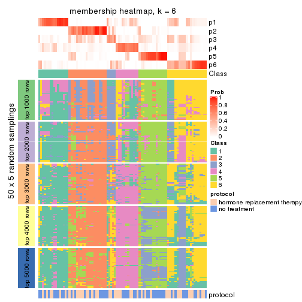
As soon as we have had the classes for columns, we can look for signatures which are significantly different between classes which can be candidate marks for certain classes. Following are the heatmaps for signatures.
Signature heatmaps where rows are scaled:
get_signatures(res, k = 2)
get_signatures(res, k = 3)
get_signatures(res, k = 4)
get_signatures(res, k = 5)
get_signatures(res, k = 6)

Signature heatmaps where rows are not scaled:
get_signatures(res, k = 2, scale_rows = FALSE)
get_signatures(res, k = 3, scale_rows = FALSE)
get_signatures(res, k = 4, scale_rows = FALSE)
get_signatures(res, k = 5, scale_rows = FALSE)
get_signatures(res, k = 6, scale_rows = FALSE)
Compare the overlap of signatures from different k:
compare_signatures(res)
get_signature() returns a data frame invisibly. TO get the list of signatures, the function
call should be assigned to a variable explicitly. In following code, if plot argument is set
to FALSE, no heatmap is plotted while only the differential analysis is performed.
# code only for demonstration
tb = get_signature(res, k = ..., plot = FALSE)
An example of the output of tb is:
#> which_row fdr mean_1 mean_2 scaled_mean_1 scaled_mean_2 km
#> 1 38 0.042760348 8.373488 9.131774 -0.5533452 0.5164555 1
#> 2 40 0.018707592 7.106213 8.469186 -0.6173731 0.5762149 1
#> 3 55 0.019134737 10.221463 11.207825 -0.6159697 0.5749050 1
#> 4 59 0.006059896 5.921854 7.869574 -0.6899429 0.6439467 1
#> 5 60 0.018055526 8.928898 10.211722 -0.6204761 0.5791110 1
#> 6 98 0.009384629 15.714769 14.887706 0.6635654 -0.6193277 2
...
The columns in tb are:
which_row: row indices corresponding to the input matrix.fdr: FDR for the differential test. mean_x: The mean value in group x.scaled_mean_x: The mean value in group x after rows are scaled.km: Row groups if k-means clustering is applied to rows.UMAP plot which shows how samples are separated.
dimension_reduction(res, k = 2, method = "UMAP")
dimension_reduction(res, k = 3, method = "UMAP")
dimension_reduction(res, k = 4, method = "UMAP")
dimension_reduction(res, k = 5, method = "UMAP")
dimension_reduction(res, k = 6, method = "UMAP")

Following heatmap shows how subgroups are split when increasing k:
collect_classes(res)
Test correlation between subgroups and known annotations. If the known annotation is numeric, one-way ANOVA test is applied, and if the known annotation is discrete, chi-squared contingency table test is applied.
test_to_known_factors(res)
#> n protocol(p) k
#> SD:skmeans 79 0.475 2
#> SD:skmeans 83 0.266 3
#> SD:skmeans 68 0.521 4
#> SD:skmeans 68 0.670 5
#> SD:skmeans 53 0.537 6
If matrix rows can be associated to genes, consider to use functional_enrichment(res,
...) to perform function enrichment for the signature genes. See this vignette for more detailed explanations.
The object with results only for a single top-value method and a single partition method can be extracted as:
res = res_list["SD", "pam"]
# you can also extract it by
# res = res_list["SD:pam"]
A summary of res and all the functions that can be applied to it:
res
#> A 'ConsensusPartition' object with k = 2, 3, 4, 5, 6.
#> On a matrix with 16663 rows and 89 columns.
#> Top rows (1000, 2000, 3000, 4000, 5000) are extracted by 'SD' method.
#> Subgroups are detected by 'pam' method.
#> Performed in total 1250 partitions by row resampling.
#> Best k for subgroups seems to be 3.
#>
#> Following methods can be applied to this 'ConsensusPartition' object:
#> [1] "cola_report" "collect_classes" "collect_plots"
#> [4] "collect_stats" "colnames" "compare_signatures"
#> [7] "consensus_heatmap" "dimension_reduction" "functional_enrichment"
#> [10] "get_anno_col" "get_anno" "get_classes"
#> [13] "get_consensus" "get_matrix" "get_membership"
#> [16] "get_param" "get_signatures" "get_stats"
#> [19] "is_best_k" "is_stable_k" "membership_heatmap"
#> [22] "ncol" "nrow" "plot_ecdf"
#> [25] "rownames" "select_partition_number" "show"
#> [28] "suggest_best_k" "test_to_known_factors"
collect_plots() function collects all the plots made from res for all k (number of partitions)
into one single page to provide an easy and fast comparison between different k.
collect_plots(res)
The plots are:
k and the heatmap of
predicted classes for each k.k.k.k.All the plots in panels can be made by individual functions and they are plotted later in this section.
select_partition_number() produces several plots showing different
statistics for choosing “optimized” k. There are following statistics:
k;k, the area increased is defined as \(A_k - A_{k-1}\).The detailed explanations of these statistics can be found in the cola vignette.
Generally speaking, lower PAC score, higher mean silhouette score or higher
concordance corresponds to better partition. Rand index and Jaccard index
measure how similar the current partition is compared to partition with k-1.
If they are too similar, we won't accept k is better than k-1.
select_partition_number(res)
The numeric values for all these statistics can be obtained by get_stats().
get_stats(res)
#> k 1-PAC mean_silhouette concordance area_increased Rand Jaccard
#> 2 2 0.589 0.865 0.927 0.2205 0.853 0.853
#> 3 3 0.757 0.761 0.899 1.0529 0.715 0.669
#> 4 4 0.547 0.650 0.831 0.4363 0.759 0.585
#> 5 5 0.565 0.624 0.817 0.1475 0.848 0.586
#> 6 6 0.688 0.687 0.843 0.0664 0.916 0.681
suggest_best_k() suggests the best \(k\) based on these statistics. The rules are as follows:
suggest_best_k(res)
#> [1] 3
Following shows the table of the partitions (You need to click the show/hide
code output link to see it). The membership matrix (columns with name p*)
is inferred by
clue::cl_consensus()
function with the SE method. Basically the value in the membership matrix
represents the probability to belong to a certain group. The finall class
label for an item is determined with the group with highest probability it
belongs to.
In get_classes() function, the entropy is calculated from the membership
matrix and the silhouette score is calculated from the consensus matrix.
cbind(get_classes(res, k = 2), get_membership(res, k = 2))
#> class entropy silhouette p1 p2
#> GSM78921 1 0.0000 0.917 1.000 0.000
#> GSM78922 1 0.0000 0.917 1.000 0.000
#> GSM78923 1 0.8499 0.716 0.724 0.276
#> GSM78924 2 0.0000 0.864 0.000 1.000
#> GSM78925 1 0.8499 0.716 0.724 0.276
#> GSM78926 1 0.0000 0.917 1.000 0.000
#> GSM78927 1 0.0000 0.917 1.000 0.000
#> GSM78928 1 0.7219 0.786 0.800 0.200
#> GSM78929 1 0.8443 0.721 0.728 0.272
#> GSM78930 1 0.0000 0.917 1.000 0.000
#> GSM78931 1 0.0000 0.917 1.000 0.000
#> GSM78932 1 0.2043 0.896 0.968 0.032
#> GSM78933 1 0.0000 0.917 1.000 0.000
#> GSM78934 1 0.7950 0.754 0.760 0.240
#> GSM78935 1 0.0000 0.917 1.000 0.000
#> GSM78936 1 0.0000 0.917 1.000 0.000
#> GSM78937 1 0.7950 0.754 0.760 0.240
#> GSM78938 1 0.0000 0.917 1.000 0.000
#> GSM78939 1 0.0000 0.917 1.000 0.000
#> GSM78940 1 0.7950 0.754 0.760 0.240
#> GSM78941 1 0.5178 0.848 0.884 0.116
#> GSM78942 1 0.0000 0.917 1.000 0.000
#> GSM78943 1 0.0000 0.917 1.000 0.000
#> GSM78944 1 0.0000 0.917 1.000 0.000
#> GSM78945 1 0.0000 0.917 1.000 0.000
#> GSM78946 1 0.0000 0.917 1.000 0.000
#> GSM78947 1 0.0672 0.912 0.992 0.008
#> GSM78948 1 0.0000 0.917 1.000 0.000
#> GSM78949 1 0.0000 0.917 1.000 0.000
#> GSM78950 1 0.0000 0.917 1.000 0.000
#> GSM78951 1 0.0000 0.917 1.000 0.000
#> GSM78952 2 0.1184 0.862 0.016 0.984
#> GSM78953 1 0.0000 0.917 1.000 0.000
#> GSM78954 1 0.0000 0.917 1.000 0.000
#> GSM78955 1 0.0000 0.917 1.000 0.000
#> GSM78956 1 0.7950 0.754 0.760 0.240
#> GSM78957 1 0.7883 0.757 0.764 0.236
#> GSM78958 1 0.0000 0.917 1.000 0.000
#> GSM78959 1 0.0000 0.917 1.000 0.000
#> GSM78960 1 0.3879 0.850 0.924 0.076
#> GSM78961 1 0.0000 0.917 1.000 0.000
#> GSM78962 1 0.0000 0.917 1.000 0.000
#> GSM78963 2 0.0000 0.864 0.000 1.000
#> GSM78964 2 0.5842 0.847 0.140 0.860
#> GSM78965 2 0.8327 0.745 0.264 0.736
#> GSM78966 1 0.0376 0.915 0.996 0.004
#> GSM78967 1 0.0000 0.917 1.000 0.000
#> GSM78879 1 0.0000 0.917 1.000 0.000
#> GSM78880 1 0.0000 0.917 1.000 0.000
#> GSM78881 1 0.0000 0.917 1.000 0.000
#> GSM78882 1 0.0000 0.917 1.000 0.000
#> GSM78883 1 0.0000 0.917 1.000 0.000
#> GSM78884 1 0.0000 0.917 1.000 0.000
#> GSM78885 1 0.0000 0.917 1.000 0.000
#> GSM78886 1 0.0000 0.917 1.000 0.000
#> GSM78887 1 0.0000 0.917 1.000 0.000
#> GSM78888 1 0.0000 0.917 1.000 0.000
#> GSM78889 1 0.8443 0.721 0.728 0.272
#> GSM78890 1 0.8386 0.725 0.732 0.268
#> GSM78891 1 0.0000 0.917 1.000 0.000
#> GSM78892 1 0.8386 0.725 0.732 0.268
#> GSM78893 1 0.2603 0.893 0.956 0.044
#> GSM78894 1 0.0000 0.917 1.000 0.000
#> GSM78895 1 0.8499 0.716 0.724 0.276
#> GSM78896 1 0.0000 0.917 1.000 0.000
#> GSM78897 1 0.0000 0.917 1.000 0.000
#> GSM78898 1 0.0000 0.917 1.000 0.000
#> GSM78899 1 0.0000 0.917 1.000 0.000
#> GSM78900 1 0.0000 0.917 1.000 0.000
#> GSM78901 1 0.7950 0.754 0.760 0.240
#> GSM78902 1 0.0000 0.917 1.000 0.000
#> GSM78903 1 0.8443 0.721 0.728 0.272
#> GSM78904 1 0.7950 0.754 0.760 0.240
#> GSM78905 1 0.0000 0.917 1.000 0.000
#> GSM78906 1 0.8443 0.721 0.728 0.272
#> GSM78907 1 0.0000 0.917 1.000 0.000
#> GSM78908 1 0.0000 0.917 1.000 0.000
#> GSM78909 1 0.7950 0.754 0.760 0.240
#> GSM78910 1 0.5946 0.829 0.856 0.144
#> GSM78911 1 0.7950 0.754 0.760 0.240
#> GSM78912 1 0.0000 0.917 1.000 0.000
#> GSM78913 2 0.2948 0.873 0.052 0.948
#> GSM78914 1 0.2603 0.882 0.956 0.044
#> GSM78915 2 0.7950 0.770 0.240 0.760
#> GSM78916 1 0.7950 0.754 0.760 0.240
#> GSM78917 1 0.0000 0.917 1.000 0.000
#> GSM78918 1 0.0376 0.915 0.996 0.004
#> GSM78919 1 0.0000 0.917 1.000 0.000
#> GSM78920 1 0.8386 0.725 0.732 0.268
cbind(get_classes(res, k = 3), get_membership(res, k = 3))
#> class entropy silhouette p1 p2 p3
#> GSM78921 1 0.0000 0.888 1.000 0.000 0.000
#> GSM78922 1 0.0000 0.888 1.000 0.000 0.000
#> GSM78923 2 0.2537 0.771 0.080 0.920 0.000
#> GSM78924 3 0.6154 0.267 0.000 0.408 0.592
#> GSM78925 1 0.6154 0.211 0.592 0.408 0.000
#> GSM78926 1 0.0000 0.888 1.000 0.000 0.000
#> GSM78927 1 0.0000 0.888 1.000 0.000 0.000
#> GSM78928 1 0.4605 0.653 0.796 0.204 0.000
#> GSM78929 1 0.6154 0.211 0.592 0.408 0.000
#> GSM78930 1 0.0000 0.888 1.000 0.000 0.000
#> GSM78931 1 0.0000 0.888 1.000 0.000 0.000
#> GSM78932 1 0.0237 0.886 0.996 0.000 0.004
#> GSM78933 1 0.1031 0.882 0.976 0.024 0.000
#> GSM78934 2 0.2537 0.771 0.080 0.920 0.000
#> GSM78935 1 0.0000 0.888 1.000 0.000 0.000
#> GSM78936 1 0.0000 0.888 1.000 0.000 0.000
#> GSM78937 1 0.6154 0.211 0.592 0.408 0.000
#> GSM78938 1 0.2537 0.865 0.920 0.080 0.000
#> GSM78939 1 0.0000 0.888 1.000 0.000 0.000
#> GSM78940 2 0.2537 0.771 0.080 0.920 0.000
#> GSM78941 2 0.6008 0.458 0.372 0.628 0.000
#> GSM78942 1 0.0000 0.888 1.000 0.000 0.000
#> GSM78943 1 0.1529 0.878 0.960 0.040 0.000
#> GSM78944 1 0.2537 0.865 0.920 0.080 0.000
#> GSM78945 1 0.2537 0.865 0.920 0.080 0.000
#> GSM78946 1 0.2537 0.865 0.920 0.080 0.000
#> GSM78947 1 0.0000 0.888 1.000 0.000 0.000
#> GSM78948 1 0.2066 0.872 0.940 0.060 0.000
#> GSM78949 1 0.2537 0.865 0.920 0.080 0.000
#> GSM78950 1 0.0000 0.888 1.000 0.000 0.000
#> GSM78951 1 0.2537 0.865 0.920 0.080 0.000
#> GSM78952 2 0.2537 0.651 0.000 0.920 0.080
#> GSM78953 2 0.6307 0.248 0.488 0.512 0.000
#> GSM78954 1 0.2537 0.865 0.920 0.080 0.000
#> GSM78955 1 0.0000 0.888 1.000 0.000 0.000
#> GSM78956 2 0.2537 0.771 0.080 0.920 0.000
#> GSM78957 2 0.3551 0.743 0.132 0.868 0.000
#> GSM78958 1 0.0000 0.888 1.000 0.000 0.000
#> GSM78959 1 0.2537 0.865 0.920 0.080 0.000
#> GSM78960 3 0.2537 0.826 0.080 0.000 0.920
#> GSM78961 1 0.0000 0.888 1.000 0.000 0.000
#> GSM78962 1 0.0000 0.888 1.000 0.000 0.000
#> GSM78963 3 0.0000 0.894 0.000 0.000 1.000
#> GSM78964 3 0.0000 0.894 0.000 0.000 1.000
#> GSM78965 3 0.0000 0.894 0.000 0.000 1.000
#> GSM78966 1 0.2625 0.864 0.916 0.084 0.000
#> GSM78967 1 0.0000 0.888 1.000 0.000 0.000
#> GSM78879 1 0.0000 0.888 1.000 0.000 0.000
#> GSM78880 1 0.2537 0.865 0.920 0.080 0.000
#> GSM78881 1 0.0000 0.888 1.000 0.000 0.000
#> GSM78882 1 0.2537 0.865 0.920 0.080 0.000
#> GSM78883 1 0.0000 0.888 1.000 0.000 0.000
#> GSM78884 1 0.0000 0.888 1.000 0.000 0.000
#> GSM78885 1 0.0000 0.888 1.000 0.000 0.000
#> GSM78886 1 0.0000 0.888 1.000 0.000 0.000
#> GSM78887 1 0.0000 0.888 1.000 0.000 0.000
#> GSM78888 1 0.2537 0.865 0.920 0.080 0.000
#> GSM78889 2 0.6215 0.338 0.428 0.572 0.000
#> GSM78890 1 0.6307 0.189 0.512 0.488 0.000
#> GSM78891 1 0.2537 0.865 0.920 0.080 0.000
#> GSM78892 1 0.6280 0.200 0.540 0.460 0.000
#> GSM78893 1 0.6111 0.197 0.604 0.396 0.000
#> GSM78894 1 0.2537 0.865 0.920 0.080 0.000
#> GSM78895 2 0.2537 0.771 0.080 0.920 0.000
#> GSM78896 1 0.0000 0.888 1.000 0.000 0.000
#> GSM78897 1 0.0424 0.883 0.992 0.008 0.000
#> GSM78898 1 0.2537 0.865 0.920 0.080 0.000
#> GSM78899 1 0.0000 0.888 1.000 0.000 0.000
#> GSM78900 1 0.0000 0.888 1.000 0.000 0.000
#> GSM78901 1 0.6260 0.204 0.552 0.448 0.000
#> GSM78902 1 0.2537 0.865 0.920 0.080 0.000
#> GSM78903 2 0.0000 0.667 0.000 1.000 0.000
#> GSM78904 1 0.6154 0.211 0.592 0.408 0.000
#> GSM78905 1 0.2711 0.862 0.912 0.088 0.000
#> GSM78906 2 0.2537 0.771 0.080 0.920 0.000
#> GSM78907 1 0.0000 0.888 1.000 0.000 0.000
#> GSM78908 1 0.0000 0.888 1.000 0.000 0.000
#> GSM78909 2 0.3412 0.750 0.124 0.876 0.000
#> GSM78910 1 0.4842 0.732 0.776 0.224 0.000
#> GSM78911 2 0.5760 0.538 0.328 0.672 0.000
#> GSM78912 1 0.0000 0.888 1.000 0.000 0.000
#> GSM78913 3 0.0000 0.894 0.000 0.000 1.000
#> GSM78914 3 0.2448 0.831 0.076 0.000 0.924
#> GSM78915 3 0.0000 0.894 0.000 0.000 1.000
#> GSM78916 2 0.2537 0.771 0.080 0.920 0.000
#> GSM78917 1 0.2537 0.865 0.920 0.080 0.000
#> GSM78918 1 0.0237 0.885 0.996 0.004 0.000
#> GSM78919 1 0.2537 0.865 0.920 0.080 0.000
#> GSM78920 1 0.6154 0.211 0.592 0.408 0.000
cbind(get_classes(res, k = 4), get_membership(res, k = 4))
#> class entropy silhouette p1 p2 p3 p4
#> GSM78921 4 0.4776 0.4940 0.376 0.000 0.000 0.624
#> GSM78922 4 0.0000 0.7693 0.000 0.000 0.000 1.000
#> GSM78923 2 0.0000 0.8338 0.000 1.000 0.000 0.000
#> GSM78924 3 0.4454 0.4987 0.000 0.308 0.692 0.000
#> GSM78925 4 0.4454 0.5374 0.000 0.308 0.000 0.692
#> GSM78926 4 0.4830 0.4764 0.392 0.000 0.000 0.608
#> GSM78927 4 0.0000 0.7693 0.000 0.000 0.000 1.000
#> GSM78928 4 0.5551 0.6034 0.160 0.112 0.000 0.728
#> GSM78929 4 0.4454 0.5374 0.000 0.308 0.000 0.692
#> GSM78930 4 0.0000 0.7693 0.000 0.000 0.000 1.000
#> GSM78931 4 0.0000 0.7693 0.000 0.000 0.000 1.000
#> GSM78932 4 0.0188 0.7679 0.000 0.000 0.004 0.996
#> GSM78933 4 0.1389 0.7152 0.048 0.000 0.000 0.952
#> GSM78934 2 0.0000 0.8338 0.000 1.000 0.000 0.000
#> GSM78935 4 0.3266 0.6735 0.168 0.000 0.000 0.832
#> GSM78936 4 0.0000 0.7693 0.000 0.000 0.000 1.000
#> GSM78937 4 0.7016 0.4700 0.252 0.176 0.000 0.572
#> GSM78938 1 0.4925 0.7122 0.572 0.000 0.000 0.428
#> GSM78939 4 0.0000 0.7693 0.000 0.000 0.000 1.000
#> GSM78940 2 0.0000 0.8338 0.000 1.000 0.000 0.000
#> GSM78941 2 0.3528 0.6154 0.000 0.808 0.000 0.192
#> GSM78942 4 0.0000 0.7693 0.000 0.000 0.000 1.000
#> GSM78943 4 0.4543 -0.0639 0.324 0.000 0.000 0.676
#> GSM78944 1 0.4877 0.7127 0.592 0.000 0.000 0.408
#> GSM78945 1 0.4382 0.6860 0.704 0.000 0.000 0.296
#> GSM78946 4 0.4999 -0.5999 0.492 0.000 0.000 0.508
#> GSM78947 4 0.0000 0.7693 0.000 0.000 0.000 1.000
#> GSM78948 1 0.4981 -0.2260 0.536 0.000 0.000 0.464
#> GSM78949 1 0.4925 0.7122 0.572 0.000 0.000 0.428
#> GSM78950 4 0.0000 0.7693 0.000 0.000 0.000 1.000
#> GSM78951 1 0.4925 0.7122 0.572 0.000 0.000 0.428
#> GSM78952 2 0.0000 0.8338 0.000 1.000 0.000 0.000
#> GSM78953 2 0.4454 0.4064 0.000 0.692 0.000 0.308
#> GSM78954 1 0.4948 0.6970 0.560 0.000 0.000 0.440
#> GSM78955 4 0.0000 0.7693 0.000 0.000 0.000 1.000
#> GSM78956 2 0.0000 0.8338 0.000 1.000 0.000 0.000
#> GSM78957 2 0.0707 0.8196 0.000 0.980 0.000 0.020
#> GSM78958 4 0.0000 0.7693 0.000 0.000 0.000 1.000
#> GSM78959 1 0.1211 0.4731 0.960 0.000 0.000 0.040
#> GSM78960 3 0.0000 0.9484 0.000 0.000 1.000 0.000
#> GSM78961 4 0.0000 0.7693 0.000 0.000 0.000 1.000
#> GSM78962 4 0.3801 0.6339 0.220 0.000 0.000 0.780
#> GSM78963 3 0.0000 0.9484 0.000 0.000 1.000 0.000
#> GSM78964 3 0.0000 0.9484 0.000 0.000 1.000 0.000
#> GSM78965 3 0.0000 0.9484 0.000 0.000 1.000 0.000
#> GSM78966 1 0.0000 0.4716 1.000 0.000 0.000 0.000
#> GSM78967 4 0.4925 0.4309 0.428 0.000 0.000 0.572
#> GSM78879 4 0.3610 0.6474 0.200 0.000 0.000 0.800
#> GSM78880 1 0.1022 0.5033 0.968 0.000 0.000 0.032
#> GSM78881 4 0.3123 0.6791 0.156 0.000 0.000 0.844
#> GSM78882 1 0.4996 0.6231 0.516 0.000 0.000 0.484
#> GSM78883 4 0.0188 0.7678 0.004 0.000 0.000 0.996
#> GSM78884 4 0.4804 0.4854 0.384 0.000 0.000 0.616
#> GSM78885 4 0.0000 0.7693 0.000 0.000 0.000 1.000
#> GSM78886 4 0.0000 0.7693 0.000 0.000 0.000 1.000
#> GSM78887 4 0.0000 0.7693 0.000 0.000 0.000 1.000
#> GSM78888 1 0.4925 0.7122 0.572 0.000 0.000 0.428
#> GSM78889 2 0.4933 0.1303 0.000 0.568 0.000 0.432
#> GSM78890 1 0.5712 0.3239 0.644 0.308 0.000 0.048
#> GSM78891 1 0.4925 0.7122 0.572 0.000 0.000 0.428
#> GSM78892 4 0.6887 0.3957 0.132 0.308 0.000 0.560
#> GSM78893 4 0.4713 0.3839 0.000 0.360 0.000 0.640
#> GSM78894 1 0.4925 0.7122 0.572 0.000 0.000 0.428
#> GSM78895 2 0.0000 0.8338 0.000 1.000 0.000 0.000
#> GSM78896 4 0.0000 0.7693 0.000 0.000 0.000 1.000
#> GSM78897 4 0.0000 0.7693 0.000 0.000 0.000 1.000
#> GSM78898 1 0.4830 0.7100 0.608 0.000 0.000 0.392
#> GSM78899 4 0.0000 0.7693 0.000 0.000 0.000 1.000
#> GSM78900 4 0.0000 0.7693 0.000 0.000 0.000 1.000
#> GSM78901 4 0.6951 0.4101 0.140 0.304 0.000 0.556
#> GSM78902 1 0.4925 0.7122 0.572 0.000 0.000 0.428
#> GSM78903 2 0.0000 0.8338 0.000 1.000 0.000 0.000
#> GSM78904 4 0.4454 0.5374 0.000 0.308 0.000 0.692
#> GSM78905 1 0.4925 0.7122 0.572 0.000 0.000 0.428
#> GSM78906 2 0.0000 0.8338 0.000 1.000 0.000 0.000
#> GSM78907 4 0.0000 0.7693 0.000 0.000 0.000 1.000
#> GSM78908 4 0.0000 0.7693 0.000 0.000 0.000 1.000
#> GSM78909 2 0.2222 0.7783 0.060 0.924 0.000 0.016
#> GSM78910 1 0.0000 0.4716 1.000 0.000 0.000 0.000
#> GSM78911 2 0.4522 0.4488 0.000 0.680 0.000 0.320
#> GSM78912 4 0.0000 0.7693 0.000 0.000 0.000 1.000
#> GSM78913 3 0.0000 0.9484 0.000 0.000 1.000 0.000
#> GSM78914 3 0.0000 0.9484 0.000 0.000 1.000 0.000
#> GSM78915 3 0.0000 0.9484 0.000 0.000 1.000 0.000
#> GSM78916 2 0.0000 0.8338 0.000 1.000 0.000 0.000
#> GSM78917 1 0.0000 0.4716 1.000 0.000 0.000 0.000
#> GSM78918 4 0.3837 0.6194 0.224 0.000 0.000 0.776
#> GSM78919 1 0.4730 0.4881 0.636 0.000 0.000 0.364
#> GSM78920 4 0.6757 0.3970 0.120 0.308 0.000 0.572
cbind(get_classes(res, k = 5), get_membership(res, k = 5))
#> class entropy silhouette p1 p2 p3 p4 p5
#> GSM78921 1 0.4219 0.293 0.584 0.000 0.000 0.416 0.000
#> GSM78922 4 0.0000 0.793 0.000 0.000 0.000 1.000 0.000
#> GSM78923 2 0.0963 0.806 0.000 0.964 0.036 0.000 0.000
#> GSM78924 5 0.7342 0.240 0.152 0.248 0.084 0.000 0.516
#> GSM78925 4 0.7342 0.161 0.152 0.248 0.084 0.516 0.000
#> GSM78926 1 0.2648 0.548 0.848 0.000 0.000 0.152 0.000
#> GSM78927 4 0.3109 0.624 0.200 0.000 0.000 0.800 0.000
#> GSM78928 4 0.4430 0.567 0.076 0.172 0.000 0.752 0.000
#> GSM78929 1 0.7987 0.104 0.352 0.248 0.084 0.316 0.000
#> GSM78930 4 0.0162 0.791 0.000 0.000 0.004 0.996 0.000
#> GSM78931 4 0.0000 0.793 0.000 0.000 0.000 1.000 0.000
#> GSM78932 4 0.1124 0.776 0.036 0.000 0.000 0.960 0.004
#> GSM78933 4 0.2124 0.752 0.028 0.000 0.056 0.916 0.000
#> GSM78934 2 0.0000 0.809 0.000 1.000 0.000 0.000 0.000
#> GSM78935 4 0.4283 -0.116 0.456 0.000 0.000 0.544 0.000
#> GSM78936 4 0.0000 0.793 0.000 0.000 0.000 1.000 0.000
#> GSM78937 1 0.6930 0.388 0.568 0.112 0.084 0.236 0.000
#> GSM78938 3 0.2280 0.880 0.000 0.000 0.880 0.120 0.000
#> GSM78939 4 0.3109 0.624 0.200 0.000 0.000 0.800 0.000
#> GSM78940 2 0.3955 0.714 0.116 0.800 0.084 0.000 0.000
#> GSM78941 2 0.2424 0.704 0.000 0.868 0.000 0.132 0.000
#> GSM78942 4 0.0000 0.793 0.000 0.000 0.000 1.000 0.000
#> GSM78943 3 0.4150 0.503 0.000 0.000 0.612 0.388 0.000
#> GSM78944 3 0.2280 0.880 0.000 0.000 0.880 0.120 0.000
#> GSM78945 3 0.2389 0.875 0.004 0.000 0.880 0.116 0.000
#> GSM78946 4 0.5114 -0.280 0.036 0.000 0.472 0.492 0.000
#> GSM78947 4 0.0000 0.793 0.000 0.000 0.000 1.000 0.000
#> GSM78948 1 0.3558 0.557 0.828 0.000 0.064 0.108 0.000
#> GSM78949 3 0.2280 0.880 0.000 0.000 0.880 0.120 0.000
#> GSM78950 4 0.0000 0.793 0.000 0.000 0.000 1.000 0.000
#> GSM78951 3 0.2280 0.880 0.000 0.000 0.880 0.120 0.000
#> GSM78952 2 0.1410 0.798 0.000 0.940 0.060 0.000 0.000
#> GSM78953 2 0.3480 0.529 0.000 0.752 0.000 0.248 0.000
#> GSM78954 3 0.2424 0.872 0.000 0.000 0.868 0.132 0.000
#> GSM78955 4 0.0609 0.785 0.020 0.000 0.000 0.980 0.000
#> GSM78956 2 0.0963 0.806 0.000 0.964 0.036 0.000 0.000
#> GSM78957 2 0.1469 0.803 0.000 0.948 0.036 0.016 0.000
#> GSM78958 4 0.0000 0.793 0.000 0.000 0.000 1.000 0.000
#> GSM78959 1 0.2843 0.522 0.848 0.000 0.144 0.008 0.000
#> GSM78960 5 0.0000 0.923 0.000 0.000 0.000 0.000 1.000
#> GSM78961 4 0.0000 0.793 0.000 0.000 0.000 1.000 0.000
#> GSM78962 4 0.3695 0.621 0.164 0.000 0.036 0.800 0.000
#> GSM78963 5 0.0000 0.923 0.000 0.000 0.000 0.000 1.000
#> GSM78964 5 0.0000 0.923 0.000 0.000 0.000 0.000 1.000
#> GSM78965 5 0.0000 0.923 0.000 0.000 0.000 0.000 1.000
#> GSM78966 1 0.4030 0.326 0.648 0.000 0.352 0.000 0.000
#> GSM78967 1 0.4060 0.389 0.640 0.000 0.000 0.360 0.000
#> GSM78879 1 0.3774 0.467 0.704 0.000 0.000 0.296 0.000
#> GSM78880 1 0.3779 0.491 0.776 0.000 0.200 0.024 0.000
#> GSM78881 1 0.3424 0.487 0.760 0.000 0.000 0.240 0.000
#> GSM78882 3 0.5195 0.503 0.048 0.000 0.564 0.388 0.000
#> GSM78883 4 0.0162 0.791 0.004 0.000 0.000 0.996 0.000
#> GSM78884 4 0.4182 0.188 0.400 0.000 0.000 0.600 0.000
#> GSM78885 4 0.3109 0.624 0.200 0.000 0.000 0.800 0.000
#> GSM78886 4 0.0000 0.793 0.000 0.000 0.000 1.000 0.000
#> GSM78887 4 0.0000 0.793 0.000 0.000 0.000 1.000 0.000
#> GSM78888 3 0.3210 0.802 0.000 0.000 0.788 0.212 0.000
#> GSM78889 2 0.7748 0.249 0.132 0.436 0.120 0.312 0.000
#> GSM78890 3 0.4295 0.384 0.024 0.248 0.724 0.004 0.000
#> GSM78891 3 0.2280 0.880 0.000 0.000 0.880 0.120 0.000
#> GSM78892 1 0.7987 0.104 0.352 0.248 0.084 0.316 0.000
#> GSM78893 4 0.7225 0.140 0.316 0.100 0.092 0.492 0.000
#> GSM78894 3 0.2280 0.880 0.000 0.000 0.880 0.120 0.000
#> GSM78895 2 0.0794 0.807 0.000 0.972 0.028 0.000 0.000
#> GSM78896 4 0.0000 0.793 0.000 0.000 0.000 1.000 0.000
#> GSM78897 4 0.3039 0.656 0.192 0.000 0.000 0.808 0.000
#> GSM78898 3 0.2280 0.880 0.000 0.000 0.880 0.120 0.000
#> GSM78899 4 0.0000 0.793 0.000 0.000 0.000 1.000 0.000
#> GSM78900 4 0.2377 0.702 0.000 0.000 0.128 0.872 0.000
#> GSM78901 1 0.7654 0.176 0.472 0.244 0.088 0.196 0.000
#> GSM78902 3 0.2280 0.880 0.000 0.000 0.880 0.120 0.000
#> GSM78903 2 0.2962 0.763 0.048 0.868 0.084 0.000 0.000
#> GSM78904 4 0.6637 0.285 0.080 0.248 0.084 0.588 0.000
#> GSM78905 3 0.3988 0.799 0.036 0.000 0.768 0.196 0.000
#> GSM78906 2 0.0000 0.809 0.000 1.000 0.000 0.000 0.000
#> GSM78907 4 0.3395 0.596 0.236 0.000 0.000 0.764 0.000
#> GSM78908 4 0.0000 0.793 0.000 0.000 0.000 1.000 0.000
#> GSM78909 2 0.2434 0.776 0.048 0.908 0.036 0.008 0.000
#> GSM78910 1 0.4030 0.326 0.648 0.000 0.352 0.000 0.000
#> GSM78911 2 0.4770 0.416 0.000 0.644 0.036 0.320 0.000
#> GSM78912 4 0.0000 0.793 0.000 0.000 0.000 1.000 0.000
#> GSM78913 5 0.0000 0.923 0.000 0.000 0.000 0.000 1.000
#> GSM78914 5 0.0000 0.923 0.000 0.000 0.000 0.000 1.000
#> GSM78915 5 0.0000 0.923 0.000 0.000 0.000 0.000 1.000
#> GSM78916 2 0.4317 0.730 0.116 0.772 0.112 0.000 0.000
#> GSM78917 1 0.4030 0.326 0.648 0.000 0.352 0.000 0.000
#> GSM78918 4 0.3238 0.662 0.136 0.000 0.028 0.836 0.000
#> GSM78919 4 0.6322 -0.231 0.156 0.000 0.408 0.436 0.000
#> GSM78920 1 0.5116 0.217 0.668 0.248 0.084 0.000 0.000
cbind(get_classes(res, k = 6), get_membership(res, k = 6))
#> class entropy silhouette p1 p2 p3 p4 p5 p6
#> GSM78921 1 0.4010 0.3772 0.584 0.008 0.000 0.408 0.000 0.000
#> GSM78922 4 0.0260 0.8356 0.000 0.008 0.000 0.992 0.000 0.000
#> GSM78923 2 0.0260 0.7558 0.000 0.992 0.000 0.000 0.008 0.000
#> GSM78924 5 0.2664 0.5946 0.000 0.000 0.184 0.000 0.816 0.000
#> GSM78925 5 0.2664 0.6071 0.000 0.000 0.000 0.184 0.816 0.000
#> GSM78926 1 0.0520 0.7272 0.984 0.008 0.000 0.008 0.000 0.000
#> GSM78927 4 0.2697 0.7045 0.188 0.000 0.000 0.812 0.000 0.000
#> GSM78928 4 0.4653 0.5962 0.048 0.064 0.000 0.736 0.152 0.000
#> GSM78929 5 0.2697 0.6551 0.188 0.000 0.000 0.000 0.812 0.000
#> GSM78930 4 0.3056 0.7174 0.008 0.000 0.000 0.804 0.184 0.004
#> GSM78931 4 0.0000 0.8372 0.000 0.000 0.000 1.000 0.000 0.000
#> GSM78932 4 0.1531 0.8097 0.000 0.000 0.004 0.928 0.068 0.000
#> GSM78933 4 0.2123 0.8045 0.024 0.000 0.000 0.912 0.012 0.052
#> GSM78934 2 0.2793 0.7179 0.000 0.800 0.000 0.000 0.200 0.000
#> GSM78935 1 0.3706 0.4981 0.620 0.000 0.000 0.380 0.000 0.000
#> GSM78936 4 0.0000 0.8372 0.000 0.000 0.000 1.000 0.000 0.000
#> GSM78937 5 0.5933 0.4751 0.192 0.028 0.000 0.208 0.572 0.000
#> GSM78938 6 0.0000 0.8444 0.000 0.000 0.000 0.000 0.000 1.000
#> GSM78939 4 0.2697 0.7045 0.188 0.000 0.000 0.812 0.000 0.000
#> GSM78940 5 0.3151 0.4832 0.000 0.252 0.000 0.000 0.748 0.000
#> GSM78941 2 0.3552 0.7164 0.000 0.800 0.000 0.084 0.116 0.000
#> GSM78942 4 0.0291 0.8367 0.000 0.004 0.000 0.992 0.004 0.000
#> GSM78943 6 0.3797 0.5377 0.016 0.000 0.000 0.292 0.000 0.692
#> GSM78944 6 0.0000 0.8444 0.000 0.000 0.000 0.000 0.000 1.000
#> GSM78945 6 0.0000 0.8444 0.000 0.000 0.000 0.000 0.000 1.000
#> GSM78946 4 0.4534 -0.0202 0.000 0.000 0.000 0.492 0.032 0.476
#> GSM78947 4 0.0260 0.8364 0.000 0.000 0.000 0.992 0.008 0.000
#> GSM78948 1 0.0520 0.7294 0.984 0.000 0.000 0.008 0.000 0.008
#> GSM78949 6 0.0000 0.8444 0.000 0.000 0.000 0.000 0.000 1.000
#> GSM78950 4 0.0000 0.8372 0.000 0.000 0.000 1.000 0.000 0.000
#> GSM78951 6 0.2915 0.7611 0.008 0.000 0.000 0.000 0.184 0.808
#> GSM78952 2 0.3672 0.4982 0.000 0.632 0.000 0.000 0.368 0.000
#> GSM78953 2 0.2933 0.6061 0.000 0.796 0.000 0.200 0.004 0.000
#> GSM78954 6 0.3166 0.7581 0.008 0.000 0.000 0.008 0.184 0.800
#> GSM78955 4 0.0458 0.8329 0.000 0.000 0.000 0.984 0.016 0.000
#> GSM78956 2 0.0260 0.7558 0.000 0.992 0.000 0.000 0.008 0.000
#> GSM78957 2 0.0260 0.7558 0.000 0.992 0.000 0.000 0.008 0.000
#> GSM78958 4 0.0000 0.8372 0.000 0.000 0.000 1.000 0.000 0.000
#> GSM78959 1 0.0260 0.7272 0.992 0.000 0.000 0.000 0.000 0.008
#> GSM78960 3 0.0000 1.0000 0.000 0.000 1.000 0.000 0.000 0.000
#> GSM78961 4 0.0146 0.8368 0.000 0.000 0.000 0.996 0.004 0.000
#> GSM78962 4 0.2793 0.6839 0.000 0.200 0.000 0.800 0.000 0.000
#> GSM78963 3 0.0000 1.0000 0.000 0.000 1.000 0.000 0.000 0.000
#> GSM78964 3 0.0000 1.0000 0.000 0.000 1.000 0.000 0.000 0.000
#> GSM78965 3 0.0000 1.0000 0.000 0.000 1.000 0.000 0.000 0.000
#> GSM78966 1 0.2883 0.6793 0.788 0.000 0.000 0.000 0.000 0.212
#> GSM78967 1 0.2854 0.6443 0.792 0.000 0.000 0.208 0.000 0.000
#> GSM78879 1 0.2118 0.6904 0.888 0.008 0.000 0.104 0.000 0.000
#> GSM78880 1 0.2058 0.7359 0.908 0.008 0.000 0.012 0.000 0.072
#> GSM78881 1 0.3612 0.5708 0.764 0.000 0.000 0.200 0.036 0.000
#> GSM78882 6 0.4598 0.3710 0.048 0.000 0.000 0.360 0.000 0.592
#> GSM78883 4 0.0146 0.8365 0.004 0.000 0.000 0.996 0.000 0.000
#> GSM78884 4 0.3756 0.1986 0.400 0.000 0.000 0.600 0.000 0.000
#> GSM78885 4 0.2823 0.6939 0.204 0.000 0.000 0.796 0.000 0.000
#> GSM78886 4 0.0000 0.8372 0.000 0.000 0.000 1.000 0.000 0.000
#> GSM78887 4 0.0000 0.8372 0.000 0.000 0.000 1.000 0.000 0.000
#> GSM78888 6 0.2178 0.7548 0.000 0.000 0.000 0.132 0.000 0.868
#> GSM78889 5 0.5253 0.5128 0.000 0.192 0.000 0.200 0.608 0.000
#> GSM78890 5 0.3727 0.3389 0.000 0.000 0.000 0.000 0.612 0.388
#> GSM78891 6 0.0000 0.8444 0.000 0.000 0.000 0.000 0.000 1.000
#> GSM78892 5 0.2697 0.6551 0.188 0.000 0.000 0.000 0.812 0.000
#> GSM78893 5 0.6100 0.4906 0.188 0.032 0.000 0.232 0.548 0.000
#> GSM78894 6 0.0000 0.8444 0.000 0.000 0.000 0.000 0.000 1.000
#> GSM78895 2 0.3126 0.6750 0.000 0.752 0.000 0.000 0.248 0.000
#> GSM78896 4 0.0000 0.8372 0.000 0.000 0.000 1.000 0.000 0.000
#> GSM78897 4 0.4534 0.1917 0.040 0.000 0.000 0.580 0.380 0.000
#> GSM78898 6 0.0000 0.8444 0.000 0.000 0.000 0.000 0.000 1.000
#> GSM78899 4 0.0458 0.8327 0.016 0.000 0.000 0.984 0.000 0.000
#> GSM78900 4 0.5029 0.5744 0.008 0.000 0.000 0.664 0.184 0.144
#> GSM78901 5 0.3691 0.6531 0.192 0.000 0.000 0.036 0.768 0.004
#> GSM78902 6 0.2915 0.7611 0.008 0.000 0.000 0.000 0.184 0.808
#> GSM78903 5 0.3789 0.1335 0.000 0.416 0.000 0.000 0.584 0.000
#> GSM78904 5 0.3647 0.4602 0.000 0.000 0.000 0.360 0.640 0.000
#> GSM78905 6 0.2901 0.7435 0.000 0.000 0.000 0.128 0.032 0.840
#> GSM78906 2 0.2793 0.7179 0.000 0.800 0.000 0.000 0.200 0.000
#> GSM78907 4 0.3450 0.6837 0.188 0.000 0.000 0.780 0.032 0.000
#> GSM78908 4 0.0000 0.8372 0.000 0.000 0.000 1.000 0.000 0.000
#> GSM78909 2 0.0291 0.7539 0.004 0.992 0.000 0.000 0.004 0.000
#> GSM78910 1 0.2883 0.6793 0.788 0.000 0.000 0.000 0.000 0.212
#> GSM78911 2 0.3741 0.3458 0.000 0.672 0.000 0.320 0.008 0.000
#> GSM78912 4 0.0000 0.8372 0.000 0.000 0.000 1.000 0.000 0.000
#> GSM78913 3 0.0000 1.0000 0.000 0.000 1.000 0.000 0.000 0.000
#> GSM78914 3 0.0000 1.0000 0.000 0.000 1.000 0.000 0.000 0.000
#> GSM78915 3 0.0000 1.0000 0.000 0.000 1.000 0.000 0.000 0.000
#> GSM78916 5 0.3851 0.3153 0.000 0.460 0.000 0.000 0.540 0.000
#> GSM78917 1 0.2883 0.6793 0.788 0.000 0.000 0.000 0.000 0.212
#> GSM78918 4 0.3544 0.6861 0.080 0.120 0.000 0.800 0.000 0.000
#> GSM78919 4 0.5309 0.0966 0.104 0.000 0.000 0.488 0.000 0.408
#> GSM78920 5 0.2697 0.6551 0.188 0.000 0.000 0.000 0.812 0.000
Heatmaps for the consensus matrix. It visualizes the probability of two samples to be in a same group.
consensus_heatmap(res, k = 2)
consensus_heatmap(res, k = 3)

consensus_heatmap(res, k = 4)
consensus_heatmap(res, k = 5)

consensus_heatmap(res, k = 6)
Heatmaps for the membership of samples in all partitions to see how consistent they are:
membership_heatmap(res, k = 2)
membership_heatmap(res, k = 3)
membership_heatmap(res, k = 4)
membership_heatmap(res, k = 5)
membership_heatmap(res, k = 6)
As soon as we have had the classes for columns, we can look for signatures which are significantly different between classes which can be candidate marks for certain classes. Following are the heatmaps for signatures.
Signature heatmaps where rows are scaled:
get_signatures(res, k = 2)
get_signatures(res, k = 3)
get_signatures(res, k = 4)
get_signatures(res, k = 5)
get_signatures(res, k = 6)
Signature heatmaps where rows are not scaled:
get_signatures(res, k = 2, scale_rows = FALSE)
get_signatures(res, k = 3, scale_rows = FALSE)
get_signatures(res, k = 4, scale_rows = FALSE)
get_signatures(res, k = 5, scale_rows = FALSE)

get_signatures(res, k = 6, scale_rows = FALSE)
Compare the overlap of signatures from different k:
compare_signatures(res)
get_signature() returns a data frame invisibly. TO get the list of signatures, the function
call should be assigned to a variable explicitly. In following code, if plot argument is set
to FALSE, no heatmap is plotted while only the differential analysis is performed.
# code only for demonstration
tb = get_signature(res, k = ..., plot = FALSE)
An example of the output of tb is:
#> which_row fdr mean_1 mean_2 scaled_mean_1 scaled_mean_2 km
#> 1 38 0.042760348 8.373488 9.131774 -0.5533452 0.5164555 1
#> 2 40 0.018707592 7.106213 8.469186 -0.6173731 0.5762149 1
#> 3 55 0.019134737 10.221463 11.207825 -0.6159697 0.5749050 1
#> 4 59 0.006059896 5.921854 7.869574 -0.6899429 0.6439467 1
#> 5 60 0.018055526 8.928898 10.211722 -0.6204761 0.5791110 1
#> 6 98 0.009384629 15.714769 14.887706 0.6635654 -0.6193277 2
...
The columns in tb are:
which_row: row indices corresponding to the input matrix.fdr: FDR for the differential test. mean_x: The mean value in group x.scaled_mean_x: The mean value in group x after rows are scaled.km: Row groups if k-means clustering is applied to rows.UMAP plot which shows how samples are separated.
dimension_reduction(res, k = 2, method = "UMAP")
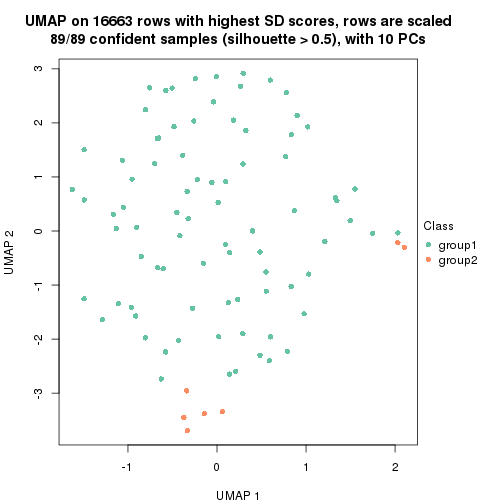
dimension_reduction(res, k = 3, method = "UMAP")
dimension_reduction(res, k = 4, method = "UMAP")
dimension_reduction(res, k = 5, method = "UMAP")
dimension_reduction(res, k = 6, method = "UMAP")
Following heatmap shows how subgroups are split when increasing k:
collect_classes(res)
Test correlation between subgroups and known annotations. If the known annotation is numeric, one-way ANOVA test is applied, and if the known annotation is discrete, chi-squared contingency table test is applied.
test_to_known_factors(res)
#> n protocol(p) k
#> SD:pam 89 0.526 2
#> SD:pam 76 0.947 3
#> SD:pam 67 0.834 4
#> SD:pam 65 0.623 5
#> SD:pam 73 0.945 6
If matrix rows can be associated to genes, consider to use functional_enrichment(res,
...) to perform function enrichment for the signature genes. See this vignette for more detailed explanations.
The object with results only for a single top-value method and a single partition method can be extracted as:
res = res_list["SD", "mclust"]
# you can also extract it by
# res = res_list["SD:mclust"]
A summary of res and all the functions that can be applied to it:
res
#> A 'ConsensusPartition' object with k = 2, 3, 4, 5, 6.
#> On a matrix with 16663 rows and 89 columns.
#> Top rows (1000, 2000, 3000, 4000, 5000) are extracted by 'SD' method.
#> Subgroups are detected by 'mclust' method.
#> Performed in total 1250 partitions by row resampling.
#> Best k for subgroups seems to be 4.
#>
#> Following methods can be applied to this 'ConsensusPartition' object:
#> [1] "cola_report" "collect_classes" "collect_plots"
#> [4] "collect_stats" "colnames" "compare_signatures"
#> [7] "consensus_heatmap" "dimension_reduction" "functional_enrichment"
#> [10] "get_anno_col" "get_anno" "get_classes"
#> [13] "get_consensus" "get_matrix" "get_membership"
#> [16] "get_param" "get_signatures" "get_stats"
#> [19] "is_best_k" "is_stable_k" "membership_heatmap"
#> [22] "ncol" "nrow" "plot_ecdf"
#> [25] "rownames" "select_partition_number" "show"
#> [28] "suggest_best_k" "test_to_known_factors"
collect_plots() function collects all the plots made from res for all k (number of partitions)
into one single page to provide an easy and fast comparison between different k.
collect_plots(res)
The plots are:
k and the heatmap of
predicted classes for each k.k.k.k.All the plots in panels can be made by individual functions and they are plotted later in this section.
select_partition_number() produces several plots showing different
statistics for choosing “optimized” k. There are following statistics:
k;k, the area increased is defined as \(A_k - A_{k-1}\).The detailed explanations of these statistics can be found in the cola vignette.
Generally speaking, lower PAC score, higher mean silhouette score or higher
concordance corresponds to better partition. Rand index and Jaccard index
measure how similar the current partition is compared to partition with k-1.
If they are too similar, we won't accept k is better than k-1.
select_partition_number(res)
The numeric values for all these statistics can be obtained by get_stats().
get_stats(res)
#> k 1-PAC mean_silhouette concordance area_increased Rand Jaccard
#> 2 2 0.289 0.650 0.820 0.4375 0.494 0.494
#> 3 3 0.613 0.818 0.889 0.2282 0.705 0.534
#> 4 4 0.593 0.681 0.866 0.2630 0.795 0.596
#> 5 5 0.541 0.486 0.764 0.0934 0.860 0.636
#> 6 6 0.564 0.471 0.651 0.0612 0.924 0.751
suggest_best_k() suggests the best \(k\) based on these statistics. The rules are as follows:
suggest_best_k(res)
#> [1] 4
Following shows the table of the partitions (You need to click the show/hide
code output link to see it). The membership matrix (columns with name p*)
is inferred by
clue::cl_consensus()
function with the SE method. Basically the value in the membership matrix
represents the probability to belong to a certain group. The finall class
label for an item is determined with the group with highest probability it
belongs to.
In get_classes() function, the entropy is calculated from the membership
matrix and the silhouette score is calculated from the consensus matrix.
cbind(get_classes(res, k = 2), get_membership(res, k = 2))
#> class entropy silhouette p1 p2
#> GSM78921 1 0.9993 0.03292 0.516 0.484
#> GSM78922 1 0.4298 0.76327 0.912 0.088
#> GSM78923 2 0.6343 0.83079 0.160 0.840
#> GSM78924 2 0.3879 0.81131 0.076 0.924
#> GSM78925 2 0.5737 0.83366 0.136 0.864
#> GSM78926 2 0.9881 0.28805 0.436 0.564
#> GSM78927 1 0.0000 0.78095 1.000 0.000
#> GSM78928 1 0.9954 0.00672 0.540 0.460
#> GSM78929 2 0.6623 0.83007 0.172 0.828
#> GSM78930 2 0.8909 0.70451 0.308 0.692
#> GSM78931 2 0.5408 0.82646 0.124 0.876
#> GSM78932 2 0.3733 0.81006 0.072 0.928
#> GSM78933 1 0.0000 0.78095 1.000 0.000
#> GSM78934 2 0.7219 0.81554 0.200 0.800
#> GSM78935 1 0.2043 0.78605 0.968 0.032
#> GSM78936 1 0.9944 -0.02923 0.544 0.456
#> GSM78937 1 0.4562 0.74810 0.904 0.096
#> GSM78938 1 0.0000 0.78095 1.000 0.000
#> GSM78939 1 0.2043 0.78605 0.968 0.032
#> GSM78940 2 0.9460 0.57641 0.364 0.636
#> GSM78941 2 0.7219 0.81554 0.200 0.800
#> GSM78942 2 0.4298 0.81853 0.088 0.912
#> GSM78943 1 0.0376 0.78114 0.996 0.004
#> GSM78944 1 0.0000 0.78095 1.000 0.000
#> GSM78945 1 0.0000 0.78095 1.000 0.000
#> GSM78946 1 0.0000 0.78095 1.000 0.000
#> GSM78947 2 0.4161 0.81602 0.084 0.916
#> GSM78948 1 0.2423 0.78315 0.960 0.040
#> GSM78949 1 0.0000 0.78095 1.000 0.000
#> GSM78950 1 0.9686 0.22692 0.604 0.396
#> GSM78951 2 0.8386 0.73568 0.268 0.732
#> GSM78952 2 0.4562 0.82160 0.096 0.904
#> GSM78953 2 0.5629 0.83321 0.132 0.868
#> GSM78954 2 0.5294 0.82976 0.120 0.880
#> GSM78955 2 0.9686 0.49656 0.396 0.604
#> GSM78956 2 0.7139 0.81815 0.196 0.804
#> GSM78957 2 0.6247 0.82779 0.156 0.844
#> GSM78958 1 0.9983 -0.06943 0.524 0.476
#> GSM78959 1 0.2043 0.78605 0.968 0.032
#> GSM78960 2 0.2043 0.78611 0.032 0.968
#> GSM78961 2 0.2423 0.78638 0.040 0.960
#> GSM78962 2 0.9248 0.57865 0.340 0.660
#> GSM78963 2 0.1843 0.78531 0.028 0.972
#> GSM78964 2 0.1843 0.78531 0.028 0.972
#> GSM78965 2 0.1843 0.78531 0.028 0.972
#> GSM78966 1 0.2043 0.78605 0.968 0.032
#> GSM78967 1 0.2043 0.78605 0.968 0.032
#> GSM78879 1 0.4022 0.75236 0.920 0.080
#> GSM78880 1 0.2043 0.78605 0.968 0.032
#> GSM78881 1 0.0000 0.78095 1.000 0.000
#> GSM78882 1 0.2778 0.76377 0.952 0.048
#> GSM78883 1 0.2043 0.78605 0.968 0.032
#> GSM78884 1 0.9977 0.04950 0.528 0.472
#> GSM78885 1 0.2603 0.78130 0.956 0.044
#> GSM78886 2 0.9970 0.27169 0.468 0.532
#> GSM78887 1 0.9983 -0.06943 0.524 0.476
#> GSM78888 1 0.0000 0.78095 1.000 0.000
#> GSM78889 2 0.6247 0.82779 0.156 0.844
#> GSM78890 2 0.9866 0.40024 0.432 0.568
#> GSM78891 1 0.0000 0.78095 1.000 0.000
#> GSM78892 2 0.8327 0.75142 0.264 0.736
#> GSM78893 2 0.9209 0.63508 0.336 0.664
#> GSM78894 1 0.0000 0.78095 1.000 0.000
#> GSM78895 2 0.6531 0.83115 0.168 0.832
#> GSM78896 1 0.8327 0.49443 0.736 0.264
#> GSM78897 1 0.9795 0.14550 0.584 0.416
#> GSM78898 1 0.5059 0.69801 0.888 0.112
#> GSM78899 1 0.9970 0.07760 0.532 0.468
#> GSM78900 2 0.6973 0.79688 0.188 0.812
#> GSM78901 1 0.9909 0.07261 0.556 0.444
#> GSM78902 2 0.7056 0.81583 0.192 0.808
#> GSM78903 2 0.6712 0.82858 0.176 0.824
#> GSM78904 1 0.9795 0.17973 0.584 0.416
#> GSM78905 2 0.6148 0.83313 0.152 0.848
#> GSM78906 2 0.6531 0.83115 0.168 0.832
#> GSM78907 1 0.1414 0.78104 0.980 0.020
#> GSM78908 1 0.9909 -0.00778 0.556 0.444
#> GSM78909 2 0.6531 0.82448 0.168 0.832
#> GSM78910 1 0.2043 0.78605 0.968 0.032
#> GSM78911 2 0.6623 0.82278 0.172 0.828
#> GSM78912 1 0.9710 0.16058 0.600 0.400
#> GSM78913 2 0.1843 0.78531 0.028 0.972
#> GSM78914 2 0.2423 0.78638 0.040 0.960
#> GSM78915 2 0.1843 0.78531 0.028 0.972
#> GSM78916 2 0.7883 0.77541 0.236 0.764
#> GSM78917 1 0.2043 0.78605 0.968 0.032
#> GSM78918 1 0.2423 0.78255 0.960 0.040
#> GSM78919 1 0.2043 0.78605 0.968 0.032
#> GSM78920 2 0.9970 0.27913 0.468 0.532
cbind(get_classes(res, k = 3), get_membership(res, k = 3))
#> class entropy silhouette p1 p2 p3
#> GSM78921 1 0.2982 0.8873 0.920 0.056 0.024
#> GSM78922 1 0.0747 0.8872 0.984 0.016 0.000
#> GSM78923 2 0.0747 0.8491 0.016 0.984 0.000
#> GSM78924 3 0.5318 0.7926 0.016 0.204 0.780
#> GSM78925 2 0.3921 0.7659 0.016 0.872 0.112
#> GSM78926 1 0.3356 0.8837 0.908 0.056 0.036
#> GSM78927 1 0.0000 0.8928 1.000 0.000 0.000
#> GSM78928 1 0.4887 0.7920 0.772 0.228 0.000
#> GSM78929 2 0.0747 0.8491 0.016 0.984 0.000
#> GSM78930 1 0.3337 0.8804 0.908 0.060 0.032
#> GSM78931 1 0.8774 0.0368 0.476 0.412 0.112
#> GSM78932 2 0.6648 0.2583 0.016 0.620 0.364
#> GSM78933 1 0.0237 0.8938 0.996 0.004 0.000
#> GSM78934 2 0.1031 0.8475 0.024 0.976 0.000
#> GSM78935 1 0.0592 0.8913 0.988 0.000 0.012
#> GSM78936 1 0.3459 0.8883 0.892 0.096 0.012
#> GSM78937 1 0.4750 0.8022 0.784 0.216 0.000
#> GSM78938 1 0.2384 0.8940 0.936 0.056 0.008
#> GSM78939 1 0.1163 0.8967 0.972 0.028 0.000
#> GSM78940 2 0.6008 0.2913 0.372 0.628 0.000
#> GSM78941 2 0.0747 0.8491 0.016 0.984 0.000
#> GSM78942 2 0.7764 0.2333 0.068 0.604 0.328
#> GSM78943 1 0.0000 0.8928 1.000 0.000 0.000
#> GSM78944 1 0.2774 0.8901 0.920 0.072 0.008
#> GSM78945 1 0.2680 0.8906 0.924 0.068 0.008
#> GSM78946 1 0.1964 0.8942 0.944 0.056 0.000
#> GSM78947 3 0.5219 0.8124 0.016 0.196 0.788
#> GSM78948 1 0.1337 0.8833 0.972 0.016 0.012
#> GSM78949 1 0.2384 0.8940 0.936 0.056 0.008
#> GSM78950 1 0.1950 0.8952 0.952 0.040 0.008
#> GSM78951 1 0.3337 0.8804 0.908 0.060 0.032
#> GSM78952 2 0.1337 0.8482 0.016 0.972 0.012
#> GSM78953 2 0.2804 0.8039 0.016 0.924 0.060
#> GSM78954 3 0.4999 0.8349 0.028 0.152 0.820
#> GSM78955 1 0.5420 0.7767 0.752 0.240 0.008
#> GSM78956 2 0.1031 0.8475 0.024 0.976 0.000
#> GSM78957 2 0.1337 0.8482 0.016 0.972 0.012
#> GSM78958 1 0.2446 0.8899 0.936 0.052 0.012
#> GSM78959 1 0.1182 0.8857 0.976 0.012 0.012
#> GSM78960 3 0.2356 0.9064 0.000 0.072 0.928
#> GSM78961 3 0.5178 0.7380 0.000 0.256 0.744
#> GSM78962 1 0.3590 0.8805 0.896 0.076 0.028
#> GSM78963 3 0.1289 0.8853 0.000 0.032 0.968
#> GSM78964 3 0.1289 0.8853 0.000 0.032 0.968
#> GSM78965 3 0.2356 0.9064 0.000 0.072 0.928
#> GSM78966 1 0.2537 0.8881 0.920 0.080 0.000
#> GSM78967 1 0.0592 0.8913 0.988 0.000 0.012
#> GSM78879 1 0.1337 0.8833 0.972 0.016 0.012
#> GSM78880 1 0.1337 0.8833 0.972 0.016 0.012
#> GSM78881 1 0.0000 0.8928 1.000 0.000 0.000
#> GSM78882 1 0.0000 0.8928 1.000 0.000 0.000
#> GSM78883 1 0.1964 0.8942 0.944 0.056 0.000
#> GSM78884 1 0.3356 0.8837 0.908 0.056 0.036
#> GSM78885 1 0.2448 0.8963 0.924 0.076 0.000
#> GSM78886 1 0.5254 0.7551 0.736 0.264 0.000
#> GSM78887 1 0.5072 0.8210 0.792 0.196 0.012
#> GSM78888 1 0.0892 0.8962 0.980 0.020 0.000
#> GSM78889 2 0.1337 0.8482 0.016 0.972 0.012
#> GSM78890 1 0.5656 0.7132 0.712 0.284 0.004
#> GSM78891 1 0.2280 0.8949 0.940 0.052 0.008
#> GSM78892 2 0.5905 0.3542 0.352 0.648 0.000
#> GSM78893 2 0.1529 0.8364 0.040 0.960 0.000
#> GSM78894 1 0.2384 0.8940 0.936 0.056 0.008
#> GSM78895 2 0.1491 0.8424 0.016 0.968 0.016
#> GSM78896 1 0.1643 0.8969 0.956 0.044 0.000
#> GSM78897 1 0.4452 0.8262 0.808 0.192 0.000
#> GSM78898 1 0.2384 0.8940 0.936 0.056 0.008
#> GSM78899 1 0.3356 0.8837 0.908 0.056 0.036
#> GSM78900 1 0.3791 0.8771 0.892 0.060 0.048
#> GSM78901 1 0.5016 0.7796 0.760 0.240 0.000
#> GSM78902 1 0.3649 0.8752 0.896 0.068 0.036
#> GSM78903 2 0.0747 0.8491 0.016 0.984 0.000
#> GSM78904 1 0.4842 0.7956 0.776 0.224 0.000
#> GSM78905 1 0.7273 0.7247 0.712 0.156 0.132
#> GSM78906 2 0.2152 0.8222 0.016 0.948 0.036
#> GSM78907 1 0.2878 0.8902 0.904 0.096 0.000
#> GSM78908 1 0.2116 0.8935 0.948 0.040 0.012
#> GSM78909 2 0.1031 0.8475 0.024 0.976 0.000
#> GSM78910 1 0.2537 0.8881 0.920 0.080 0.000
#> GSM78911 2 0.1620 0.8479 0.024 0.964 0.012
#> GSM78912 1 0.2116 0.8935 0.948 0.040 0.012
#> GSM78913 3 0.1289 0.8853 0.000 0.032 0.968
#> GSM78914 3 0.2356 0.9064 0.000 0.072 0.928
#> GSM78915 3 0.2356 0.9064 0.000 0.072 0.928
#> GSM78916 2 0.4346 0.6519 0.184 0.816 0.000
#> GSM78917 1 0.0592 0.8913 0.988 0.000 0.012
#> GSM78918 1 0.4178 0.8221 0.828 0.172 0.000
#> GSM78919 1 0.2448 0.8896 0.924 0.076 0.000
#> GSM78920 1 0.6215 0.4075 0.572 0.428 0.000
cbind(get_classes(res, k = 4), get_membership(res, k = 4))
#> class entropy silhouette p1 p2 p3 p4
#> GSM78921 4 0.2921 0.69053 0.140 0.000 0.000 0.860
#> GSM78922 1 0.3569 0.72156 0.804 0.000 0.000 0.196
#> GSM78923 2 0.0188 0.91932 0.000 0.996 0.004 0.000
#> GSM78924 3 0.3528 0.57894 0.000 0.192 0.808 0.000
#> GSM78925 3 0.6179 0.41362 0.072 0.320 0.608 0.000
#> GSM78926 4 0.0921 0.74985 0.028 0.000 0.000 0.972
#> GSM78927 1 0.0000 0.82206 1.000 0.000 0.000 0.000
#> GSM78928 1 0.4356 0.60426 0.708 0.292 0.000 0.000
#> GSM78929 2 0.0376 0.91768 0.004 0.992 0.004 0.000
#> GSM78930 3 0.4933 0.32513 0.432 0.000 0.568 0.000
#> GSM78931 4 0.4214 0.63885 0.016 0.000 0.204 0.780
#> GSM78932 3 0.4998 -0.06543 0.000 0.488 0.512 0.000
#> GSM78933 1 0.0000 0.82206 1.000 0.000 0.000 0.000
#> GSM78934 2 0.0188 0.91932 0.000 0.996 0.004 0.000
#> GSM78935 1 0.2530 0.78262 0.888 0.000 0.000 0.112
#> GSM78936 1 0.4925 0.20558 0.572 0.428 0.000 0.000
#> GSM78937 1 0.3837 0.67258 0.776 0.224 0.000 0.000
#> GSM78938 1 0.0921 0.81674 0.972 0.000 0.000 0.028
#> GSM78939 1 0.0000 0.82206 1.000 0.000 0.000 0.000
#> GSM78940 2 0.0000 0.91802 0.000 1.000 0.000 0.000
#> GSM78941 2 0.0000 0.91802 0.000 1.000 0.000 0.000
#> GSM78942 4 0.4925 0.29737 0.000 0.000 0.428 0.572
#> GSM78943 1 0.0000 0.82206 1.000 0.000 0.000 0.000
#> GSM78944 1 0.0921 0.81674 0.972 0.000 0.000 0.028
#> GSM78945 1 0.0921 0.81674 0.972 0.000 0.000 0.028
#> GSM78946 1 0.0000 0.82206 1.000 0.000 0.000 0.000
#> GSM78947 3 0.2596 0.65926 0.024 0.068 0.908 0.000
#> GSM78948 1 0.4277 0.62204 0.720 0.000 0.000 0.280
#> GSM78949 1 0.0921 0.81674 0.972 0.000 0.000 0.028
#> GSM78950 1 0.4992 0.05248 0.524 0.000 0.000 0.476
#> GSM78951 3 0.4977 0.25123 0.460 0.000 0.540 0.000
#> GSM78952 2 0.2921 0.78815 0.000 0.860 0.140 0.000
#> GSM78953 2 0.1211 0.89749 0.000 0.960 0.040 0.000
#> GSM78954 3 0.3447 0.61748 0.128 0.020 0.852 0.000
#> GSM78955 1 0.4401 0.62530 0.724 0.272 0.004 0.000
#> GSM78956 2 0.0188 0.91932 0.000 0.996 0.004 0.000
#> GSM78957 2 0.2345 0.83471 0.000 0.900 0.100 0.000
#> GSM78958 4 0.5321 0.03592 0.464 0.004 0.004 0.528
#> GSM78959 1 0.4008 0.67045 0.756 0.000 0.000 0.244
#> GSM78960 3 0.0000 0.68422 0.000 0.000 1.000 0.000
#> GSM78961 3 0.4830 0.00603 0.000 0.000 0.608 0.392
#> GSM78962 4 0.3464 0.71576 0.032 0.000 0.108 0.860
#> GSM78963 3 0.0000 0.68422 0.000 0.000 1.000 0.000
#> GSM78964 3 0.0000 0.68422 0.000 0.000 1.000 0.000
#> GSM78965 3 0.0000 0.68422 0.000 0.000 1.000 0.000
#> GSM78966 1 0.2654 0.78338 0.888 0.004 0.000 0.108
#> GSM78967 1 0.2530 0.78228 0.888 0.000 0.000 0.112
#> GSM78879 1 0.4761 0.45417 0.628 0.000 0.000 0.372
#> GSM78880 1 0.3610 0.71811 0.800 0.000 0.000 0.200
#> GSM78881 1 0.0000 0.82206 1.000 0.000 0.000 0.000
#> GSM78882 1 0.0000 0.82206 1.000 0.000 0.000 0.000
#> GSM78883 1 0.2469 0.78400 0.892 0.000 0.000 0.108
#> GSM78884 4 0.0921 0.74985 0.028 0.000 0.000 0.972
#> GSM78885 1 0.0000 0.82206 1.000 0.000 0.000 0.000
#> GSM78886 2 0.3649 0.65234 0.204 0.796 0.000 0.000
#> GSM78887 1 0.7504 0.13928 0.460 0.376 0.004 0.160
#> GSM78888 1 0.0000 0.82206 1.000 0.000 0.000 0.000
#> GSM78889 2 0.0188 0.91932 0.000 0.996 0.004 0.000
#> GSM78890 1 0.4741 0.54271 0.668 0.328 0.004 0.000
#> GSM78891 1 0.0921 0.81674 0.972 0.000 0.000 0.028
#> GSM78892 2 0.0000 0.91802 0.000 1.000 0.000 0.000
#> GSM78893 2 0.0188 0.91674 0.004 0.996 0.000 0.000
#> GSM78894 1 0.0921 0.81674 0.972 0.000 0.000 0.028
#> GSM78895 2 0.1022 0.90284 0.000 0.968 0.032 0.000
#> GSM78896 1 0.0000 0.82206 1.000 0.000 0.000 0.000
#> GSM78897 1 0.0469 0.81924 0.988 0.000 0.012 0.000
#> GSM78898 1 0.0921 0.81674 0.972 0.000 0.000 0.028
#> GSM78899 4 0.0921 0.74985 0.028 0.000 0.000 0.972
#> GSM78900 1 0.4994 -0.13044 0.520 0.000 0.480 0.000
#> GSM78901 2 0.4500 0.46866 0.316 0.684 0.000 0.000
#> GSM78902 3 0.4972 0.26682 0.456 0.000 0.544 0.000
#> GSM78903 2 0.0188 0.91932 0.000 0.996 0.004 0.000
#> GSM78904 1 0.4477 0.58179 0.688 0.312 0.000 0.000
#> GSM78905 1 0.3606 0.69469 0.840 0.020 0.140 0.000
#> GSM78906 2 0.1022 0.90284 0.000 0.968 0.032 0.000
#> GSM78907 1 0.0000 0.82206 1.000 0.000 0.000 0.000
#> GSM78908 1 0.0000 0.82206 1.000 0.000 0.000 0.000
#> GSM78909 2 0.0188 0.91932 0.000 0.996 0.004 0.000
#> GSM78910 1 0.2469 0.78400 0.892 0.000 0.000 0.108
#> GSM78911 2 0.0188 0.91932 0.000 0.996 0.004 0.000
#> GSM78912 1 0.4624 0.32742 0.660 0.000 0.000 0.340
#> GSM78913 3 0.0000 0.68422 0.000 0.000 1.000 0.000
#> GSM78914 3 0.0000 0.68422 0.000 0.000 1.000 0.000
#> GSM78915 3 0.0000 0.68422 0.000 0.000 1.000 0.000
#> GSM78916 2 0.0000 0.91802 0.000 1.000 0.000 0.000
#> GSM78917 1 0.2469 0.78400 0.892 0.000 0.000 0.108
#> GSM78918 1 0.3024 0.74517 0.852 0.148 0.000 0.000
#> GSM78919 1 0.0707 0.81854 0.980 0.000 0.000 0.020
#> GSM78920 2 0.4103 0.58134 0.256 0.744 0.000 0.000
cbind(get_classes(res, k = 5), get_membership(res, k = 5))
#> class entropy silhouette p1 p2 p3 p4 p5
#> GSM78921 4 0.4595 0.5266 0.236 0.000 0.044 0.716 0.004
#> GSM78922 1 0.2561 0.5492 0.856 0.000 0.000 0.144 0.000
#> GSM78923 2 0.2754 0.7481 0.000 0.884 0.080 0.004 0.032
#> GSM78924 5 0.4049 0.7187 0.000 0.084 0.124 0.000 0.792
#> GSM78925 5 0.4314 0.7265 0.024 0.060 0.120 0.000 0.796
#> GSM78926 4 0.0324 0.8146 0.004 0.000 0.000 0.992 0.004
#> GSM78927 1 0.0000 0.5193 1.000 0.000 0.000 0.000 0.000
#> GSM78928 2 0.4250 0.4883 0.252 0.720 0.028 0.000 0.000
#> GSM78929 2 0.3459 0.7272 0.000 0.832 0.052 0.000 0.116
#> GSM78930 5 0.4305 0.6551 0.200 0.000 0.052 0.000 0.748
#> GSM78931 5 0.5699 0.3897 0.016 0.008 0.040 0.356 0.580
#> GSM78932 5 0.4808 0.5930 0.000 0.168 0.108 0.000 0.724
#> GSM78933 1 0.1662 0.4772 0.936 0.004 0.056 0.000 0.004
#> GSM78934 2 0.3368 0.7434 0.000 0.820 0.156 0.000 0.024
#> GSM78935 1 0.3326 0.5465 0.824 0.000 0.024 0.152 0.000
#> GSM78936 1 0.6438 0.2513 0.636 0.148 0.148 0.068 0.000
#> GSM78937 1 0.5579 0.0995 0.540 0.392 0.064 0.000 0.004
#> GSM78938 1 0.3612 -0.2209 0.732 0.000 0.268 0.000 0.000
#> GSM78939 1 0.1857 0.5286 0.928 0.004 0.060 0.008 0.000
#> GSM78940 2 0.0000 0.7419 0.000 1.000 0.000 0.000 0.000
#> GSM78941 2 0.2930 0.7232 0.000 0.832 0.164 0.000 0.004
#> GSM78942 5 0.4749 0.5532 0.000 0.008 0.040 0.252 0.700
#> GSM78943 1 0.1443 0.4866 0.948 0.004 0.044 0.000 0.004
#> GSM78944 1 0.4443 -0.9007 0.524 0.004 0.472 0.000 0.000
#> GSM78945 3 0.4307 0.9603 0.500 0.000 0.500 0.000 0.000
#> GSM78946 1 0.1638 0.4674 0.932 0.004 0.064 0.000 0.000
#> GSM78947 5 0.2997 0.7447 0.000 0.012 0.148 0.000 0.840
#> GSM78948 1 0.3304 0.5414 0.816 0.000 0.016 0.168 0.000
#> GSM78949 1 0.4306 -0.9549 0.508 0.000 0.492 0.000 0.000
#> GSM78950 1 0.5524 0.1558 0.516 0.000 0.068 0.416 0.000
#> GSM78951 5 0.4400 0.6443 0.212 0.000 0.052 0.000 0.736
#> GSM78952 5 0.4689 0.3323 0.000 0.424 0.016 0.000 0.560
#> GSM78953 2 0.6764 0.2437 0.000 0.400 0.292 0.000 0.308
#> GSM78954 5 0.3545 0.7444 0.012 0.012 0.148 0.004 0.824
#> GSM78955 2 0.5867 0.4133 0.284 0.612 0.084 0.000 0.020
#> GSM78956 2 0.3197 0.7467 0.000 0.836 0.140 0.000 0.024
#> GSM78957 2 0.6390 0.4463 0.000 0.536 0.200 0.004 0.260
#> GSM78958 1 0.6816 0.1502 0.488 0.044 0.092 0.372 0.004
#> GSM78959 1 0.2806 0.5469 0.844 0.000 0.004 0.152 0.000
#> GSM78960 5 0.0703 0.7573 0.000 0.000 0.024 0.000 0.976
#> GSM78961 5 0.4616 0.5697 0.000 0.008 0.040 0.232 0.720
#> GSM78962 4 0.3937 0.5150 0.004 0.008 0.000 0.736 0.252
#> GSM78963 5 0.0451 0.7619 0.000 0.008 0.004 0.000 0.988
#> GSM78964 5 0.0579 0.7620 0.000 0.008 0.008 0.000 0.984
#> GSM78965 5 0.0703 0.7573 0.000 0.000 0.024 0.000 0.976
#> GSM78966 1 0.3967 0.5195 0.808 0.008 0.060 0.124 0.000
#> GSM78967 1 0.2806 0.5469 0.844 0.000 0.004 0.152 0.000
#> GSM78879 1 0.5468 0.2932 0.568 0.000 0.060 0.368 0.004
#> GSM78880 1 0.2806 0.5469 0.844 0.000 0.004 0.152 0.000
#> GSM78881 1 0.0000 0.5193 1.000 0.000 0.000 0.000 0.000
#> GSM78882 1 0.0880 0.4924 0.968 0.000 0.032 0.000 0.000
#> GSM78883 1 0.3732 0.5511 0.820 0.004 0.056 0.120 0.000
#> GSM78884 4 0.0290 0.8157 0.008 0.000 0.000 0.992 0.000
#> GSM78885 1 0.3397 0.4979 0.848 0.004 0.080 0.068 0.000
#> GSM78886 2 0.3602 0.6849 0.140 0.820 0.036 0.000 0.004
#> GSM78887 1 0.8471 -0.0407 0.348 0.272 0.148 0.228 0.004
#> GSM78888 1 0.1282 0.4904 0.952 0.004 0.044 0.000 0.000
#> GSM78889 2 0.3897 0.7312 0.000 0.768 0.204 0.000 0.028
#> GSM78890 2 0.6497 0.2599 0.324 0.548 0.072 0.000 0.056
#> GSM78891 1 0.4294 -0.8990 0.532 0.000 0.468 0.000 0.000
#> GSM78892 2 0.0000 0.7419 0.000 1.000 0.000 0.000 0.000
#> GSM78893 2 0.2650 0.7278 0.036 0.892 0.068 0.000 0.004
#> GSM78894 1 0.4297 -0.9048 0.528 0.000 0.472 0.000 0.000
#> GSM78895 2 0.6044 0.4563 0.000 0.576 0.188 0.000 0.236
#> GSM78896 1 0.2673 0.5113 0.892 0.004 0.060 0.044 0.000
#> GSM78897 1 0.6023 -0.1460 0.520 0.388 0.076 0.000 0.016
#> GSM78898 3 0.4304 0.9610 0.484 0.000 0.516 0.000 0.000
#> GSM78899 4 0.0794 0.8134 0.028 0.000 0.000 0.972 0.000
#> GSM78900 5 0.4548 0.6220 0.232 0.000 0.052 0.000 0.716
#> GSM78901 2 0.3163 0.6552 0.164 0.824 0.012 0.000 0.000
#> GSM78902 5 0.4496 0.6413 0.216 0.000 0.056 0.000 0.728
#> GSM78903 2 0.3485 0.7378 0.000 0.828 0.124 0.000 0.048
#> GSM78904 2 0.4301 0.4790 0.260 0.712 0.028 0.000 0.000
#> GSM78905 5 0.6379 0.4643 0.236 0.012 0.184 0.000 0.568
#> GSM78906 2 0.6147 0.4112 0.000 0.556 0.188 0.000 0.256
#> GSM78907 1 0.1952 0.4815 0.912 0.004 0.084 0.000 0.000
#> GSM78908 1 0.3181 0.4948 0.856 0.000 0.072 0.072 0.000
#> GSM78909 2 0.3968 0.7307 0.000 0.768 0.204 0.004 0.024
#> GSM78910 1 0.5355 0.2951 0.688 0.008 0.184 0.120 0.000
#> GSM78911 2 0.4132 0.7287 0.000 0.760 0.204 0.004 0.032
#> GSM78912 1 0.5203 0.2881 0.648 0.000 0.080 0.272 0.000
#> GSM78913 5 0.0451 0.7619 0.000 0.008 0.004 0.000 0.988
#> GSM78914 5 0.0703 0.7573 0.000 0.000 0.024 0.000 0.976
#> GSM78915 5 0.0609 0.7577 0.000 0.000 0.020 0.000 0.980
#> GSM78916 2 0.0671 0.7422 0.000 0.980 0.016 0.004 0.000
#> GSM78917 1 0.2806 0.5469 0.844 0.000 0.004 0.152 0.000
#> GSM78918 1 0.4333 0.4286 0.752 0.188 0.060 0.000 0.000
#> GSM78919 1 0.2026 0.5399 0.928 0.012 0.016 0.044 0.000
#> GSM78920 2 0.2130 0.7156 0.080 0.908 0.012 0.000 0.000
cbind(get_classes(res, k = 6), get_membership(res, k = 6))
#> class entropy silhouette p1 p2 p3 p4 p5 p6
#> GSM78921 4 0.3883 0.6966 0.144 0.000 0.000 0.768 0.000 0.088
#> GSM78922 1 0.3364 0.6268 0.828 0.068 0.000 0.096 0.000 0.008
#> GSM78923 5 0.4575 0.3760 0.000 0.100 0.064 0.000 0.756 0.080
#> GSM78924 3 0.6264 0.4240 0.000 0.048 0.472 0.000 0.360 0.120
#> GSM78925 3 0.5935 0.5848 0.024 0.048 0.592 0.000 0.280 0.056
#> GSM78926 4 0.0000 0.8363 0.000 0.000 0.000 1.000 0.000 0.000
#> GSM78927 1 0.0146 0.6163 0.996 0.004 0.000 0.000 0.000 0.000
#> GSM78928 2 0.5844 0.6310 0.072 0.508 0.000 0.000 0.372 0.048
#> GSM78929 5 0.4262 0.3210 0.000 0.060 0.144 0.000 0.764 0.032
#> GSM78930 3 0.4728 0.5473 0.188 0.012 0.700 0.000 0.000 0.100
#> GSM78931 3 0.7054 0.2105 0.072 0.028 0.452 0.372 0.032 0.044
#> GSM78932 3 0.5434 0.4488 0.000 0.212 0.596 0.000 0.188 0.004
#> GSM78933 1 0.3297 0.5241 0.820 0.068 0.000 0.000 0.000 0.112
#> GSM78934 5 0.2969 0.2603 0.000 0.224 0.000 0.000 0.776 0.000
#> GSM78935 1 0.3694 0.6215 0.808 0.048 0.000 0.120 0.000 0.024
#> GSM78936 1 0.6225 0.3360 0.560 0.288 0.000 0.024 0.040 0.088
#> GSM78937 1 0.6015 0.3960 0.568 0.272 0.000 0.000 0.068 0.092
#> GSM78938 1 0.3659 -0.1395 0.636 0.000 0.000 0.000 0.000 0.364
#> GSM78939 1 0.2122 0.6208 0.900 0.008 0.000 0.008 0.000 0.084
#> GSM78940 2 0.4262 0.5902 0.016 0.508 0.000 0.000 0.476 0.000
#> GSM78941 5 0.3351 -0.2062 0.000 0.288 0.000 0.000 0.712 0.000
#> GSM78942 3 0.5786 0.3918 0.000 0.028 0.564 0.332 0.032 0.044
#> GSM78943 1 0.3361 0.5254 0.816 0.076 0.000 0.000 0.000 0.108
#> GSM78944 6 0.3607 0.9859 0.348 0.000 0.000 0.000 0.000 0.652
#> GSM78945 6 0.3578 0.9876 0.340 0.000 0.000 0.000 0.000 0.660
#> GSM78946 1 0.3298 0.2834 0.756 0.008 0.000 0.000 0.000 0.236
#> GSM78947 3 0.4779 0.6666 0.004 0.040 0.724 0.000 0.172 0.060
#> GSM78948 1 0.3990 0.6096 0.784 0.068 0.000 0.128 0.000 0.020
#> GSM78949 6 0.3578 0.9876 0.340 0.000 0.000 0.000 0.000 0.660
#> GSM78950 1 0.5971 0.2429 0.512 0.048 0.000 0.352 0.000 0.088
#> GSM78951 3 0.4757 0.5441 0.192 0.012 0.696 0.000 0.000 0.100
#> GSM78952 5 0.6178 0.0126 0.000 0.104 0.396 0.000 0.452 0.048
#> GSM78953 5 0.4503 0.4120 0.000 0.192 0.108 0.000 0.700 0.000
#> GSM78954 3 0.4335 0.6897 0.000 0.032 0.764 0.000 0.124 0.080
#> GSM78955 5 0.7234 -0.3394 0.076 0.324 0.008 0.000 0.380 0.212
#> GSM78956 5 0.3240 0.2361 0.000 0.244 0.000 0.000 0.752 0.004
#> GSM78957 5 0.6480 0.3717 0.000 0.372 0.068 0.000 0.444 0.116
#> GSM78958 1 0.6961 0.2789 0.480 0.228 0.000 0.200 0.004 0.088
#> GSM78959 1 0.3990 0.6096 0.784 0.068 0.000 0.128 0.000 0.020
#> GSM78960 3 0.0146 0.6956 0.000 0.000 0.996 0.000 0.000 0.004
#> GSM78961 3 0.5969 0.4824 0.000 0.028 0.612 0.244 0.076 0.040
#> GSM78962 4 0.3798 0.6914 0.000 0.000 0.128 0.800 0.032 0.040
#> GSM78963 3 0.3229 0.6955 0.000 0.040 0.852 0.000 0.044 0.064
#> GSM78964 3 0.3229 0.6955 0.000 0.040 0.852 0.000 0.044 0.064
#> GSM78965 3 0.0146 0.6956 0.000 0.000 0.996 0.000 0.000 0.004
#> GSM78966 1 0.4833 0.5420 0.728 0.088 0.000 0.052 0.000 0.132
#> GSM78967 1 0.3949 0.6113 0.788 0.068 0.000 0.124 0.000 0.020
#> GSM78879 1 0.4961 0.4170 0.592 0.000 0.000 0.320 0.000 0.088
#> GSM78880 1 0.4097 0.6078 0.776 0.076 0.000 0.128 0.000 0.020
#> GSM78881 1 0.0363 0.6166 0.988 0.012 0.000 0.000 0.000 0.000
#> GSM78882 1 0.1812 0.5519 0.912 0.008 0.000 0.000 0.000 0.080
#> GSM78883 1 0.3708 0.6243 0.816 0.032 0.000 0.060 0.000 0.092
#> GSM78884 4 0.0363 0.8373 0.000 0.000 0.000 0.988 0.000 0.012
#> GSM78885 1 0.2162 0.6179 0.896 0.004 0.000 0.012 0.000 0.088
#> GSM78886 5 0.5516 -0.5119 0.140 0.356 0.000 0.000 0.504 0.000
#> GSM78887 1 0.7666 0.1839 0.416 0.312 0.000 0.116 0.064 0.092
#> GSM78888 1 0.3159 0.5352 0.832 0.068 0.000 0.000 0.000 0.100
#> GSM78889 5 0.5361 0.3896 0.000 0.372 0.000 0.000 0.512 0.116
#> GSM78890 2 0.8686 0.1536 0.192 0.264 0.088 0.000 0.224 0.232
#> GSM78891 6 0.3592 0.9905 0.344 0.000 0.000 0.000 0.000 0.656
#> GSM78892 2 0.4465 0.6030 0.020 0.504 0.000 0.000 0.472 0.004
#> GSM78893 5 0.4159 -0.4826 0.016 0.396 0.000 0.000 0.588 0.000
#> GSM78894 6 0.3634 0.9789 0.356 0.000 0.000 0.000 0.000 0.644
#> GSM78895 5 0.1956 0.4129 0.000 0.008 0.080 0.000 0.908 0.004
#> GSM78896 1 0.2669 0.5755 0.836 0.008 0.000 0.000 0.000 0.156
#> GSM78897 1 0.7737 -0.3082 0.412 0.132 0.076 0.000 0.076 0.304
#> GSM78898 6 0.3592 0.9905 0.344 0.000 0.000 0.000 0.000 0.656
#> GSM78899 4 0.1757 0.8265 0.076 0.000 0.000 0.916 0.000 0.008
#> GSM78900 3 0.5062 0.4890 0.240 0.012 0.648 0.000 0.000 0.100
#> GSM78901 2 0.4899 0.6428 0.064 0.532 0.000 0.000 0.404 0.000
#> GSM78902 3 0.4925 0.5271 0.204 0.012 0.676 0.000 0.000 0.108
#> GSM78903 5 0.2390 0.3444 0.000 0.056 0.056 0.000 0.888 0.000
#> GSM78904 2 0.5888 0.4840 0.212 0.524 0.000 0.000 0.256 0.008
#> GSM78905 3 0.7692 0.4066 0.096 0.052 0.432 0.000 0.148 0.272
#> GSM78906 5 0.2213 0.4136 0.000 0.008 0.100 0.000 0.888 0.004
#> GSM78907 1 0.1858 0.5568 0.912 0.012 0.000 0.000 0.000 0.076
#> GSM78908 1 0.3816 0.5605 0.780 0.008 0.000 0.056 0.000 0.156
#> GSM78909 5 0.5361 0.3896 0.000 0.372 0.000 0.000 0.512 0.116
#> GSM78910 1 0.5472 -0.1426 0.524 0.048 0.000 0.040 0.000 0.388
#> GSM78911 5 0.5361 0.3896 0.000 0.372 0.000 0.000 0.512 0.116
#> GSM78912 1 0.5572 0.3561 0.580 0.008 0.000 0.244 0.000 0.168
#> GSM78913 3 0.3229 0.6955 0.000 0.040 0.852 0.000 0.044 0.064
#> GSM78914 3 0.0547 0.6940 0.000 0.000 0.980 0.000 0.000 0.020
#> GSM78915 3 0.0146 0.6962 0.000 0.000 0.996 0.000 0.000 0.004
#> GSM78916 5 0.5202 -0.5080 0.004 0.448 0.000 0.000 0.472 0.076
#> GSM78917 1 0.3988 0.6115 0.788 0.068 0.000 0.120 0.000 0.024
#> GSM78918 1 0.4671 0.5534 0.716 0.180 0.000 0.004 0.012 0.088
#> GSM78919 1 0.3540 0.6050 0.828 0.088 0.000 0.016 0.004 0.064
#> GSM78920 2 0.4954 0.6398 0.040 0.504 0.000 0.000 0.444 0.012
Heatmaps for the consensus matrix. It visualizes the probability of two samples to be in a same group.
consensus_heatmap(res, k = 2)
consensus_heatmap(res, k = 3)
consensus_heatmap(res, k = 4)
consensus_heatmap(res, k = 5)
consensus_heatmap(res, k = 6)
Heatmaps for the membership of samples in all partitions to see how consistent they are:
membership_heatmap(res, k = 2)
membership_heatmap(res, k = 3)
membership_heatmap(res, k = 4)
membership_heatmap(res, k = 5)
membership_heatmap(res, k = 6)
As soon as we have had the classes for columns, we can look for signatures which are significantly different between classes which can be candidate marks for certain classes. Following are the heatmaps for signatures.
Signature heatmaps where rows are scaled:
get_signatures(res, k = 2)
get_signatures(res, k = 3)
get_signatures(res, k = 4)
get_signatures(res, k = 5)
get_signatures(res, k = 6)
Signature heatmaps where rows are not scaled:
get_signatures(res, k = 2, scale_rows = FALSE)
get_signatures(res, k = 3, scale_rows = FALSE)
get_signatures(res, k = 4, scale_rows = FALSE)
get_signatures(res, k = 5, scale_rows = FALSE)
get_signatures(res, k = 6, scale_rows = FALSE)
Compare the overlap of signatures from different k:
compare_signatures(res)
get_signature() returns a data frame invisibly. TO get the list of signatures, the function
call should be assigned to a variable explicitly. In following code, if plot argument is set
to FALSE, no heatmap is plotted while only the differential analysis is performed.
# code only for demonstration
tb = get_signature(res, k = ..., plot = FALSE)
An example of the output of tb is:
#> which_row fdr mean_1 mean_2 scaled_mean_1 scaled_mean_2 km
#> 1 38 0.042760348 8.373488 9.131774 -0.5533452 0.5164555 1
#> 2 40 0.018707592 7.106213 8.469186 -0.6173731 0.5762149 1
#> 3 55 0.019134737 10.221463 11.207825 -0.6159697 0.5749050 1
#> 4 59 0.006059896 5.921854 7.869574 -0.6899429 0.6439467 1
#> 5 60 0.018055526 8.928898 10.211722 -0.6204761 0.5791110 1
#> 6 98 0.009384629 15.714769 14.887706 0.6635654 -0.6193277 2
...
The columns in tb are:
which_row: row indices corresponding to the input matrix.fdr: FDR for the differential test. mean_x: The mean value in group x.scaled_mean_x: The mean value in group x after rows are scaled.km: Row groups if k-means clustering is applied to rows.UMAP plot which shows how samples are separated.
dimension_reduction(res, k = 2, method = "UMAP")
dimension_reduction(res, k = 3, method = "UMAP")
dimension_reduction(res, k = 4, method = "UMAP")

dimension_reduction(res, k = 5, method = "UMAP")
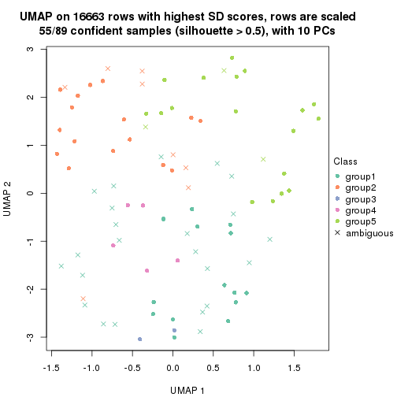
dimension_reduction(res, k = 6, method = "UMAP")
Following heatmap shows how subgroups are split when increasing k:
collect_classes(res)
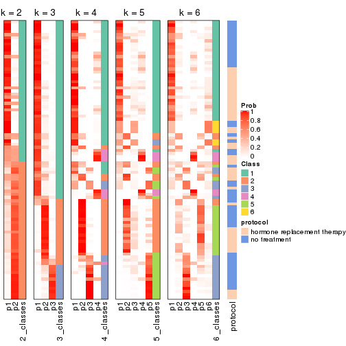
Test correlation between subgroups and known annotations. If the known annotation is numeric, one-way ANOVA test is applied, and if the known annotation is discrete, chi-squared contingency table test is applied.
test_to_known_factors(res)
#> n protocol(p) k
#> SD:mclust 70 0.555 2
#> SD:mclust 83 0.303 3
#> SD:mclust 74 0.472 4
#> SD:mclust 55 0.377 5
#> SD:mclust 51 0.674 6
If matrix rows can be associated to genes, consider to use functional_enrichment(res,
...) to perform function enrichment for the signature genes. See this vignette for more detailed explanations.
The object with results only for a single top-value method and a single partition method can be extracted as:
res = res_list["SD", "NMF"]
# you can also extract it by
# res = res_list["SD:NMF"]
A summary of res and all the functions that can be applied to it:
res
#> A 'ConsensusPartition' object with k = 2, 3, 4, 5, 6.
#> On a matrix with 16663 rows and 89 columns.
#> Top rows (1000, 2000, 3000, 4000, 5000) are extracted by 'SD' method.
#> Subgroups are detected by 'NMF' method.
#> Performed in total 1250 partitions by row resampling.
#> Best k for subgroups seems to be 2.
#>
#> Following methods can be applied to this 'ConsensusPartition' object:
#> [1] "cola_report" "collect_classes" "collect_plots"
#> [4] "collect_stats" "colnames" "compare_signatures"
#> [7] "consensus_heatmap" "dimension_reduction" "functional_enrichment"
#> [10] "get_anno_col" "get_anno" "get_classes"
#> [13] "get_consensus" "get_matrix" "get_membership"
#> [16] "get_param" "get_signatures" "get_stats"
#> [19] "is_best_k" "is_stable_k" "membership_heatmap"
#> [22] "ncol" "nrow" "plot_ecdf"
#> [25] "rownames" "select_partition_number" "show"
#> [28] "suggest_best_k" "test_to_known_factors"
collect_plots() function collects all the plots made from res for all k (number of partitions)
into one single page to provide an easy and fast comparison between different k.
collect_plots(res)
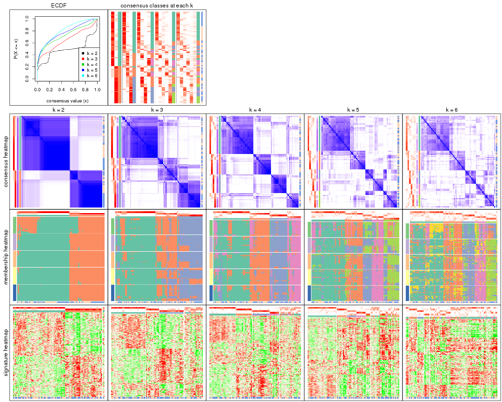
The plots are:
k and the heatmap of
predicted classes for each k.k.k.k.All the plots in panels can be made by individual functions and they are plotted later in this section.
select_partition_number() produces several plots showing different
statistics for choosing “optimized” k. There are following statistics:
k;k, the area increased is defined as \(A_k - A_{k-1}\).The detailed explanations of these statistics can be found in the cola vignette.
Generally speaking, lower PAC score, higher mean silhouette score or higher
concordance corresponds to better partition. Rand index and Jaccard index
measure how similar the current partition is compared to partition with k-1.
If they are too similar, we won't accept k is better than k-1.
select_partition_number(res)
The numeric values for all these statistics can be obtained by get_stats().
get_stats(res)
#> k 1-PAC mean_silhouette concordance area_increased Rand Jaccard
#> 2 2 0.569 0.871 0.925 0.4907 0.513 0.513
#> 3 3 0.563 0.638 0.813 0.3274 0.758 0.563
#> 4 4 0.585 0.635 0.824 0.1255 0.845 0.606
#> 5 5 0.530 0.530 0.714 0.0564 0.802 0.448
#> 6 6 0.539 0.350 0.629 0.0432 0.943 0.785
suggest_best_k() suggests the best \(k\) based on these statistics. The rules are as follows:
suggest_best_k(res)
#> [1] 2
Following shows the table of the partitions (You need to click the show/hide
code output link to see it). The membership matrix (columns with name p*)
is inferred by
clue::cl_consensus()
function with the SE method. Basically the value in the membership matrix
represents the probability to belong to a certain group. The finall class
label for an item is determined with the group with highest probability it
belongs to.
In get_classes() function, the entropy is calculated from the membership
matrix and the silhouette score is calculated from the consensus matrix.
cbind(get_classes(res, k = 2), get_membership(res, k = 2))
#> class entropy silhouette p1 p2
#> GSM78921 1 0.0000 0.907 1.000 0.000
#> GSM78922 1 0.0000 0.907 1.000 0.000
#> GSM78923 2 0.6712 0.818 0.176 0.824
#> GSM78924 2 0.0000 0.929 0.000 1.000
#> GSM78925 2 0.0000 0.929 0.000 1.000
#> GSM78926 1 0.0000 0.907 1.000 0.000
#> GSM78927 1 0.1633 0.903 0.976 0.024
#> GSM78928 1 0.2948 0.896 0.948 0.052
#> GSM78929 2 0.0000 0.929 0.000 1.000
#> GSM78930 1 0.7219 0.825 0.800 0.200
#> GSM78931 2 0.7376 0.794 0.208 0.792
#> GSM78932 2 0.0000 0.929 0.000 1.000
#> GSM78933 1 0.6623 0.845 0.828 0.172
#> GSM78934 2 0.0938 0.924 0.012 0.988
#> GSM78935 1 0.0000 0.907 1.000 0.000
#> GSM78936 1 0.0376 0.906 0.996 0.004
#> GSM78937 1 0.0000 0.907 1.000 0.000
#> GSM78938 1 0.6973 0.835 0.812 0.188
#> GSM78939 1 0.0376 0.906 0.996 0.004
#> GSM78940 1 0.0938 0.901 0.988 0.012
#> GSM78941 2 0.0000 0.929 0.000 1.000
#> GSM78942 2 0.6623 0.821 0.172 0.828
#> GSM78943 1 0.6623 0.845 0.828 0.172
#> GSM78944 1 0.7219 0.825 0.800 0.200
#> GSM78945 1 0.6623 0.845 0.828 0.172
#> GSM78946 1 0.5842 0.860 0.860 0.140
#> GSM78947 2 0.0000 0.929 0.000 1.000
#> GSM78948 1 0.0000 0.907 1.000 0.000
#> GSM78949 1 0.7219 0.825 0.800 0.200
#> GSM78950 1 0.0000 0.907 1.000 0.000
#> GSM78951 1 0.9775 0.485 0.588 0.412
#> GSM78952 2 0.0000 0.929 0.000 1.000
#> GSM78953 2 0.0000 0.929 0.000 1.000
#> GSM78954 2 0.0000 0.929 0.000 1.000
#> GSM78955 2 0.3274 0.885 0.060 0.940
#> GSM78956 2 0.7139 0.804 0.196 0.804
#> GSM78957 2 0.7219 0.800 0.200 0.800
#> GSM78958 1 0.0000 0.907 1.000 0.000
#> GSM78959 1 0.0000 0.907 1.000 0.000
#> GSM78960 2 0.0000 0.929 0.000 1.000
#> GSM78961 2 0.0000 0.929 0.000 1.000
#> GSM78962 1 0.0000 0.907 1.000 0.000
#> GSM78963 2 0.0000 0.929 0.000 1.000
#> GSM78964 2 0.0000 0.929 0.000 1.000
#> GSM78965 2 0.0000 0.929 0.000 1.000
#> GSM78966 1 0.0000 0.907 1.000 0.000
#> GSM78967 1 0.0000 0.907 1.000 0.000
#> GSM78879 1 0.0000 0.907 1.000 0.000
#> GSM78880 1 0.0000 0.907 1.000 0.000
#> GSM78881 1 0.2236 0.900 0.964 0.036
#> GSM78882 1 0.7139 0.828 0.804 0.196
#> GSM78883 1 0.0000 0.907 1.000 0.000
#> GSM78884 1 0.0000 0.907 1.000 0.000
#> GSM78885 1 0.0376 0.906 0.996 0.004
#> GSM78886 1 0.9896 0.389 0.560 0.440
#> GSM78887 1 0.0000 0.907 1.000 0.000
#> GSM78888 1 0.3431 0.891 0.936 0.064
#> GSM78889 2 0.7219 0.800 0.200 0.800
#> GSM78890 1 0.7056 0.811 0.808 0.192
#> GSM78891 1 0.7139 0.828 0.804 0.196
#> GSM78892 2 0.7139 0.735 0.196 0.804
#> GSM78893 2 0.0672 0.924 0.008 0.992
#> GSM78894 1 0.6801 0.840 0.820 0.180
#> GSM78895 2 0.0000 0.929 0.000 1.000
#> GSM78896 1 0.6712 0.843 0.824 0.176
#> GSM78897 1 0.8081 0.776 0.752 0.248
#> GSM78898 1 0.7219 0.825 0.800 0.200
#> GSM78899 1 0.0000 0.907 1.000 0.000
#> GSM78900 2 0.1414 0.917 0.020 0.980
#> GSM78901 1 0.0000 0.907 1.000 0.000
#> GSM78902 2 0.3274 0.885 0.060 0.940
#> GSM78903 2 0.0000 0.929 0.000 1.000
#> GSM78904 1 0.0000 0.907 1.000 0.000
#> GSM78905 2 0.0000 0.929 0.000 1.000
#> GSM78906 2 0.0000 0.929 0.000 1.000
#> GSM78907 1 0.6887 0.837 0.816 0.184
#> GSM78908 1 0.6801 0.841 0.820 0.180
#> GSM78909 2 0.7219 0.800 0.200 0.800
#> GSM78910 1 0.0000 0.907 1.000 0.000
#> GSM78911 2 0.7219 0.800 0.200 0.800
#> GSM78912 1 0.7139 0.828 0.804 0.196
#> GSM78913 2 0.0000 0.929 0.000 1.000
#> GSM78914 2 0.0000 0.929 0.000 1.000
#> GSM78915 2 0.0000 0.929 0.000 1.000
#> GSM78916 2 0.9248 0.615 0.340 0.660
#> GSM78917 1 0.0000 0.907 1.000 0.000
#> GSM78918 1 0.0000 0.907 1.000 0.000
#> GSM78919 1 0.0000 0.907 1.000 0.000
#> GSM78920 1 0.0000 0.907 1.000 0.000
cbind(get_classes(res, k = 3), get_membership(res, k = 3))
#> class entropy silhouette p1 p2 p3
#> GSM78921 1 0.6193 0.5292 0.692 0.292 0.016
#> GSM78922 1 0.0000 0.8401 1.000 0.000 0.000
#> GSM78923 2 0.6225 -0.0870 0.000 0.568 0.432
#> GSM78924 3 0.1529 0.7871 0.000 0.040 0.960
#> GSM78925 3 0.1031 0.7878 0.000 0.024 0.976
#> GSM78926 2 0.5621 0.4659 0.308 0.692 0.000
#> GSM78927 1 0.0237 0.8403 0.996 0.004 0.000
#> GSM78928 2 0.9585 0.2694 0.332 0.456 0.212
#> GSM78929 3 0.5098 0.7066 0.000 0.248 0.752
#> GSM78930 1 0.5692 0.5725 0.724 0.008 0.268
#> GSM78931 2 0.6244 0.2318 0.000 0.560 0.440
#> GSM78932 3 0.2165 0.7824 0.000 0.064 0.936
#> GSM78933 1 0.0237 0.8403 0.996 0.004 0.000
#> GSM78934 2 0.3941 0.5631 0.000 0.844 0.156
#> GSM78935 1 0.2537 0.8132 0.920 0.080 0.000
#> GSM78936 2 0.5621 0.4950 0.308 0.692 0.000
#> GSM78937 1 0.6274 0.1139 0.544 0.456 0.000
#> GSM78938 1 0.0237 0.8407 0.996 0.004 0.000
#> GSM78939 1 0.2261 0.8170 0.932 0.068 0.000
#> GSM78940 2 0.0424 0.6588 0.000 0.992 0.008
#> GSM78941 3 0.5650 0.6570 0.000 0.312 0.688
#> GSM78942 3 0.6062 0.2435 0.000 0.384 0.616
#> GSM78943 1 0.0000 0.8401 1.000 0.000 0.000
#> GSM78944 1 0.1289 0.8343 0.968 0.032 0.000
#> GSM78945 1 0.0424 0.8406 0.992 0.008 0.000
#> GSM78946 1 0.0592 0.8410 0.988 0.012 0.000
#> GSM78947 3 0.1031 0.7878 0.000 0.024 0.976
#> GSM78948 1 0.3267 0.7876 0.884 0.116 0.000
#> GSM78949 1 0.2297 0.8239 0.944 0.036 0.020
#> GSM78950 1 0.6026 0.3406 0.624 0.376 0.000
#> GSM78951 1 0.5864 0.5454 0.704 0.008 0.288
#> GSM78952 3 0.5178 0.7017 0.000 0.256 0.744
#> GSM78953 3 0.5216 0.6990 0.000 0.260 0.740
#> GSM78954 3 0.0892 0.7742 0.020 0.000 0.980
#> GSM78955 3 0.6019 0.6710 0.012 0.288 0.700
#> GSM78956 2 0.3482 0.6031 0.000 0.872 0.128
#> GSM78957 2 0.2448 0.6402 0.000 0.924 0.076
#> GSM78958 2 0.5363 0.5233 0.276 0.724 0.000
#> GSM78959 1 0.2356 0.8178 0.928 0.072 0.000
#> GSM78960 3 0.0424 0.7794 0.000 0.008 0.992
#> GSM78961 3 0.0424 0.7794 0.000 0.008 0.992
#> GSM78962 2 0.6487 0.5042 0.268 0.700 0.032
#> GSM78963 3 0.1031 0.7880 0.000 0.024 0.976
#> GSM78964 3 0.1163 0.7877 0.000 0.028 0.972
#> GSM78965 3 0.0424 0.7794 0.000 0.008 0.992
#> GSM78966 1 0.3619 0.7589 0.864 0.136 0.000
#> GSM78967 1 0.1643 0.8319 0.956 0.044 0.000
#> GSM78879 1 0.6260 0.1474 0.552 0.448 0.000
#> GSM78880 1 0.1031 0.8381 0.976 0.024 0.000
#> GSM78881 1 0.0237 0.8402 0.996 0.000 0.004
#> GSM78882 1 0.1163 0.8331 0.972 0.000 0.028
#> GSM78883 1 0.1964 0.8278 0.944 0.056 0.000
#> GSM78884 2 0.5650 0.4618 0.312 0.688 0.000
#> GSM78885 1 0.5905 0.3886 0.648 0.352 0.000
#> GSM78886 2 0.5269 0.4876 0.016 0.784 0.200
#> GSM78887 2 0.1753 0.6739 0.048 0.952 0.000
#> GSM78888 1 0.0237 0.8403 0.996 0.004 0.000
#> GSM78889 2 0.6204 0.0531 0.000 0.576 0.424
#> GSM78890 1 0.9582 -0.0154 0.472 0.300 0.228
#> GSM78891 1 0.0661 0.8403 0.988 0.008 0.004
#> GSM78892 3 0.5905 0.6057 0.000 0.352 0.648
#> GSM78893 3 0.6079 0.5449 0.000 0.388 0.612
#> GSM78894 1 0.2066 0.8196 0.940 0.060 0.000
#> GSM78895 3 0.5560 0.6677 0.000 0.300 0.700
#> GSM78896 1 0.0424 0.8404 0.992 0.008 0.000
#> GSM78897 1 0.5173 0.6926 0.816 0.036 0.148
#> GSM78898 1 0.1453 0.8356 0.968 0.024 0.008
#> GSM78899 2 0.6244 0.1761 0.440 0.560 0.000
#> GSM78900 3 0.6587 0.1006 0.424 0.008 0.568
#> GSM78901 2 0.2356 0.6778 0.072 0.928 0.000
#> GSM78902 1 0.6633 0.2755 0.548 0.008 0.444
#> GSM78903 3 0.5591 0.6645 0.000 0.304 0.696
#> GSM78904 2 0.3686 0.6654 0.140 0.860 0.000
#> GSM78905 3 0.3461 0.7321 0.076 0.024 0.900
#> GSM78906 3 0.5591 0.6645 0.000 0.304 0.696
#> GSM78907 1 0.0424 0.8406 0.992 0.008 0.000
#> GSM78908 1 0.2918 0.8144 0.924 0.032 0.044
#> GSM78909 2 0.4750 0.5040 0.000 0.784 0.216
#> GSM78910 1 0.1289 0.8389 0.968 0.032 0.000
#> GSM78911 2 0.1411 0.6556 0.000 0.964 0.036
#> GSM78912 1 0.2152 0.8266 0.948 0.016 0.036
#> GSM78913 3 0.0000 0.7822 0.000 0.000 1.000
#> GSM78914 3 0.1315 0.7681 0.020 0.008 0.972
#> GSM78915 3 0.0424 0.7794 0.000 0.008 0.992
#> GSM78916 2 0.3267 0.6164 0.000 0.884 0.116
#> GSM78917 1 0.1411 0.8350 0.964 0.036 0.000
#> GSM78918 1 0.6307 0.0536 0.512 0.488 0.000
#> GSM78919 1 0.0237 0.8407 0.996 0.004 0.000
#> GSM78920 2 0.4887 0.5905 0.228 0.772 0.000
cbind(get_classes(res, k = 4), get_membership(res, k = 4))
#> class entropy silhouette p1 p2 p3 p4
#> GSM78921 1 0.6665 0.3096 0.544 0.000 0.096 0.360
#> GSM78922 1 0.1929 0.7474 0.940 0.000 0.036 0.024
#> GSM78923 2 0.4586 0.7053 0.000 0.796 0.068 0.136
#> GSM78924 3 0.3074 0.8056 0.000 0.152 0.848 0.000
#> GSM78925 3 0.3123 0.8073 0.000 0.156 0.844 0.000
#> GSM78926 4 0.0188 0.7333 0.000 0.000 0.004 0.996
#> GSM78927 1 0.0376 0.7553 0.992 0.000 0.004 0.004
#> GSM78928 2 0.2473 0.7466 0.080 0.908 0.000 0.012
#> GSM78929 2 0.4843 0.3138 0.000 0.604 0.396 0.000
#> GSM78930 3 0.4977 0.1122 0.460 0.000 0.540 0.000
#> GSM78931 3 0.4250 0.5809 0.000 0.000 0.724 0.276
#> GSM78932 3 0.2011 0.8531 0.000 0.080 0.920 0.000
#> GSM78933 1 0.0707 0.7573 0.980 0.020 0.000 0.000
#> GSM78934 2 0.2197 0.7975 0.000 0.928 0.024 0.048
#> GSM78935 1 0.2589 0.7257 0.884 0.000 0.000 0.116
#> GSM78936 4 0.6506 0.4656 0.240 0.132 0.000 0.628
#> GSM78937 4 0.4967 0.0819 0.452 0.000 0.000 0.548
#> GSM78938 1 0.2647 0.7418 0.880 0.120 0.000 0.000
#> GSM78939 1 0.2021 0.7522 0.932 0.012 0.000 0.056
#> GSM78940 2 0.1635 0.7929 0.008 0.948 0.000 0.044
#> GSM78941 2 0.0000 0.8101 0.000 1.000 0.000 0.000
#> GSM78942 3 0.4454 0.5514 0.000 0.000 0.692 0.308
#> GSM78943 1 0.0000 0.7553 1.000 0.000 0.000 0.000
#> GSM78944 1 0.5000 0.2457 0.504 0.496 0.000 0.000
#> GSM78945 1 0.2921 0.7318 0.860 0.140 0.000 0.000
#> GSM78946 1 0.3610 0.6944 0.800 0.200 0.000 0.000
#> GSM78947 3 0.1792 0.8557 0.000 0.068 0.932 0.000
#> GSM78948 1 0.2926 0.7408 0.888 0.012 0.004 0.096
#> GSM78949 1 0.4972 0.3478 0.544 0.456 0.000 0.000
#> GSM78950 4 0.4999 -0.0947 0.492 0.000 0.000 0.508
#> GSM78951 1 0.4967 0.1165 0.548 0.000 0.452 0.000
#> GSM78952 2 0.4250 0.5605 0.000 0.724 0.276 0.000
#> GSM78953 2 0.3908 0.6523 0.000 0.784 0.212 0.004
#> GSM78954 3 0.2760 0.8306 0.000 0.128 0.872 0.000
#> GSM78955 2 0.0000 0.8101 0.000 1.000 0.000 0.000
#> GSM78956 2 0.1724 0.8043 0.000 0.948 0.032 0.020
#> GSM78957 4 0.2676 0.6876 0.000 0.092 0.012 0.896
#> GSM78958 4 0.1109 0.7342 0.028 0.000 0.004 0.968
#> GSM78959 1 0.2450 0.7394 0.912 0.000 0.016 0.072
#> GSM78960 3 0.0000 0.8489 0.000 0.000 1.000 0.000
#> GSM78961 3 0.0188 0.8501 0.000 0.004 0.996 0.000
#> GSM78962 4 0.1118 0.7309 0.000 0.000 0.036 0.964
#> GSM78963 3 0.1867 0.8548 0.000 0.072 0.928 0.000
#> GSM78964 3 0.2216 0.8481 0.000 0.092 0.908 0.000
#> GSM78965 3 0.0000 0.8489 0.000 0.000 1.000 0.000
#> GSM78966 1 0.4735 0.6716 0.784 0.068 0.000 0.148
#> GSM78967 1 0.1584 0.7580 0.952 0.012 0.000 0.036
#> GSM78879 1 0.5924 0.2733 0.556 0.000 0.040 0.404
#> GSM78880 1 0.2021 0.7467 0.936 0.000 0.024 0.040
#> GSM78881 1 0.1576 0.7463 0.948 0.000 0.048 0.004
#> GSM78882 1 0.0592 0.7547 0.984 0.000 0.016 0.000
#> GSM78883 1 0.2345 0.7340 0.900 0.000 0.000 0.100
#> GSM78884 4 0.0188 0.7341 0.004 0.000 0.000 0.996
#> GSM78885 1 0.4713 0.4319 0.640 0.000 0.000 0.360
#> GSM78886 2 0.0707 0.8059 0.000 0.980 0.000 0.020
#> GSM78887 4 0.1716 0.7198 0.000 0.064 0.000 0.936
#> GSM78888 1 0.1118 0.7574 0.964 0.036 0.000 0.000
#> GSM78889 4 0.5655 0.5189 0.000 0.084 0.212 0.704
#> GSM78890 2 0.3300 0.6784 0.144 0.848 0.000 0.008
#> GSM78891 1 0.2149 0.7505 0.912 0.088 0.000 0.000
#> GSM78892 2 0.0188 0.8090 0.004 0.996 0.000 0.000
#> GSM78893 2 0.0000 0.8101 0.000 1.000 0.000 0.000
#> GSM78894 1 0.4948 0.3899 0.560 0.440 0.000 0.000
#> GSM78895 2 0.2281 0.7670 0.000 0.904 0.096 0.000
#> GSM78896 1 0.1543 0.7565 0.956 0.008 0.004 0.032
#> GSM78897 1 0.5735 0.4228 0.576 0.392 0.032 0.000
#> GSM78898 1 0.4776 0.5040 0.624 0.376 0.000 0.000
#> GSM78899 4 0.2704 0.6860 0.124 0.000 0.000 0.876
#> GSM78900 3 0.2469 0.7767 0.108 0.000 0.892 0.000
#> GSM78901 4 0.6508 0.1758 0.084 0.360 0.000 0.556
#> GSM78902 1 0.6554 0.2207 0.520 0.080 0.400 0.000
#> GSM78903 2 0.0336 0.8101 0.000 0.992 0.008 0.000
#> GSM78904 2 0.6642 0.1463 0.084 0.492 0.000 0.424
#> GSM78905 3 0.4253 0.7222 0.016 0.208 0.776 0.000
#> GSM78906 2 0.0817 0.8066 0.000 0.976 0.024 0.000
#> GSM78907 1 0.3726 0.6870 0.788 0.212 0.000 0.000
#> GSM78908 1 0.6262 0.4495 0.628 0.000 0.280 0.092
#> GSM78909 4 0.6110 0.4288 0.000 0.240 0.100 0.660
#> GSM78910 1 0.2473 0.7515 0.908 0.080 0.000 0.012
#> GSM78911 4 0.1211 0.7240 0.000 0.040 0.000 0.960
#> GSM78912 1 0.5949 0.5694 0.708 0.004 0.144 0.144
#> GSM78913 3 0.1389 0.8558 0.000 0.048 0.952 0.000
#> GSM78914 3 0.1118 0.8300 0.036 0.000 0.964 0.000
#> GSM78915 3 0.0000 0.8489 0.000 0.000 1.000 0.000
#> GSM78916 2 0.4761 0.3864 0.000 0.628 0.000 0.372
#> GSM78917 1 0.1042 0.7578 0.972 0.008 0.000 0.020
#> GSM78918 1 0.7806 0.0995 0.392 0.356 0.000 0.252
#> GSM78919 1 0.2081 0.7516 0.916 0.084 0.000 0.000
#> GSM78920 2 0.6552 0.3618 0.096 0.576 0.000 0.328
cbind(get_classes(res, k = 5), get_membership(res, k = 5))
#> class entropy silhouette p1 p2 p3 p4 p5
#> GSM78921 1 0.5767 0.5848 0.604 0.004 0.112 0.280 0.000
#> GSM78922 1 0.3154 0.7541 0.836 0.004 0.148 0.012 0.000
#> GSM78923 5 0.5983 0.1099 0.004 0.424 0.008 0.072 0.492
#> GSM78924 5 0.3216 0.5378 0.000 0.108 0.044 0.000 0.848
#> GSM78925 5 0.3048 0.5528 0.000 0.176 0.004 0.000 0.820
#> GSM78926 1 0.6882 0.3070 0.460 0.008 0.176 0.348 0.008
#> GSM78927 1 0.1591 0.7734 0.940 0.004 0.052 0.004 0.000
#> GSM78928 2 0.2966 0.6518 0.040 0.884 0.020 0.056 0.000
#> GSM78929 5 0.5135 0.4001 0.004 0.272 0.064 0.000 0.660
#> GSM78930 3 0.5365 0.7557 0.088 0.000 0.628 0.000 0.284
#> GSM78931 4 0.6179 0.0217 0.004 0.004 0.100 0.456 0.436
#> GSM78932 5 0.2569 0.5223 0.000 0.040 0.068 0.000 0.892
#> GSM78933 1 0.0898 0.7704 0.972 0.008 0.020 0.000 0.000
#> GSM78934 2 0.5573 0.5314 0.000 0.692 0.056 0.196 0.056
#> GSM78935 1 0.1836 0.7754 0.932 0.000 0.036 0.032 0.000
#> GSM78936 4 0.6578 0.4325 0.348 0.044 0.088 0.520 0.000
#> GSM78937 1 0.6013 0.4956 0.556 0.016 0.084 0.344 0.000
#> GSM78938 2 0.6439 0.1922 0.356 0.460 0.184 0.000 0.000
#> GSM78939 1 0.3368 0.7596 0.844 0.016 0.120 0.020 0.000
#> GSM78940 2 0.1877 0.6601 0.016 0.940 0.004 0.024 0.016
#> GSM78941 2 0.1441 0.6538 0.008 0.956 0.008 0.004 0.024
#> GSM78942 4 0.4768 0.4746 0.000 0.004 0.036 0.672 0.288
#> GSM78943 1 0.3016 0.7336 0.848 0.020 0.132 0.000 0.000
#> GSM78944 1 0.3766 0.6004 0.728 0.268 0.004 0.000 0.000
#> GSM78945 1 0.3454 0.7053 0.816 0.156 0.028 0.000 0.000
#> GSM78946 1 0.1915 0.7692 0.928 0.040 0.032 0.000 0.000
#> GSM78947 5 0.4560 -0.6136 0.000 0.008 0.484 0.000 0.508
#> GSM78948 1 0.2308 0.7743 0.912 0.004 0.048 0.036 0.000
#> GSM78949 1 0.5961 0.0109 0.456 0.448 0.092 0.004 0.000
#> GSM78950 4 0.4806 0.6869 0.064 0.016 0.180 0.740 0.000
#> GSM78951 3 0.5713 0.7509 0.100 0.008 0.620 0.000 0.272
#> GSM78952 5 0.5100 0.3880 0.000 0.288 0.056 0.004 0.652
#> GSM78953 2 0.5443 0.5025 0.000 0.696 0.016 0.136 0.152
#> GSM78954 3 0.5092 0.6568 0.000 0.036 0.524 0.000 0.440
#> GSM78955 2 0.6026 0.3135 0.096 0.580 0.016 0.000 0.308
#> GSM78956 2 0.3774 0.6248 0.000 0.816 0.016 0.140 0.028
#> GSM78957 4 0.2153 0.7377 0.000 0.044 0.040 0.916 0.000
#> GSM78958 4 0.5212 0.6393 0.188 0.004 0.092 0.708 0.008
#> GSM78959 1 0.2710 0.7683 0.892 0.008 0.064 0.036 0.000
#> GSM78960 3 0.4304 0.5960 0.000 0.000 0.516 0.000 0.484
#> GSM78961 5 0.5061 -0.2696 0.000 0.008 0.396 0.024 0.572
#> GSM78962 4 0.1704 0.7461 0.000 0.004 0.068 0.928 0.000
#> GSM78963 5 0.1626 0.4779 0.000 0.016 0.044 0.000 0.940
#> GSM78964 5 0.1704 0.4410 0.000 0.004 0.068 0.000 0.928
#> GSM78965 5 0.4278 -0.5349 0.000 0.000 0.452 0.000 0.548
#> GSM78966 1 0.3427 0.7613 0.848 0.032 0.016 0.104 0.000
#> GSM78967 1 0.4003 0.7624 0.820 0.020 0.072 0.088 0.000
#> GSM78879 1 0.5390 0.6586 0.692 0.004 0.160 0.140 0.004
#> GSM78880 1 0.2270 0.7750 0.908 0.004 0.072 0.016 0.000
#> GSM78881 1 0.2228 0.7739 0.900 0.004 0.092 0.004 0.000
#> GSM78882 1 0.4700 0.5872 0.692 0.008 0.268 0.000 0.032
#> GSM78883 1 0.3339 0.7538 0.836 0.000 0.040 0.124 0.000
#> GSM78884 4 0.1012 0.7413 0.012 0.000 0.020 0.968 0.000
#> GSM78885 1 0.3668 0.7450 0.828 0.008 0.128 0.032 0.004
#> GSM78886 2 0.1777 0.6574 0.012 0.944 0.004 0.020 0.020
#> GSM78887 4 0.3523 0.7295 0.012 0.048 0.096 0.844 0.000
#> GSM78888 1 0.1560 0.7693 0.948 0.020 0.028 0.004 0.000
#> GSM78889 5 0.6454 0.2780 0.000 0.032 0.116 0.284 0.568
#> GSM78890 2 0.4118 0.5284 0.256 0.728 0.008 0.004 0.004
#> GSM78891 1 0.4452 0.5352 0.696 0.272 0.032 0.000 0.000
#> GSM78892 2 0.7168 0.2429 0.296 0.440 0.024 0.000 0.240
#> GSM78893 2 0.2125 0.6466 0.000 0.920 0.024 0.004 0.052
#> GSM78894 2 0.5507 0.3680 0.316 0.596 0.088 0.000 0.000
#> GSM78895 5 0.4560 0.0777 0.000 0.484 0.008 0.000 0.508
#> GSM78896 1 0.5459 0.5666 0.672 0.028 0.240 0.060 0.000
#> GSM78897 1 0.4116 0.7386 0.816 0.056 0.096 0.000 0.032
#> GSM78898 2 0.4327 0.3509 0.360 0.632 0.008 0.000 0.000
#> GSM78899 4 0.4197 0.6379 0.244 0.000 0.028 0.728 0.000
#> GSM78900 3 0.4594 0.7396 0.012 0.004 0.620 0.000 0.364
#> GSM78901 1 0.6968 0.4444 0.524 0.068 0.088 0.316 0.004
#> GSM78902 3 0.5965 0.7203 0.060 0.056 0.640 0.000 0.244
#> GSM78903 2 0.3963 0.4550 0.008 0.732 0.004 0.000 0.256
#> GSM78904 1 0.6662 0.5630 0.608 0.160 0.048 0.180 0.004
#> GSM78905 5 0.4514 0.5155 0.024 0.220 0.020 0.000 0.736
#> GSM78906 2 0.1484 0.6450 0.000 0.944 0.008 0.000 0.048
#> GSM78907 1 0.5036 0.2327 0.560 0.404 0.036 0.000 0.000
#> GSM78908 3 0.6891 0.6330 0.144 0.012 0.624 0.092 0.128
#> GSM78909 4 0.2604 0.7051 0.000 0.072 0.020 0.896 0.012
#> GSM78910 1 0.2829 0.7629 0.892 0.052 0.032 0.024 0.000
#> GSM78911 4 0.1690 0.7301 0.000 0.024 0.024 0.944 0.008
#> GSM78912 3 0.6168 0.6276 0.092 0.012 0.692 0.096 0.108
#> GSM78913 5 0.1608 0.4297 0.000 0.000 0.072 0.000 0.928
#> GSM78914 3 0.4242 0.6847 0.000 0.000 0.572 0.000 0.428
#> GSM78915 5 0.3949 -0.2249 0.000 0.000 0.332 0.000 0.668
#> GSM78916 2 0.6897 0.3757 0.012 0.536 0.036 0.308 0.108
#> GSM78917 1 0.1670 0.7718 0.936 0.000 0.052 0.012 0.000
#> GSM78918 2 0.6763 0.2688 0.144 0.480 0.024 0.352 0.000
#> GSM78919 1 0.4169 0.6980 0.792 0.148 0.044 0.016 0.000
#> GSM78920 1 0.6423 0.5244 0.620 0.204 0.036 0.136 0.004
cbind(get_classes(res, k = 6), get_membership(res, k = 6))
#> class entropy silhouette p1 p2 p3 p4 p5 p6
#> GSM78921 1 0.804 0.0559 0.364 0.000 0.224 0.216 0.032 0.164
#> GSM78922 1 0.534 0.3307 0.532 0.020 0.400 0.016 0.000 0.032
#> GSM78923 2 0.591 0.2182 0.000 0.512 0.004 0.044 0.368 0.072
#> GSM78924 5 0.396 0.6297 0.000 0.116 0.120 0.000 0.764 0.000
#> GSM78925 5 0.429 0.6424 0.000 0.148 0.076 0.000 0.756 0.020
#> GSM78926 1 0.733 -0.0755 0.376 0.000 0.012 0.220 0.076 0.316
#> GSM78927 1 0.229 0.4808 0.900 0.004 0.016 0.000 0.008 0.072
#> GSM78928 2 0.466 0.5598 0.072 0.784 0.012 0.060 0.020 0.052
#> GSM78929 5 0.397 0.6080 0.024 0.200 0.004 0.000 0.756 0.016
#> GSM78930 3 0.181 0.5939 0.060 0.004 0.924 0.000 0.008 0.004
#> GSM78931 4 0.720 0.0794 0.024 0.000 0.292 0.456 0.152 0.076
#> GSM78932 5 0.391 0.5452 0.000 0.012 0.104 0.000 0.788 0.096
#> GSM78933 1 0.242 0.4756 0.888 0.008 0.012 0.000 0.004 0.088
#> GSM78934 2 0.717 0.1775 0.004 0.380 0.000 0.188 0.088 0.340
#> GSM78935 1 0.247 0.4663 0.880 0.000 0.008 0.000 0.016 0.096
#> GSM78936 6 0.719 0.0000 0.332 0.040 0.004 0.264 0.012 0.348
#> GSM78937 1 0.728 0.0291 0.336 0.004 0.004 0.264 0.064 0.328
#> GSM78938 2 0.712 0.2890 0.208 0.504 0.116 0.008 0.004 0.160
#> GSM78939 1 0.465 0.3679 0.724 0.008 0.012 0.000 0.080 0.176
#> GSM78940 2 0.515 0.5386 0.012 0.692 0.000 0.024 0.088 0.184
#> GSM78941 2 0.284 0.5643 0.000 0.856 0.000 0.000 0.088 0.056
#> GSM78942 4 0.512 0.3302 0.000 0.000 0.248 0.652 0.068 0.032
#> GSM78943 1 0.502 0.4571 0.676 0.052 0.224 0.000 0.000 0.048
#> GSM78944 1 0.412 0.4102 0.656 0.324 0.004 0.000 0.004 0.012
#> GSM78945 1 0.518 0.4633 0.672 0.208 0.072 0.000 0.000 0.048
#> GSM78946 1 0.277 0.4839 0.872 0.040 0.000 0.000 0.012 0.076
#> GSM78947 3 0.549 0.3717 0.000 0.016 0.544 0.004 0.360 0.076
#> GSM78948 1 0.285 0.4775 0.876 0.004 0.004 0.008 0.040 0.068
#> GSM78949 2 0.635 -0.0293 0.388 0.420 0.012 0.000 0.012 0.168
#> GSM78950 4 0.482 0.3643 0.040 0.004 0.040 0.732 0.012 0.172
#> GSM78951 3 0.169 0.5977 0.044 0.020 0.932 0.000 0.004 0.000
#> GSM78952 5 0.375 0.5819 0.000 0.220 0.004 0.000 0.748 0.028
#> GSM78953 2 0.805 0.0727 0.000 0.372 0.044 0.140 0.260 0.184
#> GSM78954 3 0.556 0.5223 0.000 0.128 0.632 0.000 0.204 0.036
#> GSM78955 2 0.508 0.4511 0.092 0.668 0.000 0.000 0.216 0.024
#> GSM78956 2 0.476 0.5538 0.000 0.724 0.000 0.164 0.056 0.056
#> GSM78957 4 0.221 0.4730 0.000 0.032 0.000 0.908 0.012 0.048
#> GSM78958 4 0.764 -0.7092 0.304 0.016 0.000 0.320 0.096 0.264
#> GSM78959 1 0.333 0.4914 0.844 0.000 0.020 0.020 0.016 0.100
#> GSM78960 3 0.329 0.5482 0.000 0.000 0.724 0.000 0.276 0.000
#> GSM78961 3 0.719 0.3213 0.000 0.000 0.424 0.188 0.264 0.124
#> GSM78962 4 0.414 0.4511 0.004 0.000 0.100 0.780 0.016 0.100
#> GSM78963 5 0.348 0.4638 0.000 0.004 0.260 0.000 0.732 0.004
#> GSM78964 5 0.377 0.4032 0.000 0.008 0.296 0.004 0.692 0.000
#> GSM78965 3 0.366 0.4523 0.000 0.000 0.636 0.000 0.364 0.000
#> GSM78966 1 0.611 0.4928 0.664 0.108 0.080 0.092 0.000 0.056
#> GSM78967 1 0.668 0.4312 0.580 0.040 0.204 0.080 0.000 0.096
#> GSM78879 1 0.558 0.2831 0.652 0.000 0.008 0.036 0.112 0.192
#> GSM78880 1 0.370 0.5161 0.808 0.000 0.108 0.004 0.008 0.072
#> GSM78881 1 0.333 0.4526 0.832 0.000 0.016 0.000 0.044 0.108
#> GSM78882 1 0.540 0.3287 0.540 0.024 0.388 0.000 0.020 0.028
#> GSM78883 1 0.509 0.4822 0.712 0.008 0.112 0.132 0.000 0.036
#> GSM78884 4 0.301 0.4269 0.068 0.000 0.008 0.864 0.008 0.052
#> GSM78885 1 0.474 0.2231 0.700 0.008 0.000 0.004 0.092 0.196
#> GSM78886 2 0.452 0.5709 0.016 0.772 0.000 0.048 0.052 0.112
#> GSM78887 4 0.503 0.3344 0.048 0.040 0.004 0.720 0.016 0.172
#> GSM78888 1 0.263 0.5059 0.888 0.048 0.036 0.000 0.000 0.028
#> GSM78889 5 0.537 0.4056 0.000 0.020 0.004 0.220 0.644 0.112
#> GSM78890 2 0.408 0.5622 0.112 0.800 0.020 0.000 0.032 0.036
#> GSM78891 1 0.580 0.3701 0.556 0.304 0.108 0.000 0.000 0.032
#> GSM78892 1 0.682 -0.0891 0.392 0.336 0.004 0.000 0.228 0.040
#> GSM78893 2 0.400 0.5431 0.012 0.780 0.000 0.000 0.096 0.112
#> GSM78894 2 0.610 0.3627 0.216 0.588 0.036 0.004 0.004 0.152
#> GSM78895 5 0.538 0.1635 0.000 0.392 0.004 0.000 0.504 0.100
#> GSM78896 1 0.644 0.0570 0.624 0.024 0.124 0.148 0.008 0.072
#> GSM78897 1 0.497 0.2994 0.700 0.028 0.000 0.000 0.152 0.120
#> GSM78898 2 0.571 -0.1032 0.424 0.472 0.064 0.000 0.000 0.040
#> GSM78899 4 0.567 -0.2647 0.300 0.000 0.008 0.564 0.008 0.120
#> GSM78900 3 0.179 0.6281 0.000 0.000 0.920 0.008 0.068 0.004
#> GSM78901 1 0.857 -0.0128 0.300 0.248 0.016 0.236 0.040 0.160
#> GSM78902 3 0.280 0.5903 0.016 0.076 0.880 0.004 0.008 0.016
#> GSM78903 2 0.354 0.4662 0.000 0.756 0.000 0.000 0.220 0.024
#> GSM78904 1 0.756 0.0615 0.444 0.252 0.004 0.064 0.040 0.196
#> GSM78905 5 0.636 0.4374 0.028 0.320 0.104 0.000 0.520 0.028
#> GSM78906 2 0.412 0.5202 0.000 0.748 0.000 0.000 0.132 0.120
#> GSM78907 1 0.658 0.1982 0.460 0.356 0.056 0.008 0.000 0.120
#> GSM78908 3 0.840 0.0897 0.100 0.044 0.432 0.184 0.048 0.192
#> GSM78909 4 0.634 0.3026 0.000 0.168 0.000 0.572 0.088 0.172
#> GSM78910 1 0.536 0.4953 0.700 0.112 0.124 0.012 0.000 0.052
#> GSM78911 4 0.486 0.4352 0.004 0.028 0.008 0.732 0.076 0.152
#> GSM78912 3 0.558 0.2757 0.024 0.008 0.584 0.324 0.008 0.052
#> GSM78913 5 0.365 0.3288 0.000 0.000 0.324 0.000 0.672 0.004
#> GSM78914 3 0.253 0.6087 0.000 0.000 0.832 0.000 0.168 0.000
#> GSM78915 3 0.399 0.1968 0.000 0.000 0.520 0.004 0.476 0.000
#> GSM78916 2 0.704 0.4082 0.016 0.528 0.004 0.216 0.124 0.112
#> GSM78917 1 0.429 0.5200 0.776 0.032 0.140 0.016 0.000 0.036
#> GSM78918 2 0.729 0.2541 0.108 0.456 0.040 0.324 0.008 0.064
#> GSM78919 1 0.627 0.3933 0.572 0.236 0.128 0.008 0.000 0.056
#> GSM78920 1 0.768 0.0224 0.432 0.244 0.000 0.076 0.052 0.196
Heatmaps for the consensus matrix. It visualizes the probability of two samples to be in a same group.
consensus_heatmap(res, k = 2)
consensus_heatmap(res, k = 3)
consensus_heatmap(res, k = 4)
consensus_heatmap(res, k = 5)
consensus_heatmap(res, k = 6)
Heatmaps for the membership of samples in all partitions to see how consistent they are:
membership_heatmap(res, k = 2)
membership_heatmap(res, k = 3)
membership_heatmap(res, k = 4)
membership_heatmap(res, k = 5)
membership_heatmap(res, k = 6)
As soon as we have had the classes for columns, we can look for signatures which are significantly different between classes which can be candidate marks for certain classes. Following are the heatmaps for signatures.
Signature heatmaps where rows are scaled:
get_signatures(res, k = 2)
get_signatures(res, k = 3)
get_signatures(res, k = 4)
get_signatures(res, k = 5)
get_signatures(res, k = 6)
Signature heatmaps where rows are not scaled:
get_signatures(res, k = 2, scale_rows = FALSE)
get_signatures(res, k = 3, scale_rows = FALSE)
get_signatures(res, k = 4, scale_rows = FALSE)
get_signatures(res, k = 5, scale_rows = FALSE)
get_signatures(res, k = 6, scale_rows = FALSE)
Compare the overlap of signatures from different k:
compare_signatures(res)
get_signature() returns a data frame invisibly. TO get the list of signatures, the function
call should be assigned to a variable explicitly. In following code, if plot argument is set
to FALSE, no heatmap is plotted while only the differential analysis is performed.
# code only for demonstration
tb = get_signature(res, k = ..., plot = FALSE)
An example of the output of tb is:
#> which_row fdr mean_1 mean_2 scaled_mean_1 scaled_mean_2 km
#> 1 38 0.042760348 8.373488 9.131774 -0.5533452 0.5164555 1
#> 2 40 0.018707592 7.106213 8.469186 -0.6173731 0.5762149 1
#> 3 55 0.019134737 10.221463 11.207825 -0.6159697 0.5749050 1
#> 4 59 0.006059896 5.921854 7.869574 -0.6899429 0.6439467 1
#> 5 60 0.018055526 8.928898 10.211722 -0.6204761 0.5791110 1
#> 6 98 0.009384629 15.714769 14.887706 0.6635654 -0.6193277 2
...
The columns in tb are:
which_row: row indices corresponding to the input matrix.fdr: FDR for the differential test. mean_x: The mean value in group x.scaled_mean_x: The mean value in group x after rows are scaled.km: Row groups if k-means clustering is applied to rows.UMAP plot which shows how samples are separated.
dimension_reduction(res, k = 2, method = "UMAP")
dimension_reduction(res, k = 3, method = "UMAP")
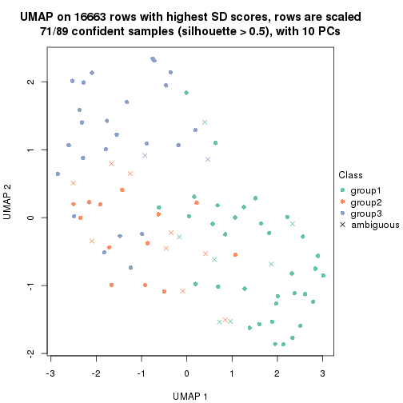
dimension_reduction(res, k = 4, method = "UMAP")
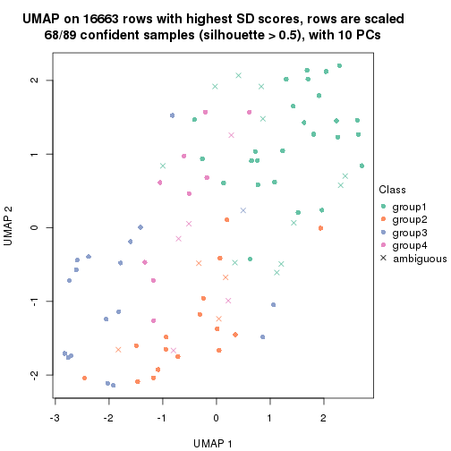
dimension_reduction(res, k = 5, method = "UMAP")
dimension_reduction(res, k = 6, method = "UMAP")
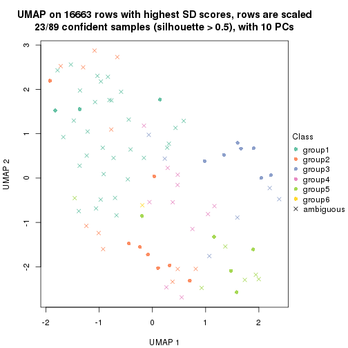
Following heatmap shows how subgroups are split when increasing k:
collect_classes(res)
Test correlation between subgroups and known annotations. If the known annotation is numeric, one-way ANOVA test is applied, and if the known annotation is discrete, chi-squared contingency table test is applied.
test_to_known_factors(res)
#> n protocol(p) k
#> SD:NMF 87 0.5228 2
#> SD:NMF 71 0.6022 3
#> SD:NMF 68 0.5059 4
#> SD:NMF 61 0.8014 5
#> SD:NMF 23 0.0484 6
If matrix rows can be associated to genes, consider to use functional_enrichment(res,
...) to perform function enrichment for the signature genes. See this vignette for more detailed explanations.
The object with results only for a single top-value method and a single partition method can be extracted as:
res = res_list["CV", "hclust"]
# you can also extract it by
# res = res_list["CV:hclust"]
A summary of res and all the functions that can be applied to it:
res
#> A 'ConsensusPartition' object with k = 2, 3, 4, 5, 6.
#> On a matrix with 16663 rows and 89 columns.
#> Top rows (1000, 2000, 3000, 4000, 5000) are extracted by 'CV' method.
#> Subgroups are detected by 'hclust' method.
#> Performed in total 1250 partitions by row resampling.
#> Best k for subgroups seems to be 2.
#>
#> Following methods can be applied to this 'ConsensusPartition' object:
#> [1] "cola_report" "collect_classes" "collect_plots"
#> [4] "collect_stats" "colnames" "compare_signatures"
#> [7] "consensus_heatmap" "dimension_reduction" "functional_enrichment"
#> [10] "get_anno_col" "get_anno" "get_classes"
#> [13] "get_consensus" "get_matrix" "get_membership"
#> [16] "get_param" "get_signatures" "get_stats"
#> [19] "is_best_k" "is_stable_k" "membership_heatmap"
#> [22] "ncol" "nrow" "plot_ecdf"
#> [25] "rownames" "select_partition_number" "show"
#> [28] "suggest_best_k" "test_to_known_factors"
collect_plots() function collects all the plots made from res for all k (number of partitions)
into one single page to provide an easy and fast comparison between different k.
collect_plots(res)
The plots are:
k and the heatmap of
predicted classes for each k.k.k.k.All the plots in panels can be made by individual functions and they are plotted later in this section.
select_partition_number() produces several plots showing different
statistics for choosing “optimized” k. There are following statistics:
k;k, the area increased is defined as \(A_k - A_{k-1}\).The detailed explanations of these statistics can be found in the cola vignette.
Generally speaking, lower PAC score, higher mean silhouette score or higher
concordance corresponds to better partition. Rand index and Jaccard index
measure how similar the current partition is compared to partition with k-1.
If they are too similar, we won't accept k is better than k-1.
select_partition_number(res)
The numeric values for all these statistics can be obtained by get_stats().
get_stats(res)
#> k 1-PAC mean_silhouette concordance area_increased Rand Jaccard
#> 2 2 0.258 0.732 0.850 0.3865 0.591 0.591
#> 3 3 0.249 0.679 0.807 0.3008 0.917 0.864
#> 4 4 0.299 0.541 0.708 0.2206 0.915 0.845
#> 5 5 0.365 0.547 0.662 0.1261 0.814 0.627
#> 6 6 0.479 0.546 0.675 0.0715 0.906 0.726
suggest_best_k() suggests the best \(k\) based on these statistics. The rules are as follows:
suggest_best_k(res)
#> [1] 2
Following shows the table of the partitions (You need to click the show/hide
code output link to see it). The membership matrix (columns with name p*)
is inferred by
clue::cl_consensus()
function with the SE method. Basically the value in the membership matrix
represents the probability to belong to a certain group. The finall class
label for an item is determined with the group with highest probability it
belongs to.
In get_classes() function, the entropy is calculated from the membership
matrix and the silhouette score is calculated from the consensus matrix.
cbind(get_classes(res, k = 2), get_membership(res, k = 2))
#> class entropy silhouette p1 p2
#> GSM78921 1 0.163 0.82088 0.976 0.024
#> GSM78922 1 0.163 0.82088 0.976 0.024
#> GSM78923 2 0.595 0.79387 0.144 0.856
#> GSM78924 2 0.260 0.78618 0.044 0.956
#> GSM78925 2 0.913 0.62623 0.328 0.672
#> GSM78926 1 0.260 0.80410 0.956 0.044
#> GSM78927 1 0.278 0.85062 0.952 0.048
#> GSM78928 1 0.788 0.72486 0.764 0.236
#> GSM78929 2 0.689 0.77420 0.184 0.816
#> GSM78930 1 0.518 0.83774 0.884 0.116
#> GSM78931 1 0.671 0.79990 0.824 0.176
#> GSM78932 2 0.529 0.79784 0.120 0.880
#> GSM78933 1 0.184 0.84656 0.972 0.028
#> GSM78934 2 0.615 0.79150 0.152 0.848
#> GSM78935 1 0.141 0.82997 0.980 0.020
#> GSM78936 1 0.978 0.27512 0.588 0.412
#> GSM78937 1 0.605 0.82378 0.852 0.148
#> GSM78938 1 0.430 0.84792 0.912 0.088
#> GSM78939 1 0.295 0.85040 0.948 0.052
#> GSM78940 2 0.949 0.59358 0.368 0.632
#> GSM78941 2 0.946 0.60030 0.364 0.636
#> GSM78942 1 0.574 0.83171 0.864 0.136
#> GSM78943 1 0.163 0.82088 0.976 0.024
#> GSM78944 1 0.482 0.84478 0.896 0.104
#> GSM78945 1 0.482 0.84478 0.896 0.104
#> GSM78946 1 0.311 0.85105 0.944 0.056
#> GSM78947 2 0.295 0.78975 0.052 0.948
#> GSM78948 1 0.141 0.82997 0.980 0.020
#> GSM78949 1 0.482 0.84478 0.896 0.104
#> GSM78950 1 0.541 0.82663 0.876 0.124
#> GSM78951 1 0.518 0.83774 0.884 0.116
#> GSM78952 2 0.260 0.78618 0.044 0.956
#> GSM78953 2 0.469 0.79754 0.100 0.900
#> GSM78954 1 0.985 0.21036 0.572 0.428
#> GSM78955 1 0.994 0.01573 0.544 0.456
#> GSM78956 2 0.855 0.70419 0.280 0.720
#> GSM78957 2 0.961 0.52307 0.384 0.616
#> GSM78958 1 0.605 0.82649 0.852 0.148
#> GSM78959 1 0.118 0.83195 0.984 0.016
#> GSM78960 1 0.574 0.83137 0.864 0.136
#> GSM78961 1 0.574 0.83171 0.864 0.136
#> GSM78962 1 0.260 0.80410 0.956 0.044
#> GSM78963 2 0.260 0.78618 0.044 0.956
#> GSM78964 2 0.260 0.78618 0.044 0.956
#> GSM78965 1 0.574 0.83137 0.864 0.136
#> GSM78966 1 0.163 0.84262 0.976 0.024
#> GSM78967 1 0.184 0.83424 0.972 0.028
#> GSM78879 1 0.260 0.80410 0.956 0.044
#> GSM78880 1 0.204 0.83589 0.968 0.032
#> GSM78881 1 0.402 0.85198 0.920 0.080
#> GSM78882 1 0.242 0.84965 0.960 0.040
#> GSM78883 1 0.242 0.84965 0.960 0.040
#> GSM78884 1 0.260 0.80410 0.956 0.044
#> GSM78885 1 0.595 0.82960 0.856 0.144
#> GSM78886 2 0.963 0.55010 0.388 0.612
#> GSM78887 1 0.775 0.73403 0.772 0.228
#> GSM78888 1 0.184 0.84403 0.972 0.028
#> GSM78889 1 0.998 -0.00927 0.524 0.476
#> GSM78890 1 0.980 0.22729 0.584 0.416
#> GSM78891 1 0.430 0.84792 0.912 0.088
#> GSM78892 2 0.714 0.76853 0.196 0.804
#> GSM78893 2 0.973 0.50994 0.404 0.596
#> GSM78894 1 0.430 0.84792 0.912 0.088
#> GSM78895 2 0.343 0.79374 0.064 0.936
#> GSM78896 1 0.327 0.85146 0.940 0.060
#> GSM78897 1 0.767 0.74285 0.776 0.224
#> GSM78898 1 0.482 0.84478 0.896 0.104
#> GSM78899 1 0.260 0.80410 0.956 0.044
#> GSM78900 1 0.563 0.83353 0.868 0.132
#> GSM78901 1 0.881 0.55062 0.700 0.300
#> GSM78902 1 0.518 0.83774 0.884 0.116
#> GSM78903 2 0.260 0.78618 0.044 0.956
#> GSM78904 1 0.689 0.79271 0.816 0.184
#> GSM78905 1 0.985 0.21036 0.572 0.428
#> GSM78906 2 0.343 0.79374 0.064 0.936
#> GSM78907 1 0.625 0.81718 0.844 0.156
#> GSM78908 1 0.584 0.82966 0.860 0.140
#> GSM78909 2 0.839 0.71696 0.268 0.732
#> GSM78910 1 0.118 0.83618 0.984 0.016
#> GSM78911 2 0.961 0.52307 0.384 0.616
#> GSM78912 1 0.204 0.84367 0.968 0.032
#> GSM78913 2 0.260 0.78618 0.044 0.956
#> GSM78914 1 0.574 0.83137 0.864 0.136
#> GSM78915 1 0.753 0.76555 0.784 0.216
#> GSM78916 1 0.993 0.03715 0.548 0.452
#> GSM78917 1 0.118 0.82658 0.984 0.016
#> GSM78918 1 0.494 0.84553 0.892 0.108
#> GSM78919 1 0.242 0.84881 0.960 0.040
#> GSM78920 2 0.997 0.21603 0.468 0.532
cbind(get_classes(res, k = 3), get_membership(res, k = 3))
#> class entropy silhouette p1 p2 p3
#> GSM78921 1 0.5098 0.685 0.752 0.000 0.248
#> GSM78922 1 0.5098 0.685 0.752 0.000 0.248
#> GSM78923 2 0.3619 0.751 0.136 0.864 0.000
#> GSM78924 2 0.0829 0.706 0.012 0.984 0.004
#> GSM78925 2 0.6169 0.546 0.360 0.636 0.004
#> GSM78926 3 0.2261 0.979 0.068 0.000 0.932
#> GSM78927 1 0.3682 0.781 0.876 0.008 0.116
#> GSM78928 1 0.5178 0.691 0.808 0.164 0.028
#> GSM78929 2 0.3941 0.734 0.156 0.844 0.000
#> GSM78930 1 0.3888 0.775 0.888 0.064 0.048
#> GSM78931 1 0.5538 0.767 0.812 0.116 0.072
#> GSM78932 2 0.3425 0.748 0.112 0.884 0.004
#> GSM78933 1 0.4399 0.736 0.812 0.000 0.188
#> GSM78934 2 0.3816 0.750 0.148 0.852 0.000
#> GSM78935 1 0.4974 0.697 0.764 0.000 0.236
#> GSM78936 1 0.6818 0.363 0.628 0.348 0.024
#> GSM78937 1 0.3973 0.783 0.880 0.088 0.032
#> GSM78938 1 0.1482 0.792 0.968 0.020 0.012
#> GSM78939 1 0.3607 0.784 0.880 0.008 0.112
#> GSM78940 2 0.6111 0.546 0.396 0.604 0.000
#> GSM78941 2 0.6095 0.553 0.392 0.608 0.000
#> GSM78942 1 0.4281 0.767 0.872 0.072 0.056
#> GSM78943 1 0.5098 0.685 0.752 0.000 0.248
#> GSM78944 1 0.1999 0.792 0.952 0.036 0.012
#> GSM78945 1 0.1999 0.792 0.952 0.036 0.012
#> GSM78946 1 0.3539 0.787 0.888 0.012 0.100
#> GSM78947 2 0.1267 0.717 0.024 0.972 0.004
#> GSM78948 1 0.4974 0.697 0.764 0.000 0.236
#> GSM78949 1 0.1999 0.792 0.952 0.036 0.012
#> GSM78950 1 0.7244 0.730 0.700 0.092 0.208
#> GSM78951 1 0.3888 0.775 0.888 0.064 0.048
#> GSM78952 2 0.0892 0.688 0.000 0.980 0.020
#> GSM78953 2 0.2945 0.743 0.088 0.908 0.004
#> GSM78954 1 0.7032 0.257 0.604 0.368 0.028
#> GSM78955 1 0.6140 0.107 0.596 0.404 0.000
#> GSM78956 2 0.6512 0.654 0.300 0.676 0.024
#> GSM78957 2 0.7069 0.455 0.408 0.568 0.024
#> GSM78958 1 0.4628 0.784 0.856 0.088 0.056
#> GSM78959 1 0.4887 0.704 0.772 0.000 0.228
#> GSM78960 1 0.3310 0.771 0.908 0.064 0.028
#> GSM78961 1 0.4281 0.767 0.872 0.072 0.056
#> GSM78962 1 0.5760 0.500 0.672 0.000 0.328
#> GSM78963 2 0.0892 0.688 0.000 0.980 0.020
#> GSM78964 2 0.0892 0.688 0.000 0.980 0.020
#> GSM78965 1 0.3310 0.771 0.908 0.064 0.028
#> GSM78966 1 0.4399 0.734 0.812 0.000 0.188
#> GSM78967 1 0.4121 0.754 0.832 0.000 0.168
#> GSM78879 3 0.2537 0.975 0.080 0.000 0.920
#> GSM78880 1 0.4887 0.712 0.772 0.000 0.228
#> GSM78881 1 0.5574 0.757 0.784 0.032 0.184
#> GSM78882 1 0.3607 0.781 0.880 0.008 0.112
#> GSM78883 1 0.3607 0.781 0.880 0.008 0.112
#> GSM78884 3 0.2796 0.960 0.092 0.000 0.908
#> GSM78885 1 0.4642 0.786 0.856 0.084 0.060
#> GSM78886 2 0.6215 0.482 0.428 0.572 0.000
#> GSM78887 1 0.5847 0.713 0.780 0.172 0.048
#> GSM78888 1 0.4521 0.743 0.816 0.004 0.180
#> GSM78889 1 0.6421 0.103 0.572 0.424 0.004
#> GSM78890 1 0.6490 0.315 0.628 0.360 0.012
#> GSM78891 1 0.1482 0.792 0.968 0.020 0.012
#> GSM78892 2 0.4235 0.731 0.176 0.824 0.000
#> GSM78893 2 0.6252 0.438 0.444 0.556 0.000
#> GSM78894 1 0.1482 0.792 0.968 0.020 0.012
#> GSM78895 2 0.1529 0.726 0.040 0.960 0.000
#> GSM78896 1 0.3910 0.789 0.876 0.020 0.104
#> GSM78897 1 0.5111 0.733 0.808 0.168 0.024
#> GSM78898 1 0.1999 0.792 0.952 0.036 0.012
#> GSM78899 3 0.2165 0.978 0.064 0.000 0.936
#> GSM78900 1 0.3554 0.774 0.900 0.064 0.036
#> GSM78901 1 0.6108 0.570 0.732 0.240 0.028
#> GSM78902 1 0.3888 0.775 0.888 0.064 0.048
#> GSM78903 2 0.1129 0.691 0.004 0.976 0.020
#> GSM78904 1 0.4540 0.766 0.848 0.124 0.028
#> GSM78905 1 0.7032 0.257 0.604 0.368 0.028
#> GSM78906 2 0.1529 0.726 0.040 0.960 0.000
#> GSM78907 1 0.4137 0.779 0.872 0.096 0.032
#> GSM78908 1 0.3921 0.771 0.884 0.080 0.036
#> GSM78909 2 0.6322 0.679 0.276 0.700 0.024
#> GSM78910 1 0.4842 0.709 0.776 0.000 0.224
#> GSM78911 2 0.7080 0.448 0.412 0.564 0.024
#> GSM78912 1 0.2796 0.785 0.908 0.000 0.092
#> GSM78913 2 0.0892 0.688 0.000 0.980 0.020
#> GSM78914 1 0.3310 0.771 0.908 0.064 0.028
#> GSM78915 1 0.5178 0.727 0.808 0.164 0.028
#> GSM78916 1 0.6126 0.125 0.600 0.400 0.000
#> GSM78917 1 0.5016 0.694 0.760 0.000 0.240
#> GSM78918 1 0.1529 0.789 0.960 0.040 0.000
#> GSM78919 1 0.2711 0.785 0.912 0.000 0.088
#> GSM78920 1 0.6309 -0.170 0.500 0.500 0.000
cbind(get_classes(res, k = 4), get_membership(res, k = 4))
#> class entropy silhouette p1 p2 p3 p4
#> GSM78921 1 0.506 0.5064 0.752 0.000 0.064 0.184
#> GSM78922 1 0.506 0.5064 0.752 0.000 0.064 0.184
#> GSM78923 2 0.275 0.7012 0.056 0.904 0.040 0.000
#> GSM78924 2 0.310 0.6698 0.012 0.868 0.120 0.000
#> GSM78925 2 0.724 0.4746 0.292 0.556 0.144 0.008
#> GSM78926 4 0.201 0.9684 0.080 0.000 0.000 0.920
#> GSM78927 1 0.360 0.6020 0.872 0.012 0.044 0.072
#> GSM78928 1 0.726 0.4151 0.580 0.156 0.252 0.012
#> GSM78929 2 0.297 0.6841 0.096 0.884 0.020 0.000
#> GSM78930 1 0.579 0.5046 0.656 0.060 0.284 0.000
#> GSM78931 1 0.700 0.5323 0.672 0.124 0.148 0.056
#> GSM78932 2 0.413 0.6965 0.052 0.824 0.124 0.000
#> GSM78933 1 0.366 0.5696 0.836 0.000 0.020 0.144
#> GSM78934 2 0.327 0.6982 0.056 0.884 0.056 0.004
#> GSM78935 1 0.483 0.5187 0.768 0.000 0.056 0.176
#> GSM78936 1 0.733 0.1427 0.500 0.380 0.104 0.016
#> GSM78937 1 0.376 0.6108 0.856 0.104 0.028 0.012
#> GSM78938 1 0.374 0.6051 0.860 0.032 0.096 0.012
#> GSM78939 1 0.328 0.6108 0.888 0.016 0.028 0.068
#> GSM78940 2 0.657 0.5656 0.252 0.640 0.096 0.012
#> GSM78941 2 0.657 0.5723 0.244 0.644 0.100 0.012
#> GSM78942 3 0.752 0.7828 0.316 0.060 0.556 0.068
#> GSM78943 1 0.506 0.5064 0.752 0.000 0.064 0.184
#> GSM78944 1 0.415 0.5976 0.840 0.048 0.100 0.012
#> GSM78945 1 0.415 0.5976 0.840 0.048 0.100 0.012
#> GSM78946 1 0.324 0.6157 0.892 0.028 0.020 0.060
#> GSM78947 2 0.317 0.6733 0.016 0.868 0.116 0.000
#> GSM78948 1 0.483 0.5187 0.768 0.000 0.056 0.176
#> GSM78949 1 0.415 0.5976 0.840 0.048 0.100 0.012
#> GSM78950 1 0.824 0.4457 0.572 0.100 0.164 0.164
#> GSM78951 1 0.582 0.5003 0.652 0.060 0.288 0.000
#> GSM78952 2 0.292 0.6494 0.000 0.860 0.140 0.000
#> GSM78953 2 0.391 0.6883 0.032 0.828 0.140 0.000
#> GSM78954 1 0.763 0.1477 0.480 0.344 0.168 0.008
#> GSM78955 1 0.724 -0.0763 0.460 0.428 0.100 0.012
#> GSM78956 2 0.665 0.6194 0.132 0.692 0.136 0.040
#> GSM78957 2 0.781 0.5026 0.160 0.568 0.232 0.040
#> GSM78958 1 0.546 0.5674 0.776 0.100 0.092 0.032
#> GSM78959 1 0.482 0.5219 0.772 0.000 0.060 0.168
#> GSM78960 1 0.582 0.4895 0.652 0.060 0.288 0.000
#> GSM78961 3 0.752 0.7828 0.316 0.060 0.556 0.068
#> GSM78962 3 0.771 0.3817 0.236 0.000 0.436 0.328
#> GSM78963 2 0.292 0.6494 0.000 0.860 0.140 0.000
#> GSM78964 2 0.292 0.6494 0.000 0.860 0.140 0.000
#> GSM78965 1 0.582 0.4895 0.652 0.060 0.288 0.000
#> GSM78966 1 0.396 0.5667 0.824 0.000 0.032 0.144
#> GSM78967 1 0.407 0.5755 0.832 0.000 0.064 0.104
#> GSM78879 4 0.222 0.9580 0.092 0.000 0.000 0.908
#> GSM78880 1 0.489 0.5316 0.768 0.000 0.064 0.168
#> GSM78881 1 0.648 0.5431 0.700 0.032 0.124 0.144
#> GSM78882 1 0.370 0.6027 0.868 0.012 0.052 0.068
#> GSM78883 1 0.370 0.6027 0.868 0.012 0.052 0.068
#> GSM78884 4 0.292 0.9435 0.080 0.000 0.028 0.892
#> GSM78885 1 0.454 0.6070 0.828 0.096 0.036 0.040
#> GSM78886 2 0.685 0.5292 0.280 0.604 0.104 0.012
#> GSM78887 1 0.728 0.2279 0.612 0.196 0.168 0.024
#> GSM78888 1 0.440 0.5760 0.816 0.012 0.036 0.136
#> GSM78889 2 0.763 0.1355 0.396 0.456 0.132 0.016
#> GSM78890 1 0.700 0.2506 0.556 0.328 0.108 0.008
#> GSM78891 1 0.374 0.6051 0.860 0.032 0.096 0.012
#> GSM78892 2 0.322 0.6801 0.112 0.868 0.020 0.000
#> GSM78893 2 0.693 0.5045 0.296 0.588 0.104 0.012
#> GSM78894 1 0.374 0.6051 0.860 0.032 0.096 0.012
#> GSM78895 2 0.185 0.6919 0.012 0.940 0.048 0.000
#> GSM78896 1 0.372 0.6101 0.872 0.024 0.048 0.056
#> GSM78897 1 0.393 0.5760 0.796 0.196 0.004 0.004
#> GSM78898 1 0.415 0.5976 0.840 0.048 0.100 0.012
#> GSM78899 4 0.227 0.9676 0.076 0.000 0.008 0.916
#> GSM78900 1 0.652 0.2227 0.520 0.064 0.412 0.004
#> GSM78901 1 0.588 0.4538 0.676 0.264 0.048 0.012
#> GSM78902 1 0.582 0.5003 0.652 0.060 0.288 0.000
#> GSM78903 2 0.310 0.6526 0.004 0.856 0.140 0.000
#> GSM78904 1 0.373 0.5968 0.832 0.152 0.008 0.008
#> GSM78905 1 0.763 0.1477 0.480 0.344 0.168 0.008
#> GSM78906 2 0.185 0.6919 0.012 0.940 0.048 0.000
#> GSM78907 1 0.362 0.6112 0.860 0.108 0.020 0.012
#> GSM78908 1 0.666 0.2078 0.524 0.076 0.396 0.004
#> GSM78909 2 0.635 0.6337 0.108 0.716 0.136 0.040
#> GSM78910 1 0.442 0.5377 0.792 0.000 0.040 0.168
#> GSM78911 2 0.784 0.4991 0.164 0.564 0.232 0.040
#> GSM78912 1 0.591 0.3688 0.672 0.008 0.264 0.056
#> GSM78913 2 0.292 0.6494 0.000 0.860 0.140 0.000
#> GSM78914 1 0.582 0.4895 0.652 0.060 0.288 0.000
#> GSM78915 1 0.681 0.4484 0.596 0.156 0.248 0.000
#> GSM78916 1 0.720 -0.0668 0.464 0.428 0.096 0.012
#> GSM78917 1 0.498 0.5136 0.760 0.000 0.064 0.176
#> GSM78918 1 0.413 0.6078 0.836 0.064 0.096 0.004
#> GSM78919 1 0.362 0.6135 0.860 0.000 0.076 0.064
#> GSM78920 2 0.709 0.2590 0.364 0.528 0.096 0.012
cbind(get_classes(res, k = 5), get_membership(res, k = 5))
#> class entropy silhouette p1 p2 p3 p4 p5
#> GSM78921 1 0.393 0.6261 0.820 0.000 0.080 0.088 0.012
#> GSM78922 1 0.393 0.6261 0.820 0.000 0.080 0.088 0.012
#> GSM78923 2 0.150 0.5910 0.004 0.940 0.000 0.000 0.056
#> GSM78924 2 0.473 0.5241 0.000 0.640 0.032 0.000 0.328
#> GSM78925 2 0.784 0.2651 0.144 0.476 0.204 0.000 0.176
#> GSM78926 4 0.167 0.9636 0.076 0.000 0.000 0.924 0.000
#> GSM78927 1 0.364 0.6621 0.856 0.028 0.076 0.020 0.020
#> GSM78928 3 0.635 0.6290 0.240 0.136 0.596 0.000 0.028
#> GSM78929 2 0.460 0.5869 0.056 0.772 0.028 0.000 0.144
#> GSM78930 3 0.428 0.6992 0.312 0.004 0.676 0.000 0.008
#> GSM78931 1 0.677 0.3186 0.584 0.128 0.244 0.020 0.024
#> GSM78932 2 0.496 0.5627 0.016 0.716 0.044 0.004 0.220
#> GSM78933 1 0.342 0.6571 0.856 0.008 0.076 0.056 0.004
#> GSM78934 2 0.160 0.5881 0.004 0.948 0.012 0.004 0.032
#> GSM78935 1 0.391 0.6324 0.824 0.000 0.080 0.080 0.016
#> GSM78936 2 0.701 0.0481 0.364 0.464 0.136 0.004 0.032
#> GSM78937 1 0.501 0.5947 0.732 0.140 0.116 0.000 0.012
#> GSM78938 1 0.492 0.5877 0.752 0.096 0.128 0.000 0.024
#> GSM78939 1 0.373 0.6738 0.852 0.044 0.068 0.020 0.016
#> GSM78940 2 0.459 0.5229 0.156 0.760 0.076 0.004 0.004
#> GSM78941 2 0.456 0.5258 0.152 0.764 0.072 0.000 0.012
#> GSM78942 5 0.816 0.7883 0.112 0.092 0.264 0.048 0.484
#> GSM78943 1 0.393 0.6261 0.820 0.000 0.080 0.088 0.012
#> GSM78944 1 0.524 0.5690 0.728 0.108 0.136 0.000 0.028
#> GSM78945 1 0.524 0.5690 0.728 0.108 0.136 0.000 0.028
#> GSM78946 1 0.330 0.6695 0.872 0.060 0.044 0.016 0.008
#> GSM78947 2 0.477 0.5265 0.000 0.644 0.036 0.000 0.320
#> GSM78948 1 0.391 0.6324 0.824 0.000 0.080 0.080 0.016
#> GSM78949 1 0.524 0.5690 0.728 0.108 0.136 0.000 0.028
#> GSM78950 1 0.722 0.3164 0.552 0.092 0.248 0.100 0.008
#> GSM78951 3 0.430 0.6948 0.316 0.004 0.672 0.000 0.008
#> GSM78952 2 0.429 0.4418 0.000 0.536 0.000 0.000 0.464
#> GSM78953 2 0.462 0.5488 0.000 0.712 0.044 0.004 0.240
#> GSM78954 3 0.716 0.3696 0.208 0.320 0.444 0.000 0.028
#> GSM78955 2 0.639 0.1943 0.344 0.520 0.120 0.000 0.016
#> GSM78956 2 0.421 0.5357 0.060 0.812 0.036 0.000 0.092
#> GSM78957 2 0.612 0.4134 0.064 0.668 0.084 0.004 0.180
#> GSM78958 1 0.673 0.4859 0.620 0.148 0.176 0.020 0.036
#> GSM78959 1 0.370 0.6329 0.832 0.000 0.084 0.076 0.008
#> GSM78960 3 0.501 0.7115 0.248 0.004 0.692 0.008 0.048
#> GSM78961 5 0.816 0.7883 0.112 0.092 0.264 0.048 0.484
#> GSM78962 5 0.856 0.4363 0.160 0.004 0.236 0.280 0.320
#> GSM78963 2 0.429 0.4418 0.000 0.536 0.000 0.000 0.464
#> GSM78964 2 0.429 0.4418 0.000 0.536 0.000 0.000 0.464
#> GSM78965 3 0.501 0.7115 0.248 0.004 0.692 0.008 0.048
#> GSM78966 1 0.310 0.6660 0.876 0.008 0.052 0.060 0.004
#> GSM78967 1 0.332 0.6535 0.856 0.004 0.100 0.032 0.008
#> GSM78879 4 0.201 0.9522 0.088 0.000 0.004 0.908 0.000
#> GSM78880 1 0.429 0.6177 0.788 0.000 0.116 0.088 0.008
#> GSM78881 1 0.576 0.4496 0.664 0.028 0.228 0.076 0.004
#> GSM78882 1 0.332 0.6709 0.876 0.024 0.056 0.020 0.024
#> GSM78883 1 0.332 0.6709 0.876 0.024 0.056 0.020 0.024
#> GSM78884 4 0.272 0.9365 0.068 0.000 0.028 0.892 0.012
#> GSM78885 1 0.556 0.5798 0.704 0.136 0.136 0.016 0.008
#> GSM78886 2 0.499 0.4891 0.180 0.724 0.084 0.000 0.012
#> GSM78887 1 0.816 0.2037 0.456 0.276 0.140 0.024 0.104
#> GSM78888 1 0.351 0.6738 0.860 0.024 0.056 0.056 0.004
#> GSM78889 2 0.666 0.2416 0.280 0.552 0.132 0.000 0.036
#> GSM78890 1 0.738 -0.2667 0.364 0.340 0.268 0.000 0.028
#> GSM78891 1 0.492 0.5877 0.752 0.096 0.128 0.000 0.024
#> GSM78892 2 0.462 0.5890 0.068 0.776 0.028 0.000 0.128
#> GSM78893 2 0.513 0.4708 0.196 0.708 0.084 0.000 0.012
#> GSM78894 1 0.492 0.5877 0.752 0.096 0.128 0.000 0.024
#> GSM78895 2 0.285 0.5735 0.000 0.828 0.000 0.000 0.172
#> GSM78896 1 0.401 0.6671 0.836 0.056 0.072 0.016 0.020
#> GSM78897 1 0.551 0.5312 0.668 0.228 0.092 0.004 0.008
#> GSM78898 1 0.524 0.5690 0.728 0.108 0.136 0.000 0.028
#> GSM78899 4 0.189 0.9622 0.080 0.000 0.004 0.916 0.000
#> GSM78900 3 0.554 0.4901 0.228 0.020 0.676 0.004 0.072
#> GSM78901 1 0.577 0.2816 0.564 0.328 0.108 0.000 0.000
#> GSM78902 3 0.430 0.6948 0.316 0.004 0.672 0.000 0.008
#> GSM78903 2 0.429 0.4448 0.000 0.540 0.000 0.000 0.460
#> GSM78904 1 0.524 0.5647 0.700 0.188 0.104 0.004 0.004
#> GSM78905 3 0.716 0.3696 0.208 0.320 0.444 0.000 0.028
#> GSM78906 2 0.285 0.5735 0.000 0.828 0.000 0.000 0.172
#> GSM78907 1 0.505 0.5897 0.728 0.148 0.112 0.000 0.012
#> GSM78908 3 0.629 0.4612 0.272 0.028 0.608 0.012 0.080
#> GSM78909 2 0.383 0.5412 0.040 0.832 0.032 0.000 0.096
#> GSM78910 1 0.336 0.6495 0.860 0.004 0.052 0.076 0.008
#> GSM78911 2 0.608 0.4122 0.064 0.672 0.084 0.004 0.176
#> GSM78912 1 0.620 0.3722 0.616 0.020 0.272 0.020 0.072
#> GSM78913 2 0.429 0.4418 0.000 0.536 0.000 0.000 0.464
#> GSM78914 3 0.501 0.7115 0.248 0.004 0.692 0.008 0.048
#> GSM78915 3 0.619 0.6780 0.228 0.056 0.640 0.004 0.072
#> GSM78916 2 0.631 0.2002 0.344 0.528 0.112 0.000 0.016
#> GSM78917 1 0.376 0.6291 0.828 0.000 0.080 0.084 0.008
#> GSM78918 1 0.516 0.5738 0.724 0.128 0.132 0.000 0.016
#> GSM78919 1 0.326 0.6576 0.852 0.020 0.116 0.004 0.008
#> GSM78920 2 0.671 0.2665 0.260 0.568 0.120 0.000 0.052
cbind(get_classes(res, k = 6), get_membership(res, k = 6))
#> class entropy silhouette p1 p2 p3 p4 p5 p6
#> GSM78921 1 0.2716 0.7006 0.880 0.004 0.064 0.008 0.000 0.044
#> GSM78922 1 0.2716 0.7006 0.880 0.004 0.064 0.008 0.000 0.044
#> GSM78923 2 0.3993 -0.2236 0.000 0.520 0.000 0.004 0.476 0.000
#> GSM78924 5 0.3418 0.6386 0.000 0.184 0.032 0.000 0.784 0.000
#> GSM78925 5 0.6874 0.1923 0.016 0.312 0.252 0.016 0.400 0.004
#> GSM78926 6 0.0865 0.9471 0.036 0.000 0.000 0.000 0.000 0.964
#> GSM78927 1 0.3631 0.7178 0.836 0.060 0.060 0.032 0.000 0.012
#> GSM78928 3 0.4668 0.5586 0.056 0.284 0.652 0.008 0.000 0.000
#> GSM78929 5 0.4863 0.2866 0.008 0.428 0.024 0.004 0.532 0.004
#> GSM78930 3 0.2526 0.6512 0.096 0.024 0.876 0.004 0.000 0.000
#> GSM78931 1 0.6443 0.4276 0.536 0.228 0.192 0.028 0.000 0.016
#> GSM78932 5 0.5065 0.5256 0.004 0.320 0.028 0.028 0.616 0.004
#> GSM78933 1 0.2319 0.7255 0.912 0.012 0.028 0.020 0.000 0.028
#> GSM78934 2 0.4344 -0.1196 0.000 0.556 0.000 0.016 0.424 0.004
#> GSM78935 1 0.2465 0.7061 0.892 0.004 0.064 0.004 0.000 0.036
#> GSM78936 2 0.6250 0.3829 0.268 0.580 0.092 0.028 0.020 0.012
#> GSM78937 1 0.5589 0.5840 0.588 0.288 0.100 0.020 0.004 0.000
#> GSM78938 1 0.4773 0.6119 0.632 0.296 0.068 0.004 0.000 0.000
#> GSM78939 1 0.3922 0.7237 0.808 0.100 0.056 0.028 0.000 0.008
#> GSM78940 2 0.5168 0.4703 0.084 0.660 0.016 0.008 0.232 0.000
#> GSM78941 2 0.5097 0.4630 0.076 0.664 0.016 0.008 0.236 0.000
#> GSM78942 4 0.4062 0.7925 0.000 0.196 0.068 0.736 0.000 0.000
#> GSM78943 1 0.2716 0.7006 0.880 0.004 0.064 0.008 0.000 0.044
#> GSM78944 1 0.4808 0.5814 0.604 0.332 0.060 0.004 0.000 0.000
#> GSM78945 1 0.4808 0.5814 0.604 0.332 0.060 0.004 0.000 0.000
#> GSM78946 1 0.3779 0.7140 0.784 0.152 0.056 0.000 0.000 0.008
#> GSM78947 5 0.3512 0.6377 0.000 0.196 0.032 0.000 0.772 0.000
#> GSM78948 1 0.2465 0.7061 0.892 0.004 0.064 0.004 0.000 0.036
#> GSM78949 1 0.4808 0.5814 0.604 0.332 0.060 0.004 0.000 0.000
#> GSM78950 1 0.6356 0.4424 0.560 0.144 0.228 0.004 0.000 0.064
#> GSM78951 3 0.2781 0.6477 0.108 0.024 0.860 0.008 0.000 0.000
#> GSM78952 5 0.0146 0.6464 0.000 0.000 0.000 0.000 0.996 0.004
#> GSM78953 5 0.4813 0.5608 0.000 0.292 0.032 0.024 0.648 0.004
#> GSM78954 3 0.5899 0.3041 0.020 0.344 0.528 0.004 0.100 0.004
#> GSM78955 2 0.5619 0.5166 0.188 0.652 0.056 0.004 0.100 0.000
#> GSM78956 2 0.3770 0.3114 0.000 0.728 0.000 0.028 0.244 0.000
#> GSM78957 2 0.4568 0.3363 0.000 0.740 0.012 0.096 0.144 0.008
#> GSM78958 1 0.6309 0.4991 0.540 0.276 0.124 0.056 0.000 0.004
#> GSM78959 1 0.2380 0.7066 0.892 0.000 0.068 0.004 0.000 0.036
#> GSM78960 3 0.2854 0.6417 0.024 0.020 0.872 0.080 0.000 0.004
#> GSM78961 4 0.4062 0.7925 0.000 0.196 0.068 0.736 0.000 0.000
#> GSM78962 4 0.3894 0.5115 0.052 0.000 0.076 0.808 0.000 0.064
#> GSM78963 5 0.0146 0.6464 0.000 0.000 0.000 0.000 0.996 0.004
#> GSM78964 5 0.0146 0.6464 0.000 0.000 0.000 0.000 0.996 0.004
#> GSM78965 3 0.2854 0.6417 0.024 0.020 0.872 0.080 0.000 0.004
#> GSM78966 1 0.2497 0.7299 0.900 0.032 0.032 0.004 0.000 0.032
#> GSM78967 1 0.2518 0.7248 0.880 0.012 0.096 0.004 0.000 0.008
#> GSM78879 6 0.1141 0.9395 0.052 0.000 0.000 0.000 0.000 0.948
#> GSM78880 1 0.3640 0.6933 0.820 0.020 0.104 0.004 0.000 0.052
#> GSM78881 1 0.5254 0.5644 0.696 0.048 0.184 0.020 0.000 0.052
#> GSM78882 1 0.3540 0.7251 0.836 0.072 0.064 0.012 0.000 0.016
#> GSM78883 1 0.3540 0.7251 0.836 0.072 0.064 0.012 0.000 0.016
#> GSM78884 6 0.2651 0.8869 0.036 0.000 0.004 0.088 0.000 0.872
#> GSM78885 1 0.5510 0.5925 0.624 0.248 0.100 0.020 0.000 0.008
#> GSM78886 2 0.4802 0.4972 0.084 0.696 0.020 0.000 0.200 0.000
#> GSM78887 2 0.6878 -0.0589 0.360 0.452 0.064 0.092 0.000 0.032
#> GSM78888 1 0.3096 0.7330 0.864 0.060 0.044 0.004 0.000 0.028
#> GSM78889 2 0.6297 0.5131 0.156 0.640 0.080 0.020 0.092 0.012
#> GSM78890 2 0.7093 0.0576 0.152 0.408 0.336 0.004 0.100 0.000
#> GSM78891 1 0.4773 0.6119 0.632 0.296 0.068 0.004 0.000 0.000
#> GSM78892 5 0.4890 0.2042 0.008 0.460 0.024 0.004 0.500 0.004
#> GSM78893 2 0.5118 0.5093 0.116 0.668 0.020 0.000 0.196 0.000
#> GSM78894 1 0.4773 0.6119 0.632 0.296 0.068 0.004 0.000 0.000
#> GSM78895 5 0.3747 0.4443 0.000 0.396 0.000 0.000 0.604 0.000
#> GSM78896 1 0.4399 0.7112 0.760 0.148 0.060 0.024 0.000 0.008
#> GSM78897 1 0.6203 0.4709 0.524 0.340 0.080 0.012 0.040 0.004
#> GSM78898 1 0.4808 0.5814 0.604 0.332 0.060 0.004 0.000 0.000
#> GSM78899 6 0.1082 0.9465 0.040 0.000 0.000 0.004 0.000 0.956
#> GSM78900 3 0.6298 0.4002 0.176 0.068 0.564 0.192 0.000 0.000
#> GSM78901 2 0.5518 -0.1130 0.436 0.472 0.068 0.000 0.024 0.000
#> GSM78902 3 0.2781 0.6477 0.108 0.024 0.860 0.008 0.000 0.000
#> GSM78903 5 0.0291 0.6460 0.000 0.004 0.000 0.000 0.992 0.004
#> GSM78904 1 0.5601 0.5337 0.560 0.332 0.084 0.016 0.008 0.000
#> GSM78905 3 0.5899 0.3041 0.020 0.344 0.528 0.004 0.100 0.004
#> GSM78906 5 0.3747 0.4443 0.000 0.396 0.000 0.000 0.604 0.000
#> GSM78907 1 0.5488 0.5694 0.580 0.304 0.100 0.012 0.004 0.000
#> GSM78908 3 0.6977 0.3274 0.216 0.108 0.472 0.204 0.000 0.000
#> GSM78909 2 0.4151 0.2566 0.000 0.684 0.000 0.040 0.276 0.000
#> GSM78910 1 0.2364 0.7195 0.904 0.012 0.044 0.004 0.000 0.036
#> GSM78911 2 0.4522 0.3406 0.000 0.744 0.012 0.092 0.144 0.008
#> GSM78912 1 0.6471 0.4461 0.572 0.076 0.176 0.168 0.000 0.008
#> GSM78913 5 0.0146 0.6464 0.000 0.000 0.000 0.000 0.996 0.004
#> GSM78914 3 0.2854 0.6417 0.024 0.020 0.872 0.080 0.000 0.004
#> GSM78915 3 0.3787 0.6097 0.020 0.020 0.824 0.032 0.100 0.004
#> GSM78916 2 0.5455 0.5183 0.192 0.656 0.052 0.000 0.100 0.000
#> GSM78917 1 0.2461 0.7033 0.888 0.000 0.064 0.004 0.000 0.044
#> GSM78918 1 0.5303 0.5783 0.584 0.312 0.092 0.012 0.000 0.000
#> GSM78919 1 0.3118 0.7241 0.836 0.072 0.092 0.000 0.000 0.000
#> GSM78920 2 0.6292 0.4242 0.132 0.608 0.084 0.012 0.164 0.000
Heatmaps for the consensus matrix. It visualizes the probability of two samples to be in a same group.
consensus_heatmap(res, k = 2)
consensus_heatmap(res, k = 3)
consensus_heatmap(res, k = 4)
consensus_heatmap(res, k = 5)
consensus_heatmap(res, k = 6)
Heatmaps for the membership of samples in all partitions to see how consistent they are:
membership_heatmap(res, k = 2)
membership_heatmap(res, k = 3)
membership_heatmap(res, k = 4)

membership_heatmap(res, k = 5)
membership_heatmap(res, k = 6)
As soon as we have had the classes for columns, we can look for signatures which are significantly different between classes which can be candidate marks for certain classes. Following are the heatmaps for signatures.
Signature heatmaps where rows are scaled:
get_signatures(res, k = 2)
get_signatures(res, k = 3)
get_signatures(res, k = 4)

get_signatures(res, k = 5)
get_signatures(res, k = 6)
Signature heatmaps where rows are not scaled:
get_signatures(res, k = 2, scale_rows = FALSE)
get_signatures(res, k = 3, scale_rows = FALSE)
get_signatures(res, k = 4, scale_rows = FALSE)
get_signatures(res, k = 5, scale_rows = FALSE)
get_signatures(res, k = 6, scale_rows = FALSE)
Compare the overlap of signatures from different k:
compare_signatures(res)
get_signature() returns a data frame invisibly. TO get the list of signatures, the function
call should be assigned to a variable explicitly. In following code, if plot argument is set
to FALSE, no heatmap is plotted while only the differential analysis is performed.
# code only for demonstration
tb = get_signature(res, k = ..., plot = FALSE)
An example of the output of tb is:
#> which_row fdr mean_1 mean_2 scaled_mean_1 scaled_mean_2 km
#> 1 38 0.042760348 8.373488 9.131774 -0.5533452 0.5164555 1
#> 2 40 0.018707592 7.106213 8.469186 -0.6173731 0.5762149 1
#> 3 55 0.019134737 10.221463 11.207825 -0.6159697 0.5749050 1
#> 4 59 0.006059896 5.921854 7.869574 -0.6899429 0.6439467 1
#> 5 60 0.018055526 8.928898 10.211722 -0.6204761 0.5791110 1
#> 6 98 0.009384629 15.714769 14.887706 0.6635654 -0.6193277 2
...
The columns in tb are:
which_row: row indices corresponding to the input matrix.fdr: FDR for the differential test. mean_x: The mean value in group x.scaled_mean_x: The mean value in group x after rows are scaled.km: Row groups if k-means clustering is applied to rows.UMAP plot which shows how samples are separated.
dimension_reduction(res, k = 2, method = "UMAP")
dimension_reduction(res, k = 3, method = "UMAP")
dimension_reduction(res, k = 4, method = "UMAP")
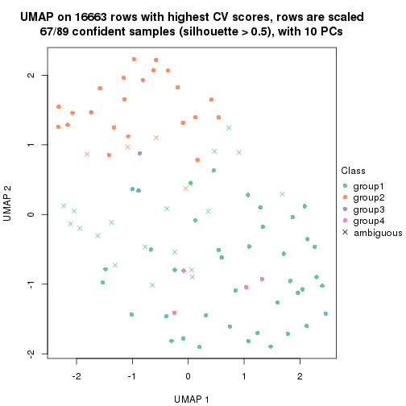
dimension_reduction(res, k = 5, method = "UMAP")
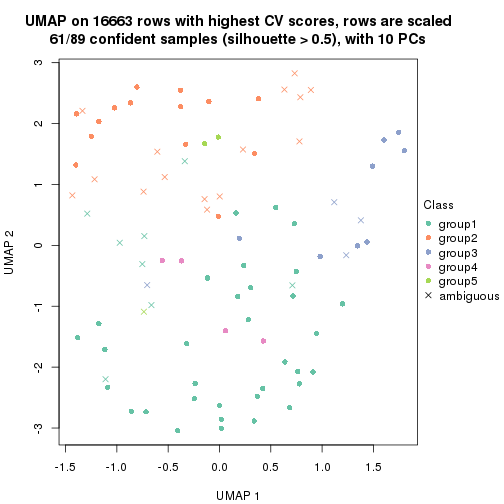
dimension_reduction(res, k = 6, method = "UMAP")
Following heatmap shows how subgroups are split when increasing k:
collect_classes(res)

Test correlation between subgroups and known annotations. If the known annotation is numeric, one-way ANOVA test is applied, and if the known annotation is discrete, chi-squared contingency table test is applied.
test_to_known_factors(res)
#> n protocol(p) k
#> CV:hclust 81 0.475 2
#> CV:hclust 76 0.176 3
#> CV:hclust 67 0.293 4
#> CV:hclust 61 0.300 5
#> CV:hclust 61 0.179 6
If matrix rows can be associated to genes, consider to use functional_enrichment(res,
...) to perform function enrichment for the signature genes. See this vignette for more detailed explanations.
The object with results only for a single top-value method and a single partition method can be extracted as:
res = res_list["CV", "kmeans"]
# you can also extract it by
# res = res_list["CV:kmeans"]
A summary of res and all the functions that can be applied to it:
res
#> A 'ConsensusPartition' object with k = 2, 3, 4, 5, 6.
#> On a matrix with 16663 rows and 89 columns.
#> Top rows (1000, 2000, 3000, 4000, 5000) are extracted by 'CV' method.
#> Subgroups are detected by 'kmeans' method.
#> Performed in total 1250 partitions by row resampling.
#> Best k for subgroups seems to be 2.
#>
#> Following methods can be applied to this 'ConsensusPartition' object:
#> [1] "cola_report" "collect_classes" "collect_plots"
#> [4] "collect_stats" "colnames" "compare_signatures"
#> [7] "consensus_heatmap" "dimension_reduction" "functional_enrichment"
#> [10] "get_anno_col" "get_anno" "get_classes"
#> [13] "get_consensus" "get_matrix" "get_membership"
#> [16] "get_param" "get_signatures" "get_stats"
#> [19] "is_best_k" "is_stable_k" "membership_heatmap"
#> [22] "ncol" "nrow" "plot_ecdf"
#> [25] "rownames" "select_partition_number" "show"
#> [28] "suggest_best_k" "test_to_known_factors"
collect_plots() function collects all the plots made from res for all k (number of partitions)
into one single page to provide an easy and fast comparison between different k.
collect_plots(res)
The plots are:
k and the heatmap of
predicted classes for each k.k.k.k.All the plots in panels can be made by individual functions and they are plotted later in this section.
select_partition_number() produces several plots showing different
statistics for choosing “optimized” k. There are following statistics:
k;k, the area increased is defined as \(A_k - A_{k-1}\).The detailed explanations of these statistics can be found in the cola vignette.
Generally speaking, lower PAC score, higher mean silhouette score or higher
concordance corresponds to better partition. Rand index and Jaccard index
measure how similar the current partition is compared to partition with k-1.
If they are too similar, we won't accept k is better than k-1.
select_partition_number(res)
The numeric values for all these statistics can be obtained by get_stats().
get_stats(res)
#> k 1-PAC mean_silhouette concordance area_increased Rand Jaccard
#> 2 2 0.864 0.885 0.954 0.5008 0.505 0.505
#> 3 3 0.433 0.590 0.785 0.2715 0.814 0.647
#> 4 4 0.445 0.515 0.696 0.1344 0.740 0.421
#> 5 5 0.501 0.392 0.638 0.0749 0.823 0.505
#> 6 6 0.592 0.513 0.675 0.0513 0.866 0.548
suggest_best_k() suggests the best \(k\) based on these statistics. The rules are as follows:
suggest_best_k(res)
#> [1] 2
Following shows the table of the partitions (You need to click the show/hide
code output link to see it). The membership matrix (columns with name p*)
is inferred by
clue::cl_consensus()
function with the SE method. Basically the value in the membership matrix
represents the probability to belong to a certain group. The finall class
label for an item is determined with the group with highest probability it
belongs to.
In get_classes() function, the entropy is calculated from the membership
matrix and the silhouette score is calculated from the consensus matrix.
cbind(get_classes(res, k = 2), get_membership(res, k = 2))
#> class entropy silhouette p1 p2
#> GSM78921 1 0.0000 0.928 1.000 0.000
#> GSM78922 1 0.0000 0.928 1.000 0.000
#> GSM78923 2 0.0000 0.976 0.000 1.000
#> GSM78924 2 0.0000 0.976 0.000 1.000
#> GSM78925 2 0.0000 0.976 0.000 1.000
#> GSM78926 1 0.0000 0.928 1.000 0.000
#> GSM78927 1 0.0000 0.928 1.000 0.000
#> GSM78928 2 0.0000 0.976 0.000 1.000
#> GSM78929 2 0.0000 0.976 0.000 1.000
#> GSM78930 1 0.9491 0.460 0.632 0.368
#> GSM78931 1 0.9491 0.460 0.632 0.368
#> GSM78932 2 0.0000 0.976 0.000 1.000
#> GSM78933 1 0.0000 0.928 1.000 0.000
#> GSM78934 2 0.0000 0.976 0.000 1.000
#> GSM78935 1 0.0000 0.928 1.000 0.000
#> GSM78936 1 0.0000 0.928 1.000 0.000
#> GSM78937 1 0.0000 0.928 1.000 0.000
#> GSM78938 1 0.0000 0.928 1.000 0.000
#> GSM78939 1 0.0000 0.928 1.000 0.000
#> GSM78940 2 0.9795 0.229 0.416 0.584
#> GSM78941 2 0.0000 0.976 0.000 1.000
#> GSM78942 1 0.9491 0.460 0.632 0.368
#> GSM78943 1 0.0000 0.928 1.000 0.000
#> GSM78944 1 0.9710 0.344 0.600 0.400
#> GSM78945 1 0.0000 0.928 1.000 0.000
#> GSM78946 1 0.0000 0.928 1.000 0.000
#> GSM78947 2 0.0000 0.976 0.000 1.000
#> GSM78948 1 0.0000 0.928 1.000 0.000
#> GSM78949 1 0.7376 0.711 0.792 0.208
#> GSM78950 1 0.0000 0.928 1.000 0.000
#> GSM78951 1 0.9491 0.460 0.632 0.368
#> GSM78952 2 0.0000 0.976 0.000 1.000
#> GSM78953 2 0.0000 0.976 0.000 1.000
#> GSM78954 2 0.0000 0.976 0.000 1.000
#> GSM78955 2 0.0000 0.976 0.000 1.000
#> GSM78956 2 0.0000 0.976 0.000 1.000
#> GSM78957 2 0.0000 0.976 0.000 1.000
#> GSM78958 1 0.0000 0.928 1.000 0.000
#> GSM78959 1 0.0000 0.928 1.000 0.000
#> GSM78960 2 0.2603 0.930 0.044 0.956
#> GSM78961 2 0.0376 0.972 0.004 0.996
#> GSM78962 1 0.0000 0.928 1.000 0.000
#> GSM78963 2 0.0000 0.976 0.000 1.000
#> GSM78964 2 0.0000 0.976 0.000 1.000
#> GSM78965 2 0.0000 0.976 0.000 1.000
#> GSM78966 1 0.0000 0.928 1.000 0.000
#> GSM78967 1 0.0000 0.928 1.000 0.000
#> GSM78879 1 0.0000 0.928 1.000 0.000
#> GSM78880 1 0.0000 0.928 1.000 0.000
#> GSM78881 1 0.0000 0.928 1.000 0.000
#> GSM78882 1 0.0000 0.928 1.000 0.000
#> GSM78883 1 0.0000 0.928 1.000 0.000
#> GSM78884 1 0.0000 0.928 1.000 0.000
#> GSM78885 1 0.0000 0.928 1.000 0.000
#> GSM78886 2 0.0000 0.976 0.000 1.000
#> GSM78887 1 0.0000 0.928 1.000 0.000
#> GSM78888 1 0.0000 0.928 1.000 0.000
#> GSM78889 2 0.0000 0.976 0.000 1.000
#> GSM78890 2 0.0000 0.976 0.000 1.000
#> GSM78891 1 0.0000 0.928 1.000 0.000
#> GSM78892 2 0.0000 0.976 0.000 1.000
#> GSM78893 2 0.0000 0.976 0.000 1.000
#> GSM78894 1 0.0000 0.928 1.000 0.000
#> GSM78895 2 0.0000 0.976 0.000 1.000
#> GSM78896 1 0.0000 0.928 1.000 0.000
#> GSM78897 2 0.0000 0.976 0.000 1.000
#> GSM78898 1 0.9710 0.344 0.600 0.400
#> GSM78899 1 0.0000 0.928 1.000 0.000
#> GSM78900 1 0.2948 0.887 0.948 0.052
#> GSM78901 1 0.0000 0.928 1.000 0.000
#> GSM78902 1 0.9815 0.334 0.580 0.420
#> GSM78903 2 0.0000 0.976 0.000 1.000
#> GSM78904 2 0.9129 0.449 0.328 0.672
#> GSM78905 2 0.0000 0.976 0.000 1.000
#> GSM78906 2 0.0000 0.976 0.000 1.000
#> GSM78907 1 0.0000 0.928 1.000 0.000
#> GSM78908 1 0.0000 0.928 1.000 0.000
#> GSM78909 2 0.0000 0.976 0.000 1.000
#> GSM78910 1 0.0000 0.928 1.000 0.000
#> GSM78911 2 0.0000 0.976 0.000 1.000
#> GSM78912 1 0.0000 0.928 1.000 0.000
#> GSM78913 2 0.0000 0.976 0.000 1.000
#> GSM78914 1 0.9491 0.460 0.632 0.368
#> GSM78915 2 0.0000 0.976 0.000 1.000
#> GSM78916 2 0.0000 0.976 0.000 1.000
#> GSM78917 1 0.0000 0.928 1.000 0.000
#> GSM78918 1 0.0000 0.928 1.000 0.000
#> GSM78919 1 0.0000 0.928 1.000 0.000
#> GSM78920 2 0.0000 0.976 0.000 1.000
cbind(get_classes(res, k = 3), get_membership(res, k = 3))
#> class entropy silhouette p1 p2 p3
#> GSM78921 1 0.1753 0.7411 0.952 0.000 0.048
#> GSM78922 1 0.0747 0.7567 0.984 0.000 0.016
#> GSM78923 2 0.0892 0.7060 0.000 0.980 0.020
#> GSM78924 2 0.4178 0.6029 0.000 0.828 0.172
#> GSM78925 2 0.6126 0.2655 0.000 0.600 0.400
#> GSM78926 1 0.2066 0.7384 0.940 0.000 0.060
#> GSM78927 1 0.1529 0.7692 0.960 0.000 0.040
#> GSM78928 3 0.6264 0.2882 0.004 0.380 0.616
#> GSM78929 2 0.0000 0.7057 0.000 1.000 0.000
#> GSM78930 3 0.5115 0.6184 0.188 0.016 0.796
#> GSM78931 1 0.9030 0.0387 0.520 0.152 0.328
#> GSM78932 2 0.4974 0.4928 0.000 0.764 0.236
#> GSM78933 1 0.1964 0.7694 0.944 0.000 0.056
#> GSM78934 2 0.4121 0.6797 0.000 0.832 0.168
#> GSM78935 1 0.0237 0.7638 0.996 0.000 0.004
#> GSM78936 1 0.5785 0.6273 0.668 0.000 0.332
#> GSM78937 1 0.6302 0.3789 0.520 0.000 0.480
#> GSM78938 1 0.6180 0.5013 0.584 0.000 0.416
#> GSM78939 1 0.2878 0.7659 0.904 0.000 0.096
#> GSM78940 2 0.9353 0.1445 0.200 0.504 0.296
#> GSM78941 2 0.2261 0.7053 0.000 0.932 0.068
#> GSM78942 3 0.6460 0.6074 0.112 0.124 0.764
#> GSM78943 1 0.0747 0.7567 0.984 0.000 0.016
#> GSM78944 1 0.8957 0.2778 0.492 0.132 0.376
#> GSM78945 1 0.5650 0.6334 0.688 0.000 0.312
#> GSM78946 1 0.5178 0.6814 0.744 0.000 0.256
#> GSM78947 2 0.6154 0.2372 0.000 0.592 0.408
#> GSM78948 1 0.0237 0.7638 0.996 0.000 0.004
#> GSM78949 1 0.7213 0.4575 0.552 0.028 0.420
#> GSM78950 1 0.1753 0.7690 0.952 0.000 0.048
#> GSM78951 3 0.3120 0.6652 0.080 0.012 0.908
#> GSM78952 2 0.0747 0.7013 0.000 0.984 0.016
#> GSM78953 2 0.1163 0.6973 0.000 0.972 0.028
#> GSM78954 3 0.6079 0.2850 0.000 0.388 0.612
#> GSM78955 3 0.6345 0.2376 0.004 0.400 0.596
#> GSM78956 2 0.5016 0.6198 0.000 0.760 0.240
#> GSM78957 2 0.5216 0.5981 0.000 0.740 0.260
#> GSM78958 1 0.5529 0.6594 0.704 0.000 0.296
#> GSM78959 1 0.0000 0.7623 1.000 0.000 0.000
#> GSM78960 3 0.3406 0.6456 0.028 0.068 0.904
#> GSM78961 3 0.4963 0.5695 0.008 0.200 0.792
#> GSM78962 1 0.2165 0.7406 0.936 0.000 0.064
#> GSM78963 2 0.4555 0.5786 0.000 0.800 0.200
#> GSM78964 2 0.4555 0.5786 0.000 0.800 0.200
#> GSM78965 3 0.6507 0.4493 0.028 0.284 0.688
#> GSM78966 1 0.1643 0.7699 0.956 0.000 0.044
#> GSM78967 1 0.1964 0.7694 0.944 0.000 0.056
#> GSM78879 1 0.2066 0.7384 0.940 0.000 0.060
#> GSM78880 1 0.0237 0.7636 0.996 0.000 0.004
#> GSM78881 1 0.1860 0.7699 0.948 0.000 0.052
#> GSM78882 1 0.1643 0.7695 0.956 0.000 0.044
#> GSM78883 1 0.4121 0.7372 0.832 0.000 0.168
#> GSM78884 1 0.2066 0.7384 0.940 0.000 0.060
#> GSM78885 1 0.3340 0.7577 0.880 0.000 0.120
#> GSM78886 2 0.5591 0.5406 0.000 0.696 0.304
#> GSM78887 1 0.5859 0.6368 0.656 0.000 0.344
#> GSM78888 1 0.1860 0.7696 0.948 0.000 0.052
#> GSM78889 2 0.4452 0.6580 0.000 0.808 0.192
#> GSM78890 3 0.5115 0.5575 0.016 0.188 0.796
#> GSM78891 1 0.6180 0.5013 0.584 0.000 0.416
#> GSM78892 2 0.3941 0.6847 0.000 0.844 0.156
#> GSM78893 2 0.5591 0.5406 0.000 0.696 0.304
#> GSM78894 1 0.5948 0.5911 0.640 0.000 0.360
#> GSM78895 2 0.0000 0.7057 0.000 1.000 0.000
#> GSM78896 1 0.6305 0.3701 0.516 0.000 0.484
#> GSM78897 3 0.7825 0.5716 0.156 0.172 0.672
#> GSM78898 1 0.8915 0.2053 0.472 0.124 0.404
#> GSM78899 1 0.2066 0.7384 0.940 0.000 0.060
#> GSM78900 3 0.3340 0.6595 0.120 0.000 0.880
#> GSM78901 1 0.5845 0.6458 0.688 0.004 0.308
#> GSM78902 3 0.3091 0.6647 0.072 0.016 0.912
#> GSM78903 2 0.0237 0.7051 0.000 0.996 0.004
#> GSM78904 3 0.7814 0.5160 0.104 0.244 0.652
#> GSM78905 3 0.6434 0.3012 0.008 0.380 0.612
#> GSM78906 2 0.0000 0.7057 0.000 1.000 0.000
#> GSM78907 3 0.5650 0.3076 0.312 0.000 0.688
#> GSM78908 3 0.5431 0.3978 0.284 0.000 0.716
#> GSM78909 2 0.5178 0.6040 0.000 0.744 0.256
#> GSM78910 1 0.1964 0.7694 0.944 0.000 0.056
#> GSM78911 2 0.5431 0.5735 0.000 0.716 0.284
#> GSM78912 1 0.5810 0.5825 0.664 0.000 0.336
#> GSM78913 2 0.4555 0.5786 0.000 0.800 0.200
#> GSM78914 3 0.5574 0.6151 0.184 0.032 0.784
#> GSM78915 3 0.6026 0.3014 0.000 0.376 0.624
#> GSM78916 2 0.6140 0.3065 0.000 0.596 0.404
#> GSM78917 1 0.0424 0.7644 0.992 0.000 0.008
#> GSM78918 1 0.6274 0.4403 0.544 0.000 0.456
#> GSM78919 1 0.6180 0.5009 0.584 0.000 0.416
#> GSM78920 2 0.4062 0.6811 0.000 0.836 0.164
cbind(get_classes(res, k = 4), get_membership(res, k = 4))
#> class entropy silhouette p1 p2 p3 p4
#> GSM78921 1 0.2830 0.74520 0.900 0.060 0.040 0.000
#> GSM78922 1 0.1059 0.78640 0.972 0.016 0.012 0.000
#> GSM78923 4 0.3764 0.61388 0.000 0.216 0.000 0.784
#> GSM78924 4 0.2999 0.77661 0.000 0.004 0.132 0.864
#> GSM78925 4 0.6623 0.56994 0.000 0.148 0.232 0.620
#> GSM78926 1 0.3301 0.73739 0.876 0.076 0.048 0.000
#> GSM78927 1 0.3693 0.78300 0.856 0.072 0.072 0.000
#> GSM78928 2 0.6026 0.45242 0.008 0.700 0.100 0.192
#> GSM78929 4 0.1474 0.79900 0.000 0.052 0.000 0.948
#> GSM78930 3 0.2261 0.67177 0.036 0.024 0.932 0.008
#> GSM78931 1 0.8082 0.16707 0.424 0.336 0.228 0.012
#> GSM78932 4 0.5440 0.65756 0.000 0.104 0.160 0.736
#> GSM78933 1 0.3935 0.77192 0.840 0.060 0.100 0.000
#> GSM78934 2 0.4941 0.19676 0.000 0.564 0.000 0.436
#> GSM78935 1 0.1388 0.79446 0.960 0.028 0.012 0.000
#> GSM78936 2 0.5613 0.38271 0.156 0.724 0.120 0.000
#> GSM78937 2 0.7811 0.18957 0.308 0.416 0.276 0.000
#> GSM78938 2 0.7650 0.21183 0.364 0.424 0.212 0.000
#> GSM78939 1 0.5116 0.73106 0.764 0.128 0.108 0.000
#> GSM78940 2 0.4511 0.49143 0.040 0.784 0.000 0.176
#> GSM78941 2 0.4961 0.14889 0.000 0.552 0.000 0.448
#> GSM78942 3 0.6350 0.40356 0.040 0.408 0.540 0.012
#> GSM78943 1 0.0927 0.78747 0.976 0.016 0.008 0.000
#> GSM78944 2 0.7944 0.30433 0.356 0.472 0.144 0.028
#> GSM78945 1 0.7421 0.04523 0.484 0.332 0.184 0.000
#> GSM78946 1 0.6652 0.36868 0.576 0.316 0.108 0.000
#> GSM78947 4 0.4483 0.60884 0.000 0.004 0.284 0.712
#> GSM78948 1 0.1284 0.79395 0.964 0.024 0.012 0.000
#> GSM78949 2 0.7268 0.26187 0.372 0.476 0.152 0.000
#> GSM78950 1 0.5085 0.62675 0.708 0.260 0.032 0.000
#> GSM78951 3 0.2224 0.66803 0.032 0.040 0.928 0.000
#> GSM78952 4 0.0000 0.80613 0.000 0.000 0.000 1.000
#> GSM78953 4 0.1545 0.80347 0.000 0.040 0.008 0.952
#> GSM78954 3 0.5845 0.37549 0.000 0.076 0.672 0.252
#> GSM78955 2 0.6123 0.44067 0.008 0.700 0.132 0.160
#> GSM78956 2 0.4898 0.23731 0.000 0.584 0.000 0.416
#> GSM78957 2 0.5326 0.28123 0.000 0.604 0.016 0.380
#> GSM78958 2 0.7119 -0.18498 0.428 0.444 0.128 0.000
#> GSM78959 1 0.0657 0.78878 0.984 0.012 0.004 0.000
#> GSM78960 3 0.2855 0.65207 0.004 0.040 0.904 0.052
#> GSM78961 3 0.5673 0.44304 0.000 0.372 0.596 0.032
#> GSM78962 1 0.6122 0.58855 0.680 0.160 0.160 0.000
#> GSM78963 4 0.3123 0.76451 0.000 0.000 0.156 0.844
#> GSM78964 4 0.3074 0.76642 0.000 0.000 0.152 0.848
#> GSM78965 3 0.4004 0.54872 0.000 0.024 0.812 0.164
#> GSM78966 1 0.3693 0.77622 0.856 0.072 0.072 0.000
#> GSM78967 1 0.4144 0.76186 0.828 0.068 0.104 0.000
#> GSM78879 1 0.3229 0.73893 0.880 0.072 0.048 0.000
#> GSM78880 1 0.1059 0.78936 0.972 0.016 0.012 0.000
#> GSM78881 1 0.4344 0.76868 0.816 0.108 0.076 0.000
#> GSM78882 1 0.4667 0.76159 0.796 0.108 0.096 0.000
#> GSM78883 1 0.6440 0.62345 0.644 0.208 0.148 0.000
#> GSM78884 1 0.3991 0.71849 0.832 0.120 0.048 0.000
#> GSM78885 1 0.4992 0.73228 0.772 0.132 0.096 0.000
#> GSM78886 2 0.4542 0.47439 0.000 0.752 0.020 0.228
#> GSM78887 2 0.5964 0.28414 0.208 0.684 0.108 0.000
#> GSM78888 1 0.3834 0.77970 0.848 0.076 0.076 0.000
#> GSM78889 2 0.5212 0.20693 0.000 0.572 0.008 0.420
#> GSM78890 3 0.7453 -0.00244 0.032 0.444 0.444 0.080
#> GSM78891 2 0.7654 0.20565 0.368 0.420 0.212 0.000
#> GSM78892 2 0.4897 0.37834 0.004 0.668 0.004 0.324
#> GSM78893 2 0.4706 0.46176 0.000 0.732 0.020 0.248
#> GSM78894 2 0.7355 0.25703 0.340 0.488 0.172 0.000
#> GSM78895 4 0.1474 0.79692 0.000 0.052 0.000 0.948
#> GSM78896 2 0.7645 0.23048 0.264 0.468 0.268 0.000
#> GSM78897 2 0.6337 0.35074 0.088 0.684 0.208 0.020
#> GSM78898 2 0.8235 0.30968 0.340 0.452 0.176 0.032
#> GSM78899 1 0.4307 0.70452 0.808 0.144 0.048 0.000
#> GSM78900 3 0.4418 0.60768 0.032 0.184 0.784 0.000
#> GSM78901 2 0.6736 0.41682 0.252 0.632 0.100 0.016
#> GSM78902 3 0.2174 0.66615 0.020 0.052 0.928 0.000
#> GSM78903 4 0.2216 0.76990 0.000 0.092 0.000 0.908
#> GSM78904 2 0.5787 0.41069 0.076 0.748 0.144 0.032
#> GSM78905 3 0.6883 0.36091 0.000 0.192 0.596 0.212
#> GSM78906 4 0.1474 0.79692 0.000 0.052 0.000 0.948
#> GSM78907 2 0.6336 0.26197 0.088 0.608 0.304 0.000
#> GSM78908 3 0.6382 0.43167 0.080 0.340 0.580 0.000
#> GSM78909 2 0.5376 0.25654 0.000 0.588 0.016 0.396
#> GSM78910 1 0.4215 0.76030 0.824 0.072 0.104 0.000
#> GSM78911 2 0.4535 0.45321 0.000 0.744 0.016 0.240
#> GSM78912 3 0.7692 -0.15978 0.368 0.220 0.412 0.000
#> GSM78913 4 0.3123 0.76451 0.000 0.000 0.156 0.844
#> GSM78914 3 0.2463 0.66145 0.036 0.008 0.924 0.032
#> GSM78915 3 0.4608 0.35400 0.000 0.004 0.692 0.304
#> GSM78916 2 0.4682 0.48364 0.004 0.760 0.024 0.212
#> GSM78917 1 0.0895 0.78979 0.976 0.020 0.004 0.000
#> GSM78918 2 0.7373 0.29890 0.316 0.500 0.184 0.000
#> GSM78919 2 0.7717 0.15540 0.384 0.392 0.224 0.000
#> GSM78920 2 0.4905 0.33788 0.000 0.632 0.004 0.364
cbind(get_classes(res, k = 5), get_membership(res, k = 5))
#> class entropy silhouette p1 p2 p3 p4 p5
#> GSM78921 1 0.4446 -0.556271 0.592 0.000 0.008 0.400 0.000
#> GSM78922 1 0.3756 -0.118891 0.744 0.000 0.008 0.248 0.000
#> GSM78923 2 0.4249 -0.009228 0.000 0.568 0.000 0.000 0.432
#> GSM78924 5 0.0451 0.826586 0.000 0.008 0.004 0.000 0.988
#> GSM78925 5 0.5443 0.610478 0.000 0.136 0.080 0.060 0.724
#> GSM78926 4 0.4451 0.705806 0.492 0.000 0.000 0.504 0.004
#> GSM78927 1 0.3635 0.228082 0.836 0.016 0.040 0.108 0.000
#> GSM78928 2 0.2304 0.643781 0.000 0.908 0.048 0.044 0.000
#> GSM78929 5 0.3093 0.814267 0.000 0.168 0.000 0.008 0.824
#> GSM78930 3 0.3485 0.690896 0.060 0.000 0.852 0.016 0.072
#> GSM78931 1 0.8317 -0.091008 0.372 0.156 0.248 0.224 0.000
#> GSM78932 5 0.5177 0.725279 0.012 0.064 0.116 0.048 0.760
#> GSM78933 1 0.2227 0.309131 0.916 0.004 0.032 0.048 0.000
#> GSM78934 2 0.3264 0.559296 0.000 0.820 0.016 0.000 0.164
#> GSM78935 1 0.2773 -0.000948 0.836 0.000 0.000 0.164 0.000
#> GSM78936 2 0.8385 -0.062730 0.280 0.296 0.140 0.284 0.000
#> GSM78937 1 0.8058 0.333188 0.420 0.156 0.156 0.268 0.000
#> GSM78938 1 0.7880 0.333955 0.412 0.216 0.072 0.296 0.004
#> GSM78939 1 0.3982 0.295287 0.828 0.040 0.052 0.080 0.000
#> GSM78940 2 0.1012 0.658370 0.000 0.968 0.012 0.020 0.000
#> GSM78941 2 0.3343 0.551086 0.000 0.812 0.000 0.016 0.172
#> GSM78942 3 0.6227 0.444160 0.024 0.220 0.612 0.144 0.000
#> GSM78943 1 0.3756 -0.118891 0.744 0.000 0.008 0.248 0.000
#> GSM78944 1 0.7859 0.204409 0.348 0.316 0.044 0.284 0.008
#> GSM78945 1 0.7369 0.396492 0.496 0.156 0.060 0.284 0.004
#> GSM78946 1 0.5670 0.396247 0.704 0.108 0.052 0.136 0.000
#> GSM78947 5 0.3155 0.749104 0.000 0.020 0.120 0.008 0.852
#> GSM78948 1 0.2732 0.024711 0.840 0.000 0.000 0.160 0.000
#> GSM78949 1 0.7853 0.220584 0.356 0.308 0.044 0.284 0.008
#> GSM78950 1 0.6185 -0.039927 0.644 0.128 0.044 0.184 0.000
#> GSM78951 3 0.3247 0.694671 0.052 0.000 0.864 0.012 0.072
#> GSM78952 5 0.2179 0.839058 0.000 0.100 0.000 0.004 0.896
#> GSM78953 5 0.3674 0.816971 0.000 0.156 0.016 0.016 0.812
#> GSM78954 3 0.6481 0.465214 0.000 0.100 0.584 0.048 0.268
#> GSM78955 2 0.5168 0.521202 0.040 0.712 0.032 0.212 0.004
#> GSM78956 2 0.2612 0.597881 0.000 0.868 0.008 0.000 0.124
#> GSM78957 2 0.3353 0.598462 0.000 0.852 0.024 0.020 0.104
#> GSM78958 1 0.8199 0.035203 0.412 0.212 0.164 0.212 0.000
#> GSM78959 1 0.3109 -0.106639 0.800 0.000 0.000 0.200 0.000
#> GSM78960 3 0.3015 0.695412 0.012 0.008 0.864 0.004 0.112
#> GSM78961 3 0.5822 0.438100 0.008 0.260 0.632 0.092 0.008
#> GSM78962 4 0.6325 0.614686 0.316 0.000 0.180 0.504 0.000
#> GSM78963 5 0.1173 0.818229 0.000 0.004 0.012 0.020 0.964
#> GSM78964 5 0.1173 0.818229 0.000 0.004 0.012 0.020 0.964
#> GSM78965 3 0.3535 0.656618 0.000 0.000 0.808 0.028 0.164
#> GSM78966 1 0.3753 0.332350 0.796 0.008 0.012 0.180 0.004
#> GSM78967 1 0.4211 0.346235 0.764 0.008 0.024 0.200 0.004
#> GSM78879 1 0.4452 -0.773225 0.500 0.000 0.000 0.496 0.004
#> GSM78880 1 0.3003 0.022913 0.812 0.000 0.000 0.188 0.000
#> GSM78881 1 0.4019 0.262901 0.820 0.028 0.052 0.100 0.000
#> GSM78882 1 0.3340 0.249479 0.860 0.016 0.048 0.076 0.000
#> GSM78883 1 0.6424 0.106154 0.612 0.040 0.148 0.200 0.000
#> GSM78884 4 0.4350 0.805571 0.408 0.000 0.000 0.588 0.004
#> GSM78885 1 0.4753 0.280516 0.780 0.056 0.076 0.088 0.000
#> GSM78886 2 0.0613 0.656435 0.004 0.984 0.000 0.008 0.004
#> GSM78887 2 0.8303 0.007201 0.248 0.340 0.132 0.280 0.000
#> GSM78888 1 0.1651 0.281514 0.944 0.008 0.012 0.036 0.000
#> GSM78889 2 0.4524 0.549857 0.000 0.768 0.040 0.028 0.164
#> GSM78890 2 0.9202 0.064327 0.124 0.304 0.216 0.296 0.060
#> GSM78891 1 0.7853 0.336680 0.424 0.216 0.072 0.284 0.004
#> GSM78892 2 0.4913 0.610171 0.024 0.768 0.008 0.092 0.108
#> GSM78893 2 0.1917 0.650212 0.004 0.936 0.008 0.036 0.016
#> GSM78894 1 0.7803 0.301918 0.400 0.252 0.056 0.288 0.004
#> GSM78895 5 0.3003 0.803295 0.000 0.188 0.000 0.000 0.812
#> GSM78896 1 0.8056 0.343905 0.428 0.152 0.168 0.252 0.000
#> GSM78897 2 0.8756 -0.029128 0.256 0.324 0.168 0.240 0.012
#> GSM78898 1 0.8071 0.222633 0.352 0.284 0.064 0.292 0.008
#> GSM78899 4 0.4748 0.806057 0.384 0.000 0.016 0.596 0.004
#> GSM78900 3 0.2777 0.650430 0.036 0.028 0.896 0.040 0.000
#> GSM78901 2 0.7499 0.012021 0.276 0.432 0.036 0.252 0.004
#> GSM78902 3 0.3842 0.694259 0.024 0.032 0.848 0.024 0.072
#> GSM78903 5 0.3086 0.802815 0.000 0.180 0.000 0.004 0.816
#> GSM78904 2 0.7852 0.238643 0.188 0.468 0.128 0.216 0.000
#> GSM78905 3 0.7648 0.396089 0.000 0.168 0.492 0.112 0.228
#> GSM78906 5 0.3003 0.803295 0.000 0.188 0.000 0.000 0.812
#> GSM78907 1 0.8519 0.148818 0.324 0.244 0.208 0.224 0.000
#> GSM78908 3 0.6723 0.445574 0.104 0.108 0.612 0.176 0.000
#> GSM78909 2 0.3781 0.586174 0.000 0.828 0.040 0.020 0.112
#> GSM78910 1 0.3817 0.343410 0.796 0.008 0.016 0.176 0.004
#> GSM78911 2 0.2635 0.635038 0.004 0.900 0.020 0.064 0.012
#> GSM78912 3 0.7331 -0.156445 0.356 0.028 0.372 0.244 0.000
#> GSM78913 5 0.1173 0.818229 0.000 0.004 0.012 0.020 0.964
#> GSM78914 3 0.3237 0.697171 0.048 0.000 0.848 0.000 0.104
#> GSM78915 3 0.4671 0.457275 0.000 0.000 0.640 0.028 0.332
#> GSM78916 2 0.1591 0.648686 0.004 0.940 0.004 0.052 0.000
#> GSM78917 1 0.3171 0.044769 0.816 0.000 0.008 0.176 0.000
#> GSM78918 1 0.8019 0.238457 0.344 0.284 0.068 0.300 0.004
#> GSM78919 1 0.7635 0.370869 0.456 0.188 0.064 0.288 0.004
#> GSM78920 2 0.4817 0.592084 0.012 0.760 0.008 0.076 0.144
cbind(get_classes(res, k = 6), get_membership(res, k = 6))
#> class entropy silhouette p1 p2 p3 p4 p5 p6
#> GSM78921 1 0.580 -0.24300 0.484 0.000 0.008 0.396 0.012 0.100
#> GSM78922 1 0.572 -0.04149 0.540 0.000 0.008 0.328 0.008 0.116
#> GSM78923 2 0.373 0.56624 0.000 0.700 0.000 0.008 0.288 0.004
#> GSM78924 5 0.105 0.81986 0.000 0.012 0.020 0.004 0.964 0.000
#> GSM78925 5 0.674 0.48346 0.000 0.144 0.092 0.024 0.572 0.168
#> GSM78926 4 0.376 0.73269 0.352 0.000 0.000 0.644 0.000 0.004
#> GSM78927 1 0.141 0.40975 0.952 0.004 0.004 0.008 0.004 0.028
#> GSM78928 2 0.256 0.83910 0.000 0.876 0.020 0.008 0.000 0.096
#> GSM78929 5 0.292 0.80970 0.000 0.096 0.000 0.024 0.860 0.020
#> GSM78930 3 0.223 0.69282 0.024 0.000 0.912 0.016 0.004 0.044
#> GSM78931 1 0.765 0.21012 0.496 0.076 0.088 0.236 0.012 0.092
#> GSM78932 5 0.729 0.53731 0.108 0.096 0.044 0.092 0.596 0.064
#> GSM78933 1 0.367 0.40934 0.788 0.000 0.000 0.044 0.008 0.160
#> GSM78934 2 0.207 0.83714 0.000 0.912 0.004 0.004 0.064 0.016
#> GSM78935 1 0.450 0.21258 0.720 0.000 0.004 0.196 0.008 0.072
#> GSM78936 1 0.792 0.13172 0.432 0.112 0.036 0.160 0.012 0.248
#> GSM78937 1 0.617 -0.02987 0.500 0.020 0.032 0.080 0.000 0.368
#> GSM78938 6 0.351 0.68264 0.176 0.020 0.008 0.004 0.000 0.792
#> GSM78939 1 0.251 0.42626 0.884 0.008 0.004 0.008 0.004 0.092
#> GSM78940 2 0.201 0.85326 0.000 0.904 0.004 0.000 0.008 0.084
#> GSM78941 2 0.286 0.83911 0.000 0.856 0.000 0.000 0.072 0.072
#> GSM78942 3 0.823 0.30532 0.100 0.180 0.364 0.280 0.004 0.072
#> GSM78943 1 0.562 -0.04064 0.544 0.000 0.004 0.328 0.008 0.116
#> GSM78944 6 0.371 0.70366 0.096 0.104 0.004 0.000 0.000 0.796
#> GSM78945 6 0.360 0.58420 0.220 0.004 0.000 0.020 0.000 0.756
#> GSM78946 1 0.392 0.29484 0.692 0.024 0.000 0.000 0.000 0.284
#> GSM78947 5 0.423 0.73308 0.000 0.024 0.160 0.036 0.768 0.012
#> GSM78948 1 0.460 0.21673 0.712 0.000 0.004 0.196 0.008 0.080
#> GSM78949 6 0.371 0.70483 0.100 0.100 0.004 0.000 0.000 0.796
#> GSM78950 1 0.589 0.30449 0.668 0.108 0.012 0.100 0.004 0.108
#> GSM78951 3 0.228 0.69119 0.024 0.000 0.904 0.016 0.000 0.056
#> GSM78952 5 0.152 0.82346 0.000 0.044 0.000 0.008 0.940 0.008
#> GSM78953 5 0.401 0.77852 0.000 0.144 0.004 0.044 0.784 0.024
#> GSM78954 3 0.529 0.57434 0.000 0.124 0.716 0.020 0.076 0.064
#> GSM78955 6 0.464 -0.04542 0.008 0.472 0.012 0.008 0.000 0.500
#> GSM78956 2 0.171 0.85666 0.000 0.928 0.000 0.000 0.044 0.028
#> GSM78957 2 0.148 0.85378 0.000 0.944 0.004 0.000 0.032 0.020
#> GSM78958 1 0.735 0.22589 0.500 0.100 0.048 0.252 0.004 0.096
#> GSM78959 1 0.495 -0.00493 0.632 0.000 0.004 0.292 0.008 0.064
#> GSM78960 3 0.135 0.69694 0.000 0.012 0.952 0.000 0.024 0.012
#> GSM78961 3 0.740 0.37618 0.016 0.236 0.428 0.244 0.004 0.072
#> GSM78962 4 0.604 0.33606 0.076 0.028 0.132 0.664 0.004 0.096
#> GSM78963 5 0.272 0.79473 0.000 0.008 0.052 0.024 0.888 0.028
#> GSM78964 5 0.257 0.79782 0.000 0.008 0.048 0.020 0.896 0.028
#> GSM78965 3 0.284 0.67837 0.000 0.016 0.884 0.020 0.048 0.032
#> GSM78966 1 0.541 0.32394 0.564 0.000 0.008 0.080 0.008 0.340
#> GSM78967 1 0.553 0.26632 0.528 0.000 0.008 0.084 0.008 0.372
#> GSM78879 4 0.379 0.71938 0.364 0.000 0.000 0.632 0.000 0.004
#> GSM78880 1 0.565 0.13199 0.596 0.000 0.008 0.236 0.008 0.152
#> GSM78881 1 0.238 0.41257 0.904 0.008 0.004 0.016 0.008 0.060
#> GSM78882 1 0.324 0.42659 0.828 0.004 0.012 0.020 0.000 0.136
#> GSM78883 1 0.614 0.29415 0.628 0.032 0.040 0.200 0.004 0.096
#> GSM78884 4 0.368 0.74566 0.332 0.000 0.000 0.664 0.000 0.004
#> GSM78885 1 0.296 0.41306 0.876 0.028 0.004 0.020 0.008 0.064
#> GSM78886 2 0.196 0.84310 0.000 0.896 0.004 0.000 0.000 0.100
#> GSM78887 1 0.778 0.06436 0.344 0.252 0.024 0.292 0.004 0.084
#> GSM78888 1 0.399 0.41202 0.776 0.004 0.008 0.036 0.008 0.168
#> GSM78889 2 0.487 0.74488 0.016 0.760 0.008 0.052 0.100 0.064
#> GSM78890 6 0.456 0.63245 0.028 0.092 0.112 0.004 0.004 0.760
#> GSM78891 6 0.311 0.69220 0.156 0.016 0.008 0.000 0.000 0.820
#> GSM78892 2 0.681 0.57494 0.100 0.588 0.004 0.040 0.096 0.172
#> GSM78893 2 0.214 0.83058 0.000 0.872 0.000 0.000 0.000 0.128
#> GSM78894 6 0.375 0.67369 0.200 0.028 0.004 0.004 0.000 0.764
#> GSM78895 5 0.281 0.78646 0.000 0.156 0.000 0.008 0.832 0.004
#> GSM78896 1 0.688 0.11296 0.488 0.036 0.044 0.128 0.000 0.304
#> GSM78897 6 0.772 0.27865 0.316 0.128 0.036 0.068 0.024 0.428
#> GSM78898 6 0.407 0.69975 0.100 0.092 0.012 0.008 0.000 0.788
#> GSM78899 4 0.327 0.70796 0.248 0.000 0.000 0.748 0.000 0.004
#> GSM78900 3 0.589 0.56500 0.076 0.052 0.684 0.128 0.004 0.056
#> GSM78901 6 0.539 0.54738 0.252 0.152 0.000 0.000 0.004 0.592
#> GSM78902 3 0.225 0.69282 0.012 0.000 0.900 0.016 0.000 0.072
#> GSM78903 5 0.252 0.81460 0.000 0.100 0.000 0.008 0.876 0.016
#> GSM78904 6 0.775 0.19515 0.312 0.216 0.020 0.076 0.012 0.364
#> GSM78905 3 0.633 0.44837 0.000 0.136 0.588 0.020 0.048 0.208
#> GSM78906 5 0.281 0.78646 0.000 0.156 0.000 0.008 0.832 0.004
#> GSM78907 1 0.699 -0.11139 0.416 0.048 0.040 0.084 0.008 0.404
#> GSM78908 3 0.802 0.21849 0.232 0.052 0.348 0.288 0.004 0.076
#> GSM78909 2 0.127 0.84858 0.000 0.952 0.004 0.000 0.036 0.008
#> GSM78910 1 0.541 0.32394 0.564 0.000 0.008 0.080 0.008 0.340
#> GSM78911 2 0.141 0.85442 0.000 0.944 0.004 0.000 0.008 0.044
#> GSM78912 1 0.842 0.09066 0.296 0.040 0.220 0.244 0.004 0.196
#> GSM78913 5 0.272 0.79473 0.000 0.008 0.052 0.024 0.888 0.028
#> GSM78914 3 0.120 0.69659 0.004 0.000 0.960 0.004 0.020 0.012
#> GSM78915 3 0.370 0.62650 0.000 0.016 0.820 0.020 0.112 0.032
#> GSM78916 2 0.240 0.81930 0.000 0.856 0.004 0.000 0.000 0.140
#> GSM78917 1 0.565 0.18138 0.604 0.000 0.008 0.200 0.008 0.180
#> GSM78918 6 0.417 0.69567 0.140 0.064 0.008 0.008 0.004 0.776
#> GSM78919 6 0.366 0.63078 0.184 0.004 0.008 0.024 0.000 0.780
#> GSM78920 2 0.591 0.72013 0.044 0.672 0.004 0.036 0.116 0.128
Heatmaps for the consensus matrix. It visualizes the probability of two samples to be in a same group.
consensus_heatmap(res, k = 2)
consensus_heatmap(res, k = 3)

consensus_heatmap(res, k = 4)
consensus_heatmap(res, k = 5)

consensus_heatmap(res, k = 6)
Heatmaps for the membership of samples in all partitions to see how consistent they are:
membership_heatmap(res, k = 2)
membership_heatmap(res, k = 3)
membership_heatmap(res, k = 4)
membership_heatmap(res, k = 5)
membership_heatmap(res, k = 6)
As soon as we have had the classes for columns, we can look for signatures which are significantly different between classes which can be candidate marks for certain classes. Following are the heatmaps for signatures.
Signature heatmaps where rows are scaled:
get_signatures(res, k = 2)
get_signatures(res, k = 3)
get_signatures(res, k = 4)
get_signatures(res, k = 5)
get_signatures(res, k = 6)
Signature heatmaps where rows are not scaled:
get_signatures(res, k = 2, scale_rows = FALSE)

get_signatures(res, k = 3, scale_rows = FALSE)

get_signatures(res, k = 4, scale_rows = FALSE)
get_signatures(res, k = 5, scale_rows = FALSE)
get_signatures(res, k = 6, scale_rows = FALSE)
Compare the overlap of signatures from different k:
compare_signatures(res)
get_signature() returns a data frame invisibly. TO get the list of signatures, the function
call should be assigned to a variable explicitly. In following code, if plot argument is set
to FALSE, no heatmap is plotted while only the differential analysis is performed.
# code only for demonstration
tb = get_signature(res, k = ..., plot = FALSE)
An example of the output of tb is:
#> which_row fdr mean_1 mean_2 scaled_mean_1 scaled_mean_2 km
#> 1 38 0.042760348 8.373488 9.131774 -0.5533452 0.5164555 1
#> 2 40 0.018707592 7.106213 8.469186 -0.6173731 0.5762149 1
#> 3 55 0.019134737 10.221463 11.207825 -0.6159697 0.5749050 1
#> 4 59 0.006059896 5.921854 7.869574 -0.6899429 0.6439467 1
#> 5 60 0.018055526 8.928898 10.211722 -0.6204761 0.5791110 1
#> 6 98 0.009384629 15.714769 14.887706 0.6635654 -0.6193277 2
...
The columns in tb are:
which_row: row indices corresponding to the input matrix.fdr: FDR for the differential test. mean_x: The mean value in group x.scaled_mean_x: The mean value in group x after rows are scaled.km: Row groups if k-means clustering is applied to rows.UMAP plot which shows how samples are separated.
dimension_reduction(res, k = 2, method = "UMAP")
dimension_reduction(res, k = 3, method = "UMAP")
dimension_reduction(res, k = 4, method = "UMAP")
dimension_reduction(res, k = 5, method = "UMAP")
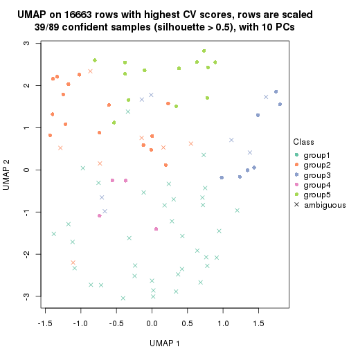
dimension_reduction(res, k = 6, method = "UMAP")
Following heatmap shows how subgroups are split when increasing k:
collect_classes(res)
Test correlation between subgroups and known annotations. If the known annotation is numeric, one-way ANOVA test is applied, and if the known annotation is discrete, chi-squared contingency table test is applied.
test_to_known_factors(res)
#> n protocol(p) k
#> CV:kmeans 79 0.712 2
#> CV:kmeans 69 0.910 3
#> CV:kmeans 46 0.623 4
#> CV:kmeans 39 0.678 5
#> CV:kmeans 51 0.507 6
If matrix rows can be associated to genes, consider to use functional_enrichment(res,
...) to perform function enrichment for the signature genes. See this vignette for more detailed explanations.
The object with results only for a single top-value method and a single partition method can be extracted as:
res = res_list["CV", "skmeans"]
# you can also extract it by
# res = res_list["CV:skmeans"]
A summary of res and all the functions that can be applied to it:
res
#> A 'ConsensusPartition' object with k = 2, 3, 4, 5, 6.
#> On a matrix with 16663 rows and 89 columns.
#> Top rows (1000, 2000, 3000, 4000, 5000) are extracted by 'CV' method.
#> Subgroups are detected by 'skmeans' method.
#> Performed in total 1250 partitions by row resampling.
#> Best k for subgroups seems to be 2.
#>
#> Following methods can be applied to this 'ConsensusPartition' object:
#> [1] "cola_report" "collect_classes" "collect_plots"
#> [4] "collect_stats" "colnames" "compare_signatures"
#> [7] "consensus_heatmap" "dimension_reduction" "functional_enrichment"
#> [10] "get_anno_col" "get_anno" "get_classes"
#> [13] "get_consensus" "get_matrix" "get_membership"
#> [16] "get_param" "get_signatures" "get_stats"
#> [19] "is_best_k" "is_stable_k" "membership_heatmap"
#> [22] "ncol" "nrow" "plot_ecdf"
#> [25] "rownames" "select_partition_number" "show"
#> [28] "suggest_best_k" "test_to_known_factors"
collect_plots() function collects all the plots made from res for all k (number of partitions)
into one single page to provide an easy and fast comparison between different k.
collect_plots(res)
The plots are:
k and the heatmap of
predicted classes for each k.k.k.k.All the plots in panels can be made by individual functions and they are plotted later in this section.
select_partition_number() produces several plots showing different
statistics for choosing “optimized” k. There are following statistics:
k;k, the area increased is defined as \(A_k - A_{k-1}\).The detailed explanations of these statistics can be found in the cola vignette.
Generally speaking, lower PAC score, higher mean silhouette score or higher
concordance corresponds to better partition. Rand index and Jaccard index
measure how similar the current partition is compared to partition with k-1.
If they are too similar, we won't accept k is better than k-1.
select_partition_number(res)
The numeric values for all these statistics can be obtained by get_stats().
get_stats(res)
#> k 1-PAC mean_silhouette concordance area_increased Rand Jaccard
#> 2 2 0.824 0.877 0.953 0.5034 0.502 0.502
#> 3 3 0.751 0.731 0.876 0.2757 0.851 0.714
#> 4 4 0.650 0.732 0.832 0.1344 0.847 0.628
#> 5 5 0.684 0.742 0.818 0.0742 0.925 0.743
#> 6 6 0.713 0.668 0.808 0.0520 0.931 0.713
suggest_best_k() suggests the best \(k\) based on these statistics. The rules are as follows:
suggest_best_k(res)
#> [1] 2
Following shows the table of the partitions (You need to click the show/hide
code output link to see it). The membership matrix (columns with name p*)
is inferred by
clue::cl_consensus()
function with the SE method. Basically the value in the membership matrix
represents the probability to belong to a certain group. The finall class
label for an item is determined with the group with highest probability it
belongs to.
In get_classes() function, the entropy is calculated from the membership
matrix and the silhouette score is calculated from the consensus matrix.
cbind(get_classes(res, k = 2), get_membership(res, k = 2))
#> class entropy silhouette p1 p2
#> GSM78921 1 0.000 0.925 1.000 0.000
#> GSM78922 1 0.000 0.925 1.000 0.000
#> GSM78923 2 0.000 0.976 0.000 1.000
#> GSM78924 2 0.000 0.976 0.000 1.000
#> GSM78925 2 0.000 0.976 0.000 1.000
#> GSM78926 1 0.000 0.925 1.000 0.000
#> GSM78927 1 0.000 0.925 1.000 0.000
#> GSM78928 2 0.000 0.976 0.000 1.000
#> GSM78929 2 0.000 0.976 0.000 1.000
#> GSM78930 1 0.975 0.353 0.592 0.408
#> GSM78931 1 0.971 0.371 0.600 0.400
#> GSM78932 2 0.000 0.976 0.000 1.000
#> GSM78933 1 0.000 0.925 1.000 0.000
#> GSM78934 2 0.000 0.976 0.000 1.000
#> GSM78935 1 0.000 0.925 1.000 0.000
#> GSM78936 1 0.000 0.925 1.000 0.000
#> GSM78937 1 0.000 0.925 1.000 0.000
#> GSM78938 1 0.000 0.925 1.000 0.000
#> GSM78939 1 0.000 0.925 1.000 0.000
#> GSM78940 2 0.971 0.262 0.400 0.600
#> GSM78941 2 0.000 0.976 0.000 1.000
#> GSM78942 1 0.998 0.157 0.524 0.476
#> GSM78943 1 0.000 0.925 1.000 0.000
#> GSM78944 1 0.971 0.346 0.600 0.400
#> GSM78945 1 0.000 0.925 1.000 0.000
#> GSM78946 1 0.000 0.925 1.000 0.000
#> GSM78947 2 0.000 0.976 0.000 1.000
#> GSM78948 1 0.000 0.925 1.000 0.000
#> GSM78949 1 0.971 0.346 0.600 0.400
#> GSM78950 1 0.000 0.925 1.000 0.000
#> GSM78951 1 0.975 0.353 0.592 0.408
#> GSM78952 2 0.000 0.976 0.000 1.000
#> GSM78953 2 0.000 0.976 0.000 1.000
#> GSM78954 2 0.000 0.976 0.000 1.000
#> GSM78955 2 0.000 0.976 0.000 1.000
#> GSM78956 2 0.000 0.976 0.000 1.000
#> GSM78957 2 0.000 0.976 0.000 1.000
#> GSM78958 1 0.000 0.925 1.000 0.000
#> GSM78959 1 0.000 0.925 1.000 0.000
#> GSM78960 2 0.000 0.976 0.000 1.000
#> GSM78961 2 0.000 0.976 0.000 1.000
#> GSM78962 1 0.000 0.925 1.000 0.000
#> GSM78963 2 0.000 0.976 0.000 1.000
#> GSM78964 2 0.000 0.976 0.000 1.000
#> GSM78965 2 0.000 0.976 0.000 1.000
#> GSM78966 1 0.000 0.925 1.000 0.000
#> GSM78967 1 0.000 0.925 1.000 0.000
#> GSM78879 1 0.000 0.925 1.000 0.000
#> GSM78880 1 0.000 0.925 1.000 0.000
#> GSM78881 1 0.000 0.925 1.000 0.000
#> GSM78882 1 0.000 0.925 1.000 0.000
#> GSM78883 1 0.000 0.925 1.000 0.000
#> GSM78884 1 0.000 0.925 1.000 0.000
#> GSM78885 1 0.000 0.925 1.000 0.000
#> GSM78886 2 0.000 0.976 0.000 1.000
#> GSM78887 1 0.000 0.925 1.000 0.000
#> GSM78888 1 0.000 0.925 1.000 0.000
#> GSM78889 2 0.000 0.976 0.000 1.000
#> GSM78890 2 0.000 0.976 0.000 1.000
#> GSM78891 1 0.000 0.925 1.000 0.000
#> GSM78892 2 0.000 0.976 0.000 1.000
#> GSM78893 2 0.000 0.976 0.000 1.000
#> GSM78894 1 0.000 0.925 1.000 0.000
#> GSM78895 2 0.000 0.976 0.000 1.000
#> GSM78896 1 0.000 0.925 1.000 0.000
#> GSM78897 2 0.000 0.976 0.000 1.000
#> GSM78898 1 0.971 0.346 0.600 0.400
#> GSM78899 1 0.000 0.925 1.000 0.000
#> GSM78900 1 0.469 0.838 0.900 0.100
#> GSM78901 1 0.000 0.925 1.000 0.000
#> GSM78902 2 0.971 0.243 0.400 0.600
#> GSM78903 2 0.000 0.976 0.000 1.000
#> GSM78904 2 0.000 0.976 0.000 1.000
#> GSM78905 2 0.000 0.976 0.000 1.000
#> GSM78906 2 0.000 0.976 0.000 1.000
#> GSM78907 1 0.000 0.925 1.000 0.000
#> GSM78908 1 0.000 0.925 1.000 0.000
#> GSM78909 2 0.000 0.976 0.000 1.000
#> GSM78910 1 0.000 0.925 1.000 0.000
#> GSM78911 2 0.000 0.976 0.000 1.000
#> GSM78912 1 0.000 0.925 1.000 0.000
#> GSM78913 2 0.000 0.976 0.000 1.000
#> GSM78914 1 0.975 0.353 0.592 0.408
#> GSM78915 2 0.000 0.976 0.000 1.000
#> GSM78916 2 0.000 0.976 0.000 1.000
#> GSM78917 1 0.000 0.925 1.000 0.000
#> GSM78918 1 0.000 0.925 1.000 0.000
#> GSM78919 1 0.000 0.925 1.000 0.000
#> GSM78920 2 0.000 0.976 0.000 1.000
cbind(get_classes(res, k = 3), get_membership(res, k = 3))
#> class entropy silhouette p1 p2 p3
#> GSM78921 1 0.0000 0.906 1.000 0.000 0.000
#> GSM78922 1 0.0000 0.906 1.000 0.000 0.000
#> GSM78923 2 0.6026 0.781 0.000 0.624 0.376
#> GSM78924 2 0.0592 0.504 0.000 0.988 0.012
#> GSM78925 2 0.1411 0.435 0.000 0.964 0.036
#> GSM78926 1 0.0000 0.906 1.000 0.000 0.000
#> GSM78927 1 0.0000 0.906 1.000 0.000 0.000
#> GSM78928 2 0.6252 0.731 0.000 0.556 0.444
#> GSM78929 2 0.6026 0.781 0.000 0.624 0.376
#> GSM78930 3 0.7824 0.929 0.060 0.376 0.564
#> GSM78931 2 0.9952 -0.624 0.332 0.376 0.292
#> GSM78932 2 0.1411 0.435 0.000 0.964 0.036
#> GSM78933 1 0.0000 0.906 1.000 0.000 0.000
#> GSM78934 2 0.6026 0.781 0.000 0.624 0.376
#> GSM78935 1 0.0000 0.906 1.000 0.000 0.000
#> GSM78936 1 0.0000 0.906 1.000 0.000 0.000
#> GSM78937 1 0.6291 0.202 0.532 0.000 0.468
#> GSM78938 1 0.2261 0.869 0.932 0.000 0.068
#> GSM78939 1 0.0000 0.906 1.000 0.000 0.000
#> GSM78940 2 0.6026 0.781 0.000 0.624 0.376
#> GSM78941 2 0.6026 0.781 0.000 0.624 0.376
#> GSM78942 3 0.7982 0.925 0.068 0.376 0.556
#> GSM78943 1 0.0000 0.906 1.000 0.000 0.000
#> GSM78944 1 0.7786 0.432 0.600 0.332 0.068
#> GSM78945 1 0.2261 0.869 0.932 0.000 0.068
#> GSM78946 1 0.0000 0.906 1.000 0.000 0.000
#> GSM78947 2 0.1529 0.428 0.000 0.960 0.040
#> GSM78948 1 0.0000 0.906 1.000 0.000 0.000
#> GSM78949 1 0.7670 0.475 0.620 0.312 0.068
#> GSM78950 1 0.0000 0.906 1.000 0.000 0.000
#> GSM78951 3 0.7824 0.929 0.060 0.376 0.564
#> GSM78952 2 0.6026 0.781 0.000 0.624 0.376
#> GSM78953 2 0.0592 0.505 0.000 0.988 0.012
#> GSM78954 2 0.5178 -0.230 0.000 0.744 0.256
#> GSM78955 2 0.6045 0.779 0.000 0.620 0.380
#> GSM78956 2 0.6026 0.781 0.000 0.624 0.376
#> GSM78957 2 0.6026 0.781 0.000 0.624 0.376
#> GSM78958 1 0.1289 0.887 0.968 0.000 0.032
#> GSM78959 1 0.0000 0.906 1.000 0.000 0.000
#> GSM78960 3 0.6244 0.899 0.000 0.440 0.560
#> GSM78961 3 0.6252 0.896 0.000 0.444 0.556
#> GSM78962 1 0.3879 0.790 0.848 0.000 0.152
#> GSM78963 2 0.0000 0.490 0.000 1.000 0.000
#> GSM78964 2 0.0000 0.490 0.000 1.000 0.000
#> GSM78965 3 0.6244 0.899 0.000 0.440 0.560
#> GSM78966 1 0.0000 0.906 1.000 0.000 0.000
#> GSM78967 1 0.0000 0.906 1.000 0.000 0.000
#> GSM78879 1 0.0000 0.906 1.000 0.000 0.000
#> GSM78880 1 0.0000 0.906 1.000 0.000 0.000
#> GSM78881 1 0.0000 0.906 1.000 0.000 0.000
#> GSM78882 1 0.0000 0.906 1.000 0.000 0.000
#> GSM78883 1 0.0237 0.904 0.996 0.000 0.004
#> GSM78884 1 0.0000 0.906 1.000 0.000 0.000
#> GSM78885 1 0.0000 0.906 1.000 0.000 0.000
#> GSM78886 2 0.6079 0.774 0.000 0.612 0.388
#> GSM78887 1 0.0000 0.906 1.000 0.000 0.000
#> GSM78888 1 0.0000 0.906 1.000 0.000 0.000
#> GSM78889 2 0.6026 0.781 0.000 0.624 0.376
#> GSM78890 2 0.5363 -0.196 0.000 0.724 0.276
#> GSM78891 1 0.2261 0.869 0.932 0.000 0.068
#> GSM78892 2 0.6026 0.781 0.000 0.624 0.376
#> GSM78893 2 0.6244 0.736 0.000 0.560 0.440
#> GSM78894 1 0.2261 0.869 0.932 0.000 0.068
#> GSM78895 2 0.6026 0.781 0.000 0.624 0.376
#> GSM78896 1 0.5291 0.625 0.732 0.000 0.268
#> GSM78897 2 0.1643 0.420 0.000 0.956 0.044
#> GSM78898 1 0.7940 0.421 0.592 0.332 0.076
#> GSM78899 1 0.0000 0.906 1.000 0.000 0.000
#> GSM78900 3 0.7770 0.929 0.056 0.384 0.560
#> GSM78901 1 0.6869 0.366 0.560 0.016 0.424
#> GSM78902 3 0.6026 0.893 0.000 0.376 0.624
#> GSM78903 2 0.6026 0.781 0.000 0.624 0.376
#> GSM78904 2 0.6026 0.781 0.000 0.624 0.376
#> GSM78905 2 0.4887 -0.135 0.000 0.772 0.228
#> GSM78906 2 0.6026 0.781 0.000 0.624 0.376
#> GSM78907 3 0.9220 0.803 0.156 0.376 0.468
#> GSM78908 3 0.7982 0.925 0.068 0.376 0.556
#> GSM78909 2 0.6026 0.781 0.000 0.624 0.376
#> GSM78910 1 0.0000 0.906 1.000 0.000 0.000
#> GSM78911 2 0.6026 0.781 0.000 0.624 0.376
#> GSM78912 1 0.5882 0.520 0.652 0.000 0.348
#> GSM78913 2 0.0592 0.473 0.000 0.988 0.012
#> GSM78914 3 0.7905 0.927 0.064 0.376 0.560
#> GSM78915 3 0.6308 0.834 0.000 0.492 0.508
#> GSM78916 2 0.6095 0.772 0.000 0.608 0.392
#> GSM78917 1 0.0000 0.906 1.000 0.000 0.000
#> GSM78918 1 0.5529 0.663 0.704 0.000 0.296
#> GSM78919 1 0.3340 0.842 0.880 0.000 0.120
#> GSM78920 2 0.6026 0.781 0.000 0.624 0.376
cbind(get_classes(res, k = 4), get_membership(res, k = 4))
#> class entropy silhouette p1 p2 p3 p4
#> GSM78921 1 0.3172 0.7934 0.840 0.000 0.000 0.160
#> GSM78922 1 0.3172 0.7888 0.840 0.000 0.000 0.160
#> GSM78923 2 0.2011 0.8272 0.000 0.920 0.000 0.080
#> GSM78924 2 0.4158 0.6908 0.000 0.768 0.224 0.008
#> GSM78925 2 0.4804 0.6232 0.000 0.708 0.276 0.016
#> GSM78926 1 0.0188 0.8413 0.996 0.000 0.000 0.004
#> GSM78927 1 0.0188 0.8405 0.996 0.000 0.000 0.004
#> GSM78928 2 0.4114 0.7903 0.000 0.828 0.060 0.112
#> GSM78929 2 0.0336 0.8328 0.000 0.992 0.000 0.008
#> GSM78930 3 0.0469 0.7830 0.012 0.000 0.988 0.000
#> GSM78931 1 0.5461 0.6645 0.764 0.024 0.144 0.068
#> GSM78932 2 0.4936 0.5341 0.000 0.652 0.340 0.008
#> GSM78933 1 0.2408 0.8265 0.896 0.000 0.000 0.104
#> GSM78934 2 0.2799 0.8200 0.000 0.884 0.008 0.108
#> GSM78935 1 0.1716 0.8409 0.936 0.000 0.000 0.064
#> GSM78936 1 0.2255 0.8138 0.920 0.000 0.012 0.068
#> GSM78937 3 0.7771 -0.0941 0.348 0.000 0.408 0.244
#> GSM78938 4 0.3494 0.8664 0.172 0.000 0.004 0.824
#> GSM78939 1 0.0000 0.8409 1.000 0.000 0.000 0.000
#> GSM78940 2 0.3272 0.8117 0.004 0.860 0.008 0.128
#> GSM78941 2 0.2704 0.8163 0.000 0.876 0.000 0.124
#> GSM78942 3 0.3691 0.7091 0.068 0.000 0.856 0.076
#> GSM78943 1 0.3172 0.7888 0.840 0.000 0.000 0.160
#> GSM78944 4 0.4008 0.8681 0.148 0.032 0.000 0.820
#> GSM78945 4 0.3528 0.8545 0.192 0.000 0.000 0.808
#> GSM78946 1 0.2011 0.8364 0.920 0.000 0.000 0.080
#> GSM78947 2 0.5125 0.4263 0.000 0.604 0.388 0.008
#> GSM78948 1 0.2408 0.8244 0.896 0.000 0.000 0.104
#> GSM78949 4 0.3743 0.8705 0.160 0.016 0.000 0.824
#> GSM78950 1 0.2760 0.7738 0.872 0.000 0.000 0.128
#> GSM78951 3 0.0524 0.7828 0.008 0.000 0.988 0.004
#> GSM78952 2 0.0336 0.8328 0.000 0.992 0.000 0.008
#> GSM78953 2 0.3852 0.7193 0.000 0.800 0.192 0.008
#> GSM78954 3 0.4647 0.4330 0.000 0.288 0.704 0.008
#> GSM78955 2 0.1722 0.8279 0.000 0.944 0.008 0.048
#> GSM78956 2 0.2589 0.8189 0.000 0.884 0.000 0.116
#> GSM78957 2 0.2589 0.8189 0.000 0.884 0.000 0.116
#> GSM78958 1 0.2699 0.8058 0.904 0.000 0.028 0.068
#> GSM78959 1 0.1557 0.8411 0.944 0.000 0.000 0.056
#> GSM78960 3 0.0524 0.7812 0.000 0.008 0.988 0.004
#> GSM78961 3 0.1211 0.7736 0.000 0.000 0.960 0.040
#> GSM78962 1 0.6886 0.5751 0.596 0.000 0.204 0.200
#> GSM78963 2 0.4295 0.6747 0.000 0.752 0.240 0.008
#> GSM78964 2 0.4295 0.6747 0.000 0.752 0.240 0.008
#> GSM78965 3 0.0804 0.7790 0.000 0.012 0.980 0.008
#> GSM78966 1 0.4585 0.5454 0.668 0.000 0.000 0.332
#> GSM78967 1 0.4605 0.5370 0.664 0.000 0.000 0.336
#> GSM78879 1 0.1022 0.8436 0.968 0.000 0.000 0.032
#> GSM78880 1 0.3123 0.7921 0.844 0.000 0.000 0.156
#> GSM78881 1 0.0376 0.8400 0.992 0.004 0.000 0.004
#> GSM78882 1 0.1022 0.8436 0.968 0.000 0.000 0.032
#> GSM78883 1 0.2521 0.8082 0.912 0.000 0.024 0.064
#> GSM78884 1 0.1792 0.8207 0.932 0.000 0.000 0.068
#> GSM78885 1 0.0672 0.8386 0.984 0.000 0.008 0.008
#> GSM78886 2 0.2814 0.8136 0.000 0.868 0.000 0.132
#> GSM78887 1 0.3591 0.7280 0.824 0.000 0.008 0.168
#> GSM78888 1 0.1022 0.8436 0.968 0.000 0.000 0.032
#> GSM78889 2 0.0672 0.8313 0.000 0.984 0.008 0.008
#> GSM78890 4 0.6074 0.4378 0.000 0.104 0.228 0.668
#> GSM78891 4 0.3444 0.8614 0.184 0.000 0.000 0.816
#> GSM78892 2 0.0000 0.8337 0.000 1.000 0.000 0.000
#> GSM78893 2 0.4866 0.4244 0.000 0.596 0.000 0.404
#> GSM78894 4 0.3610 0.8467 0.200 0.000 0.000 0.800
#> GSM78895 2 0.0000 0.8337 0.000 1.000 0.000 0.000
#> GSM78896 1 0.6816 0.5878 0.604 0.000 0.212 0.184
#> GSM78897 2 0.5213 0.5430 0.000 0.652 0.328 0.020
#> GSM78898 4 0.4574 0.8556 0.136 0.044 0.012 0.808
#> GSM78899 1 0.1792 0.8207 0.932 0.000 0.000 0.068
#> GSM78900 3 0.0188 0.7820 0.000 0.000 0.996 0.004
#> GSM78901 4 0.5742 0.6241 0.120 0.168 0.000 0.712
#> GSM78902 3 0.0592 0.7793 0.000 0.000 0.984 0.016
#> GSM78903 2 0.0000 0.8337 0.000 1.000 0.000 0.000
#> GSM78904 2 0.0844 0.8318 0.004 0.980 0.012 0.004
#> GSM78905 3 0.5560 0.1253 0.000 0.392 0.584 0.024
#> GSM78906 2 0.0000 0.8337 0.000 1.000 0.000 0.000
#> GSM78907 3 0.4843 0.6532 0.112 0.000 0.784 0.104
#> GSM78908 3 0.4022 0.6850 0.096 0.000 0.836 0.068
#> GSM78909 2 0.2589 0.8189 0.000 0.884 0.000 0.116
#> GSM78910 1 0.4585 0.5454 0.668 0.000 0.000 0.332
#> GSM78911 2 0.2589 0.8189 0.000 0.884 0.000 0.116
#> GSM78912 3 0.7711 -0.0445 0.340 0.000 0.428 0.232
#> GSM78913 2 0.4360 0.6654 0.000 0.744 0.248 0.008
#> GSM78914 3 0.0657 0.7832 0.012 0.000 0.984 0.004
#> GSM78915 3 0.2799 0.7185 0.000 0.108 0.884 0.008
#> GSM78916 2 0.3486 0.7767 0.000 0.812 0.000 0.188
#> GSM78917 1 0.4040 0.6899 0.752 0.000 0.000 0.248
#> GSM78918 4 0.1743 0.7956 0.056 0.000 0.004 0.940
#> GSM78919 4 0.3528 0.8545 0.192 0.000 0.000 0.808
#> GSM78920 2 0.0188 0.8336 0.000 0.996 0.004 0.000
cbind(get_classes(res, k = 5), get_membership(res, k = 5))
#> class entropy silhouette p1 p2 p3 p4 p5
#> GSM78921 1 0.2798 0.8019 0.852 0.000 0.008 0.140 0.000
#> GSM78922 1 0.2674 0.7929 0.856 0.000 0.004 0.140 0.000
#> GSM78923 2 0.3684 0.7922 0.000 0.720 0.000 0.000 0.280
#> GSM78924 5 0.0404 0.7926 0.000 0.012 0.000 0.000 0.988
#> GSM78925 5 0.0671 0.7841 0.000 0.004 0.016 0.000 0.980
#> GSM78926 1 0.0000 0.8257 1.000 0.000 0.000 0.000 0.000
#> GSM78927 1 0.1202 0.8236 0.960 0.032 0.004 0.004 0.000
#> GSM78928 2 0.3328 0.9249 0.000 0.812 0.004 0.008 0.176
#> GSM78929 5 0.2179 0.7709 0.000 0.112 0.000 0.000 0.888
#> GSM78930 3 0.2463 0.8151 0.000 0.004 0.888 0.008 0.100
#> GSM78931 1 0.6098 0.6377 0.684 0.020 0.176 0.060 0.060
#> GSM78932 5 0.0960 0.7894 0.000 0.008 0.016 0.004 0.972
#> GSM78933 1 0.3481 0.8141 0.840 0.056 0.004 0.100 0.000
#> GSM78934 2 0.2516 0.9279 0.000 0.860 0.000 0.000 0.140
#> GSM78935 1 0.2694 0.8240 0.888 0.032 0.004 0.076 0.000
#> GSM78936 1 0.6253 0.6748 0.664 0.164 0.088 0.080 0.004
#> GSM78937 3 0.8147 0.0480 0.304 0.104 0.384 0.204 0.004
#> GSM78938 4 0.1732 0.9056 0.080 0.000 0.000 0.920 0.000
#> GSM78939 1 0.1168 0.8239 0.960 0.032 0.008 0.000 0.000
#> GSM78940 2 0.2629 0.9269 0.000 0.860 0.000 0.004 0.136
#> GSM78941 2 0.3266 0.9111 0.000 0.796 0.000 0.004 0.200
#> GSM78942 3 0.2451 0.7473 0.000 0.036 0.904 0.056 0.004
#> GSM78943 1 0.3088 0.7804 0.828 0.004 0.004 0.164 0.000
#> GSM78944 4 0.2162 0.9063 0.064 0.008 0.000 0.916 0.012
#> GSM78945 4 0.1608 0.9042 0.072 0.000 0.000 0.928 0.000
#> GSM78946 1 0.2491 0.8257 0.896 0.036 0.000 0.068 0.000
#> GSM78947 5 0.0451 0.7906 0.000 0.004 0.008 0.000 0.988
#> GSM78948 1 0.2511 0.8211 0.892 0.016 0.004 0.088 0.000
#> GSM78949 4 0.2102 0.9077 0.068 0.012 0.000 0.916 0.004
#> GSM78950 1 0.3510 0.7615 0.832 0.128 0.032 0.008 0.000
#> GSM78951 3 0.2228 0.8156 0.000 0.004 0.900 0.004 0.092
#> GSM78952 5 0.2127 0.7725 0.000 0.108 0.000 0.000 0.892
#> GSM78953 5 0.1282 0.7913 0.000 0.044 0.004 0.000 0.952
#> GSM78954 5 0.4561 -0.1645 0.000 0.008 0.488 0.000 0.504
#> GSM78955 5 0.5542 -0.0733 0.000 0.448 0.008 0.048 0.496
#> GSM78956 2 0.2690 0.9347 0.000 0.844 0.000 0.000 0.156
#> GSM78957 2 0.2648 0.9348 0.000 0.848 0.000 0.000 0.152
#> GSM78958 1 0.6125 0.6904 0.680 0.140 0.100 0.076 0.004
#> GSM78959 1 0.1430 0.8267 0.944 0.004 0.000 0.052 0.000
#> GSM78960 3 0.2074 0.8143 0.000 0.000 0.896 0.000 0.104
#> GSM78961 3 0.2618 0.7993 0.000 0.036 0.900 0.012 0.052
#> GSM78962 1 0.6215 0.5610 0.576 0.012 0.272 0.140 0.000
#> GSM78963 5 0.0290 0.7899 0.000 0.000 0.008 0.000 0.992
#> GSM78964 5 0.0324 0.7915 0.000 0.004 0.004 0.000 0.992
#> GSM78965 3 0.2929 0.7655 0.000 0.000 0.820 0.000 0.180
#> GSM78966 1 0.4081 0.6241 0.696 0.004 0.004 0.296 0.000
#> GSM78967 1 0.4270 0.5881 0.656 0.004 0.004 0.336 0.000
#> GSM78879 1 0.0290 0.8269 0.992 0.000 0.000 0.008 0.000
#> GSM78880 1 0.2233 0.8096 0.892 0.004 0.000 0.104 0.000
#> GSM78881 1 0.1787 0.8209 0.936 0.044 0.004 0.016 0.000
#> GSM78882 1 0.0324 0.8262 0.992 0.000 0.004 0.004 0.000
#> GSM78883 1 0.3287 0.7939 0.864 0.016 0.068 0.052 0.000
#> GSM78884 1 0.2214 0.8052 0.916 0.004 0.028 0.052 0.000
#> GSM78885 1 0.3250 0.7822 0.844 0.128 0.008 0.020 0.000
#> GSM78886 2 0.2929 0.9352 0.000 0.840 0.000 0.008 0.152
#> GSM78887 1 0.6584 0.5159 0.568 0.284 0.092 0.056 0.000
#> GSM78888 1 0.1202 0.8287 0.960 0.004 0.004 0.032 0.000
#> GSM78889 5 0.2488 0.7701 0.000 0.124 0.004 0.000 0.872
#> GSM78890 4 0.4294 0.7022 0.000 0.008 0.064 0.780 0.148
#> GSM78891 4 0.1671 0.9060 0.076 0.000 0.000 0.924 0.000
#> GSM78892 5 0.3048 0.7358 0.000 0.176 0.000 0.004 0.820
#> GSM78893 2 0.3238 0.7728 0.000 0.836 0.000 0.136 0.028
#> GSM78894 4 0.2179 0.8958 0.100 0.004 0.000 0.896 0.000
#> GSM78895 5 0.3039 0.7131 0.000 0.192 0.000 0.000 0.808
#> GSM78896 1 0.5996 0.1971 0.468 0.004 0.432 0.096 0.000
#> GSM78897 5 0.3277 0.7071 0.000 0.148 0.008 0.012 0.832
#> GSM78898 4 0.2322 0.9054 0.064 0.008 0.004 0.912 0.012
#> GSM78899 1 0.3012 0.7959 0.876 0.008 0.060 0.056 0.000
#> GSM78900 3 0.1341 0.8102 0.000 0.000 0.944 0.000 0.056
#> GSM78901 4 0.5640 0.4870 0.104 0.304 0.000 0.592 0.000
#> GSM78902 3 0.2339 0.8153 0.000 0.004 0.892 0.004 0.100
#> GSM78903 5 0.3039 0.7141 0.000 0.192 0.000 0.000 0.808
#> GSM78904 5 0.4856 0.5361 0.000 0.392 0.004 0.020 0.584
#> GSM78905 5 0.4299 0.3773 0.000 0.008 0.316 0.004 0.672
#> GSM78906 5 0.3039 0.7131 0.000 0.192 0.000 0.000 0.808
#> GSM78907 3 0.5263 0.7270 0.012 0.148 0.744 0.044 0.052
#> GSM78908 3 0.3081 0.7405 0.000 0.072 0.868 0.056 0.004
#> GSM78909 2 0.2929 0.9280 0.000 0.820 0.000 0.000 0.180
#> GSM78910 1 0.4102 0.6287 0.692 0.004 0.004 0.300 0.000
#> GSM78911 2 0.3205 0.9272 0.000 0.816 0.004 0.004 0.176
#> GSM78912 3 0.6541 0.2100 0.276 0.012 0.532 0.180 0.000
#> GSM78913 5 0.0290 0.7899 0.000 0.000 0.008 0.000 0.992
#> GSM78914 3 0.2020 0.8150 0.000 0.000 0.900 0.000 0.100
#> GSM78915 3 0.3966 0.5448 0.000 0.000 0.664 0.000 0.336
#> GSM78916 2 0.3152 0.9252 0.000 0.840 0.000 0.024 0.136
#> GSM78917 1 0.2763 0.7878 0.848 0.004 0.000 0.148 0.000
#> GSM78918 4 0.2517 0.8328 0.008 0.104 0.004 0.884 0.000
#> GSM78919 4 0.1830 0.8987 0.068 0.008 0.000 0.924 0.000
#> GSM78920 5 0.4063 0.6839 0.000 0.280 0.000 0.012 0.708
cbind(get_classes(res, k = 6), get_membership(res, k = 6))
#> class entropy silhouette p1 p2 p3 p4 p5 p6
#> GSM78921 1 0.3747 0.6587 0.784 0.000 0.000 0.104 0.000 0.112
#> GSM78922 1 0.3637 0.6615 0.780 0.000 0.000 0.056 0.000 0.164
#> GSM78923 2 0.3244 0.6609 0.000 0.732 0.000 0.000 0.268 0.000
#> GSM78924 5 0.0291 0.8428 0.000 0.000 0.004 0.004 0.992 0.000
#> GSM78925 5 0.0935 0.8355 0.000 0.000 0.032 0.004 0.964 0.000
#> GSM78926 1 0.2100 0.6773 0.884 0.000 0.000 0.112 0.000 0.004
#> GSM78927 1 0.2994 0.6344 0.788 0.000 0.000 0.208 0.000 0.004
#> GSM78928 2 0.2742 0.8996 0.000 0.880 0.020 0.016 0.076 0.008
#> GSM78929 5 0.0935 0.8482 0.000 0.032 0.000 0.004 0.964 0.000
#> GSM78930 3 0.0551 0.7393 0.000 0.004 0.984 0.008 0.004 0.000
#> GSM78931 4 0.4505 0.2672 0.356 0.000 0.008 0.612 0.020 0.004
#> GSM78932 5 0.0806 0.8438 0.000 0.008 0.000 0.020 0.972 0.000
#> GSM78933 1 0.4079 0.6718 0.752 0.000 0.000 0.136 0.000 0.112
#> GSM78934 2 0.1297 0.9152 0.000 0.948 0.000 0.012 0.040 0.000
#> GSM78935 1 0.3307 0.6989 0.820 0.000 0.000 0.108 0.000 0.072
#> GSM78936 4 0.4111 0.5232 0.148 0.036 0.008 0.784 0.016 0.008
#> GSM78937 1 0.7634 -0.0753 0.336 0.004 0.216 0.288 0.000 0.156
#> GSM78938 6 0.1599 0.8741 0.028 0.008 0.000 0.024 0.000 0.940
#> GSM78939 1 0.2902 0.6430 0.800 0.000 0.000 0.196 0.000 0.004
#> GSM78940 2 0.0862 0.9171 0.000 0.972 0.000 0.008 0.016 0.004
#> GSM78941 2 0.1957 0.8914 0.000 0.888 0.000 0.000 0.112 0.000
#> GSM78942 4 0.4780 0.1703 0.000 0.040 0.472 0.484 0.004 0.000
#> GSM78943 1 0.3744 0.6525 0.764 0.000 0.000 0.052 0.000 0.184
#> GSM78944 6 0.0964 0.8843 0.016 0.004 0.000 0.012 0.000 0.968
#> GSM78945 6 0.0858 0.8778 0.028 0.000 0.000 0.004 0.000 0.968
#> GSM78946 1 0.3307 0.7040 0.820 0.000 0.000 0.108 0.000 0.072
#> GSM78947 5 0.1075 0.8293 0.000 0.000 0.048 0.000 0.952 0.000
#> GSM78948 1 0.3072 0.7044 0.840 0.000 0.000 0.076 0.000 0.084
#> GSM78949 6 0.0862 0.8846 0.016 0.004 0.000 0.008 0.000 0.972
#> GSM78950 1 0.4233 0.5787 0.752 0.100 0.000 0.140 0.000 0.008
#> GSM78951 3 0.0436 0.7392 0.000 0.004 0.988 0.004 0.004 0.000
#> GSM78952 5 0.0790 0.8478 0.000 0.032 0.000 0.000 0.968 0.000
#> GSM78953 5 0.0547 0.8474 0.000 0.020 0.000 0.000 0.980 0.000
#> GSM78954 3 0.4264 0.4716 0.000 0.008 0.604 0.012 0.376 0.000
#> GSM78955 5 0.6024 0.0955 0.000 0.408 0.020 0.016 0.468 0.088
#> GSM78956 2 0.0858 0.9227 0.000 0.968 0.000 0.004 0.028 0.000
#> GSM78957 2 0.1261 0.9171 0.000 0.952 0.000 0.024 0.024 0.000
#> GSM78958 4 0.2320 0.5476 0.132 0.000 0.004 0.864 0.000 0.000
#> GSM78959 1 0.1644 0.7126 0.932 0.000 0.000 0.028 0.000 0.040
#> GSM78960 3 0.0777 0.7404 0.000 0.004 0.972 0.000 0.024 0.000
#> GSM78961 3 0.4314 0.4282 0.000 0.068 0.716 0.212 0.004 0.000
#> GSM78962 4 0.6221 0.4219 0.348 0.000 0.148 0.472 0.000 0.032
#> GSM78963 5 0.0858 0.8376 0.000 0.000 0.028 0.004 0.968 0.000
#> GSM78964 5 0.0858 0.8376 0.000 0.000 0.028 0.004 0.968 0.000
#> GSM78965 3 0.2362 0.7073 0.000 0.004 0.860 0.000 0.136 0.000
#> GSM78966 1 0.4002 0.5980 0.704 0.000 0.000 0.036 0.000 0.260
#> GSM78967 1 0.4579 0.5335 0.644 0.000 0.004 0.052 0.000 0.300
#> GSM78879 1 0.1349 0.6965 0.940 0.000 0.000 0.056 0.000 0.004
#> GSM78880 1 0.2179 0.7083 0.900 0.000 0.000 0.036 0.000 0.064
#> GSM78881 1 0.3518 0.5929 0.732 0.000 0.000 0.256 0.000 0.012
#> GSM78882 1 0.2165 0.6825 0.884 0.000 0.000 0.108 0.000 0.008
#> GSM78883 1 0.4033 0.2944 0.588 0.000 0.004 0.404 0.000 0.004
#> GSM78884 1 0.3109 0.5938 0.772 0.000 0.000 0.224 0.000 0.004
#> GSM78885 1 0.3965 0.3851 0.604 0.000 0.000 0.388 0.000 0.008
#> GSM78886 2 0.0951 0.9208 0.000 0.968 0.000 0.008 0.020 0.004
#> GSM78887 4 0.5590 0.4958 0.216 0.188 0.004 0.588 0.000 0.004
#> GSM78888 1 0.2263 0.7106 0.896 0.000 0.000 0.056 0.000 0.048
#> GSM78889 5 0.1268 0.8468 0.000 0.036 0.000 0.008 0.952 0.004
#> GSM78890 6 0.4115 0.7187 0.000 0.004 0.132 0.020 0.064 0.780
#> GSM78891 6 0.1059 0.8828 0.016 0.004 0.000 0.016 0.000 0.964
#> GSM78892 5 0.3452 0.7739 0.000 0.176 0.000 0.024 0.792 0.008
#> GSM78893 2 0.1908 0.8721 0.000 0.916 0.000 0.028 0.000 0.056
#> GSM78894 6 0.2164 0.8517 0.060 0.012 0.000 0.020 0.000 0.908
#> GSM78895 5 0.2454 0.7934 0.000 0.160 0.000 0.000 0.840 0.000
#> GSM78896 1 0.6289 -0.1442 0.452 0.000 0.120 0.380 0.000 0.048
#> GSM78897 5 0.4391 0.6862 0.000 0.052 0.004 0.220 0.716 0.008
#> GSM78898 6 0.0820 0.8834 0.016 0.000 0.000 0.012 0.000 0.972
#> GSM78899 1 0.3930 0.2349 0.576 0.000 0.000 0.420 0.000 0.004
#> GSM78900 3 0.1908 0.6705 0.000 0.000 0.900 0.096 0.004 0.000
#> GSM78901 6 0.5701 0.5030 0.080 0.276 0.000 0.052 0.000 0.592
#> GSM78902 3 0.0582 0.7393 0.000 0.004 0.984 0.004 0.004 0.004
#> GSM78903 5 0.2838 0.7759 0.000 0.188 0.000 0.004 0.808 0.000
#> GSM78904 5 0.6493 0.3853 0.004 0.208 0.012 0.316 0.452 0.008
#> GSM78905 3 0.4628 0.2159 0.000 0.012 0.500 0.012 0.472 0.004
#> GSM78906 5 0.2597 0.7810 0.000 0.176 0.000 0.000 0.824 0.000
#> GSM78907 3 0.5455 0.4741 0.032 0.040 0.644 0.260 0.008 0.016
#> GSM78908 4 0.4083 0.2012 0.008 0.000 0.460 0.532 0.000 0.000
#> GSM78909 2 0.1556 0.9134 0.000 0.920 0.000 0.000 0.080 0.000
#> GSM78910 1 0.4249 0.5944 0.688 0.000 0.000 0.052 0.000 0.260
#> GSM78911 2 0.2122 0.9121 0.000 0.900 0.000 0.024 0.076 0.000
#> GSM78912 4 0.6642 0.5213 0.236 0.000 0.252 0.464 0.000 0.048
#> GSM78913 5 0.0858 0.8376 0.000 0.000 0.028 0.004 0.968 0.000
#> GSM78914 3 0.0291 0.7387 0.000 0.004 0.992 0.000 0.004 0.000
#> GSM78915 3 0.3521 0.6216 0.000 0.004 0.724 0.004 0.268 0.000
#> GSM78916 2 0.1275 0.9173 0.000 0.956 0.000 0.012 0.016 0.016
#> GSM78917 1 0.2263 0.7043 0.884 0.000 0.000 0.016 0.000 0.100
#> GSM78918 6 0.3424 0.7841 0.000 0.128 0.008 0.048 0.000 0.816
#> GSM78919 6 0.2278 0.8335 0.052 0.000 0.012 0.032 0.000 0.904
#> GSM78920 5 0.4694 0.7163 0.000 0.124 0.000 0.164 0.704 0.008
Heatmaps for the consensus matrix. It visualizes the probability of two samples to be in a same group.
consensus_heatmap(res, k = 2)
consensus_heatmap(res, k = 3)

consensus_heatmap(res, k = 4)
consensus_heatmap(res, k = 5)
consensus_heatmap(res, k = 6)
Heatmaps for the membership of samples in all partitions to see how consistent they are:
membership_heatmap(res, k = 2)
membership_heatmap(res, k = 3)
membership_heatmap(res, k = 4)
membership_heatmap(res, k = 5)
membership_heatmap(res, k = 6)
As soon as we have had the classes for columns, we can look for signatures which are significantly different between classes which can be candidate marks for certain classes. Following are the heatmaps for signatures.
Signature heatmaps where rows are scaled:
get_signatures(res, k = 2)
get_signatures(res, k = 3)
get_signatures(res, k = 4)
get_signatures(res, k = 5)
get_signatures(res, k = 6)
Signature heatmaps where rows are not scaled:
get_signatures(res, k = 2, scale_rows = FALSE)
get_signatures(res, k = 3, scale_rows = FALSE)
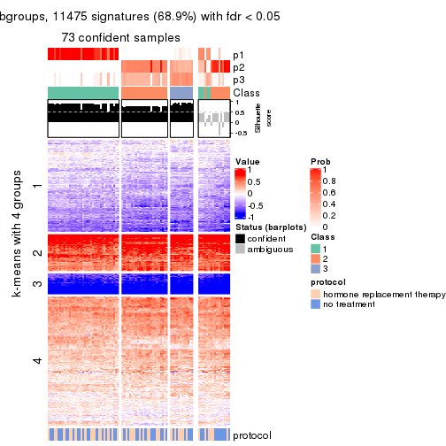
get_signatures(res, k = 4, scale_rows = FALSE)
get_signatures(res, k = 5, scale_rows = FALSE)

get_signatures(res, k = 6, scale_rows = FALSE)
Compare the overlap of signatures from different k:
compare_signatures(res)
get_signature() returns a data frame invisibly. TO get the list of signatures, the function
call should be assigned to a variable explicitly. In following code, if plot argument is set
to FALSE, no heatmap is plotted while only the differential analysis is performed.
# code only for demonstration
tb = get_signature(res, k = ..., plot = FALSE)
An example of the output of tb is:
#> which_row fdr mean_1 mean_2 scaled_mean_1 scaled_mean_2 km
#> 1 38 0.042760348 8.373488 9.131774 -0.5533452 0.5164555 1
#> 2 40 0.018707592 7.106213 8.469186 -0.6173731 0.5762149 1
#> 3 55 0.019134737 10.221463 11.207825 -0.6159697 0.5749050 1
#> 4 59 0.006059896 5.921854 7.869574 -0.6899429 0.6439467 1
#> 5 60 0.018055526 8.928898 10.211722 -0.6204761 0.5791110 1
#> 6 98 0.009384629 15.714769 14.887706 0.6635654 -0.6193277 2
...
The columns in tb are:
which_row: row indices corresponding to the input matrix.fdr: FDR for the differential test. mean_x: The mean value in group x.scaled_mean_x: The mean value in group x after rows are scaled.km: Row groups if k-means clustering is applied to rows.UMAP plot which shows how samples are separated.
dimension_reduction(res, k = 2, method = "UMAP")
dimension_reduction(res, k = 3, method = "UMAP")
dimension_reduction(res, k = 4, method = "UMAP")
dimension_reduction(res, k = 5, method = "UMAP")
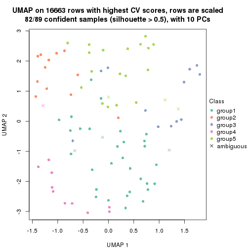
dimension_reduction(res, k = 6, method = "UMAP")
Following heatmap shows how subgroups are split when increasing k:
collect_classes(res)
Test correlation between subgroups and known annotations. If the known annotation is numeric, one-way ANOVA test is applied, and if the known annotation is discrete, chi-squared contingency table test is applied.
test_to_known_factors(res)
#> n protocol(p) k
#> CV:skmeans 79 0.730 2
#> CV:skmeans 73 0.993 3
#> CV:skmeans 82 0.781 4
#> CV:skmeans 82 0.826 5
#> CV:skmeans 73 0.772 6
If matrix rows can be associated to genes, consider to use functional_enrichment(res,
...) to perform function enrichment for the signature genes. See this vignette for more detailed explanations.
The object with results only for a single top-value method and a single partition method can be extracted as:
res = res_list["CV", "pam"]
# you can also extract it by
# res = res_list["CV:pam"]
A summary of res and all the functions that can be applied to it:
res
#> A 'ConsensusPartition' object with k = 2, 3, 4, 5, 6.
#> On a matrix with 16663 rows and 89 columns.
#> Top rows (1000, 2000, 3000, 4000, 5000) are extracted by 'CV' method.
#> Subgroups are detected by 'pam' method.
#> Performed in total 1250 partitions by row resampling.
#> Best k for subgroups seems to be 3.
#>
#> Following methods can be applied to this 'ConsensusPartition' object:
#> [1] "cola_report" "collect_classes" "collect_plots"
#> [4] "collect_stats" "colnames" "compare_signatures"
#> [7] "consensus_heatmap" "dimension_reduction" "functional_enrichment"
#> [10] "get_anno_col" "get_anno" "get_classes"
#> [13] "get_consensus" "get_matrix" "get_membership"
#> [16] "get_param" "get_signatures" "get_stats"
#> [19] "is_best_k" "is_stable_k" "membership_heatmap"
#> [22] "ncol" "nrow" "plot_ecdf"
#> [25] "rownames" "select_partition_number" "show"
#> [28] "suggest_best_k" "test_to_known_factors"
collect_plots() function collects all the plots made from res for all k (number of partitions)
into one single page to provide an easy and fast comparison between different k.
collect_plots(res)
The plots are:
k and the heatmap of
predicted classes for each k.k.k.k.All the plots in panels can be made by individual functions and they are plotted later in this section.
select_partition_number() produces several plots showing different
statistics for choosing “optimized” k. There are following statistics:
k;k, the area increased is defined as \(A_k - A_{k-1}\).The detailed explanations of these statistics can be found in the cola vignette.
Generally speaking, lower PAC score, higher mean silhouette score or higher
concordance corresponds to better partition. Rand index and Jaccard index
measure how similar the current partition is compared to partition with k-1.
If they are too similar, we won't accept k is better than k-1.
select_partition_number(res)
The numeric values for all these statistics can be obtained by get_stats().
get_stats(res)
#> k 1-PAC mean_silhouette concordance area_increased Rand Jaccard
#> 2 2 0.669 0.888 0.949 0.3534 0.674 0.674
#> 3 3 0.430 0.723 0.830 0.6479 0.732 0.602
#> 4 4 0.427 0.411 0.746 0.1719 0.834 0.635
#> 5 5 0.457 0.490 0.747 0.0998 0.859 0.615
#> 6 6 0.596 0.546 0.719 0.0667 0.842 0.470
suggest_best_k() suggests the best \(k\) based on these statistics. The rules are as follows:
suggest_best_k(res)
#> [1] 3
Following shows the table of the partitions (You need to click the show/hide
code output link to see it). The membership matrix (columns with name p*)
is inferred by
clue::cl_consensus()
function with the SE method. Basically the value in the membership matrix
represents the probability to belong to a certain group. The finall class
label for an item is determined with the group with highest probability it
belongs to.
In get_classes() function, the entropy is calculated from the membership
matrix and the silhouette score is calculated from the consensus matrix.
cbind(get_classes(res, k = 2), get_membership(res, k = 2))
#> class entropy silhouette p1 p2
#> GSM78921 1 0.0000 0.945 1.000 0.000
#> GSM78922 1 0.0000 0.945 1.000 0.000
#> GSM78923 2 0.0000 0.939 0.000 1.000
#> GSM78924 2 0.0000 0.939 0.000 1.000
#> GSM78925 1 0.7299 0.759 0.796 0.204
#> GSM78926 1 0.0000 0.945 1.000 0.000
#> GSM78927 1 0.0000 0.945 1.000 0.000
#> GSM78928 1 0.5842 0.831 0.860 0.140
#> GSM78929 2 0.0000 0.939 0.000 1.000
#> GSM78930 1 0.0000 0.945 1.000 0.000
#> GSM78931 1 0.0000 0.945 1.000 0.000
#> GSM78932 1 0.9686 0.424 0.604 0.396
#> GSM78933 1 0.0000 0.945 1.000 0.000
#> GSM78934 2 0.0672 0.935 0.008 0.992
#> GSM78935 1 0.0000 0.945 1.000 0.000
#> GSM78936 1 0.0000 0.945 1.000 0.000
#> GSM78937 1 0.0000 0.945 1.000 0.000
#> GSM78938 1 0.0000 0.945 1.000 0.000
#> GSM78939 1 0.0000 0.945 1.000 0.000
#> GSM78940 1 0.8443 0.666 0.728 0.272
#> GSM78941 2 0.3733 0.892 0.072 0.928
#> GSM78942 1 0.0000 0.945 1.000 0.000
#> GSM78943 1 0.0000 0.945 1.000 0.000
#> GSM78944 1 0.8443 0.666 0.728 0.272
#> GSM78945 1 0.0000 0.945 1.000 0.000
#> GSM78946 1 0.0000 0.945 1.000 0.000
#> GSM78947 2 0.0000 0.939 0.000 1.000
#> GSM78948 1 0.0000 0.945 1.000 0.000
#> GSM78949 1 0.0000 0.945 1.000 0.000
#> GSM78950 1 0.0000 0.945 1.000 0.000
#> GSM78951 1 0.0000 0.945 1.000 0.000
#> GSM78952 2 0.0000 0.939 0.000 1.000
#> GSM78953 2 0.5629 0.824 0.132 0.868
#> GSM78954 1 0.5737 0.835 0.864 0.136
#> GSM78955 1 0.0376 0.942 0.996 0.004
#> GSM78956 2 0.5629 0.837 0.132 0.868
#> GSM78957 2 0.5842 0.827 0.140 0.860
#> GSM78958 1 0.0000 0.945 1.000 0.000
#> GSM78959 1 0.0000 0.945 1.000 0.000
#> GSM78960 1 0.0000 0.945 1.000 0.000
#> GSM78961 1 0.0000 0.945 1.000 0.000
#> GSM78962 1 0.0000 0.945 1.000 0.000
#> GSM78963 2 0.0000 0.939 0.000 1.000
#> GSM78964 2 0.0000 0.939 0.000 1.000
#> GSM78965 1 0.0000 0.945 1.000 0.000
#> GSM78966 1 0.0000 0.945 1.000 0.000
#> GSM78967 1 0.0000 0.945 1.000 0.000
#> GSM78879 1 0.0000 0.945 1.000 0.000
#> GSM78880 1 0.0000 0.945 1.000 0.000
#> GSM78881 1 0.0000 0.945 1.000 0.000
#> GSM78882 1 0.0000 0.945 1.000 0.000
#> GSM78883 1 0.0000 0.945 1.000 0.000
#> GSM78884 1 0.0000 0.945 1.000 0.000
#> GSM78885 1 0.5519 0.837 0.872 0.128
#> GSM78886 1 0.0000 0.945 1.000 0.000
#> GSM78887 1 0.0000 0.945 1.000 0.000
#> GSM78888 1 0.0000 0.945 1.000 0.000
#> GSM78889 1 0.2236 0.918 0.964 0.036
#> GSM78890 1 0.8207 0.690 0.744 0.256
#> GSM78891 1 0.0000 0.945 1.000 0.000
#> GSM78892 1 0.9710 0.414 0.600 0.400
#> GSM78893 1 0.8443 0.666 0.728 0.272
#> GSM78894 1 0.0000 0.945 1.000 0.000
#> GSM78895 2 0.0000 0.939 0.000 1.000
#> GSM78896 1 0.0000 0.945 1.000 0.000
#> GSM78897 1 0.8443 0.666 0.728 0.272
#> GSM78898 1 0.6148 0.819 0.848 0.152
#> GSM78899 1 0.0000 0.945 1.000 0.000
#> GSM78900 1 0.0000 0.945 1.000 0.000
#> GSM78901 1 0.0376 0.942 0.996 0.004
#> GSM78902 1 0.0000 0.945 1.000 0.000
#> GSM78903 2 0.0000 0.939 0.000 1.000
#> GSM78904 1 0.0000 0.945 1.000 0.000
#> GSM78905 1 0.5946 0.827 0.856 0.144
#> GSM78906 2 0.0000 0.939 0.000 1.000
#> GSM78907 1 0.0000 0.945 1.000 0.000
#> GSM78908 1 0.0000 0.945 1.000 0.000
#> GSM78909 2 0.9983 0.105 0.476 0.524
#> GSM78910 1 0.0000 0.945 1.000 0.000
#> GSM78911 1 0.8327 0.678 0.736 0.264
#> GSM78912 1 0.0000 0.945 1.000 0.000
#> GSM78913 2 0.0000 0.939 0.000 1.000
#> GSM78914 1 0.0000 0.945 1.000 0.000
#> GSM78915 1 0.6973 0.783 0.812 0.188
#> GSM78916 1 0.3114 0.905 0.944 0.056
#> GSM78917 1 0.0000 0.945 1.000 0.000
#> GSM78918 1 0.0000 0.945 1.000 0.000
#> GSM78919 1 0.0000 0.945 1.000 0.000
#> GSM78920 2 0.0000 0.939 0.000 1.000
cbind(get_classes(res, k = 3), get_membership(res, k = 3))
#> class entropy silhouette p1 p2 p3
#> GSM78921 3 0.5678 0.47823 0.316 0.000 0.684
#> GSM78922 3 0.1411 0.82581 0.036 0.000 0.964
#> GSM78923 2 0.0000 0.89209 0.000 1.000 0.000
#> GSM78924 2 0.2959 0.86114 0.100 0.900 0.000
#> GSM78925 3 0.5792 0.68541 0.036 0.192 0.772
#> GSM78926 1 0.3038 0.74761 0.896 0.000 0.104
#> GSM78927 1 0.6260 0.59972 0.552 0.000 0.448
#> GSM78928 3 0.3686 0.74868 0.000 0.140 0.860
#> GSM78929 2 0.0000 0.89209 0.000 1.000 0.000
#> GSM78930 3 0.0000 0.83801 0.000 0.000 1.000
#> GSM78931 3 0.0000 0.83801 0.000 0.000 1.000
#> GSM78932 3 0.6062 0.42363 0.000 0.384 0.616
#> GSM78933 3 0.0424 0.83606 0.008 0.000 0.992
#> GSM78934 2 0.0424 0.88909 0.000 0.992 0.008
#> GSM78935 1 0.4887 0.78307 0.772 0.000 0.228
#> GSM78936 3 0.5835 0.11127 0.340 0.000 0.660
#> GSM78937 3 0.0000 0.83801 0.000 0.000 1.000
#> GSM78938 3 0.3038 0.77999 0.104 0.000 0.896
#> GSM78939 1 0.6260 0.59972 0.552 0.000 0.448
#> GSM78940 1 0.9021 0.53301 0.552 0.264 0.184
#> GSM78941 2 0.2261 0.84752 0.000 0.932 0.068
#> GSM78942 3 0.0000 0.83801 0.000 0.000 1.000
#> GSM78943 3 0.4796 0.61717 0.220 0.000 0.780
#> GSM78944 3 0.7146 0.58175 0.060 0.264 0.676
#> GSM78945 3 0.1964 0.82113 0.056 0.000 0.944
#> GSM78946 3 0.5905 0.06768 0.352 0.000 0.648
#> GSM78947 2 0.0000 0.89209 0.000 1.000 0.000
#> GSM78948 1 0.4750 0.78336 0.784 0.000 0.216
#> GSM78949 3 0.1964 0.82113 0.056 0.000 0.944
#> GSM78950 1 0.4974 0.78263 0.764 0.000 0.236
#> GSM78951 3 0.0000 0.83801 0.000 0.000 1.000
#> GSM78952 2 0.2261 0.87443 0.068 0.932 0.000
#> GSM78953 2 0.3551 0.77434 0.000 0.868 0.132
#> GSM78954 3 0.4609 0.75668 0.092 0.052 0.856
#> GSM78955 3 0.0983 0.83607 0.016 0.004 0.980
#> GSM78956 2 0.3482 0.77566 0.000 0.872 0.128
#> GSM78957 2 0.3686 0.76005 0.000 0.860 0.140
#> GSM78958 3 0.3816 0.67178 0.148 0.000 0.852
#> GSM78959 1 0.3752 0.76574 0.856 0.000 0.144
#> GSM78960 3 0.0000 0.83801 0.000 0.000 1.000
#> GSM78961 3 0.0000 0.83801 0.000 0.000 1.000
#> GSM78962 3 0.0000 0.83801 0.000 0.000 1.000
#> GSM78963 2 0.2959 0.86114 0.100 0.900 0.000
#> GSM78964 2 0.2959 0.86114 0.100 0.900 0.000
#> GSM78965 3 0.2959 0.78565 0.100 0.000 0.900
#> GSM78966 3 0.6026 0.11768 0.376 0.000 0.624
#> GSM78967 3 0.4654 0.67383 0.208 0.000 0.792
#> GSM78879 1 0.2959 0.74525 0.900 0.000 0.100
#> GSM78880 1 0.3116 0.75090 0.892 0.000 0.108
#> GSM78881 1 0.5138 0.77834 0.748 0.000 0.252
#> GSM78882 3 0.0000 0.83801 0.000 0.000 1.000
#> GSM78883 3 0.0000 0.83801 0.000 0.000 1.000
#> GSM78884 1 0.3619 0.75673 0.864 0.000 0.136
#> GSM78885 1 0.5285 0.78120 0.752 0.004 0.244
#> GSM78886 3 0.1411 0.82802 0.036 0.000 0.964
#> GSM78887 1 0.6309 0.49489 0.500 0.000 0.500
#> GSM78888 1 0.6305 0.52003 0.516 0.000 0.484
#> GSM78889 3 0.1163 0.83032 0.000 0.028 0.972
#> GSM78890 3 0.6414 0.62013 0.036 0.248 0.716
#> GSM78891 3 0.1753 0.82444 0.048 0.000 0.952
#> GSM78892 1 0.6896 0.30770 0.588 0.392 0.020
#> GSM78893 1 0.8616 0.52153 0.588 0.264 0.148
#> GSM78894 1 0.6095 0.63366 0.608 0.000 0.392
#> GSM78895 2 0.0000 0.89209 0.000 1.000 0.000
#> GSM78896 3 0.0000 0.83801 0.000 0.000 1.000
#> GSM78897 3 0.5656 0.60843 0.008 0.264 0.728
#> GSM78898 3 0.5598 0.72660 0.052 0.148 0.800
#> GSM78899 1 0.4931 0.73291 0.768 0.000 0.232
#> GSM78900 3 0.0000 0.83801 0.000 0.000 1.000
#> GSM78901 1 0.6298 0.63780 0.608 0.004 0.388
#> GSM78902 3 0.1411 0.82802 0.036 0.000 0.964
#> GSM78903 2 0.0000 0.89209 0.000 1.000 0.000
#> GSM78904 3 0.0000 0.83801 0.000 0.000 1.000
#> GSM78905 3 0.3752 0.74554 0.000 0.144 0.856
#> GSM78906 2 0.0000 0.89209 0.000 1.000 0.000
#> GSM78907 3 0.0000 0.83801 0.000 0.000 1.000
#> GSM78908 3 0.0000 0.83801 0.000 0.000 1.000
#> GSM78909 2 0.6299 0.05136 0.000 0.524 0.476
#> GSM78910 3 0.5178 0.59954 0.256 0.000 0.744
#> GSM78911 3 0.9624 0.00343 0.272 0.256 0.472
#> GSM78912 3 0.0000 0.83801 0.000 0.000 1.000
#> GSM78913 2 0.2959 0.86114 0.100 0.900 0.000
#> GSM78914 3 0.0000 0.83801 0.000 0.000 1.000
#> GSM78915 3 0.5817 0.69932 0.100 0.100 0.800
#> GSM78916 3 0.3237 0.80966 0.032 0.056 0.912
#> GSM78917 1 0.3686 0.77211 0.860 0.000 0.140
#> GSM78918 3 0.1031 0.83300 0.024 0.000 0.976
#> GSM78919 3 0.1964 0.82113 0.056 0.000 0.944
#> GSM78920 2 0.0000 0.89209 0.000 1.000 0.000
cbind(get_classes(res, k = 4), get_membership(res, k = 4))
#> class entropy silhouette p1 p2 p3 p4
#> GSM78921 4 0.4999 -4.79e-02 0.492 0.000 0.000 0.508
#> GSM78922 1 0.1940 5.22e-01 0.924 0.000 0.000 0.076
#> GSM78923 2 0.0707 8.10e-01 0.000 0.980 0.020 0.000
#> GSM78924 2 0.4431 7.17e-01 0.000 0.696 0.304 0.000
#> GSM78925 3 0.7475 3.49e-01 0.404 0.176 0.420 0.000
#> GSM78926 4 0.0000 6.42e-01 0.000 0.000 0.000 1.000
#> GSM78927 1 0.4916 1.42e-01 0.576 0.000 0.000 0.424
#> GSM78928 1 0.4245 3.36e-01 0.784 0.196 0.020 0.000
#> GSM78929 2 0.1878 8.15e-01 0.008 0.944 0.040 0.008
#> GSM78930 1 0.3801 4.18e-01 0.780 0.000 0.220 0.000
#> GSM78931 1 0.0188 5.59e-01 0.996 0.000 0.000 0.004
#> GSM78932 1 0.5237 7.44e-02 0.628 0.356 0.016 0.000
#> GSM78933 1 0.3444 4.12e-01 0.816 0.000 0.000 0.184
#> GSM78934 2 0.0707 8.10e-01 0.000 0.980 0.020 0.000
#> GSM78935 4 0.3444 6.16e-01 0.184 0.000 0.000 0.816
#> GSM78936 1 0.4741 3.72e-01 0.728 0.008 0.008 0.256
#> GSM78937 1 0.0000 5.58e-01 1.000 0.000 0.000 0.000
#> GSM78938 1 0.5408 -1.16e-01 0.576 0.000 0.408 0.016
#> GSM78939 1 0.4898 1.59e-01 0.584 0.000 0.000 0.416
#> GSM78940 4 0.8282 2.10e-01 0.232 0.332 0.020 0.416
#> GSM78941 2 0.2089 7.89e-01 0.048 0.932 0.020 0.000
#> GSM78942 1 0.0188 5.59e-01 0.996 0.000 0.004 0.000
#> GSM78943 1 0.4855 9.45e-02 0.600 0.000 0.000 0.400
#> GSM78944 3 0.8438 3.96e-01 0.272 0.296 0.408 0.024
#> GSM78945 1 0.5602 -1.30e-01 0.568 0.000 0.408 0.024
#> GSM78946 1 0.4605 2.89e-01 0.664 0.000 0.000 0.336
#> GSM78947 2 0.1975 8.16e-01 0.016 0.936 0.048 0.000
#> GSM78948 4 0.3444 6.16e-01 0.184 0.000 0.000 0.816
#> GSM78949 1 0.5602 -1.30e-01 0.568 0.000 0.408 0.024
#> GSM78950 4 0.4889 4.16e-01 0.360 0.000 0.004 0.636
#> GSM78951 1 0.3907 4.11e-01 0.768 0.000 0.232 0.000
#> GSM78952 2 0.4431 7.19e-01 0.000 0.696 0.304 0.000
#> GSM78953 2 0.3351 6.53e-01 0.148 0.844 0.008 0.000
#> GSM78954 1 0.6054 1.43e-01 0.592 0.056 0.352 0.000
#> GSM78955 1 0.3149 4.87e-01 0.880 0.032 0.088 0.000
#> GSM78956 2 0.2174 7.86e-01 0.052 0.928 0.020 0.000
#> GSM78957 2 0.2489 7.78e-01 0.068 0.912 0.020 0.000
#> GSM78958 1 0.2859 5.13e-01 0.880 0.008 0.000 0.112
#> GSM78959 4 0.1211 6.52e-01 0.040 0.000 0.000 0.960
#> GSM78960 1 0.3801 4.18e-01 0.780 0.000 0.220 0.000
#> GSM78961 1 0.0592 5.57e-01 0.984 0.000 0.016 0.000
#> GSM78962 1 0.0336 5.59e-01 0.992 0.000 0.000 0.008
#> GSM78963 2 0.4643 6.91e-01 0.000 0.656 0.344 0.000
#> GSM78964 2 0.4643 6.91e-01 0.000 0.656 0.344 0.000
#> GSM78965 3 0.4989 -3.72e-02 0.472 0.000 0.528 0.000
#> GSM78966 3 0.7760 2.39e-01 0.372 0.000 0.392 0.236
#> GSM78967 1 0.7400 -2.48e-01 0.468 0.000 0.360 0.172
#> GSM78879 4 0.0000 6.42e-01 0.000 0.000 0.000 1.000
#> GSM78880 4 0.1854 6.31e-01 0.012 0.000 0.048 0.940
#> GSM78881 4 0.3972 6.05e-01 0.204 0.000 0.008 0.788
#> GSM78882 1 0.0188 5.59e-01 0.996 0.000 0.000 0.004
#> GSM78883 1 0.0188 5.59e-01 0.996 0.000 0.000 0.004
#> GSM78884 4 0.0000 6.42e-01 0.000 0.000 0.000 1.000
#> GSM78885 4 0.4335 6.16e-01 0.184 0.016 0.008 0.792
#> GSM78886 1 0.5973 -1.27e-02 0.612 0.056 0.332 0.000
#> GSM78887 1 0.4730 2.52e-01 0.636 0.000 0.000 0.364
#> GSM78888 1 0.5950 1.02e-01 0.544 0.000 0.040 0.416
#> GSM78889 1 0.1545 5.44e-01 0.952 0.040 0.008 0.000
#> GSM78890 3 0.7817 3.93e-01 0.296 0.288 0.416 0.000
#> GSM78891 1 0.5183 -1.10e-01 0.584 0.000 0.408 0.008
#> GSM78892 4 0.7953 2.31e-01 0.012 0.380 0.192 0.416
#> GSM78893 4 0.8036 2.13e-01 0.008 0.344 0.240 0.408
#> GSM78894 3 0.7771 2.55e-01 0.348 0.000 0.408 0.244
#> GSM78895 2 0.1211 8.18e-01 0.000 0.960 0.040 0.000
#> GSM78896 1 0.0188 5.59e-01 0.996 0.000 0.000 0.004
#> GSM78897 1 0.5135 1.68e-01 0.684 0.296 0.012 0.008
#> GSM78898 3 0.8006 3.38e-01 0.404 0.168 0.408 0.020
#> GSM78899 4 0.2345 6.11e-01 0.100 0.000 0.000 0.900
#> GSM78900 1 0.3528 4.43e-01 0.808 0.000 0.192 0.000
#> GSM78901 4 0.8075 -9.35e-05 0.332 0.012 0.228 0.428
#> GSM78902 3 0.4817 2.19e-01 0.388 0.000 0.612 0.000
#> GSM78903 2 0.1302 8.18e-01 0.000 0.956 0.044 0.000
#> GSM78904 1 0.0859 5.56e-01 0.980 0.008 0.008 0.004
#> GSM78905 1 0.3672 3.89e-01 0.824 0.164 0.012 0.000
#> GSM78906 2 0.1211 8.18e-01 0.000 0.960 0.040 0.000
#> GSM78907 1 0.0672 5.55e-01 0.984 0.008 0.008 0.000
#> GSM78908 1 0.0376 5.58e-01 0.992 0.004 0.004 0.000
#> GSM78909 2 0.5517 1.04e-01 0.412 0.568 0.020 0.000
#> GSM78910 1 0.7568 -1.78e-01 0.408 0.000 0.192 0.400
#> GSM78911 1 0.7724 -1.87e-03 0.480 0.284 0.004 0.232
#> GSM78912 1 0.0000 5.58e-01 1.000 0.000 0.000 0.000
#> GSM78913 2 0.4697 6.85e-01 0.000 0.644 0.356 0.000
#> GSM78914 1 0.3801 4.18e-01 0.780 0.000 0.220 0.000
#> GSM78915 3 0.5088 1.38e-02 0.424 0.004 0.572 0.000
#> GSM78916 1 0.6016 1.91e-01 0.680 0.112 0.208 0.000
#> GSM78917 4 0.4483 6.02e-01 0.104 0.000 0.088 0.808
#> GSM78918 1 0.2593 4.81e-01 0.892 0.000 0.104 0.004
#> GSM78919 1 0.5602 -1.30e-01 0.568 0.000 0.408 0.024
#> GSM78920 2 0.1007 8.12e-01 0.008 0.976 0.008 0.008
cbind(get_classes(res, k = 5), get_membership(res, k = 5))
#> class entropy silhouette p1 p2 p3 p4 p5
#> GSM78921 1 0.4821 -0.00357 0.516 0.000 0.020 0.464 0.000
#> GSM78922 4 0.2130 0.68266 0.080 0.000 0.012 0.908 0.000
#> GSM78923 2 0.0000 0.56910 0.000 1.000 0.000 0.000 0.000
#> GSM78924 5 0.3816 0.64951 0.000 0.304 0.000 0.000 0.696
#> GSM78925 3 0.6895 0.31896 0.000 0.056 0.512 0.324 0.108
#> GSM78926 1 0.0510 0.66425 0.984 0.000 0.016 0.000 0.000
#> GSM78927 4 0.4201 0.23958 0.408 0.000 0.000 0.592 0.000
#> GSM78928 4 0.3635 0.54112 0.000 0.248 0.004 0.748 0.000
#> GSM78929 2 0.7495 0.23823 0.120 0.540 0.148 0.004 0.188
#> GSM78930 4 0.4689 0.55794 0.000 0.000 0.048 0.688 0.264
#> GSM78931 4 0.0162 0.69791 0.004 0.000 0.000 0.996 0.000
#> GSM78932 4 0.6466 0.27843 0.004 0.280 0.148 0.556 0.012
#> GSM78933 4 0.4876 0.46588 0.220 0.000 0.080 0.700 0.000
#> GSM78934 2 0.0000 0.56910 0.000 1.000 0.000 0.000 0.000
#> GSM78935 1 0.3123 0.62947 0.812 0.000 0.004 0.184 0.000
#> GSM78936 4 0.5628 0.48844 0.220 0.000 0.148 0.632 0.000
#> GSM78937 4 0.0162 0.69735 0.000 0.000 0.004 0.996 0.000
#> GSM78938 3 0.4040 0.68640 0.012 0.000 0.712 0.276 0.000
#> GSM78939 4 0.4126 0.28752 0.380 0.000 0.000 0.620 0.000
#> GSM78940 2 0.4909 0.18058 0.380 0.588 0.000 0.032 0.000
#> GSM78941 2 0.0000 0.56910 0.000 1.000 0.000 0.000 0.000
#> GSM78942 4 0.0000 0.69773 0.000 0.000 0.000 1.000 0.000
#> GSM78943 4 0.5641 -0.10640 0.436 0.000 0.076 0.488 0.000
#> GSM78944 3 0.3021 0.69719 0.052 0.016 0.880 0.052 0.000
#> GSM78945 3 0.4117 0.71309 0.096 0.000 0.788 0.116 0.000
#> GSM78946 4 0.4150 0.29841 0.388 0.000 0.000 0.612 0.000
#> GSM78947 2 0.7369 0.23690 0.000 0.536 0.140 0.208 0.116
#> GSM78948 1 0.3724 0.62425 0.788 0.000 0.028 0.184 0.000
#> GSM78949 3 0.3995 0.72672 0.060 0.000 0.788 0.152 0.000
#> GSM78950 1 0.4219 0.28307 0.584 0.000 0.000 0.416 0.000
#> GSM78951 4 0.4817 0.55023 0.000 0.000 0.056 0.680 0.264
#> GSM78952 5 0.3816 0.64430 0.000 0.304 0.000 0.000 0.696
#> GSM78953 2 0.6726 0.25139 0.000 0.504 0.084 0.356 0.056
#> GSM78954 4 0.6251 0.46034 0.000 0.068 0.056 0.600 0.276
#> GSM78955 4 0.2833 0.65536 0.004 0.004 0.140 0.852 0.000
#> GSM78956 2 0.0000 0.56910 0.000 1.000 0.000 0.000 0.000
#> GSM78957 2 0.0162 0.56824 0.000 0.996 0.000 0.004 0.000
#> GSM78958 4 0.3409 0.66983 0.112 0.000 0.052 0.836 0.000
#> GSM78959 1 0.1205 0.67608 0.956 0.000 0.004 0.040 0.000
#> GSM78960 4 0.4689 0.55794 0.000 0.000 0.048 0.688 0.264
#> GSM78961 4 0.0579 0.69840 0.000 0.000 0.008 0.984 0.008
#> GSM78962 4 0.0324 0.69757 0.004 0.000 0.004 0.992 0.000
#> GSM78963 5 0.3586 0.68918 0.000 0.264 0.000 0.000 0.736
#> GSM78964 5 0.3586 0.68918 0.000 0.264 0.000 0.000 0.736
#> GSM78965 5 0.5181 -0.01752 0.000 0.000 0.052 0.360 0.588
#> GSM78966 3 0.6312 0.47095 0.200 0.000 0.524 0.276 0.000
#> GSM78967 3 0.6297 0.46208 0.212 0.000 0.532 0.256 0.000
#> GSM78879 1 0.0510 0.66425 0.984 0.000 0.016 0.000 0.000
#> GSM78880 1 0.1364 0.65748 0.952 0.000 0.036 0.012 0.000
#> GSM78881 1 0.4803 0.60951 0.720 0.000 0.096 0.184 0.000
#> GSM78882 4 0.0404 0.69833 0.012 0.000 0.000 0.988 0.000
#> GSM78883 4 0.0404 0.69833 0.012 0.000 0.000 0.988 0.000
#> GSM78884 1 0.0912 0.66653 0.972 0.000 0.016 0.012 0.000
#> GSM78885 1 0.4887 0.59745 0.720 0.000 0.148 0.132 0.000
#> GSM78886 2 0.6553 0.04268 0.000 0.456 0.216 0.328 0.000
#> GSM78887 4 0.3932 0.38967 0.328 0.000 0.000 0.672 0.000
#> GSM78888 4 0.6515 -0.06083 0.388 0.000 0.192 0.420 0.000
#> GSM78889 4 0.3044 0.65136 0.000 0.008 0.148 0.840 0.004
#> GSM78890 3 0.2777 0.65906 0.000 0.016 0.864 0.120 0.000
#> GSM78891 3 0.4678 0.71702 0.064 0.000 0.712 0.224 0.000
#> GSM78892 1 0.7014 0.04261 0.380 0.280 0.332 0.000 0.008
#> GSM78893 2 0.6692 0.05555 0.244 0.472 0.280 0.004 0.000
#> GSM78894 3 0.4787 0.63652 0.208 0.000 0.712 0.080 0.000
#> GSM78895 2 0.1965 0.51901 0.000 0.904 0.000 0.000 0.096
#> GSM78896 4 0.0162 0.69791 0.004 0.000 0.000 0.996 0.000
#> GSM78897 4 0.6383 0.28918 0.012 0.280 0.156 0.552 0.000
#> GSM78898 3 0.3157 0.70291 0.052 0.016 0.872 0.060 0.000
#> GSM78899 1 0.2777 0.63190 0.864 0.000 0.016 0.120 0.000
#> GSM78900 4 0.2694 0.67318 0.000 0.000 0.040 0.884 0.076
#> GSM78901 3 0.4588 0.11204 0.380 0.000 0.604 0.016 0.000
#> GSM78902 3 0.4681 0.64085 0.000 0.000 0.728 0.188 0.084
#> GSM78903 2 0.4201 -0.02828 0.000 0.592 0.000 0.000 0.408
#> GSM78904 4 0.2763 0.65453 0.004 0.000 0.148 0.848 0.000
#> GSM78905 4 0.5049 0.53532 0.000 0.148 0.148 0.704 0.000
#> GSM78906 2 0.1965 0.51901 0.000 0.904 0.000 0.000 0.096
#> GSM78907 4 0.2719 0.65692 0.004 0.000 0.144 0.852 0.000
#> GSM78908 4 0.1774 0.69255 0.016 0.000 0.052 0.932 0.000
#> GSM78909 2 0.2852 0.42004 0.000 0.828 0.000 0.172 0.000
#> GSM78910 1 0.6247 -0.19212 0.432 0.000 0.424 0.144 0.000
#> GSM78911 4 0.6445 0.25652 0.216 0.288 0.000 0.496 0.000
#> GSM78912 4 0.0162 0.69735 0.000 0.000 0.004 0.996 0.000
#> GSM78913 5 0.3534 0.68852 0.000 0.256 0.000 0.000 0.744
#> GSM78914 4 0.4689 0.55794 0.000 0.000 0.048 0.688 0.264
#> GSM78915 5 0.2659 0.46202 0.000 0.000 0.052 0.060 0.888
#> GSM78916 4 0.5504 0.07696 0.000 0.448 0.064 0.488 0.000
#> GSM78917 1 0.3675 0.53320 0.788 0.000 0.188 0.024 0.000
#> GSM78918 4 0.3086 0.56011 0.004 0.000 0.180 0.816 0.000
#> GSM78919 3 0.4069 0.72743 0.076 0.000 0.788 0.136 0.000
#> GSM78920 2 0.8093 0.30811 0.128 0.540 0.152 0.124 0.056
cbind(get_classes(res, k = 6), get_membership(res, k = 6))
#> class entropy silhouette p1 p2 p3 p4 p5 p6
#> GSM78921 1 0.5200 0.268 0.696 0.000 0.104 0.140 0.000 0.060
#> GSM78922 3 0.5931 0.632 0.340 0.000 0.528 0.064 0.000 0.068
#> GSM78923 2 0.0000 0.797 0.000 1.000 0.000 0.000 0.000 0.000
#> GSM78924 5 0.0363 0.859 0.000 0.000 0.000 0.012 0.988 0.000
#> GSM78925 4 0.7253 0.579 0.148 0.040 0.180 0.540 0.008 0.084
#> GSM78926 1 0.4703 0.612 0.544 0.000 0.000 0.408 0.000 0.048
#> GSM78927 3 0.5703 0.312 0.212 0.000 0.520 0.268 0.000 0.000
#> GSM78928 2 0.7127 -0.388 0.324 0.340 0.272 0.060 0.000 0.004
#> GSM78929 4 0.2655 0.484 0.008 0.140 0.000 0.848 0.004 0.000
#> GSM78930 3 0.0146 0.541 0.000 0.000 0.996 0.004 0.000 0.000
#> GSM78931 3 0.4781 0.646 0.320 0.000 0.608 0.072 0.000 0.000
#> GSM78932 4 0.5372 0.633 0.268 0.140 0.004 0.588 0.000 0.000
#> GSM78933 1 0.5526 -0.130 0.524 0.000 0.324 0.000 0.000 0.152
#> GSM78934 2 0.0146 0.796 0.000 0.996 0.000 0.004 0.000 0.000
#> GSM78935 1 0.5579 0.614 0.608 0.000 0.056 0.268 0.000 0.068
#> GSM78936 4 0.4416 0.565 0.124 0.000 0.160 0.716 0.000 0.000
#> GSM78937 3 0.4904 0.638 0.316 0.000 0.600 0.084 0.000 0.000
#> GSM78938 6 0.2668 0.747 0.168 0.000 0.004 0.000 0.000 0.828
#> GSM78939 3 0.5066 0.443 0.116 0.000 0.608 0.276 0.000 0.000
#> GSM78940 2 0.5040 0.294 0.096 0.616 0.004 0.284 0.000 0.000
#> GSM78941 2 0.0000 0.797 0.000 1.000 0.000 0.000 0.000 0.000
#> GSM78942 3 0.4698 0.651 0.316 0.004 0.624 0.056 0.000 0.000
#> GSM78943 1 0.4228 0.414 0.716 0.000 0.072 0.000 0.000 0.212
#> GSM78944 6 0.0458 0.784 0.000 0.000 0.000 0.016 0.000 0.984
#> GSM78945 6 0.0000 0.780 0.000 0.000 0.000 0.000 0.000 1.000
#> GSM78946 3 0.5588 0.467 0.120 0.000 0.608 0.244 0.000 0.028
#> GSM78947 4 0.7718 0.497 0.124 0.140 0.196 0.476 0.064 0.000
#> GSM78948 1 0.5812 0.615 0.608 0.000 0.056 0.228 0.000 0.108
#> GSM78949 6 0.0291 0.785 0.004 0.000 0.004 0.000 0.000 0.992
#> GSM78950 1 0.6445 0.207 0.384 0.000 0.320 0.280 0.000 0.016
#> GSM78951 3 0.0937 0.555 0.000 0.000 0.960 0.040 0.000 0.000
#> GSM78952 5 0.1196 0.836 0.000 0.040 0.000 0.008 0.952 0.000
#> GSM78953 4 0.6349 0.533 0.316 0.228 0.012 0.440 0.004 0.000
#> GSM78954 3 0.7323 0.296 0.128 0.076 0.544 0.128 0.124 0.000
#> GSM78955 1 0.7521 -0.438 0.316 0.004 0.308 0.256 0.000 0.116
#> GSM78956 2 0.0000 0.797 0.000 1.000 0.000 0.000 0.000 0.000
#> GSM78957 2 0.0000 0.797 0.000 1.000 0.000 0.000 0.000 0.000
#> GSM78958 3 0.5408 0.595 0.408 0.000 0.476 0.116 0.000 0.000
#> GSM78959 1 0.4698 0.617 0.660 0.000 0.008 0.268 0.000 0.064
#> GSM78960 3 0.0146 0.541 0.000 0.000 0.996 0.004 0.000 0.000
#> GSM78961 3 0.4312 0.658 0.264 0.016 0.692 0.028 0.000 0.000
#> GSM78962 3 0.4172 0.665 0.376 0.000 0.608 0.008 0.000 0.008
#> GSM78963 5 0.0000 0.861 0.000 0.000 0.000 0.000 1.000 0.000
#> GSM78964 5 0.0000 0.861 0.000 0.000 0.000 0.000 1.000 0.000
#> GSM78965 3 0.4062 -0.133 0.004 0.000 0.640 0.012 0.344 0.000
#> GSM78966 6 0.5033 0.473 0.012 0.000 0.268 0.084 0.000 0.636
#> GSM78967 6 0.4830 0.455 0.172 0.000 0.160 0.000 0.000 0.668
#> GSM78879 1 0.4756 0.612 0.540 0.000 0.000 0.408 0.000 0.052
#> GSM78880 1 0.3888 0.617 0.716 0.000 0.000 0.252 0.000 0.032
#> GSM78881 4 0.4228 0.148 0.228 0.000 0.064 0.708 0.000 0.000
#> GSM78882 3 0.4408 0.662 0.356 0.000 0.608 0.036 0.000 0.000
#> GSM78883 3 0.3737 0.666 0.392 0.000 0.608 0.000 0.000 0.000
#> GSM78884 1 0.4703 0.612 0.544 0.000 0.000 0.408 0.000 0.048
#> GSM78885 4 0.3989 -0.355 0.468 0.000 0.004 0.528 0.000 0.000
#> GSM78886 2 0.2799 0.709 0.000 0.860 0.076 0.000 0.000 0.064
#> GSM78887 3 0.5231 0.516 0.168 0.000 0.608 0.224 0.000 0.000
#> GSM78888 3 0.7368 0.108 0.116 0.000 0.356 0.276 0.000 0.252
#> GSM78889 4 0.5361 0.530 0.268 0.000 0.156 0.576 0.000 0.000
#> GSM78890 6 0.3175 0.746 0.088 0.000 0.000 0.080 0.000 0.832
#> GSM78891 6 0.2909 0.746 0.156 0.000 0.004 0.012 0.000 0.828
#> GSM78892 4 0.3642 0.424 0.048 0.140 0.000 0.800 0.000 0.012
#> GSM78893 2 0.2378 0.675 0.000 0.848 0.000 0.000 0.000 0.152
#> GSM78894 6 0.2412 0.735 0.028 0.000 0.000 0.092 0.000 0.880
#> GSM78895 2 0.1500 0.767 0.000 0.936 0.000 0.012 0.052 0.000
#> GSM78896 3 0.3955 0.665 0.384 0.000 0.608 0.008 0.000 0.000
#> GSM78897 4 0.5729 0.639 0.252 0.140 0.012 0.588 0.000 0.008
#> GSM78898 6 0.0777 0.789 0.024 0.000 0.000 0.004 0.000 0.972
#> GSM78899 1 0.3742 0.565 0.648 0.000 0.004 0.348 0.000 0.000
#> GSM78900 3 0.4147 0.655 0.224 0.000 0.716 0.060 0.000 0.000
#> GSM78901 6 0.4876 0.335 0.068 0.000 0.000 0.368 0.000 0.564
#> GSM78902 6 0.4672 0.660 0.036 0.000 0.200 0.052 0.000 0.712
#> GSM78903 5 0.3804 0.435 0.000 0.336 0.000 0.008 0.656 0.000
#> GSM78904 4 0.5389 0.525 0.268 0.000 0.160 0.572 0.000 0.000
#> GSM78905 4 0.5726 0.629 0.268 0.140 0.020 0.572 0.000 0.000
#> GSM78906 2 0.1500 0.767 0.000 0.936 0.000 0.012 0.052 0.000
#> GSM78907 4 0.5445 0.514 0.268 0.000 0.168 0.564 0.000 0.000
#> GSM78908 3 0.5748 0.583 0.388 0.000 0.484 0.112 0.000 0.016
#> GSM78909 2 0.1007 0.779 0.000 0.956 0.044 0.000 0.000 0.000
#> GSM78910 1 0.4854 0.272 0.580 0.000 0.016 0.036 0.000 0.368
#> GSM78911 3 0.7323 0.424 0.240 0.184 0.416 0.160 0.000 0.000
#> GSM78912 3 0.4923 0.652 0.324 0.000 0.608 0.056 0.000 0.012
#> GSM78913 5 0.0000 0.861 0.000 0.000 0.000 0.000 1.000 0.000
#> GSM78914 3 0.0146 0.541 0.000 0.000 0.996 0.004 0.000 0.000
#> GSM78915 5 0.4066 0.571 0.000 0.000 0.392 0.012 0.596 0.000
#> GSM78916 2 0.3449 0.674 0.000 0.808 0.116 0.000 0.000 0.076
#> GSM78917 1 0.5597 0.557 0.544 0.000 0.000 0.252 0.000 0.204
#> GSM78918 3 0.6335 0.416 0.336 0.000 0.348 0.008 0.000 0.308
#> GSM78919 6 0.0713 0.789 0.028 0.000 0.000 0.000 0.000 0.972
#> GSM78920 4 0.2544 0.493 0.000 0.140 0.000 0.852 0.004 0.004
Heatmaps for the consensus matrix. It visualizes the probability of two samples to be in a same group.
consensus_heatmap(res, k = 2)
consensus_heatmap(res, k = 3)
consensus_heatmap(res, k = 4)
consensus_heatmap(res, k = 5)
consensus_heatmap(res, k = 6)

Heatmaps for the membership of samples in all partitions to see how consistent they are:
membership_heatmap(res, k = 2)
membership_heatmap(res, k = 3)
membership_heatmap(res, k = 4)
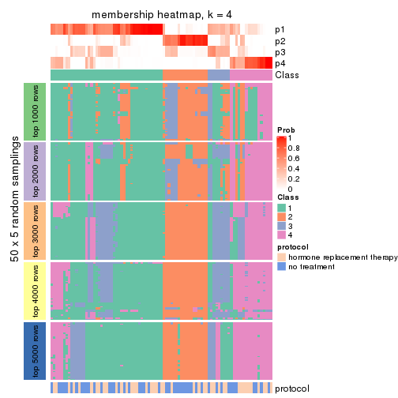
membership_heatmap(res, k = 5)
membership_heatmap(res, k = 6)

As soon as we have had the classes for columns, we can look for signatures which are significantly different between classes which can be candidate marks for certain classes. Following are the heatmaps for signatures.
Signature heatmaps where rows are scaled:
get_signatures(res, k = 2)
get_signatures(res, k = 3)
get_signatures(res, k = 4)
get_signatures(res, k = 5)

get_signatures(res, k = 6)
Signature heatmaps where rows are not scaled:
get_signatures(res, k = 2, scale_rows = FALSE)
get_signatures(res, k = 3, scale_rows = FALSE)
get_signatures(res, k = 4, scale_rows = FALSE)
get_signatures(res, k = 5, scale_rows = FALSE)
get_signatures(res, k = 6, scale_rows = FALSE)
Compare the overlap of signatures from different k:
compare_signatures(res)
get_signature() returns a data frame invisibly. TO get the list of signatures, the function
call should be assigned to a variable explicitly. In following code, if plot argument is set
to FALSE, no heatmap is plotted while only the differential analysis is performed.
# code only for demonstration
tb = get_signature(res, k = ..., plot = FALSE)
An example of the output of tb is:
#> which_row fdr mean_1 mean_2 scaled_mean_1 scaled_mean_2 km
#> 1 38 0.042760348 8.373488 9.131774 -0.5533452 0.5164555 1
#> 2 40 0.018707592 7.106213 8.469186 -0.6173731 0.5762149 1
#> 3 55 0.019134737 10.221463 11.207825 -0.6159697 0.5749050 1
#> 4 59 0.006059896 5.921854 7.869574 -0.6899429 0.6439467 1
#> 5 60 0.018055526 8.928898 10.211722 -0.6204761 0.5791110 1
#> 6 98 0.009384629 15.714769 14.887706 0.6635654 -0.6193277 2
...
The columns in tb are:
which_row: row indices corresponding to the input matrix.fdr: FDR for the differential test. mean_x: The mean value in group x.scaled_mean_x: The mean value in group x after rows are scaled.km: Row groups if k-means clustering is applied to rows.UMAP plot which shows how samples are separated.
dimension_reduction(res, k = 2, method = "UMAP")
dimension_reduction(res, k = 3, method = "UMAP")
dimension_reduction(res, k = 4, method = "UMAP")

dimension_reduction(res, k = 5, method = "UMAP")
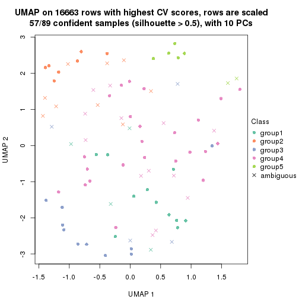
dimension_reduction(res, k = 6, method = "UMAP")
Following heatmap shows how subgroups are split when increasing k:
collect_classes(res)

Test correlation between subgroups and known annotations. If the known annotation is numeric, one-way ANOVA test is applied, and if the known annotation is discrete, chi-squared contingency table test is applied.
test_to_known_factors(res)
#> n protocol(p) k
#> CV:pam 86 0.191 2
#> CV:pam 80 0.206 3
#> CV:pam 43 0.167 4
#> CV:pam 57 0.368 5
#> CV:pam 63 0.903 6
If matrix rows can be associated to genes, consider to use functional_enrichment(res,
...) to perform function enrichment for the signature genes. See this vignette for more detailed explanations.
The object with results only for a single top-value method and a single partition method can be extracted as:
res = res_list["CV", "mclust"]
# you can also extract it by
# res = res_list["CV:mclust"]
A summary of res and all the functions that can be applied to it:
res
#> A 'ConsensusPartition' object with k = 2, 3, 4, 5, 6.
#> On a matrix with 16663 rows and 89 columns.
#> Top rows (1000, 2000, 3000, 4000, 5000) are extracted by 'CV' method.
#> Subgroups are detected by 'mclust' method.
#> Performed in total 1250 partitions by row resampling.
#> Best k for subgroups seems to be 4.
#>
#> Following methods can be applied to this 'ConsensusPartition' object:
#> [1] "cola_report" "collect_classes" "collect_plots"
#> [4] "collect_stats" "colnames" "compare_signatures"
#> [7] "consensus_heatmap" "dimension_reduction" "functional_enrichment"
#> [10] "get_anno_col" "get_anno" "get_classes"
#> [13] "get_consensus" "get_matrix" "get_membership"
#> [16] "get_param" "get_signatures" "get_stats"
#> [19] "is_best_k" "is_stable_k" "membership_heatmap"
#> [22] "ncol" "nrow" "plot_ecdf"
#> [25] "rownames" "select_partition_number" "show"
#> [28] "suggest_best_k" "test_to_known_factors"
collect_plots() function collects all the plots made from res for all k (number of partitions)
into one single page to provide an easy and fast comparison between different k.
collect_plots(res)
The plots are:
k and the heatmap of
predicted classes for each k.k.k.k.All the plots in panels can be made by individual functions and they are plotted later in this section.
select_partition_number() produces several plots showing different
statistics for choosing “optimized” k. There are following statistics:
k;k, the area increased is defined as \(A_k - A_{k-1}\).The detailed explanations of these statistics can be found in the cola vignette.
Generally speaking, lower PAC score, higher mean silhouette score or higher
concordance corresponds to better partition. Rand index and Jaccard index
measure how similar the current partition is compared to partition with k-1.
If they are too similar, we won't accept k is better than k-1.
select_partition_number(res)
The numeric values for all these statistics can be obtained by get_stats().
get_stats(res)
#> k 1-PAC mean_silhouette concordance area_increased Rand Jaccard
#> 2 2 0.405 0.783 0.867 0.3254 0.702 0.702
#> 3 3 0.120 0.478 0.714 0.5006 0.768 0.686
#> 4 4 0.402 0.753 0.823 0.2847 0.556 0.331
#> 5 5 0.364 0.499 0.727 0.1032 0.930 0.806
#> 6 6 0.465 0.459 0.624 0.0888 0.774 0.408
suggest_best_k() suggests the best \(k\) based on these statistics. The rules are as follows:
suggest_best_k(res)
#> [1] 4
Following shows the table of the partitions (You need to click the show/hide
code output link to see it). The membership matrix (columns with name p*)
is inferred by
clue::cl_consensus()
function with the SE method. Basically the value in the membership matrix
represents the probability to belong to a certain group. The finall class
label for an item is determined with the group with highest probability it
belongs to.
In get_classes() function, the entropy is calculated from the membership
matrix and the silhouette score is calculated from the consensus matrix.
cbind(get_classes(res, k = 2), get_membership(res, k = 2))
#> class entropy silhouette p1 p2
#> GSM78921 2 0.5059 0.7958 0.112 0.888
#> GSM78922 2 0.7299 0.5902 0.204 0.796
#> GSM78923 2 0.4298 0.8636 0.088 0.912
#> GSM78924 2 0.0000 0.8539 0.000 1.000
#> GSM78925 2 0.0000 0.8539 0.000 1.000
#> GSM78926 2 0.0000 0.8539 0.000 1.000
#> GSM78927 1 0.9209 0.6972 0.664 0.336
#> GSM78928 2 0.4298 0.8636 0.088 0.912
#> GSM78929 2 0.2603 0.8624 0.044 0.956
#> GSM78930 2 0.5059 0.7958 0.112 0.888
#> GSM78931 2 0.0376 0.8526 0.004 0.996
#> GSM78932 2 0.0000 0.8539 0.000 1.000
#> GSM78933 1 0.5059 0.8572 0.888 0.112
#> GSM78934 2 0.3879 0.8641 0.076 0.924
#> GSM78935 1 0.6343 0.8416 0.840 0.160
#> GSM78936 2 0.4298 0.8636 0.088 0.912
#> GSM78937 2 0.4298 0.8636 0.088 0.912
#> GSM78938 1 0.9993 0.2175 0.516 0.484
#> GSM78939 2 0.8713 0.5551 0.292 0.708
#> GSM78940 2 0.4298 0.8636 0.088 0.912
#> GSM78941 2 0.4298 0.8636 0.088 0.912
#> GSM78942 2 0.5059 0.7958 0.112 0.888
#> GSM78943 1 0.9358 0.6227 0.648 0.352
#> GSM78944 2 0.8443 0.6008 0.272 0.728
#> GSM78945 2 0.9580 0.2949 0.380 0.620
#> GSM78946 1 1.0000 0.1829 0.500 0.500
#> GSM78947 2 0.5059 0.7958 0.112 0.888
#> GSM78948 1 0.5059 0.8572 0.888 0.112
#> GSM78949 2 0.9209 0.4394 0.336 0.664
#> GSM78950 2 0.4562 0.8588 0.096 0.904
#> GSM78951 2 0.4939 0.7986 0.108 0.892
#> GSM78952 2 0.0000 0.8539 0.000 1.000
#> GSM78953 2 0.0000 0.8539 0.000 1.000
#> GSM78954 2 0.5408 0.8064 0.124 0.876
#> GSM78955 2 0.4298 0.8636 0.088 0.912
#> GSM78956 2 0.4298 0.8636 0.088 0.912
#> GSM78957 2 0.4298 0.8636 0.088 0.912
#> GSM78958 2 0.0000 0.8539 0.000 1.000
#> GSM78959 1 0.5059 0.8572 0.888 0.112
#> GSM78960 2 0.5059 0.7958 0.112 0.888
#> GSM78961 2 0.5059 0.7958 0.112 0.888
#> GSM78962 2 0.5059 0.7958 0.112 0.888
#> GSM78963 2 0.5059 0.7958 0.112 0.888
#> GSM78964 2 0.5059 0.7958 0.112 0.888
#> GSM78965 2 0.5059 0.7958 0.112 0.888
#> GSM78966 1 0.5059 0.8572 0.888 0.112
#> GSM78967 1 0.5059 0.8572 0.888 0.112
#> GSM78879 2 0.9393 0.0892 0.356 0.644
#> GSM78880 1 0.6048 0.8337 0.852 0.148
#> GSM78881 2 0.7528 0.5996 0.216 0.784
#> GSM78882 2 0.9686 0.2657 0.396 0.604
#> GSM78883 2 0.4298 0.8636 0.088 0.912
#> GSM78884 2 0.2948 0.8634 0.052 0.948
#> GSM78885 2 0.2778 0.8627 0.048 0.952
#> GSM78886 2 0.4298 0.8636 0.088 0.912
#> GSM78887 2 0.4298 0.8636 0.088 0.912
#> GSM78888 1 0.5059 0.8572 0.888 0.112
#> GSM78889 2 0.0000 0.8539 0.000 1.000
#> GSM78890 2 0.4298 0.8636 0.088 0.912
#> GSM78891 1 0.8909 0.6985 0.692 0.308
#> GSM78892 2 0.4298 0.8636 0.088 0.912
#> GSM78893 2 0.4298 0.8636 0.088 0.912
#> GSM78894 2 0.8207 0.6358 0.256 0.744
#> GSM78895 2 0.3584 0.8640 0.068 0.932
#> GSM78896 2 0.4298 0.8636 0.088 0.912
#> GSM78897 2 0.4298 0.8636 0.088 0.912
#> GSM78898 2 0.4298 0.8636 0.088 0.912
#> GSM78899 2 0.0000 0.8539 0.000 1.000
#> GSM78900 2 0.4562 0.8067 0.096 0.904
#> GSM78901 2 0.4298 0.8636 0.088 0.912
#> GSM78902 2 0.6438 0.8181 0.164 0.836
#> GSM78903 2 0.4298 0.8636 0.088 0.912
#> GSM78904 2 0.4298 0.8636 0.088 0.912
#> GSM78905 2 0.4298 0.8636 0.088 0.912
#> GSM78906 2 0.3879 0.8641 0.076 0.924
#> GSM78907 2 0.4298 0.8636 0.088 0.912
#> GSM78908 2 0.4815 0.8014 0.104 0.896
#> GSM78909 2 0.2236 0.8616 0.036 0.964
#> GSM78910 1 0.5059 0.8572 0.888 0.112
#> GSM78911 2 0.4298 0.8636 0.088 0.912
#> GSM78912 2 0.5059 0.7958 0.112 0.888
#> GSM78913 2 0.5059 0.7958 0.112 0.888
#> GSM78914 2 0.5059 0.7958 0.112 0.888
#> GSM78915 2 0.5059 0.7958 0.112 0.888
#> GSM78916 2 0.4298 0.8636 0.088 0.912
#> GSM78917 1 0.5059 0.8572 0.888 0.112
#> GSM78918 2 0.4298 0.8636 0.088 0.912
#> GSM78919 1 0.8207 0.7626 0.744 0.256
#> GSM78920 2 0.4298 0.8636 0.088 0.912
cbind(get_classes(res, k = 3), get_membership(res, k = 3))
#> class entropy silhouette p1 p2 p3
#> GSM78921 2 0.9187 0.3042 0.272 0.532 0.196
#> GSM78922 1 0.6490 0.7672 0.628 0.360 0.012
#> GSM78923 2 0.5618 0.4925 0.008 0.732 0.260
#> GSM78924 2 0.7245 0.3209 0.036 0.596 0.368
#> GSM78925 2 0.5722 0.6175 0.084 0.804 0.112
#> GSM78926 2 0.6527 0.3516 0.404 0.588 0.008
#> GSM78927 1 0.6295 0.7541 0.528 0.472 0.000
#> GSM78928 2 0.2939 0.6356 0.012 0.916 0.072
#> GSM78929 2 0.5884 0.4747 0.012 0.716 0.272
#> GSM78930 3 0.7971 0.7336 0.096 0.280 0.624
#> GSM78931 2 0.3995 0.5943 0.116 0.868 0.016
#> GSM78932 2 0.6460 0.4895 0.112 0.764 0.124
#> GSM78933 1 0.6215 0.8210 0.572 0.428 0.000
#> GSM78934 2 0.5292 0.5148 0.008 0.764 0.228
#> GSM78935 1 0.5621 0.8251 0.692 0.308 0.000
#> GSM78936 2 0.3112 0.5906 0.096 0.900 0.004
#> GSM78937 2 0.6045 -0.3176 0.380 0.620 0.000
#> GSM78938 2 0.6309 -0.6900 0.496 0.504 0.000
#> GSM78939 2 0.3644 0.5711 0.124 0.872 0.004
#> GSM78940 2 0.1491 0.6371 0.016 0.968 0.016
#> GSM78941 2 0.5335 0.5150 0.008 0.760 0.232
#> GSM78942 2 0.5461 0.3536 0.008 0.748 0.244
#> GSM78943 1 0.5650 0.8263 0.688 0.312 0.000
#> GSM78944 2 0.5327 0.2127 0.272 0.728 0.000
#> GSM78945 2 0.6079 -0.2880 0.388 0.612 0.000
#> GSM78946 2 0.6298 -0.3501 0.388 0.608 0.004
#> GSM78947 2 0.6476 0.0708 0.004 0.548 0.448
#> GSM78948 1 0.5650 0.8257 0.688 0.312 0.000
#> GSM78949 2 0.5591 0.0937 0.304 0.696 0.000
#> GSM78950 2 0.4555 0.5212 0.200 0.800 0.000
#> GSM78951 3 0.8157 0.7155 0.096 0.308 0.596
#> GSM78952 2 0.7346 0.3170 0.040 0.592 0.368
#> GSM78953 2 0.6443 0.4564 0.040 0.720 0.240
#> GSM78954 3 0.8327 0.6767 0.096 0.340 0.564
#> GSM78955 2 0.1964 0.6137 0.056 0.944 0.000
#> GSM78956 2 0.3918 0.5955 0.004 0.856 0.140
#> GSM78957 2 0.3532 0.6101 0.008 0.884 0.108
#> GSM78958 2 0.2774 0.6270 0.072 0.920 0.008
#> GSM78959 1 0.5560 0.8247 0.700 0.300 0.000
#> GSM78960 3 0.7911 0.7356 0.096 0.272 0.632
#> GSM78961 2 0.7279 0.1668 0.056 0.652 0.292
#> GSM78962 2 0.9111 0.2317 0.212 0.548 0.240
#> GSM78963 3 0.6244 0.0640 0.000 0.440 0.560
#> GSM78964 3 0.6095 0.1419 0.000 0.392 0.608
#> GSM78965 3 0.7911 0.7356 0.096 0.272 0.632
#> GSM78966 1 0.6192 0.8256 0.580 0.420 0.000
#> GSM78967 1 0.6204 0.8215 0.576 0.424 0.000
#> GSM78879 2 0.6771 0.0877 0.440 0.548 0.012
#> GSM78880 1 0.5754 0.8230 0.700 0.296 0.004
#> GSM78881 2 0.6104 -0.1565 0.348 0.648 0.004
#> GSM78882 2 0.6299 -0.6476 0.476 0.524 0.000
#> GSM78883 2 0.3038 0.5792 0.104 0.896 0.000
#> GSM78884 2 0.5138 0.4643 0.252 0.748 0.000
#> GSM78885 2 0.3715 0.5743 0.128 0.868 0.004
#> GSM78886 2 0.0983 0.6373 0.004 0.980 0.016
#> GSM78887 2 0.2496 0.6130 0.068 0.928 0.004
#> GSM78888 1 0.6095 0.8364 0.608 0.392 0.000
#> GSM78889 2 0.4249 0.5873 0.028 0.864 0.108
#> GSM78890 2 0.2625 0.6224 0.084 0.916 0.000
#> GSM78891 1 0.6308 0.6968 0.508 0.492 0.000
#> GSM78892 2 0.3826 0.6166 0.008 0.868 0.124
#> GSM78893 2 0.3425 0.6089 0.004 0.884 0.112
#> GSM78894 2 0.4654 0.4200 0.208 0.792 0.000
#> GSM78895 2 0.7170 0.3425 0.036 0.612 0.352
#> GSM78896 2 0.3482 0.5386 0.128 0.872 0.000
#> GSM78897 2 0.2096 0.6166 0.052 0.944 0.004
#> GSM78898 2 0.5397 0.1886 0.280 0.720 0.000
#> GSM78899 2 0.6527 0.3516 0.404 0.588 0.008
#> GSM78900 2 0.8020 -0.0387 0.084 0.596 0.320
#> GSM78901 2 0.3112 0.5906 0.096 0.900 0.004
#> GSM78902 3 0.8327 0.6775 0.096 0.340 0.564
#> GSM78903 2 0.6297 0.3887 0.008 0.640 0.352
#> GSM78904 2 0.1989 0.6185 0.048 0.948 0.004
#> GSM78905 2 0.4453 0.6085 0.152 0.836 0.012
#> GSM78906 2 0.6859 0.3566 0.024 0.620 0.356
#> GSM78907 2 0.2165 0.6093 0.064 0.936 0.000
#> GSM78908 2 0.5220 0.4325 0.012 0.780 0.208
#> GSM78909 2 0.4172 0.5940 0.028 0.868 0.104
#> GSM78910 1 0.6140 0.8309 0.596 0.404 0.000
#> GSM78911 2 0.3030 0.6166 0.004 0.904 0.092
#> GSM78912 2 0.6537 0.4872 0.064 0.740 0.196
#> GSM78913 3 0.6095 0.1419 0.000 0.392 0.608
#> GSM78914 3 0.7911 0.7356 0.096 0.272 0.632
#> GSM78915 3 0.7911 0.7356 0.096 0.272 0.632
#> GSM78916 2 0.0661 0.6364 0.004 0.988 0.008
#> GSM78917 1 0.5529 0.8233 0.704 0.296 0.000
#> GSM78918 2 0.3116 0.5791 0.108 0.892 0.000
#> GSM78919 1 0.6307 0.7054 0.512 0.488 0.000
#> GSM78920 2 0.3375 0.6134 0.008 0.892 0.100
cbind(get_classes(res, k = 4), get_membership(res, k = 4))
#> class entropy silhouette p1 p2 p3 p4
#> GSM78921 1 0.6353 0.684 0.696 0.024 0.180 0.100
#> GSM78922 1 0.1174 0.860 0.968 0.012 0.020 0.000
#> GSM78923 2 0.2845 0.823 0.076 0.896 0.000 0.028
#> GSM78924 4 0.5565 0.806 0.000 0.344 0.032 0.624
#> GSM78925 2 0.6373 0.452 0.064 0.680 0.224 0.032
#> GSM78926 1 0.6297 0.601 0.600 0.008 0.056 0.336
#> GSM78927 1 0.2011 0.855 0.920 0.080 0.000 0.000
#> GSM78928 2 0.4929 0.760 0.152 0.788 0.024 0.036
#> GSM78929 2 0.2996 0.804 0.048 0.904 0.020 0.028
#> GSM78930 3 0.1584 0.634 0.036 0.012 0.952 0.000
#> GSM78931 2 0.4689 0.718 0.060 0.824 0.036 0.080
#> GSM78932 2 0.2816 0.718 0.000 0.900 0.036 0.064
#> GSM78933 1 0.1211 0.858 0.960 0.040 0.000 0.000
#> GSM78934 2 0.2871 0.830 0.072 0.896 0.000 0.032
#> GSM78935 1 0.1474 0.856 0.948 0.052 0.000 0.000
#> GSM78936 1 0.4072 0.733 0.748 0.252 0.000 0.000
#> GSM78937 1 0.1302 0.862 0.956 0.044 0.000 0.000
#> GSM78938 1 0.1488 0.854 0.956 0.012 0.000 0.032
#> GSM78939 1 0.2469 0.851 0.892 0.108 0.000 0.000
#> GSM78940 2 0.2197 0.834 0.080 0.916 0.000 0.004
#> GSM78941 2 0.3105 0.823 0.120 0.868 0.000 0.012
#> GSM78942 2 0.4910 0.608 0.012 0.756 0.208 0.024
#> GSM78943 1 0.0921 0.859 0.972 0.028 0.000 0.000
#> GSM78944 1 0.4459 0.754 0.780 0.188 0.000 0.032
#> GSM78945 1 0.3958 0.795 0.824 0.144 0.000 0.032
#> GSM78946 1 0.2345 0.854 0.900 0.100 0.000 0.000
#> GSM78947 3 0.5217 0.394 0.000 0.380 0.608 0.012
#> GSM78948 1 0.1211 0.858 0.960 0.040 0.000 0.000
#> GSM78949 1 0.4332 0.762 0.792 0.176 0.000 0.032
#> GSM78950 1 0.0779 0.861 0.980 0.016 0.000 0.004
#> GSM78951 3 0.1677 0.636 0.040 0.012 0.948 0.000
#> GSM78952 4 0.5565 0.806 0.000 0.344 0.032 0.624
#> GSM78953 2 0.1929 0.735 0.000 0.940 0.036 0.024
#> GSM78954 3 0.5278 0.674 0.056 0.176 0.756 0.012
#> GSM78955 2 0.3311 0.779 0.172 0.828 0.000 0.000
#> GSM78956 2 0.2011 0.834 0.080 0.920 0.000 0.000
#> GSM78957 2 0.2882 0.831 0.084 0.892 0.000 0.024
#> GSM78958 1 0.5910 0.701 0.692 0.244 0.032 0.032
#> GSM78959 1 0.1118 0.859 0.964 0.036 0.000 0.000
#> GSM78960 3 0.3428 0.701 0.012 0.144 0.844 0.000
#> GSM78961 2 0.4947 0.603 0.012 0.752 0.212 0.024
#> GSM78962 1 0.7241 0.599 0.616 0.024 0.196 0.164
#> GSM78963 4 0.6655 0.729 0.000 0.184 0.192 0.624
#> GSM78964 4 0.6640 0.709 0.000 0.168 0.208 0.624
#> GSM78965 3 0.3484 0.700 0.008 0.144 0.844 0.004
#> GSM78966 1 0.0376 0.856 0.992 0.004 0.000 0.004
#> GSM78967 1 0.0188 0.855 0.996 0.004 0.000 0.000
#> GSM78879 1 0.6247 0.717 0.676 0.036 0.044 0.244
#> GSM78880 1 0.0188 0.855 0.996 0.004 0.000 0.000
#> GSM78881 1 0.2706 0.854 0.900 0.080 0.020 0.000
#> GSM78882 1 0.0921 0.861 0.972 0.028 0.000 0.000
#> GSM78883 1 0.2596 0.859 0.908 0.068 0.000 0.024
#> GSM78884 1 0.4993 0.799 0.776 0.048 0.012 0.164
#> GSM78885 1 0.4678 0.748 0.744 0.232 0.024 0.000
#> GSM78886 2 0.2466 0.834 0.096 0.900 0.000 0.004
#> GSM78887 1 0.4776 0.727 0.732 0.244 0.000 0.024
#> GSM78888 1 0.1022 0.850 0.968 0.000 0.000 0.032
#> GSM78889 2 0.1674 0.776 0.012 0.952 0.032 0.004
#> GSM78890 3 0.8357 0.224 0.380 0.188 0.400 0.032
#> GSM78891 1 0.1488 0.854 0.956 0.012 0.000 0.032
#> GSM78892 2 0.2125 0.833 0.076 0.920 0.000 0.004
#> GSM78893 2 0.2530 0.833 0.100 0.896 0.000 0.004
#> GSM78894 1 0.2131 0.855 0.932 0.036 0.000 0.032
#> GSM78895 4 0.5268 0.717 0.008 0.452 0.000 0.540
#> GSM78896 1 0.1978 0.861 0.928 0.068 0.000 0.004
#> GSM78897 2 0.4843 0.305 0.396 0.604 0.000 0.000
#> GSM78898 1 0.4459 0.754 0.780 0.188 0.000 0.032
#> GSM78899 1 0.6297 0.601 0.600 0.008 0.056 0.336
#> GSM78900 3 0.6381 0.585 0.116 0.208 0.668 0.008
#> GSM78901 1 0.4072 0.735 0.748 0.252 0.000 0.000
#> GSM78902 3 0.4735 0.701 0.068 0.148 0.784 0.000
#> GSM78903 4 0.6141 0.732 0.076 0.300 0.000 0.624
#> GSM78904 2 0.2921 0.805 0.140 0.860 0.000 0.000
#> GSM78905 3 0.6640 0.519 0.168 0.208 0.624 0.000
#> GSM78906 4 0.5632 0.784 0.036 0.340 0.000 0.624
#> GSM78907 1 0.2773 0.833 0.880 0.116 0.000 0.004
#> GSM78908 1 0.7105 0.605 0.632 0.168 0.176 0.024
#> GSM78909 2 0.3201 0.796 0.048 0.896 0.032 0.024
#> GSM78910 1 0.1022 0.850 0.968 0.000 0.000 0.032
#> GSM78911 2 0.3143 0.828 0.100 0.876 0.000 0.024
#> GSM78912 1 0.4971 0.738 0.776 0.028 0.172 0.024
#> GSM78913 4 0.6634 0.706 0.000 0.164 0.212 0.624
#> GSM78914 3 0.0937 0.621 0.012 0.012 0.976 0.000
#> GSM78915 3 0.3428 0.691 0.000 0.144 0.844 0.012
#> GSM78916 2 0.2760 0.818 0.128 0.872 0.000 0.000
#> GSM78917 1 0.0817 0.852 0.976 0.000 0.000 0.024
#> GSM78918 1 0.2227 0.854 0.928 0.036 0.000 0.036
#> GSM78919 1 0.1488 0.854 0.956 0.012 0.000 0.032
#> GSM78920 2 0.2216 0.834 0.092 0.908 0.000 0.000
cbind(get_classes(res, k = 5), get_membership(res, k = 5))
#> class entropy silhouette p1 p2 p3 p4 p5
#> GSM78921 1 0.569 -0.2671 0.612 0.004 0.040 0.316 0.028
#> GSM78922 1 0.402 0.1008 0.772 0.008 0.000 0.196 0.024
#> GSM78923 2 0.427 0.4631 0.028 0.748 0.000 0.008 0.216
#> GSM78924 5 0.320 0.8894 0.004 0.152 0.012 0.000 0.832
#> GSM78925 2 0.833 0.1958 0.156 0.480 0.180 0.028 0.156
#> GSM78926 4 0.470 0.6703 0.400 0.004 0.012 0.584 0.000
#> GSM78927 1 0.322 0.4964 0.848 0.108 0.000 0.044 0.000
#> GSM78928 2 0.426 0.6820 0.060 0.824 0.020 0.024 0.072
#> GSM78929 2 0.409 0.1395 0.000 0.632 0.000 0.000 0.368
#> GSM78930 3 0.233 0.6606 0.124 0.000 0.876 0.000 0.000
#> GSM78931 2 0.623 0.2713 0.372 0.524 0.028 0.076 0.000
#> GSM78932 2 0.616 0.6119 0.076 0.700 0.024 0.080 0.120
#> GSM78933 1 0.256 0.3316 0.884 0.020 0.000 0.096 0.000
#> GSM78934 2 0.218 0.7282 0.028 0.924 0.000 0.020 0.028
#> GSM78935 1 0.427 0.1050 0.760 0.020 0.000 0.200 0.020
#> GSM78936 1 0.597 0.4641 0.560 0.320 0.004 0.116 0.000
#> GSM78937 1 0.473 0.5521 0.720 0.200 0.000 0.080 0.000
#> GSM78938 1 0.365 0.5478 0.836 0.120 0.008 0.020 0.016
#> GSM78939 1 0.371 0.5048 0.792 0.184 0.004 0.020 0.000
#> GSM78940 2 0.205 0.7250 0.052 0.920 0.000 0.028 0.000
#> GSM78941 2 0.228 0.7260 0.040 0.916 0.000 0.008 0.036
#> GSM78942 2 0.819 0.0687 0.016 0.420 0.140 0.308 0.116
#> GSM78943 1 0.397 0.1064 0.772 0.008 0.000 0.200 0.020
#> GSM78944 1 0.614 0.4890 0.592 0.284 0.000 0.100 0.024
#> GSM78945 1 0.508 0.5362 0.716 0.212 0.004 0.044 0.024
#> GSM78946 1 0.359 0.5546 0.792 0.188 0.000 0.020 0.000
#> GSM78947 3 0.654 0.4918 0.000 0.176 0.504 0.008 0.312
#> GSM78948 1 0.427 0.1050 0.760 0.020 0.000 0.200 0.020
#> GSM78949 1 0.576 0.5229 0.656 0.240 0.004 0.076 0.024
#> GSM78950 1 0.341 0.4439 0.840 0.068 0.000 0.092 0.000
#> GSM78951 3 0.247 0.6808 0.104 0.012 0.884 0.000 0.000
#> GSM78952 5 0.308 0.8881 0.000 0.156 0.012 0.000 0.832
#> GSM78953 2 0.450 0.2424 0.000 0.668 0.012 0.008 0.312
#> GSM78954 3 0.427 0.7153 0.008 0.240 0.732 0.000 0.020
#> GSM78955 2 0.579 0.4346 0.288 0.604 0.000 0.100 0.008
#> GSM78956 2 0.108 0.7322 0.028 0.964 0.000 0.008 0.000
#> GSM78957 2 0.140 0.7313 0.028 0.952 0.000 0.020 0.000
#> GSM78958 1 0.583 0.4739 0.620 0.280 0.024 0.076 0.000
#> GSM78959 1 0.427 0.1050 0.760 0.020 0.000 0.200 0.020
#> GSM78960 3 0.376 0.7678 0.016 0.112 0.828 0.000 0.044
#> GSM78961 2 0.682 0.4219 0.012 0.632 0.140 0.096 0.120
#> GSM78962 4 0.656 0.4523 0.244 0.008 0.060 0.608 0.080
#> GSM78963 5 0.273 0.8285 0.048 0.040 0.016 0.000 0.896
#> GSM78964 5 0.215 0.8297 0.000 0.036 0.048 0.000 0.916
#> GSM78965 3 0.373 0.7672 0.012 0.112 0.828 0.000 0.048
#> GSM78966 1 0.344 0.1727 0.808 0.000 0.000 0.172 0.020
#> GSM78967 1 0.336 0.1953 0.816 0.000 0.000 0.164 0.020
#> GSM78879 4 0.549 0.5119 0.456 0.044 0.008 0.492 0.000
#> GSM78880 1 0.303 0.2629 0.856 0.004 0.000 0.120 0.020
#> GSM78881 1 0.454 0.5444 0.768 0.120 0.008 0.104 0.000
#> GSM78882 1 0.207 0.4941 0.920 0.044 0.000 0.036 0.000
#> GSM78883 1 0.371 0.4977 0.824 0.108 0.004 0.064 0.000
#> GSM78884 1 0.521 -0.4164 0.556 0.048 0.000 0.396 0.000
#> GSM78885 1 0.473 0.5163 0.724 0.220 0.016 0.040 0.000
#> GSM78886 2 0.104 0.7332 0.032 0.964 0.000 0.004 0.000
#> GSM78887 1 0.617 0.3143 0.536 0.324 0.004 0.136 0.000
#> GSM78888 1 0.359 0.1307 0.792 0.000 0.000 0.188 0.020
#> GSM78889 2 0.123 0.7175 0.012 0.964 0.016 0.004 0.004
#> GSM78890 1 0.876 0.1766 0.392 0.252 0.208 0.108 0.040
#> GSM78891 1 0.534 0.5457 0.712 0.168 0.004 0.100 0.016
#> GSM78892 2 0.466 0.6182 0.152 0.748 0.000 0.096 0.004
#> GSM78893 2 0.088 0.7331 0.032 0.968 0.000 0.000 0.000
#> GSM78894 1 0.571 0.5269 0.668 0.208 0.004 0.104 0.016
#> GSM78895 5 0.366 0.7626 0.000 0.276 0.000 0.000 0.724
#> GSM78896 1 0.489 0.5489 0.740 0.140 0.004 0.112 0.004
#> GSM78897 1 0.590 0.3348 0.500 0.396 0.000 0.104 0.000
#> GSM78898 1 0.605 0.5069 0.624 0.244 0.000 0.104 0.028
#> GSM78899 4 0.459 0.6886 0.364 0.004 0.012 0.620 0.000
#> GSM78900 3 0.724 0.5159 0.156 0.252 0.532 0.008 0.052
#> GSM78901 1 0.585 0.4598 0.556 0.328 0.000 0.116 0.000
#> GSM78902 3 0.401 0.7383 0.032 0.208 0.760 0.000 0.000
#> GSM78903 5 0.332 0.8610 0.032 0.136 0.000 0.000 0.832
#> GSM78904 2 0.564 0.3717 0.316 0.584 0.000 0.100 0.000
#> GSM78905 3 0.575 0.6316 0.080 0.288 0.616 0.000 0.016
#> GSM78906 5 0.281 0.8843 0.000 0.168 0.000 0.000 0.832
#> GSM78907 1 0.538 0.5225 0.664 0.228 0.000 0.104 0.004
#> GSM78908 1 0.841 0.3504 0.496 0.196 0.080 0.148 0.080
#> GSM78909 2 0.135 0.7179 0.008 0.960 0.008 0.020 0.004
#> GSM78910 1 0.310 0.2683 0.848 0.000 0.000 0.124 0.028
#> GSM78911 2 0.140 0.7313 0.028 0.952 0.000 0.020 0.000
#> GSM78912 1 0.597 0.3880 0.716 0.096 0.056 0.104 0.028
#> GSM78913 5 0.286 0.8333 0.016 0.036 0.060 0.000 0.888
#> GSM78914 3 0.155 0.6619 0.016 0.000 0.944 0.000 0.040
#> GSM78915 3 0.369 0.7653 0.008 0.112 0.828 0.000 0.052
#> GSM78916 2 0.295 0.6986 0.112 0.860 0.000 0.028 0.000
#> GSM78917 1 0.371 0.1155 0.784 0.000 0.000 0.192 0.024
#> GSM78918 1 0.534 0.5560 0.712 0.180 0.004 0.084 0.020
#> GSM78919 1 0.458 0.5436 0.752 0.184 0.000 0.048 0.016
#> GSM78920 2 0.354 0.6780 0.112 0.828 0.000 0.060 0.000
cbind(get_classes(res, k = 6), get_membership(res, k = 6))
#> class entropy silhouette p1 p2 p3 p4 p5 p6
#> GSM78921 1 0.4206 0.53164 0.784 0.000 0.112 0.072 0.008 0.024
#> GSM78922 1 0.1806 0.64028 0.908 0.000 0.000 0.000 0.004 0.088
#> GSM78923 2 0.4067 0.64982 0.000 0.752 0.000 0.000 0.144 0.104
#> GSM78924 5 0.3074 0.76150 0.000 0.200 0.004 0.000 0.792 0.004
#> GSM78925 6 0.8403 -0.07843 0.044 0.204 0.244 0.012 0.144 0.352
#> GSM78926 1 0.5315 0.10876 0.536 0.004 0.000 0.392 0.028 0.040
#> GSM78927 1 0.3878 0.43183 0.668 0.008 0.000 0.000 0.004 0.320
#> GSM78928 6 0.5928 0.30939 0.048 0.256 0.084 0.000 0.012 0.600
#> GSM78929 2 0.4650 0.51533 0.000 0.676 0.000 0.000 0.220 0.104
#> GSM78930 3 0.0909 0.69095 0.012 0.000 0.968 0.000 0.000 0.020
#> GSM78931 6 0.5796 0.55482 0.132 0.108 0.040 0.044 0.000 0.676
#> GSM78932 6 0.6799 0.23196 0.048 0.352 0.028 0.048 0.032 0.492
#> GSM78933 1 0.3469 0.56800 0.764 0.008 0.000 0.004 0.004 0.220
#> GSM78934 2 0.3845 0.74226 0.012 0.788 0.000 0.008 0.036 0.156
#> GSM78935 1 0.0436 0.66023 0.988 0.004 0.000 0.004 0.000 0.004
#> GSM78936 6 0.4525 0.59145 0.136 0.096 0.012 0.004 0.004 0.748
#> GSM78937 6 0.4466 0.44013 0.340 0.012 0.016 0.000 0.004 0.628
#> GSM78938 6 0.4310 0.10428 0.472 0.012 0.004 0.000 0.000 0.512
#> GSM78939 6 0.5119 0.24431 0.424 0.048 0.004 0.004 0.004 0.516
#> GSM78940 6 0.4524 -0.00792 0.024 0.452 0.000 0.004 0.000 0.520
#> GSM78941 2 0.3896 0.74052 0.000 0.744 0.000 0.000 0.052 0.204
#> GSM78942 4 0.6849 0.47288 0.000 0.048 0.064 0.564 0.128 0.196
#> GSM78943 1 0.1753 0.63969 0.912 0.000 0.000 0.000 0.004 0.084
#> GSM78944 6 0.6660 -0.02592 0.392 0.144 0.000 0.012 0.040 0.412
#> GSM78945 1 0.6121 0.43823 0.584 0.084 0.012 0.008 0.040 0.272
#> GSM78946 1 0.4727 -0.12866 0.488 0.020 0.004 0.004 0.004 0.480
#> GSM78947 3 0.5447 0.55364 0.000 0.028 0.580 0.000 0.316 0.076
#> GSM78948 1 0.0260 0.65953 0.992 0.008 0.000 0.000 0.000 0.000
#> GSM78949 1 0.6516 0.06952 0.428 0.092 0.008 0.012 0.040 0.420
#> GSM78950 6 0.4102 0.40541 0.356 0.012 0.000 0.000 0.004 0.628
#> GSM78951 3 0.0837 0.69588 0.004 0.004 0.972 0.000 0.000 0.020
#> GSM78952 5 0.3559 0.74135 0.000 0.240 0.004 0.000 0.744 0.012
#> GSM78953 2 0.4456 0.35389 0.008 0.676 0.008 0.000 0.280 0.028
#> GSM78954 3 0.3277 0.72428 0.000 0.044 0.840 0.000 0.020 0.096
#> GSM78955 6 0.4502 0.58844 0.116 0.140 0.000 0.012 0.000 0.732
#> GSM78956 2 0.2778 0.74130 0.000 0.824 0.000 0.000 0.008 0.168
#> GSM78957 2 0.3449 0.72512 0.004 0.784 0.000 0.004 0.016 0.192
#> GSM78958 6 0.4835 0.57278 0.064 0.112 0.020 0.036 0.008 0.760
#> GSM78959 1 0.0146 0.66003 0.996 0.000 0.000 0.000 0.000 0.004
#> GSM78960 3 0.3840 0.74582 0.000 0.012 0.792 0.000 0.120 0.076
#> GSM78961 4 0.8160 0.38870 0.000 0.172 0.068 0.384 0.128 0.248
#> GSM78962 4 0.5494 0.48103 0.068 0.000 0.156 0.676 0.004 0.096
#> GSM78963 5 0.2494 0.72934 0.004 0.036 0.032 0.000 0.900 0.028
#> GSM78964 5 0.2222 0.70396 0.000 0.012 0.084 0.000 0.896 0.008
#> GSM78965 3 0.3840 0.74582 0.000 0.012 0.792 0.000 0.120 0.076
#> GSM78966 1 0.1610 0.65482 0.916 0.000 0.000 0.000 0.000 0.084
#> GSM78967 1 0.2703 0.61540 0.824 0.000 0.000 0.000 0.004 0.172
#> GSM78879 1 0.4579 0.40725 0.684 0.000 0.004 0.260 0.020 0.032
#> GSM78880 1 0.2320 0.63412 0.864 0.000 0.000 0.000 0.004 0.132
#> GSM78881 6 0.4530 0.44554 0.344 0.012 0.004 0.012 0.004 0.624
#> GSM78882 1 0.3966 0.06216 0.552 0.000 0.000 0.000 0.004 0.444
#> GSM78883 6 0.3950 0.47549 0.312 0.008 0.000 0.008 0.000 0.672
#> GSM78884 1 0.5119 0.05471 0.596 0.008 0.000 0.336 0.016 0.044
#> GSM78885 6 0.6079 0.23664 0.368 0.080 0.012 0.028 0.004 0.508
#> GSM78886 2 0.3934 0.48221 0.008 0.616 0.000 0.000 0.000 0.376
#> GSM78887 6 0.6615 0.44695 0.096 0.144 0.008 0.172 0.004 0.576
#> GSM78888 1 0.1814 0.65320 0.900 0.000 0.000 0.000 0.000 0.100
#> GSM78889 2 0.3516 0.69256 0.000 0.792 0.024 0.000 0.012 0.172
#> GSM78890 6 0.5091 0.57188 0.076 0.076 0.048 0.012 0.032 0.756
#> GSM78891 6 0.5046 0.04197 0.472 0.028 0.012 0.004 0.004 0.480
#> GSM78892 6 0.4852 0.04663 0.016 0.420 0.000 0.012 0.012 0.540
#> GSM78893 2 0.4121 0.68743 0.056 0.732 0.000 0.004 0.000 0.208
#> GSM78894 6 0.4246 0.41644 0.340 0.012 0.012 0.000 0.000 0.636
#> GSM78895 2 0.4157 -0.25378 0.000 0.544 0.000 0.000 0.444 0.012
#> GSM78896 6 0.3644 0.54105 0.252 0.000 0.008 0.008 0.000 0.732
#> GSM78897 6 0.5009 0.59322 0.156 0.140 0.000 0.012 0.004 0.688
#> GSM78898 1 0.6508 0.03097 0.428 0.120 0.000 0.012 0.040 0.400
#> GSM78899 4 0.5268 0.19687 0.332 0.008 0.000 0.592 0.028 0.040
#> GSM78900 3 0.7241 0.22717 0.136 0.092 0.464 0.008 0.012 0.288
#> GSM78901 6 0.5235 0.57303 0.192 0.120 0.004 0.012 0.004 0.668
#> GSM78902 3 0.2445 0.73110 0.000 0.020 0.872 0.000 0.000 0.108
#> GSM78903 5 0.4623 0.62963 0.012 0.180 0.000 0.004 0.720 0.084
#> GSM78904 6 0.4879 0.59361 0.184 0.100 0.004 0.008 0.004 0.700
#> GSM78905 3 0.6235 0.56868 0.028 0.132 0.620 0.000 0.052 0.168
#> GSM78906 5 0.4078 0.62521 0.000 0.340 0.000 0.000 0.640 0.020
#> GSM78907 6 0.3727 0.56389 0.212 0.012 0.008 0.008 0.000 0.760
#> GSM78908 6 0.7593 -0.06394 0.084 0.020 0.148 0.304 0.016 0.428
#> GSM78909 2 0.3106 0.68343 0.008 0.848 0.012 0.004 0.012 0.116
#> GSM78910 1 0.2631 0.61473 0.820 0.000 0.000 0.000 0.000 0.180
#> GSM78911 2 0.3533 0.71236 0.020 0.780 0.000 0.004 0.004 0.192
#> GSM78912 1 0.5922 -0.03872 0.456 0.004 0.120 0.008 0.004 0.408
#> GSM78913 5 0.2162 0.70512 0.000 0.012 0.088 0.000 0.896 0.004
#> GSM78914 3 0.2121 0.69171 0.000 0.000 0.892 0.000 0.096 0.012
#> GSM78915 3 0.3840 0.74582 0.000 0.012 0.792 0.000 0.120 0.076
#> GSM78916 6 0.3714 0.29581 0.004 0.340 0.000 0.000 0.000 0.656
#> GSM78917 1 0.1267 0.65626 0.940 0.000 0.000 0.000 0.000 0.060
#> GSM78918 6 0.3437 0.55825 0.188 0.012 0.004 0.008 0.000 0.788
#> GSM78919 6 0.4377 0.04809 0.436 0.024 0.000 0.000 0.000 0.540
#> GSM78920 6 0.4722 -0.10168 0.012 0.460 0.000 0.012 0.008 0.508
Heatmaps for the consensus matrix. It visualizes the probability of two samples to be in a same group.
consensus_heatmap(res, k = 2)
consensus_heatmap(res, k = 3)
consensus_heatmap(res, k = 4)

consensus_heatmap(res, k = 5)
consensus_heatmap(res, k = 6)
Heatmaps for the membership of samples in all partitions to see how consistent they are:
membership_heatmap(res, k = 2)
membership_heatmap(res, k = 3)
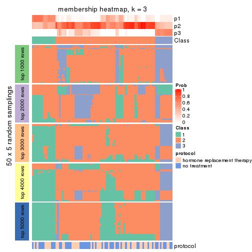
membership_heatmap(res, k = 4)
membership_heatmap(res, k = 5)
membership_heatmap(res, k = 6)
As soon as we have had the classes for columns, we can look for signatures which are significantly different between classes which can be candidate marks for certain classes. Following are the heatmaps for signatures.
Signature heatmaps where rows are scaled:
get_signatures(res, k = 2)
get_signatures(res, k = 3)
get_signatures(res, k = 4)
get_signatures(res, k = 5)
get_signatures(res, k = 6)
Signature heatmaps where rows are not scaled:
get_signatures(res, k = 2, scale_rows = FALSE)
get_signatures(res, k = 3, scale_rows = FALSE)

get_signatures(res, k = 4, scale_rows = FALSE)
get_signatures(res, k = 5, scale_rows = FALSE)
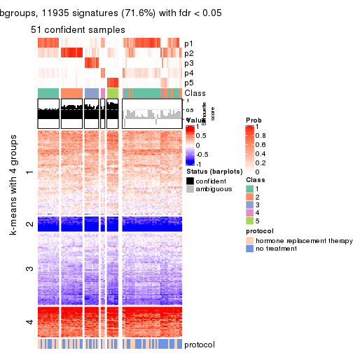
get_signatures(res, k = 6, scale_rows = FALSE)
Compare the overlap of signatures from different k:
compare_signatures(res)
get_signature() returns a data frame invisibly. TO get the list of signatures, the function
call should be assigned to a variable explicitly. In following code, if plot argument is set
to FALSE, no heatmap is plotted while only the differential analysis is performed.
# code only for demonstration
tb = get_signature(res, k = ..., plot = FALSE)
An example of the output of tb is:
#> which_row fdr mean_1 mean_2 scaled_mean_1 scaled_mean_2 km
#> 1 38 0.042760348 8.373488 9.131774 -0.5533452 0.5164555 1
#> 2 40 0.018707592 7.106213 8.469186 -0.6173731 0.5762149 1
#> 3 55 0.019134737 10.221463 11.207825 -0.6159697 0.5749050 1
#> 4 59 0.006059896 5.921854 7.869574 -0.6899429 0.6439467 1
#> 5 60 0.018055526 8.928898 10.211722 -0.6204761 0.5791110 1
#> 6 98 0.009384629 15.714769 14.887706 0.6635654 -0.6193277 2
...
The columns in tb are:
which_row: row indices corresponding to the input matrix.fdr: FDR for the differential test. mean_x: The mean value in group x.scaled_mean_x: The mean value in group x after rows are scaled.km: Row groups if k-means clustering is applied to rows.UMAP plot which shows how samples are separated.
dimension_reduction(res, k = 2, method = "UMAP")
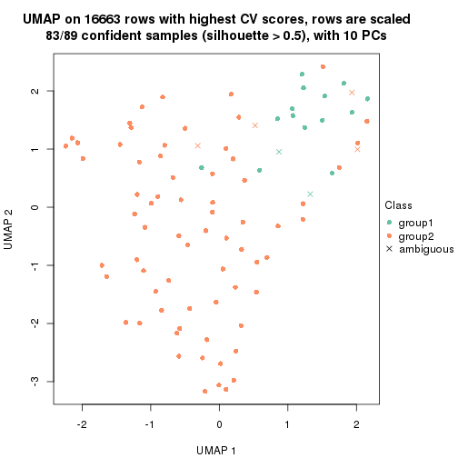
dimension_reduction(res, k = 3, method = "UMAP")

dimension_reduction(res, k = 4, method = "UMAP")
dimension_reduction(res, k = 5, method = "UMAP")
dimension_reduction(res, k = 6, method = "UMAP")
Following heatmap shows how subgroups are split when increasing k:
collect_classes(res)
Test correlation between subgroups and known annotations. If the known annotation is numeric, one-way ANOVA test is applied, and if the known annotation is discrete, chi-squared contingency table test is applied.
test_to_known_factors(res)
#> n protocol(p) k
#> CV:mclust 83 0.885 2
#> CV:mclust 55 0.332 3
#> CV:mclust 85 0.851 4
#> CV:mclust 51 0.972 5
#> CV:mclust 51 0.596 6
If matrix rows can be associated to genes, consider to use functional_enrichment(res,
...) to perform function enrichment for the signature genes. See this vignette for more detailed explanations.
The object with results only for a single top-value method and a single partition method can be extracted as:
res = res_list["CV", "NMF"]
# you can also extract it by
# res = res_list["CV:NMF"]
A summary of res and all the functions that can be applied to it:
res
#> A 'ConsensusPartition' object with k = 2, 3, 4, 5, 6.
#> On a matrix with 16663 rows and 89 columns.
#> Top rows (1000, 2000, 3000, 4000, 5000) are extracted by 'CV' method.
#> Subgroups are detected by 'NMF' method.
#> Performed in total 1250 partitions by row resampling.
#> Best k for subgroups seems to be 2.
#>
#> Following methods can be applied to this 'ConsensusPartition' object:
#> [1] "cola_report" "collect_classes" "collect_plots"
#> [4] "collect_stats" "colnames" "compare_signatures"
#> [7] "consensus_heatmap" "dimension_reduction" "functional_enrichment"
#> [10] "get_anno_col" "get_anno" "get_classes"
#> [13] "get_consensus" "get_matrix" "get_membership"
#> [16] "get_param" "get_signatures" "get_stats"
#> [19] "is_best_k" "is_stable_k" "membership_heatmap"
#> [22] "ncol" "nrow" "plot_ecdf"
#> [25] "rownames" "select_partition_number" "show"
#> [28] "suggest_best_k" "test_to_known_factors"
collect_plots() function collects all the plots made from res for all k (number of partitions)
into one single page to provide an easy and fast comparison between different k.
collect_plots(res)
The plots are:
k and the heatmap of
predicted classes for each k.k.k.k.All the plots in panels can be made by individual functions and they are plotted later in this section.
select_partition_number() produces several plots showing different
statistics for choosing “optimized” k. There are following statistics:
k;k, the area increased is defined as \(A_k - A_{k-1}\).The detailed explanations of these statistics can be found in the cola vignette.
Generally speaking, lower PAC score, higher mean silhouette score or higher
concordance corresponds to better partition. Rand index and Jaccard index
measure how similar the current partition is compared to partition with k-1.
If they are too similar, we won't accept k is better than k-1.
select_partition_number(res)
The numeric values for all these statistics can be obtained by get_stats().
get_stats(res)
#> k 1-PAC mean_silhouette concordance area_increased Rand Jaccard
#> 2 2 0.713 0.864 0.940 0.4848 0.513 0.513
#> 3 3 0.428 0.681 0.817 0.3698 0.682 0.451
#> 4 4 0.496 0.597 0.787 0.1159 0.759 0.413
#> 5 5 0.562 0.602 0.727 0.0755 0.881 0.581
#> 6 6 0.579 0.474 0.679 0.0403 0.907 0.587
suggest_best_k() suggests the best \(k\) based on these statistics. The rules are as follows:
suggest_best_k(res)
#> [1] 2
Following shows the table of the partitions (You need to click the show/hide
code output link to see it). The membership matrix (columns with name p*)
is inferred by
clue::cl_consensus()
function with the SE method. Basically the value in the membership matrix
represents the probability to belong to a certain group. The finall class
label for an item is determined with the group with highest probability it
belongs to.
In get_classes() function, the entropy is calculated from the membership
matrix and the silhouette score is calculated from the consensus matrix.
cbind(get_classes(res, k = 2), get_membership(res, k = 2))
#> class entropy silhouette p1 p2
#> GSM78921 1 0.0000 0.922 1.000 0.000
#> GSM78922 1 0.0000 0.922 1.000 0.000
#> GSM78923 2 0.0000 0.944 0.000 1.000
#> GSM78924 2 0.0000 0.944 0.000 1.000
#> GSM78925 2 0.0000 0.944 0.000 1.000
#> GSM78926 1 0.0000 0.922 1.000 0.000
#> GSM78927 1 0.0000 0.922 1.000 0.000
#> GSM78928 2 0.3879 0.892 0.076 0.924
#> GSM78929 2 0.0000 0.944 0.000 1.000
#> GSM78930 1 0.0000 0.922 1.000 0.000
#> GSM78931 1 0.2948 0.893 0.948 0.052
#> GSM78932 2 0.0000 0.944 0.000 1.000
#> GSM78933 1 0.0000 0.922 1.000 0.000
#> GSM78934 2 0.0000 0.944 0.000 1.000
#> GSM78935 1 0.0000 0.922 1.000 0.000
#> GSM78936 1 0.7219 0.757 0.800 0.200
#> GSM78937 1 0.2423 0.901 0.960 0.040
#> GSM78938 1 0.0000 0.922 1.000 0.000
#> GSM78939 1 0.0000 0.922 1.000 0.000
#> GSM78940 1 0.9710 0.390 0.600 0.400
#> GSM78941 2 0.0000 0.944 0.000 1.000
#> GSM78942 1 0.7219 0.757 0.800 0.200
#> GSM78943 1 0.0000 0.922 1.000 0.000
#> GSM78944 1 0.9710 0.391 0.600 0.400
#> GSM78945 1 0.0376 0.921 0.996 0.004
#> GSM78946 1 0.2236 0.903 0.964 0.036
#> GSM78947 2 0.0000 0.944 0.000 1.000
#> GSM78948 1 0.0000 0.922 1.000 0.000
#> GSM78949 1 0.9635 0.419 0.612 0.388
#> GSM78950 1 0.0000 0.922 1.000 0.000
#> GSM78951 1 0.0000 0.922 1.000 0.000
#> GSM78952 2 0.0000 0.944 0.000 1.000
#> GSM78953 2 0.0000 0.944 0.000 1.000
#> GSM78954 2 0.0000 0.944 0.000 1.000
#> GSM78955 2 0.4431 0.877 0.092 0.908
#> GSM78956 2 0.0000 0.944 0.000 1.000
#> GSM78957 2 0.0000 0.944 0.000 1.000
#> GSM78958 1 0.7219 0.757 0.800 0.200
#> GSM78959 1 0.0000 0.922 1.000 0.000
#> GSM78960 2 0.0938 0.938 0.012 0.988
#> GSM78961 2 0.1843 0.928 0.028 0.972
#> GSM78962 1 0.0000 0.922 1.000 0.000
#> GSM78963 2 0.0000 0.944 0.000 1.000
#> GSM78964 2 0.0000 0.944 0.000 1.000
#> GSM78965 2 0.7528 0.717 0.216 0.784
#> GSM78966 1 0.0000 0.922 1.000 0.000
#> GSM78967 1 0.0000 0.922 1.000 0.000
#> GSM78879 1 0.0000 0.922 1.000 0.000
#> GSM78880 1 0.0000 0.922 1.000 0.000
#> GSM78881 1 0.0000 0.922 1.000 0.000
#> GSM78882 1 0.0000 0.922 1.000 0.000
#> GSM78883 1 0.0000 0.922 1.000 0.000
#> GSM78884 1 0.0000 0.922 1.000 0.000
#> GSM78885 1 0.4161 0.869 0.916 0.084
#> GSM78886 2 0.8661 0.586 0.288 0.712
#> GSM78887 1 0.7219 0.757 0.800 0.200
#> GSM78888 1 0.0000 0.922 1.000 0.000
#> GSM78889 2 0.0000 0.944 0.000 1.000
#> GSM78890 2 0.7453 0.725 0.212 0.788
#> GSM78891 1 0.0000 0.922 1.000 0.000
#> GSM78892 2 0.1843 0.928 0.028 0.972
#> GSM78893 2 0.0000 0.944 0.000 1.000
#> GSM78894 1 0.0000 0.922 1.000 0.000
#> GSM78895 2 0.0000 0.944 0.000 1.000
#> GSM78896 1 0.0376 0.921 0.996 0.004
#> GSM78897 2 0.9754 0.263 0.408 0.592
#> GSM78898 1 0.9710 0.391 0.600 0.400
#> GSM78899 1 0.0000 0.922 1.000 0.000
#> GSM78900 1 0.7219 0.757 0.800 0.200
#> GSM78901 1 0.7950 0.702 0.760 0.240
#> GSM78902 1 0.6438 0.766 0.836 0.164
#> GSM78903 2 0.0000 0.944 0.000 1.000
#> GSM78904 1 0.9710 0.390 0.600 0.400
#> GSM78905 2 0.2423 0.920 0.040 0.960
#> GSM78906 2 0.0000 0.944 0.000 1.000
#> GSM78907 1 0.1843 0.908 0.972 0.028
#> GSM78908 1 0.0376 0.921 0.996 0.004
#> GSM78909 2 0.0000 0.944 0.000 1.000
#> GSM78910 1 0.0000 0.922 1.000 0.000
#> GSM78911 2 0.4690 0.866 0.100 0.900
#> GSM78912 1 0.0000 0.922 1.000 0.000
#> GSM78913 2 0.0000 0.944 0.000 1.000
#> GSM78914 1 0.0000 0.922 1.000 0.000
#> GSM78915 2 0.0000 0.944 0.000 1.000
#> GSM78916 2 0.7815 0.691 0.232 0.768
#> GSM78917 1 0.0000 0.922 1.000 0.000
#> GSM78918 1 0.0672 0.919 0.992 0.008
#> GSM78919 1 0.0000 0.922 1.000 0.000
#> GSM78920 2 0.0000 0.944 0.000 1.000
cbind(get_classes(res, k = 3), get_membership(res, k = 3))
#> class entropy silhouette p1 p2 p3
#> GSM78921 3 0.5948 0.241 0.360 0.000 0.640
#> GSM78922 3 0.1289 0.761 0.032 0.000 0.968
#> GSM78923 2 0.2625 0.872 0.084 0.916 0.000
#> GSM78924 2 0.0000 0.887 0.000 1.000 0.000
#> GSM78925 2 0.0747 0.883 0.000 0.984 0.016
#> GSM78926 1 0.4504 0.697 0.804 0.000 0.196
#> GSM78927 1 0.6126 0.449 0.600 0.000 0.400
#> GSM78928 2 0.4291 0.818 0.180 0.820 0.000
#> GSM78929 2 0.0424 0.888 0.008 0.992 0.000
#> GSM78930 3 0.0237 0.761 0.000 0.004 0.996
#> GSM78931 1 0.7148 0.638 0.716 0.108 0.176
#> GSM78932 2 0.0237 0.886 0.000 0.996 0.004
#> GSM78933 3 0.4887 0.646 0.228 0.000 0.772
#> GSM78934 2 0.5363 0.692 0.276 0.724 0.000
#> GSM78935 1 0.5882 0.528 0.652 0.000 0.348
#> GSM78936 1 0.4139 0.712 0.860 0.124 0.016
#> GSM78937 3 0.2434 0.767 0.036 0.024 0.940
#> GSM78938 3 0.6168 0.520 0.412 0.000 0.588
#> GSM78939 1 0.3116 0.717 0.892 0.000 0.108
#> GSM78940 1 0.4346 0.636 0.816 0.184 0.000
#> GSM78941 2 0.4346 0.821 0.184 0.816 0.000
#> GSM78942 1 0.8728 0.425 0.568 0.144 0.288
#> GSM78943 3 0.2711 0.745 0.088 0.000 0.912
#> GSM78944 1 0.7021 0.598 0.708 0.216 0.076
#> GSM78945 3 0.5948 0.610 0.360 0.000 0.640
#> GSM78946 1 0.3112 0.699 0.900 0.004 0.096
#> GSM78947 2 0.0747 0.882 0.000 0.984 0.016
#> GSM78948 1 0.5785 0.528 0.668 0.000 0.332
#> GSM78949 1 0.5678 0.627 0.776 0.192 0.032
#> GSM78950 1 0.4605 0.692 0.796 0.000 0.204
#> GSM78951 3 0.0000 0.761 0.000 0.000 1.000
#> GSM78952 2 0.0237 0.888 0.004 0.996 0.000
#> GSM78953 2 0.0000 0.887 0.000 1.000 0.000
#> GSM78954 3 0.7597 0.321 0.048 0.384 0.568
#> GSM78955 2 0.3752 0.844 0.144 0.856 0.000
#> GSM78956 2 0.3941 0.840 0.156 0.844 0.000
#> GSM78957 2 0.5678 0.648 0.316 0.684 0.000
#> GSM78958 1 0.5167 0.676 0.792 0.192 0.016
#> GSM78959 1 0.6008 0.470 0.628 0.000 0.372
#> GSM78960 3 0.3941 0.704 0.000 0.156 0.844
#> GSM78961 2 0.5024 0.654 0.004 0.776 0.220
#> GSM78962 1 0.5216 0.670 0.740 0.000 0.260
#> GSM78963 2 0.0592 0.884 0.000 0.988 0.012
#> GSM78964 2 0.0592 0.884 0.000 0.988 0.012
#> GSM78965 3 0.3941 0.704 0.000 0.156 0.844
#> GSM78966 1 0.5988 0.397 0.632 0.000 0.368
#> GSM78967 3 0.3192 0.738 0.112 0.000 0.888
#> GSM78879 1 0.4452 0.698 0.808 0.000 0.192
#> GSM78880 3 0.4750 0.592 0.216 0.000 0.784
#> GSM78881 3 0.5138 0.512 0.252 0.000 0.748
#> GSM78882 3 0.1643 0.760 0.044 0.000 0.956
#> GSM78883 1 0.4931 0.659 0.768 0.000 0.232
#> GSM78884 1 0.3816 0.706 0.852 0.000 0.148
#> GSM78885 1 0.5094 0.717 0.824 0.040 0.136
#> GSM78886 1 0.5098 0.558 0.752 0.248 0.000
#> GSM78887 1 0.1453 0.712 0.968 0.024 0.008
#> GSM78888 1 0.5216 0.602 0.740 0.000 0.260
#> GSM78889 2 0.0000 0.887 0.000 1.000 0.000
#> GSM78890 3 0.7441 0.616 0.164 0.136 0.700
#> GSM78891 3 0.6026 0.588 0.376 0.000 0.624
#> GSM78892 2 0.3686 0.847 0.140 0.860 0.000
#> GSM78893 1 0.6095 0.184 0.608 0.392 0.000
#> GSM78894 1 0.0983 0.711 0.980 0.004 0.016
#> GSM78895 2 0.0747 0.888 0.016 0.984 0.000
#> GSM78896 3 0.1989 0.763 0.048 0.004 0.948
#> GSM78897 2 0.7671 0.452 0.072 0.628 0.300
#> GSM78898 3 0.7588 0.609 0.196 0.120 0.684
#> GSM78899 1 0.4452 0.698 0.808 0.000 0.192
#> GSM78900 3 0.4062 0.702 0.000 0.164 0.836
#> GSM78901 1 0.1753 0.706 0.952 0.048 0.000
#> GSM78902 3 0.1647 0.766 0.036 0.004 0.960
#> GSM78903 2 0.3551 0.851 0.132 0.868 0.000
#> GSM78904 1 0.5882 0.433 0.652 0.348 0.000
#> GSM78905 3 0.6964 0.577 0.052 0.264 0.684
#> GSM78906 2 0.1860 0.881 0.052 0.948 0.000
#> GSM78907 3 0.3879 0.744 0.152 0.000 0.848
#> GSM78908 3 0.1765 0.758 0.004 0.040 0.956
#> GSM78909 2 0.0592 0.886 0.012 0.988 0.000
#> GSM78910 3 0.5810 0.529 0.336 0.000 0.664
#> GSM78911 1 0.4654 0.626 0.792 0.208 0.000
#> GSM78912 3 0.0829 0.762 0.012 0.004 0.984
#> GSM78913 2 0.1289 0.871 0.000 0.968 0.032
#> GSM78914 3 0.1163 0.759 0.000 0.028 0.972
#> GSM78915 3 0.5591 0.564 0.000 0.304 0.696
#> GSM78916 1 0.5835 0.375 0.660 0.340 0.000
#> GSM78917 3 0.6140 0.260 0.404 0.000 0.596
#> GSM78918 1 0.2711 0.698 0.912 0.000 0.088
#> GSM78919 3 0.4796 0.718 0.220 0.000 0.780
#> GSM78920 2 0.4291 0.825 0.180 0.820 0.000
cbind(get_classes(res, k = 4), get_membership(res, k = 4))
#> class entropy silhouette p1 p2 p3 p4
#> GSM78921 3 0.6207 -0.0647 0.452 0.000 0.496 0.052
#> GSM78922 3 0.4304 0.5451 0.284 0.000 0.716 0.000
#> GSM78923 2 0.1042 0.7844 0.020 0.972 0.000 0.008
#> GSM78924 2 0.0000 0.7933 0.000 1.000 0.000 0.000
#> GSM78925 2 0.0592 0.7908 0.000 0.984 0.000 0.016
#> GSM78926 1 0.6715 0.5401 0.604 0.000 0.144 0.252
#> GSM78927 1 0.2988 0.7530 0.876 0.000 0.012 0.112
#> GSM78928 4 0.7073 0.4486 0.016 0.220 0.148 0.616
#> GSM78929 2 0.0000 0.7933 0.000 1.000 0.000 0.000
#> GSM78930 3 0.0000 0.7011 0.000 0.000 1.000 0.000
#> GSM78931 4 0.6883 0.4779 0.000 0.156 0.260 0.584
#> GSM78932 2 0.0707 0.7906 0.000 0.980 0.020 0.000
#> GSM78933 1 0.1389 0.7786 0.952 0.000 0.048 0.000
#> GSM78934 2 0.5125 0.1134 0.008 0.604 0.000 0.388
#> GSM78935 1 0.2021 0.7813 0.936 0.000 0.024 0.040
#> GSM78936 1 0.6490 0.5170 0.640 0.156 0.000 0.204
#> GSM78937 3 0.4933 0.3963 0.432 0.000 0.568 0.000
#> GSM78938 1 0.7363 0.2356 0.516 0.000 0.284 0.200
#> GSM78939 1 0.3024 0.7351 0.852 0.000 0.000 0.148
#> GSM78940 4 0.7369 0.3068 0.196 0.292 0.000 0.512
#> GSM78941 2 0.6423 0.1353 0.048 0.508 0.008 0.436
#> GSM78942 4 0.6806 0.4178 0.000 0.112 0.344 0.544
#> GSM78943 1 0.3024 0.7198 0.852 0.000 0.148 0.000
#> GSM78944 1 0.6275 0.5776 0.660 0.136 0.000 0.204
#> GSM78945 1 0.2011 0.7764 0.920 0.000 0.000 0.080
#> GSM78946 1 0.0779 0.7875 0.980 0.000 0.004 0.016
#> GSM78947 2 0.4998 -0.0596 0.000 0.512 0.488 0.000
#> GSM78948 1 0.1624 0.7830 0.952 0.000 0.028 0.020
#> GSM78949 1 0.4395 0.6929 0.776 0.016 0.004 0.204
#> GSM78950 4 0.6637 0.5103 0.240 0.000 0.144 0.616
#> GSM78951 3 0.0188 0.7022 0.004 0.000 0.996 0.000
#> GSM78952 2 0.0000 0.7933 0.000 1.000 0.000 0.000
#> GSM78953 2 0.0707 0.7898 0.000 0.980 0.020 0.000
#> GSM78954 3 0.5250 0.5504 0.000 0.068 0.736 0.196
#> GSM78955 2 0.5392 0.5779 0.056 0.736 0.008 0.200
#> GSM78956 4 0.4675 0.4803 0.020 0.244 0.000 0.736
#> GSM78957 4 0.1716 0.6276 0.000 0.064 0.000 0.936
#> GSM78958 4 0.5882 0.3549 0.344 0.048 0.000 0.608
#> GSM78959 1 0.1584 0.7819 0.952 0.000 0.036 0.012
#> GSM78960 3 0.1302 0.6905 0.000 0.044 0.956 0.000
#> GSM78961 4 0.7510 0.2867 0.000 0.184 0.380 0.436
#> GSM78962 4 0.3764 0.5533 0.000 0.000 0.216 0.784
#> GSM78963 2 0.1557 0.7665 0.000 0.944 0.056 0.000
#> GSM78964 2 0.2843 0.7453 0.000 0.892 0.088 0.020
#> GSM78965 3 0.3852 0.6417 0.012 0.180 0.808 0.000
#> GSM78966 1 0.3392 0.7651 0.856 0.000 0.020 0.124
#> GSM78967 1 0.2149 0.7719 0.912 0.000 0.088 0.000
#> GSM78879 1 0.5096 0.7037 0.760 0.000 0.084 0.156
#> GSM78880 1 0.2469 0.7674 0.892 0.000 0.108 0.000
#> GSM78881 1 0.2485 0.7738 0.916 0.016 0.064 0.004
#> GSM78882 3 0.3907 0.6107 0.232 0.000 0.768 0.000
#> GSM78883 4 0.5429 0.5522 0.208 0.000 0.072 0.720
#> GSM78884 4 0.5874 0.5485 0.124 0.000 0.176 0.700
#> GSM78885 1 0.3732 0.7494 0.852 0.056 0.000 0.092
#> GSM78886 4 0.5691 0.3499 0.048 0.304 0.000 0.648
#> GSM78887 4 0.0817 0.6363 0.024 0.000 0.000 0.976
#> GSM78888 1 0.3554 0.7668 0.844 0.000 0.020 0.136
#> GSM78889 2 0.1398 0.7776 0.000 0.956 0.040 0.004
#> GSM78890 3 0.9916 0.0981 0.244 0.248 0.308 0.200
#> GSM78891 1 0.4136 0.7020 0.788 0.000 0.016 0.196
#> GSM78892 2 0.3080 0.7248 0.096 0.880 0.000 0.024
#> GSM78893 2 0.5417 0.5420 0.056 0.704 0.000 0.240
#> GSM78894 1 0.3972 0.7032 0.788 0.008 0.000 0.204
#> GSM78895 2 0.0000 0.7933 0.000 1.000 0.000 0.000
#> GSM78896 3 0.2408 0.6909 0.104 0.000 0.896 0.000
#> GSM78897 1 0.4720 0.4971 0.672 0.324 0.004 0.000
#> GSM78898 1 0.6931 0.5859 0.652 0.032 0.116 0.200
#> GSM78899 4 0.4831 0.5665 0.208 0.000 0.040 0.752
#> GSM78900 3 0.3768 0.6360 0.008 0.184 0.808 0.000
#> GSM78901 1 0.6084 0.5991 0.676 0.120 0.000 0.204
#> GSM78902 3 0.0524 0.7028 0.004 0.000 0.988 0.008
#> GSM78903 2 0.4842 0.6002 0.048 0.760 0.000 0.192
#> GSM78904 1 0.4781 0.4513 0.660 0.336 0.000 0.004
#> GSM78905 3 0.7502 0.4571 0.036 0.216 0.600 0.148
#> GSM78906 2 0.0336 0.7930 0.000 0.992 0.000 0.008
#> GSM78907 3 0.5573 0.4958 0.368 0.000 0.604 0.028
#> GSM78908 3 0.4967 0.6546 0.108 0.104 0.784 0.004
#> GSM78909 4 0.5530 0.4401 0.000 0.336 0.032 0.632
#> GSM78910 1 0.1004 0.7859 0.972 0.000 0.024 0.004
#> GSM78911 4 0.0188 0.6348 0.000 0.004 0.000 0.996
#> GSM78912 3 0.0336 0.7030 0.008 0.000 0.992 0.000
#> GSM78913 2 0.2814 0.6872 0.000 0.868 0.132 0.000
#> GSM78914 3 0.0188 0.7030 0.004 0.000 0.996 0.000
#> GSM78915 3 0.3942 0.5931 0.000 0.236 0.764 0.000
#> GSM78916 4 0.6176 0.0433 0.052 0.424 0.000 0.524
#> GSM78917 1 0.2334 0.7760 0.908 0.000 0.088 0.004
#> GSM78918 4 0.3945 0.5456 0.216 0.000 0.004 0.780
#> GSM78919 1 0.3271 0.7494 0.856 0.000 0.012 0.132
#> GSM78920 2 0.4543 0.4665 0.324 0.676 0.000 0.000
cbind(get_classes(res, k = 5), get_membership(res, k = 5))
#> class entropy silhouette p1 p2 p3 p4 p5
#> GSM78921 3 0.584 0.480 0.296 0.092 0.600 0.012 0.000
#> GSM78922 3 0.585 0.453 0.272 0.140 0.588 0.000 0.000
#> GSM78923 5 0.351 0.677 0.000 0.252 0.000 0.000 0.748
#> GSM78924 5 0.205 0.814 0.000 0.068 0.016 0.000 0.916
#> GSM78925 5 0.296 0.799 0.000 0.120 0.024 0.000 0.856
#> GSM78926 1 0.421 0.683 0.808 0.024 0.088 0.080 0.000
#> GSM78927 1 0.181 0.701 0.928 0.000 0.060 0.000 0.012
#> GSM78928 4 0.559 0.408 0.000 0.308 0.076 0.608 0.008
#> GSM78929 5 0.200 0.811 0.036 0.040 0.000 0.000 0.924
#> GSM78930 3 0.180 0.710 0.020 0.028 0.940 0.012 0.000
#> GSM78931 3 0.885 -0.122 0.220 0.012 0.292 0.268 0.208
#> GSM78932 5 0.456 0.680 0.096 0.012 0.108 0.004 0.780
#> GSM78933 1 0.181 0.734 0.936 0.040 0.020 0.004 0.000
#> GSM78934 5 0.517 0.323 0.004 0.024 0.008 0.380 0.584
#> GSM78935 1 0.156 0.721 0.948 0.000 0.020 0.028 0.004
#> GSM78936 1 0.594 0.514 0.668 0.012 0.016 0.180 0.124
#> GSM78937 3 0.485 0.367 0.424 0.024 0.552 0.000 0.000
#> GSM78938 2 0.353 0.689 0.016 0.848 0.052 0.084 0.000
#> GSM78939 1 0.236 0.733 0.912 0.036 0.008 0.044 0.000
#> GSM78940 4 0.624 0.554 0.056 0.112 0.008 0.668 0.156
#> GSM78941 2 0.477 0.580 0.000 0.740 0.004 0.108 0.148
#> GSM78942 4 0.468 0.647 0.000 0.012 0.216 0.728 0.044
#> GSM78943 1 0.476 0.668 0.732 0.148 0.120 0.000 0.000
#> GSM78944 2 0.353 0.668 0.172 0.804 0.000 0.000 0.024
#> GSM78945 1 0.504 0.115 0.492 0.484 0.016 0.004 0.004
#> GSM78946 1 0.412 0.707 0.796 0.140 0.012 0.052 0.000
#> GSM78947 5 0.411 0.620 0.016 0.012 0.216 0.000 0.756
#> GSM78948 1 0.242 0.737 0.908 0.052 0.008 0.032 0.000
#> GSM78949 2 0.313 0.694 0.132 0.848 0.004 0.012 0.004
#> GSM78950 4 0.429 0.703 0.076 0.028 0.092 0.804 0.000
#> GSM78951 3 0.265 0.694 0.000 0.068 0.888 0.044 0.000
#> GSM78952 5 0.112 0.815 0.000 0.044 0.000 0.000 0.956
#> GSM78953 5 0.096 0.803 0.004 0.008 0.016 0.000 0.972
#> GSM78954 3 0.536 0.509 0.000 0.304 0.616 0.000 0.080
#> GSM78955 2 0.195 0.689 0.000 0.912 0.004 0.000 0.084
#> GSM78956 4 0.465 0.486 0.000 0.280 0.004 0.684 0.032
#> GSM78957 4 0.224 0.709 0.000 0.084 0.008 0.904 0.004
#> GSM78958 1 0.736 0.361 0.568 0.012 0.088 0.168 0.164
#> GSM78959 1 0.104 0.735 0.964 0.032 0.004 0.000 0.000
#> GSM78960 3 0.265 0.707 0.000 0.032 0.884 0.000 0.084
#> GSM78961 4 0.483 0.588 0.000 0.012 0.272 0.684 0.032
#> GSM78962 4 0.249 0.711 0.000 0.004 0.124 0.872 0.000
#> GSM78963 5 0.217 0.814 0.000 0.064 0.024 0.000 0.912
#> GSM78964 5 0.380 0.768 0.000 0.160 0.044 0.000 0.796
#> GSM78965 3 0.312 0.702 0.024 0.004 0.852 0.000 0.120
#> GSM78966 1 0.533 0.339 0.552 0.404 0.032 0.012 0.000
#> GSM78967 1 0.617 0.470 0.572 0.276 0.144 0.008 0.000
#> GSM78879 1 0.363 0.716 0.848 0.040 0.076 0.036 0.000
#> GSM78880 1 0.505 0.657 0.704 0.156 0.140 0.000 0.000
#> GSM78881 1 0.249 0.696 0.896 0.000 0.080 0.004 0.020
#> GSM78882 3 0.516 0.544 0.276 0.064 0.656 0.004 0.000
#> GSM78883 4 0.666 0.406 0.300 0.012 0.148 0.532 0.008
#> GSM78884 4 0.483 0.593 0.248 0.012 0.040 0.700 0.000
#> GSM78885 1 0.336 0.685 0.864 0.008 0.008 0.052 0.068
#> GSM78886 2 0.555 0.330 0.008 0.576 0.000 0.356 0.060
#> GSM78887 4 0.179 0.720 0.024 0.012 0.008 0.944 0.012
#> GSM78888 1 0.487 0.608 0.700 0.240 0.008 0.052 0.000
#> GSM78889 5 0.283 0.796 0.040 0.020 0.028 0.012 0.900
#> GSM78890 2 0.214 0.706 0.004 0.920 0.048 0.000 0.028
#> GSM78891 2 0.308 0.709 0.072 0.876 0.028 0.024 0.000
#> GSM78892 5 0.418 0.749 0.092 0.068 0.008 0.016 0.816
#> GSM78893 2 0.600 0.504 0.016 0.628 0.000 0.212 0.144
#> GSM78894 2 0.445 0.631 0.184 0.752 0.004 0.060 0.000
#> GSM78895 5 0.213 0.807 0.000 0.108 0.000 0.000 0.892
#> GSM78896 3 0.403 0.687 0.148 0.048 0.796 0.008 0.000
#> GSM78897 1 0.544 0.378 0.588 0.000 0.016 0.040 0.356
#> GSM78898 2 0.212 0.717 0.036 0.924 0.032 0.000 0.008
#> GSM78899 4 0.502 0.388 0.396 0.004 0.028 0.572 0.000
#> GSM78900 3 0.350 0.685 0.020 0.008 0.832 0.004 0.136
#> GSM78901 2 0.525 0.392 0.340 0.612 0.000 0.020 0.028
#> GSM78902 3 0.429 0.634 0.000 0.152 0.768 0.080 0.000
#> GSM78903 5 0.430 0.186 0.000 0.476 0.000 0.000 0.524
#> GSM78904 1 0.603 0.308 0.532 0.012 0.008 0.064 0.384
#> GSM78905 2 0.631 -0.184 0.008 0.452 0.420 0.000 0.120
#> GSM78906 5 0.285 0.768 0.000 0.172 0.000 0.000 0.828
#> GSM78907 3 0.644 0.625 0.144 0.096 0.660 0.092 0.008
#> GSM78908 3 0.615 0.606 0.084 0.012 0.688 0.076 0.140
#> GSM78909 4 0.346 0.717 0.000 0.004 0.068 0.844 0.084
#> GSM78910 1 0.443 0.607 0.712 0.256 0.028 0.004 0.000
#> GSM78911 4 0.347 0.651 0.004 0.192 0.000 0.796 0.008
#> GSM78912 3 0.263 0.690 0.000 0.024 0.896 0.068 0.012
#> GSM78913 5 0.273 0.805 0.000 0.052 0.064 0.000 0.884
#> GSM78914 3 0.165 0.717 0.008 0.012 0.944 0.000 0.036
#> GSM78915 3 0.377 0.686 0.008 0.036 0.812 0.000 0.144
#> GSM78916 2 0.419 0.655 0.004 0.788 0.000 0.128 0.080
#> GSM78917 1 0.468 0.643 0.724 0.212 0.060 0.004 0.000
#> GSM78918 2 0.315 0.675 0.000 0.844 0.028 0.128 0.000
#> GSM78919 2 0.487 0.352 0.324 0.640 0.032 0.004 0.000
#> GSM78920 5 0.508 0.600 0.216 0.012 0.008 0.052 0.712
cbind(get_classes(res, k = 6), get_membership(res, k = 6))
#> class entropy silhouette p1 p2 p3 p4 p5 p6
#> GSM78921 3 0.6963 0.2269 0.372 0.028 0.424 0.120 0.000 0.056
#> GSM78922 3 0.7084 0.3381 0.260 0.000 0.444 0.180 0.000 0.116
#> GSM78923 5 0.4605 0.5677 0.004 0.012 0.000 0.044 0.680 0.260
#> GSM78924 5 0.0779 0.7650 0.000 0.000 0.008 0.008 0.976 0.008
#> GSM78925 5 0.2848 0.7243 0.000 0.000 0.036 0.004 0.856 0.104
#> GSM78926 1 0.2590 0.5156 0.896 0.028 0.044 0.024 0.000 0.008
#> GSM78927 1 0.3202 0.5279 0.800 0.000 0.024 0.176 0.000 0.000
#> GSM78928 2 0.5918 0.5469 0.004 0.644 0.148 0.016 0.036 0.152
#> GSM78929 5 0.2466 0.7458 0.012 0.004 0.000 0.084 0.888 0.012
#> GSM78930 3 0.4366 0.6249 0.088 0.080 0.788 0.020 0.020 0.004
#> GSM78931 1 0.8796 -0.1429 0.268 0.244 0.128 0.164 0.196 0.000
#> GSM78932 5 0.4536 0.3601 0.004 0.000 0.028 0.408 0.560 0.000
#> GSM78933 1 0.5420 0.2441 0.492 0.000 0.024 0.424 0.000 0.060
#> GSM78934 2 0.6430 0.0327 0.004 0.364 0.000 0.280 0.344 0.008
#> GSM78935 4 0.5057 -0.1396 0.412 0.000 0.016 0.528 0.000 0.044
#> GSM78936 4 0.5717 0.4329 0.152 0.116 0.000 0.656 0.072 0.004
#> GSM78937 4 0.6097 0.2050 0.172 0.000 0.184 0.592 0.004 0.048
#> GSM78938 6 0.4138 0.6505 0.024 0.132 0.060 0.004 0.000 0.780
#> GSM78939 1 0.4515 0.5453 0.752 0.036 0.012 0.160 0.000 0.040
#> GSM78940 2 0.7285 0.4168 0.040 0.516 0.000 0.200 0.120 0.124
#> GSM78941 6 0.3445 0.6189 0.000 0.048 0.000 0.000 0.156 0.796
#> GSM78942 2 0.5493 0.5375 0.004 0.652 0.188 0.124 0.032 0.000
#> GSM78943 1 0.7362 -0.0018 0.344 0.000 0.172 0.336 0.000 0.148
#> GSM78944 6 0.3556 0.6924 0.104 0.000 0.000 0.012 0.068 0.816
#> GSM78945 6 0.5090 0.5342 0.176 0.000 0.024 0.120 0.000 0.680
#> GSM78946 1 0.4705 0.5042 0.712 0.000 0.016 0.168 0.000 0.104
#> GSM78947 5 0.4121 0.6186 0.000 0.000 0.060 0.220 0.720 0.000
#> GSM78948 1 0.5665 0.3778 0.548 0.000 0.024 0.328 0.000 0.100
#> GSM78949 6 0.2127 0.7046 0.060 0.004 0.000 0.012 0.012 0.912
#> GSM78950 2 0.5700 0.4609 0.220 0.636 0.052 0.084 0.000 0.008
#> GSM78951 3 0.2770 0.6418 0.008 0.052 0.884 0.040 0.000 0.016
#> GSM78952 5 0.1921 0.7630 0.000 0.004 0.004 0.044 0.924 0.024
#> GSM78953 5 0.3833 0.6269 0.000 0.004 0.028 0.232 0.736 0.000
#> GSM78954 3 0.5723 0.4410 0.000 0.000 0.568 0.016 0.152 0.264
#> GSM78955 6 0.2420 0.6702 0.000 0.008 0.008 0.000 0.108 0.876
#> GSM78956 2 0.3479 0.6252 0.004 0.796 0.000 0.008 0.020 0.172
#> GSM78957 2 0.1226 0.6747 0.004 0.952 0.000 0.000 0.004 0.040
#> GSM78958 4 0.5343 0.4066 0.184 0.068 0.000 0.672 0.076 0.000
#> GSM78959 1 0.4236 0.5377 0.752 0.000 0.032 0.176 0.000 0.040
#> GSM78960 3 0.3073 0.6389 0.012 0.008 0.852 0.008 0.112 0.008
#> GSM78961 2 0.3806 0.6188 0.000 0.784 0.160 0.036 0.020 0.000
#> GSM78962 2 0.3325 0.6548 0.036 0.840 0.092 0.032 0.000 0.000
#> GSM78963 5 0.1549 0.7582 0.000 0.000 0.044 0.000 0.936 0.020
#> GSM78964 5 0.3502 0.7009 0.000 0.000 0.108 0.004 0.812 0.076
#> GSM78965 3 0.4562 0.6084 0.012 0.000 0.720 0.096 0.172 0.000
#> GSM78966 6 0.6302 0.1896 0.332 0.000 0.048 0.132 0.000 0.488
#> GSM78967 4 0.6950 0.0120 0.172 0.000 0.100 0.456 0.000 0.272
#> GSM78879 1 0.2425 0.5259 0.904 0.012 0.048 0.016 0.000 0.020
#> GSM78880 1 0.4754 0.5171 0.724 0.004 0.176 0.056 0.000 0.040
#> GSM78881 1 0.4465 0.4811 0.684 0.004 0.048 0.260 0.004 0.000
#> GSM78882 3 0.4852 0.3084 0.368 0.008 0.584 0.008 0.000 0.032
#> GSM78883 2 0.5993 0.4576 0.232 0.604 0.100 0.056 0.000 0.008
#> GSM78884 2 0.4574 0.1157 0.464 0.508 0.016 0.012 0.000 0.000
#> GSM78885 1 0.4627 0.2339 0.560 0.000 0.000 0.396 0.044 0.000
#> GSM78886 6 0.5001 0.4877 0.000 0.248 0.000 0.028 0.064 0.660
#> GSM78887 2 0.3400 0.6683 0.052 0.844 0.004 0.080 0.004 0.016
#> GSM78888 1 0.6559 0.4813 0.612 0.088 0.052 0.088 0.000 0.160
#> GSM78889 5 0.1781 0.7545 0.000 0.008 0.008 0.060 0.924 0.000
#> GSM78890 6 0.2207 0.6858 0.000 0.000 0.016 0.008 0.076 0.900
#> GSM78891 6 0.2322 0.6996 0.024 0.016 0.016 0.032 0.000 0.912
#> GSM78892 5 0.5129 0.5350 0.040 0.004 0.000 0.240 0.664 0.052
#> GSM78893 6 0.6038 0.4198 0.048 0.276 0.000 0.000 0.120 0.556
#> GSM78894 6 0.3630 0.6760 0.100 0.064 0.000 0.020 0.000 0.816
#> GSM78895 5 0.1950 0.7587 0.000 0.000 0.000 0.024 0.912 0.064
#> GSM78896 3 0.6433 0.5128 0.084 0.016 0.572 0.252 0.004 0.072
#> GSM78897 4 0.5976 0.3805 0.192 0.004 0.000 0.496 0.304 0.004
#> GSM78898 6 0.2190 0.6970 0.032 0.000 0.012 0.032 0.008 0.916
#> GSM78899 1 0.5289 -0.2000 0.512 0.412 0.020 0.056 0.000 0.000
#> GSM78900 3 0.5613 0.3397 0.000 0.008 0.456 0.436 0.096 0.004
#> GSM78901 6 0.5498 0.3752 0.376 0.028 0.000 0.008 0.048 0.540
#> GSM78902 3 0.4302 0.6005 0.008 0.136 0.764 0.012 0.000 0.080
#> GSM78903 5 0.3989 0.0871 0.000 0.004 0.000 0.000 0.528 0.468
#> GSM78904 4 0.5075 0.4685 0.072 0.000 0.000 0.688 0.192 0.048
#> GSM78905 6 0.7505 -0.1980 0.004 0.000 0.308 0.152 0.176 0.360
#> GSM78906 5 0.2826 0.7315 0.000 0.000 0.000 0.028 0.844 0.128
#> GSM78907 4 0.7223 0.2187 0.064 0.180 0.164 0.528 0.000 0.064
#> GSM78908 4 0.4239 0.3741 0.004 0.040 0.152 0.768 0.036 0.000
#> GSM78909 2 0.3369 0.6634 0.000 0.840 0.020 0.032 0.100 0.008
#> GSM78910 6 0.6940 -0.1992 0.300 0.000 0.052 0.300 0.000 0.348
#> GSM78911 2 0.4605 0.6480 0.032 0.760 0.000 0.012 0.084 0.112
#> GSM78912 3 0.6522 0.4829 0.000 0.112 0.540 0.276 0.024 0.048
#> GSM78913 5 0.2203 0.7410 0.000 0.000 0.084 0.004 0.896 0.016
#> GSM78914 3 0.2051 0.6528 0.020 0.000 0.920 0.012 0.044 0.004
#> GSM78915 3 0.4257 0.5772 0.008 0.000 0.724 0.028 0.228 0.012
#> GSM78916 6 0.3198 0.6681 0.000 0.060 0.000 0.012 0.084 0.844
#> GSM78917 1 0.5170 0.5296 0.704 0.000 0.120 0.072 0.000 0.104
#> GSM78918 6 0.3416 0.6622 0.004 0.120 0.044 0.008 0.000 0.824
#> GSM78919 6 0.5109 0.5442 0.104 0.000 0.040 0.164 0.000 0.692
#> GSM78920 4 0.5331 0.1768 0.084 0.000 0.000 0.516 0.392 0.008
Heatmaps for the consensus matrix. It visualizes the probability of two samples to be in a same group.
consensus_heatmap(res, k = 2)
consensus_heatmap(res, k = 3)
consensus_heatmap(res, k = 4)
consensus_heatmap(res, k = 5)
consensus_heatmap(res, k = 6)
Heatmaps for the membership of samples in all partitions to see how consistent they are:
membership_heatmap(res, k = 2)
membership_heatmap(res, k = 3)
membership_heatmap(res, k = 4)
membership_heatmap(res, k = 5)
membership_heatmap(res, k = 6)
As soon as we have had the classes for columns, we can look for signatures which are significantly different between classes which can be candidate marks for certain classes. Following are the heatmaps for signatures.
Signature heatmaps where rows are scaled:
get_signatures(res, k = 2)
get_signatures(res, k = 3)
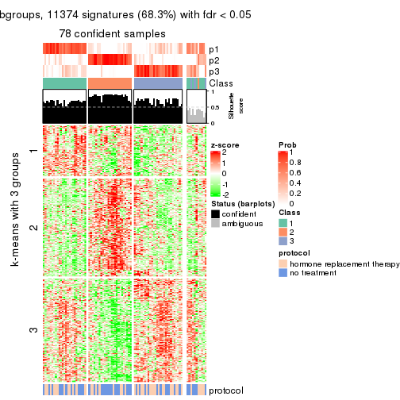
get_signatures(res, k = 4)
get_signatures(res, k = 5)

get_signatures(res, k = 6)
Signature heatmaps where rows are not scaled:
get_signatures(res, k = 2, scale_rows = FALSE)
get_signatures(res, k = 3, scale_rows = FALSE)
get_signatures(res, k = 4, scale_rows = FALSE)
get_signatures(res, k = 5, scale_rows = FALSE)
get_signatures(res, k = 6, scale_rows = FALSE)
Compare the overlap of signatures from different k:
compare_signatures(res)
get_signature() returns a data frame invisibly. TO get the list of signatures, the function
call should be assigned to a variable explicitly. In following code, if plot argument is set
to FALSE, no heatmap is plotted while only the differential analysis is performed.
# code only for demonstration
tb = get_signature(res, k = ..., plot = FALSE)
An example of the output of tb is:
#> which_row fdr mean_1 mean_2 scaled_mean_1 scaled_mean_2 km
#> 1 38 0.042760348 8.373488 9.131774 -0.5533452 0.5164555 1
#> 2 40 0.018707592 7.106213 8.469186 -0.6173731 0.5762149 1
#> 3 55 0.019134737 10.221463 11.207825 -0.6159697 0.5749050 1
#> 4 59 0.006059896 5.921854 7.869574 -0.6899429 0.6439467 1
#> 5 60 0.018055526 8.928898 10.211722 -0.6204761 0.5791110 1
#> 6 98 0.009384629 15.714769 14.887706 0.6635654 -0.6193277 2
...
The columns in tb are:
which_row: row indices corresponding to the input matrix.fdr: FDR for the differential test. mean_x: The mean value in group x.scaled_mean_x: The mean value in group x after rows are scaled.km: Row groups if k-means clustering is applied to rows.UMAP plot which shows how samples are separated.
dimension_reduction(res, k = 2, method = "UMAP")
dimension_reduction(res, k = 3, method = "UMAP")

dimension_reduction(res, k = 4, method = "UMAP")
dimension_reduction(res, k = 5, method = "UMAP")
dimension_reduction(res, k = 6, method = "UMAP")
Following heatmap shows how subgroups are split when increasing k:
collect_classes(res)
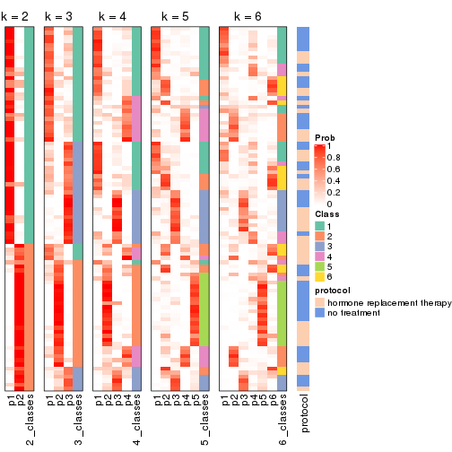
Test correlation between subgroups and known annotations. If the known annotation is numeric, one-way ANOVA test is applied, and if the known annotation is discrete, chi-squared contingency table test is applied.
test_to_known_factors(res)
#> n protocol(p) k
#> CV:NMF 83 0.674 2
#> CV:NMF 78 0.112 3
#> CV:NMF 67 0.545 4
#> CV:NMF 69 0.512 5
#> CV:NMF 52 0.822 6
If matrix rows can be associated to genes, consider to use functional_enrichment(res,
...) to perform function enrichment for the signature genes. See this vignette for more detailed explanations.
The object with results only for a single top-value method and a single partition method can be extracted as:
res = res_list["MAD", "hclust"]
# you can also extract it by
# res = res_list["MAD:hclust"]
A summary of res and all the functions that can be applied to it:
res
#> A 'ConsensusPartition' object with k = 2, 3, 4, 5, 6.
#> On a matrix with 16663 rows and 89 columns.
#> Top rows (1000, 2000, 3000, 4000, 5000) are extracted by 'MAD' method.
#> Subgroups are detected by 'hclust' method.
#> Performed in total 1250 partitions by row resampling.
#> Best k for subgroups seems to be 2.
#>
#> Following methods can be applied to this 'ConsensusPartition' object:
#> [1] "cola_report" "collect_classes" "collect_plots"
#> [4] "collect_stats" "colnames" "compare_signatures"
#> [7] "consensus_heatmap" "dimension_reduction" "functional_enrichment"
#> [10] "get_anno_col" "get_anno" "get_classes"
#> [13] "get_consensus" "get_matrix" "get_membership"
#> [16] "get_param" "get_signatures" "get_stats"
#> [19] "is_best_k" "is_stable_k" "membership_heatmap"
#> [22] "ncol" "nrow" "plot_ecdf"
#> [25] "rownames" "select_partition_number" "show"
#> [28] "suggest_best_k" "test_to_known_factors"
collect_plots() function collects all the plots made from res for all k (number of partitions)
into one single page to provide an easy and fast comparison between different k.
collect_plots(res)
The plots are:
k and the heatmap of
predicted classes for each k.k.k.k.All the plots in panels can be made by individual functions and they are plotted later in this section.
select_partition_number() produces several plots showing different
statistics for choosing “optimized” k. There are following statistics:
k;k, the area increased is defined as \(A_k - A_{k-1}\).The detailed explanations of these statistics can be found in the cola vignette.
Generally speaking, lower PAC score, higher mean silhouette score or higher
concordance corresponds to better partition. Rand index and Jaccard index
measure how similar the current partition is compared to partition with k-1.
If they are too similar, we won't accept k is better than k-1.
select_partition_number(res)
The numeric values for all these statistics can be obtained by get_stats().
get_stats(res)
#> k 1-PAC mean_silhouette concordance area_increased Rand Jaccard
#> 2 2 0.333 0.781 0.878 0.4334 0.541 0.541
#> 3 3 0.328 0.638 0.793 0.3700 0.867 0.756
#> 4 4 0.423 0.638 0.764 0.1175 0.955 0.891
#> 5 5 0.484 0.378 0.684 0.0874 0.979 0.944
#> 6 6 0.544 0.509 0.693 0.0542 0.896 0.727
suggest_best_k() suggests the best \(k\) based on these statistics. The rules are as follows:
suggest_best_k(res)
#> [1] 2
Following shows the table of the partitions (You need to click the show/hide
code output link to see it). The membership matrix (columns with name p*)
is inferred by
clue::cl_consensus()
function with the SE method. Basically the value in the membership matrix
represents the probability to belong to a certain group. The finall class
label for an item is determined with the group with highest probability it
belongs to.
In get_classes() function, the entropy is calculated from the membership
matrix and the silhouette score is calculated from the consensus matrix.
cbind(get_classes(res, k = 2), get_membership(res, k = 2))
#> class entropy silhouette p1 p2
#> GSM78921 1 0.0000 0.8768 1.000 0.000
#> GSM78922 1 0.0000 0.8768 1.000 0.000
#> GSM78923 2 0.5629 0.8395 0.132 0.868
#> GSM78924 2 0.2778 0.8306 0.048 0.952
#> GSM78925 2 0.2778 0.8306 0.048 0.952
#> GSM78926 1 0.1184 0.8726 0.984 0.016
#> GSM78927 1 0.1414 0.8806 0.980 0.020
#> GSM78928 1 0.8443 0.6407 0.728 0.272
#> GSM78929 2 0.6801 0.8302 0.180 0.820
#> GSM78930 1 0.6531 0.7835 0.832 0.168
#> GSM78931 1 0.9896 0.1298 0.560 0.440
#> GSM78932 2 0.7602 0.7488 0.220 0.780
#> GSM78933 1 0.1184 0.8803 0.984 0.016
#> GSM78934 2 0.6712 0.8314 0.176 0.824
#> GSM78935 1 0.0938 0.8797 0.988 0.012
#> GSM78936 1 0.7056 0.7471 0.808 0.192
#> GSM78937 1 0.5842 0.8214 0.860 0.140
#> GSM78938 1 0.1414 0.8806 0.980 0.020
#> GSM78939 1 0.4298 0.8597 0.912 0.088
#> GSM78940 2 0.9170 0.6386 0.332 0.668
#> GSM78941 2 0.8555 0.7440 0.280 0.720
#> GSM78942 1 0.9977 -0.0128 0.528 0.472
#> GSM78943 1 0.0938 0.8794 0.988 0.012
#> GSM78944 1 0.1633 0.8806 0.976 0.024
#> GSM78945 1 0.1633 0.8806 0.976 0.024
#> GSM78946 1 0.2423 0.8776 0.960 0.040
#> GSM78947 2 0.2778 0.8298 0.048 0.952
#> GSM78948 1 0.0000 0.8768 1.000 0.000
#> GSM78949 1 0.1633 0.8806 0.976 0.024
#> GSM78950 1 0.3879 0.8572 0.924 0.076
#> GSM78951 1 0.6531 0.7835 0.832 0.168
#> GSM78952 2 0.0376 0.8058 0.004 0.996
#> GSM78953 2 0.1633 0.8160 0.024 0.976
#> GSM78954 2 0.5629 0.8313 0.132 0.868
#> GSM78955 2 0.8081 0.7780 0.248 0.752
#> GSM78956 2 0.6887 0.8285 0.184 0.816
#> GSM78957 2 0.6801 0.8267 0.180 0.820
#> GSM78958 1 0.8144 0.6648 0.748 0.252
#> GSM78959 1 0.0376 0.8775 0.996 0.004
#> GSM78960 1 0.9710 0.2963 0.600 0.400
#> GSM78961 2 1.0000 0.0891 0.496 0.504
#> GSM78962 1 0.2043 0.8762 0.968 0.032
#> GSM78963 2 0.1414 0.8131 0.020 0.980
#> GSM78964 2 0.1414 0.8131 0.020 0.980
#> GSM78965 1 0.9732 0.2823 0.596 0.404
#> GSM78966 1 0.1184 0.8774 0.984 0.016
#> GSM78967 1 0.0376 0.8775 0.996 0.004
#> GSM78879 1 0.0000 0.8768 1.000 0.000
#> GSM78880 1 0.0000 0.8768 1.000 0.000
#> GSM78881 1 0.1414 0.8806 0.980 0.020
#> GSM78882 1 0.1843 0.8805 0.972 0.028
#> GSM78883 1 0.2603 0.8761 0.956 0.044
#> GSM78884 1 0.1184 0.8726 0.984 0.016
#> GSM78885 1 0.0938 0.8797 0.988 0.012
#> GSM78886 1 0.9087 0.4986 0.676 0.324
#> GSM78887 1 0.7528 0.7154 0.784 0.216
#> GSM78888 1 0.1414 0.8806 0.980 0.020
#> GSM78889 2 0.7376 0.8135 0.208 0.792
#> GSM78890 1 0.5946 0.8182 0.856 0.144
#> GSM78891 1 0.1414 0.8806 0.980 0.020
#> GSM78892 2 0.6801 0.8302 0.180 0.820
#> GSM78893 2 0.9393 0.6080 0.356 0.644
#> GSM78894 1 0.1414 0.8806 0.980 0.020
#> GSM78895 2 0.2603 0.8291 0.044 0.956
#> GSM78896 1 0.1843 0.8800 0.972 0.028
#> GSM78897 1 0.3584 0.8677 0.932 0.068
#> GSM78898 1 0.1633 0.8806 0.976 0.024
#> GSM78899 1 0.0000 0.8768 1.000 0.000
#> GSM78900 1 0.6531 0.7835 0.832 0.168
#> GSM78901 2 0.9044 0.6750 0.320 0.680
#> GSM78902 1 0.6531 0.7835 0.832 0.168
#> GSM78903 2 0.7883 0.7902 0.236 0.764
#> GSM78904 1 0.6148 0.8062 0.848 0.152
#> GSM78905 2 0.5629 0.8313 0.132 0.868
#> GSM78906 2 0.2603 0.8291 0.044 0.956
#> GSM78907 1 0.3584 0.8677 0.932 0.068
#> GSM78908 1 0.5519 0.8188 0.872 0.128
#> GSM78909 2 0.6887 0.8285 0.184 0.816
#> GSM78910 1 0.0376 0.8775 0.996 0.004
#> GSM78911 2 0.6801 0.8267 0.180 0.820
#> GSM78912 1 0.4022 0.8558 0.920 0.080
#> GSM78913 2 0.1414 0.8131 0.020 0.980
#> GSM78914 1 0.9710 0.2963 0.600 0.400
#> GSM78915 2 0.3274 0.8298 0.060 0.940
#> GSM78916 2 0.8608 0.7308 0.284 0.716
#> GSM78917 1 0.0376 0.8775 0.996 0.004
#> GSM78918 1 0.5737 0.8240 0.864 0.136
#> GSM78919 1 0.2948 0.8734 0.948 0.052
#> GSM78920 1 0.6973 0.7714 0.812 0.188
cbind(get_classes(res, k = 3), get_membership(res, k = 3))
#> class entropy silhouette p1 p2 p3
#> GSM78921 1 0.3482 0.742 0.872 0.000 0.128
#> GSM78922 1 0.2625 0.765 0.916 0.000 0.084
#> GSM78923 2 0.4179 0.754 0.052 0.876 0.072
#> GSM78924 2 0.2165 0.745 0.000 0.936 0.064
#> GSM78925 2 0.2165 0.745 0.000 0.936 0.064
#> GSM78926 1 0.6047 0.531 0.680 0.008 0.312
#> GSM78927 1 0.1999 0.786 0.952 0.012 0.036
#> GSM78928 1 0.8287 0.345 0.616 0.256 0.128
#> GSM78929 2 0.5505 0.738 0.088 0.816 0.096
#> GSM78930 3 0.7546 0.518 0.396 0.044 0.560
#> GSM78931 3 0.7590 0.477 0.080 0.268 0.652
#> GSM78932 2 0.5480 0.568 0.004 0.732 0.264
#> GSM78933 1 0.1878 0.782 0.952 0.004 0.044
#> GSM78934 2 0.5407 0.742 0.076 0.820 0.104
#> GSM78935 1 0.1711 0.785 0.960 0.008 0.032
#> GSM78936 1 0.8835 0.263 0.576 0.180 0.244
#> GSM78937 1 0.6157 0.657 0.780 0.128 0.092
#> GSM78938 1 0.2625 0.771 0.916 0.000 0.084
#> GSM78939 1 0.5179 0.715 0.832 0.088 0.080
#> GSM78940 2 0.8005 0.523 0.224 0.648 0.128
#> GSM78941 2 0.7309 0.639 0.168 0.708 0.124
#> GSM78942 3 0.6967 0.418 0.044 0.288 0.668
#> GSM78943 1 0.2448 0.774 0.924 0.000 0.076
#> GSM78944 1 0.2625 0.770 0.916 0.000 0.084
#> GSM78945 1 0.2625 0.770 0.916 0.000 0.084
#> GSM78946 1 0.3155 0.772 0.916 0.040 0.044
#> GSM78947 2 0.2165 0.741 0.000 0.936 0.064
#> GSM78948 1 0.2878 0.759 0.904 0.000 0.096
#> GSM78949 1 0.2625 0.770 0.916 0.000 0.084
#> GSM78950 1 0.6881 0.436 0.648 0.032 0.320
#> GSM78951 3 0.7546 0.518 0.396 0.044 0.560
#> GSM78952 2 0.1643 0.724 0.000 0.956 0.044
#> GSM78953 2 0.2448 0.728 0.000 0.924 0.076
#> GSM78954 2 0.6715 0.615 0.056 0.716 0.228
#> GSM78955 2 0.6788 0.676 0.136 0.744 0.120
#> GSM78956 2 0.5497 0.737 0.064 0.812 0.124
#> GSM78957 2 0.4861 0.711 0.012 0.808 0.180
#> GSM78958 3 0.9663 0.460 0.372 0.212 0.416
#> GSM78959 1 0.0747 0.780 0.984 0.000 0.016
#> GSM78960 3 0.7653 0.627 0.140 0.176 0.684
#> GSM78961 3 0.6597 0.387 0.024 0.312 0.664
#> GSM78962 1 0.7278 0.262 0.516 0.028 0.456
#> GSM78963 2 0.5058 0.610 0.000 0.756 0.244
#> GSM78964 2 0.5058 0.610 0.000 0.756 0.244
#> GSM78965 3 0.7750 0.622 0.140 0.184 0.676
#> GSM78966 1 0.1453 0.780 0.968 0.008 0.024
#> GSM78967 1 0.0592 0.780 0.988 0.000 0.012
#> GSM78879 1 0.3267 0.747 0.884 0.000 0.116
#> GSM78880 1 0.2625 0.765 0.916 0.000 0.084
#> GSM78881 1 0.1877 0.786 0.956 0.012 0.032
#> GSM78882 1 0.3213 0.773 0.900 0.008 0.092
#> GSM78883 1 0.2918 0.781 0.924 0.032 0.044
#> GSM78884 1 0.6047 0.531 0.680 0.008 0.312
#> GSM78885 1 0.1453 0.784 0.968 0.008 0.024
#> GSM78886 1 0.9721 -0.158 0.452 0.284 0.264
#> GSM78887 1 0.9058 0.155 0.544 0.180 0.276
#> GSM78888 1 0.2537 0.773 0.920 0.000 0.080
#> GSM78889 2 0.5939 0.729 0.072 0.788 0.140
#> GSM78890 1 0.6234 0.652 0.776 0.128 0.096
#> GSM78891 1 0.2625 0.771 0.916 0.000 0.084
#> GSM78892 2 0.5505 0.738 0.088 0.816 0.096
#> GSM78893 2 0.8094 0.493 0.240 0.636 0.124
#> GSM78894 1 0.2625 0.771 0.916 0.000 0.084
#> GSM78895 2 0.1753 0.745 0.000 0.952 0.048
#> GSM78896 1 0.2918 0.778 0.924 0.032 0.044
#> GSM78897 1 0.4475 0.739 0.864 0.072 0.064
#> GSM78898 1 0.2625 0.770 0.916 0.000 0.084
#> GSM78899 1 0.5397 0.582 0.720 0.000 0.280
#> GSM78900 3 0.7546 0.518 0.396 0.044 0.560
#> GSM78901 2 0.7651 0.556 0.220 0.672 0.108
#> GSM78902 3 0.7546 0.518 0.396 0.044 0.560
#> GSM78903 2 0.6597 0.689 0.124 0.756 0.120
#> GSM78904 1 0.6393 0.616 0.764 0.148 0.088
#> GSM78905 2 0.6715 0.615 0.056 0.716 0.228
#> GSM78906 2 0.1753 0.745 0.000 0.952 0.048
#> GSM78907 1 0.5263 0.721 0.824 0.060 0.116
#> GSM78908 1 0.7394 -0.197 0.496 0.032 0.472
#> GSM78909 2 0.5497 0.737 0.064 0.812 0.124
#> GSM78910 1 0.0592 0.780 0.988 0.000 0.012
#> GSM78911 2 0.4861 0.711 0.012 0.808 0.180
#> GSM78912 1 0.6931 0.424 0.640 0.032 0.328
#> GSM78913 2 0.5058 0.610 0.000 0.756 0.244
#> GSM78914 3 0.7653 0.627 0.140 0.176 0.684
#> GSM78915 2 0.5098 0.605 0.000 0.752 0.248
#> GSM78916 2 0.7267 0.622 0.180 0.708 0.112
#> GSM78917 1 0.0747 0.780 0.984 0.000 0.016
#> GSM78918 1 0.6100 0.660 0.784 0.120 0.096
#> GSM78919 1 0.2681 0.776 0.932 0.028 0.040
#> GSM78920 1 0.7248 0.539 0.708 0.184 0.108
cbind(get_classes(res, k = 4), get_membership(res, k = 4))
#> class entropy silhouette p1 p2 p3 p4
#> GSM78921 1 0.474 0.5434 0.728 0.000 0.020 0.252
#> GSM78922 1 0.335 0.6878 0.836 0.000 0.004 0.160
#> GSM78923 2 0.301 0.7407 0.040 0.904 0.020 0.036
#> GSM78924 2 0.337 0.7280 0.000 0.872 0.080 0.048
#> GSM78925 2 0.337 0.7280 0.000 0.872 0.080 0.048
#> GSM78926 4 0.379 0.8590 0.200 0.000 0.004 0.796
#> GSM78927 1 0.231 0.7824 0.932 0.032 0.016 0.020
#> GSM78928 1 0.716 0.4249 0.572 0.324 0.052 0.052
#> GSM78929 2 0.429 0.7312 0.076 0.844 0.048 0.032
#> GSM78930 3 0.588 0.5509 0.312 0.020 0.644 0.024
#> GSM78931 3 0.625 0.5042 0.032 0.152 0.716 0.100
#> GSM78932 2 0.632 0.5274 0.000 0.612 0.300 0.088
#> GSM78933 1 0.151 0.7798 0.956 0.000 0.016 0.028
#> GSM78934 2 0.451 0.7340 0.064 0.836 0.052 0.048
#> GSM78935 1 0.188 0.7783 0.944 0.008 0.008 0.040
#> GSM78936 1 0.869 0.2907 0.516 0.184 0.200 0.100
#> GSM78937 1 0.577 0.6602 0.740 0.172 0.048 0.040
#> GSM78938 1 0.272 0.7773 0.912 0.008 0.052 0.028
#> GSM78939 1 0.417 0.7320 0.828 0.128 0.036 0.008
#> GSM78940 2 0.600 0.5895 0.196 0.716 0.052 0.036
#> GSM78941 2 0.566 0.6697 0.144 0.752 0.080 0.024
#> GSM78942 3 0.554 0.5097 0.012 0.156 0.748 0.084
#> GSM78943 1 0.267 0.7775 0.912 0.004 0.052 0.032
#> GSM78944 1 0.272 0.7768 0.912 0.008 0.052 0.028
#> GSM78945 1 0.272 0.7768 0.912 0.008 0.052 0.028
#> GSM78946 1 0.284 0.7729 0.904 0.068 0.016 0.012
#> GSM78947 2 0.352 0.7212 0.000 0.864 0.084 0.052
#> GSM78948 1 0.349 0.6771 0.812 0.000 0.000 0.188
#> GSM78949 1 0.272 0.7768 0.912 0.008 0.052 0.028
#> GSM78950 1 0.725 0.3446 0.588 0.020 0.264 0.128
#> GSM78951 3 0.588 0.5509 0.312 0.020 0.644 0.024
#> GSM78952 2 0.352 0.7149 0.000 0.856 0.032 0.112
#> GSM78953 2 0.449 0.7037 0.000 0.808 0.096 0.096
#> GSM78954 2 0.682 0.4901 0.036 0.584 0.332 0.048
#> GSM78955 2 0.486 0.6939 0.108 0.808 0.056 0.028
#> GSM78956 2 0.491 0.7239 0.052 0.808 0.104 0.036
#> GSM78957 2 0.476 0.6651 0.000 0.772 0.176 0.052
#> GSM78958 3 0.863 0.2927 0.344 0.184 0.420 0.052
#> GSM78959 1 0.164 0.7692 0.948 0.000 0.008 0.044
#> GSM78960 3 0.319 0.6011 0.052 0.024 0.896 0.028
#> GSM78961 3 0.456 0.5409 0.012 0.156 0.800 0.032
#> GSM78962 4 0.566 0.6396 0.092 0.004 0.180 0.724
#> GSM78963 2 0.698 0.4510 0.000 0.528 0.344 0.128
#> GSM78964 2 0.698 0.4510 0.000 0.528 0.344 0.128
#> GSM78965 3 0.339 0.5982 0.052 0.032 0.888 0.028
#> GSM78966 1 0.182 0.7733 0.948 0.012 0.008 0.032
#> GSM78967 1 0.115 0.7739 0.968 0.000 0.008 0.024
#> GSM78879 1 0.436 0.5646 0.744 0.000 0.008 0.248
#> GSM78880 1 0.335 0.6878 0.836 0.000 0.004 0.160
#> GSM78881 1 0.219 0.7817 0.936 0.032 0.012 0.020
#> GSM78882 1 0.350 0.7815 0.884 0.036 0.048 0.032
#> GSM78883 1 0.374 0.7699 0.872 0.048 0.028 0.052
#> GSM78884 4 0.375 0.8584 0.196 0.000 0.004 0.800
#> GSM78885 1 0.114 0.7806 0.972 0.008 0.008 0.012
#> GSM78886 1 0.914 -0.0322 0.408 0.284 0.224 0.084
#> GSM78887 1 0.902 0.1508 0.476 0.176 0.228 0.120
#> GSM78888 1 0.299 0.7757 0.900 0.008 0.056 0.036
#> GSM78889 2 0.458 0.7219 0.048 0.828 0.088 0.036
#> GSM78890 1 0.573 0.6598 0.740 0.176 0.044 0.040
#> GSM78891 1 0.272 0.7773 0.912 0.008 0.052 0.028
#> GSM78892 2 0.429 0.7312 0.076 0.844 0.048 0.032
#> GSM78893 2 0.618 0.5701 0.220 0.692 0.060 0.028
#> GSM78894 1 0.272 0.7773 0.912 0.008 0.052 0.028
#> GSM78895 2 0.301 0.7296 0.000 0.892 0.056 0.052
#> GSM78896 1 0.290 0.7796 0.908 0.040 0.036 0.016
#> GSM78897 1 0.382 0.7493 0.852 0.108 0.028 0.012
#> GSM78898 1 0.272 0.7768 0.912 0.008 0.052 0.028
#> GSM78899 4 0.458 0.7961 0.260 0.000 0.012 0.728
#> GSM78900 3 0.588 0.5509 0.312 0.020 0.644 0.024
#> GSM78901 2 0.580 0.6085 0.184 0.732 0.052 0.032
#> GSM78902 3 0.588 0.5509 0.312 0.020 0.644 0.024
#> GSM78903 2 0.483 0.7024 0.096 0.812 0.064 0.028
#> GSM78904 1 0.562 0.6404 0.732 0.200 0.040 0.028
#> GSM78905 2 0.682 0.4901 0.036 0.584 0.332 0.048
#> GSM78906 2 0.301 0.7296 0.000 0.892 0.056 0.052
#> GSM78907 1 0.451 0.7527 0.824 0.100 0.060 0.016
#> GSM78908 1 0.739 -0.2252 0.452 0.024 0.436 0.088
#> GSM78909 2 0.491 0.7239 0.052 0.808 0.104 0.036
#> GSM78910 1 0.115 0.7739 0.968 0.000 0.008 0.024
#> GSM78911 2 0.476 0.6651 0.000 0.772 0.176 0.052
#> GSM78912 1 0.730 0.3275 0.580 0.020 0.272 0.128
#> GSM78913 2 0.698 0.4510 0.000 0.528 0.344 0.128
#> GSM78914 3 0.319 0.6011 0.052 0.024 0.896 0.028
#> GSM78915 2 0.684 0.4180 0.000 0.520 0.372 0.108
#> GSM78916 2 0.536 0.6539 0.144 0.772 0.052 0.032
#> GSM78917 1 0.164 0.7692 0.948 0.000 0.008 0.044
#> GSM78918 1 0.573 0.6648 0.744 0.168 0.044 0.044
#> GSM78919 1 0.281 0.7698 0.912 0.040 0.016 0.032
#> GSM78920 1 0.648 0.5669 0.664 0.244 0.040 0.052
cbind(get_classes(res, k = 5), get_membership(res, k = 5))
#> class entropy silhouette p1 p2 p3 p4 p5
#> GSM78921 1 0.438 0.5253 0.688 0.000 0.004 0.292 0.016
#> GSM78922 1 0.305 0.6698 0.820 0.000 0.004 0.176 0.000
#> GSM78923 2 0.420 -0.1156 0.008 0.664 0.000 0.000 0.328
#> GSM78924 2 0.183 0.3571 0.000 0.932 0.028 0.000 0.040
#> GSM78925 2 0.183 0.3571 0.000 0.932 0.028 0.000 0.040
#> GSM78926 4 0.218 0.8753 0.112 0.000 0.000 0.888 0.000
#> GSM78927 1 0.224 0.7344 0.920 0.000 0.016 0.024 0.040
#> GSM78928 1 0.706 0.1466 0.500 0.164 0.020 0.012 0.304
#> GSM78929 2 0.466 -0.1400 0.036 0.692 0.004 0.000 0.268
#> GSM78930 3 0.612 0.5613 0.164 0.000 0.632 0.024 0.180
#> GSM78931 3 0.767 0.4163 0.008 0.108 0.512 0.136 0.236
#> GSM78932 2 0.582 0.2926 0.000 0.624 0.264 0.016 0.096
#> GSM78933 1 0.187 0.7331 0.936 0.000 0.012 0.036 0.016
#> GSM78934 2 0.503 -0.3108 0.012 0.588 0.008 0.008 0.384
#> GSM78935 1 0.186 0.7291 0.932 0.000 0.016 0.048 0.004
#> GSM78936 1 0.819 0.3420 0.488 0.088 0.060 0.104 0.260
#> GSM78937 1 0.552 0.5792 0.688 0.076 0.012 0.012 0.212
#> GSM78938 1 0.438 0.7001 0.776 0.008 0.028 0.016 0.172
#> GSM78939 1 0.435 0.7004 0.800 0.064 0.020 0.004 0.112
#> GSM78940 2 0.678 -0.8173 0.124 0.440 0.012 0.012 0.412
#> GSM78941 2 0.606 -0.6100 0.080 0.552 0.020 0.000 0.348
#> GSM78942 3 0.745 0.4364 0.004 0.124 0.532 0.112 0.228
#> GSM78943 1 0.447 0.7071 0.784 0.000 0.040 0.040 0.136
#> GSM78944 1 0.441 0.6974 0.772 0.008 0.028 0.016 0.176
#> GSM78945 1 0.441 0.6974 0.772 0.008 0.028 0.016 0.176
#> GSM78946 1 0.307 0.7266 0.876 0.032 0.020 0.000 0.072
#> GSM78947 2 0.170 0.3773 0.000 0.936 0.048 0.000 0.016
#> GSM78948 1 0.300 0.6702 0.812 0.000 0.000 0.188 0.000
#> GSM78949 1 0.441 0.6974 0.772 0.008 0.028 0.016 0.176
#> GSM78950 1 0.783 0.3709 0.512 0.012 0.120 0.152 0.204
#> GSM78951 3 0.612 0.5613 0.164 0.000 0.632 0.024 0.180
#> GSM78952 2 0.404 0.2768 0.000 0.752 0.004 0.020 0.224
#> GSM78953 2 0.288 0.3818 0.000 0.888 0.044 0.016 0.052
#> GSM78954 2 0.570 0.3137 0.016 0.632 0.268 0.000 0.084
#> GSM78955 2 0.557 -0.6009 0.040 0.532 0.016 0.000 0.412
#> GSM78956 2 0.595 -0.2311 0.020 0.536 0.024 0.024 0.396
#> GSM78957 2 0.587 0.0467 0.000 0.512 0.028 0.044 0.416
#> GSM78958 1 0.934 -0.3102 0.316 0.132 0.268 0.072 0.212
#> GSM78959 1 0.147 0.7234 0.948 0.000 0.000 0.036 0.016
#> GSM78960 3 0.130 0.5869 0.008 0.020 0.960 0.000 0.012
#> GSM78961 3 0.666 0.4806 0.004 0.124 0.596 0.048 0.228
#> GSM78962 4 0.451 0.6969 0.044 0.000 0.048 0.788 0.120
#> GSM78963 2 0.649 0.2958 0.000 0.556 0.284 0.024 0.136
#> GSM78964 2 0.649 0.2958 0.000 0.556 0.284 0.024 0.136
#> GSM78965 3 0.150 0.5843 0.008 0.024 0.952 0.000 0.016
#> GSM78966 1 0.165 0.7287 0.944 0.004 0.000 0.024 0.028
#> GSM78967 1 0.112 0.7261 0.964 0.000 0.000 0.016 0.020
#> GSM78879 1 0.386 0.5519 0.712 0.000 0.004 0.284 0.000
#> GSM78880 1 0.305 0.6698 0.820 0.000 0.004 0.176 0.000
#> GSM78881 1 0.206 0.7327 0.928 0.000 0.012 0.024 0.036
#> GSM78882 1 0.460 0.7144 0.764 0.008 0.028 0.024 0.176
#> GSM78883 1 0.402 0.7282 0.836 0.016 0.024 0.048 0.076
#> GSM78884 4 0.213 0.8741 0.108 0.000 0.000 0.892 0.000
#> GSM78885 1 0.150 0.7307 0.952 0.000 0.016 0.024 0.008
#> GSM78886 1 0.862 -0.0500 0.372 0.152 0.044 0.100 0.332
#> GSM78887 1 0.821 0.2228 0.460 0.072 0.048 0.136 0.284
#> GSM78888 1 0.465 0.7039 0.772 0.008 0.028 0.036 0.156
#> GSM78889 2 0.521 -0.2980 0.020 0.516 0.008 0.004 0.452
#> GSM78890 1 0.552 0.5782 0.688 0.076 0.012 0.012 0.212
#> GSM78891 1 0.438 0.7001 0.776 0.008 0.028 0.016 0.172
#> GSM78892 2 0.466 -0.1400 0.036 0.692 0.004 0.000 0.268
#> GSM78893 2 0.689 -0.8349 0.140 0.428 0.016 0.008 0.408
#> GSM78894 1 0.438 0.7001 0.776 0.008 0.028 0.016 0.172
#> GSM78895 2 0.102 0.3642 0.000 0.968 0.016 0.000 0.016
#> GSM78896 1 0.346 0.7323 0.868 0.020 0.040 0.016 0.056
#> GSM78897 1 0.399 0.7078 0.820 0.052 0.024 0.000 0.104
#> GSM78898 1 0.441 0.6974 0.772 0.008 0.028 0.016 0.176
#> GSM78899 4 0.305 0.8277 0.164 0.000 0.008 0.828 0.000
#> GSM78900 3 0.612 0.5613 0.164 0.000 0.632 0.024 0.180
#> GSM78901 5 0.661 0.0000 0.116 0.428 0.016 0.004 0.436
#> GSM78902 3 0.612 0.5613 0.164 0.000 0.632 0.024 0.180
#> GSM78903 2 0.535 -0.5448 0.028 0.552 0.016 0.000 0.404
#> GSM78904 1 0.549 0.6018 0.708 0.092 0.020 0.008 0.172
#> GSM78905 2 0.570 0.3137 0.016 0.632 0.268 0.000 0.084
#> GSM78906 2 0.102 0.3642 0.000 0.968 0.016 0.000 0.016
#> GSM78907 1 0.514 0.7054 0.732 0.056 0.032 0.004 0.176
#> GSM78908 1 0.846 -0.1810 0.340 0.008 0.292 0.120 0.240
#> GSM78909 2 0.595 -0.2311 0.020 0.536 0.024 0.024 0.396
#> GSM78910 1 0.112 0.7261 0.964 0.000 0.000 0.016 0.020
#> GSM78911 2 0.587 0.0467 0.000 0.512 0.028 0.044 0.416
#> GSM78912 1 0.793 0.3578 0.500 0.012 0.132 0.148 0.208
#> GSM78913 2 0.649 0.2958 0.000 0.556 0.284 0.024 0.136
#> GSM78914 3 0.130 0.5869 0.008 0.020 0.960 0.000 0.012
#> GSM78915 2 0.633 0.2481 0.000 0.532 0.336 0.016 0.116
#> GSM78916 2 0.618 -0.8118 0.072 0.464 0.016 0.004 0.444
#> GSM78917 1 0.147 0.7234 0.948 0.000 0.000 0.036 0.016
#> GSM78918 1 0.553 0.5827 0.692 0.072 0.012 0.016 0.208
#> GSM78919 1 0.267 0.7230 0.892 0.016 0.000 0.016 0.076
#> GSM78920 1 0.611 0.4150 0.592 0.108 0.004 0.012 0.284
cbind(get_classes(res, k = 6), get_membership(res, k = 6))
#> class entropy silhouette p1 p2 p3 p4 p5 p6
#> GSM78921 1 0.4434 0.5392 0.668 0.000 0.008 0.284 0.000 0.040
#> GSM78922 1 0.3239 0.6792 0.808 0.000 0.004 0.164 0.000 0.024
#> GSM78923 2 0.4533 0.4654 0.000 0.704 0.000 0.000 0.140 0.156
#> GSM78924 2 0.5562 -0.3614 0.000 0.432 0.000 0.000 0.432 0.136
#> GSM78925 2 0.5562 -0.3614 0.000 0.432 0.000 0.000 0.432 0.136
#> GSM78926 4 0.0363 0.8486 0.012 0.000 0.000 0.988 0.000 0.000
#> GSM78927 1 0.2202 0.7354 0.916 0.040 0.016 0.012 0.000 0.016
#> GSM78928 2 0.5503 -0.2488 0.456 0.468 0.016 0.004 0.008 0.048
#> GSM78929 2 0.5245 0.4037 0.028 0.668 0.000 0.000 0.172 0.132
#> GSM78930 3 0.1267 0.6515 0.060 0.000 0.940 0.000 0.000 0.000
#> GSM78931 6 0.6887 0.4897 0.004 0.020 0.172 0.068 0.192 0.544
#> GSM78932 6 0.6613 -0.3008 0.000 0.208 0.044 0.000 0.300 0.448
#> GSM78933 1 0.1857 0.7346 0.928 0.000 0.028 0.012 0.000 0.032
#> GSM78934 2 0.4280 0.5321 0.008 0.756 0.004 0.000 0.140 0.092
#> GSM78935 1 0.1973 0.7322 0.924 0.004 0.008 0.036 0.000 0.028
#> GSM78936 1 0.7591 0.3205 0.468 0.200 0.080 0.056 0.000 0.196
#> GSM78937 1 0.5304 0.5762 0.632 0.280 0.024 0.004 0.008 0.052
#> GSM78938 1 0.5019 0.6404 0.668 0.004 0.224 0.012 0.000 0.092
#> GSM78939 1 0.3659 0.6864 0.780 0.180 0.028 0.000 0.000 0.012
#> GSM78940 2 0.2635 0.5509 0.100 0.872 0.000 0.004 0.004 0.020
#> GSM78941 2 0.3834 0.5243 0.056 0.804 0.000 0.004 0.116 0.020
#> GSM78942 6 0.6637 0.4992 0.004 0.012 0.168 0.052 0.216 0.548
#> GSM78943 1 0.4550 0.6641 0.700 0.000 0.216 0.008 0.000 0.076
#> GSM78944 1 0.5063 0.6365 0.664 0.004 0.224 0.012 0.000 0.096
#> GSM78945 1 0.5038 0.6375 0.668 0.004 0.220 0.012 0.000 0.096
#> GSM78946 1 0.2708 0.7204 0.864 0.112 0.012 0.004 0.000 0.008
#> GSM78947 5 0.5865 0.3533 0.000 0.368 0.004 0.000 0.456 0.172
#> GSM78948 1 0.3073 0.6750 0.788 0.000 0.000 0.204 0.000 0.008
#> GSM78949 1 0.5063 0.6365 0.664 0.004 0.224 0.012 0.000 0.096
#> GSM78950 1 0.7136 0.2468 0.428 0.008 0.272 0.072 0.000 0.220
#> GSM78951 3 0.1267 0.6515 0.060 0.000 0.940 0.000 0.000 0.000
#> GSM78952 2 0.6160 0.0914 0.000 0.448 0.008 0.000 0.300 0.244
#> GSM78953 5 0.5921 0.3838 0.000 0.276 0.008 0.000 0.512 0.204
#> GSM78954 5 0.5697 0.4769 0.000 0.308 0.096 0.000 0.564 0.032
#> GSM78955 2 0.1802 0.5599 0.012 0.916 0.000 0.000 0.072 0.000
#> GSM78956 2 0.4163 0.5216 0.000 0.740 0.004 0.000 0.072 0.184
#> GSM78957 2 0.5553 0.3567 0.000 0.524 0.012 0.000 0.104 0.360
#> GSM78958 6 0.7310 0.2160 0.316 0.100 0.088 0.020 0.016 0.460
#> GSM78959 1 0.1950 0.7327 0.924 0.000 0.016 0.028 0.000 0.032
#> GSM78960 3 0.4745 0.4325 0.000 0.000 0.644 0.000 0.268 0.088
#> GSM78961 6 0.5761 0.4538 0.000 0.008 0.208 0.000 0.232 0.552
#> GSM78962 4 0.3819 0.6485 0.000 0.004 0.040 0.756 0.000 0.200
#> GSM78963 5 0.0820 0.4903 0.000 0.016 0.012 0.000 0.972 0.000
#> GSM78964 5 0.0820 0.4903 0.000 0.016 0.012 0.000 0.972 0.000
#> GSM78965 3 0.4783 0.4267 0.000 0.000 0.636 0.000 0.276 0.088
#> GSM78966 1 0.2300 0.7344 0.916 0.016 0.020 0.008 0.008 0.032
#> GSM78967 1 0.1592 0.7334 0.940 0.000 0.020 0.008 0.000 0.032
#> GSM78879 1 0.4034 0.5659 0.692 0.000 0.004 0.280 0.000 0.024
#> GSM78880 1 0.3239 0.6792 0.808 0.000 0.004 0.164 0.000 0.024
#> GSM78881 1 0.2007 0.7341 0.924 0.040 0.008 0.012 0.000 0.016
#> GSM78882 1 0.5249 0.6853 0.688 0.044 0.192 0.012 0.000 0.064
#> GSM78883 1 0.4716 0.7159 0.768 0.044 0.112 0.028 0.004 0.044
#> GSM78884 4 0.0405 0.8465 0.008 0.004 0.000 0.988 0.000 0.000
#> GSM78885 1 0.1490 0.7326 0.948 0.004 0.008 0.016 0.000 0.024
#> GSM78886 1 0.7451 -0.0425 0.360 0.308 0.044 0.036 0.000 0.252
#> GSM78887 1 0.7607 0.1784 0.440 0.180 0.056 0.068 0.000 0.256
#> GSM78888 1 0.4895 0.6597 0.684 0.004 0.220 0.016 0.000 0.076
#> GSM78889 2 0.4680 0.5116 0.000 0.700 0.012 0.000 0.088 0.200
#> GSM78890 1 0.5304 0.5751 0.632 0.280 0.024 0.004 0.008 0.052
#> GSM78891 1 0.5019 0.6404 0.668 0.004 0.224 0.012 0.000 0.092
#> GSM78892 2 0.5245 0.4037 0.028 0.668 0.000 0.000 0.172 0.132
#> GSM78893 2 0.3661 0.5329 0.112 0.820 0.012 0.000 0.040 0.016
#> GSM78894 1 0.5019 0.6404 0.668 0.004 0.224 0.012 0.000 0.092
#> GSM78895 5 0.5703 0.2846 0.000 0.412 0.000 0.000 0.428 0.160
#> GSM78896 1 0.3412 0.7268 0.848 0.056 0.056 0.008 0.000 0.032
#> GSM78897 1 0.3232 0.6978 0.812 0.160 0.020 0.000 0.000 0.008
#> GSM78898 1 0.5038 0.6375 0.668 0.004 0.220 0.012 0.000 0.096
#> GSM78899 4 0.2526 0.7839 0.096 0.000 0.004 0.876 0.000 0.024
#> GSM78900 3 0.1267 0.6515 0.060 0.000 0.940 0.000 0.000 0.000
#> GSM78901 2 0.2908 0.5541 0.092 0.864 0.004 0.000 0.012 0.028
#> GSM78902 3 0.1267 0.6515 0.060 0.000 0.940 0.000 0.000 0.000
#> GSM78903 2 0.1610 0.5513 0.000 0.916 0.000 0.000 0.084 0.000
#> GSM78904 1 0.4581 0.6092 0.684 0.264 0.008 0.008 0.004 0.032
#> GSM78905 5 0.5697 0.4769 0.000 0.308 0.096 0.000 0.564 0.032
#> GSM78906 5 0.5703 0.2846 0.000 0.412 0.000 0.000 0.428 0.160
#> GSM78907 1 0.5191 0.6927 0.696 0.136 0.112 0.000 0.000 0.056
#> GSM78908 3 0.6454 0.1139 0.240 0.004 0.500 0.032 0.000 0.224
#> GSM78909 2 0.4163 0.5216 0.000 0.740 0.004 0.000 0.072 0.184
#> GSM78910 1 0.1592 0.7334 0.940 0.000 0.020 0.008 0.000 0.032
#> GSM78911 2 0.5553 0.3567 0.000 0.524 0.012 0.000 0.104 0.360
#> GSM78912 1 0.7157 0.2275 0.416 0.008 0.288 0.072 0.000 0.216
#> GSM78913 5 0.0820 0.4903 0.000 0.016 0.012 0.000 0.972 0.000
#> GSM78914 3 0.4745 0.4325 0.000 0.000 0.644 0.000 0.268 0.088
#> GSM78915 5 0.1707 0.4527 0.000 0.012 0.056 0.000 0.928 0.004
#> GSM78916 2 0.2214 0.5721 0.044 0.912 0.004 0.000 0.012 0.028
#> GSM78917 1 0.1950 0.7327 0.924 0.000 0.016 0.028 0.000 0.032
#> GSM78918 1 0.5248 0.5794 0.636 0.280 0.024 0.004 0.008 0.048
#> GSM78919 1 0.3306 0.7248 0.856 0.068 0.020 0.004 0.008 0.044
#> GSM78920 1 0.5377 0.4311 0.552 0.364 0.012 0.000 0.008 0.064
Heatmaps for the consensus matrix. It visualizes the probability of two samples to be in a same group.
consensus_heatmap(res, k = 2)
consensus_heatmap(res, k = 3)
consensus_heatmap(res, k = 4)
consensus_heatmap(res, k = 5)
consensus_heatmap(res, k = 6)
Heatmaps for the membership of samples in all partitions to see how consistent they are:
membership_heatmap(res, k = 2)
membership_heatmap(res, k = 3)

membership_heatmap(res, k = 4)
membership_heatmap(res, k = 5)
membership_heatmap(res, k = 6)
As soon as we have had the classes for columns, we can look for signatures which are significantly different between classes which can be candidate marks for certain classes. Following are the heatmaps for signatures.
Signature heatmaps where rows are scaled:
get_signatures(res, k = 2)
get_signatures(res, k = 3)
get_signatures(res, k = 4)
get_signatures(res, k = 5)
get_signatures(res, k = 6)
Signature heatmaps where rows are not scaled:
get_signatures(res, k = 2, scale_rows = FALSE)
get_signatures(res, k = 3, scale_rows = FALSE)
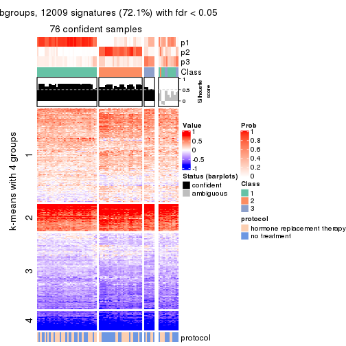
get_signatures(res, k = 4, scale_rows = FALSE)
get_signatures(res, k = 5, scale_rows = FALSE)
get_signatures(res, k = 6, scale_rows = FALSE)
Compare the overlap of signatures from different k:
compare_signatures(res)
get_signature() returns a data frame invisibly. TO get the list of signatures, the function
call should be assigned to a variable explicitly. In following code, if plot argument is set
to FALSE, no heatmap is plotted while only the differential analysis is performed.
# code only for demonstration
tb = get_signature(res, k = ..., plot = FALSE)
An example of the output of tb is:
#> which_row fdr mean_1 mean_2 scaled_mean_1 scaled_mean_2 km
#> 1 38 0.042760348 8.373488 9.131774 -0.5533452 0.5164555 1
#> 2 40 0.018707592 7.106213 8.469186 -0.6173731 0.5762149 1
#> 3 55 0.019134737 10.221463 11.207825 -0.6159697 0.5749050 1
#> 4 59 0.006059896 5.921854 7.869574 -0.6899429 0.6439467 1
#> 5 60 0.018055526 8.928898 10.211722 -0.6204761 0.5791110 1
#> 6 98 0.009384629 15.714769 14.887706 0.6635654 -0.6193277 2
...
The columns in tb are:
which_row: row indices corresponding to the input matrix.fdr: FDR for the differential test. mean_x: The mean value in group x.scaled_mean_x: The mean value in group x after rows are scaled.km: Row groups if k-means clustering is applied to rows.UMAP plot which shows how samples are separated.
dimension_reduction(res, k = 2, method = "UMAP")
dimension_reduction(res, k = 3, method = "UMAP")
dimension_reduction(res, k = 4, method = "UMAP")
dimension_reduction(res, k = 5, method = "UMAP")
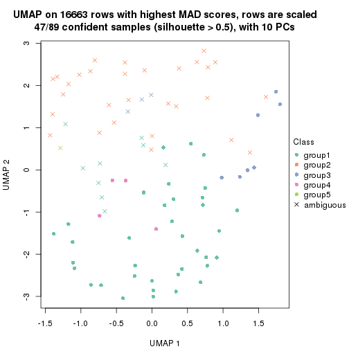
dimension_reduction(res, k = 6, method = "UMAP")
Following heatmap shows how subgroups are split when increasing k:
collect_classes(res)
Test correlation between subgroups and known annotations. If the known annotation is numeric, one-way ANOVA test is applied, and if the known annotation is discrete, chi-squared contingency table test is applied.
test_to_known_factors(res)
#> n protocol(p) k
#> MAD:hclust 82 0.603 2
#> MAD:hclust 76 0.508 3
#> MAD:hclust 75 0.535 4
#> MAD:hclust 47 0.890 5
#> MAD:hclust 55 0.998 6
If matrix rows can be associated to genes, consider to use functional_enrichment(res,
...) to perform function enrichment for the signature genes. See this vignette for more detailed explanations.
The object with results only for a single top-value method and a single partition method can be extracted as:
res = res_list["MAD", "kmeans"]
# you can also extract it by
# res = res_list["MAD:kmeans"]
A summary of res and all the functions that can be applied to it:
res
#> A 'ConsensusPartition' object with k = 2, 3, 4, 5, 6.
#> On a matrix with 16663 rows and 89 columns.
#> Top rows (1000, 2000, 3000, 4000, 5000) are extracted by 'MAD' method.
#> Subgroups are detected by 'kmeans' method.
#> Performed in total 1250 partitions by row resampling.
#> Best k for subgroups seems to be 2.
#>
#> Following methods can be applied to this 'ConsensusPartition' object:
#> [1] "cola_report" "collect_classes" "collect_plots"
#> [4] "collect_stats" "colnames" "compare_signatures"
#> [7] "consensus_heatmap" "dimension_reduction" "functional_enrichment"
#> [10] "get_anno_col" "get_anno" "get_classes"
#> [13] "get_consensus" "get_matrix" "get_membership"
#> [16] "get_param" "get_signatures" "get_stats"
#> [19] "is_best_k" "is_stable_k" "membership_heatmap"
#> [22] "ncol" "nrow" "plot_ecdf"
#> [25] "rownames" "select_partition_number" "show"
#> [28] "suggest_best_k" "test_to_known_factors"
collect_plots() function collects all the plots made from res for all k (number of partitions)
into one single page to provide an easy and fast comparison between different k.
collect_plots(res)
The plots are:
k and the heatmap of
predicted classes for each k.k.k.k.All the plots in panels can be made by individual functions and they are plotted later in this section.
select_partition_number() produces several plots showing different
statistics for choosing “optimized” k. There are following statistics:
k;k, the area increased is defined as \(A_k - A_{k-1}\).The detailed explanations of these statistics can be found in the cola vignette.
Generally speaking, lower PAC score, higher mean silhouette score or higher
concordance corresponds to better partition. Rand index and Jaccard index
measure how similar the current partition is compared to partition with k-1.
If they are too similar, we won't accept k is better than k-1.
select_partition_number(res)
The numeric values for all these statistics can be obtained by get_stats().
get_stats(res)
#> k 1-PAC mean_silhouette concordance area_increased Rand Jaccard
#> 2 2 0.731 0.896 0.936 0.4756 0.522 0.522
#> 3 3 0.393 0.502 0.721 0.3530 0.778 0.607
#> 4 4 0.495 0.441 0.690 0.1361 0.753 0.452
#> 5 5 0.556 0.374 0.622 0.0740 0.905 0.686
#> 6 6 0.581 0.380 0.620 0.0469 0.842 0.452
suggest_best_k() suggests the best \(k\) based on these statistics. The rules are as follows:
suggest_best_k(res)
#> [1] 2
Following shows the table of the partitions (You need to click the show/hide
code output link to see it). The membership matrix (columns with name p*)
is inferred by
clue::cl_consensus()
function with the SE method. Basically the value in the membership matrix
represents the probability to belong to a certain group. The finall class
label for an item is determined with the group with highest probability it
belongs to.
In get_classes() function, the entropy is calculated from the membership
matrix and the silhouette score is calculated from the consensus matrix.
cbind(get_classes(res, k = 2), get_membership(res, k = 2))
#> class entropy silhouette p1 p2
#> GSM78921 1 0.0000 0.939 1.000 0.000
#> GSM78922 1 0.0000 0.939 1.000 0.000
#> GSM78923 2 0.3274 0.901 0.060 0.940
#> GSM78924 2 0.0000 0.921 0.000 1.000
#> GSM78925 2 0.0000 0.921 0.000 1.000
#> GSM78926 1 0.0000 0.939 1.000 0.000
#> GSM78927 1 0.2236 0.940 0.964 0.036
#> GSM78928 1 0.6623 0.794 0.828 0.172
#> GSM78929 2 0.0376 0.921 0.004 0.996
#> GSM78930 1 0.3431 0.936 0.936 0.064
#> GSM78931 2 0.7139 0.818 0.196 0.804
#> GSM78932 2 0.0000 0.921 0.000 1.000
#> GSM78933 1 0.3114 0.938 0.944 0.056
#> GSM78934 2 0.0376 0.921 0.004 0.996
#> GSM78935 1 0.0000 0.939 1.000 0.000
#> GSM78936 1 0.2236 0.940 0.964 0.036
#> GSM78937 1 0.5737 0.832 0.864 0.136
#> GSM78938 1 0.3431 0.936 0.936 0.064
#> GSM78939 1 0.1633 0.941 0.976 0.024
#> GSM78940 1 0.6973 0.773 0.812 0.188
#> GSM78941 2 0.0000 0.921 0.000 1.000
#> GSM78942 2 0.7139 0.818 0.196 0.804
#> GSM78943 1 0.3114 0.938 0.944 0.056
#> GSM78944 1 0.3431 0.936 0.936 0.064
#> GSM78945 1 0.3114 0.938 0.944 0.056
#> GSM78946 1 0.3114 0.938 0.944 0.056
#> GSM78947 2 0.0000 0.921 0.000 1.000
#> GSM78948 1 0.0000 0.939 1.000 0.000
#> GSM78949 1 0.3431 0.936 0.936 0.064
#> GSM78950 1 0.0000 0.939 1.000 0.000
#> GSM78951 1 0.3431 0.936 0.936 0.064
#> GSM78952 2 0.2236 0.910 0.036 0.964
#> GSM78953 2 0.0000 0.921 0.000 1.000
#> GSM78954 2 0.0376 0.920 0.004 0.996
#> GSM78955 2 0.7219 0.740 0.200 0.800
#> GSM78956 2 0.3274 0.901 0.060 0.940
#> GSM78957 2 0.3274 0.901 0.060 0.940
#> GSM78958 1 0.0000 0.939 1.000 0.000
#> GSM78959 1 0.0000 0.939 1.000 0.000
#> GSM78960 2 0.5629 0.832 0.132 0.868
#> GSM78961 2 0.5737 0.827 0.136 0.864
#> GSM78962 1 0.0000 0.939 1.000 0.000
#> GSM78963 2 0.0000 0.921 0.000 1.000
#> GSM78964 2 0.0000 0.921 0.000 1.000
#> GSM78965 2 0.1184 0.916 0.016 0.984
#> GSM78966 1 0.0000 0.939 1.000 0.000
#> GSM78967 1 0.0000 0.939 1.000 0.000
#> GSM78879 1 0.0000 0.939 1.000 0.000
#> GSM78880 1 0.0000 0.939 1.000 0.000
#> GSM78881 1 0.2236 0.940 0.964 0.036
#> GSM78882 1 0.3431 0.936 0.936 0.064
#> GSM78883 1 0.0000 0.939 1.000 0.000
#> GSM78884 1 0.0000 0.939 1.000 0.000
#> GSM78885 1 0.1633 0.941 0.976 0.024
#> GSM78886 1 0.8763 0.673 0.704 0.296
#> GSM78887 1 0.0000 0.939 1.000 0.000
#> GSM78888 1 0.3114 0.938 0.944 0.056
#> GSM78889 2 0.3274 0.901 0.060 0.940
#> GSM78890 1 0.6438 0.804 0.836 0.164
#> GSM78891 1 0.3431 0.936 0.936 0.064
#> GSM78892 2 0.9710 0.380 0.400 0.600
#> GSM78893 2 0.4431 0.865 0.092 0.908
#> GSM78894 1 0.3431 0.936 0.936 0.064
#> GSM78895 2 0.0000 0.921 0.000 1.000
#> GSM78896 1 0.3431 0.936 0.936 0.064
#> GSM78897 1 0.3584 0.935 0.932 0.068
#> GSM78898 1 0.3431 0.936 0.936 0.064
#> GSM78899 1 0.0000 0.939 1.000 0.000
#> GSM78900 1 0.3431 0.936 0.936 0.064
#> GSM78901 1 0.6343 0.807 0.840 0.160
#> GSM78902 1 0.3431 0.936 0.936 0.064
#> GSM78903 2 0.0000 0.921 0.000 1.000
#> GSM78904 1 0.6343 0.807 0.840 0.160
#> GSM78905 2 0.7299 0.741 0.204 0.796
#> GSM78906 2 0.0000 0.921 0.000 1.000
#> GSM78907 1 0.3431 0.936 0.936 0.064
#> GSM78908 1 0.3114 0.938 0.944 0.056
#> GSM78909 2 0.3274 0.901 0.060 0.940
#> GSM78910 1 0.0000 0.939 1.000 0.000
#> GSM78911 2 0.3274 0.901 0.060 0.940
#> GSM78912 1 0.3431 0.936 0.936 0.064
#> GSM78913 2 0.0000 0.921 0.000 1.000
#> GSM78914 2 0.7883 0.708 0.236 0.764
#> GSM78915 2 0.0000 0.921 0.000 1.000
#> GSM78916 2 0.8267 0.713 0.260 0.740
#> GSM78917 1 0.0000 0.939 1.000 0.000
#> GSM78918 1 0.4298 0.881 0.912 0.088
#> GSM78919 1 0.0000 0.939 1.000 0.000
#> GSM78920 1 0.6343 0.807 0.840 0.160
cbind(get_classes(res, k = 3), get_membership(res, k = 3))
#> class entropy silhouette p1 p2 p3
#> GSM78921 1 0.3340 0.67334 0.880 0.000 0.120
#> GSM78922 1 0.1529 0.72664 0.960 0.000 0.040
#> GSM78923 2 0.2056 0.62384 0.024 0.952 0.024
#> GSM78924 2 0.5948 0.21793 0.000 0.640 0.360
#> GSM78925 2 0.5835 0.25247 0.000 0.660 0.340
#> GSM78926 1 0.3425 0.67697 0.884 0.004 0.112
#> GSM78927 1 0.2625 0.73067 0.916 0.000 0.084
#> GSM78928 2 0.8828 0.35146 0.228 0.580 0.192
#> GSM78929 2 0.1031 0.61965 0.000 0.976 0.024
#> GSM78930 3 0.5678 0.15530 0.316 0.000 0.684
#> GSM78931 3 0.9399 0.23214 0.188 0.332 0.480
#> GSM78932 2 0.6026 0.17872 0.000 0.624 0.376
#> GSM78933 1 0.5443 0.64369 0.736 0.004 0.260
#> GSM78934 2 0.0424 0.62597 0.000 0.992 0.008
#> GSM78935 1 0.2066 0.72292 0.940 0.000 0.060
#> GSM78936 1 0.8079 0.58537 0.628 0.112 0.260
#> GSM78937 1 0.7091 0.59076 0.724 0.124 0.152
#> GSM78938 1 0.6398 0.57628 0.580 0.004 0.416
#> GSM78939 1 0.4172 0.72160 0.840 0.004 0.156
#> GSM78940 2 0.8746 0.36162 0.228 0.588 0.184
#> GSM78941 2 0.4062 0.56573 0.000 0.836 0.164
#> GSM78942 3 0.9146 0.18819 0.148 0.380 0.472
#> GSM78943 1 0.5216 0.64203 0.740 0.000 0.260
#> GSM78944 1 0.6264 0.59542 0.616 0.004 0.380
#> GSM78945 1 0.5982 0.62515 0.668 0.004 0.328
#> GSM78946 1 0.6209 0.60674 0.628 0.004 0.368
#> GSM78947 3 0.6280 0.22654 0.000 0.460 0.540
#> GSM78948 1 0.0237 0.72427 0.996 0.000 0.004
#> GSM78949 1 0.6264 0.59542 0.616 0.004 0.380
#> GSM78950 1 0.5585 0.66143 0.772 0.024 0.204
#> GSM78951 3 0.4931 0.31685 0.232 0.000 0.768
#> GSM78952 2 0.2066 0.60260 0.000 0.940 0.060
#> GSM78953 2 0.3752 0.52847 0.000 0.856 0.144
#> GSM78954 3 0.5650 0.41533 0.000 0.312 0.688
#> GSM78955 2 0.7382 0.46630 0.116 0.700 0.184
#> GSM78956 2 0.1453 0.62773 0.024 0.968 0.008
#> GSM78957 2 0.1585 0.62729 0.028 0.964 0.008
#> GSM78958 1 0.7548 0.57330 0.684 0.112 0.204
#> GSM78959 1 0.0475 0.72351 0.992 0.004 0.004
#> GSM78960 3 0.6154 0.32101 0.000 0.408 0.592
#> GSM78961 3 0.6386 0.32187 0.004 0.412 0.584
#> GSM78962 1 0.6354 0.60463 0.748 0.056 0.196
#> GSM78963 2 0.6111 0.14645 0.000 0.604 0.396
#> GSM78964 2 0.6126 0.13771 0.000 0.600 0.400
#> GSM78965 3 0.6168 0.31468 0.000 0.412 0.588
#> GSM78966 1 0.2590 0.71874 0.924 0.004 0.072
#> GSM78967 1 0.0424 0.72396 0.992 0.000 0.008
#> GSM78879 1 0.1031 0.72085 0.976 0.000 0.024
#> GSM78880 1 0.1031 0.72665 0.976 0.000 0.024
#> GSM78881 1 0.2625 0.73067 0.916 0.000 0.084
#> GSM78882 1 0.5902 0.63054 0.680 0.004 0.316
#> GSM78883 1 0.3500 0.71571 0.880 0.004 0.116
#> GSM78884 1 0.4609 0.65485 0.844 0.028 0.128
#> GSM78885 1 0.3192 0.72616 0.888 0.000 0.112
#> GSM78886 2 0.8367 0.37295 0.136 0.612 0.252
#> GSM78887 1 0.7757 0.57333 0.664 0.112 0.224
#> GSM78888 1 0.5480 0.64379 0.732 0.004 0.264
#> GSM78889 2 0.1585 0.62729 0.028 0.964 0.008
#> GSM78890 1 0.9897 0.08858 0.372 0.364 0.264
#> GSM78891 1 0.6264 0.59542 0.616 0.004 0.380
#> GSM78892 2 0.7447 0.46368 0.120 0.696 0.184
#> GSM78893 2 0.5574 0.53085 0.032 0.784 0.184
#> GSM78894 1 0.6398 0.57628 0.580 0.004 0.416
#> GSM78895 2 0.1643 0.61215 0.000 0.956 0.044
#> GSM78896 1 0.7181 0.57505 0.564 0.028 0.408
#> GSM78897 1 0.7890 0.52142 0.512 0.056 0.432
#> GSM78898 1 0.6264 0.59542 0.616 0.004 0.380
#> GSM78899 1 0.4873 0.66377 0.824 0.024 0.152
#> GSM78900 3 0.4399 0.38615 0.188 0.000 0.812
#> GSM78901 2 0.9476 0.06824 0.380 0.436 0.184
#> GSM78902 3 0.4504 0.34905 0.196 0.000 0.804
#> GSM78903 2 0.1964 0.62211 0.000 0.944 0.056
#> GSM78904 1 0.9442 0.10064 0.456 0.360 0.184
#> GSM78905 3 0.5657 0.44499 0.104 0.088 0.808
#> GSM78906 2 0.1643 0.61215 0.000 0.956 0.044
#> GSM78907 1 0.6451 0.57083 0.560 0.004 0.436
#> GSM78908 3 0.7672 -0.47322 0.468 0.044 0.488
#> GSM78909 2 0.1585 0.62729 0.028 0.964 0.008
#> GSM78910 1 0.2590 0.71874 0.924 0.004 0.072
#> GSM78911 2 0.2050 0.62374 0.028 0.952 0.020
#> GSM78912 1 0.7184 0.49969 0.504 0.024 0.472
#> GSM78913 2 0.6126 0.13771 0.000 0.600 0.400
#> GSM78914 3 0.5803 0.47774 0.028 0.212 0.760
#> GSM78915 2 0.6280 -0.00513 0.000 0.540 0.460
#> GSM78916 2 0.7245 0.49077 0.120 0.712 0.168
#> GSM78917 1 0.0592 0.72454 0.988 0.000 0.012
#> GSM78918 1 0.5835 0.66383 0.784 0.052 0.164
#> GSM78919 1 0.2711 0.72144 0.912 0.000 0.088
#> GSM78920 2 0.9392 0.08009 0.392 0.436 0.172
cbind(get_classes(res, k = 4), get_membership(res, k = 4))
#> class entropy silhouette p1 p2 p3 p4
#> GSM78921 4 0.340 0.52052 0.180 0.000 0.000 0.820
#> GSM78922 1 0.499 -0.05353 0.520 0.000 0.000 0.480
#> GSM78923 2 0.190 0.74921 0.000 0.932 0.064 0.004
#> GSM78924 3 0.440 0.68891 0.000 0.272 0.724 0.004
#> GSM78925 3 0.487 0.55600 0.000 0.356 0.640 0.004
#> GSM78926 4 0.391 0.47937 0.232 0.000 0.000 0.768
#> GSM78927 1 0.516 0.06680 0.592 0.000 0.008 0.400
#> GSM78928 2 0.515 0.69369 0.200 0.740 0.000 0.060
#> GSM78929 2 0.358 0.68119 0.004 0.836 0.152 0.008
#> GSM78930 1 0.807 0.14337 0.440 0.012 0.312 0.236
#> GSM78931 4 0.608 0.16831 0.008 0.056 0.292 0.644
#> GSM78932 3 0.520 0.62558 0.004 0.312 0.668 0.016
#> GSM78933 1 0.316 0.43519 0.852 0.000 0.004 0.144
#> GSM78934 2 0.191 0.76024 0.000 0.940 0.040 0.020
#> GSM78935 4 0.510 0.18874 0.428 0.004 0.000 0.568
#> GSM78936 4 0.708 0.24218 0.336 0.112 0.008 0.544
#> GSM78937 1 0.783 0.07552 0.412 0.288 0.000 0.300
#> GSM78938 1 0.176 0.50495 0.952 0.016 0.020 0.012
#> GSM78939 1 0.586 0.07863 0.576 0.024 0.008 0.392
#> GSM78940 2 0.421 0.73923 0.124 0.820 0.000 0.056
#> GSM78941 2 0.342 0.76340 0.064 0.884 0.028 0.024
#> GSM78942 4 0.661 -0.16428 0.004 0.072 0.400 0.524
#> GSM78943 1 0.365 0.43036 0.832 0.000 0.016 0.152
#> GSM78944 1 0.117 0.50837 0.968 0.012 0.020 0.000
#> GSM78945 1 0.173 0.49479 0.948 0.004 0.008 0.040
#> GSM78946 1 0.118 0.50282 0.968 0.016 0.000 0.016
#> GSM78947 3 0.299 0.78240 0.000 0.104 0.880 0.016
#> GSM78948 4 0.515 0.11193 0.464 0.004 0.000 0.532
#> GSM78949 1 0.117 0.50837 0.968 0.012 0.020 0.000
#> GSM78950 4 0.371 0.53255 0.152 0.012 0.004 0.832
#> GSM78951 1 0.790 0.16746 0.472 0.012 0.312 0.204
#> GSM78952 2 0.405 0.63220 0.000 0.796 0.188 0.016
#> GSM78953 2 0.505 0.39082 0.000 0.668 0.316 0.016
#> GSM78954 3 0.380 0.73401 0.060 0.008 0.860 0.072
#> GSM78955 2 0.504 0.71043 0.196 0.756 0.008 0.040
#> GSM78956 2 0.209 0.75852 0.000 0.932 0.048 0.020
#> GSM78957 2 0.247 0.75355 0.000 0.916 0.056 0.028
#> GSM78958 4 0.544 0.47182 0.120 0.116 0.008 0.756
#> GSM78959 4 0.516 0.09237 0.480 0.004 0.000 0.516
#> GSM78960 3 0.337 0.73778 0.036 0.000 0.868 0.096
#> GSM78961 3 0.602 0.72974 0.064 0.076 0.748 0.112
#> GSM78962 4 0.368 0.51725 0.084 0.024 0.024 0.868
#> GSM78963 3 0.369 0.75551 0.000 0.208 0.792 0.000
#> GSM78964 3 0.365 0.75607 0.000 0.204 0.796 0.000
#> GSM78965 3 0.220 0.76036 0.004 0.000 0.916 0.080
#> GSM78966 1 0.536 0.09069 0.592 0.016 0.000 0.392
#> GSM78967 1 0.540 -0.05866 0.520 0.012 0.000 0.468
#> GSM78879 4 0.507 0.20461 0.416 0.004 0.000 0.580
#> GSM78880 1 0.499 -0.05353 0.520 0.000 0.000 0.480
#> GSM78881 1 0.533 0.06586 0.588 0.004 0.008 0.400
#> GSM78882 1 0.382 0.44901 0.836 0.008 0.016 0.140
#> GSM78883 4 0.519 0.35405 0.324 0.020 0.000 0.656
#> GSM78884 4 0.307 0.53204 0.152 0.000 0.000 0.848
#> GSM78885 4 0.537 0.28664 0.412 0.004 0.008 0.576
#> GSM78886 2 0.561 0.68196 0.208 0.720 0.008 0.064
#> GSM78887 4 0.612 0.40569 0.140 0.164 0.004 0.692
#> GSM78888 1 0.300 0.44171 0.864 0.000 0.004 0.132
#> GSM78889 2 0.236 0.75280 0.000 0.920 0.056 0.024
#> GSM78890 1 0.575 -0.04109 0.532 0.440 0.000 0.028
#> GSM78891 1 0.117 0.50837 0.968 0.012 0.020 0.000
#> GSM78892 2 0.424 0.73473 0.152 0.808 0.000 0.040
#> GSM78893 2 0.433 0.74786 0.112 0.828 0.012 0.048
#> GSM78894 1 0.176 0.50495 0.952 0.016 0.020 0.012
#> GSM78895 2 0.397 0.61863 0.000 0.788 0.204 0.008
#> GSM78896 1 0.610 0.02515 0.564 0.016 0.024 0.396
#> GSM78897 1 0.526 0.40857 0.780 0.120 0.020 0.080
#> GSM78898 1 0.117 0.50837 0.968 0.012 0.020 0.000
#> GSM78899 4 0.321 0.53349 0.148 0.000 0.004 0.848
#> GSM78900 1 0.808 0.10747 0.428 0.012 0.332 0.228
#> GSM78901 2 0.626 0.47084 0.324 0.600 0.000 0.076
#> GSM78902 1 0.791 0.16613 0.468 0.012 0.316 0.204
#> GSM78903 2 0.207 0.76402 0.012 0.940 0.032 0.016
#> GSM78904 2 0.610 0.56597 0.272 0.644 0.000 0.084
#> GSM78905 1 0.759 0.08828 0.516 0.040 0.356 0.088
#> GSM78906 2 0.364 0.65924 0.000 0.820 0.172 0.008
#> GSM78907 1 0.453 0.43608 0.824 0.068 0.016 0.092
#> GSM78908 4 0.789 0.11150 0.332 0.036 0.128 0.504
#> GSM78909 2 0.209 0.75852 0.000 0.932 0.048 0.020
#> GSM78910 1 0.536 0.09069 0.592 0.016 0.000 0.392
#> GSM78911 2 0.247 0.75355 0.000 0.916 0.056 0.028
#> GSM78912 4 0.717 0.10877 0.388 0.008 0.108 0.496
#> GSM78913 3 0.369 0.75551 0.000 0.208 0.792 0.000
#> GSM78914 3 0.480 0.67706 0.080 0.012 0.804 0.104
#> GSM78915 3 0.217 0.77660 0.000 0.020 0.928 0.052
#> GSM78916 2 0.388 0.74874 0.112 0.840 0.000 0.048
#> GSM78917 1 0.497 -0.00871 0.544 0.000 0.000 0.456
#> GSM78918 1 0.696 0.20123 0.580 0.172 0.000 0.248
#> GSM78919 1 0.541 0.11238 0.604 0.020 0.000 0.376
#> GSM78920 2 0.629 0.46187 0.332 0.592 0.000 0.076
cbind(get_classes(res, k = 5), get_membership(res, k = 5))
#> class entropy silhouette p1 p2 p3 p4 p5
#> GSM78921 4 0.3318 0.43976 0.192 0.000 0.008 0.800 0.000
#> GSM78922 1 0.4617 0.25454 0.552 0.000 0.012 0.436 0.000
#> GSM78923 2 0.1430 0.66537 0.000 0.944 0.052 0.000 0.004
#> GSM78924 5 0.6281 0.45628 0.000 0.160 0.352 0.000 0.488
#> GSM78925 5 0.6524 0.39835 0.000 0.200 0.356 0.000 0.444
#> GSM78926 4 0.3462 0.42823 0.196 0.000 0.012 0.792 0.000
#> GSM78927 1 0.5043 0.41165 0.692 0.000 0.100 0.208 0.000
#> GSM78928 2 0.5009 0.38766 0.028 0.636 0.324 0.012 0.000
#> GSM78929 2 0.4905 0.56115 0.000 0.624 0.336 0.000 0.040
#> GSM78930 5 0.8260 0.08438 0.252 0.000 0.232 0.140 0.376
#> GSM78931 4 0.7391 0.41904 0.020 0.076 0.172 0.572 0.160
#> GSM78932 5 0.6821 0.39038 0.000 0.248 0.328 0.004 0.420
#> GSM78933 1 0.2291 0.45903 0.908 0.000 0.036 0.056 0.000
#> GSM78934 2 0.1608 0.66646 0.000 0.928 0.072 0.000 0.000
#> GSM78935 4 0.4747 -0.18526 0.484 0.000 0.016 0.500 0.000
#> GSM78936 4 0.7263 0.35504 0.252 0.060 0.180 0.508 0.000
#> GSM78937 3 0.8213 0.27232 0.296 0.260 0.332 0.112 0.000
#> GSM78938 1 0.3756 0.30143 0.744 0.000 0.248 0.008 0.000
#> GSM78939 1 0.6141 0.26924 0.560 0.000 0.244 0.196 0.000
#> GSM78940 2 0.3686 0.57304 0.004 0.780 0.204 0.012 0.000
#> GSM78941 2 0.4004 0.65846 0.004 0.796 0.156 0.004 0.040
#> GSM78942 4 0.7441 0.25940 0.000 0.092 0.156 0.508 0.244
#> GSM78943 1 0.2729 0.45392 0.884 0.000 0.060 0.056 0.000
#> GSM78944 1 0.3109 0.34692 0.800 0.000 0.200 0.000 0.000
#> GSM78945 1 0.2513 0.41173 0.876 0.000 0.116 0.008 0.000
#> GSM78946 1 0.4090 0.26500 0.716 0.000 0.268 0.016 0.000
#> GSM78947 5 0.5854 0.55993 0.000 0.084 0.324 0.012 0.580
#> GSM78948 1 0.4632 0.22734 0.540 0.000 0.012 0.448 0.000
#> GSM78949 1 0.3336 0.33472 0.772 0.000 0.228 0.000 0.000
#> GSM78950 4 0.3736 0.56922 0.072 0.004 0.100 0.824 0.000
#> GSM78951 5 0.7909 0.01524 0.268 0.000 0.280 0.076 0.376
#> GSM78952 2 0.5309 0.38971 0.000 0.576 0.364 0.000 0.060
#> GSM78953 2 0.6149 0.23083 0.000 0.504 0.372 0.004 0.120
#> GSM78954 5 0.4362 0.50289 0.060 0.000 0.132 0.020 0.788
#> GSM78955 2 0.5777 0.40625 0.068 0.532 0.392 0.004 0.004
#> GSM78956 2 0.0000 0.66636 0.000 1.000 0.000 0.000 0.000
#> GSM78957 2 0.1121 0.65777 0.000 0.956 0.044 0.000 0.000
#> GSM78958 4 0.6053 0.50978 0.068 0.084 0.184 0.664 0.000
#> GSM78959 1 0.4878 0.23799 0.536 0.000 0.024 0.440 0.000
#> GSM78960 5 0.2026 0.54275 0.012 0.000 0.044 0.016 0.928
#> GSM78961 5 0.7132 0.49619 0.024 0.108 0.224 0.060 0.584
#> GSM78962 4 0.2278 0.56882 0.008 0.032 0.044 0.916 0.000
#> GSM78963 5 0.5312 0.56415 0.000 0.100 0.248 0.000 0.652
#> GSM78964 5 0.5312 0.56415 0.000 0.100 0.248 0.000 0.652
#> GSM78965 5 0.0324 0.56093 0.000 0.000 0.004 0.004 0.992
#> GSM78966 1 0.6084 0.38250 0.584 0.012 0.120 0.284 0.000
#> GSM78967 1 0.5675 0.33081 0.556 0.000 0.092 0.352 0.000
#> GSM78879 4 0.4627 -0.12650 0.444 0.000 0.012 0.544 0.000
#> GSM78880 1 0.4617 0.25454 0.552 0.000 0.012 0.436 0.000
#> GSM78881 1 0.5299 0.39984 0.668 0.000 0.120 0.212 0.000
#> GSM78882 1 0.4431 0.35039 0.732 0.000 0.216 0.052 0.000
#> GSM78883 4 0.6193 0.25222 0.272 0.000 0.184 0.544 0.000
#> GSM78884 4 0.1628 0.54696 0.056 0.000 0.008 0.936 0.000
#> GSM78885 1 0.6133 -0.00435 0.496 0.000 0.136 0.368 0.000
#> GSM78886 2 0.5491 0.51884 0.080 0.636 0.276 0.008 0.000
#> GSM78887 4 0.6600 0.41782 0.068 0.176 0.140 0.616 0.000
#> GSM78888 1 0.2694 0.44677 0.884 0.000 0.076 0.040 0.000
#> GSM78889 2 0.1410 0.65630 0.000 0.940 0.060 0.000 0.000
#> GSM78890 3 0.6954 0.38183 0.312 0.336 0.348 0.004 0.000
#> GSM78891 1 0.3305 0.33313 0.776 0.000 0.224 0.000 0.000
#> GSM78892 2 0.4481 0.56004 0.016 0.668 0.312 0.004 0.000
#> GSM78893 2 0.4855 0.58392 0.036 0.680 0.276 0.004 0.004
#> GSM78894 1 0.3756 0.30085 0.744 0.000 0.248 0.008 0.000
#> GSM78895 2 0.5519 0.39508 0.000 0.584 0.332 0.000 0.084
#> GSM78896 1 0.6972 -0.11679 0.388 0.008 0.256 0.348 0.000
#> GSM78897 1 0.5698 -0.12204 0.532 0.064 0.396 0.008 0.000
#> GSM78898 1 0.3305 0.33632 0.776 0.000 0.224 0.000 0.000
#> GSM78899 4 0.1628 0.55236 0.056 0.000 0.008 0.936 0.000
#> GSM78900 5 0.8285 0.09777 0.236 0.000 0.248 0.144 0.372
#> GSM78901 2 0.5533 0.33985 0.068 0.624 0.296 0.012 0.000
#> GSM78902 5 0.7910 0.00645 0.276 0.000 0.272 0.076 0.376
#> GSM78903 2 0.3427 0.65836 0.000 0.796 0.192 0.000 0.012
#> GSM78904 2 0.5847 0.25954 0.080 0.572 0.336 0.012 0.000
#> GSM78905 3 0.7030 0.08569 0.316 0.004 0.396 0.004 0.280
#> GSM78906 2 0.5039 0.51547 0.000 0.676 0.244 0.000 0.080
#> GSM78907 1 0.5324 -0.02305 0.536 0.008 0.420 0.036 0.000
#> GSM78908 4 0.8296 0.36318 0.204 0.032 0.152 0.484 0.128
#> GSM78909 2 0.0510 0.66485 0.000 0.984 0.016 0.000 0.000
#> GSM78910 1 0.6027 0.38529 0.596 0.012 0.120 0.272 0.000
#> GSM78911 2 0.1197 0.65773 0.000 0.952 0.048 0.000 0.000
#> GSM78912 4 0.7545 0.33515 0.240 0.004 0.128 0.516 0.112
#> GSM78913 5 0.5263 0.56589 0.000 0.100 0.240 0.000 0.660
#> GSM78914 5 0.2760 0.52718 0.028 0.000 0.064 0.016 0.892
#> GSM78915 5 0.1851 0.57039 0.000 0.000 0.088 0.000 0.912
#> GSM78916 2 0.3422 0.58969 0.004 0.792 0.200 0.004 0.000
#> GSM78917 1 0.5236 0.30022 0.568 0.000 0.052 0.380 0.000
#> GSM78918 1 0.7940 -0.32994 0.416 0.236 0.252 0.096 0.000
#> GSM78919 1 0.5676 0.39219 0.664 0.012 0.148 0.176 0.000
#> GSM78920 2 0.6375 0.10126 0.140 0.536 0.312 0.012 0.000
cbind(get_classes(res, k = 6), get_membership(res, k = 6))
#> class entropy silhouette p1 p2 p3 p4 p5 p6
#> GSM78921 1 0.363 0.30389 0.732 0.000 0.000 0.252 0.012 0.004
#> GSM78922 1 0.268 0.48732 0.860 0.000 0.000 0.020 0.004 0.116
#> GSM78923 2 0.389 0.41165 0.000 0.664 0.000 0.004 0.324 0.008
#> GSM78924 5 0.425 0.54690 0.000 0.032 0.256 0.000 0.700 0.012
#> GSM78925 5 0.446 0.56084 0.000 0.048 0.248 0.000 0.692 0.012
#> GSM78926 1 0.370 0.31434 0.732 0.000 0.000 0.244 0.024 0.000
#> GSM78927 1 0.616 0.29352 0.588 0.056 0.000 0.200 0.004 0.152
#> GSM78928 2 0.342 0.57979 0.016 0.852 0.004 0.036 0.020 0.072
#> GSM78929 2 0.478 -0.03064 0.000 0.504 0.016 0.004 0.460 0.016
#> GSM78930 3 0.640 0.33842 0.004 0.000 0.424 0.240 0.012 0.320
#> GSM78931 4 0.490 0.58801 0.072 0.012 0.044 0.764 0.088 0.020
#> GSM78932 5 0.431 0.50655 0.000 0.008 0.236 0.028 0.716 0.012
#> GSM78933 6 0.503 0.29198 0.452 0.000 0.000 0.060 0.004 0.484
#> GSM78934 2 0.490 0.40388 0.000 0.588 0.000 0.048 0.352 0.012
#> GSM78935 1 0.326 0.51237 0.820 0.000 0.000 0.136 0.004 0.040
#> GSM78936 4 0.578 0.58627 0.104 0.156 0.000 0.656 0.008 0.076
#> GSM78937 2 0.700 0.19543 0.256 0.528 0.004 0.080 0.036 0.096
#> GSM78938 6 0.350 0.61700 0.116 0.020 0.012 0.024 0.000 0.828
#> GSM78939 1 0.722 0.13518 0.444 0.188 0.000 0.208 0.000 0.160
#> GSM78940 2 0.183 0.59936 0.000 0.924 0.000 0.020 0.052 0.004
#> GSM78941 2 0.434 0.41858 0.000 0.620 0.004 0.012 0.356 0.008
#> GSM78942 4 0.633 0.41295 0.056 0.016 0.120 0.636 0.152 0.020
#> GSM78943 6 0.492 0.39524 0.404 0.000 0.012 0.032 0.004 0.548
#> GSM78944 6 0.337 0.62197 0.160 0.020 0.000 0.004 0.008 0.808
#> GSM78945 6 0.376 0.58768 0.216 0.008 0.000 0.012 0.008 0.756
#> GSM78946 6 0.752 0.28325 0.200 0.240 0.000 0.160 0.004 0.396
#> GSM78947 5 0.450 0.39688 0.000 0.000 0.296 0.048 0.652 0.004
#> GSM78948 1 0.282 0.50258 0.860 0.000 0.004 0.040 0.000 0.096
#> GSM78949 6 0.347 0.62497 0.160 0.020 0.012 0.004 0.000 0.804
#> GSM78950 4 0.420 0.52091 0.264 0.000 0.000 0.696 0.008 0.032
#> GSM78951 3 0.657 0.34747 0.004 0.008 0.424 0.220 0.012 0.332
#> GSM78952 5 0.330 0.60276 0.000 0.188 0.008 0.000 0.792 0.012
#> GSM78953 5 0.283 0.63538 0.000 0.128 0.008 0.016 0.848 0.000
#> GSM78954 3 0.533 0.47191 0.000 0.000 0.664 0.052 0.084 0.200
#> GSM78955 2 0.486 0.55165 0.008 0.744 0.000 0.064 0.108 0.076
#> GSM78956 2 0.449 0.44706 0.000 0.672 0.000 0.040 0.276 0.012
#> GSM78957 2 0.556 0.36173 0.000 0.564 0.000 0.092 0.320 0.024
#> GSM78958 4 0.527 0.59868 0.160 0.116 0.000 0.688 0.020 0.016
#> GSM78959 1 0.247 0.50211 0.884 0.000 0.000 0.012 0.016 0.088
#> GSM78960 3 0.257 0.49772 0.000 0.000 0.884 0.064 0.044 0.008
#> GSM78961 3 0.648 0.20429 0.000 0.000 0.428 0.284 0.264 0.024
#> GSM78962 4 0.505 0.26920 0.388 0.008 0.000 0.556 0.036 0.012
#> GSM78963 3 0.414 -0.06479 0.000 0.000 0.560 0.000 0.428 0.012
#> GSM78964 3 0.414 -0.06479 0.000 0.000 0.560 0.000 0.428 0.012
#> GSM78965 3 0.166 0.45009 0.000 0.000 0.912 0.000 0.088 0.000
#> GSM78966 1 0.583 0.00829 0.536 0.028 0.004 0.028 0.036 0.368
#> GSM78967 1 0.527 0.12618 0.596 0.008 0.004 0.024 0.036 0.332
#> GSM78879 1 0.248 0.52459 0.888 0.000 0.000 0.076 0.012 0.024
#> GSM78880 1 0.268 0.48732 0.860 0.000 0.000 0.020 0.004 0.116
#> GSM78881 1 0.648 0.29277 0.564 0.092 0.000 0.200 0.004 0.140
#> GSM78882 6 0.638 0.34125 0.316 0.020 0.032 0.116 0.000 0.516
#> GSM78883 1 0.663 0.01393 0.464 0.080 0.004 0.376 0.020 0.056
#> GSM78884 1 0.457 -0.11232 0.540 0.000 0.000 0.428 0.028 0.004
#> GSM78885 1 0.668 0.08126 0.472 0.104 0.000 0.328 0.004 0.092
#> GSM78886 2 0.477 0.54675 0.000 0.728 0.000 0.128 0.108 0.036
#> GSM78887 4 0.560 0.59590 0.124 0.172 0.000 0.660 0.020 0.024
#> GSM78888 6 0.476 0.48757 0.328 0.000 0.000 0.068 0.000 0.604
#> GSM78889 2 0.562 0.33312 0.000 0.544 0.000 0.092 0.340 0.024
#> GSM78890 2 0.592 0.05354 0.052 0.528 0.004 0.024 0.024 0.368
#> GSM78891 6 0.324 0.62450 0.136 0.020 0.012 0.004 0.000 0.828
#> GSM78892 2 0.373 0.57979 0.016 0.824 0.000 0.024 0.096 0.040
#> GSM78893 2 0.372 0.56445 0.000 0.788 0.000 0.052 0.152 0.008
#> GSM78894 6 0.358 0.61707 0.116 0.020 0.012 0.028 0.000 0.824
#> GSM78895 5 0.287 0.58930 0.000 0.192 0.004 0.000 0.804 0.000
#> GSM78896 4 0.641 0.47797 0.072 0.124 0.008 0.564 0.000 0.232
#> GSM78897 2 0.732 -0.10891 0.072 0.396 0.004 0.188 0.012 0.328
#> GSM78898 6 0.348 0.62260 0.160 0.020 0.008 0.000 0.008 0.804
#> GSM78899 1 0.439 -0.20773 0.500 0.000 0.000 0.480 0.016 0.004
#> GSM78900 3 0.649 0.33883 0.004 0.000 0.424 0.256 0.016 0.300
#> GSM78901 2 0.285 0.58483 0.016 0.876 0.000 0.028 0.008 0.072
#> GSM78902 3 0.655 0.35118 0.004 0.008 0.424 0.212 0.012 0.340
#> GSM78903 2 0.354 0.49407 0.000 0.720 0.000 0.004 0.272 0.004
#> GSM78904 2 0.462 0.55950 0.032 0.780 0.004 0.084 0.032 0.068
#> GSM78905 6 0.736 -0.01623 0.000 0.224 0.280 0.028 0.056 0.412
#> GSM78906 5 0.372 0.34783 0.000 0.308 0.004 0.000 0.684 0.004
#> GSM78907 6 0.750 0.07580 0.084 0.308 0.016 0.232 0.000 0.360
#> GSM78908 4 0.506 0.61916 0.052 0.032 0.052 0.760 0.016 0.088
#> GSM78909 2 0.530 0.40442 0.000 0.612 0.000 0.088 0.280 0.020
#> GSM78910 1 0.589 -0.00565 0.528 0.028 0.004 0.028 0.040 0.372
#> GSM78911 2 0.562 0.36174 0.000 0.564 0.000 0.092 0.316 0.028
#> GSM78912 4 0.506 0.56735 0.052 0.004 0.064 0.724 0.008 0.148
#> GSM78913 3 0.411 -0.03929 0.000 0.000 0.576 0.000 0.412 0.012
#> GSM78914 3 0.276 0.50810 0.000 0.000 0.876 0.068 0.016 0.040
#> GSM78915 3 0.222 0.41287 0.000 0.000 0.864 0.000 0.136 0.000
#> GSM78916 2 0.174 0.59071 0.000 0.928 0.000 0.016 0.052 0.004
#> GSM78917 1 0.373 0.40772 0.792 0.000 0.004 0.020 0.024 0.160
#> GSM78918 6 0.748 0.23069 0.232 0.308 0.004 0.040 0.036 0.380
#> GSM78919 6 0.661 0.13097 0.424 0.044 0.004 0.060 0.040 0.428
#> GSM78920 2 0.474 0.54621 0.048 0.776 0.004 0.052 0.040 0.080
Heatmaps for the consensus matrix. It visualizes the probability of two samples to be in a same group.
consensus_heatmap(res, k = 2)
consensus_heatmap(res, k = 3)
consensus_heatmap(res, k = 4)
consensus_heatmap(res, k = 5)
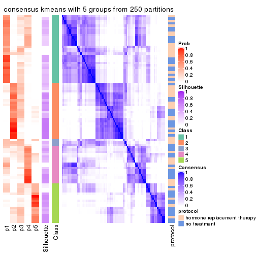
consensus_heatmap(res, k = 6)
Heatmaps for the membership of samples in all partitions to see how consistent they are:
membership_heatmap(res, k = 2)
membership_heatmap(res, k = 3)
membership_heatmap(res, k = 4)
membership_heatmap(res, k = 5)
membership_heatmap(res, k = 6)
As soon as we have had the classes for columns, we can look for signatures which are significantly different between classes which can be candidate marks for certain classes. Following are the heatmaps for signatures.
Signature heatmaps where rows are scaled:
get_signatures(res, k = 2)
get_signatures(res, k = 3)
get_signatures(res, k = 4)
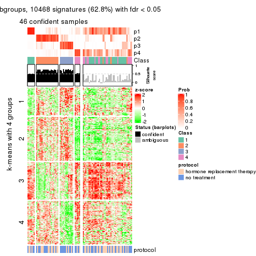
get_signatures(res, k = 5)
get_signatures(res, k = 6)
Signature heatmaps where rows are not scaled:
get_signatures(res, k = 2, scale_rows = FALSE)
get_signatures(res, k = 3, scale_rows = FALSE)

get_signatures(res, k = 4, scale_rows = FALSE)

get_signatures(res, k = 5, scale_rows = FALSE)
get_signatures(res, k = 6, scale_rows = FALSE)
Compare the overlap of signatures from different k:
compare_signatures(res)
get_signature() returns a data frame invisibly. TO get the list of signatures, the function
call should be assigned to a variable explicitly. In following code, if plot argument is set
to FALSE, no heatmap is plotted while only the differential analysis is performed.
# code only for demonstration
tb = get_signature(res, k = ..., plot = FALSE)
An example of the output of tb is:
#> which_row fdr mean_1 mean_2 scaled_mean_1 scaled_mean_2 km
#> 1 38 0.042760348 8.373488 9.131774 -0.5533452 0.5164555 1
#> 2 40 0.018707592 7.106213 8.469186 -0.6173731 0.5762149 1
#> 3 55 0.019134737 10.221463 11.207825 -0.6159697 0.5749050 1
#> 4 59 0.006059896 5.921854 7.869574 -0.6899429 0.6439467 1
#> 5 60 0.018055526 8.928898 10.211722 -0.6204761 0.5791110 1
#> 6 98 0.009384629 15.714769 14.887706 0.6635654 -0.6193277 2
...
The columns in tb are:
which_row: row indices corresponding to the input matrix.fdr: FDR for the differential test. mean_x: The mean value in group x.scaled_mean_x: The mean value in group x after rows are scaled.km: Row groups if k-means clustering is applied to rows.UMAP plot which shows how samples are separated.
dimension_reduction(res, k = 2, method = "UMAP")
dimension_reduction(res, k = 3, method = "UMAP")
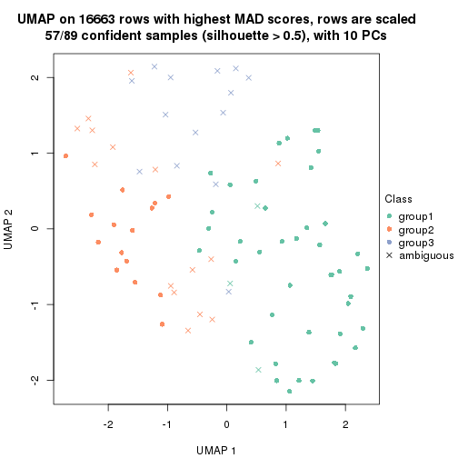
dimension_reduction(res, k = 4, method = "UMAP")
dimension_reduction(res, k = 5, method = "UMAP")
dimension_reduction(res, k = 6, method = "UMAP")
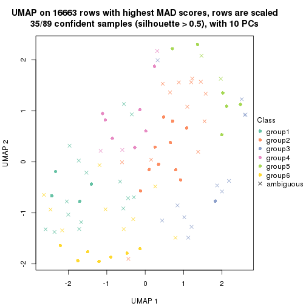
Following heatmap shows how subgroups are split when increasing k:
collect_classes(res)
Test correlation between subgroups and known annotations. If the known annotation is numeric, one-way ANOVA test is applied, and if the known annotation is discrete, chi-squared contingency table test is applied.
test_to_known_factors(res)
#> n protocol(p) k
#> MAD:kmeans 88 0.204 2
#> MAD:kmeans 57 1.000 3
#> MAD:kmeans 46 0.415 4
#> MAD:kmeans 30 0.516 5
#> MAD:kmeans 35 0.274 6
If matrix rows can be associated to genes, consider to use functional_enrichment(res,
...) to perform function enrichment for the signature genes. See this vignette for more detailed explanations.
The object with results only for a single top-value method and a single partition method can be extracted as:
res = res_list["MAD", "skmeans"]
# you can also extract it by
# res = res_list["MAD:skmeans"]
A summary of res and all the functions that can be applied to it:
res
#> A 'ConsensusPartition' object with k = 2, 3, 4, 5, 6.
#> On a matrix with 16663 rows and 89 columns.
#> Top rows (1000, 2000, 3000, 4000, 5000) are extracted by 'MAD' method.
#> Subgroups are detected by 'skmeans' method.
#> Performed in total 1250 partitions by row resampling.
#> Best k for subgroups seems to be 2.
#>
#> Following methods can be applied to this 'ConsensusPartition' object:
#> [1] "cola_report" "collect_classes" "collect_plots"
#> [4] "collect_stats" "colnames" "compare_signatures"
#> [7] "consensus_heatmap" "dimension_reduction" "functional_enrichment"
#> [10] "get_anno_col" "get_anno" "get_classes"
#> [13] "get_consensus" "get_matrix" "get_membership"
#> [16] "get_param" "get_signatures" "get_stats"
#> [19] "is_best_k" "is_stable_k" "membership_heatmap"
#> [22] "ncol" "nrow" "plot_ecdf"
#> [25] "rownames" "select_partition_number" "show"
#> [28] "suggest_best_k" "test_to_known_factors"
collect_plots() function collects all the plots made from res for all k (number of partitions)
into one single page to provide an easy and fast comparison between different k.
collect_plots(res)
The plots are:
k and the heatmap of
predicted classes for each k.k.k.k.All the plots in panels can be made by individual functions and they are plotted later in this section.
select_partition_number() produces several plots showing different
statistics for choosing “optimized” k. There are following statistics:
k;k, the area increased is defined as \(A_k - A_{k-1}\).The detailed explanations of these statistics can be found in the cola vignette.
Generally speaking, lower PAC score, higher mean silhouette score or higher
concordance corresponds to better partition. Rand index and Jaccard index
measure how similar the current partition is compared to partition with k-1.
If they are too similar, we won't accept k is better than k-1.
select_partition_number(res)
The numeric values for all these statistics can be obtained by get_stats().
get_stats(res)
#> k 1-PAC mean_silhouette concordance area_increased Rand Jaccard
#> 2 2 0.795 0.849 0.942 0.5007 0.505 0.505
#> 3 3 0.705 0.794 0.892 0.3091 0.736 0.528
#> 4 4 0.765 0.741 0.854 0.1394 0.859 0.624
#> 5 5 0.641 0.601 0.734 0.0664 0.910 0.677
#> 6 6 0.646 0.503 0.687 0.0432 0.932 0.702
suggest_best_k() suggests the best \(k\) based on these statistics. The rules are as follows:
suggest_best_k(res)
#> [1] 2
Following shows the table of the partitions (You need to click the show/hide
code output link to see it). The membership matrix (columns with name p*)
is inferred by
clue::cl_consensus()
function with the SE method. Basically the value in the membership matrix
represents the probability to belong to a certain group. The finall class
label for an item is determined with the group with highest probability it
belongs to.
In get_classes() function, the entropy is calculated from the membership
matrix and the silhouette score is calculated from the consensus matrix.
cbind(get_classes(res, k = 2), get_membership(res, k = 2))
#> class entropy silhouette p1 p2
#> GSM78921 1 0.0000 0.9207 1.000 0.000
#> GSM78922 1 0.0000 0.9207 1.000 0.000
#> GSM78923 2 0.0000 0.9534 0.000 1.000
#> GSM78924 2 0.0000 0.9534 0.000 1.000
#> GSM78925 2 0.0000 0.9534 0.000 1.000
#> GSM78926 1 0.0000 0.9207 1.000 0.000
#> GSM78927 1 0.0000 0.9207 1.000 0.000
#> GSM78928 2 0.4431 0.8665 0.092 0.908
#> GSM78929 2 0.0000 0.9534 0.000 1.000
#> GSM78930 1 0.0000 0.9207 1.000 0.000
#> GSM78931 2 0.6048 0.7971 0.148 0.852
#> GSM78932 2 0.0000 0.9534 0.000 1.000
#> GSM78933 1 0.0000 0.9207 1.000 0.000
#> GSM78934 2 0.0000 0.9534 0.000 1.000
#> GSM78935 1 0.0000 0.9207 1.000 0.000
#> GSM78936 1 0.0000 0.9207 1.000 0.000
#> GSM78937 1 0.9635 0.3900 0.612 0.388
#> GSM78938 1 0.0000 0.9207 1.000 0.000
#> GSM78939 1 0.0000 0.9207 1.000 0.000
#> GSM78940 2 0.4431 0.8667 0.092 0.908
#> GSM78941 2 0.0000 0.9534 0.000 1.000
#> GSM78942 2 0.2423 0.9210 0.040 0.960
#> GSM78943 1 0.0000 0.9207 1.000 0.000
#> GSM78944 1 0.0376 0.9178 0.996 0.004
#> GSM78945 1 0.0000 0.9207 1.000 0.000
#> GSM78946 1 0.0000 0.9207 1.000 0.000
#> GSM78947 2 0.0000 0.9534 0.000 1.000
#> GSM78948 1 0.0000 0.9207 1.000 0.000
#> GSM78949 1 0.0000 0.9207 1.000 0.000
#> GSM78950 1 0.0000 0.9207 1.000 0.000
#> GSM78951 1 0.0000 0.9207 1.000 0.000
#> GSM78952 2 0.0000 0.9534 0.000 1.000
#> GSM78953 2 0.0000 0.9534 0.000 1.000
#> GSM78954 2 0.0000 0.9534 0.000 1.000
#> GSM78955 2 0.0000 0.9534 0.000 1.000
#> GSM78956 2 0.0000 0.9534 0.000 1.000
#> GSM78957 2 0.0000 0.9534 0.000 1.000
#> GSM78958 1 0.7745 0.6808 0.772 0.228
#> GSM78959 1 0.0000 0.9207 1.000 0.000
#> GSM78960 2 0.2423 0.9212 0.040 0.960
#> GSM78961 2 0.7219 0.7214 0.200 0.800
#> GSM78962 1 0.2948 0.8790 0.948 0.052
#> GSM78963 2 0.0000 0.9534 0.000 1.000
#> GSM78964 2 0.0000 0.9534 0.000 1.000
#> GSM78965 2 0.0000 0.9534 0.000 1.000
#> GSM78966 1 0.0000 0.9207 1.000 0.000
#> GSM78967 1 0.0000 0.9207 1.000 0.000
#> GSM78879 1 0.0000 0.9207 1.000 0.000
#> GSM78880 1 0.0000 0.9207 1.000 0.000
#> GSM78881 1 0.0000 0.9207 1.000 0.000
#> GSM78882 1 0.0000 0.9207 1.000 0.000
#> GSM78883 1 0.0000 0.9207 1.000 0.000
#> GSM78884 1 0.0000 0.9207 1.000 0.000
#> GSM78885 1 0.0000 0.9207 1.000 0.000
#> GSM78886 2 0.0000 0.9534 0.000 1.000
#> GSM78887 1 0.0000 0.9207 1.000 0.000
#> GSM78888 1 0.0000 0.9207 1.000 0.000
#> GSM78889 2 0.0000 0.9534 0.000 1.000
#> GSM78890 1 0.9922 0.2333 0.552 0.448
#> GSM78891 1 0.0000 0.9207 1.000 0.000
#> GSM78892 2 0.0000 0.9534 0.000 1.000
#> GSM78893 2 0.0000 0.9534 0.000 1.000
#> GSM78894 1 0.0000 0.9207 1.000 0.000
#> GSM78895 2 0.0000 0.9534 0.000 1.000
#> GSM78896 1 0.0000 0.9207 1.000 0.000
#> GSM78897 1 0.9460 0.4305 0.636 0.364
#> GSM78898 1 0.0000 0.9207 1.000 0.000
#> GSM78899 1 0.0000 0.9207 1.000 0.000
#> GSM78900 1 1.0000 0.0133 0.504 0.496
#> GSM78901 1 0.9922 0.2332 0.552 0.448
#> GSM78902 1 0.9815 0.2620 0.580 0.420
#> GSM78903 2 0.0000 0.9534 0.000 1.000
#> GSM78904 2 0.9896 0.1200 0.440 0.560
#> GSM78905 2 0.0000 0.9534 0.000 1.000
#> GSM78906 2 0.0000 0.9534 0.000 1.000
#> GSM78907 1 0.0000 0.9207 1.000 0.000
#> GSM78908 1 0.5178 0.8165 0.884 0.116
#> GSM78909 2 0.0000 0.9534 0.000 1.000
#> GSM78910 1 0.0000 0.9207 1.000 0.000
#> GSM78911 2 0.0000 0.9534 0.000 1.000
#> GSM78912 1 0.0000 0.9207 1.000 0.000
#> GSM78913 2 0.0000 0.9534 0.000 1.000
#> GSM78914 2 0.9970 0.0760 0.468 0.532
#> GSM78915 2 0.0000 0.9534 0.000 1.000
#> GSM78916 2 0.0000 0.9534 0.000 1.000
#> GSM78917 1 0.0000 0.9207 1.000 0.000
#> GSM78918 1 0.7219 0.7196 0.800 0.200
#> GSM78919 1 0.0000 0.9207 1.000 0.000
#> GSM78920 1 0.9970 0.1718 0.532 0.468
cbind(get_classes(res, k = 3), get_membership(res, k = 3))
#> class entropy silhouette p1 p2 p3
#> GSM78921 1 0.1964 0.8552 0.944 0.000 0.056
#> GSM78922 1 0.0000 0.8793 1.000 0.000 0.000
#> GSM78923 2 0.0000 0.8775 0.000 1.000 0.000
#> GSM78924 3 0.5397 0.7254 0.000 0.280 0.720
#> GSM78925 3 0.5363 0.7300 0.000 0.276 0.724
#> GSM78926 1 0.0000 0.8793 1.000 0.000 0.000
#> GSM78927 1 0.0424 0.8788 0.992 0.000 0.008
#> GSM78928 2 0.0000 0.8775 0.000 1.000 0.000
#> GSM78929 2 0.0000 0.8775 0.000 1.000 0.000
#> GSM78930 3 0.0000 0.8435 0.000 0.000 1.000
#> GSM78931 3 0.5269 0.7127 0.200 0.016 0.784
#> GSM78932 3 0.5397 0.7268 0.000 0.280 0.720
#> GSM78933 1 0.4555 0.8250 0.800 0.000 0.200
#> GSM78934 2 0.0000 0.8775 0.000 1.000 0.000
#> GSM78935 1 0.0000 0.8793 1.000 0.000 0.000
#> GSM78936 2 0.8720 0.1997 0.412 0.480 0.108
#> GSM78937 1 0.5178 0.5733 0.744 0.256 0.000
#> GSM78938 1 0.4702 0.8194 0.788 0.000 0.212
#> GSM78939 1 0.0000 0.8793 1.000 0.000 0.000
#> GSM78940 2 0.0000 0.8775 0.000 1.000 0.000
#> GSM78941 2 0.0000 0.8775 0.000 1.000 0.000
#> GSM78942 3 0.5269 0.7127 0.200 0.016 0.784
#> GSM78943 1 0.4605 0.8234 0.796 0.000 0.204
#> GSM78944 1 0.4702 0.8194 0.788 0.000 0.212
#> GSM78945 1 0.4605 0.8234 0.796 0.000 0.204
#> GSM78946 1 0.4555 0.8250 0.800 0.000 0.200
#> GSM78947 3 0.3551 0.8170 0.000 0.132 0.868
#> GSM78948 1 0.0000 0.8793 1.000 0.000 0.000
#> GSM78949 1 0.4702 0.8194 0.788 0.000 0.212
#> GSM78950 1 0.1964 0.8552 0.944 0.000 0.056
#> GSM78951 3 0.0000 0.8435 0.000 0.000 1.000
#> GSM78952 2 0.0000 0.8775 0.000 1.000 0.000
#> GSM78953 2 0.5363 0.4701 0.000 0.724 0.276
#> GSM78954 3 0.1964 0.8354 0.000 0.056 0.944
#> GSM78955 2 0.0237 0.8743 0.000 0.996 0.004
#> GSM78956 2 0.0000 0.8775 0.000 1.000 0.000
#> GSM78957 2 0.0000 0.8775 0.000 1.000 0.000
#> GSM78958 2 0.8065 0.2025 0.452 0.484 0.064
#> GSM78959 1 0.0000 0.8793 1.000 0.000 0.000
#> GSM78960 3 0.0237 0.8447 0.000 0.004 0.996
#> GSM78961 3 0.0237 0.8447 0.000 0.004 0.996
#> GSM78962 1 0.2066 0.8529 0.940 0.000 0.060
#> GSM78963 3 0.5327 0.7342 0.000 0.272 0.728
#> GSM78964 3 0.5327 0.7342 0.000 0.272 0.728
#> GSM78965 3 0.0237 0.8447 0.000 0.004 0.996
#> GSM78966 1 0.0000 0.8793 1.000 0.000 0.000
#> GSM78967 1 0.0000 0.8793 1.000 0.000 0.000
#> GSM78879 1 0.0000 0.8793 1.000 0.000 0.000
#> GSM78880 1 0.0000 0.8793 1.000 0.000 0.000
#> GSM78881 1 0.0000 0.8793 1.000 0.000 0.000
#> GSM78882 1 0.4702 0.8194 0.788 0.000 0.212
#> GSM78883 1 0.0592 0.8754 0.988 0.000 0.012
#> GSM78884 1 0.1964 0.8552 0.944 0.000 0.056
#> GSM78885 1 0.0000 0.8793 1.000 0.000 0.000
#> GSM78886 2 0.0000 0.8775 0.000 1.000 0.000
#> GSM78887 2 0.7920 0.1650 0.468 0.476 0.056
#> GSM78888 1 0.4605 0.8234 0.796 0.000 0.204
#> GSM78889 2 0.0000 0.8775 0.000 1.000 0.000
#> GSM78890 1 0.6521 0.0377 0.500 0.496 0.004
#> GSM78891 1 0.4702 0.8194 0.788 0.000 0.212
#> GSM78892 2 0.0000 0.8775 0.000 1.000 0.000
#> GSM78893 2 0.0000 0.8775 0.000 1.000 0.000
#> GSM78894 1 0.4702 0.8194 0.788 0.000 0.212
#> GSM78895 2 0.0000 0.8775 0.000 1.000 0.000
#> GSM78896 1 0.5327 0.7811 0.728 0.000 0.272
#> GSM78897 2 0.9086 0.1966 0.144 0.484 0.372
#> GSM78898 1 0.4702 0.8194 0.788 0.000 0.212
#> GSM78899 1 0.1964 0.8552 0.944 0.000 0.056
#> GSM78900 3 0.0000 0.8435 0.000 0.000 1.000
#> GSM78901 2 0.2448 0.8161 0.076 0.924 0.000
#> GSM78902 3 0.0000 0.8435 0.000 0.000 1.000
#> GSM78903 2 0.0000 0.8775 0.000 1.000 0.000
#> GSM78904 2 0.4504 0.7010 0.196 0.804 0.000
#> GSM78905 3 0.2066 0.8345 0.000 0.060 0.940
#> GSM78906 2 0.0000 0.8775 0.000 1.000 0.000
#> GSM78907 1 0.4702 0.8194 0.788 0.000 0.212
#> GSM78908 3 0.0592 0.8407 0.012 0.000 0.988
#> GSM78909 2 0.0000 0.8775 0.000 1.000 0.000
#> GSM78910 1 0.0000 0.8793 1.000 0.000 0.000
#> GSM78911 2 0.0000 0.8775 0.000 1.000 0.000
#> GSM78912 1 0.5327 0.7811 0.728 0.000 0.272
#> GSM78913 3 0.5327 0.7342 0.000 0.272 0.728
#> GSM78914 3 0.0000 0.8435 0.000 0.000 1.000
#> GSM78915 3 0.5178 0.7460 0.000 0.256 0.744
#> GSM78916 2 0.0000 0.8775 0.000 1.000 0.000
#> GSM78917 1 0.0000 0.8793 1.000 0.000 0.000
#> GSM78918 1 0.0237 0.8783 0.996 0.004 0.000
#> GSM78919 1 0.0000 0.8793 1.000 0.000 0.000
#> GSM78920 2 0.2261 0.8228 0.068 0.932 0.000
cbind(get_classes(res, k = 4), get_membership(res, k = 4))
#> class entropy silhouette p1 p2 p3 p4
#> GSM78921 4 0.4925 0.767 0.428 0.000 0.000 0.572
#> GSM78922 1 0.1022 0.585 0.968 0.000 0.000 0.032
#> GSM78923 2 0.0000 0.947 0.000 1.000 0.000 0.000
#> GSM78924 3 0.1118 0.867 0.000 0.036 0.964 0.000
#> GSM78925 3 0.1302 0.863 0.000 0.044 0.956 0.000
#> GSM78926 4 0.4925 0.767 0.428 0.000 0.000 0.572
#> GSM78927 1 0.2589 0.607 0.884 0.000 0.000 0.116
#> GSM78928 2 0.0188 0.946 0.004 0.996 0.000 0.000
#> GSM78929 2 0.1557 0.936 0.000 0.944 0.056 0.000
#> GSM78930 3 0.4697 0.608 0.000 0.000 0.644 0.356
#> GSM78931 4 0.6757 0.382 0.100 0.000 0.376 0.524
#> GSM78932 3 0.1940 0.832 0.000 0.076 0.924 0.000
#> GSM78933 1 0.4941 0.671 0.564 0.000 0.000 0.436
#> GSM78934 2 0.1211 0.943 0.000 0.960 0.040 0.000
#> GSM78935 1 0.2973 0.391 0.856 0.000 0.000 0.144
#> GSM78936 4 0.4290 0.644 0.212 0.016 0.000 0.772
#> GSM78937 1 0.5458 0.501 0.720 0.204 0.000 0.076
#> GSM78938 1 0.4907 0.678 0.580 0.000 0.000 0.420
#> GSM78939 1 0.2647 0.604 0.880 0.000 0.000 0.120
#> GSM78940 2 0.0000 0.947 0.000 1.000 0.000 0.000
#> GSM78941 2 0.1389 0.940 0.000 0.952 0.048 0.000
#> GSM78942 4 0.6659 0.330 0.088 0.000 0.400 0.512
#> GSM78943 1 0.4916 0.676 0.576 0.000 0.000 0.424
#> GSM78944 1 0.4907 0.678 0.580 0.000 0.000 0.420
#> GSM78945 1 0.4907 0.678 0.580 0.000 0.000 0.420
#> GSM78946 1 0.4898 0.678 0.584 0.000 0.000 0.416
#> GSM78947 3 0.0336 0.879 0.000 0.008 0.992 0.000
#> GSM78948 1 0.1557 0.559 0.944 0.000 0.000 0.056
#> GSM78949 1 0.4907 0.678 0.580 0.000 0.000 0.420
#> GSM78950 4 0.4898 0.771 0.416 0.000 0.000 0.584
#> GSM78951 3 0.4697 0.608 0.000 0.000 0.644 0.356
#> GSM78952 2 0.1211 0.943 0.000 0.960 0.040 0.000
#> GSM78953 2 0.4855 0.398 0.000 0.600 0.400 0.000
#> GSM78954 3 0.0469 0.880 0.000 0.000 0.988 0.012
#> GSM78955 2 0.1389 0.941 0.000 0.952 0.048 0.000
#> GSM78956 2 0.0000 0.947 0.000 1.000 0.000 0.000
#> GSM78957 2 0.0000 0.947 0.000 1.000 0.000 0.000
#> GSM78958 4 0.4907 0.771 0.420 0.000 0.000 0.580
#> GSM78959 1 0.1389 0.569 0.952 0.000 0.000 0.048
#> GSM78960 3 0.0469 0.879 0.000 0.000 0.988 0.012
#> GSM78961 3 0.1398 0.869 0.000 0.004 0.956 0.040
#> GSM78962 4 0.5233 0.771 0.412 0.004 0.004 0.580
#> GSM78963 3 0.0592 0.878 0.000 0.016 0.984 0.000
#> GSM78964 3 0.0592 0.878 0.000 0.016 0.984 0.000
#> GSM78965 3 0.0000 0.879 0.000 0.000 1.000 0.000
#> GSM78966 1 0.1677 0.618 0.948 0.040 0.000 0.012
#> GSM78967 1 0.0336 0.603 0.992 0.000 0.000 0.008
#> GSM78879 1 0.1716 0.548 0.936 0.000 0.000 0.064
#> GSM78880 1 0.1118 0.581 0.964 0.000 0.000 0.036
#> GSM78881 1 0.2530 0.605 0.888 0.000 0.000 0.112
#> GSM78882 1 0.5250 0.672 0.552 0.000 0.008 0.440
#> GSM78883 4 0.4941 0.759 0.436 0.000 0.000 0.564
#> GSM78884 4 0.4907 0.771 0.420 0.000 0.000 0.580
#> GSM78885 4 0.4888 0.742 0.412 0.000 0.000 0.588
#> GSM78886 2 0.1798 0.937 0.000 0.944 0.040 0.016
#> GSM78887 4 0.6214 0.740 0.360 0.064 0.000 0.576
#> GSM78888 1 0.4948 0.675 0.560 0.000 0.000 0.440
#> GSM78889 2 0.0000 0.947 0.000 1.000 0.000 0.000
#> GSM78890 1 0.5571 0.395 0.580 0.396 0.000 0.024
#> GSM78891 1 0.4907 0.678 0.580 0.000 0.000 0.420
#> GSM78892 2 0.0000 0.947 0.000 1.000 0.000 0.000
#> GSM78893 2 0.1302 0.941 0.000 0.956 0.044 0.000
#> GSM78894 1 0.4907 0.678 0.580 0.000 0.000 0.420
#> GSM78895 2 0.2345 0.899 0.000 0.900 0.100 0.000
#> GSM78896 4 0.0804 0.443 0.012 0.000 0.008 0.980
#> GSM78897 1 0.6226 0.657 0.548 0.020 0.024 0.408
#> GSM78898 1 0.4907 0.678 0.580 0.000 0.000 0.420
#> GSM78899 4 0.4907 0.771 0.420 0.000 0.000 0.580
#> GSM78900 3 0.4406 0.661 0.000 0.000 0.700 0.300
#> GSM78901 2 0.2053 0.882 0.072 0.924 0.000 0.004
#> GSM78902 3 0.4697 0.608 0.000 0.000 0.644 0.356
#> GSM78903 2 0.1211 0.943 0.000 0.960 0.040 0.000
#> GSM78904 2 0.0336 0.942 0.008 0.992 0.000 0.000
#> GSM78905 3 0.1211 0.874 0.000 0.000 0.960 0.040
#> GSM78906 2 0.2081 0.914 0.000 0.916 0.084 0.000
#> GSM78907 1 0.5329 0.670 0.568 0.000 0.012 0.420
#> GSM78908 4 0.3876 0.480 0.040 0.000 0.124 0.836
#> GSM78909 2 0.0000 0.947 0.000 1.000 0.000 0.000
#> GSM78910 1 0.1584 0.618 0.952 0.036 0.000 0.012
#> GSM78911 2 0.0000 0.947 0.000 1.000 0.000 0.000
#> GSM78912 4 0.1151 0.457 0.024 0.000 0.008 0.968
#> GSM78913 3 0.0469 0.879 0.000 0.012 0.988 0.000
#> GSM78914 3 0.1211 0.867 0.000 0.000 0.960 0.040
#> GSM78915 3 0.0000 0.879 0.000 0.000 1.000 0.000
#> GSM78916 2 0.0000 0.947 0.000 1.000 0.000 0.000
#> GSM78917 1 0.0336 0.604 0.992 0.000 0.000 0.008
#> GSM78918 1 0.4225 0.572 0.792 0.184 0.000 0.024
#> GSM78919 1 0.1798 0.620 0.944 0.040 0.000 0.016
#> GSM78920 2 0.2704 0.827 0.124 0.876 0.000 0.000
cbind(get_classes(res, k = 5), get_membership(res, k = 5))
#> class entropy silhouette p1 p2 p3 p4 p5
#> GSM78921 1 0.4101 0.12023 0.628 0.000 0.000 0.372 0.000
#> GSM78922 1 0.3543 0.56343 0.828 0.000 0.000 0.060 0.112
#> GSM78923 2 0.0451 0.84179 0.000 0.988 0.008 0.000 0.004
#> GSM78924 3 0.3209 0.74943 0.000 0.060 0.864 0.068 0.008
#> GSM78925 3 0.3209 0.75019 0.000 0.060 0.864 0.068 0.008
#> GSM78926 1 0.3752 0.26618 0.708 0.000 0.000 0.292 0.000
#> GSM78927 1 0.2959 0.58798 0.864 0.000 0.000 0.100 0.036
#> GSM78928 2 0.4701 0.69791 0.028 0.744 0.000 0.036 0.192
#> GSM78929 2 0.6290 0.74549 0.000 0.648 0.164 0.064 0.124
#> GSM78930 3 0.6194 0.42579 0.000 0.000 0.472 0.140 0.388
#> GSM78931 4 0.4000 0.60641 0.012 0.004 0.224 0.756 0.004
#> GSM78932 3 0.3231 0.64136 0.000 0.196 0.800 0.004 0.000
#> GSM78933 1 0.4770 0.07831 0.644 0.000 0.000 0.036 0.320
#> GSM78934 2 0.2423 0.83733 0.000 0.896 0.024 0.080 0.000
#> GSM78935 1 0.2561 0.58401 0.856 0.000 0.000 0.144 0.000
#> GSM78936 4 0.4930 0.67702 0.140 0.000 0.000 0.716 0.144
#> GSM78937 1 0.6089 0.39272 0.664 0.144 0.000 0.052 0.140
#> GSM78938 5 0.3727 0.76148 0.216 0.000 0.000 0.016 0.768
#> GSM78939 1 0.3962 0.56529 0.800 0.000 0.000 0.112 0.088
#> GSM78940 2 0.1251 0.83493 0.000 0.956 0.000 0.008 0.036
#> GSM78941 2 0.2770 0.83236 0.000 0.880 0.044 0.076 0.000
#> GSM78942 4 0.4492 0.53736 0.008 0.016 0.264 0.708 0.004
#> GSM78943 1 0.4743 -0.31577 0.512 0.000 0.000 0.016 0.472
#> GSM78944 5 0.3491 0.75634 0.228 0.000 0.000 0.004 0.768
#> GSM78945 5 0.4003 0.67540 0.288 0.000 0.000 0.008 0.704
#> GSM78946 1 0.5003 -0.22259 0.544 0.000 0.000 0.032 0.424
#> GSM78947 3 0.1195 0.78558 0.000 0.028 0.960 0.012 0.000
#> GSM78948 1 0.1671 0.60977 0.924 0.000 0.000 0.076 0.000
#> GSM78949 5 0.3461 0.76237 0.224 0.000 0.000 0.004 0.772
#> GSM78950 4 0.3579 0.69281 0.240 0.000 0.000 0.756 0.004
#> GSM78951 3 0.6194 0.42579 0.000 0.000 0.472 0.140 0.388
#> GSM78952 2 0.3798 0.80010 0.000 0.808 0.128 0.064 0.000
#> GSM78953 2 0.5626 0.29742 0.000 0.504 0.420 0.076 0.000
#> GSM78954 3 0.2685 0.78252 0.000 0.000 0.880 0.028 0.092
#> GSM78955 2 0.5537 0.80568 0.000 0.720 0.080 0.072 0.128
#> GSM78956 2 0.0451 0.84011 0.000 0.988 0.008 0.004 0.000
#> GSM78957 2 0.0955 0.84003 0.000 0.968 0.028 0.004 0.000
#> GSM78958 4 0.3636 0.66147 0.272 0.000 0.000 0.728 0.000
#> GSM78959 1 0.1043 0.60754 0.960 0.000 0.000 0.040 0.000
#> GSM78960 3 0.2770 0.77036 0.000 0.000 0.880 0.076 0.044
#> GSM78961 3 0.3817 0.74823 0.000 0.032 0.820 0.128 0.020
#> GSM78962 4 0.4519 0.67226 0.228 0.052 0.000 0.720 0.000
#> GSM78963 3 0.1043 0.78299 0.000 0.040 0.960 0.000 0.000
#> GSM78964 3 0.1205 0.78269 0.000 0.040 0.956 0.004 0.000
#> GSM78965 3 0.2370 0.77775 0.000 0.000 0.904 0.056 0.040
#> GSM78966 1 0.5419 0.22827 0.600 0.012 0.000 0.048 0.340
#> GSM78967 1 0.5063 0.28730 0.632 0.000 0.000 0.056 0.312
#> GSM78879 1 0.1792 0.61012 0.916 0.000 0.000 0.084 0.000
#> GSM78880 1 0.2659 0.59561 0.888 0.000 0.000 0.060 0.052
#> GSM78881 1 0.3255 0.58768 0.848 0.000 0.000 0.100 0.052
#> GSM78882 5 0.5330 0.49912 0.396 0.000 0.000 0.056 0.548
#> GSM78883 1 0.4045 0.06044 0.644 0.000 0.000 0.356 0.000
#> GSM78884 4 0.3913 0.63975 0.324 0.000 0.000 0.676 0.000
#> GSM78885 1 0.4907 0.35719 0.664 0.000 0.000 0.280 0.056
#> GSM78886 2 0.3305 0.83578 0.000 0.860 0.032 0.088 0.020
#> GSM78887 4 0.5016 0.67295 0.176 0.120 0.000 0.704 0.000
#> GSM78888 5 0.4416 0.62748 0.356 0.000 0.000 0.012 0.632
#> GSM78889 2 0.1872 0.83877 0.000 0.928 0.052 0.000 0.020
#> GSM78890 5 0.6705 0.22353 0.132 0.292 0.000 0.036 0.540
#> GSM78891 5 0.3398 0.76344 0.216 0.000 0.000 0.004 0.780
#> GSM78892 2 0.4576 0.80941 0.004 0.768 0.012 0.060 0.156
#> GSM78893 2 0.3361 0.83705 0.000 0.860 0.036 0.080 0.024
#> GSM78894 5 0.3628 0.76250 0.216 0.000 0.000 0.012 0.772
#> GSM78895 2 0.4355 0.76404 0.000 0.760 0.164 0.076 0.000
#> GSM78896 4 0.4584 0.52450 0.028 0.000 0.000 0.660 0.312
#> GSM78897 5 0.7021 0.24760 0.264 0.036 0.092 0.036 0.572
#> GSM78898 5 0.3461 0.75482 0.224 0.000 0.000 0.004 0.772
#> GSM78899 4 0.3774 0.65433 0.296 0.000 0.000 0.704 0.000
#> GSM78900 3 0.5958 0.55855 0.000 0.000 0.568 0.144 0.288
#> GSM78901 2 0.4295 0.70995 0.024 0.724 0.000 0.004 0.248
#> GSM78902 3 0.6194 0.42579 0.000 0.000 0.472 0.140 0.388
#> GSM78903 2 0.4376 0.83206 0.000 0.804 0.044 0.072 0.080
#> GSM78904 2 0.5430 0.70428 0.084 0.704 0.000 0.032 0.180
#> GSM78905 3 0.3565 0.75158 0.000 0.000 0.800 0.024 0.176
#> GSM78906 2 0.3532 0.81371 0.000 0.832 0.092 0.076 0.000
#> GSM78907 5 0.4272 0.66827 0.152 0.000 0.008 0.060 0.780
#> GSM78908 4 0.3938 0.65669 0.024 0.000 0.016 0.796 0.164
#> GSM78909 2 0.0798 0.84041 0.000 0.976 0.016 0.008 0.000
#> GSM78910 1 0.5317 0.23354 0.604 0.008 0.000 0.048 0.340
#> GSM78911 2 0.0794 0.84044 0.000 0.972 0.028 0.000 0.000
#> GSM78912 4 0.3607 0.58970 0.004 0.000 0.000 0.752 0.244
#> GSM78913 3 0.1043 0.78299 0.000 0.040 0.960 0.000 0.000
#> GSM78914 3 0.3291 0.75906 0.000 0.000 0.848 0.088 0.064
#> GSM78915 3 0.1082 0.78619 0.000 0.000 0.964 0.008 0.028
#> GSM78916 2 0.2280 0.81264 0.000 0.880 0.000 0.000 0.120
#> GSM78917 1 0.2966 0.51315 0.848 0.000 0.000 0.016 0.136
#> GSM78918 1 0.7211 -0.00999 0.456 0.124 0.000 0.064 0.356
#> GSM78919 1 0.5433 0.21970 0.596 0.012 0.000 0.048 0.344
#> GSM78920 2 0.7083 0.40604 0.168 0.504 0.000 0.044 0.284
cbind(get_classes(res, k = 6), get_membership(res, k = 6))
#> class entropy silhouette p1 p2 p3 p4 p5 p6
#> GSM78921 1 0.2912 0.61199 0.784 0.000 0.000 0.216 0.000 0.000
#> GSM78922 1 0.2791 0.72714 0.852 0.000 0.000 0.016 0.008 0.124
#> GSM78923 2 0.1462 0.60222 0.000 0.936 0.000 0.008 0.056 0.000
#> GSM78924 3 0.5791 0.43214 0.012 0.160 0.540 0.000 0.288 0.000
#> GSM78925 3 0.5645 0.45835 0.012 0.140 0.560 0.000 0.288 0.000
#> GSM78926 1 0.2692 0.71428 0.840 0.000 0.000 0.148 0.012 0.000
#> GSM78927 1 0.3005 0.75300 0.864 0.000 0.000 0.052 0.024 0.060
#> GSM78928 2 0.5789 -0.09512 0.000 0.532 0.000 0.016 0.316 0.136
#> GSM78929 5 0.6128 -0.21789 0.016 0.340 0.180 0.000 0.464 0.000
#> GSM78930 3 0.6972 0.33297 0.000 0.000 0.448 0.172 0.100 0.280
#> GSM78931 4 0.4737 0.63793 0.064 0.000 0.216 0.696 0.024 0.000
#> GSM78932 3 0.5659 0.46103 0.012 0.208 0.600 0.004 0.176 0.000
#> GSM78933 1 0.5007 0.33879 0.604 0.000 0.000 0.044 0.024 0.328
#> GSM78934 2 0.2631 0.60909 0.000 0.840 0.000 0.008 0.152 0.000
#> GSM78935 1 0.2151 0.78348 0.912 0.000 0.000 0.048 0.016 0.024
#> GSM78936 4 0.4281 0.72091 0.112 0.020 0.000 0.788 0.032 0.048
#> GSM78937 1 0.6764 0.09523 0.452 0.132 0.000 0.040 0.352 0.024
#> GSM78938 6 0.1515 0.59722 0.020 0.000 0.000 0.028 0.008 0.944
#> GSM78939 1 0.3390 0.73832 0.840 0.000 0.000 0.056 0.032 0.072
#> GSM78940 2 0.2593 0.50966 0.000 0.844 0.000 0.008 0.148 0.000
#> GSM78941 2 0.2613 0.60132 0.000 0.848 0.012 0.000 0.140 0.000
#> GSM78942 4 0.5195 0.56247 0.052 0.012 0.252 0.656 0.028 0.000
#> GSM78943 6 0.5249 0.09655 0.436 0.000 0.004 0.060 0.008 0.492
#> GSM78944 6 0.2519 0.62202 0.044 0.000 0.000 0.004 0.068 0.884
#> GSM78945 6 0.3528 0.61863 0.084 0.000 0.000 0.008 0.092 0.816
#> GSM78946 6 0.5873 0.19407 0.376 0.000 0.000 0.028 0.104 0.492
#> GSM78947 3 0.4517 0.58597 0.012 0.104 0.728 0.000 0.156 0.000
#> GSM78948 1 0.2011 0.77651 0.912 0.000 0.000 0.020 0.004 0.064
#> GSM78949 6 0.1693 0.61943 0.044 0.000 0.000 0.004 0.020 0.932
#> GSM78950 4 0.2833 0.73475 0.148 0.000 0.000 0.836 0.004 0.012
#> GSM78951 3 0.6982 0.32828 0.000 0.000 0.444 0.172 0.100 0.284
#> GSM78952 2 0.4867 0.44468 0.012 0.640 0.064 0.000 0.284 0.000
#> GSM78953 2 0.5953 0.30840 0.012 0.544 0.184 0.004 0.256 0.000
#> GSM78954 3 0.3565 0.58465 0.000 0.000 0.816 0.012 0.072 0.100
#> GSM78955 2 0.4801 0.30255 0.000 0.484 0.024 0.000 0.476 0.016
#> GSM78956 2 0.0508 0.60454 0.000 0.984 0.000 0.012 0.004 0.000
#> GSM78957 2 0.1528 0.59786 0.000 0.936 0.000 0.016 0.048 0.000
#> GSM78958 4 0.3971 0.65491 0.268 0.000 0.004 0.704 0.024 0.000
#> GSM78959 1 0.2213 0.77388 0.908 0.000 0.000 0.032 0.012 0.048
#> GSM78960 3 0.1151 0.61225 0.000 0.000 0.956 0.032 0.012 0.000
#> GSM78961 3 0.5772 0.56936 0.012 0.080 0.676 0.132 0.096 0.004
#> GSM78962 4 0.4399 0.68842 0.172 0.036 0.000 0.744 0.048 0.000
#> GSM78963 3 0.4723 0.56754 0.012 0.124 0.708 0.000 0.156 0.000
#> GSM78964 3 0.4654 0.57298 0.012 0.124 0.716 0.000 0.148 0.000
#> GSM78965 3 0.0405 0.61755 0.000 0.000 0.988 0.008 0.004 0.000
#> GSM78966 6 0.6807 0.41843 0.280 0.000 0.000 0.060 0.220 0.440
#> GSM78967 6 0.6893 0.38490 0.300 0.000 0.000 0.064 0.220 0.416
#> GSM78879 1 0.1575 0.78192 0.936 0.000 0.000 0.032 0.000 0.032
#> GSM78880 1 0.2349 0.76514 0.892 0.000 0.000 0.020 0.008 0.080
#> GSM78881 1 0.2614 0.75324 0.888 0.000 0.000 0.052 0.024 0.036
#> GSM78882 6 0.6418 0.26611 0.296 0.000 0.044 0.060 0.052 0.548
#> GSM78883 1 0.4590 0.53362 0.668 0.000 0.000 0.268 0.056 0.008
#> GSM78884 4 0.3672 0.62388 0.304 0.000 0.000 0.688 0.008 0.000
#> GSM78885 1 0.3509 0.72279 0.816 0.000 0.000 0.128 0.032 0.024
#> GSM78886 2 0.3630 0.58840 0.000 0.772 0.000 0.020 0.196 0.012
#> GSM78887 4 0.4213 0.64238 0.044 0.184 0.000 0.752 0.012 0.008
#> GSM78888 6 0.3933 0.53132 0.216 0.000 0.000 0.040 0.004 0.740
#> GSM78889 2 0.5095 0.40140 0.012 0.672 0.072 0.016 0.228 0.000
#> GSM78890 6 0.6618 0.15662 0.024 0.156 0.000 0.020 0.356 0.444
#> GSM78891 6 0.1155 0.61100 0.036 0.000 0.000 0.004 0.004 0.956
#> GSM78892 2 0.4471 0.18302 0.028 0.500 0.000 0.000 0.472 0.000
#> GSM78893 2 0.3623 0.58333 0.000 0.764 0.000 0.008 0.208 0.020
#> GSM78894 6 0.1562 0.60268 0.024 0.000 0.000 0.032 0.004 0.940
#> GSM78895 2 0.4874 0.44358 0.004 0.636 0.084 0.000 0.276 0.000
#> GSM78896 4 0.4792 0.55235 0.028 0.000 0.012 0.664 0.020 0.276
#> GSM78897 5 0.7396 0.03019 0.192 0.008 0.036 0.036 0.408 0.320
#> GSM78898 6 0.2437 0.62133 0.036 0.000 0.000 0.004 0.072 0.888
#> GSM78899 4 0.3464 0.63791 0.312 0.000 0.000 0.688 0.000 0.000
#> GSM78900 3 0.6814 0.37045 0.000 0.000 0.496 0.176 0.100 0.228
#> GSM78901 2 0.5243 0.00372 0.016 0.548 0.000 0.016 0.388 0.032
#> GSM78902 3 0.6992 0.32598 0.000 0.000 0.440 0.172 0.100 0.288
#> GSM78903 2 0.3797 0.44187 0.000 0.580 0.000 0.000 0.420 0.000
#> GSM78904 5 0.5394 0.05482 0.052 0.432 0.000 0.028 0.488 0.000
#> GSM78905 3 0.4831 0.49943 0.000 0.000 0.668 0.000 0.164 0.168
#> GSM78906 2 0.3500 0.55977 0.000 0.768 0.028 0.000 0.204 0.000
#> GSM78907 6 0.5212 0.44421 0.056 0.000 0.020 0.096 0.104 0.724
#> GSM78908 4 0.3998 0.66687 0.008 0.000 0.048 0.808 0.048 0.088
#> GSM78909 2 0.1461 0.59754 0.000 0.940 0.000 0.016 0.044 0.000
#> GSM78910 6 0.6807 0.41830 0.280 0.000 0.000 0.060 0.220 0.440
#> GSM78911 2 0.2306 0.58545 0.004 0.888 0.000 0.016 0.092 0.000
#> GSM78912 4 0.3811 0.65207 0.004 0.000 0.028 0.792 0.024 0.152
#> GSM78913 3 0.4614 0.57258 0.012 0.120 0.720 0.000 0.148 0.000
#> GSM78914 3 0.2896 0.58475 0.000 0.000 0.864 0.080 0.044 0.012
#> GSM78915 3 0.0603 0.61875 0.000 0.004 0.980 0.000 0.016 0.000
#> GSM78916 2 0.3672 0.33565 0.000 0.688 0.000 0.008 0.304 0.000
#> GSM78917 1 0.4459 0.59924 0.744 0.000 0.000 0.040 0.052 0.164
#> GSM78918 6 0.7809 0.39188 0.136 0.108 0.000 0.068 0.244 0.444
#> GSM78919 6 0.6750 0.43990 0.260 0.000 0.000 0.060 0.220 0.460
#> GSM78920 5 0.6408 0.30170 0.088 0.244 0.000 0.024 0.576 0.068
Heatmaps for the consensus matrix. It visualizes the probability of two samples to be in a same group.
consensus_heatmap(res, k = 2)
consensus_heatmap(res, k = 3)
consensus_heatmap(res, k = 4)
consensus_heatmap(res, k = 5)
consensus_heatmap(res, k = 6)
Heatmaps for the membership of samples in all partitions to see how consistent they are:
membership_heatmap(res, k = 2)
membership_heatmap(res, k = 3)
membership_heatmap(res, k = 4)
membership_heatmap(res, k = 5)
membership_heatmap(res, k = 6)
As soon as we have had the classes for columns, we can look for signatures which are significantly different between classes which can be candidate marks for certain classes. Following are the heatmaps for signatures.
Signature heatmaps where rows are scaled:
get_signatures(res, k = 2)
get_signatures(res, k = 3)
get_signatures(res, k = 4)
get_signatures(res, k = 5)
get_signatures(res, k = 6)
Signature heatmaps where rows are not scaled:
get_signatures(res, k = 2, scale_rows = FALSE)
get_signatures(res, k = 3, scale_rows = FALSE)
get_signatures(res, k = 4, scale_rows = FALSE)
get_signatures(res, k = 5, scale_rows = FALSE)
get_signatures(res, k = 6, scale_rows = FALSE)
Compare the overlap of signatures from different k:
compare_signatures(res)
get_signature() returns a data frame invisibly. TO get the list of signatures, the function
call should be assigned to a variable explicitly. In following code, if plot argument is set
to FALSE, no heatmap is plotted while only the differential analysis is performed.
# code only for demonstration
tb = get_signature(res, k = ..., plot = FALSE)
An example of the output of tb is:
#> which_row fdr mean_1 mean_2 scaled_mean_1 scaled_mean_2 km
#> 1 38 0.042760348 8.373488 9.131774 -0.5533452 0.5164555 1
#> 2 40 0.018707592 7.106213 8.469186 -0.6173731 0.5762149 1
#> 3 55 0.019134737 10.221463 11.207825 -0.6159697 0.5749050 1
#> 4 59 0.006059896 5.921854 7.869574 -0.6899429 0.6439467 1
#> 5 60 0.018055526 8.928898 10.211722 -0.6204761 0.5791110 1
#> 6 98 0.009384629 15.714769 14.887706 0.6635654 -0.6193277 2
...
The columns in tb are:
which_row: row indices corresponding to the input matrix.fdr: FDR for the differential test. mean_x: The mean value in group x.scaled_mean_x: The mean value in group x after rows are scaled.km: Row groups if k-means clustering is applied to rows.UMAP plot which shows how samples are separated.
dimension_reduction(res, k = 2, method = "UMAP")
dimension_reduction(res, k = 3, method = "UMAP")
dimension_reduction(res, k = 4, method = "UMAP")
dimension_reduction(res, k = 5, method = "UMAP")
dimension_reduction(res, k = 6, method = "UMAP")
Following heatmap shows how subgroups are split when increasing k:
collect_classes(res)
Test correlation between subgroups and known annotations. If the known annotation is numeric, one-way ANOVA test is applied, and if the known annotation is discrete, chi-squared contingency table test is applied.
test_to_known_factors(res)
#> n protocol(p) k
#> MAD:skmeans 80 0.413 2
#> MAD:skmeans 83 0.293 3
#> MAD:skmeans 81 0.529 4
#> MAD:skmeans 68 0.712 5
#> MAD:skmeans 55 0.894 6
If matrix rows can be associated to genes, consider to use functional_enrichment(res,
...) to perform function enrichment for the signature genes. See this vignette for more detailed explanations.
The object with results only for a single top-value method and a single partition method can be extracted as:
res = res_list["MAD", "pam"]
# you can also extract it by
# res = res_list["MAD:pam"]
A summary of res and all the functions that can be applied to it:
res
#> A 'ConsensusPartition' object with k = 2, 3, 4, 5, 6.
#> On a matrix with 16663 rows and 89 columns.
#> Top rows (1000, 2000, 3000, 4000, 5000) are extracted by 'MAD' method.
#> Subgroups are detected by 'pam' method.
#> Performed in total 1250 partitions by row resampling.
#> Best k for subgroups seems to be 5.
#>
#> Following methods can be applied to this 'ConsensusPartition' object:
#> [1] "cola_report" "collect_classes" "collect_plots"
#> [4] "collect_stats" "colnames" "compare_signatures"
#> [7] "consensus_heatmap" "dimension_reduction" "functional_enrichment"
#> [10] "get_anno_col" "get_anno" "get_classes"
#> [13] "get_consensus" "get_matrix" "get_membership"
#> [16] "get_param" "get_signatures" "get_stats"
#> [19] "is_best_k" "is_stable_k" "membership_heatmap"
#> [22] "ncol" "nrow" "plot_ecdf"
#> [25] "rownames" "select_partition_number" "show"
#> [28] "suggest_best_k" "test_to_known_factors"
collect_plots() function collects all the plots made from res for all k (number of partitions)
into one single page to provide an easy and fast comparison between different k.
collect_plots(res)
The plots are:
k and the heatmap of
predicted classes for each k.k.k.k.All the plots in panels can be made by individual functions and they are plotted later in this section.
select_partition_number() produces several plots showing different
statistics for choosing “optimized” k. There are following statistics:
k;k, the area increased is defined as \(A_k - A_{k-1}\).The detailed explanations of these statistics can be found in the cola vignette.
Generally speaking, lower PAC score, higher mean silhouette score or higher
concordance corresponds to better partition. Rand index and Jaccard index
measure how similar the current partition is compared to partition with k-1.
If they are too similar, we won't accept k is better than k-1.
select_partition_number(res)
The numeric values for all these statistics can be obtained by get_stats().
get_stats(res)
#> k 1-PAC mean_silhouette concordance area_increased Rand Jaccard
#> 2 2 0.587 0.798 0.913 0.3552 0.648 0.648
#> 3 3 0.218 0.222 0.565 0.5557 0.652 0.520
#> 4 4 0.509 0.599 0.829 0.1852 0.630 0.368
#> 5 5 0.674 0.707 0.866 0.1572 0.844 0.584
#> 6 6 0.695 0.640 0.833 0.0491 0.936 0.754
suggest_best_k() suggests the best \(k\) based on these statistics. The rules are as follows:
suggest_best_k(res)
#> [1] 5
Following shows the table of the partitions (You need to click the show/hide
code output link to see it). The membership matrix (columns with name p*)
is inferred by
clue::cl_consensus()
function with the SE method. Basically the value in the membership matrix
represents the probability to belong to a certain group. The finall class
label for an item is determined with the group with highest probability it
belongs to.
In get_classes() function, the entropy is calculated from the membership
matrix and the silhouette score is calculated from the consensus matrix.
cbind(get_classes(res, k = 2), get_membership(res, k = 2))
#> class entropy silhouette p1 p2
#> GSM78921 1 0.0000 0.9227 1.000 0.000
#> GSM78922 1 0.0000 0.9227 1.000 0.000
#> GSM78923 2 0.0000 0.7852 0.000 1.000
#> GSM78924 2 0.8763 0.5930 0.296 0.704
#> GSM78925 1 0.9983 0.0450 0.524 0.476
#> GSM78926 1 0.0000 0.9227 1.000 0.000
#> GSM78927 1 0.0000 0.9227 1.000 0.000
#> GSM78928 1 0.8016 0.5926 0.756 0.244
#> GSM78929 1 0.9988 0.0311 0.520 0.480
#> GSM78930 1 0.0000 0.9227 1.000 0.000
#> GSM78931 1 0.0000 0.9227 1.000 0.000
#> GSM78932 1 0.6148 0.7436 0.848 0.152
#> GSM78933 1 0.0000 0.9227 1.000 0.000
#> GSM78934 2 0.1184 0.7894 0.016 0.984
#> GSM78935 1 0.0000 0.9227 1.000 0.000
#> GSM78936 1 0.0000 0.9227 1.000 0.000
#> GSM78937 1 0.9087 0.4235 0.676 0.324
#> GSM78938 1 0.0000 0.9227 1.000 0.000
#> GSM78939 1 0.0000 0.9227 1.000 0.000
#> GSM78940 2 0.6247 0.7913 0.156 0.844
#> GSM78941 2 0.9491 0.5922 0.368 0.632
#> GSM78942 1 0.0000 0.9227 1.000 0.000
#> GSM78943 1 0.0000 0.9227 1.000 0.000
#> GSM78944 1 0.0000 0.9227 1.000 0.000
#> GSM78945 1 0.0000 0.9227 1.000 0.000
#> GSM78946 1 0.0000 0.9227 1.000 0.000
#> GSM78947 1 0.3733 0.8488 0.928 0.072
#> GSM78948 1 0.0000 0.9227 1.000 0.000
#> GSM78949 1 0.0000 0.9227 1.000 0.000
#> GSM78950 1 0.0000 0.9227 1.000 0.000
#> GSM78951 1 0.0000 0.9227 1.000 0.000
#> GSM78952 2 0.0000 0.7852 0.000 1.000
#> GSM78953 2 0.9983 0.3618 0.476 0.524
#> GSM78954 1 0.0000 0.9227 1.000 0.000
#> GSM78955 1 0.0000 0.9227 1.000 0.000
#> GSM78956 2 0.6247 0.7914 0.156 0.844
#> GSM78957 2 0.7883 0.7546 0.236 0.764
#> GSM78958 1 0.0000 0.9227 1.000 0.000
#> GSM78959 1 0.0000 0.9227 1.000 0.000
#> GSM78960 1 0.0000 0.9227 1.000 0.000
#> GSM78961 1 0.0000 0.9227 1.000 0.000
#> GSM78962 1 0.0000 0.9227 1.000 0.000
#> GSM78963 2 0.2948 0.7872 0.052 0.948
#> GSM78964 2 0.8327 0.6839 0.264 0.736
#> GSM78965 1 0.0000 0.9227 1.000 0.000
#> GSM78966 1 0.0376 0.9193 0.996 0.004
#> GSM78967 1 0.0000 0.9227 1.000 0.000
#> GSM78879 1 0.0000 0.9227 1.000 0.000
#> GSM78880 1 0.0000 0.9227 1.000 0.000
#> GSM78881 1 0.0000 0.9227 1.000 0.000
#> GSM78882 1 0.0000 0.9227 1.000 0.000
#> GSM78883 1 0.0000 0.9227 1.000 0.000
#> GSM78884 1 0.0000 0.9227 1.000 0.000
#> GSM78885 1 0.0000 0.9227 1.000 0.000
#> GSM78886 1 0.0000 0.9227 1.000 0.000
#> GSM78887 1 0.0000 0.9227 1.000 0.000
#> GSM78888 1 0.0000 0.9227 1.000 0.000
#> GSM78889 2 0.8443 0.6289 0.272 0.728
#> GSM78890 1 0.9954 0.0919 0.540 0.460
#> GSM78891 1 0.0000 0.9227 1.000 0.000
#> GSM78892 1 0.9970 0.0688 0.532 0.468
#> GSM78893 2 0.9944 0.4043 0.456 0.544
#> GSM78894 1 0.0000 0.9227 1.000 0.000
#> GSM78895 2 0.0000 0.7852 0.000 1.000
#> GSM78896 1 0.0000 0.9227 1.000 0.000
#> GSM78897 1 0.1414 0.9051 0.980 0.020
#> GSM78898 1 0.0000 0.9227 1.000 0.000
#> GSM78899 1 0.0000 0.9227 1.000 0.000
#> GSM78900 1 0.0000 0.9227 1.000 0.000
#> GSM78901 1 0.9087 0.4235 0.676 0.324
#> GSM78902 1 0.0000 0.9227 1.000 0.000
#> GSM78903 2 0.0000 0.7852 0.000 1.000
#> GSM78904 1 0.8861 0.4690 0.696 0.304
#> GSM78905 1 0.0000 0.9227 1.000 0.000
#> GSM78906 2 0.0000 0.7852 0.000 1.000
#> GSM78907 1 0.0000 0.9227 1.000 0.000
#> GSM78908 1 0.0000 0.9227 1.000 0.000
#> GSM78909 2 0.7745 0.7604 0.228 0.772
#> GSM78910 1 0.5737 0.7671 0.864 0.136
#> GSM78911 2 0.8207 0.7287 0.256 0.744
#> GSM78912 1 0.0000 0.9227 1.000 0.000
#> GSM78913 2 0.8207 0.7096 0.256 0.744
#> GSM78914 1 0.0000 0.9227 1.000 0.000
#> GSM78915 1 0.6148 0.7429 0.848 0.152
#> GSM78916 2 0.6247 0.7913 0.156 0.844
#> GSM78917 1 0.0000 0.9227 1.000 0.000
#> GSM78918 1 0.1633 0.9014 0.976 0.024
#> GSM78919 1 0.1633 0.9013 0.976 0.024
#> GSM78920 1 0.9970 0.0688 0.532 0.468
cbind(get_classes(res, k = 3), get_membership(res, k = 3))
#> class entropy silhouette p1 p2 p3
#> GSM78921 2 0.9484 -0.19498 0.328 0.472 0.200
#> GSM78922 1 0.6267 0.51060 0.548 0.452 0.000
#> GSM78923 2 0.6299 -0.46132 0.000 0.524 0.476
#> GSM78924 3 0.6825 0.42206 0.012 0.488 0.500
#> GSM78925 2 0.7433 0.17721 0.168 0.700 0.132
#> GSM78926 2 0.9484 -0.19987 0.328 0.472 0.200
#> GSM78927 1 0.6267 0.51060 0.548 0.452 0.000
#> GSM78928 2 0.5873 -0.04226 0.312 0.684 0.004
#> GSM78929 2 0.7493 0.17255 0.168 0.696 0.136
#> GSM78930 1 0.6267 0.51060 0.548 0.452 0.000
#> GSM78931 1 0.6267 0.51060 0.548 0.452 0.000
#> GSM78932 1 0.8858 0.38007 0.532 0.332 0.136
#> GSM78933 1 0.4931 0.50207 0.768 0.232 0.000
#> GSM78934 2 0.6291 -0.45721 0.000 0.532 0.468
#> GSM78935 2 0.9424 -0.21499 0.340 0.472 0.188
#> GSM78936 1 0.6267 0.51060 0.548 0.452 0.000
#> GSM78937 2 0.6920 0.17598 0.164 0.732 0.104
#> GSM78938 1 0.0237 0.50061 0.996 0.004 0.000
#> GSM78939 1 0.6267 0.51060 0.548 0.452 0.000
#> GSM78940 2 0.6521 -0.32352 0.016 0.644 0.340
#> GSM78941 2 0.9910 -0.07376 0.272 0.384 0.344
#> GSM78942 1 0.6267 0.51060 0.548 0.452 0.000
#> GSM78943 1 0.3340 0.51110 0.880 0.120 0.000
#> GSM78944 1 0.0237 0.49637 0.996 0.004 0.000
#> GSM78945 1 0.0829 0.48950 0.984 0.004 0.012
#> GSM78946 1 0.3879 0.50377 0.848 0.152 0.000
#> GSM78947 1 0.8022 0.45453 0.544 0.388 0.068
#> GSM78948 1 0.8689 0.32243 0.596 0.204 0.200
#> GSM78949 1 0.0237 0.50061 0.996 0.004 0.000
#> GSM78950 1 0.6267 0.51060 0.548 0.452 0.000
#> GSM78951 1 0.0237 0.50061 0.996 0.004 0.000
#> GSM78952 3 0.6309 0.35944 0.000 0.500 0.500
#> GSM78953 1 0.9922 -0.17473 0.380 0.276 0.344
#> GSM78954 1 0.2066 0.50881 0.940 0.060 0.000
#> GSM78955 1 0.6267 0.51060 0.548 0.452 0.000
#> GSM78956 2 0.6673 -0.32401 0.020 0.636 0.344
#> GSM78957 2 0.8906 -0.20019 0.136 0.520 0.344
#> GSM78958 1 0.6267 0.51060 0.548 0.452 0.000
#> GSM78959 1 0.5536 0.32920 0.776 0.024 0.200
#> GSM78960 2 0.9702 -0.03156 0.248 0.452 0.300
#> GSM78961 1 0.6267 0.51060 0.548 0.452 0.000
#> GSM78962 2 0.9541 -0.22781 0.348 0.452 0.200
#> GSM78963 3 0.4963 0.56382 0.008 0.200 0.792
#> GSM78964 3 0.5667 0.50270 0.140 0.060 0.800
#> GSM78965 2 0.9641 0.00473 0.224 0.452 0.324
#> GSM78966 1 0.5536 0.32920 0.776 0.024 0.200
#> GSM78967 2 0.9484 -0.19498 0.328 0.472 0.200
#> GSM78879 2 0.9436 -0.21721 0.344 0.468 0.188
#> GSM78880 1 0.5536 0.32920 0.776 0.024 0.200
#> GSM78881 2 0.9301 -0.25022 0.360 0.472 0.168
#> GSM78882 1 0.2165 0.50671 0.936 0.064 0.000
#> GSM78883 1 0.6267 0.51060 0.548 0.452 0.000
#> GSM78884 2 0.9520 -0.21501 0.340 0.460 0.200
#> GSM78885 1 0.6267 0.51060 0.548 0.452 0.000
#> GSM78886 1 0.6267 0.51060 0.548 0.452 0.000
#> GSM78887 1 0.6267 0.51060 0.548 0.452 0.000
#> GSM78888 1 0.0237 0.50061 0.996 0.004 0.000
#> GSM78889 2 0.6624 -0.24022 0.044 0.708 0.248
#> GSM78890 1 0.6667 -0.09616 0.616 0.368 0.016
#> GSM78891 1 0.0237 0.50061 0.996 0.004 0.000
#> GSM78892 1 0.8929 -0.22843 0.460 0.416 0.124
#> GSM78893 2 0.9901 0.07430 0.296 0.404 0.300
#> GSM78894 1 0.0237 0.50061 0.996 0.004 0.000
#> GSM78895 2 0.6299 -0.46132 0.000 0.524 0.476
#> GSM78896 1 0.6267 0.51060 0.548 0.452 0.000
#> GSM78897 1 0.6305 0.46355 0.516 0.484 0.000
#> GSM78898 1 0.0237 0.49637 0.996 0.004 0.000
#> GSM78899 1 0.6267 0.51060 0.548 0.452 0.000
#> GSM78900 1 0.6267 0.51060 0.548 0.452 0.000
#> GSM78901 2 0.5529 0.20002 0.296 0.704 0.000
#> GSM78902 1 0.0237 0.50061 0.996 0.004 0.000
#> GSM78903 2 0.6299 -0.46132 0.000 0.524 0.476
#> GSM78904 2 0.4842 0.15153 0.224 0.776 0.000
#> GSM78905 1 0.0237 0.50061 0.996 0.004 0.000
#> GSM78906 2 0.6299 -0.46132 0.000 0.524 0.476
#> GSM78907 1 0.6267 0.51060 0.548 0.452 0.000
#> GSM78908 1 0.6267 0.51060 0.548 0.452 0.000
#> GSM78909 2 0.8683 -0.21286 0.120 0.540 0.340
#> GSM78910 1 0.5536 0.32920 0.776 0.024 0.200
#> GSM78911 2 0.6108 -0.22321 0.028 0.732 0.240
#> GSM78912 1 0.6267 0.51060 0.548 0.452 0.000
#> GSM78913 3 0.5816 0.57540 0.056 0.156 0.788
#> GSM78914 2 0.9702 -0.03156 0.248 0.452 0.300
#> GSM78915 3 0.9568 -0.12336 0.208 0.336 0.456
#> GSM78916 2 0.6521 -0.32352 0.016 0.644 0.340
#> GSM78917 1 0.5536 0.32920 0.776 0.024 0.200
#> GSM78918 1 0.6819 0.46125 0.512 0.476 0.012
#> GSM78919 1 0.4092 0.42913 0.876 0.036 0.088
#> GSM78920 2 0.7256 0.18100 0.164 0.712 0.124
cbind(get_classes(res, k = 4), get_membership(res, k = 4))
#> class entropy silhouette p1 p2 p3 p4
#> GSM78921 4 0.4981 0.3294 0.464 0.000 0.000 0.536
#> GSM78922 4 0.0000 0.7395 0.000 0.000 0.000 1.000
#> GSM78923 2 0.0000 0.8559 0.000 1.000 0.000 0.000
#> GSM78924 3 0.5136 0.6000 0.000 0.224 0.728 0.048
#> GSM78925 4 0.3837 0.5920 0.000 0.224 0.000 0.776
#> GSM78926 4 0.4500 0.5226 0.316 0.000 0.000 0.684
#> GSM78927 4 0.0000 0.7395 0.000 0.000 0.000 1.000
#> GSM78928 4 0.6840 0.4176 0.180 0.220 0.000 0.600
#> GSM78929 4 0.3837 0.5920 0.000 0.224 0.000 0.776
#> GSM78930 4 0.0000 0.7395 0.000 0.000 0.000 1.000
#> GSM78931 4 0.0000 0.7395 0.000 0.000 0.000 1.000
#> GSM78932 4 0.1302 0.7197 0.000 0.000 0.044 0.956
#> GSM78933 4 0.3975 0.3188 0.240 0.000 0.000 0.760
#> GSM78934 2 0.0000 0.8559 0.000 1.000 0.000 0.000
#> GSM78935 4 0.4304 0.5539 0.284 0.000 0.000 0.716
#> GSM78936 4 0.0000 0.7395 0.000 0.000 0.000 1.000
#> GSM78937 4 0.6903 0.3184 0.380 0.112 0.000 0.508
#> GSM78938 1 0.4999 0.5460 0.508 0.000 0.000 0.492
#> GSM78939 4 0.0000 0.7395 0.000 0.000 0.000 1.000
#> GSM78940 2 0.0000 0.8559 0.000 1.000 0.000 0.000
#> GSM78941 2 0.2589 0.7393 0.000 0.884 0.000 0.116
#> GSM78942 4 0.0000 0.7395 0.000 0.000 0.000 1.000
#> GSM78943 4 0.4888 -0.2683 0.412 0.000 0.000 0.588
#> GSM78944 1 0.4522 0.6248 0.680 0.000 0.000 0.320
#> GSM78945 1 0.4304 0.6306 0.716 0.000 0.000 0.284
#> GSM78946 4 0.4543 0.0111 0.324 0.000 0.000 0.676
#> GSM78947 4 0.0000 0.7395 0.000 0.000 0.000 1.000
#> GSM78948 1 0.4543 0.2170 0.676 0.000 0.000 0.324
#> GSM78949 1 0.4999 0.5460 0.508 0.000 0.000 0.492
#> GSM78950 4 0.0000 0.7395 0.000 0.000 0.000 1.000
#> GSM78951 1 0.4999 0.5460 0.508 0.000 0.000 0.492
#> GSM78952 2 0.2760 0.7560 0.000 0.872 0.128 0.000
#> GSM78953 2 0.3837 0.5745 0.000 0.776 0.000 0.224
#> GSM78954 4 0.4925 -0.3750 0.428 0.000 0.000 0.572
#> GSM78955 4 0.0000 0.7395 0.000 0.000 0.000 1.000
#> GSM78956 2 0.0000 0.8559 0.000 1.000 0.000 0.000
#> GSM78957 2 0.0336 0.8527 0.000 0.992 0.000 0.008
#> GSM78958 4 0.0000 0.7395 0.000 0.000 0.000 1.000
#> GSM78959 1 0.0188 0.5014 0.996 0.000 0.000 0.004
#> GSM78960 3 0.2760 0.8059 0.000 0.000 0.872 0.128
#> GSM78961 4 0.0000 0.7395 0.000 0.000 0.000 1.000
#> GSM78962 4 0.3649 0.6238 0.204 0.000 0.000 0.796
#> GSM78963 3 0.0000 0.8974 0.000 0.000 1.000 0.000
#> GSM78964 3 0.0000 0.8974 0.000 0.000 1.000 0.000
#> GSM78965 3 0.0000 0.8974 0.000 0.000 1.000 0.000
#> GSM78966 1 0.0000 0.5016 1.000 0.000 0.000 0.000
#> GSM78967 4 0.4999 0.2887 0.492 0.000 0.000 0.508
#> GSM78879 4 0.4356 0.5478 0.292 0.000 0.000 0.708
#> GSM78880 1 0.0000 0.5016 1.000 0.000 0.000 0.000
#> GSM78881 4 0.4164 0.5715 0.264 0.000 0.000 0.736
#> GSM78882 4 0.4948 -0.4103 0.440 0.000 0.000 0.560
#> GSM78883 4 0.0000 0.7395 0.000 0.000 0.000 1.000
#> GSM78884 4 0.4331 0.5529 0.288 0.000 0.000 0.712
#> GSM78885 4 0.0000 0.7395 0.000 0.000 0.000 1.000
#> GSM78886 4 0.0000 0.7395 0.000 0.000 0.000 1.000
#> GSM78887 4 0.0000 0.7395 0.000 0.000 0.000 1.000
#> GSM78888 1 0.4999 0.5460 0.508 0.000 0.000 0.492
#> GSM78889 2 0.4222 0.5283 0.000 0.728 0.000 0.272
#> GSM78890 1 0.5566 0.4540 0.704 0.224 0.000 0.072
#> GSM78891 1 0.4999 0.5460 0.508 0.000 0.000 0.492
#> GSM78892 4 0.7650 -0.1082 0.328 0.224 0.000 0.448
#> GSM78893 2 0.4977 0.0552 0.000 0.540 0.000 0.460
#> GSM78894 1 0.4992 0.5561 0.524 0.000 0.000 0.476
#> GSM78895 2 0.0000 0.8559 0.000 1.000 0.000 0.000
#> GSM78896 4 0.0000 0.7395 0.000 0.000 0.000 1.000
#> GSM78897 4 0.0188 0.7377 0.000 0.004 0.000 0.996
#> GSM78898 1 0.4431 0.6290 0.696 0.000 0.000 0.304
#> GSM78899 4 0.0000 0.7395 0.000 0.000 0.000 1.000
#> GSM78900 4 0.0000 0.7395 0.000 0.000 0.000 1.000
#> GSM78901 4 0.7147 0.3720 0.216 0.224 0.000 0.560
#> GSM78902 1 0.4999 0.5460 0.508 0.000 0.000 0.492
#> GSM78903 2 0.0000 0.8559 0.000 1.000 0.000 0.000
#> GSM78904 4 0.3801 0.5951 0.000 0.220 0.000 0.780
#> GSM78905 1 0.4999 0.5460 0.508 0.000 0.000 0.492
#> GSM78906 2 0.0000 0.8559 0.000 1.000 0.000 0.000
#> GSM78907 4 0.0000 0.7395 0.000 0.000 0.000 1.000
#> GSM78908 4 0.0000 0.7395 0.000 0.000 0.000 1.000
#> GSM78909 2 0.0469 0.8502 0.000 0.988 0.000 0.012
#> GSM78910 1 0.0000 0.5016 1.000 0.000 0.000 0.000
#> GSM78911 2 0.2345 0.7676 0.000 0.900 0.000 0.100
#> GSM78912 4 0.0000 0.7395 0.000 0.000 0.000 1.000
#> GSM78913 3 0.0000 0.8974 0.000 0.000 1.000 0.000
#> GSM78914 3 0.2814 0.8026 0.000 0.000 0.868 0.132
#> GSM78915 3 0.0000 0.8974 0.000 0.000 1.000 0.000
#> GSM78916 2 0.0000 0.8559 0.000 1.000 0.000 0.000
#> GSM78917 1 0.0000 0.5016 1.000 0.000 0.000 0.000
#> GSM78918 4 0.4464 0.5359 0.208 0.024 0.000 0.768
#> GSM78919 1 0.3448 0.6100 0.828 0.004 0.000 0.168
#> GSM78920 4 0.7445 0.3238 0.268 0.224 0.000 0.508
cbind(get_classes(res, k = 5), get_membership(res, k = 5))
#> class entropy silhouette p1 p2 p3 p4 p5
#> GSM78921 1 0.4171 0.4354 0.604 0.000 0.000 0.396 0.000
#> GSM78922 4 0.0000 0.8077 0.000 0.000 0.000 1.000 0.000
#> GSM78923 2 0.0000 0.9049 0.000 1.000 0.000 0.000 0.000
#> GSM78924 5 0.5227 0.5785 0.028 0.212 0.004 0.048 0.708
#> GSM78925 4 0.4116 0.6202 0.028 0.212 0.004 0.756 0.000
#> GSM78926 1 0.0794 0.6839 0.972 0.000 0.000 0.028 0.000
#> GSM78927 4 0.3913 0.5575 0.324 0.000 0.000 0.676 0.000
#> GSM78928 4 0.3906 0.5530 0.004 0.292 0.000 0.704 0.000
#> GSM78929 4 0.6582 0.3824 0.292 0.212 0.004 0.492 0.000
#> GSM78930 4 0.0000 0.8077 0.000 0.000 0.000 1.000 0.000
#> GSM78931 4 0.0000 0.8077 0.000 0.000 0.000 1.000 0.000
#> GSM78932 4 0.1282 0.7858 0.004 0.000 0.000 0.952 0.044
#> GSM78933 4 0.5229 0.2876 0.048 0.000 0.404 0.548 0.000
#> GSM78934 2 0.0000 0.9049 0.000 1.000 0.000 0.000 0.000
#> GSM78935 1 0.3774 0.5911 0.704 0.000 0.000 0.296 0.000
#> GSM78936 4 0.0000 0.8077 0.000 0.000 0.000 1.000 0.000
#> GSM78937 1 0.5558 0.5507 0.620 0.112 0.000 0.268 0.000
#> GSM78938 3 0.0162 0.8744 0.000 0.000 0.996 0.004 0.000
#> GSM78939 4 0.3586 0.6255 0.264 0.000 0.000 0.736 0.000
#> GSM78940 2 0.1544 0.8699 0.068 0.932 0.000 0.000 0.000
#> GSM78941 2 0.2074 0.8063 0.000 0.896 0.000 0.104 0.000
#> GSM78942 4 0.0000 0.8077 0.000 0.000 0.000 1.000 0.000
#> GSM78943 3 0.3796 0.5174 0.000 0.000 0.700 0.300 0.000
#> GSM78944 3 0.0162 0.8744 0.000 0.000 0.996 0.004 0.000
#> GSM78945 3 0.0162 0.8744 0.000 0.000 0.996 0.004 0.000
#> GSM78946 4 0.4183 0.4541 0.008 0.000 0.324 0.668 0.000
#> GSM78947 4 0.0162 0.8060 0.004 0.000 0.000 0.996 0.000
#> GSM78948 1 0.0865 0.6832 0.972 0.000 0.024 0.004 0.000
#> GSM78949 3 0.0162 0.8744 0.000 0.000 0.996 0.004 0.000
#> GSM78950 4 0.0000 0.8077 0.000 0.000 0.000 1.000 0.000
#> GSM78951 3 0.0290 0.8721 0.000 0.000 0.992 0.008 0.000
#> GSM78952 2 0.2536 0.8120 0.004 0.868 0.000 0.000 0.128
#> GSM78953 2 0.3210 0.6403 0.000 0.788 0.000 0.212 0.000
#> GSM78954 3 0.1908 0.7979 0.000 0.000 0.908 0.092 0.000
#> GSM78955 4 0.0000 0.8077 0.000 0.000 0.000 1.000 0.000
#> GSM78956 2 0.0000 0.9049 0.000 1.000 0.000 0.000 0.000
#> GSM78957 2 0.0162 0.9043 0.000 0.996 0.000 0.004 0.000
#> GSM78958 4 0.0000 0.8077 0.000 0.000 0.000 1.000 0.000
#> GSM78959 1 0.0794 0.6819 0.972 0.000 0.028 0.000 0.000
#> GSM78960 5 0.2377 0.8041 0.000 0.000 0.000 0.128 0.872
#> GSM78961 4 0.0000 0.8077 0.000 0.000 0.000 1.000 0.000
#> GSM78962 4 0.3109 0.6268 0.200 0.000 0.000 0.800 0.000
#> GSM78963 5 0.0000 0.8960 0.000 0.000 0.000 0.000 1.000
#> GSM78964 5 0.0000 0.8960 0.000 0.000 0.000 0.000 1.000
#> GSM78965 5 0.0000 0.8960 0.000 0.000 0.000 0.000 1.000
#> GSM78966 1 0.3752 0.5419 0.708 0.000 0.292 0.000 0.000
#> GSM78967 1 0.3796 0.5883 0.700 0.000 0.000 0.300 0.000
#> GSM78879 1 0.0880 0.6835 0.968 0.000 0.000 0.032 0.000
#> GSM78880 1 0.3534 0.5780 0.744 0.000 0.256 0.000 0.000
#> GSM78881 1 0.0794 0.6746 0.972 0.000 0.000 0.028 0.000
#> GSM78882 4 0.6405 0.0704 0.172 0.000 0.384 0.444 0.000
#> GSM78883 4 0.0000 0.8077 0.000 0.000 0.000 1.000 0.000
#> GSM78884 4 0.4182 0.1652 0.400 0.000 0.000 0.600 0.000
#> GSM78885 4 0.3586 0.6255 0.264 0.000 0.000 0.736 0.000
#> GSM78886 4 0.0000 0.8077 0.000 0.000 0.000 1.000 0.000
#> GSM78887 4 0.0000 0.8077 0.000 0.000 0.000 1.000 0.000
#> GSM78888 3 0.0162 0.8744 0.000 0.000 0.996 0.004 0.000
#> GSM78889 2 0.4429 0.5843 0.028 0.712 0.004 0.256 0.000
#> GSM78890 3 0.3210 0.6371 0.000 0.212 0.788 0.000 0.000
#> GSM78891 3 0.0162 0.8744 0.000 0.000 0.996 0.004 0.000
#> GSM78892 4 0.7524 0.3148 0.292 0.212 0.056 0.440 0.000
#> GSM78893 4 0.6814 0.2893 0.288 0.272 0.004 0.436 0.000
#> GSM78894 3 0.0162 0.8744 0.000 0.000 0.996 0.004 0.000
#> GSM78895 2 0.0000 0.9049 0.000 1.000 0.000 0.000 0.000
#> GSM78896 4 0.0000 0.8077 0.000 0.000 0.000 1.000 0.000
#> GSM78897 4 0.3074 0.6964 0.196 0.000 0.000 0.804 0.000
#> GSM78898 3 0.0162 0.8744 0.000 0.000 0.996 0.004 0.000
#> GSM78899 4 0.0000 0.8077 0.000 0.000 0.000 1.000 0.000
#> GSM78900 4 0.0000 0.8077 0.000 0.000 0.000 1.000 0.000
#> GSM78901 1 0.6298 0.3329 0.572 0.212 0.008 0.208 0.000
#> GSM78902 3 0.0162 0.8744 0.000 0.000 0.996 0.004 0.000
#> GSM78903 2 0.0671 0.8996 0.016 0.980 0.004 0.000 0.000
#> GSM78904 4 0.3819 0.6331 0.016 0.208 0.004 0.772 0.000
#> GSM78905 3 0.3177 0.6697 0.000 0.000 0.792 0.208 0.000
#> GSM78906 2 0.0000 0.9049 0.000 1.000 0.000 0.000 0.000
#> GSM78907 4 0.3586 0.6255 0.264 0.000 0.000 0.736 0.000
#> GSM78908 4 0.0000 0.8077 0.000 0.000 0.000 1.000 0.000
#> GSM78909 2 0.0162 0.9043 0.000 0.996 0.000 0.004 0.000
#> GSM78910 1 0.3752 0.5419 0.708 0.000 0.292 0.000 0.000
#> GSM78911 2 0.2020 0.8242 0.000 0.900 0.000 0.100 0.000
#> GSM78912 4 0.0000 0.8077 0.000 0.000 0.000 1.000 0.000
#> GSM78913 5 0.0000 0.8960 0.000 0.000 0.000 0.000 1.000
#> GSM78914 5 0.2424 0.8006 0.000 0.000 0.000 0.132 0.868
#> GSM78915 5 0.0000 0.8960 0.000 0.000 0.000 0.000 1.000
#> GSM78916 2 0.0865 0.8951 0.024 0.972 0.004 0.000 0.000
#> GSM78917 1 0.3752 0.5419 0.708 0.000 0.292 0.000 0.000
#> GSM78918 4 0.0865 0.7953 0.004 0.024 0.000 0.972 0.000
#> GSM78919 3 0.6661 0.0194 0.340 0.004 0.452 0.204 0.000
#> GSM78920 1 0.3366 0.4995 0.784 0.212 0.004 0.000 0.000
cbind(get_classes(res, k = 6), get_membership(res, k = 6))
#> class entropy silhouette p1 p2 p3 p4 p5 p6
#> GSM78921 1 0.3727 0.4184 0.612 0.000 0.000 0.388 0.000 0.000
#> GSM78922 4 0.0000 0.8152 0.000 0.000 0.000 1.000 0.000 0.000
#> GSM78923 2 0.0146 0.7365 0.000 0.996 0.000 0.000 0.004 0.000
#> GSM78924 5 0.0790 0.4902 0.000 0.000 0.032 0.000 0.968 0.000
#> GSM78925 5 0.2996 0.4908 0.000 0.000 0.000 0.228 0.772 0.000
#> GSM78926 1 0.0000 0.7237 1.000 0.000 0.000 0.000 0.000 0.000
#> GSM78927 4 0.3482 0.5478 0.316 0.000 0.000 0.684 0.000 0.000
#> GSM78928 4 0.4579 0.4802 0.004 0.092 0.000 0.696 0.208 0.000
#> GSM78929 5 0.2996 0.5835 0.228 0.000 0.000 0.000 0.772 0.000
#> GSM78930 4 0.0790 0.8046 0.000 0.000 0.000 0.968 0.032 0.000
#> GSM78931 4 0.0000 0.8152 0.000 0.000 0.000 1.000 0.000 0.000
#> GSM78932 4 0.3522 0.6464 0.000 0.000 0.044 0.784 0.172 0.000
#> GSM78933 4 0.4983 0.2350 0.060 0.000 0.000 0.532 0.004 0.404
#> GSM78934 2 0.2883 0.6757 0.000 0.788 0.000 0.000 0.212 0.000
#> GSM78935 1 0.3050 0.6142 0.764 0.000 0.000 0.236 0.000 0.000
#> GSM78936 4 0.0000 0.8152 0.000 0.000 0.000 1.000 0.000 0.000
#> GSM78937 5 0.7309 0.1309 0.308 0.108 0.000 0.232 0.352 0.000
#> GSM78938 6 0.0000 0.8546 0.000 0.000 0.000 0.000 0.000 1.000
#> GSM78939 4 0.3023 0.6350 0.232 0.000 0.000 0.768 0.000 0.000
#> GSM78940 2 0.4685 0.2317 0.044 0.520 0.000 0.000 0.436 0.000
#> GSM78941 2 0.3563 0.6799 0.000 0.800 0.000 0.092 0.108 0.000
#> GSM78942 4 0.0000 0.8152 0.000 0.000 0.000 1.000 0.000 0.000
#> GSM78943 6 0.3390 0.5241 0.000 0.000 0.000 0.296 0.000 0.704
#> GSM78944 6 0.0000 0.8546 0.000 0.000 0.000 0.000 0.000 1.000
#> GSM78945 6 0.0000 0.8546 0.000 0.000 0.000 0.000 0.000 1.000
#> GSM78946 4 0.3772 0.4681 0.004 0.000 0.000 0.672 0.004 0.320
#> GSM78947 4 0.1556 0.7693 0.000 0.000 0.000 0.920 0.080 0.000
#> GSM78948 1 0.0000 0.7237 1.000 0.000 0.000 0.000 0.000 0.000
#> GSM78949 6 0.0000 0.8546 0.000 0.000 0.000 0.000 0.000 1.000
#> GSM78950 4 0.0000 0.8152 0.000 0.000 0.000 1.000 0.000 0.000
#> GSM78951 6 0.0935 0.8410 0.000 0.000 0.000 0.004 0.032 0.964
#> GSM78952 5 0.3769 -0.0804 0.000 0.356 0.004 0.000 0.640 0.000
#> GSM78953 2 0.2793 0.5753 0.000 0.800 0.000 0.200 0.000 0.000
#> GSM78954 6 0.2221 0.7905 0.000 0.000 0.000 0.072 0.032 0.896
#> GSM78955 4 0.0000 0.8152 0.000 0.000 0.000 1.000 0.000 0.000
#> GSM78956 2 0.0000 0.7358 0.000 1.000 0.000 0.000 0.000 0.000
#> GSM78957 2 0.0000 0.7358 0.000 1.000 0.000 0.000 0.000 0.000
#> GSM78958 4 0.0000 0.8152 0.000 0.000 0.000 1.000 0.000 0.000
#> GSM78959 1 0.0000 0.7237 1.000 0.000 0.000 0.000 0.000 0.000
#> GSM78960 3 0.0146 0.9132 0.000 0.000 0.996 0.004 0.000 0.000
#> GSM78961 4 0.0000 0.8152 0.000 0.000 0.000 1.000 0.000 0.000
#> GSM78962 4 0.2793 0.6617 0.000 0.200 0.000 0.800 0.000 0.000
#> GSM78963 3 0.2762 0.8862 0.000 0.000 0.804 0.000 0.196 0.000
#> GSM78964 3 0.2762 0.8862 0.000 0.000 0.804 0.000 0.196 0.000
#> GSM78965 3 0.0000 0.9146 0.000 0.000 1.000 0.000 0.000 0.000
#> GSM78966 1 0.3050 0.6830 0.764 0.000 0.000 0.000 0.000 0.236
#> GSM78967 1 0.3076 0.6097 0.760 0.000 0.000 0.240 0.000 0.000
#> GSM78879 1 0.0146 0.7225 0.996 0.000 0.000 0.004 0.000 0.000
#> GSM78880 1 0.2854 0.7045 0.792 0.000 0.000 0.000 0.000 0.208
#> GSM78881 1 0.0777 0.7072 0.972 0.000 0.000 0.024 0.004 0.000
#> GSM78882 4 0.5629 0.0474 0.148 0.000 0.000 0.448 0.000 0.404
#> GSM78883 4 0.0000 0.8152 0.000 0.000 0.000 1.000 0.000 0.000
#> GSM78884 4 0.3756 0.2074 0.400 0.000 0.000 0.600 0.000 0.000
#> GSM78885 4 0.3163 0.6322 0.232 0.000 0.000 0.764 0.004 0.000
#> GSM78886 4 0.0000 0.8152 0.000 0.000 0.000 1.000 0.000 0.000
#> GSM78887 4 0.0000 0.8152 0.000 0.000 0.000 1.000 0.000 0.000
#> GSM78888 6 0.0000 0.8546 0.000 0.000 0.000 0.000 0.000 1.000
#> GSM78889 5 0.5445 0.3630 0.000 0.268 0.000 0.168 0.564 0.000
#> GSM78890 6 0.3860 0.1186 0.000 0.000 0.000 0.000 0.472 0.528
#> GSM78891 6 0.0000 0.8546 0.000 0.000 0.000 0.000 0.000 1.000
#> GSM78892 5 0.3023 0.5835 0.232 0.000 0.000 0.000 0.768 0.000
#> GSM78893 5 0.6790 0.3156 0.232 0.048 0.000 0.324 0.396 0.000
#> GSM78894 6 0.0000 0.8546 0.000 0.000 0.000 0.000 0.000 1.000
#> GSM78895 2 0.3023 0.6597 0.000 0.768 0.000 0.000 0.232 0.000
#> GSM78896 4 0.0000 0.8152 0.000 0.000 0.000 1.000 0.000 0.000
#> GSM78897 4 0.5059 0.4061 0.140 0.000 0.000 0.628 0.232 0.000
#> GSM78898 6 0.0000 0.8546 0.000 0.000 0.000 0.000 0.000 1.000
#> GSM78899 4 0.0000 0.8152 0.000 0.000 0.000 1.000 0.000 0.000
#> GSM78900 4 0.0790 0.8046 0.000 0.000 0.000 0.968 0.032 0.000
#> GSM78901 5 0.4889 0.5396 0.312 0.000 0.000 0.084 0.604 0.000
#> GSM78902 6 0.0790 0.8408 0.000 0.000 0.000 0.000 0.032 0.968
#> GSM78903 5 0.3864 -0.2264 0.000 0.480 0.000 0.000 0.520 0.000
#> GSM78904 4 0.3810 0.1337 0.000 0.000 0.000 0.572 0.428 0.000
#> GSM78905 6 0.2964 0.6595 0.000 0.000 0.000 0.204 0.004 0.792
#> GSM78906 2 0.2793 0.6813 0.000 0.800 0.000 0.000 0.200 0.000
#> GSM78907 4 0.3163 0.6322 0.232 0.000 0.000 0.764 0.004 0.000
#> GSM78908 4 0.0000 0.8152 0.000 0.000 0.000 1.000 0.000 0.000
#> GSM78909 2 0.0000 0.7358 0.000 1.000 0.000 0.000 0.000 0.000
#> GSM78910 1 0.3023 0.6874 0.768 0.000 0.000 0.000 0.000 0.232
#> GSM78911 2 0.1814 0.6450 0.000 0.900 0.000 0.100 0.000 0.000
#> GSM78912 4 0.0000 0.8152 0.000 0.000 0.000 1.000 0.000 0.000
#> GSM78913 3 0.2762 0.8862 0.000 0.000 0.804 0.000 0.196 0.000
#> GSM78914 3 0.0260 0.9109 0.000 0.000 0.992 0.008 0.000 0.000
#> GSM78915 3 0.0000 0.9146 0.000 0.000 1.000 0.000 0.000 0.000
#> GSM78916 2 0.3804 0.1285 0.000 0.576 0.000 0.000 0.424 0.000
#> GSM78917 1 0.3023 0.6874 0.768 0.000 0.000 0.000 0.000 0.232
#> GSM78918 4 0.2902 0.6627 0.004 0.196 0.000 0.800 0.000 0.000
#> GSM78919 6 0.5990 0.0218 0.344 0.000 0.000 0.204 0.004 0.448
#> GSM78920 5 0.3023 0.5835 0.232 0.000 0.000 0.000 0.768 0.000
Heatmaps for the consensus matrix. It visualizes the probability of two samples to be in a same group.
consensus_heatmap(res, k = 2)
consensus_heatmap(res, k = 3)
consensus_heatmap(res, k = 4)
consensus_heatmap(res, k = 5)
consensus_heatmap(res, k = 6)
Heatmaps for the membership of samples in all partitions to see how consistent they are:
membership_heatmap(res, k = 2)

membership_heatmap(res, k = 3)
membership_heatmap(res, k = 4)
membership_heatmap(res, k = 5)
membership_heatmap(res, k = 6)
As soon as we have had the classes for columns, we can look for signatures which are significantly different between classes which can be candidate marks for certain classes. Following are the heatmaps for signatures.
Signature heatmaps where rows are scaled:
get_signatures(res, k = 2)
get_signatures(res, k = 3)
get_signatures(res, k = 4)
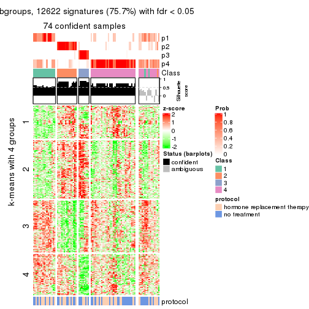
get_signatures(res, k = 5)
get_signatures(res, k = 6)

Signature heatmaps where rows are not scaled:
get_signatures(res, k = 2, scale_rows = FALSE)
get_signatures(res, k = 3, scale_rows = FALSE)
get_signatures(res, k = 4, scale_rows = FALSE)
get_signatures(res, k = 5, scale_rows = FALSE)
get_signatures(res, k = 6, scale_rows = FALSE)
Compare the overlap of signatures from different k:
compare_signatures(res)
get_signature() returns a data frame invisibly. TO get the list of signatures, the function
call should be assigned to a variable explicitly. In following code, if plot argument is set
to FALSE, no heatmap is plotted while only the differential analysis is performed.
# code only for demonstration
tb = get_signature(res, k = ..., plot = FALSE)
An example of the output of tb is:
#> which_row fdr mean_1 mean_2 scaled_mean_1 scaled_mean_2 km
#> 1 38 0.042760348 8.373488 9.131774 -0.5533452 0.5164555 1
#> 2 40 0.018707592 7.106213 8.469186 -0.6173731 0.5762149 1
#> 3 55 0.019134737 10.221463 11.207825 -0.6159697 0.5749050 1
#> 4 59 0.006059896 5.921854 7.869574 -0.6899429 0.6439467 1
#> 5 60 0.018055526 8.928898 10.211722 -0.6204761 0.5791110 1
#> 6 98 0.009384629 15.714769 14.887706 0.6635654 -0.6193277 2
...
The columns in tb are:
which_row: row indices corresponding to the input matrix.fdr: FDR for the differential test. mean_x: The mean value in group x.scaled_mean_x: The mean value in group x after rows are scaled.km: Row groups if k-means clustering is applied to rows.UMAP plot which shows how samples are separated.
dimension_reduction(res, k = 2, method = "UMAP")
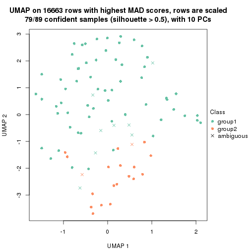
dimension_reduction(res, k = 3, method = "UMAP")
dimension_reduction(res, k = 4, method = "UMAP")
dimension_reduction(res, k = 5, method = "UMAP")
dimension_reduction(res, k = 6, method = "UMAP")
Following heatmap shows how subgroups are split when increasing k:
collect_classes(res)
Test correlation between subgroups and known annotations. If the known annotation is numeric, one-way ANOVA test is applied, and if the known annotation is discrete, chi-squared contingency table test is applied.
test_to_known_factors(res)
#> n protocol(p) k
#> MAD:pam 79 1.000 2
#> MAD:pam 37 1.000 3
#> MAD:pam 74 0.762 4
#> MAD:pam 78 0.983 5
#> MAD:pam 70 0.905 6
If matrix rows can be associated to genes, consider to use functional_enrichment(res,
...) to perform function enrichment for the signature genes. See this vignette for more detailed explanations.
The object with results only for a single top-value method and a single partition method can be extracted as:
res = res_list["MAD", "mclust"]
# you can also extract it by
# res = res_list["MAD:mclust"]
A summary of res and all the functions that can be applied to it:
res
#> A 'ConsensusPartition' object with k = 2, 3, 4, 5, 6.
#> On a matrix with 16663 rows and 89 columns.
#> Top rows (1000, 2000, 3000, 4000, 5000) are extracted by 'MAD' method.
#> Subgroups are detected by 'mclust' method.
#> Performed in total 1250 partitions by row resampling.
#> Best k for subgroups seems to be 2.
#>
#> Following methods can be applied to this 'ConsensusPartition' object:
#> [1] "cola_report" "collect_classes" "collect_plots"
#> [4] "collect_stats" "colnames" "compare_signatures"
#> [7] "consensus_heatmap" "dimension_reduction" "functional_enrichment"
#> [10] "get_anno_col" "get_anno" "get_classes"
#> [13] "get_consensus" "get_matrix" "get_membership"
#> [16] "get_param" "get_signatures" "get_stats"
#> [19] "is_best_k" "is_stable_k" "membership_heatmap"
#> [22] "ncol" "nrow" "plot_ecdf"
#> [25] "rownames" "select_partition_number" "show"
#> [28] "suggest_best_k" "test_to_known_factors"
collect_plots() function collects all the plots made from res for all k (number of partitions)
into one single page to provide an easy and fast comparison between different k.
collect_plots(res)
The plots are:
k and the heatmap of
predicted classes for each k.k.k.k.All the plots in panels can be made by individual functions and they are plotted later in this section.
select_partition_number() produces several plots showing different
statistics for choosing “optimized” k. There are following statistics:
k;k, the area increased is defined as \(A_k - A_{k-1}\).The detailed explanations of these statistics can be found in the cola vignette.
Generally speaking, lower PAC score, higher mean silhouette score or higher
concordance corresponds to better partition. Rand index and Jaccard index
measure how similar the current partition is compared to partition with k-1.
If they are too similar, we won't accept k is better than k-1.
select_partition_number(res)
The numeric values for all these statistics can be obtained by get_stats().
get_stats(res)
#> k 1-PAC mean_silhouette concordance area_increased Rand Jaccard
#> 2 2 0.358 0.650 0.841 0.4477 0.513 0.513
#> 3 3 0.318 0.630 0.746 0.3019 0.664 0.461
#> 4 4 0.596 0.621 0.841 0.1894 0.868 0.684
#> 5 5 0.565 0.539 0.790 0.0669 0.920 0.755
#> 6 6 0.603 0.479 0.733 0.0633 0.903 0.665
suggest_best_k() suggests the best \(k\) based on these statistics. The rules are as follows:
suggest_best_k(res)
#> [1] 2
Following shows the table of the partitions (You need to click the show/hide
code output link to see it). The membership matrix (columns with name p*)
is inferred by
clue::cl_consensus()
function with the SE method. Basically the value in the membership matrix
represents the probability to belong to a certain group. The finall class
label for an item is determined with the group with highest probability it
belongs to.
In get_classes() function, the entropy is calculated from the membership
matrix and the silhouette score is calculated from the consensus matrix.
cbind(get_classes(res, k = 2), get_membership(res, k = 2))
#> class entropy silhouette p1 p2
#> GSM78921 1 0.9977 -0.2074 0.528 0.472
#> GSM78922 1 0.5629 0.7363 0.868 0.132
#> GSM78923 2 0.0938 0.7491 0.012 0.988
#> GSM78924 2 0.0000 0.7461 0.000 1.000
#> GSM78925 2 0.0000 0.7461 0.000 1.000
#> GSM78926 1 0.9686 0.0906 0.604 0.396
#> GSM78927 1 0.2043 0.8257 0.968 0.032
#> GSM78928 2 0.8016 0.6649 0.244 0.756
#> GSM78929 2 0.0672 0.7496 0.008 0.992
#> GSM78930 2 0.9775 0.4921 0.412 0.588
#> GSM78931 2 0.9491 0.5603 0.368 0.632
#> GSM78932 2 0.0376 0.7480 0.004 0.996
#> GSM78933 1 0.0672 0.8368 0.992 0.008
#> GSM78934 2 0.0672 0.7496 0.008 0.992
#> GSM78935 1 0.0376 0.8367 0.996 0.004
#> GSM78936 2 0.9850 0.4718 0.428 0.572
#> GSM78937 1 0.9710 0.1668 0.600 0.400
#> GSM78938 1 0.0376 0.8348 0.996 0.004
#> GSM78939 1 0.0376 0.8367 0.996 0.004
#> GSM78940 2 0.8327 0.6548 0.264 0.736
#> GSM78941 2 0.0672 0.7496 0.008 0.992
#> GSM78942 2 0.7139 0.6861 0.196 0.804
#> GSM78943 1 0.5408 0.7494 0.876 0.124
#> GSM78944 1 0.0672 0.8368 0.992 0.008
#> GSM78945 1 0.0672 0.8368 0.992 0.008
#> GSM78946 1 0.0672 0.8368 0.992 0.008
#> GSM78947 2 0.0376 0.7470 0.004 0.996
#> GSM78948 1 0.0376 0.8367 0.996 0.004
#> GSM78949 1 0.0376 0.8348 0.996 0.004
#> GSM78950 1 0.9686 0.0906 0.604 0.396
#> GSM78951 2 0.9775 0.4921 0.412 0.588
#> GSM78952 2 0.0672 0.7496 0.008 0.992
#> GSM78953 2 0.0672 0.7496 0.008 0.992
#> GSM78954 2 0.4815 0.7282 0.104 0.896
#> GSM78955 2 0.9522 0.5555 0.372 0.628
#> GSM78956 2 0.0938 0.7491 0.012 0.988
#> GSM78957 2 0.0938 0.7491 0.012 0.988
#> GSM78958 2 0.9866 0.4690 0.432 0.568
#> GSM78959 1 0.0000 0.8342 1.000 0.000
#> GSM78960 2 0.6887 0.6915 0.184 0.816
#> GSM78961 2 0.7056 0.6861 0.192 0.808
#> GSM78962 1 0.9977 -0.1929 0.528 0.472
#> GSM78963 2 0.0000 0.7461 0.000 1.000
#> GSM78964 2 0.0000 0.7461 0.000 1.000
#> GSM78965 2 0.6343 0.7053 0.160 0.840
#> GSM78966 1 0.0376 0.8367 0.996 0.004
#> GSM78967 1 0.0000 0.8342 1.000 0.000
#> GSM78879 1 0.0376 0.8367 0.996 0.004
#> GSM78880 1 0.3431 0.8039 0.936 0.064
#> GSM78881 1 0.4939 0.7614 0.892 0.108
#> GSM78882 1 0.6531 0.6860 0.832 0.168
#> GSM78883 1 0.3274 0.8039 0.940 0.060
#> GSM78884 1 0.9686 0.0906 0.604 0.396
#> GSM78885 1 0.8267 0.5067 0.740 0.260
#> GSM78886 2 0.9815 0.4867 0.420 0.580
#> GSM78887 2 0.9866 0.4690 0.432 0.568
#> GSM78888 1 0.0672 0.8368 0.992 0.008
#> GSM78889 2 0.0938 0.7491 0.012 0.988
#> GSM78890 2 0.8016 0.6638 0.244 0.756
#> GSM78891 1 0.0672 0.8368 0.992 0.008
#> GSM78892 2 0.3584 0.7416 0.068 0.932
#> GSM78893 2 0.7219 0.6993 0.200 0.800
#> GSM78894 1 0.0672 0.8368 0.992 0.008
#> GSM78895 2 0.0672 0.7496 0.008 0.992
#> GSM78896 2 0.9866 0.4631 0.432 0.568
#> GSM78897 2 0.9850 0.4718 0.428 0.572
#> GSM78898 1 0.1184 0.8348 0.984 0.016
#> GSM78899 1 0.9710 0.0840 0.600 0.400
#> GSM78900 2 0.9732 0.5091 0.404 0.596
#> GSM78901 2 0.8144 0.6603 0.252 0.748
#> GSM78902 2 0.9732 0.5091 0.404 0.596
#> GSM78903 2 0.0672 0.7496 0.008 0.992
#> GSM78904 2 0.9833 0.4824 0.424 0.576
#> GSM78905 2 0.9248 0.5921 0.340 0.660
#> GSM78906 2 0.0672 0.7496 0.008 0.992
#> GSM78907 2 0.9933 0.4122 0.452 0.548
#> GSM78908 2 0.9850 0.4718 0.428 0.572
#> GSM78909 2 0.0938 0.7491 0.012 0.988
#> GSM78910 1 0.0376 0.8367 0.996 0.004
#> GSM78911 2 0.0938 0.7491 0.012 0.988
#> GSM78912 2 0.9866 0.4630 0.432 0.568
#> GSM78913 2 0.0000 0.7461 0.000 1.000
#> GSM78914 2 0.9710 0.5109 0.400 0.600
#> GSM78915 2 0.0000 0.7461 0.000 1.000
#> GSM78916 2 0.1633 0.7489 0.024 0.976
#> GSM78917 1 0.0376 0.8367 0.996 0.004
#> GSM78918 1 0.2778 0.8174 0.952 0.048
#> GSM78919 1 0.0376 0.8367 0.996 0.004
#> GSM78920 2 0.7950 0.6667 0.240 0.760
cbind(get_classes(res, k = 3), get_membership(res, k = 3))
#> class entropy silhouette p1 p2 p3
#> GSM78921 1 0.6405 0.671 0.756 0.172 0.072
#> GSM78922 1 0.0829 0.767 0.984 0.004 0.012
#> GSM78923 2 0.1163 0.770 0.028 0.972 0.000
#> GSM78924 2 0.4235 0.553 0.000 0.824 0.176
#> GSM78925 2 0.5650 0.200 0.000 0.688 0.312
#> GSM78926 1 0.6544 0.671 0.752 0.164 0.084
#> GSM78927 1 0.3619 0.772 0.864 0.000 0.136
#> GSM78928 2 0.8472 0.303 0.360 0.540 0.100
#> GSM78929 2 0.1163 0.770 0.028 0.972 0.000
#> GSM78930 3 0.9517 0.338 0.320 0.208 0.472
#> GSM78931 1 0.9633 -0.119 0.444 0.340 0.216
#> GSM78932 2 0.6081 0.150 0.004 0.652 0.344
#> GSM78933 1 0.3619 0.772 0.864 0.000 0.136
#> GSM78934 2 0.1399 0.769 0.028 0.968 0.004
#> GSM78935 1 0.0983 0.768 0.980 0.004 0.016
#> GSM78936 1 0.8872 0.534 0.556 0.288 0.156
#> GSM78937 1 0.5062 0.690 0.800 0.184 0.016
#> GSM78938 1 0.3619 0.772 0.864 0.000 0.136
#> GSM78939 1 0.4228 0.775 0.844 0.008 0.148
#> GSM78940 2 0.5416 0.698 0.080 0.820 0.100
#> GSM78941 2 0.3406 0.734 0.028 0.904 0.068
#> GSM78942 3 0.9088 0.399 0.140 0.396 0.464
#> GSM78943 1 0.3752 0.771 0.856 0.000 0.144
#> GSM78944 1 0.3619 0.772 0.864 0.000 0.136
#> GSM78945 1 0.3619 0.772 0.864 0.000 0.136
#> GSM78946 1 0.3619 0.772 0.864 0.000 0.136
#> GSM78947 3 0.5553 0.670 0.004 0.272 0.724
#> GSM78948 1 0.0000 0.768 1.000 0.000 0.000
#> GSM78949 1 0.3619 0.772 0.864 0.000 0.136
#> GSM78950 1 0.6463 0.685 0.756 0.164 0.080
#> GSM78951 3 0.9532 0.352 0.316 0.212 0.472
#> GSM78952 2 0.1399 0.768 0.028 0.968 0.004
#> GSM78953 2 0.0983 0.749 0.004 0.980 0.016
#> GSM78954 3 0.5480 0.672 0.004 0.264 0.732
#> GSM78955 2 0.6282 0.241 0.384 0.612 0.004
#> GSM78956 2 0.1399 0.769 0.028 0.968 0.004
#> GSM78957 2 0.0424 0.750 0.000 0.992 0.008
#> GSM78958 1 0.6108 0.626 0.732 0.240 0.028
#> GSM78959 1 0.0000 0.768 1.000 0.000 0.000
#> GSM78960 3 0.4654 0.682 0.000 0.208 0.792
#> GSM78961 3 0.5465 0.653 0.000 0.288 0.712
#> GSM78962 1 0.6783 0.653 0.736 0.176 0.088
#> GSM78963 3 0.5926 0.511 0.000 0.356 0.644
#> GSM78964 3 0.5882 0.520 0.000 0.348 0.652
#> GSM78965 3 0.4702 0.683 0.000 0.212 0.788
#> GSM78966 1 0.0000 0.768 1.000 0.000 0.000
#> GSM78967 1 0.0000 0.768 1.000 0.000 0.000
#> GSM78879 1 0.0592 0.768 0.988 0.000 0.012
#> GSM78880 1 0.0237 0.768 0.996 0.000 0.004
#> GSM78881 1 0.3752 0.773 0.856 0.000 0.144
#> GSM78882 1 0.5514 0.764 0.800 0.044 0.156
#> GSM78883 1 0.2599 0.767 0.932 0.052 0.016
#> GSM78884 1 0.6544 0.671 0.752 0.164 0.084
#> GSM78885 1 0.6981 0.724 0.732 0.132 0.136
#> GSM78886 2 0.9714 0.053 0.324 0.440 0.236
#> GSM78887 1 0.7309 0.311 0.552 0.416 0.032
#> GSM78888 1 0.3619 0.772 0.864 0.000 0.136
#> GSM78889 2 0.0661 0.753 0.004 0.988 0.008
#> GSM78890 1 0.6373 0.407 0.588 0.408 0.004
#> GSM78891 1 0.3619 0.772 0.864 0.000 0.136
#> GSM78892 2 0.5096 0.710 0.080 0.836 0.084
#> GSM78893 2 0.3765 0.721 0.028 0.888 0.084
#> GSM78894 1 0.3619 0.772 0.864 0.000 0.136
#> GSM78895 2 0.1163 0.770 0.028 0.972 0.000
#> GSM78896 1 0.7923 0.656 0.664 0.180 0.156
#> GSM78897 1 0.7960 0.671 0.656 0.136 0.208
#> GSM78898 1 0.4865 0.770 0.832 0.032 0.136
#> GSM78899 1 0.6544 0.671 0.752 0.164 0.084
#> GSM78900 3 0.9517 0.362 0.312 0.212 0.476
#> GSM78901 2 0.8487 0.281 0.364 0.536 0.100
#> GSM78902 3 0.9532 0.352 0.316 0.212 0.472
#> GSM78903 2 0.1399 0.769 0.028 0.968 0.004
#> GSM78904 1 0.8526 0.278 0.524 0.376 0.100
#> GSM78905 1 0.9843 -0.138 0.380 0.248 0.372
#> GSM78906 2 0.1163 0.770 0.028 0.972 0.000
#> GSM78907 1 0.7509 0.694 0.696 0.152 0.152
#> GSM78908 1 0.8448 0.616 0.616 0.220 0.164
#> GSM78909 2 0.0424 0.750 0.000 0.992 0.008
#> GSM78910 1 0.0000 0.768 1.000 0.000 0.000
#> GSM78911 2 0.0424 0.750 0.000 0.992 0.008
#> GSM78912 1 0.8433 0.632 0.620 0.204 0.176
#> GSM78913 3 0.5650 0.548 0.000 0.312 0.688
#> GSM78914 3 0.4702 0.683 0.000 0.212 0.788
#> GSM78915 3 0.5968 0.542 0.000 0.364 0.636
#> GSM78916 2 0.4914 0.714 0.068 0.844 0.088
#> GSM78917 1 0.0000 0.768 1.000 0.000 0.000
#> GSM78918 1 0.2703 0.768 0.928 0.056 0.016
#> GSM78919 1 0.0424 0.770 0.992 0.000 0.008
#> GSM78920 2 0.6438 0.643 0.136 0.764 0.100
cbind(get_classes(res, k = 4), get_membership(res, k = 4))
#> class entropy silhouette p1 p2 p3 p4
#> GSM78921 4 0.4225 0.640335 0.184 0.000 0.024 0.792
#> GSM78922 1 0.4361 0.697010 0.772 0.000 0.020 0.208
#> GSM78923 2 0.0188 0.823548 0.000 0.996 0.004 0.000
#> GSM78924 3 0.4898 0.276459 0.000 0.416 0.584 0.000
#> GSM78925 3 0.5364 0.324273 0.016 0.392 0.592 0.000
#> GSM78926 4 0.1118 0.666611 0.036 0.000 0.000 0.964
#> GSM78927 1 0.0000 0.812217 1.000 0.000 0.000 0.000
#> GSM78928 2 0.4877 0.318820 0.408 0.592 0.000 0.000
#> GSM78929 2 0.0188 0.823548 0.000 0.996 0.004 0.000
#> GSM78930 3 0.4920 0.417131 0.368 0.004 0.628 0.000
#> GSM78931 4 0.5408 0.349993 0.000 0.016 0.408 0.576
#> GSM78932 3 0.4948 0.147748 0.000 0.440 0.560 0.000
#> GSM78933 1 0.0000 0.812217 1.000 0.000 0.000 0.000
#> GSM78934 2 0.0188 0.823548 0.000 0.996 0.004 0.000
#> GSM78935 1 0.3074 0.752081 0.848 0.000 0.000 0.152
#> GSM78936 1 0.7325 0.045592 0.528 0.264 0.000 0.208
#> GSM78937 1 0.3972 0.650649 0.788 0.204 0.000 0.008
#> GSM78938 1 0.1022 0.806081 0.968 0.000 0.000 0.032
#> GSM78939 1 0.0469 0.811629 0.988 0.000 0.000 0.012
#> GSM78940 2 0.0000 0.822915 0.000 1.000 0.000 0.000
#> GSM78941 2 0.0000 0.822915 0.000 1.000 0.000 0.000
#> GSM78942 4 0.5512 0.174883 0.000 0.016 0.488 0.496
#> GSM78943 1 0.0188 0.811745 0.996 0.000 0.004 0.000
#> GSM78944 1 0.1022 0.806081 0.968 0.000 0.000 0.032
#> GSM78945 1 0.1022 0.806081 0.968 0.000 0.000 0.032
#> GSM78946 1 0.0000 0.812217 1.000 0.000 0.000 0.000
#> GSM78947 3 0.1978 0.666587 0.004 0.068 0.928 0.000
#> GSM78948 1 0.3975 0.670768 0.760 0.000 0.000 0.240
#> GSM78949 1 0.1022 0.806081 0.968 0.000 0.000 0.032
#> GSM78950 4 0.4948 0.196760 0.440 0.000 0.000 0.560
#> GSM78951 3 0.4776 0.407186 0.376 0.000 0.624 0.000
#> GSM78952 2 0.3024 0.692095 0.000 0.852 0.148 0.000
#> GSM78953 2 0.4193 0.528862 0.000 0.732 0.268 0.000
#> GSM78954 3 0.2328 0.670134 0.016 0.056 0.924 0.004
#> GSM78955 2 0.5143 0.173038 0.456 0.540 0.004 0.000
#> GSM78956 2 0.0188 0.823548 0.000 0.996 0.004 0.000
#> GSM78957 2 0.5998 0.558042 0.000 0.684 0.116 0.200
#> GSM78958 4 0.6364 0.371995 0.372 0.016 0.040 0.572
#> GSM78959 1 0.3726 0.703530 0.788 0.000 0.000 0.212
#> GSM78960 3 0.0000 0.668641 0.000 0.000 1.000 0.000
#> GSM78961 3 0.5376 -0.051113 0.000 0.016 0.588 0.396
#> GSM78962 4 0.4719 0.597062 0.032 0.016 0.160 0.792
#> GSM78963 3 0.1474 0.670907 0.000 0.052 0.948 0.000
#> GSM78964 3 0.0592 0.671106 0.000 0.016 0.984 0.000
#> GSM78965 3 0.0000 0.668641 0.000 0.000 1.000 0.000
#> GSM78966 1 0.3074 0.752081 0.848 0.000 0.000 0.152
#> GSM78967 1 0.3074 0.752081 0.848 0.000 0.000 0.152
#> GSM78879 1 0.4713 0.466747 0.640 0.000 0.000 0.360
#> GSM78880 1 0.3688 0.708521 0.792 0.000 0.000 0.208
#> GSM78881 1 0.0188 0.812265 0.996 0.000 0.000 0.004
#> GSM78882 1 0.0469 0.809906 0.988 0.000 0.012 0.000
#> GSM78883 1 0.3074 0.752081 0.848 0.000 0.000 0.152
#> GSM78884 4 0.1118 0.666611 0.036 0.000 0.000 0.964
#> GSM78885 1 0.1637 0.787980 0.940 0.000 0.000 0.060
#> GSM78886 2 0.3726 0.608821 0.212 0.788 0.000 0.000
#> GSM78887 1 0.8009 -0.215372 0.376 0.268 0.004 0.352
#> GSM78888 1 0.0000 0.812217 1.000 0.000 0.000 0.000
#> GSM78889 2 0.0188 0.823548 0.000 0.996 0.004 0.000
#> GSM78890 1 0.4155 0.612289 0.756 0.240 0.004 0.000
#> GSM78891 1 0.1022 0.806081 0.968 0.000 0.000 0.032
#> GSM78892 2 0.0000 0.822915 0.000 1.000 0.000 0.000
#> GSM78893 2 0.0000 0.822915 0.000 1.000 0.000 0.000
#> GSM78894 1 0.1022 0.806081 0.968 0.000 0.000 0.032
#> GSM78895 2 0.1022 0.808582 0.000 0.968 0.032 0.000
#> GSM78896 1 0.0000 0.812217 1.000 0.000 0.000 0.000
#> GSM78897 1 0.1059 0.805143 0.972 0.012 0.016 0.000
#> GSM78898 1 0.1022 0.806081 0.968 0.000 0.000 0.032
#> GSM78899 4 0.1118 0.666611 0.036 0.000 0.000 0.964
#> GSM78900 3 0.4936 0.413417 0.372 0.004 0.624 0.000
#> GSM78901 2 0.4008 0.620604 0.244 0.756 0.000 0.000
#> GSM78902 3 0.4776 0.408715 0.376 0.000 0.624 0.000
#> GSM78903 2 0.0188 0.823548 0.000 0.996 0.004 0.000
#> GSM78904 2 0.4888 0.290166 0.412 0.588 0.000 0.000
#> GSM78905 1 0.5558 -0.052289 0.548 0.020 0.432 0.000
#> GSM78906 2 0.1389 0.796720 0.000 0.952 0.048 0.000
#> GSM78907 1 0.0000 0.812217 1.000 0.000 0.000 0.000
#> GSM78908 1 0.5569 0.280800 0.660 0.000 0.044 0.296
#> GSM78909 2 0.0188 0.823548 0.000 0.996 0.004 0.000
#> GSM78910 1 0.3024 0.754192 0.852 0.000 0.000 0.148
#> GSM78911 2 0.3933 0.663301 0.000 0.792 0.008 0.200
#> GSM78912 1 0.5735 0.000242 0.576 0.000 0.032 0.392
#> GSM78913 3 0.0592 0.671106 0.000 0.016 0.984 0.000
#> GSM78914 3 0.0921 0.663852 0.028 0.000 0.972 0.000
#> GSM78915 3 0.0000 0.668641 0.000 0.000 1.000 0.000
#> GSM78916 2 0.0000 0.822915 0.000 1.000 0.000 0.000
#> GSM78917 1 0.3074 0.752081 0.848 0.000 0.000 0.152
#> GSM78918 1 0.3401 0.714660 0.840 0.152 0.000 0.008
#> GSM78919 1 0.0817 0.810044 0.976 0.000 0.000 0.024
#> GSM78920 2 0.3528 0.678747 0.192 0.808 0.000 0.000
cbind(get_classes(res, k = 5), get_membership(res, k = 5))
#> class entropy silhouette p1 p2 p3 p4 p5
#> GSM78921 4 0.2984 0.6978 0.108 0.000 0.032 0.860 0.000
#> GSM78922 1 0.3852 0.5558 0.796 0.000 0.028 0.168 0.008
#> GSM78923 2 0.0451 0.7937 0.000 0.988 0.008 0.000 0.004
#> GSM78924 3 0.5010 0.5921 0.000 0.248 0.676 0.000 0.076
#> GSM78925 3 0.5028 0.6205 0.012 0.212 0.708 0.000 0.068
#> GSM78926 4 0.0510 0.7435 0.016 0.000 0.000 0.984 0.000
#> GSM78927 1 0.0162 0.6391 0.996 0.000 0.000 0.000 0.004
#> GSM78928 2 0.4358 0.5060 0.284 0.696 0.000 0.008 0.012
#> GSM78929 2 0.0451 0.7937 0.000 0.988 0.008 0.000 0.004
#> GSM78930 3 0.3710 0.6195 0.192 0.000 0.784 0.000 0.024
#> GSM78931 4 0.6193 0.0493 0.016 0.008 0.448 0.464 0.064
#> GSM78932 3 0.6125 0.1151 0.000 0.364 0.500 0.000 0.136
#> GSM78933 1 0.0609 0.6288 0.980 0.000 0.000 0.000 0.020
#> GSM78934 2 0.1892 0.7848 0.000 0.916 0.004 0.000 0.080
#> GSM78935 1 0.3060 0.5992 0.848 0.000 0.000 0.128 0.024
#> GSM78936 1 0.7817 -0.0522 0.460 0.276 0.004 0.160 0.100
#> GSM78937 1 0.4575 0.0855 0.596 0.392 0.000 0.004 0.008
#> GSM78938 1 0.3336 0.1517 0.772 0.000 0.000 0.000 0.228
#> GSM78939 1 0.0162 0.6394 0.996 0.000 0.000 0.000 0.004
#> GSM78940 2 0.0693 0.7923 0.000 0.980 0.000 0.008 0.012
#> GSM78941 2 0.1728 0.7825 0.000 0.940 0.036 0.004 0.020
#> GSM78942 3 0.5809 -0.1763 0.000 0.008 0.468 0.456 0.068
#> GSM78943 1 0.1564 0.6161 0.948 0.000 0.024 0.004 0.024
#> GSM78944 1 0.4235 -0.6516 0.576 0.000 0.000 0.000 0.424
#> GSM78945 5 0.4242 0.9574 0.428 0.000 0.000 0.000 0.572
#> GSM78946 1 0.0510 0.6310 0.984 0.000 0.000 0.000 0.016
#> GSM78947 3 0.3921 0.6742 0.000 0.128 0.800 0.000 0.072
#> GSM78948 1 0.3492 0.5467 0.796 0.000 0.000 0.188 0.016
#> GSM78949 5 0.4291 0.9364 0.464 0.000 0.000 0.000 0.536
#> GSM78950 1 0.4821 -0.0470 0.516 0.000 0.000 0.464 0.020
#> GSM78951 3 0.3527 0.6212 0.192 0.000 0.792 0.000 0.016
#> GSM78952 2 0.5617 0.3768 0.000 0.620 0.256 0.000 0.124
#> GSM78953 2 0.5683 0.4030 0.000 0.588 0.304 0.000 0.108
#> GSM78954 3 0.3980 0.6756 0.000 0.128 0.796 0.000 0.076
#> GSM78955 2 0.5938 0.0366 0.420 0.504 0.008 0.008 0.060
#> GSM78956 2 0.1768 0.7866 0.000 0.924 0.004 0.000 0.072
#> GSM78957 2 0.6825 0.5450 0.000 0.604 0.096 0.156 0.144
#> GSM78958 4 0.7156 0.2400 0.392 0.032 0.072 0.464 0.040
#> GSM78959 1 0.2763 0.5894 0.848 0.000 0.000 0.148 0.004
#> GSM78960 3 0.1410 0.6713 0.000 0.000 0.940 0.000 0.060
#> GSM78961 3 0.5889 -0.0152 0.000 0.008 0.520 0.392 0.080
#> GSM78962 4 0.2846 0.6749 0.008 0.008 0.120 0.864 0.000
#> GSM78963 3 0.3391 0.6809 0.000 0.012 0.800 0.000 0.188
#> GSM78964 3 0.3282 0.6804 0.000 0.008 0.804 0.000 0.188
#> GSM78965 3 0.1410 0.6713 0.000 0.000 0.940 0.000 0.060
#> GSM78966 1 0.1628 0.6389 0.936 0.000 0.000 0.056 0.008
#> GSM78967 1 0.1638 0.6388 0.932 0.000 0.000 0.064 0.004
#> GSM78879 1 0.4315 0.4260 0.700 0.000 0.000 0.276 0.024
#> GSM78880 1 0.3086 0.5611 0.816 0.000 0.000 0.180 0.004
#> GSM78881 1 0.0324 0.6396 0.992 0.000 0.000 0.004 0.004
#> GSM78882 1 0.1560 0.6153 0.948 0.000 0.028 0.004 0.020
#> GSM78883 1 0.2036 0.6376 0.920 0.000 0.000 0.056 0.024
#> GSM78884 4 0.0510 0.7435 0.016 0.000 0.000 0.984 0.000
#> GSM78885 1 0.1041 0.6372 0.964 0.000 0.000 0.004 0.032
#> GSM78886 2 0.2609 0.7609 0.068 0.896 0.000 0.008 0.028
#> GSM78887 1 0.8125 -0.0940 0.392 0.300 0.004 0.200 0.104
#> GSM78888 1 0.0609 0.6288 0.980 0.000 0.000 0.000 0.020
#> GSM78889 2 0.3238 0.7586 0.000 0.836 0.028 0.000 0.136
#> GSM78890 2 0.6934 0.0424 0.248 0.468 0.004 0.008 0.272
#> GSM78891 5 0.4278 0.9551 0.452 0.000 0.000 0.000 0.548
#> GSM78892 2 0.0693 0.7923 0.000 0.980 0.000 0.008 0.012
#> GSM78893 2 0.1280 0.7909 0.000 0.960 0.008 0.008 0.024
#> GSM78894 1 0.3730 -0.1213 0.712 0.000 0.000 0.000 0.288
#> GSM78895 2 0.3381 0.6674 0.000 0.808 0.176 0.000 0.016
#> GSM78896 1 0.0510 0.6310 0.984 0.000 0.000 0.000 0.016
#> GSM78897 1 0.5463 0.1325 0.716 0.172 0.052 0.004 0.056
#> GSM78898 5 0.4242 0.9574 0.428 0.000 0.000 0.000 0.572
#> GSM78899 4 0.0880 0.7439 0.032 0.000 0.000 0.968 0.000
#> GSM78900 3 0.3779 0.6144 0.200 0.000 0.776 0.000 0.024
#> GSM78901 2 0.2532 0.7579 0.088 0.892 0.000 0.008 0.012
#> GSM78902 3 0.3596 0.6162 0.200 0.000 0.784 0.000 0.016
#> GSM78903 2 0.0290 0.7939 0.000 0.992 0.008 0.000 0.000
#> GSM78904 2 0.4358 0.5098 0.284 0.696 0.000 0.008 0.012
#> GSM78905 3 0.7744 0.3447 0.224 0.132 0.500 0.004 0.140
#> GSM78906 2 0.3906 0.5681 0.000 0.744 0.240 0.000 0.016
#> GSM78907 1 0.0510 0.6310 0.984 0.000 0.000 0.000 0.016
#> GSM78908 1 0.5813 0.2521 0.668 0.000 0.080 0.208 0.044
#> GSM78909 2 0.2563 0.7714 0.000 0.872 0.008 0.000 0.120
#> GSM78910 1 0.3759 0.4913 0.808 0.000 0.000 0.056 0.136
#> GSM78911 2 0.5649 0.6291 0.000 0.692 0.032 0.156 0.120
#> GSM78912 1 0.5810 0.0801 0.552 0.000 0.036 0.376 0.036
#> GSM78913 3 0.3171 0.6813 0.000 0.008 0.816 0.000 0.176
#> GSM78914 3 0.1410 0.6713 0.000 0.000 0.940 0.000 0.060
#> GSM78915 3 0.0000 0.6842 0.000 0.000 1.000 0.000 0.000
#> GSM78916 2 0.0566 0.7925 0.000 0.984 0.000 0.004 0.012
#> GSM78917 1 0.1942 0.6360 0.920 0.000 0.000 0.068 0.012
#> GSM78918 1 0.2445 0.5705 0.884 0.108 0.000 0.004 0.004
#> GSM78919 1 0.0693 0.6406 0.980 0.000 0.000 0.012 0.008
#> GSM78920 2 0.1200 0.7917 0.016 0.964 0.000 0.008 0.012
cbind(get_classes(res, k = 6), get_membership(res, k = 6))
#> class entropy silhouette p1 p2 p3 p4 p5 p6
#> GSM78921 4 0.1976 0.6291 0.060 0.000 0.016 0.916 0.000 0.008
#> GSM78922 1 0.1820 0.6924 0.924 0.000 0.008 0.056 0.012 0.000
#> GSM78923 2 0.3789 0.1569 0.000 0.660 0.008 0.000 0.332 0.000
#> GSM78924 3 0.3869 0.3926 0.000 0.168 0.768 0.000 0.060 0.004
#> GSM78925 3 0.3353 0.5199 0.000 0.160 0.804 0.000 0.032 0.004
#> GSM78926 4 0.0000 0.6160 0.000 0.000 0.000 1.000 0.000 0.000
#> GSM78927 1 0.0000 0.6879 1.000 0.000 0.000 0.000 0.000 0.000
#> GSM78928 2 0.1957 0.5667 0.112 0.888 0.000 0.000 0.000 0.000
#> GSM78929 2 0.3848 0.4090 0.000 0.752 0.040 0.000 0.204 0.004
#> GSM78930 3 0.6066 0.5752 0.068 0.016 0.516 0.000 0.040 0.360
#> GSM78931 4 0.7193 0.0351 0.000 0.000 0.272 0.372 0.268 0.088
#> GSM78932 5 0.5004 -0.0065 0.000 0.028 0.396 0.000 0.548 0.028
#> GSM78933 1 0.2513 0.5748 0.852 0.000 0.000 0.000 0.008 0.140
#> GSM78934 5 0.4128 0.3576 0.000 0.492 0.004 0.000 0.500 0.004
#> GSM78935 1 0.1606 0.6926 0.932 0.000 0.000 0.056 0.008 0.004
#> GSM78936 1 0.7089 0.1016 0.496 0.128 0.000 0.132 0.232 0.012
#> GSM78937 1 0.4093 0.2808 0.584 0.404 0.000 0.000 0.000 0.012
#> GSM78938 1 0.3737 -0.1939 0.608 0.000 0.000 0.000 0.000 0.392
#> GSM78939 1 0.0820 0.6903 0.972 0.016 0.000 0.000 0.000 0.012
#> GSM78940 2 0.0363 0.6024 0.000 0.988 0.000 0.000 0.012 0.000
#> GSM78941 2 0.3965 0.4988 0.000 0.764 0.160 0.000 0.072 0.004
#> GSM78942 4 0.7193 0.0351 0.000 0.000 0.272 0.372 0.268 0.088
#> GSM78943 1 0.2613 0.5733 0.848 0.000 0.000 0.000 0.012 0.140
#> GSM78944 6 0.3774 0.6886 0.408 0.000 0.000 0.000 0.000 0.592
#> GSM78945 6 0.3515 0.7857 0.324 0.000 0.000 0.000 0.000 0.676
#> GSM78946 1 0.2358 0.6128 0.876 0.016 0.000 0.000 0.000 0.108
#> GSM78947 3 0.0858 0.6503 0.000 0.004 0.968 0.000 0.028 0.000
#> GSM78948 1 0.2261 0.6802 0.884 0.000 0.000 0.104 0.008 0.004
#> GSM78949 6 0.3547 0.7820 0.332 0.000 0.000 0.000 0.000 0.668
#> GSM78950 4 0.4184 0.0593 0.488 0.000 0.000 0.500 0.000 0.012
#> GSM78951 3 0.6066 0.5752 0.068 0.016 0.516 0.000 0.040 0.360
#> GSM78952 2 0.5969 -0.1603 0.000 0.432 0.236 0.000 0.332 0.000
#> GSM78953 5 0.5530 0.4031 0.000 0.136 0.320 0.000 0.540 0.004
#> GSM78954 3 0.3419 0.6842 0.000 0.004 0.792 0.000 0.028 0.176
#> GSM78955 2 0.3202 0.5419 0.132 0.832 0.012 0.000 0.004 0.020
#> GSM78956 5 0.3868 0.3653 0.000 0.492 0.000 0.000 0.508 0.000
#> GSM78957 5 0.3643 0.6192 0.000 0.200 0.024 0.008 0.768 0.000
#> GSM78958 1 0.6435 -0.2012 0.416 0.012 0.000 0.372 0.188 0.012
#> GSM78959 1 0.1812 0.6880 0.912 0.000 0.000 0.080 0.008 0.000
#> GSM78960 3 0.5377 0.6442 0.000 0.000 0.572 0.000 0.156 0.272
#> GSM78961 3 0.7215 0.0415 0.000 0.000 0.352 0.260 0.300 0.088
#> GSM78962 4 0.1909 0.6034 0.004 0.000 0.052 0.920 0.024 0.000
#> GSM78963 3 0.0713 0.6516 0.000 0.000 0.972 0.000 0.028 0.000
#> GSM78964 3 0.0713 0.6516 0.000 0.000 0.972 0.000 0.028 0.000
#> GSM78965 3 0.5377 0.6442 0.000 0.000 0.572 0.000 0.156 0.272
#> GSM78966 1 0.1743 0.6924 0.936 0.028 0.000 0.024 0.008 0.004
#> GSM78967 1 0.1462 0.6928 0.936 0.000 0.000 0.056 0.008 0.000
#> GSM78879 1 0.3141 0.6014 0.788 0.000 0.000 0.200 0.000 0.012
#> GSM78880 1 0.1745 0.6907 0.920 0.000 0.000 0.068 0.012 0.000
#> GSM78881 1 0.0458 0.6896 0.984 0.016 0.000 0.000 0.000 0.000
#> GSM78882 1 0.2846 0.5712 0.840 0.016 0.004 0.000 0.000 0.140
#> GSM78883 1 0.2007 0.6937 0.920 0.036 0.000 0.032 0.000 0.012
#> GSM78884 4 0.0000 0.6160 0.000 0.000 0.000 1.000 0.000 0.000
#> GSM78885 1 0.1275 0.6898 0.956 0.016 0.000 0.016 0.000 0.012
#> GSM78886 2 0.3544 0.5198 0.052 0.820 0.000 0.000 0.020 0.108
#> GSM78887 1 0.7589 -0.1363 0.384 0.120 0.000 0.220 0.264 0.012
#> GSM78888 1 0.2553 0.5719 0.848 0.000 0.000 0.000 0.008 0.144
#> GSM78889 5 0.3390 0.6232 0.000 0.296 0.000 0.000 0.704 0.000
#> GSM78890 2 0.6153 0.2223 0.144 0.552 0.012 0.000 0.024 0.268
#> GSM78891 6 0.3515 0.7857 0.324 0.000 0.000 0.000 0.000 0.676
#> GSM78892 2 0.0000 0.6036 0.000 1.000 0.000 0.000 0.000 0.000
#> GSM78893 2 0.2191 0.5664 0.000 0.876 0.120 0.000 0.000 0.004
#> GSM78894 6 0.3868 0.4907 0.496 0.000 0.000 0.000 0.000 0.504
#> GSM78895 2 0.6173 -0.0562 0.000 0.412 0.300 0.000 0.284 0.004
#> GSM78896 1 0.3384 0.5919 0.820 0.032 0.000 0.016 0.000 0.132
#> GSM78897 1 0.6567 -0.1363 0.452 0.288 0.028 0.000 0.004 0.228
#> GSM78898 6 0.3515 0.7857 0.324 0.000 0.000 0.000 0.000 0.676
#> GSM78899 4 0.2048 0.6049 0.120 0.000 0.000 0.880 0.000 0.000
#> GSM78900 3 0.6066 0.5752 0.068 0.016 0.516 0.000 0.040 0.360
#> GSM78901 2 0.2019 0.5868 0.088 0.900 0.000 0.000 0.012 0.000
#> GSM78902 3 0.6066 0.5752 0.068 0.016 0.516 0.000 0.040 0.360
#> GSM78903 2 0.3678 0.3915 0.000 0.752 0.024 0.000 0.220 0.004
#> GSM78904 2 0.2053 0.5766 0.108 0.888 0.000 0.000 0.004 0.000
#> GSM78905 6 0.6972 -0.1903 0.072 0.120 0.284 0.000 0.028 0.496
#> GSM78906 2 0.6180 -0.0609 0.000 0.408 0.304 0.000 0.284 0.004
#> GSM78907 1 0.4237 0.4979 0.736 0.120 0.000 0.000 0.000 0.144
#> GSM78908 1 0.5928 0.3401 0.592 0.016 0.020 0.244 0.000 0.128
#> GSM78909 5 0.3428 0.6185 0.000 0.304 0.000 0.000 0.696 0.000
#> GSM78910 1 0.4343 0.4383 0.736 0.028 0.000 0.024 0.008 0.204
#> GSM78911 5 0.3271 0.6279 0.000 0.232 0.000 0.008 0.760 0.000
#> GSM78912 4 0.5941 -0.0161 0.420 0.000 0.012 0.420 0.000 0.148
#> GSM78913 3 0.1434 0.6571 0.000 0.000 0.940 0.000 0.048 0.012
#> GSM78914 3 0.5377 0.6442 0.000 0.000 0.572 0.000 0.156 0.272
#> GSM78915 3 0.4011 0.6881 0.000 0.000 0.732 0.000 0.056 0.212
#> GSM78916 2 0.0865 0.5977 0.000 0.964 0.000 0.000 0.036 0.000
#> GSM78917 1 0.1462 0.6928 0.936 0.000 0.000 0.056 0.008 0.000
#> GSM78918 1 0.3110 0.5796 0.792 0.196 0.000 0.000 0.000 0.012
#> GSM78919 1 0.1621 0.6884 0.936 0.048 0.000 0.004 0.008 0.004
#> GSM78920 2 0.1151 0.6094 0.032 0.956 0.000 0.000 0.012 0.000
Heatmaps for the consensus matrix. It visualizes the probability of two samples to be in a same group.
consensus_heatmap(res, k = 2)
consensus_heatmap(res, k = 3)
consensus_heatmap(res, k = 4)
consensus_heatmap(res, k = 5)
consensus_heatmap(res, k = 6)
Heatmaps for the membership of samples in all partitions to see how consistent they are:
membership_heatmap(res, k = 2)
membership_heatmap(res, k = 3)
membership_heatmap(res, k = 4)
membership_heatmap(res, k = 5)
membership_heatmap(res, k = 6)
As soon as we have had the classes for columns, we can look for signatures which are significantly different between classes which can be candidate marks for certain classes. Following are the heatmaps for signatures.
Signature heatmaps where rows are scaled:
get_signatures(res, k = 2)
get_signatures(res, k = 3)
get_signatures(res, k = 4)
get_signatures(res, k = 5)
get_signatures(res, k = 6)
Signature heatmaps where rows are not scaled:
get_signatures(res, k = 2, scale_rows = FALSE)
get_signatures(res, k = 3, scale_rows = FALSE)
get_signatures(res, k = 4, scale_rows = FALSE)
get_signatures(res, k = 5, scale_rows = FALSE)
get_signatures(res, k = 6, scale_rows = FALSE)
Compare the overlap of signatures from different k:
compare_signatures(res)
get_signature() returns a data frame invisibly. TO get the list of signatures, the function
call should be assigned to a variable explicitly. In following code, if plot argument is set
to FALSE, no heatmap is plotted while only the differential analysis is performed.
# code only for demonstration
tb = get_signature(res, k = ..., plot = FALSE)
An example of the output of tb is:
#> which_row fdr mean_1 mean_2 scaled_mean_1 scaled_mean_2 km
#> 1 38 0.042760348 8.373488 9.131774 -0.5533452 0.5164555 1
#> 2 40 0.018707592 7.106213 8.469186 -0.6173731 0.5762149 1
#> 3 55 0.019134737 10.221463 11.207825 -0.6159697 0.5749050 1
#> 4 59 0.006059896 5.921854 7.869574 -0.6899429 0.6439467 1
#> 5 60 0.018055526 8.928898 10.211722 -0.6204761 0.5791110 1
#> 6 98 0.009384629 15.714769 14.887706 0.6635654 -0.6193277 2
...
The columns in tb are:
which_row: row indices corresponding to the input matrix.fdr: FDR for the differential test. mean_x: The mean value in group x.scaled_mean_x: The mean value in group x after rows are scaled.km: Row groups if k-means clustering is applied to rows.UMAP plot which shows how samples are separated.
dimension_reduction(res, k = 2, method = "UMAP")
dimension_reduction(res, k = 3, method = "UMAP")
dimension_reduction(res, k = 4, method = "UMAP")
dimension_reduction(res, k = 5, method = "UMAP")
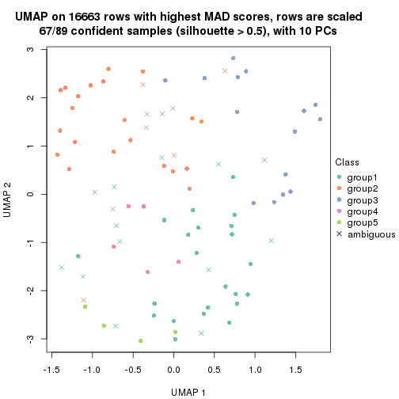
dimension_reduction(res, k = 6, method = "UMAP")
Following heatmap shows how subgroups are split when increasing k:
collect_classes(res)
Test correlation between subgroups and known annotations. If the known annotation is numeric, one-way ANOVA test is applied, and if the known annotation is discrete, chi-squared contingency table test is applied.
test_to_known_factors(res)
#> n protocol(p) k
#> MAD:mclust 70 0.906 2
#> MAD:mclust 73 0.525 3
#> MAD:mclust 68 0.646 4
#> MAD:mclust 67 0.551 5
#> MAD:mclust 60 0.529 6
If matrix rows can be associated to genes, consider to use functional_enrichment(res,
...) to perform function enrichment for the signature genes. See this vignette for more detailed explanations.
The object with results only for a single top-value method and a single partition method can be extracted as:
res = res_list["MAD", "NMF"]
# you can also extract it by
# res = res_list["MAD:NMF"]
A summary of res and all the functions that can be applied to it:
res
#> A 'ConsensusPartition' object with k = 2, 3, 4, 5, 6.
#> On a matrix with 16663 rows and 89 columns.
#> Top rows (1000, 2000, 3000, 4000, 5000) are extracted by 'MAD' method.
#> Subgroups are detected by 'NMF' method.
#> Performed in total 1250 partitions by row resampling.
#> Best k for subgroups seems to be 2.
#>
#> Following methods can be applied to this 'ConsensusPartition' object:
#> [1] "cola_report" "collect_classes" "collect_plots"
#> [4] "collect_stats" "colnames" "compare_signatures"
#> [7] "consensus_heatmap" "dimension_reduction" "functional_enrichment"
#> [10] "get_anno_col" "get_anno" "get_classes"
#> [13] "get_consensus" "get_matrix" "get_membership"
#> [16] "get_param" "get_signatures" "get_stats"
#> [19] "is_best_k" "is_stable_k" "membership_heatmap"
#> [22] "ncol" "nrow" "plot_ecdf"
#> [25] "rownames" "select_partition_number" "show"
#> [28] "suggest_best_k" "test_to_known_factors"
collect_plots() function collects all the plots made from res for all k (number of partitions)
into one single page to provide an easy and fast comparison between different k.
collect_plots(res)
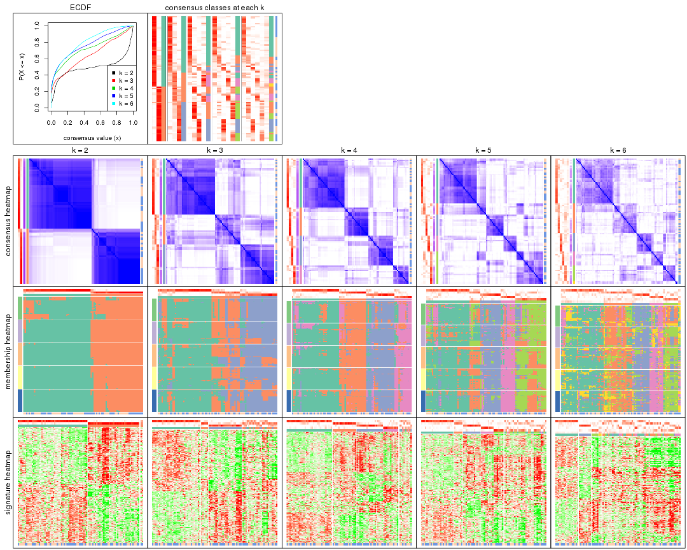
The plots are:
k and the heatmap of
predicted classes for each k.k.k.k.All the plots in panels can be made by individual functions and they are plotted later in this section.
select_partition_number() produces several plots showing different
statistics for choosing “optimized” k. There are following statistics:
k;k, the area increased is defined as \(A_k - A_{k-1}\).The detailed explanations of these statistics can be found in the cola vignette.
Generally speaking, lower PAC score, higher mean silhouette score or higher
concordance corresponds to better partition. Rand index and Jaccard index
measure how similar the current partition is compared to partition with k-1.
If they are too similar, we won't accept k is better than k-1.
select_partition_number(res)
The numeric values for all these statistics can be obtained by get_stats().
get_stats(res)
#> k 1-PAC mean_silhouette concordance area_increased Rand Jaccard
#> 2 2 0.795 0.905 0.948 0.4966 0.502 0.502
#> 3 3 0.460 0.607 0.786 0.3156 0.791 0.606
#> 4 4 0.555 0.679 0.829 0.1174 0.822 0.556
#> 5 5 0.536 0.516 0.718 0.0639 0.827 0.497
#> 6 6 0.538 0.381 0.640 0.0404 0.904 0.659
suggest_best_k() suggests the best \(k\) based on these statistics. The rules are as follows:
suggest_best_k(res)
#> [1] 2
Following shows the table of the partitions (You need to click the show/hide
code output link to see it). The membership matrix (columns with name p*)
is inferred by
clue::cl_consensus()
function with the SE method. Basically the value in the membership matrix
represents the probability to belong to a certain group. The finall class
label for an item is determined with the group with highest probability it
belongs to.
In get_classes() function, the entropy is calculated from the membership
matrix and the silhouette score is calculated from the consensus matrix.
cbind(get_classes(res, k = 2), get_membership(res, k = 2))
#> class entropy silhouette p1 p2
#> GSM78921 1 0.2043 0.940 0.968 0.032
#> GSM78922 1 0.0000 0.945 1.000 0.000
#> GSM78923 2 0.2778 0.924 0.048 0.952
#> GSM78924 2 0.0000 0.945 0.000 1.000
#> GSM78925 2 0.0000 0.945 0.000 1.000
#> GSM78926 1 0.2043 0.940 0.968 0.032
#> GSM78927 1 0.0000 0.945 1.000 0.000
#> GSM78928 2 0.9795 0.217 0.416 0.584
#> GSM78929 2 0.0000 0.945 0.000 1.000
#> GSM78930 1 0.2948 0.932 0.948 0.052
#> GSM78931 2 0.5842 0.843 0.140 0.860
#> GSM78932 2 0.0000 0.945 0.000 1.000
#> GSM78933 1 0.2043 0.939 0.968 0.032
#> GSM78934 2 0.0000 0.945 0.000 1.000
#> GSM78935 1 0.0000 0.945 1.000 0.000
#> GSM78936 1 0.1184 0.945 0.984 0.016
#> GSM78937 1 0.2043 0.940 0.968 0.032
#> GSM78938 1 0.5059 0.893 0.888 0.112
#> GSM78939 1 0.0376 0.945 0.996 0.004
#> GSM78940 2 0.9954 0.203 0.460 0.540
#> GSM78941 2 0.0000 0.945 0.000 1.000
#> GSM78942 2 0.3114 0.919 0.056 0.944
#> GSM78943 1 0.2423 0.936 0.960 0.040
#> GSM78944 1 0.6438 0.843 0.836 0.164
#> GSM78945 1 0.2603 0.934 0.956 0.044
#> GSM78946 1 0.2236 0.938 0.964 0.036
#> GSM78947 2 0.1184 0.939 0.016 0.984
#> GSM78948 1 0.0672 0.945 0.992 0.008
#> GSM78949 1 0.6531 0.838 0.832 0.168
#> GSM78950 1 0.0000 0.945 1.000 0.000
#> GSM78951 1 0.7299 0.794 0.796 0.204
#> GSM78952 2 0.0000 0.945 0.000 1.000
#> GSM78953 2 0.0000 0.945 0.000 1.000
#> GSM78954 2 0.2043 0.930 0.032 0.968
#> GSM78955 2 0.1633 0.938 0.024 0.976
#> GSM78956 2 0.1633 0.936 0.024 0.976
#> GSM78957 2 0.2603 0.925 0.044 0.956
#> GSM78958 1 0.2948 0.930 0.948 0.052
#> GSM78959 1 0.0938 0.944 0.988 0.012
#> GSM78960 2 0.1843 0.933 0.028 0.972
#> GSM78961 2 0.1184 0.939 0.016 0.984
#> GSM78962 1 0.2043 0.940 0.968 0.032
#> GSM78963 2 0.0000 0.945 0.000 1.000
#> GSM78964 2 0.0000 0.945 0.000 1.000
#> GSM78965 2 0.0000 0.945 0.000 1.000
#> GSM78966 1 0.1414 0.943 0.980 0.020
#> GSM78967 1 0.0000 0.945 1.000 0.000
#> GSM78879 1 0.1843 0.941 0.972 0.028
#> GSM78880 1 0.0000 0.945 1.000 0.000
#> GSM78881 1 0.0000 0.945 1.000 0.000
#> GSM78882 1 0.2778 0.933 0.952 0.048
#> GSM78883 1 0.0376 0.945 0.996 0.004
#> GSM78884 1 0.2043 0.940 0.968 0.032
#> GSM78885 1 0.0000 0.945 1.000 0.000
#> GSM78886 2 0.0376 0.944 0.004 0.996
#> GSM78887 1 0.2236 0.938 0.964 0.036
#> GSM78888 1 0.0938 0.944 0.988 0.012
#> GSM78889 2 0.2778 0.924 0.048 0.952
#> GSM78890 1 0.8909 0.643 0.692 0.308
#> GSM78891 1 0.4298 0.912 0.912 0.088
#> GSM78892 2 0.1633 0.937 0.024 0.976
#> GSM78893 2 0.0000 0.945 0.000 1.000
#> GSM78894 1 0.3584 0.924 0.932 0.068
#> GSM78895 2 0.0000 0.945 0.000 1.000
#> GSM78896 1 0.3274 0.929 0.940 0.060
#> GSM78897 1 0.8386 0.695 0.732 0.268
#> GSM78898 1 0.6343 0.847 0.840 0.160
#> GSM78899 1 0.0000 0.945 1.000 0.000
#> GSM78900 2 0.4690 0.878 0.100 0.900
#> GSM78901 1 0.2043 0.940 0.968 0.032
#> GSM78902 2 0.7376 0.736 0.208 0.792
#> GSM78903 2 0.0000 0.945 0.000 1.000
#> GSM78904 1 0.2423 0.937 0.960 0.040
#> GSM78905 2 0.2778 0.923 0.048 0.952
#> GSM78906 2 0.0000 0.945 0.000 1.000
#> GSM78907 1 0.4022 0.918 0.920 0.080
#> GSM78908 1 0.4815 0.902 0.896 0.104
#> GSM78909 2 0.3114 0.920 0.056 0.944
#> GSM78910 1 0.0000 0.945 1.000 0.000
#> GSM78911 2 0.2948 0.921 0.052 0.948
#> GSM78912 1 0.5519 0.879 0.872 0.128
#> GSM78913 2 0.0000 0.945 0.000 1.000
#> GSM78914 2 0.2043 0.930 0.032 0.968
#> GSM78915 2 0.0000 0.945 0.000 1.000
#> GSM78916 2 0.5059 0.873 0.112 0.888
#> GSM78917 1 0.0000 0.945 1.000 0.000
#> GSM78918 1 0.2043 0.940 0.968 0.032
#> GSM78919 1 0.0000 0.945 1.000 0.000
#> GSM78920 1 0.2043 0.940 0.968 0.032
cbind(get_classes(res, k = 3), get_membership(res, k = 3))
#> class entropy silhouette p1 p2 p3
#> GSM78921 1 0.6859 0.52652 0.620 0.356 0.024
#> GSM78922 1 0.1031 0.81802 0.976 0.024 0.000
#> GSM78923 3 0.6302 0.27118 0.000 0.480 0.520
#> GSM78924 3 0.2711 0.75022 0.000 0.088 0.912
#> GSM78925 3 0.2537 0.75132 0.000 0.080 0.920
#> GSM78926 2 0.5529 0.40719 0.296 0.704 0.000
#> GSM78927 1 0.0747 0.81694 0.984 0.016 0.000
#> GSM78928 3 0.9210 0.40573 0.184 0.296 0.520
#> GSM78929 3 0.4750 0.71700 0.000 0.216 0.784
#> GSM78930 1 0.6981 0.54871 0.704 0.068 0.228
#> GSM78931 2 0.5397 0.47528 0.000 0.720 0.280
#> GSM78932 3 0.2711 0.74873 0.000 0.088 0.912
#> GSM78933 1 0.0424 0.81705 0.992 0.008 0.000
#> GSM78934 2 0.6008 0.14774 0.000 0.628 0.372
#> GSM78935 1 0.3816 0.76553 0.852 0.148 0.000
#> GSM78936 2 0.6373 0.26079 0.408 0.588 0.004
#> GSM78937 1 0.6215 0.28959 0.572 0.428 0.000
#> GSM78938 1 0.1129 0.81448 0.976 0.020 0.004
#> GSM78939 1 0.2959 0.79214 0.900 0.100 0.000
#> GSM78940 2 0.2584 0.57710 0.008 0.928 0.064
#> GSM78941 3 0.5363 0.68554 0.000 0.276 0.724
#> GSM78942 2 0.6244 0.27257 0.000 0.560 0.440
#> GSM78943 1 0.0237 0.81530 0.996 0.004 0.000
#> GSM78944 1 0.1711 0.81063 0.960 0.032 0.008
#> GSM78945 1 0.1163 0.81304 0.972 0.028 0.000
#> GSM78946 1 0.1411 0.81733 0.964 0.036 0.000
#> GSM78947 3 0.0000 0.73699 0.000 0.000 1.000
#> GSM78948 1 0.3752 0.76425 0.856 0.144 0.000
#> GSM78949 1 0.4995 0.68215 0.824 0.032 0.144
#> GSM78950 1 0.6192 0.33808 0.580 0.420 0.000
#> GSM78951 1 0.6936 0.54989 0.704 0.064 0.232
#> GSM78952 3 0.4842 0.71160 0.000 0.224 0.776
#> GSM78953 3 0.4605 0.71863 0.000 0.204 0.796
#> GSM78954 3 0.2651 0.71417 0.060 0.012 0.928
#> GSM78955 3 0.5843 0.69846 0.016 0.252 0.732
#> GSM78956 2 0.5810 0.27935 0.000 0.664 0.336
#> GSM78957 2 0.5178 0.44065 0.000 0.744 0.256
#> GSM78958 2 0.6016 0.47290 0.256 0.724 0.020
#> GSM78959 1 0.3752 0.76702 0.856 0.144 0.000
#> GSM78960 3 0.2998 0.69293 0.016 0.068 0.916
#> GSM78961 3 0.2448 0.70617 0.000 0.076 0.924
#> GSM78962 2 0.6710 0.49612 0.196 0.732 0.072
#> GSM78963 3 0.0747 0.74156 0.000 0.016 0.984
#> GSM78964 3 0.2066 0.74919 0.000 0.060 0.940
#> GSM78965 3 0.2680 0.69752 0.008 0.068 0.924
#> GSM78966 1 0.3619 0.77847 0.864 0.136 0.000
#> GSM78967 1 0.2625 0.80199 0.916 0.084 0.000
#> GSM78879 1 0.6079 0.40064 0.612 0.388 0.000
#> GSM78880 1 0.2356 0.80765 0.928 0.072 0.000
#> GSM78881 1 0.1877 0.81616 0.956 0.032 0.012
#> GSM78882 1 0.1711 0.80729 0.960 0.008 0.032
#> GSM78883 1 0.3619 0.77502 0.864 0.136 0.000
#> GSM78884 2 0.5529 0.41209 0.296 0.704 0.000
#> GSM78885 1 0.6026 0.37971 0.624 0.376 0.000
#> GSM78886 2 0.6540 -0.02546 0.008 0.584 0.408
#> GSM78887 2 0.3816 0.61177 0.148 0.852 0.000
#> GSM78888 1 0.0237 0.81635 0.996 0.004 0.000
#> GSM78889 2 0.6299 -0.00957 0.000 0.524 0.476
#> GSM78890 1 0.8996 0.23703 0.560 0.196 0.244
#> GSM78891 1 0.1267 0.81363 0.972 0.024 0.004
#> GSM78892 3 0.5763 0.68064 0.008 0.276 0.716
#> GSM78893 3 0.5465 0.67350 0.000 0.288 0.712
#> GSM78894 1 0.1643 0.80767 0.956 0.044 0.000
#> GSM78895 3 0.5016 0.70263 0.000 0.240 0.760
#> GSM78896 1 0.2749 0.80284 0.924 0.064 0.012
#> GSM78897 1 0.7065 0.50227 0.700 0.072 0.228
#> GSM78898 1 0.1525 0.81130 0.964 0.032 0.004
#> GSM78899 2 0.6215 0.09453 0.428 0.572 0.000
#> GSM78900 3 0.7618 0.33736 0.304 0.068 0.628
#> GSM78901 2 0.4346 0.58240 0.184 0.816 0.000
#> GSM78902 3 0.7442 0.33325 0.316 0.056 0.628
#> GSM78903 3 0.5291 0.69176 0.000 0.268 0.732
#> GSM78904 2 0.4654 0.56242 0.208 0.792 0.000
#> GSM78905 3 0.6463 0.62086 0.164 0.080 0.756
#> GSM78906 3 0.5254 0.69507 0.000 0.264 0.736
#> GSM78907 1 0.1482 0.81389 0.968 0.020 0.012
#> GSM78908 1 0.7878 0.51587 0.668 0.172 0.160
#> GSM78909 2 0.5529 0.39336 0.000 0.704 0.296
#> GSM78910 1 0.2448 0.81111 0.924 0.076 0.000
#> GSM78911 2 0.4452 0.52798 0.000 0.808 0.192
#> GSM78912 1 0.5179 0.71041 0.832 0.080 0.088
#> GSM78913 3 0.0000 0.73699 0.000 0.000 1.000
#> GSM78914 3 0.5656 0.59007 0.128 0.068 0.804
#> GSM78915 3 0.2165 0.70346 0.000 0.064 0.936
#> GSM78916 2 0.5244 0.44754 0.004 0.756 0.240
#> GSM78917 1 0.2448 0.80646 0.924 0.076 0.000
#> GSM78918 1 0.5926 0.50157 0.644 0.356 0.000
#> GSM78919 1 0.0747 0.81790 0.984 0.016 0.000
#> GSM78920 2 0.5591 0.41417 0.304 0.696 0.000
cbind(get_classes(res, k = 4), get_membership(res, k = 4))
#> class entropy silhouette p1 p2 p3 p4
#> GSM78921 1 0.6570 0.5485 0.604 0.000 0.116 0.280
#> GSM78922 1 0.3900 0.7817 0.844 0.000 0.084 0.072
#> GSM78923 2 0.4152 0.6940 0.000 0.808 0.032 0.160
#> GSM78924 3 0.4605 0.5449 0.000 0.336 0.664 0.000
#> GSM78925 3 0.4713 0.5174 0.000 0.360 0.640 0.000
#> GSM78926 4 0.0707 0.7300 0.000 0.000 0.020 0.980
#> GSM78927 1 0.1610 0.8177 0.952 0.000 0.016 0.032
#> GSM78928 2 0.2466 0.7501 0.096 0.900 0.000 0.004
#> GSM78929 2 0.3942 0.6011 0.000 0.764 0.236 0.000
#> GSM78930 3 0.4222 0.5792 0.272 0.000 0.728 0.000
#> GSM78931 3 0.4356 0.5335 0.000 0.000 0.708 0.292
#> GSM78932 3 0.2888 0.7619 0.000 0.124 0.872 0.004
#> GSM78933 1 0.0592 0.8185 0.984 0.016 0.000 0.000
#> GSM78934 2 0.2021 0.8060 0.000 0.936 0.024 0.040
#> GSM78935 1 0.3108 0.7927 0.872 0.000 0.016 0.112
#> GSM78936 4 0.6566 0.5750 0.236 0.140 0.000 0.624
#> GSM78937 1 0.4998 0.2475 0.512 0.000 0.000 0.488
#> GSM78938 1 0.3024 0.7640 0.852 0.148 0.000 0.000
#> GSM78939 1 0.2658 0.8126 0.904 0.012 0.004 0.080
#> GSM78940 2 0.2124 0.7948 0.028 0.932 0.000 0.040
#> GSM78941 2 0.0188 0.8203 0.004 0.996 0.000 0.000
#> GSM78942 3 0.4889 0.4243 0.000 0.004 0.636 0.360
#> GSM78943 1 0.0188 0.8176 0.996 0.000 0.004 0.000
#> GSM78944 1 0.4277 0.6424 0.720 0.280 0.000 0.000
#> GSM78945 1 0.1474 0.8142 0.948 0.052 0.000 0.000
#> GSM78946 1 0.1792 0.8097 0.932 0.068 0.000 0.000
#> GSM78947 3 0.2081 0.7755 0.000 0.084 0.916 0.000
#> GSM78948 1 0.3257 0.8039 0.872 0.012 0.008 0.108
#> GSM78949 1 0.4585 0.5569 0.668 0.332 0.000 0.000
#> GSM78950 4 0.5244 0.1294 0.436 0.008 0.000 0.556
#> GSM78951 3 0.4679 0.5012 0.352 0.000 0.648 0.000
#> GSM78952 2 0.3052 0.7406 0.000 0.860 0.136 0.004
#> GSM78953 2 0.3552 0.7373 0.000 0.848 0.128 0.024
#> GSM78954 3 0.3219 0.7506 0.000 0.164 0.836 0.000
#> GSM78955 2 0.0927 0.8198 0.016 0.976 0.008 0.000
#> GSM78956 2 0.1297 0.8160 0.000 0.964 0.020 0.016
#> GSM78957 4 0.3300 0.6806 0.000 0.144 0.008 0.848
#> GSM78958 4 0.3443 0.6552 0.016 0.000 0.136 0.848
#> GSM78959 1 0.2987 0.7963 0.880 0.000 0.016 0.104
#> GSM78960 3 0.0336 0.7711 0.000 0.008 0.992 0.000
#> GSM78961 3 0.1488 0.7745 0.000 0.032 0.956 0.012
#> GSM78962 4 0.0817 0.7295 0.000 0.000 0.024 0.976
#> GSM78963 3 0.2469 0.7700 0.000 0.108 0.892 0.000
#> GSM78964 3 0.2973 0.7584 0.000 0.144 0.856 0.000
#> GSM78965 3 0.0188 0.7701 0.000 0.004 0.996 0.000
#> GSM78966 1 0.2111 0.8184 0.932 0.044 0.000 0.024
#> GSM78967 1 0.1545 0.8209 0.952 0.008 0.000 0.040
#> GSM78879 1 0.5599 0.6221 0.672 0.000 0.052 0.276
#> GSM78880 1 0.3149 0.7974 0.880 0.000 0.032 0.088
#> GSM78881 1 0.3834 0.7830 0.848 0.000 0.076 0.076
#> GSM78882 1 0.1557 0.8102 0.944 0.000 0.056 0.000
#> GSM78883 1 0.3088 0.7879 0.864 0.000 0.008 0.128
#> GSM78884 4 0.0000 0.7313 0.000 0.000 0.000 1.000
#> GSM78885 1 0.4983 0.6412 0.704 0.000 0.024 0.272
#> GSM78886 2 0.0927 0.8158 0.016 0.976 0.000 0.008
#> GSM78887 4 0.3311 0.6732 0.000 0.172 0.000 0.828
#> GSM78888 1 0.0817 0.8182 0.976 0.024 0.000 0.000
#> GSM78889 4 0.5116 0.6296 0.000 0.128 0.108 0.764
#> GSM78890 2 0.4535 0.4942 0.292 0.704 0.000 0.004
#> GSM78891 1 0.1211 0.8168 0.960 0.040 0.000 0.000
#> GSM78892 2 0.0592 0.8173 0.016 0.984 0.000 0.000
#> GSM78893 2 0.0188 0.8203 0.004 0.996 0.000 0.000
#> GSM78894 1 0.4331 0.6316 0.712 0.288 0.000 0.000
#> GSM78895 2 0.1792 0.7916 0.000 0.932 0.068 0.000
#> GSM78896 1 0.2021 0.8156 0.936 0.000 0.024 0.040
#> GSM78897 1 0.6609 0.5097 0.620 0.236 0.144 0.000
#> GSM78898 1 0.2868 0.7751 0.864 0.136 0.000 0.000
#> GSM78899 4 0.4053 0.5830 0.228 0.000 0.004 0.768
#> GSM78900 3 0.1474 0.7527 0.052 0.000 0.948 0.000
#> GSM78901 4 0.7441 0.1078 0.180 0.352 0.000 0.468
#> GSM78902 3 0.6917 0.5124 0.204 0.204 0.592 0.000
#> GSM78903 2 0.0188 0.8200 0.000 0.996 0.004 0.000
#> GSM78904 2 0.7408 0.0696 0.168 0.448 0.000 0.384
#> GSM78905 3 0.5557 0.5294 0.040 0.308 0.652 0.000
#> GSM78906 2 0.0707 0.8154 0.000 0.980 0.020 0.000
#> GSM78907 1 0.3528 0.7339 0.808 0.192 0.000 0.000
#> GSM78908 3 0.6575 0.3718 0.348 0.000 0.560 0.092
#> GSM78909 4 0.5188 0.5390 0.000 0.240 0.044 0.716
#> GSM78910 1 0.1489 0.8178 0.952 0.044 0.000 0.004
#> GSM78911 4 0.2593 0.7051 0.000 0.104 0.004 0.892
#> GSM78912 1 0.6388 0.3666 0.596 0.004 0.328 0.072
#> GSM78913 3 0.1867 0.7753 0.000 0.072 0.928 0.000
#> GSM78914 3 0.0817 0.7608 0.024 0.000 0.976 0.000
#> GSM78915 3 0.0469 0.7719 0.000 0.012 0.988 0.000
#> GSM78916 2 0.4483 0.5388 0.004 0.712 0.000 0.284
#> GSM78917 1 0.1211 0.8191 0.960 0.000 0.000 0.040
#> GSM78918 1 0.6521 0.5307 0.620 0.256 0.000 0.124
#> GSM78919 1 0.1211 0.8168 0.960 0.040 0.000 0.000
#> GSM78920 2 0.7234 0.3253 0.204 0.544 0.000 0.252
cbind(get_classes(res, k = 5), get_membership(res, k = 5))
#> class entropy silhouette p1 p2 p3 p4 p5
#> GSM78921 1 0.5812 0.56380 0.672 0.052 0.056 0.216 0.004
#> GSM78922 1 0.3752 0.67476 0.828 0.072 0.092 0.008 0.000
#> GSM78923 5 0.1399 0.57125 0.000 0.020 0.000 0.028 0.952
#> GSM78924 5 0.3728 0.43582 0.000 0.008 0.244 0.000 0.748
#> GSM78925 5 0.3925 0.49868 0.004 0.032 0.180 0.000 0.784
#> GSM78926 1 0.6004 0.42395 0.596 0.160 0.000 0.240 0.004
#> GSM78927 1 0.0404 0.71506 0.988 0.012 0.000 0.000 0.000
#> GSM78928 2 0.5243 0.14788 0.000 0.540 0.000 0.048 0.412
#> GSM78929 5 0.4090 0.55180 0.036 0.116 0.036 0.000 0.812
#> GSM78930 3 0.2819 0.74358 0.052 0.060 0.884 0.004 0.000
#> GSM78931 3 0.6077 0.00940 0.028 0.016 0.484 0.444 0.028
#> GSM78932 5 0.6205 0.19158 0.004 0.128 0.312 0.004 0.552
#> GSM78933 1 0.1792 0.70448 0.916 0.084 0.000 0.000 0.000
#> GSM78934 5 0.4455 0.48845 0.000 0.188 0.000 0.068 0.744
#> GSM78935 1 0.0693 0.71524 0.980 0.008 0.000 0.012 0.000
#> GSM78936 4 0.5920 0.39396 0.376 0.052 0.000 0.544 0.028
#> GSM78937 1 0.4996 0.53211 0.664 0.052 0.000 0.280 0.004
#> GSM78938 2 0.4181 0.65436 0.240 0.736 0.016 0.000 0.008
#> GSM78939 1 0.2332 0.70224 0.904 0.076 0.004 0.016 0.000
#> GSM78940 5 0.5178 0.02738 0.004 0.448 0.000 0.032 0.516
#> GSM78941 5 0.4297 0.02728 0.000 0.472 0.000 0.000 0.528
#> GSM78942 4 0.4084 0.40404 0.000 0.004 0.328 0.668 0.000
#> GSM78943 1 0.3779 0.66259 0.804 0.144 0.052 0.000 0.000
#> GSM78944 1 0.6203 0.19179 0.552 0.224 0.000 0.000 0.224
#> GSM78945 1 0.4014 0.55065 0.728 0.256 0.000 0.000 0.016
#> GSM78946 1 0.2522 0.70232 0.880 0.108 0.000 0.000 0.012
#> GSM78947 3 0.2561 0.72005 0.000 0.000 0.856 0.000 0.144
#> GSM78948 1 0.1579 0.71719 0.944 0.024 0.000 0.032 0.000
#> GSM78949 2 0.5506 0.63591 0.284 0.616 0.000 0.000 0.100
#> GSM78950 4 0.3966 0.69898 0.036 0.176 0.004 0.784 0.000
#> GSM78951 3 0.3056 0.73203 0.068 0.068 0.864 0.000 0.000
#> GSM78952 5 0.3059 0.56474 0.000 0.108 0.028 0.004 0.860
#> GSM78953 5 0.5234 0.51314 0.000 0.128 0.040 0.096 0.736
#> GSM78954 3 0.2139 0.76310 0.000 0.032 0.916 0.000 0.052
#> GSM78955 5 0.2362 0.54948 0.024 0.076 0.000 0.000 0.900
#> GSM78956 5 0.6069 0.16891 0.000 0.352 0.004 0.116 0.528
#> GSM78957 4 0.1682 0.76511 0.000 0.012 0.004 0.940 0.044
#> GSM78958 4 0.7141 0.60946 0.192 0.116 0.064 0.600 0.028
#> GSM78959 1 0.1195 0.71214 0.960 0.012 0.000 0.028 0.000
#> GSM78960 3 0.0963 0.77060 0.000 0.000 0.964 0.000 0.036
#> GSM78961 3 0.5807 0.58237 0.000 0.052 0.664 0.064 0.220
#> GSM78962 4 0.1095 0.76677 0.012 0.012 0.008 0.968 0.000
#> GSM78963 5 0.4841 0.05314 0.000 0.024 0.416 0.000 0.560
#> GSM78964 5 0.4449 -0.13456 0.000 0.004 0.484 0.000 0.512
#> GSM78965 3 0.1197 0.76803 0.000 0.000 0.952 0.000 0.048
#> GSM78966 1 0.3771 0.67574 0.796 0.164 0.000 0.040 0.000
#> GSM78967 1 0.4261 0.67188 0.780 0.160 0.012 0.048 0.000
#> GSM78879 1 0.4812 0.59854 0.736 0.108 0.004 0.152 0.000
#> GSM78880 1 0.1117 0.71569 0.964 0.020 0.000 0.016 0.000
#> GSM78881 1 0.1484 0.70970 0.944 0.048 0.008 0.000 0.000
#> GSM78882 1 0.5930 0.27053 0.516 0.112 0.372 0.000 0.000
#> GSM78883 1 0.3590 0.70281 0.828 0.080 0.000 0.092 0.000
#> GSM78884 4 0.1124 0.76559 0.036 0.004 0.000 0.960 0.000
#> GSM78885 1 0.2848 0.68197 0.868 0.104 0.000 0.028 0.000
#> GSM78886 5 0.4560 -0.00655 0.000 0.484 0.000 0.008 0.508
#> GSM78887 4 0.2819 0.75343 0.000 0.052 0.004 0.884 0.060
#> GSM78888 1 0.2929 0.66362 0.820 0.180 0.000 0.000 0.000
#> GSM78889 5 0.7290 0.29315 0.024 0.184 0.032 0.216 0.544
#> GSM78890 2 0.5901 0.29204 0.088 0.492 0.000 0.004 0.416
#> GSM78891 1 0.4803 -0.22517 0.500 0.484 0.004 0.000 0.012
#> GSM78892 5 0.3381 0.44048 0.176 0.016 0.000 0.000 0.808
#> GSM78893 5 0.4302 0.10056 0.000 0.480 0.000 0.000 0.520
#> GSM78894 2 0.4490 0.69146 0.224 0.724 0.000 0.000 0.052
#> GSM78895 5 0.0703 0.56861 0.000 0.024 0.000 0.000 0.976
#> GSM78896 1 0.7508 0.25766 0.504 0.128 0.268 0.096 0.004
#> GSM78897 1 0.5725 0.58196 0.708 0.096 0.080 0.000 0.116
#> GSM78898 2 0.5554 0.63105 0.316 0.592 0.000 0.000 0.092
#> GSM78899 4 0.4009 0.58396 0.312 0.004 0.000 0.684 0.000
#> GSM78900 3 0.1195 0.76974 0.012 0.028 0.960 0.000 0.000
#> GSM78901 1 0.7183 0.42171 0.556 0.096 0.000 0.200 0.148
#> GSM78902 3 0.3875 0.68629 0.004 0.208 0.772 0.004 0.012
#> GSM78903 5 0.1732 0.55234 0.000 0.080 0.000 0.000 0.920
#> GSM78904 1 0.6755 0.42558 0.584 0.056 0.000 0.148 0.212
#> GSM78905 5 0.7227 0.13221 0.040 0.172 0.364 0.000 0.424
#> GSM78906 5 0.4114 0.24829 0.000 0.376 0.000 0.000 0.624
#> GSM78907 2 0.4905 0.57446 0.336 0.624 0.000 0.000 0.040
#> GSM78908 3 0.5729 0.56444 0.164 0.048 0.692 0.096 0.000
#> GSM78909 4 0.2561 0.73697 0.000 0.020 0.000 0.884 0.096
#> GSM78910 1 0.3074 0.64476 0.804 0.196 0.000 0.000 0.000
#> GSM78911 4 0.3016 0.70334 0.000 0.020 0.000 0.848 0.132
#> GSM78912 3 0.5939 0.59614 0.076 0.152 0.684 0.088 0.000
#> GSM78913 3 0.4403 0.23958 0.000 0.004 0.560 0.000 0.436
#> GSM78914 3 0.0162 0.77126 0.004 0.000 0.996 0.000 0.000
#> GSM78915 3 0.2561 0.71523 0.000 0.000 0.856 0.000 0.144
#> GSM78916 5 0.6339 0.35412 0.012 0.224 0.000 0.188 0.576
#> GSM78917 1 0.1952 0.70701 0.912 0.084 0.000 0.004 0.000
#> GSM78918 2 0.6607 0.50149 0.080 0.576 0.000 0.272 0.072
#> GSM78919 1 0.4318 0.56392 0.724 0.252 0.004 0.008 0.012
#> GSM78920 1 0.5584 0.39016 0.628 0.020 0.000 0.060 0.292
cbind(get_classes(res, k = 6), get_membership(res, k = 6))
#> class entropy silhouette p1 p2 p3 p4 p5 p6
#> GSM78921 1 0.755 0.20994 0.408 0.000 0.224 0.204 0.008 0.156
#> GSM78922 1 0.458 0.48167 0.672 0.004 0.276 0.016 0.000 0.032
#> GSM78923 2 0.508 -0.01944 0.000 0.504 0.000 0.016 0.436 0.044
#> GSM78924 5 0.501 0.58416 0.000 0.156 0.168 0.000 0.668 0.008
#> GSM78925 5 0.551 0.56100 0.000 0.216 0.128 0.000 0.628 0.028
#> GSM78926 1 0.694 0.04730 0.420 0.000 0.000 0.240 0.068 0.272
#> GSM78927 1 0.181 0.56169 0.912 0.000 0.000 0.000 0.008 0.080
#> GSM78928 2 0.428 0.48488 0.040 0.800 0.000 0.036 0.080 0.044
#> GSM78929 5 0.402 0.51624 0.004 0.184 0.004 0.000 0.756 0.052
#> GSM78930 3 0.228 0.69085 0.064 0.012 0.904 0.000 0.004 0.016
#> GSM78931 4 0.653 0.11474 0.008 0.000 0.372 0.436 0.036 0.148
#> GSM78932 5 0.530 0.50185 0.000 0.020 0.136 0.000 0.648 0.196
#> GSM78933 1 0.275 0.56786 0.860 0.028 0.000 0.000 0.004 0.108
#> GSM78934 2 0.752 0.10955 0.000 0.304 0.004 0.112 0.300 0.280
#> GSM78935 1 0.250 0.55985 0.856 0.004 0.000 0.000 0.004 0.136
#> GSM78936 6 0.752 0.65786 0.260 0.028 0.000 0.300 0.060 0.352
#> GSM78937 1 0.737 0.19206 0.428 0.020 0.008 0.272 0.052 0.220
#> GSM78938 2 0.767 0.21373 0.220 0.476 0.068 0.000 0.116 0.120
#> GSM78939 1 0.461 0.43659 0.684 0.024 0.000 0.000 0.040 0.252
#> GSM78940 2 0.549 0.40651 0.016 0.672 0.000 0.028 0.120 0.164
#> GSM78941 2 0.304 0.45775 0.000 0.836 0.000 0.004 0.128 0.032
#> GSM78942 4 0.453 0.31142 0.000 0.000 0.332 0.624 0.004 0.040
#> GSM78943 1 0.530 0.51718 0.684 0.068 0.160 0.000 0.000 0.088
#> GSM78944 1 0.432 0.41363 0.600 0.376 0.000 0.000 0.004 0.020
#> GSM78945 1 0.493 0.53260 0.684 0.216 0.032 0.000 0.000 0.068
#> GSM78946 1 0.331 0.57293 0.832 0.092 0.000 0.000 0.008 0.068
#> GSM78947 3 0.504 0.48632 0.000 0.016 0.648 0.000 0.252 0.084
#> GSM78948 1 0.236 0.58454 0.888 0.012 0.000 0.004 0.004 0.092
#> GSM78949 2 0.642 0.00832 0.376 0.460 0.000 0.004 0.084 0.076
#> GSM78950 4 0.492 0.40300 0.016 0.004 0.020 0.736 0.100 0.124
#> GSM78951 3 0.234 0.69450 0.056 0.020 0.904 0.000 0.004 0.016
#> GSM78952 5 0.397 0.50544 0.000 0.224 0.012 0.004 0.740 0.020
#> GSM78953 2 0.766 -0.08598 0.000 0.360 0.040 0.084 0.348 0.168
#> GSM78954 3 0.517 0.58904 0.000 0.104 0.688 0.000 0.164 0.044
#> GSM78955 2 0.479 0.20198 0.068 0.596 0.000 0.000 0.336 0.000
#> GSM78956 2 0.458 0.45003 0.000 0.744 0.000 0.116 0.108 0.032
#> GSM78957 4 0.225 0.49694 0.000 0.040 0.004 0.912 0.020 0.024
#> GSM78958 6 0.714 0.64367 0.180 0.008 0.004 0.316 0.068 0.424
#> GSM78959 1 0.250 0.57007 0.876 0.004 0.000 0.012 0.004 0.104
#> GSM78960 3 0.226 0.68326 0.000 0.000 0.860 0.000 0.140 0.000
#> GSM78961 3 0.654 0.49781 0.000 0.000 0.552 0.144 0.188 0.116
#> GSM78962 4 0.290 0.48835 0.000 0.000 0.044 0.860 0.008 0.088
#> GSM78963 5 0.457 0.39685 0.000 0.040 0.344 0.000 0.612 0.004
#> GSM78964 5 0.434 0.21104 0.000 0.016 0.424 0.000 0.556 0.004
#> GSM78965 3 0.270 0.65989 0.000 0.000 0.824 0.000 0.172 0.004
#> GSM78966 1 0.612 0.54847 0.652 0.152 0.048 0.076 0.000 0.072
#> GSM78967 1 0.671 0.51090 0.612 0.076 0.096 0.104 0.000 0.112
#> GSM78879 1 0.528 0.40160 0.628 0.004 0.000 0.064 0.028 0.276
#> GSM78880 1 0.293 0.58610 0.864 0.004 0.032 0.012 0.000 0.088
#> GSM78881 1 0.330 0.52635 0.824 0.008 0.004 0.000 0.028 0.136
#> GSM78882 1 0.534 0.44707 0.632 0.044 0.272 0.000 0.008 0.044
#> GSM78883 1 0.466 0.54104 0.756 0.016 0.048 0.144 0.004 0.032
#> GSM78884 4 0.283 0.43716 0.068 0.000 0.000 0.864 0.004 0.064
#> GSM78885 1 0.505 0.16387 0.580 0.008 0.000 0.004 0.056 0.352
#> GSM78886 2 0.340 0.48803 0.008 0.848 0.000 0.028 0.060 0.056
#> GSM78887 4 0.541 0.35989 0.012 0.072 0.008 0.716 0.092 0.100
#> GSM78888 1 0.281 0.58130 0.872 0.088 0.012 0.000 0.008 0.020
#> GSM78889 5 0.547 0.39833 0.004 0.024 0.012 0.204 0.664 0.092
#> GSM78890 2 0.384 0.48950 0.100 0.816 0.012 0.000 0.040 0.032
#> GSM78891 1 0.556 0.39271 0.576 0.328 0.044 0.000 0.008 0.044
#> GSM78892 5 0.662 -0.00241 0.248 0.316 0.000 0.000 0.404 0.032
#> GSM78893 2 0.421 0.44269 0.004 0.748 0.000 0.004 0.172 0.072
#> GSM78894 2 0.668 0.22362 0.268 0.524 0.012 0.000 0.080 0.116
#> GSM78895 5 0.506 0.21240 0.000 0.372 0.000 0.000 0.544 0.084
#> GSM78896 1 0.691 0.09177 0.540 0.032 0.176 0.188 0.000 0.064
#> GSM78897 1 0.563 0.29887 0.596 0.020 0.000 0.000 0.144 0.240
#> GSM78898 1 0.525 0.21577 0.476 0.456 0.028 0.000 0.000 0.040
#> GSM78899 4 0.513 -0.20183 0.344 0.000 0.000 0.568 0.004 0.084
#> GSM78900 3 0.169 0.71743 0.016 0.008 0.944 0.008 0.016 0.008
#> GSM78901 1 0.811 0.02052 0.328 0.288 0.000 0.200 0.040 0.144
#> GSM78902 3 0.307 0.68700 0.028 0.052 0.872 0.000 0.016 0.032
#> GSM78903 2 0.371 0.20850 0.000 0.656 0.000 0.000 0.340 0.004
#> GSM78904 1 0.772 -0.01219 0.416 0.260 0.000 0.052 0.076 0.196
#> GSM78905 2 0.724 -0.16782 0.040 0.380 0.204 0.000 0.344 0.032
#> GSM78906 2 0.436 0.37764 0.000 0.700 0.000 0.000 0.224 0.076
#> GSM78907 2 0.732 -0.04841 0.388 0.396 0.016 0.020 0.100 0.080
#> GSM78908 3 0.870 0.07891 0.092 0.068 0.388 0.160 0.052 0.240
#> GSM78909 4 0.564 0.32871 0.000 0.184 0.000 0.644 0.064 0.108
#> GSM78910 1 0.510 0.55546 0.712 0.156 0.056 0.008 0.000 0.068
#> GSM78911 4 0.477 0.41908 0.000 0.056 0.000 0.736 0.124 0.084
#> GSM78912 3 0.598 0.45918 0.068 0.016 0.628 0.232 0.012 0.044
#> GSM78913 5 0.399 0.05704 0.000 0.000 0.476 0.000 0.520 0.004
#> GSM78914 3 0.163 0.71028 0.000 0.000 0.928 0.000 0.060 0.012
#> GSM78915 3 0.320 0.55914 0.000 0.000 0.740 0.000 0.260 0.000
#> GSM78916 2 0.619 0.39349 0.020 0.632 0.000 0.144 0.124 0.080
#> GSM78917 1 0.356 0.59563 0.844 0.032 0.072 0.012 0.004 0.036
#> GSM78918 2 0.729 0.18791 0.160 0.472 0.036 0.260 0.000 0.072
#> GSM78919 1 0.605 0.51528 0.636 0.188 0.060 0.028 0.000 0.088
#> GSM78920 2 0.777 -0.02745 0.324 0.344 0.000 0.036 0.088 0.208
Heatmaps for the consensus matrix. It visualizes the probability of two samples to be in a same group.
consensus_heatmap(res, k = 2)
consensus_heatmap(res, k = 3)

consensus_heatmap(res, k = 4)
consensus_heatmap(res, k = 5)
consensus_heatmap(res, k = 6)
Heatmaps for the membership of samples in all partitions to see how consistent they are:
membership_heatmap(res, k = 2)
membership_heatmap(res, k = 3)
membership_heatmap(res, k = 4)
membership_heatmap(res, k = 5)
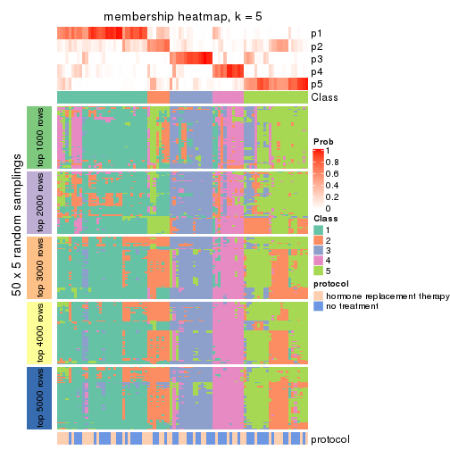
membership_heatmap(res, k = 6)
As soon as we have had the classes for columns, we can look for signatures which are significantly different between classes which can be candidate marks for certain classes. Following are the heatmaps for signatures.
Signature heatmaps where rows are scaled:
get_signatures(res, k = 2)
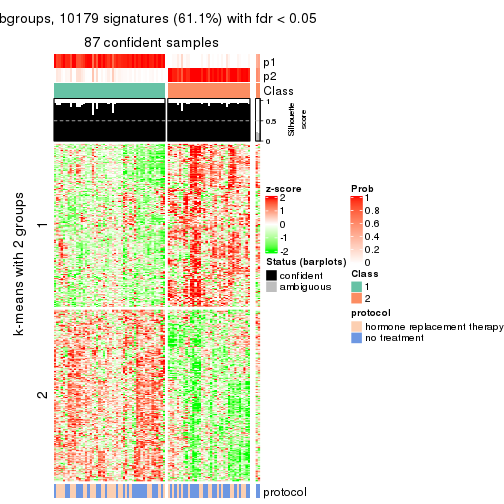
get_signatures(res, k = 3)
get_signatures(res, k = 4)
get_signatures(res, k = 5)
get_signatures(res, k = 6)
Signature heatmaps where rows are not scaled:
get_signatures(res, k = 2, scale_rows = FALSE)
get_signatures(res, k = 3, scale_rows = FALSE)
get_signatures(res, k = 4, scale_rows = FALSE)
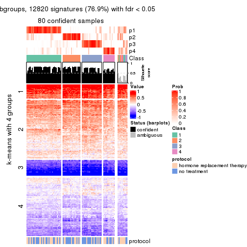
get_signatures(res, k = 5, scale_rows = FALSE)
get_signatures(res, k = 6, scale_rows = FALSE)
Compare the overlap of signatures from different k:
compare_signatures(res)
get_signature() returns a data frame invisibly. TO get the list of signatures, the function
call should be assigned to a variable explicitly. In following code, if plot argument is set
to FALSE, no heatmap is plotted while only the differential analysis is performed.
# code only for demonstration
tb = get_signature(res, k = ..., plot = FALSE)
An example of the output of tb is:
#> which_row fdr mean_1 mean_2 scaled_mean_1 scaled_mean_2 km
#> 1 38 0.042760348 8.373488 9.131774 -0.5533452 0.5164555 1
#> 2 40 0.018707592 7.106213 8.469186 -0.6173731 0.5762149 1
#> 3 55 0.019134737 10.221463 11.207825 -0.6159697 0.5749050 1
#> 4 59 0.006059896 5.921854 7.869574 -0.6899429 0.6439467 1
#> 5 60 0.018055526 8.928898 10.211722 -0.6204761 0.5791110 1
#> 6 98 0.009384629 15.714769 14.887706 0.6635654 -0.6193277 2
...
The columns in tb are:
which_row: row indices corresponding to the input matrix.fdr: FDR for the differential test. mean_x: The mean value in group x.scaled_mean_x: The mean value in group x after rows are scaled.km: Row groups if k-means clustering is applied to rows.UMAP plot which shows how samples are separated.
dimension_reduction(res, k = 2, method = "UMAP")
dimension_reduction(res, k = 3, method = "UMAP")
dimension_reduction(res, k = 4, method = "UMAP")
dimension_reduction(res, k = 5, method = "UMAP")
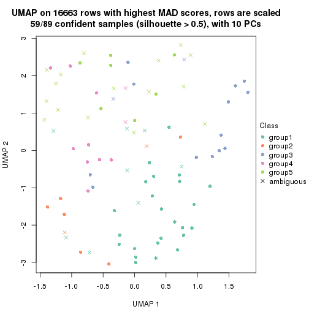
dimension_reduction(res, k = 6, method = "UMAP")
Following heatmap shows how subgroups are split when increasing k:
collect_classes(res)
Test correlation between subgroups and known annotations. If the known annotation is numeric, one-way ANOVA test is applied, and if the known annotation is discrete, chi-squared contingency table test is applied.
test_to_known_factors(res)
#> n protocol(p) k
#> MAD:NMF 87 0.554 2
#> MAD:NMF 64 0.213 3
#> MAD:NMF 80 0.484 4
#> MAD:NMF 59 0.663 5
#> MAD:NMF 33 0.215 6
If matrix rows can be associated to genes, consider to use functional_enrichment(res,
...) to perform function enrichment for the signature genes. See this vignette for more detailed explanations.
The object with results only for a single top-value method and a single partition method can be extracted as:
res = res_list["ATC", "hclust"]
# you can also extract it by
# res = res_list["ATC:hclust"]
A summary of res and all the functions that can be applied to it:
res
#> A 'ConsensusPartition' object with k = 2, 3, 4, 5, 6.
#> On a matrix with 16663 rows and 89 columns.
#> Top rows (1000, 2000, 3000, 4000, 5000) are extracted by 'ATC' method.
#> Subgroups are detected by 'hclust' method.
#> Performed in total 1250 partitions by row resampling.
#> Best k for subgroups seems to be 2.
#>
#> Following methods can be applied to this 'ConsensusPartition' object:
#> [1] "cola_report" "collect_classes" "collect_plots"
#> [4] "collect_stats" "colnames" "compare_signatures"
#> [7] "consensus_heatmap" "dimension_reduction" "functional_enrichment"
#> [10] "get_anno_col" "get_anno" "get_classes"
#> [13] "get_consensus" "get_matrix" "get_membership"
#> [16] "get_param" "get_signatures" "get_stats"
#> [19] "is_best_k" "is_stable_k" "membership_heatmap"
#> [22] "ncol" "nrow" "plot_ecdf"
#> [25] "rownames" "select_partition_number" "show"
#> [28] "suggest_best_k" "test_to_known_factors"
collect_plots() function collects all the plots made from res for all k (number of partitions)
into one single page to provide an easy and fast comparison between different k.
collect_plots(res)
The plots are:
k and the heatmap of
predicted classes for each k.k.k.k.All the plots in panels can be made by individual functions and they are plotted later in this section.
select_partition_number() produces several plots showing different
statistics for choosing “optimized” k. There are following statistics:
k;k, the area increased is defined as \(A_k - A_{k-1}\).The detailed explanations of these statistics can be found in the cola vignette.
Generally speaking, lower PAC score, higher mean silhouette score or higher
concordance corresponds to better partition. Rand index and Jaccard index
measure how similar the current partition is compared to partition with k-1.
If they are too similar, we won't accept k is better than k-1.
select_partition_number(res)
The numeric values for all these statistics can be obtained by get_stats().
get_stats(res)
#> k 1-PAC mean_silhouette concordance area_increased Rand Jaccard
#> 2 2 0.406 0.822 0.901 0.4603 0.509 0.509
#> 3 3 0.583 0.761 0.873 0.2920 0.901 0.808
#> 4 4 0.594 0.707 0.817 0.2015 0.817 0.576
#> 5 5 0.629 0.661 0.779 0.0403 1.000 1.000
#> 6 6 0.654 0.580 0.764 0.0169 0.942 0.785
suggest_best_k() suggests the best \(k\) based on these statistics. The rules are as follows:
suggest_best_k(res)
#> [1] 2
Following shows the table of the partitions (You need to click the show/hide
code output link to see it). The membership matrix (columns with name p*)
is inferred by
clue::cl_consensus()
function with the SE method. Basically the value in the membership matrix
represents the probability to belong to a certain group. The finall class
label for an item is determined with the group with highest probability it
belongs to.
In get_classes() function, the entropy is calculated from the membership
matrix and the silhouette score is calculated from the consensus matrix.
cbind(get_classes(res, k = 2), get_membership(res, k = 2))
#> class entropy silhouette p1 p2
#> GSM78921 1 0.0000 0.881 1.000 0.000
#> GSM78922 1 0.0000 0.881 1.000 0.000
#> GSM78923 2 0.0000 0.873 0.000 1.000
#> GSM78924 2 0.0000 0.873 0.000 1.000
#> GSM78925 2 0.2948 0.887 0.052 0.948
#> GSM78926 1 0.0000 0.881 1.000 0.000
#> GSM78927 1 0.0000 0.881 1.000 0.000
#> GSM78928 2 0.8081 0.757 0.248 0.752
#> GSM78929 2 0.5737 0.892 0.136 0.864
#> GSM78930 1 0.8813 0.610 0.700 0.300
#> GSM78931 2 0.5629 0.894 0.132 0.868
#> GSM78932 2 0.5178 0.898 0.116 0.884
#> GSM78933 1 0.0000 0.881 1.000 0.000
#> GSM78934 2 0.0000 0.873 0.000 1.000
#> GSM78935 1 0.0000 0.881 1.000 0.000
#> GSM78936 1 0.9209 0.558 0.664 0.336
#> GSM78937 1 0.4562 0.835 0.904 0.096
#> GSM78938 1 0.0376 0.880 0.996 0.004
#> GSM78939 1 0.3584 0.851 0.932 0.068
#> GSM78940 1 0.9248 0.550 0.660 0.340
#> GSM78941 2 0.5408 0.897 0.124 0.876
#> GSM78942 2 0.4939 0.899 0.108 0.892
#> GSM78943 1 0.0000 0.881 1.000 0.000
#> GSM78944 1 0.0000 0.881 1.000 0.000
#> GSM78945 1 0.0000 0.881 1.000 0.000
#> GSM78946 1 0.3274 0.855 0.940 0.060
#> GSM78947 2 0.5059 0.899 0.112 0.888
#> GSM78948 1 0.0000 0.881 1.000 0.000
#> GSM78949 1 0.0000 0.881 1.000 0.000
#> GSM78950 1 0.7745 0.720 0.772 0.228
#> GSM78951 1 0.9248 0.549 0.660 0.340
#> GSM78952 2 0.0000 0.873 0.000 1.000
#> GSM78953 2 0.5059 0.899 0.112 0.888
#> GSM78954 2 0.5408 0.897 0.124 0.876
#> GSM78955 2 0.7139 0.835 0.196 0.804
#> GSM78956 2 0.0000 0.873 0.000 1.000
#> GSM78957 2 0.0000 0.873 0.000 1.000
#> GSM78958 1 0.8499 0.660 0.724 0.276
#> GSM78959 1 0.0000 0.881 1.000 0.000
#> GSM78960 2 0.5519 0.896 0.128 0.872
#> GSM78961 2 0.4939 0.899 0.108 0.892
#> GSM78962 1 0.0672 0.879 0.992 0.008
#> GSM78963 2 0.0000 0.873 0.000 1.000
#> GSM78964 2 0.0000 0.873 0.000 1.000
#> GSM78965 2 0.6148 0.881 0.152 0.848
#> GSM78966 1 0.0000 0.881 1.000 0.000
#> GSM78967 1 0.0000 0.881 1.000 0.000
#> GSM78879 1 0.0000 0.881 1.000 0.000
#> GSM78880 1 0.0000 0.881 1.000 0.000
#> GSM78881 1 0.0000 0.881 1.000 0.000
#> GSM78882 1 0.0000 0.881 1.000 0.000
#> GSM78883 1 0.1414 0.874 0.980 0.020
#> GSM78884 1 0.0000 0.881 1.000 0.000
#> GSM78885 1 0.0000 0.881 1.000 0.000
#> GSM78886 2 0.6247 0.878 0.156 0.844
#> GSM78887 1 0.7139 0.754 0.804 0.196
#> GSM78888 1 0.0000 0.881 1.000 0.000
#> GSM78889 2 0.5178 0.898 0.116 0.884
#> GSM78890 2 0.7674 0.796 0.224 0.776
#> GSM78891 1 0.0376 0.880 0.996 0.004
#> GSM78892 2 0.9732 0.364 0.404 0.596
#> GSM78893 2 0.5946 0.887 0.144 0.856
#> GSM78894 1 0.0376 0.880 0.996 0.004
#> GSM78895 2 0.0000 0.873 0.000 1.000
#> GSM78896 1 0.5737 0.808 0.864 0.136
#> GSM78897 1 0.8861 0.619 0.696 0.304
#> GSM78898 1 0.0000 0.881 1.000 0.000
#> GSM78899 1 0.0000 0.881 1.000 0.000
#> GSM78900 1 0.9000 0.598 0.684 0.316
#> GSM78901 1 0.7815 0.718 0.768 0.232
#> GSM78902 1 0.9248 0.549 0.660 0.340
#> GSM78903 2 0.0000 0.873 0.000 1.000
#> GSM78904 1 0.9209 0.558 0.664 0.336
#> GSM78905 2 0.7674 0.796 0.224 0.776
#> GSM78906 2 0.0000 0.873 0.000 1.000
#> GSM78907 1 0.8861 0.619 0.696 0.304
#> GSM78908 1 0.8608 0.650 0.716 0.284
#> GSM78909 2 0.0000 0.873 0.000 1.000
#> GSM78910 1 0.0000 0.881 1.000 0.000
#> GSM78911 2 0.5629 0.894 0.132 0.868
#> GSM78912 1 0.0938 0.877 0.988 0.012
#> GSM78913 2 0.0000 0.873 0.000 1.000
#> GSM78914 2 0.6148 0.881 0.152 0.848
#> GSM78915 2 0.6148 0.881 0.152 0.848
#> GSM78916 2 0.7139 0.835 0.196 0.804
#> GSM78917 1 0.0000 0.881 1.000 0.000
#> GSM78918 1 0.5946 0.801 0.856 0.144
#> GSM78919 1 0.0000 0.881 1.000 0.000
#> GSM78920 1 0.9775 0.353 0.588 0.412
cbind(get_classes(res, k = 3), get_membership(res, k = 3))
#> class entropy silhouette p1 p2 p3
#> GSM78921 1 0.0000 0.813 1.000 0.000 0.000
#> GSM78922 1 0.0000 0.813 1.000 0.000 0.000
#> GSM78923 3 0.0747 0.988 0.000 0.016 0.984
#> GSM78924 3 0.0000 0.995 0.000 0.000 1.000
#> GSM78925 2 0.6095 0.377 0.000 0.608 0.392
#> GSM78926 1 0.0000 0.813 1.000 0.000 0.000
#> GSM78927 1 0.2448 0.810 0.924 0.076 0.000
#> GSM78928 2 0.2796 0.803 0.092 0.908 0.000
#> GSM78929 2 0.1411 0.868 0.000 0.964 0.036
#> GSM78930 1 0.6252 0.447 0.556 0.444 0.000
#> GSM78931 2 0.1289 0.867 0.000 0.968 0.032
#> GSM78932 2 0.1860 0.861 0.000 0.948 0.052
#> GSM78933 1 0.0000 0.813 1.000 0.000 0.000
#> GSM78934 3 0.0000 0.995 0.000 0.000 1.000
#> GSM78935 1 0.0000 0.813 1.000 0.000 0.000
#> GSM78936 1 0.6307 0.369 0.512 0.488 0.000
#> GSM78937 1 0.4887 0.735 0.772 0.228 0.000
#> GSM78938 1 0.3038 0.805 0.896 0.104 0.000
#> GSM78939 1 0.4555 0.754 0.800 0.200 0.000
#> GSM78940 1 0.6309 0.346 0.504 0.496 0.000
#> GSM78941 2 0.3816 0.808 0.000 0.852 0.148
#> GSM78942 2 0.5178 0.681 0.000 0.744 0.256
#> GSM78943 1 0.0000 0.813 1.000 0.000 0.000
#> GSM78944 1 0.0000 0.813 1.000 0.000 0.000
#> GSM78945 1 0.0000 0.813 1.000 0.000 0.000
#> GSM78946 1 0.4399 0.763 0.812 0.188 0.000
#> GSM78947 2 0.4291 0.772 0.000 0.820 0.180
#> GSM78948 1 0.0000 0.813 1.000 0.000 0.000
#> GSM78949 1 0.0000 0.813 1.000 0.000 0.000
#> GSM78950 1 0.6045 0.572 0.620 0.380 0.000
#> GSM78951 1 0.6308 0.357 0.508 0.492 0.000
#> GSM78952 3 0.0000 0.995 0.000 0.000 1.000
#> GSM78953 2 0.4062 0.787 0.000 0.836 0.164
#> GSM78954 2 0.1643 0.864 0.000 0.956 0.044
#> GSM78955 2 0.1529 0.853 0.040 0.960 0.000
#> GSM78956 3 0.0747 0.988 0.000 0.016 0.984
#> GSM78957 3 0.0000 0.995 0.000 0.000 1.000
#> GSM78958 1 0.6204 0.502 0.576 0.424 0.000
#> GSM78959 1 0.0000 0.813 1.000 0.000 0.000
#> GSM78960 2 0.1529 0.866 0.000 0.960 0.040
#> GSM78961 2 0.5560 0.623 0.000 0.700 0.300
#> GSM78962 1 0.2261 0.812 0.932 0.068 0.000
#> GSM78963 3 0.0000 0.995 0.000 0.000 1.000
#> GSM78964 3 0.0000 0.995 0.000 0.000 1.000
#> GSM78965 2 0.0237 0.866 0.000 0.996 0.004
#> GSM78966 1 0.0000 0.813 1.000 0.000 0.000
#> GSM78967 1 0.0000 0.813 1.000 0.000 0.000
#> GSM78879 1 0.0000 0.813 1.000 0.000 0.000
#> GSM78880 1 0.0000 0.813 1.000 0.000 0.000
#> GSM78881 1 0.3192 0.802 0.888 0.112 0.000
#> GSM78882 1 0.2448 0.810 0.924 0.076 0.000
#> GSM78883 1 0.3038 0.805 0.896 0.104 0.000
#> GSM78884 1 0.1529 0.813 0.960 0.040 0.000
#> GSM78885 1 0.3116 0.803 0.892 0.108 0.000
#> GSM78886 2 0.0747 0.867 0.000 0.984 0.016
#> GSM78887 1 0.5882 0.615 0.652 0.348 0.000
#> GSM78888 1 0.0237 0.813 0.996 0.004 0.000
#> GSM78889 2 0.2066 0.858 0.000 0.940 0.060
#> GSM78890 2 0.2261 0.830 0.068 0.932 0.000
#> GSM78891 1 0.3038 0.805 0.896 0.104 0.000
#> GSM78892 2 0.5098 0.509 0.248 0.752 0.000
#> GSM78893 2 0.1163 0.868 0.000 0.972 0.028
#> GSM78894 1 0.3038 0.805 0.896 0.104 0.000
#> GSM78895 3 0.0000 0.995 0.000 0.000 1.000
#> GSM78896 1 0.5291 0.702 0.732 0.268 0.000
#> GSM78897 1 0.6267 0.452 0.548 0.452 0.000
#> GSM78898 1 0.0000 0.813 1.000 0.000 0.000
#> GSM78899 1 0.0000 0.813 1.000 0.000 0.000
#> GSM78900 1 0.6295 0.410 0.528 0.472 0.000
#> GSM78901 1 0.5968 0.596 0.636 0.364 0.000
#> GSM78902 1 0.6308 0.357 0.508 0.492 0.000
#> GSM78903 3 0.0747 0.988 0.000 0.016 0.984
#> GSM78904 1 0.6307 0.369 0.512 0.488 0.000
#> GSM78905 2 0.2261 0.830 0.068 0.932 0.000
#> GSM78906 3 0.0000 0.995 0.000 0.000 1.000
#> GSM78907 1 0.6267 0.452 0.548 0.452 0.000
#> GSM78908 1 0.6225 0.489 0.568 0.432 0.000
#> GSM78909 3 0.0747 0.988 0.000 0.016 0.984
#> GSM78910 1 0.0000 0.813 1.000 0.000 0.000
#> GSM78911 2 0.1411 0.866 0.000 0.964 0.036
#> GSM78912 1 0.3038 0.806 0.896 0.104 0.000
#> GSM78913 3 0.0000 0.995 0.000 0.000 1.000
#> GSM78914 2 0.0237 0.866 0.000 0.996 0.004
#> GSM78915 2 0.0424 0.867 0.000 0.992 0.008
#> GSM78916 2 0.1529 0.853 0.040 0.960 0.000
#> GSM78917 1 0.0000 0.813 1.000 0.000 0.000
#> GSM78918 1 0.5560 0.672 0.700 0.300 0.000
#> GSM78919 1 0.0000 0.813 1.000 0.000 0.000
#> GSM78920 2 0.6235 -0.163 0.436 0.564 0.000
cbind(get_classes(res, k = 4), get_membership(res, k = 4))
#> class entropy silhouette p1 p2 p3 p4
#> GSM78921 1 0.0000 0.8172 1.000 0.000 0.000 0.000
#> GSM78922 1 0.0000 0.8172 1.000 0.000 0.000 0.000
#> GSM78923 2 0.0707 0.9853 0.000 0.980 0.020 0.000
#> GSM78924 2 0.0188 0.9909 0.000 0.996 0.000 0.004
#> GSM78925 3 0.5313 0.4183 0.000 0.376 0.608 0.016
#> GSM78926 1 0.0707 0.8008 0.980 0.000 0.000 0.020
#> GSM78927 1 0.4877 0.2875 0.592 0.000 0.000 0.408
#> GSM78928 3 0.4746 0.5492 0.000 0.000 0.632 0.368
#> GSM78929 3 0.3803 0.8052 0.000 0.032 0.836 0.132
#> GSM78930 4 0.4635 0.6144 0.028 0.000 0.216 0.756
#> GSM78931 3 0.2300 0.8101 0.000 0.016 0.920 0.064
#> GSM78932 3 0.1833 0.8132 0.000 0.032 0.944 0.024
#> GSM78933 1 0.0000 0.8172 1.000 0.000 0.000 0.000
#> GSM78934 2 0.0188 0.9918 0.000 0.996 0.004 0.000
#> GSM78935 1 0.0000 0.8172 1.000 0.000 0.000 0.000
#> GSM78936 4 0.5254 0.7272 0.056 0.000 0.220 0.724
#> GSM78937 4 0.6140 0.5188 0.340 0.000 0.064 0.596
#> GSM78938 1 0.5372 0.1414 0.544 0.000 0.012 0.444
#> GSM78939 4 0.5993 0.5691 0.308 0.000 0.064 0.628
#> GSM78940 4 0.5907 0.7020 0.080 0.000 0.252 0.668
#> GSM78941 3 0.5628 0.7641 0.000 0.144 0.724 0.132
#> GSM78942 3 0.5136 0.6315 0.000 0.224 0.728 0.048
#> GSM78943 1 0.0000 0.8172 1.000 0.000 0.000 0.000
#> GSM78944 1 0.0469 0.8124 0.988 0.000 0.000 0.012
#> GSM78945 1 0.0000 0.8172 1.000 0.000 0.000 0.000
#> GSM78946 4 0.6023 0.5031 0.344 0.000 0.056 0.600
#> GSM78947 3 0.3695 0.7685 0.000 0.156 0.828 0.016
#> GSM78948 1 0.0000 0.8172 1.000 0.000 0.000 0.000
#> GSM78949 1 0.0469 0.8124 0.988 0.000 0.000 0.012
#> GSM78950 4 0.5167 0.7699 0.108 0.000 0.132 0.760
#> GSM78951 4 0.4599 0.6606 0.016 0.000 0.248 0.736
#> GSM78952 2 0.0000 0.9924 0.000 1.000 0.000 0.000
#> GSM78953 3 0.3495 0.7749 0.000 0.140 0.844 0.016
#> GSM78954 3 0.2915 0.8136 0.000 0.028 0.892 0.080
#> GSM78955 3 0.3801 0.7459 0.000 0.000 0.780 0.220
#> GSM78956 2 0.0707 0.9853 0.000 0.980 0.020 0.000
#> GSM78957 2 0.0188 0.9918 0.000 0.996 0.004 0.000
#> GSM78958 4 0.5077 0.7632 0.080 0.000 0.160 0.760
#> GSM78959 1 0.0000 0.8172 1.000 0.000 0.000 0.000
#> GSM78960 3 0.1929 0.8122 0.000 0.024 0.940 0.036
#> GSM78961 3 0.5365 0.5820 0.000 0.264 0.692 0.044
#> GSM78962 4 0.4697 0.3887 0.356 0.000 0.000 0.644
#> GSM78963 2 0.0000 0.9924 0.000 1.000 0.000 0.000
#> GSM78964 2 0.0000 0.9924 0.000 1.000 0.000 0.000
#> GSM78965 3 0.2530 0.7940 0.000 0.000 0.888 0.112
#> GSM78966 1 0.0000 0.8172 1.000 0.000 0.000 0.000
#> GSM78967 1 0.0000 0.8172 1.000 0.000 0.000 0.000
#> GSM78879 1 0.0000 0.8172 1.000 0.000 0.000 0.000
#> GSM78880 1 0.0000 0.8172 1.000 0.000 0.000 0.000
#> GSM78881 1 0.5165 0.0290 0.512 0.000 0.004 0.484
#> GSM78882 1 0.4877 0.2875 0.592 0.000 0.000 0.408
#> GSM78883 1 0.5550 0.1601 0.552 0.000 0.020 0.428
#> GSM78884 4 0.4830 0.2871 0.392 0.000 0.000 0.608
#> GSM78885 1 0.5143 0.1175 0.540 0.000 0.004 0.456
#> GSM78886 3 0.3925 0.7809 0.000 0.016 0.808 0.176
#> GSM78887 4 0.5375 0.7682 0.140 0.000 0.116 0.744
#> GSM78888 1 0.0592 0.8101 0.984 0.000 0.000 0.016
#> GSM78889 3 0.2021 0.8133 0.000 0.040 0.936 0.024
#> GSM78890 3 0.4500 0.6433 0.000 0.000 0.684 0.316
#> GSM78891 1 0.5372 0.1414 0.544 0.000 0.012 0.444
#> GSM78892 4 0.5137 0.0661 0.004 0.000 0.452 0.544
#> GSM78893 3 0.4004 0.7889 0.000 0.024 0.812 0.164
#> GSM78894 1 0.5372 0.1414 0.544 0.000 0.012 0.444
#> GSM78895 2 0.0000 0.9924 0.000 1.000 0.000 0.000
#> GSM78896 4 0.5723 0.6720 0.244 0.000 0.072 0.684
#> GSM78897 4 0.5512 0.7593 0.100 0.000 0.172 0.728
#> GSM78898 1 0.0469 0.8124 0.988 0.000 0.000 0.012
#> GSM78899 1 0.1637 0.7735 0.940 0.000 0.000 0.060
#> GSM78900 4 0.4524 0.7101 0.028 0.000 0.204 0.768
#> GSM78901 4 0.5993 0.7667 0.148 0.000 0.160 0.692
#> GSM78902 4 0.4599 0.6606 0.016 0.000 0.248 0.736
#> GSM78903 2 0.0707 0.9853 0.000 0.980 0.020 0.000
#> GSM78904 4 0.5219 0.7274 0.056 0.000 0.216 0.728
#> GSM78905 3 0.4500 0.6433 0.000 0.000 0.684 0.316
#> GSM78906 2 0.0000 0.9924 0.000 1.000 0.000 0.000
#> GSM78907 4 0.5512 0.7593 0.100 0.000 0.172 0.728
#> GSM78908 4 0.5165 0.7621 0.080 0.000 0.168 0.752
#> GSM78909 2 0.0707 0.9853 0.000 0.980 0.020 0.000
#> GSM78910 1 0.0000 0.8172 1.000 0.000 0.000 0.000
#> GSM78911 3 0.1624 0.8144 0.000 0.020 0.952 0.028
#> GSM78912 1 0.5220 0.2155 0.568 0.000 0.008 0.424
#> GSM78913 2 0.0000 0.9924 0.000 1.000 0.000 0.000
#> GSM78914 3 0.2530 0.7940 0.000 0.000 0.888 0.112
#> GSM78915 3 0.2589 0.7932 0.000 0.000 0.884 0.116
#> GSM78916 3 0.3801 0.7459 0.000 0.000 0.780 0.220
#> GSM78917 1 0.0000 0.8172 1.000 0.000 0.000 0.000
#> GSM78918 4 0.5784 0.7212 0.200 0.000 0.100 0.700
#> GSM78919 1 0.0000 0.8172 1.000 0.000 0.000 0.000
#> GSM78920 4 0.5446 0.6372 0.044 0.000 0.276 0.680
cbind(get_classes(res, k = 5), get_membership(res, k = 5))
#> class entropy silhouette p1 p2 p3 p4 p5
#> GSM78921 1 0.0000 0.7981 1.000 0.000 NA 0.000 0.000
#> GSM78922 1 0.0000 0.7981 1.000 0.000 NA 0.000 0.000
#> GSM78923 5 0.1041 0.9727 0.000 0.032 NA 0.000 0.964
#> GSM78924 5 0.0451 0.9810 0.000 0.004 NA 0.000 0.988
#> GSM78925 2 0.6189 0.3608 0.000 0.540 NA 0.036 0.360
#> GSM78926 1 0.1251 0.7706 0.956 0.000 NA 0.008 0.000
#> GSM78927 1 0.4574 0.2517 0.576 0.000 NA 0.412 0.000
#> GSM78928 2 0.5348 0.3755 0.000 0.492 NA 0.456 0.000
#> GSM78929 2 0.4426 0.6785 0.000 0.740 NA 0.220 0.020
#> GSM78930 4 0.5812 0.5793 0.016 0.172 NA 0.656 0.000
#> GSM78931 2 0.5446 0.6322 0.000 0.628 NA 0.100 0.000
#> GSM78932 2 0.4248 0.6911 0.000 0.780 NA 0.056 0.008
#> GSM78933 1 0.0000 0.7981 1.000 0.000 NA 0.000 0.000
#> GSM78934 5 0.0566 0.9808 0.000 0.012 NA 0.000 0.984
#> GSM78935 1 0.0000 0.7981 1.000 0.000 NA 0.000 0.000
#> GSM78936 4 0.3441 0.7476 0.056 0.088 NA 0.848 0.000
#> GSM78937 4 0.3932 0.5298 0.328 0.000 NA 0.672 0.000
#> GSM78938 1 0.5106 0.0550 0.508 0.000 NA 0.456 0.000
#> GSM78939 4 0.4397 0.6033 0.276 0.000 NA 0.696 0.000
#> GSM78940 4 0.4091 0.7251 0.076 0.124 NA 0.796 0.000
#> GSM78941 2 0.5739 0.6419 0.000 0.624 NA 0.244 0.128
#> GSM78942 2 0.6502 0.3785 0.000 0.472 NA 0.012 0.136
#> GSM78943 1 0.0000 0.7981 1.000 0.000 NA 0.000 0.000
#> GSM78944 1 0.0510 0.7922 0.984 0.000 NA 0.016 0.000
#> GSM78945 1 0.0000 0.7981 1.000 0.000 NA 0.000 0.000
#> GSM78946 4 0.4642 0.5447 0.308 0.000 NA 0.660 0.000
#> GSM78947 2 0.5853 0.6334 0.000 0.676 NA 0.036 0.136
#> GSM78948 1 0.0000 0.7981 1.000 0.000 NA 0.000 0.000
#> GSM78949 1 0.0510 0.7922 0.984 0.000 NA 0.016 0.000
#> GSM78950 4 0.3023 0.7751 0.088 0.012 NA 0.872 0.000
#> GSM78951 4 0.4315 0.6618 0.004 0.156 NA 0.772 0.000
#> GSM78952 5 0.0404 0.9808 0.000 0.000 NA 0.000 0.988
#> GSM78953 2 0.5789 0.6411 0.000 0.684 NA 0.040 0.116
#> GSM78954 2 0.4721 0.6993 0.000 0.752 NA 0.164 0.016
#> GSM78955 2 0.4084 0.6015 0.000 0.668 NA 0.328 0.000
#> GSM78956 5 0.0955 0.9751 0.000 0.028 NA 0.000 0.968
#> GSM78957 5 0.0566 0.9808 0.000 0.012 NA 0.000 0.984
#> GSM78958 4 0.2491 0.7708 0.068 0.036 NA 0.896 0.000
#> GSM78959 1 0.0000 0.7981 1.000 0.000 NA 0.000 0.000
#> GSM78960 2 0.3054 0.7057 0.000 0.876 NA 0.052 0.012
#> GSM78961 2 0.6816 0.3257 0.000 0.436 NA 0.012 0.188
#> GSM78962 4 0.5656 0.4754 0.308 0.000 NA 0.588 0.000
#> GSM78963 5 0.0404 0.9808 0.000 0.000 NA 0.000 0.988
#> GSM78964 5 0.0404 0.9808 0.000 0.000 NA 0.000 0.988
#> GSM78965 2 0.3779 0.6723 0.000 0.804 NA 0.052 0.000
#> GSM78966 1 0.0000 0.7981 1.000 0.000 NA 0.000 0.000
#> GSM78967 1 0.0000 0.7981 1.000 0.000 NA 0.000 0.000
#> GSM78879 1 0.0000 0.7981 1.000 0.000 NA 0.000 0.000
#> GSM78880 1 0.0000 0.7981 1.000 0.000 NA 0.000 0.000
#> GSM78881 1 0.4659 -0.0119 0.496 0.000 NA 0.492 0.000
#> GSM78882 1 0.4574 0.2517 0.576 0.000 NA 0.412 0.000
#> GSM78883 1 0.4434 0.1233 0.536 0.000 NA 0.460 0.000
#> GSM78884 4 0.5825 0.4134 0.320 0.000 NA 0.564 0.000
#> GSM78885 1 0.4440 0.0867 0.528 0.000 NA 0.468 0.000
#> GSM78886 2 0.4206 0.6395 0.000 0.696 NA 0.288 0.016
#> GSM78887 4 0.2932 0.7742 0.104 0.000 NA 0.864 0.000
#> GSM78888 1 0.0510 0.7916 0.984 0.000 NA 0.016 0.000
#> GSM78889 2 0.4456 0.6919 0.000 0.772 NA 0.056 0.016
#> GSM78890 2 0.5922 0.4695 0.000 0.520 NA 0.368 0.000
#> GSM78891 1 0.5106 0.0550 0.508 0.000 NA 0.456 0.000
#> GSM78892 4 0.5091 0.2043 0.004 0.328 NA 0.624 0.000
#> GSM78893 2 0.4138 0.6487 0.000 0.708 NA 0.276 0.016
#> GSM78894 1 0.5106 0.0550 0.508 0.000 NA 0.456 0.000
#> GSM78895 5 0.0000 0.9819 0.000 0.000 NA 0.000 1.000
#> GSM78896 4 0.3491 0.6867 0.228 0.000 NA 0.768 0.000
#> GSM78897 4 0.4278 0.7668 0.100 0.068 NA 0.804 0.000
#> GSM78898 1 0.0510 0.7922 0.984 0.000 NA 0.016 0.000
#> GSM78899 1 0.5142 0.4385 0.564 0.000 NA 0.044 0.000
#> GSM78900 4 0.3544 0.7124 0.016 0.120 NA 0.836 0.000
#> GSM78901 4 0.4426 0.7742 0.128 0.056 NA 0.788 0.000
#> GSM78902 4 0.4315 0.6618 0.004 0.156 NA 0.772 0.000
#> GSM78903 5 0.1041 0.9727 0.000 0.032 NA 0.000 0.964
#> GSM78904 4 0.3325 0.7466 0.056 0.080 NA 0.856 0.000
#> GSM78905 2 0.5922 0.4695 0.000 0.520 NA 0.368 0.000
#> GSM78906 5 0.0000 0.9819 0.000 0.000 NA 0.000 1.000
#> GSM78907 4 0.4278 0.7668 0.100 0.068 NA 0.804 0.000
#> GSM78908 4 0.2728 0.7699 0.068 0.040 NA 0.888 0.000
#> GSM78909 5 0.0955 0.9751 0.000 0.028 NA 0.000 0.968
#> GSM78910 1 0.0000 0.7981 1.000 0.000 NA 0.000 0.000
#> GSM78911 2 0.5054 0.6766 0.000 0.696 NA 0.084 0.004
#> GSM78912 1 0.4415 0.1799 0.552 0.000 NA 0.444 0.000
#> GSM78913 5 0.0404 0.9808 0.000 0.000 NA 0.000 0.988
#> GSM78914 2 0.3779 0.6723 0.000 0.804 NA 0.052 0.000
#> GSM78915 2 0.3710 0.6717 0.000 0.808 NA 0.048 0.000
#> GSM78916 2 0.4084 0.6015 0.000 0.668 NA 0.328 0.000
#> GSM78917 1 0.0000 0.7981 1.000 0.000 NA 0.000 0.000
#> GSM78918 4 0.3616 0.7398 0.164 0.000 NA 0.804 0.000
#> GSM78919 1 0.0000 0.7981 1.000 0.000 NA 0.000 0.000
#> GSM78920 4 0.3984 0.6762 0.044 0.140 NA 0.804 0.000
cbind(get_classes(res, k = 6), get_membership(res, k = 6))
#> class entropy silhouette p1 p2 p3 p4 p5 p6
#> GSM78921 1 0.0000 0.80531 1.000 0.000 0.000 0.000 0.000 0.000
#> GSM78922 1 0.0000 0.80531 1.000 0.000 0.000 0.000 0.000 0.000
#> GSM78923 5 0.1668 0.88540 0.000 0.060 0.004 0.000 0.928 0.008
#> GSM78924 5 0.0717 0.89325 0.000 0.016 0.008 0.000 0.976 0.000
#> GSM78925 5 0.6707 -0.43865 0.000 0.288 0.328 0.032 0.352 0.000
#> GSM78926 1 0.1007 0.76618 0.956 0.000 0.000 0.000 0.000 0.044
#> GSM78927 1 0.4433 0.18840 0.560 0.008 0.000 0.416 0.000 0.016
#> GSM78928 3 0.3971 0.50212 0.000 0.004 0.548 0.448 0.000 0.000
#> GSM78929 3 0.5780 0.47823 0.000 0.192 0.572 0.220 0.016 0.000
#> GSM78930 4 0.5276 0.49794 0.000 0.100 0.284 0.604 0.000 0.012
#> GSM78931 2 0.5232 0.55309 0.000 0.564 0.320 0.116 0.000 0.000
#> GSM78932 2 0.5298 0.48517 0.000 0.472 0.444 0.076 0.008 0.000
#> GSM78933 1 0.0000 0.80531 1.000 0.000 0.000 0.000 0.000 0.000
#> GSM78934 5 0.1340 0.89189 0.000 0.040 0.004 0.000 0.948 0.008
#> GSM78935 1 0.0000 0.80531 1.000 0.000 0.000 0.000 0.000 0.000
#> GSM78936 4 0.3117 0.69883 0.052 0.016 0.080 0.852 0.000 0.000
#> GSM78937 4 0.4305 0.55236 0.312 0.000 0.020 0.656 0.000 0.012
#> GSM78938 1 0.4730 -0.00137 0.496 0.016 0.000 0.468 0.000 0.020
#> GSM78939 4 0.3957 0.61092 0.260 0.008 0.000 0.712 0.000 0.020
#> GSM78940 4 0.4109 0.67608 0.072 0.040 0.100 0.788 0.000 0.000
#> GSM78941 3 0.7055 0.43814 0.000 0.172 0.472 0.256 0.092 0.008
#> GSM78942 2 0.2841 0.38747 0.000 0.848 0.128 0.000 0.012 0.012
#> GSM78943 1 0.0000 0.80531 1.000 0.000 0.000 0.000 0.000 0.000
#> GSM78944 1 0.0458 0.80026 0.984 0.000 0.000 0.016 0.000 0.000
#> GSM78945 1 0.0000 0.80531 1.000 0.000 0.000 0.000 0.000 0.000
#> GSM78946 4 0.4216 0.55984 0.292 0.012 0.000 0.676 0.000 0.020
#> GSM78947 2 0.6497 0.55575 0.000 0.412 0.412 0.056 0.116 0.004
#> GSM78948 1 0.0000 0.80531 1.000 0.000 0.000 0.000 0.000 0.000
#> GSM78949 1 0.0458 0.80026 0.984 0.000 0.000 0.016 0.000 0.000
#> GSM78950 4 0.2550 0.73874 0.076 0.020 0.008 0.888 0.000 0.008
#> GSM78951 4 0.3647 0.62110 0.004 0.012 0.232 0.748 0.000 0.004
#> GSM78952 5 0.0547 0.89166 0.000 0.020 0.000 0.000 0.980 0.000
#> GSM78953 2 0.6348 0.57179 0.000 0.444 0.400 0.060 0.092 0.004
#> GSM78954 3 0.5844 0.18739 0.000 0.296 0.528 0.164 0.012 0.000
#> GSM78955 3 0.5565 0.56567 0.000 0.152 0.508 0.340 0.000 0.000
#> GSM78956 5 0.1606 0.88759 0.000 0.056 0.004 0.000 0.932 0.008
#> GSM78957 5 0.1340 0.89189 0.000 0.040 0.004 0.000 0.948 0.008
#> GSM78958 4 0.2706 0.72768 0.060 0.016 0.044 0.880 0.000 0.000
#> GSM78959 1 0.0000 0.80531 1.000 0.000 0.000 0.000 0.000 0.000
#> GSM78960 3 0.4476 -0.10373 0.000 0.280 0.668 0.044 0.008 0.000
#> GSM78961 2 0.3962 0.36764 0.000 0.772 0.128 0.000 0.096 0.004
#> GSM78962 4 0.5776 0.49010 0.272 0.112 0.000 0.580 0.000 0.036
#> GSM78963 5 0.0547 0.89166 0.000 0.020 0.000 0.000 0.980 0.000
#> GSM78964 5 0.0547 0.89166 0.000 0.020 0.000 0.000 0.980 0.000
#> GSM78965 3 0.1036 0.29629 0.000 0.008 0.964 0.024 0.000 0.004
#> GSM78966 1 0.0000 0.80531 1.000 0.000 0.000 0.000 0.000 0.000
#> GSM78967 1 0.0000 0.80531 1.000 0.000 0.000 0.000 0.000 0.000
#> GSM78879 1 0.0000 0.80531 1.000 0.000 0.000 0.000 0.000 0.000
#> GSM78880 1 0.0000 0.80531 1.000 0.000 0.000 0.000 0.000 0.000
#> GSM78881 4 0.4492 0.03024 0.480 0.008 0.000 0.496 0.000 0.016
#> GSM78882 1 0.4433 0.18840 0.560 0.008 0.000 0.416 0.000 0.016
#> GSM78883 1 0.4306 0.04575 0.520 0.004 0.000 0.464 0.000 0.012
#> GSM78884 4 0.6083 0.43484 0.288 0.108 0.000 0.548 0.000 0.056
#> GSM78885 1 0.4310 -0.00148 0.512 0.004 0.000 0.472 0.000 0.012
#> GSM78886 3 0.5963 0.55016 0.000 0.168 0.516 0.300 0.016 0.000
#> GSM78887 4 0.2682 0.73927 0.084 0.020 0.000 0.876 0.000 0.020
#> GSM78888 1 0.0458 0.79955 0.984 0.000 0.000 0.016 0.000 0.000
#> GSM78889 2 0.5384 0.48060 0.000 0.468 0.444 0.076 0.012 0.000
#> GSM78890 3 0.3620 0.54537 0.000 0.000 0.648 0.352 0.000 0.000
#> GSM78891 1 0.4730 -0.00137 0.496 0.016 0.000 0.468 0.000 0.020
#> GSM78892 4 0.3965 0.02454 0.004 0.004 0.376 0.616 0.000 0.000
#> GSM78893 3 0.5987 0.54064 0.000 0.176 0.516 0.292 0.016 0.000
#> GSM78894 1 0.4730 -0.00137 0.496 0.016 0.000 0.468 0.000 0.020
#> GSM78895 5 0.0000 0.89532 0.000 0.000 0.000 0.000 1.000 0.000
#> GSM78896 4 0.3927 0.68507 0.216 0.008 0.020 0.748 0.000 0.008
#> GSM78897 4 0.3655 0.72329 0.096 0.000 0.112 0.792 0.000 0.000
#> GSM78898 1 0.0458 0.80026 0.984 0.000 0.000 0.016 0.000 0.000
#> GSM78899 6 0.0891 0.00000 0.024 0.000 0.000 0.008 0.000 0.968
#> GSM78900 4 0.3219 0.67475 0.016 0.008 0.168 0.808 0.000 0.000
#> GSM78901 4 0.3790 0.73851 0.124 0.016 0.040 0.808 0.000 0.012
#> GSM78902 4 0.3647 0.62110 0.004 0.012 0.232 0.748 0.000 0.004
#> GSM78903 5 0.1668 0.88540 0.000 0.060 0.004 0.000 0.928 0.008
#> GSM78904 4 0.2925 0.69769 0.052 0.008 0.080 0.860 0.000 0.000
#> GSM78905 3 0.3620 0.54537 0.000 0.000 0.648 0.352 0.000 0.000
#> GSM78906 5 0.0000 0.89532 0.000 0.000 0.000 0.000 1.000 0.000
#> GSM78907 4 0.3655 0.72329 0.096 0.000 0.112 0.792 0.000 0.000
#> GSM78908 4 0.2836 0.72558 0.060 0.016 0.052 0.872 0.000 0.000
#> GSM78909 5 0.1606 0.88759 0.000 0.056 0.004 0.000 0.932 0.008
#> GSM78910 1 0.0000 0.80531 1.000 0.000 0.000 0.000 0.000 0.000
#> GSM78911 2 0.5249 0.47136 0.000 0.528 0.368 0.104 0.000 0.000
#> GSM78912 1 0.4517 0.10754 0.536 0.004 0.008 0.440 0.000 0.012
#> GSM78913 5 0.0547 0.89166 0.000 0.020 0.000 0.000 0.980 0.000
#> GSM78914 3 0.1036 0.29629 0.000 0.008 0.964 0.024 0.000 0.004
#> GSM78915 3 0.0951 0.28920 0.000 0.008 0.968 0.020 0.000 0.004
#> GSM78916 3 0.5565 0.56567 0.000 0.152 0.508 0.340 0.000 0.000
#> GSM78917 1 0.0000 0.80531 1.000 0.000 0.000 0.000 0.000 0.000
#> GSM78918 4 0.3172 0.73070 0.152 0.012 0.000 0.820 0.000 0.016
#> GSM78919 1 0.0000 0.80531 1.000 0.000 0.000 0.000 0.000 0.000
#> GSM78920 4 0.3529 0.60870 0.040 0.008 0.152 0.800 0.000 0.000
Heatmaps for the consensus matrix. It visualizes the probability of two samples to be in a same group.
consensus_heatmap(res, k = 2)
consensus_heatmap(res, k = 3)
consensus_heatmap(res, k = 4)
consensus_heatmap(res, k = 5)
consensus_heatmap(res, k = 6)
Heatmaps for the membership of samples in all partitions to see how consistent they are:
membership_heatmap(res, k = 2)
membership_heatmap(res, k = 3)
membership_heatmap(res, k = 4)
membership_heatmap(res, k = 5)
membership_heatmap(res, k = 6)
As soon as we have had the classes for columns, we can look for signatures which are significantly different between classes which can be candidate marks for certain classes. Following are the heatmaps for signatures.
Signature heatmaps where rows are scaled:
get_signatures(res, k = 2)
get_signatures(res, k = 3)
get_signatures(res, k = 4)
get_signatures(res, k = 5)
get_signatures(res, k = 6)
Signature heatmaps where rows are not scaled:
get_signatures(res, k = 2, scale_rows = FALSE)
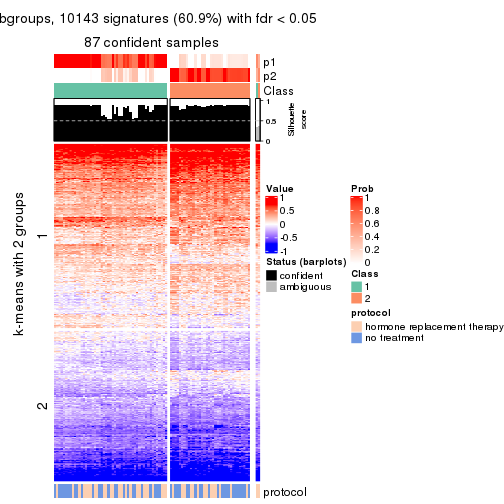
get_signatures(res, k = 3, scale_rows = FALSE)
get_signatures(res, k = 4, scale_rows = FALSE)
get_signatures(res, k = 5, scale_rows = FALSE)
get_signatures(res, k = 6, scale_rows = FALSE)
Compare the overlap of signatures from different k:
compare_signatures(res)

get_signature() returns a data frame invisibly. TO get the list of signatures, the function
call should be assigned to a variable explicitly. In following code, if plot argument is set
to FALSE, no heatmap is plotted while only the differential analysis is performed.
# code only for demonstration
tb = get_signature(res, k = ..., plot = FALSE)
An example of the output of tb is:
#> which_row fdr mean_1 mean_2 scaled_mean_1 scaled_mean_2 km
#> 1 38 0.042760348 8.373488 9.131774 -0.5533452 0.5164555 1
#> 2 40 0.018707592 7.106213 8.469186 -0.6173731 0.5762149 1
#> 3 55 0.019134737 10.221463 11.207825 -0.6159697 0.5749050 1
#> 4 59 0.006059896 5.921854 7.869574 -0.6899429 0.6439467 1
#> 5 60 0.018055526 8.928898 10.211722 -0.6204761 0.5791110 1
#> 6 98 0.009384629 15.714769 14.887706 0.6635654 -0.6193277 2
...
The columns in tb are:
which_row: row indices corresponding to the input matrix.fdr: FDR for the differential test. mean_x: The mean value in group x.scaled_mean_x: The mean value in group x after rows are scaled.km: Row groups if k-means clustering is applied to rows.UMAP plot which shows how samples are separated.
dimension_reduction(res, k = 2, method = "UMAP")
dimension_reduction(res, k = 3, method = "UMAP")
dimension_reduction(res, k = 4, method = "UMAP")
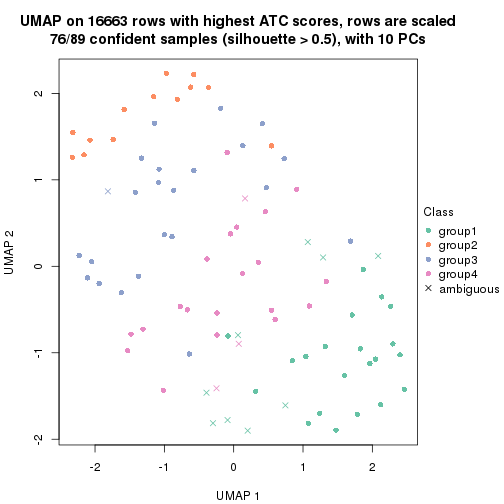
dimension_reduction(res, k = 5, method = "UMAP")
dimension_reduction(res, k = 6, method = "UMAP")
Following heatmap shows how subgroups are split when increasing k:
collect_classes(res)
Test correlation between subgroups and known annotations. If the known annotation is numeric, one-way ANOVA test is applied, and if the known annotation is discrete, chi-squared contingency table test is applied.
test_to_known_factors(res)
#> n protocol(p) k
#> ATC:hclust 87 0.370 2
#> ATC:hclust 77 0.788 3
#> ATC:hclust 76 0.678 4
#> ATC:hclust 70 0.608 5
#> ATC:hclust 62 0.151 6
If matrix rows can be associated to genes, consider to use functional_enrichment(res,
...) to perform function enrichment for the signature genes. See this vignette for more detailed explanations.
The object with results only for a single top-value method and a single partition method can be extracted as:
res = res_list["ATC", "kmeans"]
# you can also extract it by
# res = res_list["ATC:kmeans"]
A summary of res and all the functions that can be applied to it:
res
#> A 'ConsensusPartition' object with k = 2, 3, 4, 5, 6.
#> On a matrix with 16663 rows and 89 columns.
#> Top rows (1000, 2000, 3000, 4000, 5000) are extracted by 'ATC' method.
#> Subgroups are detected by 'kmeans' method.
#> Performed in total 1250 partitions by row resampling.
#> Best k for subgroups seems to be 2.
#>
#> Following methods can be applied to this 'ConsensusPartition' object:
#> [1] "cola_report" "collect_classes" "collect_plots"
#> [4] "collect_stats" "colnames" "compare_signatures"
#> [7] "consensus_heatmap" "dimension_reduction" "functional_enrichment"
#> [10] "get_anno_col" "get_anno" "get_classes"
#> [13] "get_consensus" "get_matrix" "get_membership"
#> [16] "get_param" "get_signatures" "get_stats"
#> [19] "is_best_k" "is_stable_k" "membership_heatmap"
#> [22] "ncol" "nrow" "plot_ecdf"
#> [25] "rownames" "select_partition_number" "show"
#> [28] "suggest_best_k" "test_to_known_factors"
collect_plots() function collects all the plots made from res for all k (number of partitions)
into one single page to provide an easy and fast comparison between different k.
collect_plots(res)
The plots are:
k and the heatmap of
predicted classes for each k.k.k.k.All the plots in panels can be made by individual functions and they are plotted later in this section.
select_partition_number() produces several plots showing different
statistics for choosing “optimized” k. There are following statistics:
k;k, the area increased is defined as \(A_k - A_{k-1}\).The detailed explanations of these statistics can be found in the cola vignette.
Generally speaking, lower PAC score, higher mean silhouette score or higher
concordance corresponds to better partition. Rand index and Jaccard index
measure how similar the current partition is compared to partition with k-1.
If they are too similar, we won't accept k is better than k-1.
select_partition_number(res)
The numeric values for all these statistics can be obtained by get_stats().
get_stats(res)
#> k 1-PAC mean_silhouette concordance area_increased Rand Jaccard
#> 2 2 1.000 0.974 0.989 0.4713 0.534 0.534
#> 3 3 0.757 0.830 0.910 0.3921 0.720 0.514
#> 4 4 0.834 0.841 0.903 0.1114 0.917 0.760
#> 5 5 0.709 0.650 0.775 0.0716 0.906 0.682
#> 6 6 0.713 0.574 0.750 0.0446 0.911 0.650
suggest_best_k() suggests the best \(k\) based on these statistics. The rules are as follows:
suggest_best_k(res)
#> [1] 2
Following shows the table of the partitions (You need to click the show/hide
code output link to see it). The membership matrix (columns with name p*)
is inferred by
clue::cl_consensus()
function with the SE method. Basically the value in the membership matrix
represents the probability to belong to a certain group. The finall class
label for an item is determined with the group with highest probability it
belongs to.
In get_classes() function, the entropy is calculated from the membership
matrix and the silhouette score is calculated from the consensus matrix.
cbind(get_classes(res, k = 2), get_membership(res, k = 2))
#> class entropy silhouette p1 p2
#> GSM78921 1 0.000 0.984 1.000 0.000
#> GSM78922 1 0.000 0.984 1.000 0.000
#> GSM78923 2 0.000 0.999 0.000 1.000
#> GSM78924 2 0.000 0.999 0.000 1.000
#> GSM78925 2 0.000 0.999 0.000 1.000
#> GSM78926 1 0.000 0.984 1.000 0.000
#> GSM78927 1 0.000 0.984 1.000 0.000
#> GSM78928 1 0.775 0.708 0.772 0.228
#> GSM78929 2 0.000 0.999 0.000 1.000
#> GSM78930 1 0.000 0.984 1.000 0.000
#> GSM78931 2 0.000 0.999 0.000 1.000
#> GSM78932 2 0.000 0.999 0.000 1.000
#> GSM78933 1 0.000 0.984 1.000 0.000
#> GSM78934 2 0.000 0.999 0.000 1.000
#> GSM78935 1 0.000 0.984 1.000 0.000
#> GSM78936 1 0.000 0.984 1.000 0.000
#> GSM78937 1 0.000 0.984 1.000 0.000
#> GSM78938 1 0.000 0.984 1.000 0.000
#> GSM78939 1 0.000 0.984 1.000 0.000
#> GSM78940 1 0.000 0.984 1.000 0.000
#> GSM78941 2 0.000 0.999 0.000 1.000
#> GSM78942 2 0.000 0.999 0.000 1.000
#> GSM78943 1 0.000 0.984 1.000 0.000
#> GSM78944 1 0.000 0.984 1.000 0.000
#> GSM78945 1 0.000 0.984 1.000 0.000
#> GSM78946 1 0.000 0.984 1.000 0.000
#> GSM78947 2 0.000 0.999 0.000 1.000
#> GSM78948 1 0.000 0.984 1.000 0.000
#> GSM78949 1 0.000 0.984 1.000 0.000
#> GSM78950 1 0.000 0.984 1.000 0.000
#> GSM78951 1 0.000 0.984 1.000 0.000
#> GSM78952 2 0.000 0.999 0.000 1.000
#> GSM78953 2 0.000 0.999 0.000 1.000
#> GSM78954 2 0.000 0.999 0.000 1.000
#> GSM78955 2 0.242 0.957 0.040 0.960
#> GSM78956 2 0.000 0.999 0.000 1.000
#> GSM78957 2 0.000 0.999 0.000 1.000
#> GSM78958 1 0.000 0.984 1.000 0.000
#> GSM78959 1 0.000 0.984 1.000 0.000
#> GSM78960 2 0.000 0.999 0.000 1.000
#> GSM78961 2 0.000 0.999 0.000 1.000
#> GSM78962 1 0.000 0.984 1.000 0.000
#> GSM78963 2 0.000 0.999 0.000 1.000
#> GSM78964 2 0.000 0.999 0.000 1.000
#> GSM78965 2 0.000 0.999 0.000 1.000
#> GSM78966 1 0.000 0.984 1.000 0.000
#> GSM78967 1 0.000 0.984 1.000 0.000
#> GSM78879 1 0.000 0.984 1.000 0.000
#> GSM78880 1 0.000 0.984 1.000 0.000
#> GSM78881 1 0.000 0.984 1.000 0.000
#> GSM78882 1 0.000 0.984 1.000 0.000
#> GSM78883 1 0.000 0.984 1.000 0.000
#> GSM78884 1 0.000 0.984 1.000 0.000
#> GSM78885 1 0.000 0.984 1.000 0.000
#> GSM78886 2 0.000 0.999 0.000 1.000
#> GSM78887 1 0.000 0.984 1.000 0.000
#> GSM78888 1 0.000 0.984 1.000 0.000
#> GSM78889 2 0.000 0.999 0.000 1.000
#> GSM78890 1 0.000 0.984 1.000 0.000
#> GSM78891 1 0.000 0.984 1.000 0.000
#> GSM78892 1 0.000 0.984 1.000 0.000
#> GSM78893 2 0.000 0.999 0.000 1.000
#> GSM78894 1 0.000 0.984 1.000 0.000
#> GSM78895 2 0.000 0.999 0.000 1.000
#> GSM78896 1 0.000 0.984 1.000 0.000
#> GSM78897 1 0.000 0.984 1.000 0.000
#> GSM78898 1 0.000 0.984 1.000 0.000
#> GSM78899 1 0.000 0.984 1.000 0.000
#> GSM78900 1 0.000 0.984 1.000 0.000
#> GSM78901 1 0.000 0.984 1.000 0.000
#> GSM78902 1 0.900 0.551 0.684 0.316
#> GSM78903 2 0.000 0.999 0.000 1.000
#> GSM78904 1 0.000 0.984 1.000 0.000
#> GSM78905 1 0.949 0.436 0.632 0.368
#> GSM78906 2 0.000 0.999 0.000 1.000
#> GSM78907 1 0.000 0.984 1.000 0.000
#> GSM78908 1 0.000 0.984 1.000 0.000
#> GSM78909 2 0.000 0.999 0.000 1.000
#> GSM78910 1 0.000 0.984 1.000 0.000
#> GSM78911 2 0.000 0.999 0.000 1.000
#> GSM78912 1 0.000 0.984 1.000 0.000
#> GSM78913 2 0.000 0.999 0.000 1.000
#> GSM78914 1 0.000 0.984 1.000 0.000
#> GSM78915 2 0.000 0.999 0.000 1.000
#> GSM78916 2 0.000 0.999 0.000 1.000
#> GSM78917 1 0.000 0.984 1.000 0.000
#> GSM78918 1 0.000 0.984 1.000 0.000
#> GSM78919 1 0.000 0.984 1.000 0.000
#> GSM78920 1 0.000 0.984 1.000 0.000
cbind(get_classes(res, k = 3), get_membership(res, k = 3))
#> class entropy silhouette p1 p2 p3
#> GSM78921 1 0.0000 0.999 1.000 0.000 0.000
#> GSM78922 1 0.0000 0.999 1.000 0.000 0.000
#> GSM78923 2 0.0237 0.849 0.000 0.996 0.004
#> GSM78924 2 0.0000 0.849 0.000 1.000 0.000
#> GSM78925 2 0.5678 0.710 0.000 0.684 0.316
#> GSM78926 1 0.0000 0.999 1.000 0.000 0.000
#> GSM78927 1 0.0000 0.999 1.000 0.000 0.000
#> GSM78928 3 0.0000 0.841 0.000 0.000 1.000
#> GSM78929 2 0.6026 0.662 0.000 0.624 0.376
#> GSM78930 3 0.0237 0.844 0.004 0.000 0.996
#> GSM78931 3 0.0237 0.841 0.000 0.004 0.996
#> GSM78932 2 0.6008 0.666 0.000 0.628 0.372
#> GSM78933 1 0.0000 0.999 1.000 0.000 0.000
#> GSM78934 2 0.0237 0.849 0.000 0.996 0.004
#> GSM78935 1 0.0000 0.999 1.000 0.000 0.000
#> GSM78936 3 0.0237 0.844 0.004 0.000 0.996
#> GSM78937 3 0.5988 0.546 0.368 0.000 0.632
#> GSM78938 3 0.6026 0.535 0.376 0.000 0.624
#> GSM78939 3 0.6045 0.528 0.380 0.000 0.620
#> GSM78940 3 0.0000 0.841 0.000 0.000 1.000
#> GSM78941 2 0.5178 0.749 0.000 0.744 0.256
#> GSM78942 2 0.4346 0.784 0.000 0.816 0.184
#> GSM78943 1 0.0000 0.999 1.000 0.000 0.000
#> GSM78944 1 0.0000 0.999 1.000 0.000 0.000
#> GSM78945 1 0.0000 0.999 1.000 0.000 0.000
#> GSM78946 3 0.6026 0.535 0.376 0.000 0.624
#> GSM78947 2 0.0000 0.849 0.000 1.000 0.000
#> GSM78948 1 0.0000 0.999 1.000 0.000 0.000
#> GSM78949 1 0.0000 0.999 1.000 0.000 0.000
#> GSM78950 3 0.0237 0.844 0.004 0.000 0.996
#> GSM78951 3 0.0237 0.844 0.004 0.000 0.996
#> GSM78952 2 0.0000 0.849 0.000 1.000 0.000
#> GSM78953 2 0.0237 0.849 0.000 0.996 0.004
#> GSM78954 2 0.6026 0.662 0.000 0.624 0.376
#> GSM78955 3 0.0000 0.841 0.000 0.000 1.000
#> GSM78956 2 0.0237 0.849 0.000 0.996 0.004
#> GSM78957 2 0.0237 0.849 0.000 0.996 0.004
#> GSM78958 3 0.0237 0.844 0.004 0.000 0.996
#> GSM78959 1 0.0000 0.999 1.000 0.000 0.000
#> GSM78960 2 0.6026 0.662 0.000 0.624 0.376
#> GSM78961 2 0.0000 0.849 0.000 1.000 0.000
#> GSM78962 3 0.6045 0.528 0.380 0.000 0.620
#> GSM78963 2 0.0000 0.849 0.000 1.000 0.000
#> GSM78964 2 0.0000 0.849 0.000 1.000 0.000
#> GSM78965 3 0.0237 0.841 0.000 0.004 0.996
#> GSM78966 1 0.0000 0.999 1.000 0.000 0.000
#> GSM78967 1 0.0000 0.999 1.000 0.000 0.000
#> GSM78879 1 0.0000 0.999 1.000 0.000 0.000
#> GSM78880 1 0.0000 0.999 1.000 0.000 0.000
#> GSM78881 3 0.6008 0.541 0.372 0.000 0.628
#> GSM78882 3 0.6026 0.535 0.376 0.000 0.624
#> GSM78883 3 0.6026 0.535 0.376 0.000 0.624
#> GSM78884 1 0.1163 0.965 0.972 0.000 0.028
#> GSM78885 1 0.0000 0.999 1.000 0.000 0.000
#> GSM78886 3 0.0000 0.841 0.000 0.000 1.000
#> GSM78887 3 0.0237 0.844 0.004 0.000 0.996
#> GSM78888 1 0.0000 0.999 1.000 0.000 0.000
#> GSM78889 2 0.5988 0.670 0.000 0.632 0.368
#> GSM78890 3 0.0237 0.844 0.004 0.000 0.996
#> GSM78891 1 0.0000 0.999 1.000 0.000 0.000
#> GSM78892 3 0.0237 0.844 0.004 0.000 0.996
#> GSM78893 2 0.6045 0.661 0.000 0.620 0.380
#> GSM78894 3 0.6026 0.535 0.376 0.000 0.624
#> GSM78895 2 0.0237 0.849 0.000 0.996 0.004
#> GSM78896 3 0.0237 0.844 0.004 0.000 0.996
#> GSM78897 3 0.0237 0.844 0.004 0.000 0.996
#> GSM78898 1 0.0000 0.999 1.000 0.000 0.000
#> GSM78899 1 0.0000 0.999 1.000 0.000 0.000
#> GSM78900 3 0.0237 0.844 0.004 0.000 0.996
#> GSM78901 3 0.0237 0.844 0.004 0.000 0.996
#> GSM78902 3 0.0237 0.844 0.004 0.000 0.996
#> GSM78903 2 0.0237 0.849 0.000 0.996 0.004
#> GSM78904 3 0.0237 0.844 0.004 0.000 0.996
#> GSM78905 3 0.0237 0.841 0.000 0.004 0.996
#> GSM78906 2 0.0237 0.849 0.000 0.996 0.004
#> GSM78907 3 0.0237 0.844 0.004 0.000 0.996
#> GSM78908 3 0.0237 0.844 0.004 0.000 0.996
#> GSM78909 2 0.0237 0.849 0.000 0.996 0.004
#> GSM78910 1 0.0000 0.999 1.000 0.000 0.000
#> GSM78911 2 0.5988 0.674 0.000 0.632 0.368
#> GSM78912 3 0.6045 0.528 0.380 0.000 0.620
#> GSM78913 2 0.0000 0.849 0.000 1.000 0.000
#> GSM78914 3 0.0237 0.841 0.000 0.004 0.996
#> GSM78915 2 0.6026 0.662 0.000 0.624 0.376
#> GSM78916 3 0.0000 0.841 0.000 0.000 1.000
#> GSM78917 1 0.0000 0.999 1.000 0.000 0.000
#> GSM78918 3 0.5968 0.551 0.364 0.000 0.636
#> GSM78919 1 0.0000 0.999 1.000 0.000 0.000
#> GSM78920 3 0.0237 0.844 0.004 0.000 0.996
cbind(get_classes(res, k = 4), get_membership(res, k = 4))
#> class entropy silhouette p1 p2 p3 p4
#> GSM78921 1 0.0592 0.9414 0.984 0.016 0.000 0.000
#> GSM78922 1 0.0000 0.9432 1.000 0.000 0.000 0.000
#> GSM78923 2 0.2530 0.9899 0.000 0.888 0.112 0.000
#> GSM78924 2 0.2408 0.9917 0.000 0.896 0.104 0.000
#> GSM78925 3 0.1661 0.8471 0.000 0.052 0.944 0.004
#> GSM78926 1 0.0707 0.9407 0.980 0.020 0.000 0.000
#> GSM78927 1 0.2142 0.9084 0.928 0.016 0.000 0.056
#> GSM78928 4 0.1867 0.8843 0.000 0.000 0.072 0.928
#> GSM78929 3 0.1767 0.8492 0.000 0.044 0.944 0.012
#> GSM78930 4 0.1743 0.8886 0.000 0.004 0.056 0.940
#> GSM78931 3 0.3117 0.7620 0.000 0.028 0.880 0.092
#> GSM78932 3 0.1398 0.8480 0.000 0.040 0.956 0.004
#> GSM78933 1 0.0000 0.9432 1.000 0.000 0.000 0.000
#> GSM78934 2 0.2760 0.9770 0.000 0.872 0.128 0.000
#> GSM78935 1 0.0592 0.9414 0.984 0.016 0.000 0.000
#> GSM78936 4 0.1733 0.8878 0.000 0.028 0.024 0.948
#> GSM78937 4 0.0672 0.8928 0.008 0.000 0.008 0.984
#> GSM78938 4 0.1362 0.8895 0.004 0.020 0.012 0.964
#> GSM78939 4 0.1516 0.8883 0.016 0.016 0.008 0.960
#> GSM78940 4 0.1792 0.8868 0.000 0.000 0.068 0.932
#> GSM78941 3 0.4562 0.6666 0.000 0.208 0.764 0.028
#> GSM78942 3 0.1902 0.8354 0.000 0.064 0.932 0.004
#> GSM78943 1 0.0000 0.9432 1.000 0.000 0.000 0.000
#> GSM78944 1 0.1109 0.9359 0.968 0.028 0.004 0.000
#> GSM78945 1 0.1109 0.9359 0.968 0.028 0.004 0.000
#> GSM78946 4 0.1526 0.8886 0.016 0.012 0.012 0.960
#> GSM78947 3 0.2216 0.8187 0.000 0.092 0.908 0.000
#> GSM78948 1 0.0000 0.9432 1.000 0.000 0.000 0.000
#> GSM78949 1 0.1109 0.9359 0.968 0.028 0.004 0.000
#> GSM78950 4 0.1833 0.8866 0.000 0.032 0.024 0.944
#> GSM78951 4 0.1474 0.8889 0.000 0.000 0.052 0.948
#> GSM78952 2 0.2408 0.9917 0.000 0.896 0.104 0.000
#> GSM78953 3 0.4431 0.5084 0.000 0.304 0.696 0.000
#> GSM78954 3 0.1488 0.8488 0.000 0.032 0.956 0.012
#> GSM78955 4 0.4989 0.1763 0.000 0.000 0.472 0.528
#> GSM78956 2 0.2530 0.9899 0.000 0.888 0.112 0.000
#> GSM78957 2 0.2530 0.9899 0.000 0.888 0.112 0.000
#> GSM78958 4 0.1837 0.8875 0.000 0.028 0.028 0.944
#> GSM78959 1 0.0592 0.9414 0.984 0.016 0.000 0.000
#> GSM78960 3 0.1584 0.8486 0.000 0.036 0.952 0.012
#> GSM78961 3 0.3486 0.6976 0.000 0.188 0.812 0.000
#> GSM78962 4 0.3493 0.8316 0.052 0.064 0.008 0.876
#> GSM78963 2 0.2408 0.9917 0.000 0.896 0.104 0.000
#> GSM78964 2 0.2408 0.9917 0.000 0.896 0.104 0.000
#> GSM78965 3 0.3249 0.7531 0.000 0.008 0.852 0.140
#> GSM78966 1 0.0895 0.9381 0.976 0.020 0.004 0.000
#> GSM78967 1 0.0000 0.9432 1.000 0.000 0.000 0.000
#> GSM78879 1 0.0707 0.9407 0.980 0.020 0.000 0.000
#> GSM78880 1 0.0336 0.9427 0.992 0.008 0.000 0.000
#> GSM78881 4 0.0844 0.8921 0.012 0.004 0.004 0.980
#> GSM78882 4 0.0844 0.8921 0.012 0.004 0.004 0.980
#> GSM78883 4 0.1721 0.8849 0.012 0.028 0.008 0.952
#> GSM78884 1 0.6315 0.5211 0.620 0.076 0.004 0.300
#> GSM78885 1 0.1913 0.9180 0.940 0.020 0.000 0.040
#> GSM78886 4 0.4996 0.1391 0.000 0.000 0.484 0.516
#> GSM78887 4 0.2300 0.8803 0.000 0.048 0.028 0.924
#> GSM78888 1 0.0672 0.9414 0.984 0.008 0.000 0.008
#> GSM78889 3 0.1398 0.8480 0.000 0.040 0.956 0.004
#> GSM78890 4 0.1807 0.8892 0.000 0.008 0.052 0.940
#> GSM78891 1 0.6126 0.2848 0.544 0.028 0.012 0.416
#> GSM78892 4 0.1716 0.8872 0.000 0.000 0.064 0.936
#> GSM78893 3 0.3945 0.6535 0.000 0.004 0.780 0.216
#> GSM78894 4 0.1174 0.8905 0.000 0.020 0.012 0.968
#> GSM78895 2 0.2408 0.9917 0.000 0.896 0.104 0.000
#> GSM78896 4 0.0524 0.8938 0.000 0.004 0.008 0.988
#> GSM78897 4 0.1389 0.8905 0.000 0.000 0.048 0.952
#> GSM78898 1 0.1109 0.9359 0.968 0.028 0.004 0.000
#> GSM78899 1 0.3222 0.8832 0.884 0.076 0.004 0.036
#> GSM78900 4 0.1474 0.8889 0.000 0.000 0.052 0.948
#> GSM78901 4 0.0817 0.8939 0.000 0.000 0.024 0.976
#> GSM78902 4 0.3266 0.7925 0.000 0.000 0.168 0.832
#> GSM78903 2 0.2530 0.9899 0.000 0.888 0.112 0.000
#> GSM78904 4 0.1792 0.8868 0.000 0.000 0.068 0.932
#> GSM78905 3 0.4967 0.0551 0.000 0.000 0.548 0.452
#> GSM78906 2 0.2408 0.9917 0.000 0.896 0.104 0.000
#> GSM78907 4 0.0336 0.8946 0.000 0.000 0.008 0.992
#> GSM78908 4 0.2699 0.8845 0.000 0.028 0.068 0.904
#> GSM78909 2 0.2868 0.9685 0.000 0.864 0.136 0.000
#> GSM78910 1 0.0188 0.9426 0.996 0.000 0.004 0.000
#> GSM78911 3 0.1256 0.8466 0.000 0.028 0.964 0.008
#> GSM78912 4 0.2463 0.8686 0.032 0.036 0.008 0.924
#> GSM78913 2 0.2408 0.9917 0.000 0.896 0.104 0.000
#> GSM78914 4 0.4985 0.1734 0.000 0.000 0.468 0.532
#> GSM78915 3 0.1584 0.8486 0.000 0.036 0.952 0.012
#> GSM78916 4 0.4996 0.1391 0.000 0.000 0.484 0.516
#> GSM78917 1 0.0000 0.9432 1.000 0.000 0.000 0.000
#> GSM78918 4 0.0937 0.8924 0.000 0.012 0.012 0.976
#> GSM78919 1 0.1109 0.9359 0.968 0.028 0.004 0.000
#> GSM78920 4 0.1637 0.8889 0.000 0.000 0.060 0.940
cbind(get_classes(res, k = 5), get_membership(res, k = 5))
#> class entropy silhouette p1 p2 p3 p4 p5
#> GSM78921 1 0.0609 0.8923 0.980 0.020 0.000 0.000 0.000
#> GSM78922 1 0.0000 0.8950 1.000 0.000 0.000 0.000 0.000
#> GSM78923 5 0.2825 0.8908 0.000 0.124 0.016 0.000 0.860
#> GSM78924 5 0.0451 0.9070 0.000 0.008 0.004 0.000 0.988
#> GSM78925 3 0.1485 0.8508 0.000 0.032 0.948 0.000 0.020
#> GSM78926 1 0.0963 0.8875 0.964 0.036 0.000 0.000 0.000
#> GSM78927 1 0.4958 0.4869 0.568 0.032 0.000 0.400 0.000
#> GSM78928 2 0.5049 -0.0618 0.000 0.488 0.032 0.480 0.000
#> GSM78929 3 0.1399 0.8514 0.000 0.028 0.952 0.000 0.020
#> GSM78930 4 0.4730 0.4785 0.000 0.260 0.052 0.688 0.000
#> GSM78931 3 0.2249 0.8328 0.000 0.096 0.896 0.008 0.000
#> GSM78932 3 0.1216 0.8527 0.000 0.020 0.960 0.000 0.020
#> GSM78933 1 0.0000 0.8950 1.000 0.000 0.000 0.000 0.000
#> GSM78934 5 0.4605 0.7950 0.000 0.192 0.076 0.000 0.732
#> GSM78935 1 0.0510 0.8932 0.984 0.016 0.000 0.000 0.000
#> GSM78936 4 0.4045 0.4995 0.000 0.356 0.000 0.644 0.000
#> GSM78937 4 0.0290 0.6361 0.000 0.008 0.000 0.992 0.000
#> GSM78938 4 0.2338 0.5821 0.000 0.112 0.004 0.884 0.000
#> GSM78939 4 0.0880 0.6291 0.000 0.032 0.000 0.968 0.000
#> GSM78940 4 0.4641 0.1137 0.000 0.456 0.012 0.532 0.000
#> GSM78941 2 0.6168 -0.1252 0.000 0.476 0.412 0.008 0.104
#> GSM78942 3 0.3099 0.8078 0.000 0.124 0.848 0.000 0.028
#> GSM78943 1 0.0000 0.8950 1.000 0.000 0.000 0.000 0.000
#> GSM78944 1 0.4953 0.7829 0.732 0.124 0.008 0.136 0.000
#> GSM78945 1 0.2463 0.8616 0.888 0.100 0.004 0.008 0.000
#> GSM78946 4 0.0865 0.6319 0.000 0.024 0.004 0.972 0.000
#> GSM78947 3 0.0880 0.8501 0.000 0.000 0.968 0.000 0.032
#> GSM78948 1 0.0000 0.8950 1.000 0.000 0.000 0.000 0.000
#> GSM78949 1 0.4953 0.7829 0.732 0.124 0.008 0.136 0.000
#> GSM78950 4 0.3561 0.5884 0.000 0.260 0.000 0.740 0.000
#> GSM78951 4 0.4747 0.4029 0.000 0.332 0.032 0.636 0.000
#> GSM78952 5 0.0451 0.9070 0.000 0.008 0.004 0.000 0.988
#> GSM78953 3 0.5045 0.6709 0.000 0.196 0.696 0.000 0.108
#> GSM78954 3 0.1484 0.8417 0.000 0.048 0.944 0.000 0.008
#> GSM78955 2 0.6319 0.4562 0.000 0.520 0.196 0.284 0.000
#> GSM78956 5 0.3399 0.8645 0.000 0.168 0.020 0.000 0.812
#> GSM78957 5 0.2674 0.8934 0.000 0.120 0.012 0.000 0.868
#> GSM78958 4 0.3336 0.5970 0.000 0.228 0.000 0.772 0.000
#> GSM78959 1 0.0510 0.8932 0.984 0.016 0.000 0.000 0.000
#> GSM78960 3 0.1857 0.8293 0.000 0.060 0.928 0.004 0.008
#> GSM78961 3 0.3814 0.7823 0.000 0.124 0.808 0.000 0.068
#> GSM78962 4 0.3229 0.5486 0.032 0.128 0.000 0.840 0.000
#> GSM78963 5 0.0451 0.9070 0.000 0.008 0.004 0.000 0.988
#> GSM78964 5 0.0451 0.9070 0.000 0.008 0.004 0.000 0.988
#> GSM78965 3 0.2006 0.8122 0.000 0.072 0.916 0.012 0.000
#> GSM78966 1 0.2193 0.8667 0.900 0.092 0.000 0.008 0.000
#> GSM78967 1 0.0000 0.8950 1.000 0.000 0.000 0.000 0.000
#> GSM78879 1 0.0963 0.8875 0.964 0.036 0.000 0.000 0.000
#> GSM78880 1 0.0510 0.8932 0.984 0.016 0.000 0.000 0.000
#> GSM78881 4 0.0510 0.6357 0.000 0.016 0.000 0.984 0.000
#> GSM78882 4 0.0609 0.6289 0.000 0.020 0.000 0.980 0.000
#> GSM78883 4 0.1410 0.6242 0.000 0.060 0.000 0.940 0.000
#> GSM78884 4 0.6066 0.2581 0.240 0.188 0.000 0.572 0.000
#> GSM78885 1 0.4014 0.7161 0.728 0.016 0.000 0.256 0.000
#> GSM78886 2 0.5762 0.5438 0.000 0.632 0.212 0.152 0.004
#> GSM78887 4 0.3395 0.5975 0.000 0.236 0.000 0.764 0.000
#> GSM78888 1 0.3694 0.8028 0.796 0.032 0.000 0.172 0.000
#> GSM78889 3 0.2390 0.8373 0.000 0.084 0.896 0.000 0.020
#> GSM78890 2 0.5048 -0.0805 0.000 0.492 0.032 0.476 0.000
#> GSM78891 4 0.5663 0.3033 0.208 0.132 0.008 0.652 0.000
#> GSM78892 4 0.4637 0.1196 0.000 0.452 0.012 0.536 0.000
#> GSM78893 2 0.6059 0.0766 0.000 0.496 0.412 0.076 0.016
#> GSM78894 4 0.2179 0.5923 0.000 0.100 0.004 0.896 0.000
#> GSM78895 5 0.0404 0.9089 0.000 0.012 0.000 0.000 0.988
#> GSM78896 4 0.2516 0.6144 0.000 0.140 0.000 0.860 0.000
#> GSM78897 4 0.4517 0.3080 0.000 0.388 0.012 0.600 0.000
#> GSM78898 1 0.4953 0.7829 0.732 0.124 0.008 0.136 0.000
#> GSM78899 1 0.5086 0.6963 0.700 0.156 0.000 0.144 0.000
#> GSM78900 4 0.4623 0.4435 0.000 0.304 0.032 0.664 0.000
#> GSM78901 4 0.3932 0.4480 0.000 0.328 0.000 0.672 0.000
#> GSM78902 2 0.5731 0.1108 0.000 0.480 0.084 0.436 0.000
#> GSM78903 5 0.2873 0.8894 0.000 0.128 0.016 0.000 0.856
#> GSM78904 4 0.4644 0.1058 0.000 0.460 0.012 0.528 0.000
#> GSM78905 2 0.6180 0.4797 0.000 0.496 0.360 0.144 0.000
#> GSM78906 5 0.0404 0.9089 0.000 0.012 0.000 0.000 0.988
#> GSM78907 4 0.4173 0.4643 0.000 0.300 0.012 0.688 0.000
#> GSM78908 4 0.4327 0.4704 0.000 0.360 0.008 0.632 0.000
#> GSM78909 5 0.4819 0.7762 0.000 0.192 0.092 0.000 0.716
#> GSM78910 1 0.0290 0.8940 0.992 0.008 0.000 0.000 0.000
#> GSM78911 3 0.3565 0.7721 0.000 0.176 0.800 0.000 0.024
#> GSM78912 4 0.1121 0.6237 0.000 0.044 0.000 0.956 0.000
#> GSM78913 5 0.0451 0.9070 0.000 0.008 0.004 0.000 0.988
#> GSM78914 3 0.6059 0.0431 0.000 0.220 0.576 0.204 0.000
#> GSM78915 3 0.1857 0.8293 0.000 0.060 0.928 0.004 0.008
#> GSM78916 2 0.5844 0.5434 0.000 0.608 0.208 0.184 0.000
#> GSM78917 1 0.0000 0.8950 1.000 0.000 0.000 0.000 0.000
#> GSM78918 4 0.1768 0.6258 0.000 0.072 0.004 0.924 0.000
#> GSM78919 1 0.2463 0.8616 0.888 0.100 0.004 0.008 0.000
#> GSM78920 4 0.4641 0.1214 0.000 0.456 0.012 0.532 0.000
cbind(get_classes(res, k = 6), get_membership(res, k = 6))
#> class entropy silhouette p1 p2 p3 p4 p5 p6
#> GSM78921 1 0.1010 0.8291 0.960 0.000 0.000 0.004 0.000 0.036
#> GSM78922 1 0.0000 0.8355 1.000 0.000 0.000 0.000 0.000 0.000
#> GSM78923 5 0.3608 0.7349 0.000 0.000 0.012 0.000 0.716 0.272
#> GSM78924 5 0.0000 0.7982 0.000 0.000 0.000 0.000 1.000 0.000
#> GSM78925 3 0.2878 0.7012 0.000 0.020 0.872 0.028 0.004 0.076
#> GSM78926 1 0.1524 0.8198 0.932 0.000 0.000 0.008 0.000 0.060
#> GSM78927 4 0.4548 0.2664 0.312 0.000 0.000 0.632 0.000 0.056
#> GSM78928 2 0.1801 0.5685 0.000 0.924 0.004 0.016 0.000 0.056
#> GSM78929 3 0.3260 0.6876 0.000 0.056 0.848 0.028 0.000 0.068
#> GSM78930 2 0.6146 0.2236 0.000 0.488 0.024 0.324 0.000 0.164
#> GSM78931 3 0.3172 0.5865 0.000 0.100 0.844 0.016 0.000 0.040
#> GSM78932 3 0.0436 0.6999 0.000 0.000 0.988 0.004 0.004 0.004
#> GSM78933 1 0.0000 0.8355 1.000 0.000 0.000 0.000 0.000 0.000
#> GSM78934 5 0.5683 0.4268 0.000 0.000 0.172 0.000 0.492 0.336
#> GSM78935 1 0.1010 0.8291 0.960 0.000 0.000 0.004 0.000 0.036
#> GSM78936 2 0.4703 0.1599 0.000 0.544 0.000 0.408 0.000 0.048
#> GSM78937 4 0.3834 0.6408 0.000 0.268 0.000 0.708 0.000 0.024
#> GSM78938 4 0.4393 0.6371 0.000 0.172 0.000 0.716 0.000 0.112
#> GSM78939 4 0.3533 0.6932 0.008 0.196 0.000 0.776 0.000 0.020
#> GSM78940 2 0.2003 0.5930 0.000 0.912 0.000 0.044 0.000 0.044
#> GSM78941 6 0.6303 0.0000 0.000 0.352 0.276 0.000 0.008 0.364
#> GSM78942 3 0.3054 0.5644 0.000 0.004 0.808 0.004 0.004 0.180
#> GSM78943 1 0.0000 0.8355 1.000 0.000 0.000 0.000 0.000 0.000
#> GSM78944 1 0.5530 0.5902 0.560 0.000 0.000 0.224 0.000 0.216
#> GSM78945 1 0.3506 0.7653 0.792 0.000 0.000 0.052 0.000 0.156
#> GSM78946 4 0.4065 0.6738 0.000 0.220 0.000 0.724 0.000 0.056
#> GSM78947 3 0.0520 0.7003 0.000 0.000 0.984 0.000 0.008 0.008
#> GSM78948 1 0.0000 0.8355 1.000 0.000 0.000 0.000 0.000 0.000
#> GSM78949 1 0.5530 0.5902 0.560 0.000 0.000 0.224 0.000 0.216
#> GSM78950 4 0.4936 0.1452 0.000 0.436 0.000 0.500 0.000 0.064
#> GSM78951 2 0.4779 0.4448 0.000 0.656 0.008 0.264 0.000 0.072
#> GSM78952 5 0.0000 0.7982 0.000 0.000 0.000 0.000 1.000 0.000
#> GSM78953 3 0.4253 0.2978 0.000 0.000 0.668 0.004 0.032 0.296
#> GSM78954 3 0.3295 0.6910 0.000 0.028 0.836 0.028 0.000 0.108
#> GSM78955 2 0.2527 0.4989 0.000 0.884 0.048 0.004 0.000 0.064
#> GSM78956 5 0.3953 0.6826 0.000 0.000 0.016 0.000 0.656 0.328
#> GSM78957 5 0.3512 0.7369 0.000 0.000 0.008 0.000 0.720 0.272
#> GSM78958 4 0.4853 0.0764 0.000 0.456 0.000 0.488 0.000 0.056
#> GSM78959 1 0.0935 0.8302 0.964 0.000 0.000 0.004 0.000 0.032
#> GSM78960 3 0.3973 0.6593 0.000 0.048 0.784 0.028 0.000 0.140
#> GSM78961 3 0.3352 0.5545 0.000 0.004 0.796 0.004 0.016 0.180
#> GSM78962 4 0.3910 0.6385 0.016 0.092 0.000 0.792 0.000 0.100
#> GSM78963 5 0.0000 0.7982 0.000 0.000 0.000 0.000 1.000 0.000
#> GSM78964 5 0.0000 0.7982 0.000 0.000 0.000 0.000 1.000 0.000
#> GSM78965 3 0.4462 0.6242 0.000 0.072 0.744 0.028 0.000 0.156
#> GSM78966 1 0.3336 0.7749 0.812 0.000 0.000 0.056 0.000 0.132
#> GSM78967 1 0.0000 0.8355 1.000 0.000 0.000 0.000 0.000 0.000
#> GSM78879 1 0.1524 0.8198 0.932 0.000 0.000 0.008 0.000 0.060
#> GSM78880 1 0.0790 0.8308 0.968 0.000 0.000 0.000 0.000 0.032
#> GSM78881 4 0.3861 0.6768 0.008 0.220 0.000 0.744 0.000 0.028
#> GSM78882 4 0.3582 0.6927 0.008 0.192 0.000 0.776 0.000 0.024
#> GSM78883 4 0.3461 0.6845 0.008 0.152 0.000 0.804 0.000 0.036
#> GSM78884 4 0.4631 0.5569 0.080 0.028 0.000 0.728 0.000 0.164
#> GSM78885 1 0.4666 0.2838 0.536 0.000 0.000 0.420 0.000 0.044
#> GSM78886 2 0.4046 0.1593 0.000 0.748 0.084 0.000 0.000 0.168
#> GSM78887 4 0.4684 0.5089 0.000 0.256 0.000 0.656 0.000 0.088
#> GSM78888 1 0.4853 0.6266 0.644 0.000 0.000 0.248 0.000 0.108
#> GSM78889 3 0.1923 0.6691 0.000 0.016 0.916 0.004 0.000 0.064
#> GSM78890 2 0.4525 0.5048 0.000 0.716 0.004 0.128 0.000 0.152
#> GSM78891 4 0.5820 0.5084 0.088 0.100 0.000 0.632 0.000 0.180
#> GSM78892 2 0.1970 0.6292 0.000 0.900 0.000 0.092 0.000 0.008
#> GSM78893 2 0.6078 -0.9393 0.000 0.388 0.276 0.000 0.000 0.336
#> GSM78894 4 0.4340 0.6398 0.000 0.176 0.000 0.720 0.000 0.104
#> GSM78895 5 0.1075 0.8004 0.000 0.000 0.000 0.000 0.952 0.048
#> GSM78896 4 0.4409 0.4295 0.000 0.380 0.000 0.588 0.000 0.032
#> GSM78897 2 0.3189 0.5682 0.000 0.796 0.000 0.184 0.000 0.020
#> GSM78898 1 0.5509 0.5947 0.564 0.000 0.000 0.220 0.000 0.216
#> GSM78899 1 0.5808 0.3280 0.492 0.000 0.000 0.288 0.000 0.220
#> GSM78900 2 0.4961 0.3840 0.000 0.616 0.004 0.296 0.000 0.084
#> GSM78901 2 0.3653 0.3773 0.000 0.692 0.000 0.300 0.000 0.008
#> GSM78902 2 0.3652 0.6129 0.000 0.816 0.020 0.084 0.000 0.080
#> GSM78903 5 0.3608 0.7349 0.000 0.000 0.012 0.000 0.716 0.272
#> GSM78904 2 0.1856 0.6045 0.000 0.920 0.000 0.048 0.000 0.032
#> GSM78905 2 0.5829 0.1187 0.000 0.608 0.212 0.048 0.000 0.132
#> GSM78906 5 0.1075 0.8004 0.000 0.000 0.000 0.000 0.952 0.048
#> GSM78907 2 0.4049 0.3543 0.000 0.648 0.000 0.332 0.000 0.020
#> GSM78908 2 0.4993 0.3211 0.000 0.580 0.004 0.344 0.000 0.072
#> GSM78909 5 0.5683 0.4268 0.000 0.000 0.172 0.000 0.492 0.336
#> GSM78910 1 0.0972 0.8285 0.964 0.000 0.000 0.008 0.000 0.028
#> GSM78911 3 0.3384 0.4894 0.000 0.008 0.760 0.004 0.000 0.228
#> GSM78912 4 0.3658 0.6746 0.008 0.152 0.000 0.792 0.000 0.048
#> GSM78913 5 0.0000 0.7982 0.000 0.000 0.000 0.000 1.000 0.000
#> GSM78914 3 0.6760 0.2331 0.000 0.244 0.496 0.092 0.000 0.168
#> GSM78915 3 0.4073 0.6536 0.000 0.052 0.776 0.028 0.000 0.144
#> GSM78916 2 0.3707 0.2714 0.000 0.784 0.080 0.000 0.000 0.136
#> GSM78917 1 0.0000 0.8355 1.000 0.000 0.000 0.000 0.000 0.000
#> GSM78918 4 0.4550 0.6276 0.000 0.240 0.000 0.676 0.000 0.084
#> GSM78919 1 0.3624 0.7620 0.784 0.000 0.000 0.060 0.000 0.156
#> GSM78920 2 0.1501 0.6296 0.000 0.924 0.000 0.076 0.000 0.000
Heatmaps for the consensus matrix. It visualizes the probability of two samples to be in a same group.
consensus_heatmap(res, k = 2)
consensus_heatmap(res, k = 3)
consensus_heatmap(res, k = 4)
consensus_heatmap(res, k = 5)
consensus_heatmap(res, k = 6)
Heatmaps for the membership of samples in all partitions to see how consistent they are:
membership_heatmap(res, k = 2)
membership_heatmap(res, k = 3)
membership_heatmap(res, k = 4)
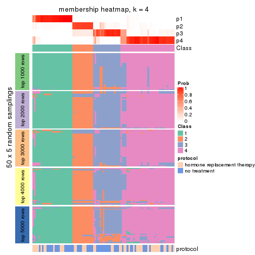
membership_heatmap(res, k = 5)
membership_heatmap(res, k = 6)
As soon as we have had the classes for columns, we can look for signatures which are significantly different between classes which can be candidate marks for certain classes. Following are the heatmaps for signatures.
Signature heatmaps where rows are scaled:
get_signatures(res, k = 2)
get_signatures(res, k = 3)
get_signatures(res, k = 4)
get_signatures(res, k = 5)
get_signatures(res, k = 6)
Signature heatmaps where rows are not scaled:
get_signatures(res, k = 2, scale_rows = FALSE)
get_signatures(res, k = 3, scale_rows = FALSE)
get_signatures(res, k = 4, scale_rows = FALSE)

get_signatures(res, k = 5, scale_rows = FALSE)
get_signatures(res, k = 6, scale_rows = FALSE)
Compare the overlap of signatures from different k:
compare_signatures(res)
get_signature() returns a data frame invisibly. TO get the list of signatures, the function
call should be assigned to a variable explicitly. In following code, if plot argument is set
to FALSE, no heatmap is plotted while only the differential analysis is performed.
# code only for demonstration
tb = get_signature(res, k = ..., plot = FALSE)
An example of the output of tb is:
#> which_row fdr mean_1 mean_2 scaled_mean_1 scaled_mean_2 km
#> 1 38 0.042760348 8.373488 9.131774 -0.5533452 0.5164555 1
#> 2 40 0.018707592 7.106213 8.469186 -0.6173731 0.5762149 1
#> 3 55 0.019134737 10.221463 11.207825 -0.6159697 0.5749050 1
#> 4 59 0.006059896 5.921854 7.869574 -0.6899429 0.6439467 1
#> 5 60 0.018055526 8.928898 10.211722 -0.6204761 0.5791110 1
#> 6 98 0.009384629 15.714769 14.887706 0.6635654 -0.6193277 2
...
The columns in tb are:
which_row: row indices corresponding to the input matrix.fdr: FDR for the differential test. mean_x: The mean value in group x.scaled_mean_x: The mean value in group x after rows are scaled.km: Row groups if k-means clustering is applied to rows.UMAP plot which shows how samples are separated.
dimension_reduction(res, k = 2, method = "UMAP")
dimension_reduction(res, k = 3, method = "UMAP")
dimension_reduction(res, k = 4, method = "UMAP")
dimension_reduction(res, k = 5, method = "UMAP")
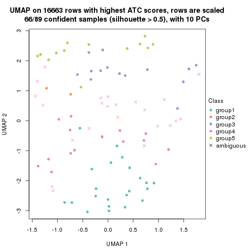
dimension_reduction(res, k = 6, method = "UMAP")
Following heatmap shows how subgroups are split when increasing k:
collect_classes(res)
Test correlation between subgroups and known annotations. If the known annotation is numeric, one-way ANOVA test is applied, and if the known annotation is discrete, chi-squared contingency table test is applied.
test_to_known_factors(res)
#> n protocol(p) k
#> ATC:kmeans 88 0.1299 2
#> ATC:kmeans 89 0.1098 3
#> ATC:kmeans 83 0.1300 4
#> ATC:kmeans 66 0.1935 5
#> ATC:kmeans 65 0.0397 6
If matrix rows can be associated to genes, consider to use functional_enrichment(res,
...) to perform function enrichment for the signature genes. See this vignette for more detailed explanations.
The object with results only for a single top-value method and a single partition method can be extracted as:
res = res_list["ATC", "skmeans"]
# you can also extract it by
# res = res_list["ATC:skmeans"]
A summary of res and all the functions that can be applied to it:
res
#> A 'ConsensusPartition' object with k = 2, 3, 4, 5, 6.
#> On a matrix with 16663 rows and 89 columns.
#> Top rows (1000, 2000, 3000, 4000, 5000) are extracted by 'ATC' method.
#> Subgroups are detected by 'skmeans' method.
#> Performed in total 1250 partitions by row resampling.
#> Best k for subgroups seems to be 4.
#>
#> Following methods can be applied to this 'ConsensusPartition' object:
#> [1] "cola_report" "collect_classes" "collect_plots"
#> [4] "collect_stats" "colnames" "compare_signatures"
#> [7] "consensus_heatmap" "dimension_reduction" "functional_enrichment"
#> [10] "get_anno_col" "get_anno" "get_classes"
#> [13] "get_consensus" "get_matrix" "get_membership"
#> [16] "get_param" "get_signatures" "get_stats"
#> [19] "is_best_k" "is_stable_k" "membership_heatmap"
#> [22] "ncol" "nrow" "plot_ecdf"
#> [25] "rownames" "select_partition_number" "show"
#> [28] "suggest_best_k" "test_to_known_factors"
collect_plots() function collects all the plots made from res for all k (number of partitions)
into one single page to provide an easy and fast comparison between different k.
collect_plots(res)

The plots are:
k and the heatmap of
predicted classes for each k.k.k.k.All the plots in panels can be made by individual functions and they are plotted later in this section.
select_partition_number() produces several plots showing different
statistics for choosing “optimized” k. There are following statistics:
k;k, the area increased is defined as \(A_k - A_{k-1}\).The detailed explanations of these statistics can be found in the cola vignette.
Generally speaking, lower PAC score, higher mean silhouette score or higher
concordance corresponds to better partition. Rand index and Jaccard index
measure how similar the current partition is compared to partition with k-1.
If they are too similar, we won't accept k is better than k-1.
select_partition_number(res)
The numeric values for all these statistics can be obtained by get_stats().
get_stats(res)
#> k 1-PAC mean_silhouette concordance area_increased Rand Jaccard
#> 2 2 1.000 0.984 0.993 0.4999 0.502 0.502
#> 3 3 0.985 0.941 0.973 0.2294 0.862 0.731
#> 4 4 0.921 0.881 0.941 0.1015 0.929 0.819
#> 5 5 0.740 0.696 0.849 0.0681 0.962 0.888
#> 6 6 0.706 0.592 0.773 0.0587 0.916 0.739
suggest_best_k() suggests the best \(k\) based on these statistics. The rules are as follows:
suggest_best_k(res)
#> [1] 4
#> attr(,"optional")
#> [1] 2 3
There is also optional best \(k\) = 2 3 that is worth to check.
Following shows the table of the partitions (You need to click the show/hide
code output link to see it). The membership matrix (columns with name p*)
is inferred by
clue::cl_consensus()
function with the SE method. Basically the value in the membership matrix
represents the probability to belong to a certain group. The finall class
label for an item is determined with the group with highest probability it
belongs to.
In get_classes() function, the entropy is calculated from the membership
matrix and the silhouette score is calculated from the consensus matrix.
cbind(get_classes(res, k = 2), get_membership(res, k = 2))
#> class entropy silhouette p1 p2
#> GSM78921 1 0.0000 0.987 1.000 0.000
#> GSM78922 1 0.0000 0.987 1.000 0.000
#> GSM78923 2 0.0000 0.999 0.000 1.000
#> GSM78924 2 0.0000 0.999 0.000 1.000
#> GSM78925 2 0.0000 0.999 0.000 1.000
#> GSM78926 1 0.0000 0.987 1.000 0.000
#> GSM78927 1 0.0000 0.987 1.000 0.000
#> GSM78928 2 0.0000 0.999 0.000 1.000
#> GSM78929 2 0.0000 0.999 0.000 1.000
#> GSM78930 1 0.2948 0.941 0.948 0.052
#> GSM78931 2 0.0000 0.999 0.000 1.000
#> GSM78932 2 0.0000 0.999 0.000 1.000
#> GSM78933 1 0.0000 0.987 1.000 0.000
#> GSM78934 2 0.0000 0.999 0.000 1.000
#> GSM78935 1 0.0000 0.987 1.000 0.000
#> GSM78936 1 0.0000 0.987 1.000 0.000
#> GSM78937 1 0.0000 0.987 1.000 0.000
#> GSM78938 1 0.0000 0.987 1.000 0.000
#> GSM78939 1 0.0000 0.987 1.000 0.000
#> GSM78940 2 0.0000 0.999 0.000 1.000
#> GSM78941 2 0.0000 0.999 0.000 1.000
#> GSM78942 2 0.0000 0.999 0.000 1.000
#> GSM78943 1 0.0000 0.987 1.000 0.000
#> GSM78944 1 0.0000 0.987 1.000 0.000
#> GSM78945 1 0.0000 0.987 1.000 0.000
#> GSM78946 1 0.0000 0.987 1.000 0.000
#> GSM78947 2 0.0000 0.999 0.000 1.000
#> GSM78948 1 0.0000 0.987 1.000 0.000
#> GSM78949 1 0.0000 0.987 1.000 0.000
#> GSM78950 1 0.0000 0.987 1.000 0.000
#> GSM78951 1 0.3733 0.921 0.928 0.072
#> GSM78952 2 0.0000 0.999 0.000 1.000
#> GSM78953 2 0.0000 0.999 0.000 1.000
#> GSM78954 2 0.0000 0.999 0.000 1.000
#> GSM78955 2 0.0000 0.999 0.000 1.000
#> GSM78956 2 0.0000 0.999 0.000 1.000
#> GSM78957 2 0.0000 0.999 0.000 1.000
#> GSM78958 1 0.0000 0.987 1.000 0.000
#> GSM78959 1 0.0000 0.987 1.000 0.000
#> GSM78960 2 0.0000 0.999 0.000 1.000
#> GSM78961 2 0.0000 0.999 0.000 1.000
#> GSM78962 1 0.0000 0.987 1.000 0.000
#> GSM78963 2 0.0000 0.999 0.000 1.000
#> GSM78964 2 0.0000 0.999 0.000 1.000
#> GSM78965 2 0.0000 0.999 0.000 1.000
#> GSM78966 1 0.0000 0.987 1.000 0.000
#> GSM78967 1 0.0000 0.987 1.000 0.000
#> GSM78879 1 0.0000 0.987 1.000 0.000
#> GSM78880 1 0.0000 0.987 1.000 0.000
#> GSM78881 1 0.0000 0.987 1.000 0.000
#> GSM78882 1 0.0000 0.987 1.000 0.000
#> GSM78883 1 0.0000 0.987 1.000 0.000
#> GSM78884 1 0.0000 0.987 1.000 0.000
#> GSM78885 1 0.0000 0.987 1.000 0.000
#> GSM78886 2 0.0000 0.999 0.000 1.000
#> GSM78887 1 0.0000 0.987 1.000 0.000
#> GSM78888 1 0.0000 0.987 1.000 0.000
#> GSM78889 2 0.0000 0.999 0.000 1.000
#> GSM78890 1 0.9000 0.544 0.684 0.316
#> GSM78891 1 0.0000 0.987 1.000 0.000
#> GSM78892 2 0.0000 0.999 0.000 1.000
#> GSM78893 2 0.0000 0.999 0.000 1.000
#> GSM78894 1 0.0000 0.987 1.000 0.000
#> GSM78895 2 0.0000 0.999 0.000 1.000
#> GSM78896 1 0.0000 0.987 1.000 0.000
#> GSM78897 1 0.0000 0.987 1.000 0.000
#> GSM78898 1 0.0000 0.987 1.000 0.000
#> GSM78899 1 0.0000 0.987 1.000 0.000
#> GSM78900 1 0.0000 0.987 1.000 0.000
#> GSM78901 1 0.0000 0.987 1.000 0.000
#> GSM78902 2 0.0000 0.999 0.000 1.000
#> GSM78903 2 0.0000 0.999 0.000 1.000
#> GSM78904 2 0.0672 0.992 0.008 0.992
#> GSM78905 2 0.0000 0.999 0.000 1.000
#> GSM78906 2 0.0000 0.999 0.000 1.000
#> GSM78907 1 0.0000 0.987 1.000 0.000
#> GSM78908 1 0.5519 0.856 0.872 0.128
#> GSM78909 2 0.0000 0.999 0.000 1.000
#> GSM78910 1 0.0000 0.987 1.000 0.000
#> GSM78911 2 0.0000 0.999 0.000 1.000
#> GSM78912 1 0.0000 0.987 1.000 0.000
#> GSM78913 2 0.0000 0.999 0.000 1.000
#> GSM78914 2 0.1184 0.984 0.016 0.984
#> GSM78915 2 0.0000 0.999 0.000 1.000
#> GSM78916 2 0.0000 0.999 0.000 1.000
#> GSM78917 1 0.0000 0.987 1.000 0.000
#> GSM78918 1 0.0000 0.987 1.000 0.000
#> GSM78919 1 0.0000 0.987 1.000 0.000
#> GSM78920 1 0.3733 0.920 0.928 0.072
cbind(get_classes(res, k = 3), get_membership(res, k = 3))
#> class entropy silhouette p1 p2 p3
#> GSM78921 1 0.0000 0.984 1.000 0.000 0.000
#> GSM78922 1 0.0000 0.984 1.000 0.000 0.000
#> GSM78923 2 0.0000 0.974 0.000 1.000 0.000
#> GSM78924 2 0.0592 0.972 0.000 0.988 0.012
#> GSM78925 2 0.0592 0.972 0.000 0.988 0.012
#> GSM78926 1 0.0000 0.984 1.000 0.000 0.000
#> GSM78927 1 0.0000 0.984 1.000 0.000 0.000
#> GSM78928 2 0.0424 0.970 0.000 0.992 0.008
#> GSM78929 2 0.0592 0.972 0.000 0.988 0.012
#> GSM78930 3 0.0237 0.909 0.000 0.004 0.996
#> GSM78931 2 0.1411 0.955 0.000 0.964 0.036
#> GSM78932 2 0.0592 0.972 0.000 0.988 0.012
#> GSM78933 1 0.0000 0.984 1.000 0.000 0.000
#> GSM78934 2 0.0000 0.974 0.000 1.000 0.000
#> GSM78935 1 0.0000 0.984 1.000 0.000 0.000
#> GSM78936 1 0.1860 0.939 0.948 0.000 0.052
#> GSM78937 1 0.0000 0.984 1.000 0.000 0.000
#> GSM78938 1 0.0000 0.984 1.000 0.000 0.000
#> GSM78939 1 0.0000 0.984 1.000 0.000 0.000
#> GSM78940 2 0.0237 0.972 0.000 0.996 0.004
#> GSM78941 2 0.0000 0.974 0.000 1.000 0.000
#> GSM78942 2 0.0592 0.972 0.000 0.988 0.012
#> GSM78943 1 0.0000 0.984 1.000 0.000 0.000
#> GSM78944 1 0.0000 0.984 1.000 0.000 0.000
#> GSM78945 1 0.0000 0.984 1.000 0.000 0.000
#> GSM78946 1 0.0000 0.984 1.000 0.000 0.000
#> GSM78947 2 0.0592 0.972 0.000 0.988 0.012
#> GSM78948 1 0.0000 0.984 1.000 0.000 0.000
#> GSM78949 1 0.0000 0.984 1.000 0.000 0.000
#> GSM78950 1 0.2096 0.935 0.944 0.004 0.052
#> GSM78951 3 0.0424 0.908 0.008 0.000 0.992
#> GSM78952 2 0.0000 0.974 0.000 1.000 0.000
#> GSM78953 2 0.0000 0.974 0.000 1.000 0.000
#> GSM78954 2 0.4555 0.738 0.000 0.800 0.200
#> GSM78955 2 0.0000 0.974 0.000 1.000 0.000
#> GSM78956 2 0.0000 0.974 0.000 1.000 0.000
#> GSM78957 2 0.0000 0.974 0.000 1.000 0.000
#> GSM78958 1 0.1860 0.939 0.948 0.000 0.052
#> GSM78959 1 0.0000 0.984 1.000 0.000 0.000
#> GSM78960 3 0.5706 0.525 0.000 0.320 0.680
#> GSM78961 2 0.0592 0.972 0.000 0.988 0.012
#> GSM78962 1 0.0424 0.978 0.992 0.000 0.008
#> GSM78963 2 0.0592 0.972 0.000 0.988 0.012
#> GSM78964 2 0.0592 0.972 0.000 0.988 0.012
#> GSM78965 3 0.1860 0.895 0.000 0.052 0.948
#> GSM78966 1 0.0000 0.984 1.000 0.000 0.000
#> GSM78967 1 0.0000 0.984 1.000 0.000 0.000
#> GSM78879 1 0.0000 0.984 1.000 0.000 0.000
#> GSM78880 1 0.0000 0.984 1.000 0.000 0.000
#> GSM78881 1 0.0000 0.984 1.000 0.000 0.000
#> GSM78882 1 0.0000 0.984 1.000 0.000 0.000
#> GSM78883 1 0.0237 0.981 0.996 0.000 0.004
#> GSM78884 1 0.0237 0.981 0.996 0.000 0.004
#> GSM78885 1 0.0000 0.984 1.000 0.000 0.000
#> GSM78886 2 0.0000 0.974 0.000 1.000 0.000
#> GSM78887 1 0.0237 0.981 0.996 0.000 0.004
#> GSM78888 1 0.0000 0.984 1.000 0.000 0.000
#> GSM78889 2 0.0592 0.972 0.000 0.988 0.012
#> GSM78890 3 0.2096 0.891 0.052 0.004 0.944
#> GSM78891 1 0.0000 0.984 1.000 0.000 0.000
#> GSM78892 2 0.5882 0.442 0.000 0.652 0.348
#> GSM78893 2 0.0000 0.974 0.000 1.000 0.000
#> GSM78894 1 0.0000 0.984 1.000 0.000 0.000
#> GSM78895 2 0.0000 0.974 0.000 1.000 0.000
#> GSM78896 1 0.0237 0.981 0.996 0.000 0.004
#> GSM78897 3 0.5465 0.607 0.288 0.000 0.712
#> GSM78898 1 0.0000 0.984 1.000 0.000 0.000
#> GSM78899 1 0.0237 0.981 0.996 0.000 0.004
#> GSM78900 3 0.0000 0.908 0.000 0.000 1.000
#> GSM78901 1 0.0000 0.984 1.000 0.000 0.000
#> GSM78902 3 0.0424 0.909 0.000 0.008 0.992
#> GSM78903 2 0.0000 0.974 0.000 1.000 0.000
#> GSM78904 2 0.1753 0.933 0.000 0.952 0.048
#> GSM78905 3 0.1860 0.895 0.000 0.052 0.948
#> GSM78906 2 0.0000 0.974 0.000 1.000 0.000
#> GSM78907 3 0.3879 0.802 0.152 0.000 0.848
#> GSM78908 3 0.0424 0.908 0.008 0.000 0.992
#> GSM78909 2 0.0000 0.974 0.000 1.000 0.000
#> GSM78910 1 0.0000 0.984 1.000 0.000 0.000
#> GSM78911 2 0.0000 0.974 0.000 1.000 0.000
#> GSM78912 1 0.0237 0.981 0.996 0.000 0.004
#> GSM78913 2 0.0592 0.972 0.000 0.988 0.012
#> GSM78914 3 0.0424 0.909 0.000 0.008 0.992
#> GSM78915 3 0.1860 0.895 0.000 0.052 0.948
#> GSM78916 2 0.0000 0.974 0.000 1.000 0.000
#> GSM78917 1 0.0000 0.984 1.000 0.000 0.000
#> GSM78918 1 0.0000 0.984 1.000 0.000 0.000
#> GSM78919 1 0.0000 0.984 1.000 0.000 0.000
#> GSM78920 1 0.7841 0.317 0.576 0.360 0.064
cbind(get_classes(res, k = 4), get_membership(res, k = 4))
#> class entropy silhouette p1 p2 p3 p4
#> GSM78921 1 0.0000 0.9734 1.000 0.000 0.000 0.000
#> GSM78922 1 0.0000 0.9734 1.000 0.000 0.000 0.000
#> GSM78923 2 0.0188 0.9507 0.000 0.996 0.000 0.004
#> GSM78924 2 0.1474 0.9323 0.000 0.948 0.052 0.000
#> GSM78925 2 0.1474 0.9323 0.000 0.948 0.052 0.000
#> GSM78926 1 0.0000 0.9734 1.000 0.000 0.000 0.000
#> GSM78927 1 0.0000 0.9734 1.000 0.000 0.000 0.000
#> GSM78928 2 0.1629 0.9254 0.000 0.952 0.024 0.024
#> GSM78929 2 0.2125 0.9109 0.000 0.920 0.076 0.004
#> GSM78930 3 0.2011 0.7616 0.000 0.000 0.920 0.080
#> GSM78931 2 0.3853 0.7919 0.000 0.820 0.020 0.160
#> GSM78932 2 0.1118 0.9421 0.000 0.964 0.036 0.000
#> GSM78933 1 0.0000 0.9734 1.000 0.000 0.000 0.000
#> GSM78934 2 0.0188 0.9507 0.000 0.996 0.000 0.004
#> GSM78935 1 0.0000 0.9734 1.000 0.000 0.000 0.000
#> GSM78936 4 0.2401 0.8042 0.092 0.000 0.004 0.904
#> GSM78937 1 0.0000 0.9734 1.000 0.000 0.000 0.000
#> GSM78938 1 0.1302 0.9508 0.956 0.000 0.000 0.044
#> GSM78939 1 0.0000 0.9734 1.000 0.000 0.000 0.000
#> GSM78940 2 0.4500 0.5306 0.000 0.684 0.000 0.316
#> GSM78941 2 0.0188 0.9507 0.000 0.996 0.000 0.004
#> GSM78942 2 0.0707 0.9487 0.000 0.980 0.020 0.000
#> GSM78943 1 0.0000 0.9734 1.000 0.000 0.000 0.000
#> GSM78944 1 0.1302 0.9508 0.956 0.000 0.000 0.044
#> GSM78945 1 0.0469 0.9694 0.988 0.000 0.000 0.012
#> GSM78946 1 0.0336 0.9711 0.992 0.000 0.000 0.008
#> GSM78947 2 0.1302 0.9375 0.000 0.956 0.044 0.000
#> GSM78948 1 0.0000 0.9734 1.000 0.000 0.000 0.000
#> GSM78949 1 0.1302 0.9508 0.956 0.000 0.000 0.044
#> GSM78950 4 0.2888 0.7754 0.124 0.000 0.004 0.872
#> GSM78951 3 0.3764 0.6494 0.000 0.000 0.784 0.216
#> GSM78952 2 0.0592 0.9495 0.000 0.984 0.016 0.000
#> GSM78953 2 0.0469 0.9502 0.000 0.988 0.012 0.000
#> GSM78954 2 0.4877 0.2879 0.000 0.592 0.408 0.000
#> GSM78955 2 0.0188 0.9507 0.000 0.996 0.000 0.004
#> GSM78956 2 0.0188 0.9507 0.000 0.996 0.000 0.004
#> GSM78957 2 0.0000 0.9510 0.000 1.000 0.000 0.000
#> GSM78958 4 0.2530 0.8009 0.100 0.000 0.004 0.896
#> GSM78959 1 0.0000 0.9734 1.000 0.000 0.000 0.000
#> GSM78960 3 0.4164 0.5124 0.000 0.264 0.736 0.000
#> GSM78961 2 0.0707 0.9487 0.000 0.980 0.020 0.000
#> GSM78962 1 0.0707 0.9631 0.980 0.000 0.000 0.020
#> GSM78963 2 0.0817 0.9476 0.000 0.976 0.024 0.000
#> GSM78964 2 0.0707 0.9487 0.000 0.980 0.020 0.000
#> GSM78965 3 0.0188 0.7832 0.000 0.004 0.996 0.000
#> GSM78966 1 0.0336 0.9711 0.992 0.000 0.000 0.008
#> GSM78967 1 0.0000 0.9734 1.000 0.000 0.000 0.000
#> GSM78879 1 0.0000 0.9734 1.000 0.000 0.000 0.000
#> GSM78880 1 0.0000 0.9734 1.000 0.000 0.000 0.000
#> GSM78881 1 0.0188 0.9722 0.996 0.000 0.000 0.004
#> GSM78882 1 0.0000 0.9734 1.000 0.000 0.000 0.000
#> GSM78883 1 0.0469 0.9676 0.988 0.000 0.000 0.012
#> GSM78884 1 0.0707 0.9632 0.980 0.000 0.000 0.020
#> GSM78885 1 0.0000 0.9734 1.000 0.000 0.000 0.000
#> GSM78886 2 0.0188 0.9507 0.000 0.996 0.000 0.004
#> GSM78887 1 0.4331 0.5863 0.712 0.000 0.000 0.288
#> GSM78888 1 0.0000 0.9734 1.000 0.000 0.000 0.000
#> GSM78889 2 0.0817 0.9476 0.000 0.976 0.024 0.000
#> GSM78890 3 0.2635 0.7296 0.020 0.000 0.904 0.076
#> GSM78891 1 0.1302 0.9508 0.956 0.000 0.000 0.044
#> GSM78892 3 0.7784 0.0694 0.000 0.364 0.392 0.244
#> GSM78893 2 0.0188 0.9507 0.000 0.996 0.000 0.004
#> GSM78894 1 0.1389 0.9483 0.952 0.000 0.000 0.048
#> GSM78895 2 0.0000 0.9510 0.000 1.000 0.000 0.000
#> GSM78896 1 0.0469 0.9682 0.988 0.000 0.000 0.012
#> GSM78897 4 0.5565 0.5929 0.056 0.000 0.260 0.684
#> GSM78898 1 0.1302 0.9508 0.956 0.000 0.000 0.044
#> GSM78899 1 0.2345 0.8859 0.900 0.000 0.000 0.100
#> GSM78900 3 0.2704 0.7369 0.000 0.000 0.876 0.124
#> GSM78901 1 0.3074 0.8432 0.848 0.000 0.000 0.152
#> GSM78902 3 0.4352 0.7133 0.000 0.080 0.816 0.104
#> GSM78903 2 0.0188 0.9507 0.000 0.996 0.000 0.004
#> GSM78904 4 0.2345 0.7364 0.000 0.100 0.000 0.900
#> GSM78905 3 0.1356 0.7725 0.000 0.008 0.960 0.032
#> GSM78906 2 0.0000 0.9510 0.000 1.000 0.000 0.000
#> GSM78907 4 0.4019 0.6951 0.012 0.000 0.196 0.792
#> GSM78908 4 0.3444 0.7013 0.000 0.000 0.184 0.816
#> GSM78909 2 0.0188 0.9507 0.000 0.996 0.000 0.004
#> GSM78910 1 0.0000 0.9734 1.000 0.000 0.000 0.000
#> GSM78911 2 0.0188 0.9509 0.000 0.996 0.004 0.000
#> GSM78912 1 0.0592 0.9655 0.984 0.000 0.000 0.016
#> GSM78913 2 0.0817 0.9476 0.000 0.976 0.024 0.000
#> GSM78914 3 0.0592 0.7827 0.000 0.000 0.984 0.016
#> GSM78915 3 0.0188 0.7832 0.000 0.004 0.996 0.000
#> GSM78916 2 0.0188 0.9507 0.000 0.996 0.000 0.004
#> GSM78917 1 0.0000 0.9734 1.000 0.000 0.000 0.000
#> GSM78918 1 0.1302 0.9508 0.956 0.000 0.000 0.044
#> GSM78919 1 0.0336 0.9711 0.992 0.000 0.000 0.008
#> GSM78920 4 0.2474 0.7731 0.008 0.016 0.056 0.920
cbind(get_classes(res, k = 5), get_membership(res, k = 5))
#> class entropy silhouette p1 p2 p3 p4 p5
#> GSM78921 1 0.0000 0.8733 1.000 0.000 0.000 0.000 0.000
#> GSM78922 1 0.0000 0.8733 1.000 0.000 0.000 0.000 0.000
#> GSM78923 5 0.3354 0.8356 0.000 0.068 0.000 0.088 0.844
#> GSM78924 5 0.1992 0.8377 0.000 0.044 0.032 0.000 0.924
#> GSM78925 5 0.2067 0.8351 0.000 0.048 0.032 0.000 0.920
#> GSM78926 1 0.0000 0.8733 1.000 0.000 0.000 0.000 0.000
#> GSM78927 1 0.0162 0.8720 0.996 0.004 0.000 0.000 0.000
#> GSM78928 5 0.5956 0.6160 0.000 0.256 0.016 0.112 0.616
#> GSM78929 5 0.3769 0.7120 0.000 0.180 0.032 0.000 0.788
#> GSM78930 3 0.1648 0.6090 0.000 0.040 0.940 0.020 0.000
#> GSM78931 5 0.3651 0.7300 0.000 0.004 0.028 0.160 0.808
#> GSM78932 5 0.1300 0.8537 0.000 0.016 0.028 0.000 0.956
#> GSM78933 1 0.0000 0.8733 1.000 0.000 0.000 0.000 0.000
#> GSM78934 5 0.3410 0.8341 0.000 0.068 0.000 0.092 0.840
#> GSM78935 1 0.0000 0.8733 1.000 0.000 0.000 0.000 0.000
#> GSM78936 4 0.2727 0.4480 0.080 0.012 0.020 0.888 0.000
#> GSM78937 1 0.0290 0.8711 0.992 0.008 0.000 0.000 0.000
#> GSM78938 1 0.4046 0.6257 0.696 0.296 0.000 0.008 0.000
#> GSM78939 1 0.0000 0.8733 1.000 0.000 0.000 0.000 0.000
#> GSM78940 5 0.6431 0.2247 0.000 0.176 0.000 0.388 0.436
#> GSM78941 5 0.3918 0.8165 0.000 0.100 0.000 0.096 0.804
#> GSM78942 5 0.0794 0.8585 0.000 0.000 0.028 0.000 0.972
#> GSM78943 1 0.0000 0.8733 1.000 0.000 0.000 0.000 0.000
#> GSM78944 1 0.3861 0.6443 0.712 0.284 0.000 0.004 0.000
#> GSM78945 1 0.2536 0.7968 0.868 0.128 0.000 0.004 0.000
#> GSM78946 1 0.1571 0.8444 0.936 0.060 0.000 0.004 0.000
#> GSM78947 5 0.1753 0.8449 0.000 0.032 0.032 0.000 0.936
#> GSM78948 1 0.0000 0.8733 1.000 0.000 0.000 0.000 0.000
#> GSM78949 1 0.3814 0.6531 0.720 0.276 0.000 0.004 0.000
#> GSM78950 4 0.3858 0.5079 0.156 0.016 0.024 0.804 0.000
#> GSM78951 3 0.1809 0.6003 0.000 0.012 0.928 0.060 0.000
#> GSM78952 5 0.0290 0.8619 0.000 0.000 0.008 0.000 0.992
#> GSM78953 5 0.0000 0.8627 0.000 0.000 0.000 0.000 1.000
#> GSM78954 5 0.4424 0.6091 0.000 0.048 0.224 0.000 0.728
#> GSM78955 5 0.4022 0.8118 0.000 0.104 0.000 0.100 0.796
#> GSM78956 5 0.3410 0.8341 0.000 0.068 0.000 0.092 0.840
#> GSM78957 5 0.1579 0.8618 0.000 0.024 0.000 0.032 0.944
#> GSM78958 4 0.2984 0.4990 0.124 0.004 0.016 0.856 0.000
#> GSM78959 1 0.0000 0.8733 1.000 0.000 0.000 0.000 0.000
#> GSM78960 3 0.5243 0.1545 0.000 0.048 0.540 0.000 0.412
#> GSM78961 5 0.0794 0.8585 0.000 0.000 0.028 0.000 0.972
#> GSM78962 1 0.2929 0.7215 0.840 0.008 0.000 0.152 0.000
#> GSM78963 5 0.1300 0.8537 0.000 0.016 0.028 0.000 0.956
#> GSM78964 5 0.0865 0.8588 0.000 0.004 0.024 0.000 0.972
#> GSM78965 3 0.4369 0.4337 0.000 0.208 0.740 0.000 0.052
#> GSM78966 1 0.1892 0.8322 0.916 0.080 0.000 0.004 0.000
#> GSM78967 1 0.0000 0.8733 1.000 0.000 0.000 0.000 0.000
#> GSM78879 1 0.0000 0.8733 1.000 0.000 0.000 0.000 0.000
#> GSM78880 1 0.0000 0.8733 1.000 0.000 0.000 0.000 0.000
#> GSM78881 1 0.0404 0.8686 0.988 0.012 0.000 0.000 0.000
#> GSM78882 1 0.0162 0.8720 0.996 0.004 0.000 0.000 0.000
#> GSM78883 1 0.2462 0.7743 0.880 0.008 0.000 0.112 0.000
#> GSM78884 1 0.3318 0.6788 0.808 0.012 0.000 0.180 0.000
#> GSM78885 1 0.0000 0.8733 1.000 0.000 0.000 0.000 0.000
#> GSM78886 5 0.4022 0.8113 0.000 0.104 0.000 0.100 0.796
#> GSM78887 4 0.4894 0.2547 0.456 0.024 0.000 0.520 0.000
#> GSM78888 1 0.0000 0.8733 1.000 0.000 0.000 0.000 0.000
#> GSM78889 5 0.1399 0.8522 0.000 0.020 0.028 0.000 0.952
#> GSM78890 2 0.3242 0.4839 0.012 0.816 0.172 0.000 0.000
#> GSM78891 1 0.3861 0.6443 0.712 0.284 0.000 0.004 0.000
#> GSM78892 2 0.5056 0.5720 0.000 0.752 0.040 0.108 0.100
#> GSM78893 5 0.3759 0.8230 0.000 0.092 0.000 0.092 0.816
#> GSM78894 1 0.4067 0.6206 0.692 0.300 0.000 0.008 0.000
#> GSM78895 5 0.1310 0.8633 0.000 0.024 0.000 0.020 0.956
#> GSM78896 1 0.1851 0.8067 0.912 0.000 0.000 0.088 0.000
#> GSM78897 2 0.5723 0.5623 0.040 0.640 0.052 0.268 0.000
#> GSM78898 1 0.3861 0.6443 0.712 0.284 0.000 0.004 0.000
#> GSM78899 1 0.4517 -0.0772 0.556 0.008 0.000 0.436 0.000
#> GSM78900 3 0.1041 0.6128 0.000 0.004 0.964 0.032 0.000
#> GSM78901 4 0.6800 0.1959 0.344 0.292 0.000 0.364 0.000
#> GSM78902 3 0.1588 0.6140 0.000 0.008 0.948 0.028 0.016
#> GSM78903 5 0.3471 0.8324 0.000 0.072 0.000 0.092 0.836
#> GSM78904 4 0.2915 0.1420 0.000 0.116 0.000 0.860 0.024
#> GSM78905 2 0.5808 0.0926 0.000 0.512 0.392 0.000 0.096
#> GSM78906 5 0.1493 0.8625 0.000 0.024 0.000 0.028 0.948
#> GSM78907 3 0.7114 -0.1663 0.016 0.248 0.400 0.336 0.000
#> GSM78908 3 0.4811 0.1704 0.008 0.008 0.512 0.472 0.000
#> GSM78909 5 0.2074 0.8575 0.000 0.036 0.000 0.044 0.920
#> GSM78910 1 0.0451 0.8697 0.988 0.008 0.000 0.004 0.000
#> GSM78911 5 0.1117 0.8639 0.000 0.016 0.000 0.020 0.964
#> GSM78912 1 0.1965 0.7978 0.904 0.000 0.000 0.096 0.000
#> GSM78913 5 0.1300 0.8537 0.000 0.016 0.028 0.000 0.956
#> GSM78914 3 0.1557 0.5975 0.000 0.052 0.940 0.000 0.008
#> GSM78915 3 0.5227 0.3623 0.000 0.208 0.676 0.000 0.116
#> GSM78916 5 0.4022 0.8113 0.000 0.104 0.000 0.100 0.796
#> GSM78917 1 0.0000 0.8733 1.000 0.000 0.000 0.000 0.000
#> GSM78918 1 0.3790 0.6594 0.724 0.272 0.000 0.004 0.000
#> GSM78919 1 0.1952 0.8297 0.912 0.084 0.000 0.004 0.000
#> GSM78920 2 0.4800 0.3666 0.008 0.528 0.008 0.456 0.000
cbind(get_classes(res, k = 6), get_membership(res, k = 6))
#> class entropy silhouette p1 p2 p3 p4 p5 p6
#> GSM78921 1 0.0146 0.8237 0.996 0.000 0.000 0.004 0.000 0.000
#> GSM78922 1 0.0000 0.8240 1.000 0.000 0.000 0.000 0.000 0.000
#> GSM78923 2 0.3851 0.6876 0.000 0.540 0.000 0.000 0.460 0.000
#> GSM78924 5 0.0820 0.7010 0.000 0.016 0.000 0.000 0.972 0.012
#> GSM78925 5 0.1003 0.6965 0.000 0.016 0.000 0.000 0.964 0.020
#> GSM78926 1 0.0363 0.8224 0.988 0.000 0.000 0.012 0.000 0.000
#> GSM78927 1 0.1780 0.8004 0.932 0.028 0.000 0.028 0.000 0.012
#> GSM78928 2 0.4450 0.6024 0.000 0.744 0.016 0.004 0.160 0.076
#> GSM78929 5 0.2250 0.6432 0.000 0.040 0.000 0.000 0.896 0.064
#> GSM78930 3 0.2000 0.6950 0.000 0.032 0.916 0.004 0.000 0.048
#> GSM78931 5 0.3458 0.6129 0.000 0.044 0.012 0.128 0.816 0.000
#> GSM78932 5 0.0000 0.7096 0.000 0.000 0.000 0.000 1.000 0.000
#> GSM78933 1 0.0146 0.8242 0.996 0.000 0.000 0.000 0.000 0.004
#> GSM78934 2 0.3838 0.7154 0.000 0.552 0.000 0.000 0.448 0.000
#> GSM78935 1 0.0000 0.8240 1.000 0.000 0.000 0.000 0.000 0.000
#> GSM78936 4 0.2290 0.4474 0.020 0.040 0.016 0.912 0.000 0.012
#> GSM78937 1 0.0713 0.8211 0.972 0.000 0.000 0.000 0.000 0.028
#> GSM78938 1 0.4948 0.4113 0.512 0.012 0.000 0.040 0.000 0.436
#> GSM78939 1 0.0922 0.8175 0.968 0.004 0.000 0.024 0.000 0.004
#> GSM78940 2 0.3579 0.6000 0.000 0.808 0.000 0.064 0.120 0.008
#> GSM78941 2 0.3563 0.7851 0.000 0.664 0.000 0.000 0.336 0.000
#> GSM78942 5 0.1970 0.6740 0.000 0.092 0.000 0.008 0.900 0.000
#> GSM78943 1 0.0146 0.8242 0.996 0.000 0.000 0.000 0.000 0.004
#> GSM78944 1 0.3782 0.5122 0.588 0.000 0.000 0.000 0.000 0.412
#> GSM78945 1 0.2562 0.7411 0.828 0.000 0.000 0.000 0.000 0.172
#> GSM78946 1 0.1714 0.7949 0.908 0.000 0.000 0.000 0.000 0.092
#> GSM78947 5 0.0820 0.7010 0.000 0.016 0.000 0.000 0.972 0.012
#> GSM78948 1 0.0000 0.8240 1.000 0.000 0.000 0.000 0.000 0.000
#> GSM78949 1 0.3782 0.5122 0.588 0.000 0.000 0.000 0.000 0.412
#> GSM78950 4 0.4315 0.5136 0.076 0.044 0.060 0.796 0.000 0.024
#> GSM78951 3 0.0405 0.7081 0.000 0.004 0.988 0.008 0.000 0.000
#> GSM78952 5 0.2048 0.6447 0.000 0.120 0.000 0.000 0.880 0.000
#> GSM78953 5 0.2219 0.6240 0.000 0.136 0.000 0.000 0.864 0.000
#> GSM78954 5 0.3018 0.6005 0.000 0.016 0.112 0.000 0.848 0.024
#> GSM78955 2 0.3428 0.7850 0.000 0.696 0.000 0.000 0.304 0.000
#> GSM78956 2 0.3828 0.7288 0.000 0.560 0.000 0.000 0.440 0.000
#> GSM78957 5 0.3531 0.1260 0.000 0.328 0.000 0.000 0.672 0.000
#> GSM78958 4 0.3350 0.5141 0.096 0.024 0.024 0.844 0.000 0.012
#> GSM78959 1 0.0146 0.8237 0.996 0.000 0.000 0.004 0.000 0.000
#> GSM78960 5 0.4903 0.2863 0.000 0.028 0.284 0.000 0.644 0.044
#> GSM78961 5 0.1501 0.6857 0.000 0.076 0.000 0.000 0.924 0.000
#> GSM78962 1 0.4095 0.4798 0.708 0.004 0.020 0.260 0.000 0.008
#> GSM78963 5 0.0146 0.7101 0.000 0.004 0.000 0.000 0.996 0.000
#> GSM78964 5 0.1327 0.6930 0.000 0.064 0.000 0.000 0.936 0.000
#> GSM78965 3 0.6333 0.1767 0.000 0.048 0.472 0.000 0.348 0.132
#> GSM78966 1 0.1814 0.7905 0.900 0.000 0.000 0.000 0.000 0.100
#> GSM78967 1 0.0260 0.8242 0.992 0.000 0.000 0.000 0.000 0.008
#> GSM78879 1 0.0260 0.8229 0.992 0.000 0.000 0.008 0.000 0.000
#> GSM78880 1 0.0146 0.8237 0.996 0.000 0.000 0.004 0.000 0.000
#> GSM78881 1 0.2606 0.7806 0.896 0.032 0.008 0.036 0.000 0.028
#> GSM78882 1 0.1874 0.7983 0.928 0.028 0.000 0.028 0.000 0.016
#> GSM78883 1 0.3733 0.6509 0.784 0.028 0.000 0.168 0.000 0.020
#> GSM78884 1 0.4944 0.2458 0.596 0.032 0.000 0.344 0.000 0.028
#> GSM78885 1 0.0458 0.8211 0.984 0.000 0.000 0.016 0.000 0.000
#> GSM78886 2 0.3309 0.7759 0.000 0.720 0.000 0.000 0.280 0.000
#> GSM78887 4 0.4589 0.4641 0.296 0.012 0.004 0.656 0.000 0.032
#> GSM78888 1 0.0405 0.8235 0.988 0.000 0.000 0.008 0.000 0.004
#> GSM78889 5 0.0632 0.7073 0.000 0.024 0.000 0.000 0.976 0.000
#> GSM78890 6 0.3675 0.4271 0.000 0.064 0.052 0.024 0.024 0.836
#> GSM78891 1 0.3782 0.5122 0.588 0.000 0.000 0.000 0.000 0.412
#> GSM78892 6 0.6338 0.4965 0.000 0.184 0.004 0.120 0.104 0.588
#> GSM78893 2 0.3782 0.7551 0.000 0.588 0.000 0.000 0.412 0.000
#> GSM78894 1 0.5465 0.3457 0.476 0.024 0.004 0.052 0.000 0.444
#> GSM78895 5 0.3351 0.2802 0.000 0.288 0.000 0.000 0.712 0.000
#> GSM78896 1 0.2402 0.7225 0.856 0.000 0.000 0.140 0.000 0.004
#> GSM78897 6 0.6549 0.4634 0.028 0.156 0.020 0.256 0.004 0.536
#> GSM78898 1 0.3782 0.5122 0.588 0.000 0.000 0.000 0.000 0.412
#> GSM78899 4 0.4351 0.3549 0.416 0.008 0.000 0.564 0.000 0.012
#> GSM78900 3 0.0653 0.7083 0.000 0.004 0.980 0.012 0.000 0.004
#> GSM78901 6 0.6621 -0.1577 0.160 0.044 0.004 0.388 0.000 0.404
#> GSM78902 3 0.0260 0.7086 0.000 0.000 0.992 0.000 0.008 0.000
#> GSM78903 2 0.3823 0.7344 0.000 0.564 0.000 0.000 0.436 0.000
#> GSM78904 4 0.4932 0.0679 0.000 0.368 0.008 0.576 0.004 0.044
#> GSM78905 6 0.7545 0.1613 0.000 0.112 0.156 0.028 0.272 0.432
#> GSM78906 5 0.3499 0.1608 0.000 0.320 0.000 0.000 0.680 0.000
#> GSM78907 3 0.7451 0.1046 0.016 0.120 0.444 0.228 0.000 0.192
#> GSM78908 3 0.4598 0.3011 0.008 0.020 0.576 0.392 0.000 0.004
#> GSM78909 5 0.3695 -0.1241 0.000 0.376 0.000 0.000 0.624 0.000
#> GSM78910 1 0.0790 0.8197 0.968 0.000 0.000 0.000 0.000 0.032
#> GSM78911 5 0.3244 0.3452 0.000 0.268 0.000 0.000 0.732 0.000
#> GSM78912 1 0.1958 0.7601 0.896 0.000 0.004 0.100 0.000 0.000
#> GSM78913 5 0.0146 0.7101 0.000 0.004 0.000 0.000 0.996 0.000
#> GSM78914 3 0.2681 0.6642 0.000 0.020 0.880 0.000 0.028 0.072
#> GSM78915 5 0.6400 -0.2730 0.000 0.048 0.380 0.000 0.436 0.136
#> GSM78916 2 0.3330 0.7782 0.000 0.716 0.000 0.000 0.284 0.000
#> GSM78917 1 0.0458 0.8235 0.984 0.000 0.000 0.000 0.000 0.016
#> GSM78918 1 0.4267 0.4803 0.564 0.008 0.000 0.008 0.000 0.420
#> GSM78919 1 0.1957 0.7842 0.888 0.000 0.000 0.000 0.000 0.112
#> GSM78920 6 0.6116 0.3869 0.000 0.208 0.004 0.332 0.004 0.452
Heatmaps for the consensus matrix. It visualizes the probability of two samples to be in a same group.
consensus_heatmap(res, k = 2)
consensus_heatmap(res, k = 3)
consensus_heatmap(res, k = 4)
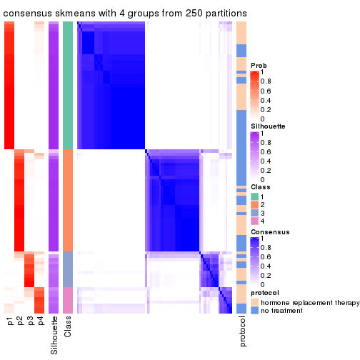
consensus_heatmap(res, k = 5)
consensus_heatmap(res, k = 6)
Heatmaps for the membership of samples in all partitions to see how consistent they are:
membership_heatmap(res, k = 2)
membership_heatmap(res, k = 3)
membership_heatmap(res, k = 4)
membership_heatmap(res, k = 5)
membership_heatmap(res, k = 6)
As soon as we have had the classes for columns, we can look for signatures which are significantly different between classes which can be candidate marks for certain classes. Following are the heatmaps for signatures.
Signature heatmaps where rows are scaled:
get_signatures(res, k = 2)
get_signatures(res, k = 3)

get_signatures(res, k = 4)
get_signatures(res, k = 5)
get_signatures(res, k = 6)
Signature heatmaps where rows are not scaled:
get_signatures(res, k = 2, scale_rows = FALSE)
get_signatures(res, k = 3, scale_rows = FALSE)
get_signatures(res, k = 4, scale_rows = FALSE)
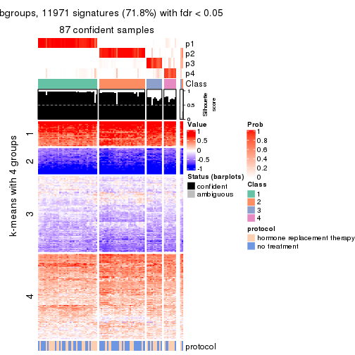
get_signatures(res, k = 5, scale_rows = FALSE)
get_signatures(res, k = 6, scale_rows = FALSE)
Compare the overlap of signatures from different k:
compare_signatures(res)

get_signature() returns a data frame invisibly. TO get the list of signatures, the function
call should be assigned to a variable explicitly. In following code, if plot argument is set
to FALSE, no heatmap is plotted while only the differential analysis is performed.
# code only for demonstration
tb = get_signature(res, k = ..., plot = FALSE)
An example of the output of tb is:
#> which_row fdr mean_1 mean_2 scaled_mean_1 scaled_mean_2 km
#> 1 38 0.042760348 8.373488 9.131774 -0.5533452 0.5164555 1
#> 2 40 0.018707592 7.106213 8.469186 -0.6173731 0.5762149 1
#> 3 55 0.019134737 10.221463 11.207825 -0.6159697 0.5749050 1
#> 4 59 0.006059896 5.921854 7.869574 -0.6899429 0.6439467 1
#> 5 60 0.018055526 8.928898 10.211722 -0.6204761 0.5791110 1
#> 6 98 0.009384629 15.714769 14.887706 0.6635654 -0.6193277 2
...
The columns in tb are:
which_row: row indices corresponding to the input matrix.fdr: FDR for the differential test. mean_x: The mean value in group x.scaled_mean_x: The mean value in group x after rows are scaled.km: Row groups if k-means clustering is applied to rows.UMAP plot which shows how samples are separated.
dimension_reduction(res, k = 2, method = "UMAP")
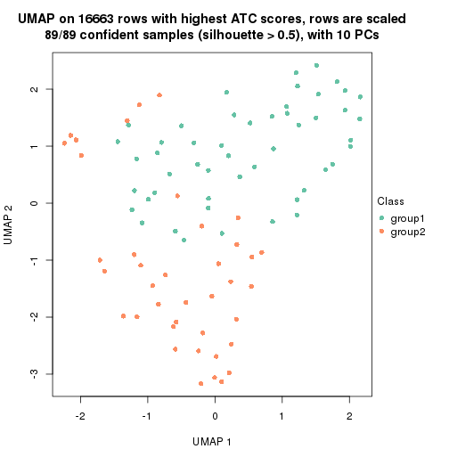
dimension_reduction(res, k = 3, method = "UMAP")
dimension_reduction(res, k = 4, method = "UMAP")
dimension_reduction(res, k = 5, method = "UMAP")
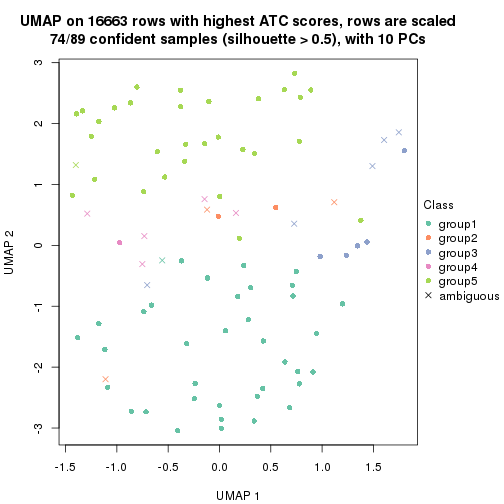
dimension_reduction(res, k = 6, method = "UMAP")
Following heatmap shows how subgroups are split when increasing k:
collect_classes(res)
Test correlation between subgroups and known annotations. If the known annotation is numeric, one-way ANOVA test is applied, and if the known annotation is discrete, chi-squared contingency table test is applied.
test_to_known_factors(res)
#> n protocol(p) k
#> ATC:skmeans 89 0.4151 2
#> ATC:skmeans 87 0.0998 3
#> ATC:skmeans 87 0.2631 4
#> ATC:skmeans 74 0.2494 5
#> ATC:skmeans 64 0.1438 6
If matrix rows can be associated to genes, consider to use functional_enrichment(res,
...) to perform function enrichment for the signature genes. See this vignette for more detailed explanations.
The object with results only for a single top-value method and a single partition method can be extracted as:
res = res_list["ATC", "pam"]
# you can also extract it by
# res = res_list["ATC:pam"]
A summary of res and all the functions that can be applied to it:
res
#> A 'ConsensusPartition' object with k = 2, 3, 4, 5, 6.
#> On a matrix with 16663 rows and 89 columns.
#> Top rows (1000, 2000, 3000, 4000, 5000) are extracted by 'ATC' method.
#> Subgroups are detected by 'pam' method.
#> Performed in total 1250 partitions by row resampling.
#> Best k for subgroups seems to be 3.
#>
#> Following methods can be applied to this 'ConsensusPartition' object:
#> [1] "cola_report" "collect_classes" "collect_plots"
#> [4] "collect_stats" "colnames" "compare_signatures"
#> [7] "consensus_heatmap" "dimension_reduction" "functional_enrichment"
#> [10] "get_anno_col" "get_anno" "get_classes"
#> [13] "get_consensus" "get_matrix" "get_membership"
#> [16] "get_param" "get_signatures" "get_stats"
#> [19] "is_best_k" "is_stable_k" "membership_heatmap"
#> [22] "ncol" "nrow" "plot_ecdf"
#> [25] "rownames" "select_partition_number" "show"
#> [28] "suggest_best_k" "test_to_known_factors"
collect_plots() function collects all the plots made from res for all k (number of partitions)
into one single page to provide an easy and fast comparison between different k.
collect_plots(res)
The plots are:
k and the heatmap of
predicted classes for each k.k.k.k.All the plots in panels can be made by individual functions and they are plotted later in this section.
select_partition_number() produces several plots showing different
statistics for choosing “optimized” k. There are following statistics:
k;k, the area increased is defined as \(A_k - A_{k-1}\).The detailed explanations of these statistics can be found in the cola vignette.
Generally speaking, lower PAC score, higher mean silhouette score or higher
concordance corresponds to better partition. Rand index and Jaccard index
measure how similar the current partition is compared to partition with k-1.
If they are too similar, we won't accept k is better than k-1.
select_partition_number(res)
The numeric values for all these statistics can be obtained by get_stats().
get_stats(res)
#> k 1-PAC mean_silhouette concordance area_increased Rand Jaccard
#> 2 2 0.781 0.885 0.951 0.3852 0.660 0.660
#> 3 3 0.782 0.860 0.938 0.6185 0.692 0.541
#> 4 4 0.750 0.757 0.882 0.1105 0.861 0.654
#> 5 5 0.780 0.711 0.844 0.0868 0.948 0.827
#> 6 6 0.756 0.744 0.856 0.0598 0.950 0.812
suggest_best_k() suggests the best \(k\) based on these statistics. The rules are as follows:
suggest_best_k(res)
#> [1] 3
Following shows the table of the partitions (You need to click the show/hide
code output link to see it). The membership matrix (columns with name p*)
is inferred by
clue::cl_consensus()
function with the SE method. Basically the value in the membership matrix
represents the probability to belong to a certain group. The finall class
label for an item is determined with the group with highest probability it
belongs to.
In get_classes() function, the entropy is calculated from the membership
matrix and the silhouette score is calculated from the consensus matrix.
cbind(get_classes(res, k = 2), get_membership(res, k = 2))
#> class entropy silhouette p1 p2
#> GSM78921 1 0.000 0.932 1.000 0.000
#> GSM78922 1 0.000 0.932 1.000 0.000
#> GSM78923 2 0.000 1.000 0.000 1.000
#> GSM78924 2 0.000 1.000 0.000 1.000
#> GSM78925 2 0.000 1.000 0.000 1.000
#> GSM78926 1 0.000 0.932 1.000 0.000
#> GSM78927 1 0.000 0.932 1.000 0.000
#> GSM78928 1 0.000 0.932 1.000 0.000
#> GSM78929 2 0.000 1.000 0.000 1.000
#> GSM78930 1 0.000 0.932 1.000 0.000
#> GSM78931 1 0.963 0.454 0.612 0.388
#> GSM78932 1 0.971 0.431 0.600 0.400
#> GSM78933 1 0.000 0.932 1.000 0.000
#> GSM78934 2 0.000 1.000 0.000 1.000
#> GSM78935 1 0.000 0.932 1.000 0.000
#> GSM78936 1 0.000 0.932 1.000 0.000
#> GSM78937 1 0.000 0.932 1.000 0.000
#> GSM78938 1 0.000 0.932 1.000 0.000
#> GSM78939 1 0.000 0.932 1.000 0.000
#> GSM78940 1 0.000 0.932 1.000 0.000
#> GSM78941 2 0.000 1.000 0.000 1.000
#> GSM78942 1 0.971 0.431 0.600 0.400
#> GSM78943 1 0.000 0.932 1.000 0.000
#> GSM78944 1 0.000 0.932 1.000 0.000
#> GSM78945 1 0.000 0.932 1.000 0.000
#> GSM78946 1 0.000 0.932 1.000 0.000
#> GSM78947 2 0.000 1.000 0.000 1.000
#> GSM78948 1 0.000 0.932 1.000 0.000
#> GSM78949 1 0.000 0.932 1.000 0.000
#> GSM78950 1 0.000 0.932 1.000 0.000
#> GSM78951 1 0.000 0.932 1.000 0.000
#> GSM78952 2 0.000 1.000 0.000 1.000
#> GSM78953 2 0.000 1.000 0.000 1.000
#> GSM78954 1 0.971 0.431 0.600 0.400
#> GSM78955 1 0.000 0.932 1.000 0.000
#> GSM78956 2 0.000 1.000 0.000 1.000
#> GSM78957 2 0.000 1.000 0.000 1.000
#> GSM78958 1 0.000 0.932 1.000 0.000
#> GSM78959 1 0.000 0.932 1.000 0.000
#> GSM78960 1 0.971 0.431 0.600 0.400
#> GSM78961 2 0.000 1.000 0.000 1.000
#> GSM78962 1 0.000 0.932 1.000 0.000
#> GSM78963 2 0.000 1.000 0.000 1.000
#> GSM78964 2 0.000 1.000 0.000 1.000
#> GSM78965 1 0.118 0.919 0.984 0.016
#> GSM78966 1 0.000 0.932 1.000 0.000
#> GSM78967 1 0.000 0.932 1.000 0.000
#> GSM78879 1 0.000 0.932 1.000 0.000
#> GSM78880 1 0.000 0.932 1.000 0.000
#> GSM78881 1 0.000 0.932 1.000 0.000
#> GSM78882 1 0.000 0.932 1.000 0.000
#> GSM78883 1 0.000 0.932 1.000 0.000
#> GSM78884 1 0.000 0.932 1.000 0.000
#> GSM78885 1 0.000 0.932 1.000 0.000
#> GSM78886 1 0.971 0.431 0.600 0.400
#> GSM78887 1 0.000 0.932 1.000 0.000
#> GSM78888 1 0.000 0.932 1.000 0.000
#> GSM78889 1 0.971 0.431 0.600 0.400
#> GSM78890 1 0.000 0.932 1.000 0.000
#> GSM78891 1 0.000 0.932 1.000 0.000
#> GSM78892 1 0.000 0.932 1.000 0.000
#> GSM78893 1 0.971 0.431 0.600 0.400
#> GSM78894 1 0.000 0.932 1.000 0.000
#> GSM78895 2 0.000 1.000 0.000 1.000
#> GSM78896 1 0.000 0.932 1.000 0.000
#> GSM78897 1 0.000 0.932 1.000 0.000
#> GSM78898 1 0.000 0.932 1.000 0.000
#> GSM78899 1 0.000 0.932 1.000 0.000
#> GSM78900 1 0.000 0.932 1.000 0.000
#> GSM78901 1 0.000 0.932 1.000 0.000
#> GSM78902 1 0.000 0.932 1.000 0.000
#> GSM78903 2 0.000 1.000 0.000 1.000
#> GSM78904 1 0.000 0.932 1.000 0.000
#> GSM78905 1 0.000 0.932 1.000 0.000
#> GSM78906 2 0.000 1.000 0.000 1.000
#> GSM78907 1 0.000 0.932 1.000 0.000
#> GSM78908 1 0.000 0.932 1.000 0.000
#> GSM78909 2 0.000 1.000 0.000 1.000
#> GSM78910 1 0.000 0.932 1.000 0.000
#> GSM78911 1 0.971 0.431 0.600 0.400
#> GSM78912 1 0.000 0.932 1.000 0.000
#> GSM78913 2 0.000 1.000 0.000 1.000
#> GSM78914 1 0.000 0.932 1.000 0.000
#> GSM78915 1 0.971 0.431 0.600 0.400
#> GSM78916 1 0.971 0.431 0.600 0.400
#> GSM78917 1 0.000 0.932 1.000 0.000
#> GSM78918 1 0.000 0.932 1.000 0.000
#> GSM78919 1 0.000 0.932 1.000 0.000
#> GSM78920 1 0.000 0.932 1.000 0.000
cbind(get_classes(res, k = 3), get_membership(res, k = 3))
#> class entropy silhouette p1 p2 p3
#> GSM78921 1 0.0000 0.865 1.000 0.000 0.000
#> GSM78922 1 0.0000 0.865 1.000 0.000 0.000
#> GSM78923 2 0.0000 1.000 0.000 1.000 0.000
#> GSM78924 2 0.0000 1.000 0.000 1.000 0.000
#> GSM78925 2 0.0000 1.000 0.000 1.000 0.000
#> GSM78926 1 0.0000 0.865 1.000 0.000 0.000
#> GSM78927 1 0.3752 0.796 0.856 0.000 0.144
#> GSM78928 3 0.0000 0.927 0.000 0.000 1.000
#> GSM78929 3 0.6215 0.242 0.000 0.428 0.572
#> GSM78930 3 0.0000 0.927 0.000 0.000 1.000
#> GSM78931 3 0.0000 0.927 0.000 0.000 1.000
#> GSM78932 3 0.5254 0.686 0.000 0.264 0.736
#> GSM78933 1 0.0000 0.865 1.000 0.000 0.000
#> GSM78934 2 0.0000 1.000 0.000 1.000 0.000
#> GSM78935 1 0.0000 0.865 1.000 0.000 0.000
#> GSM78936 3 0.0000 0.927 0.000 0.000 1.000
#> GSM78937 3 0.0000 0.927 0.000 0.000 1.000
#> GSM78938 1 0.5948 0.545 0.640 0.000 0.360
#> GSM78939 3 0.4062 0.751 0.164 0.000 0.836
#> GSM78940 3 0.0000 0.927 0.000 0.000 1.000
#> GSM78941 2 0.0000 1.000 0.000 1.000 0.000
#> GSM78942 3 0.5497 0.643 0.000 0.292 0.708
#> GSM78943 1 0.0000 0.865 1.000 0.000 0.000
#> GSM78944 1 0.5397 0.673 0.720 0.000 0.280
#> GSM78945 1 0.0000 0.865 1.000 0.000 0.000
#> GSM78946 3 0.6308 -0.190 0.492 0.000 0.508
#> GSM78947 2 0.0000 1.000 0.000 1.000 0.000
#> GSM78948 1 0.0000 0.865 1.000 0.000 0.000
#> GSM78949 1 0.5138 0.707 0.748 0.000 0.252
#> GSM78950 3 0.0000 0.927 0.000 0.000 1.000
#> GSM78951 3 0.0000 0.927 0.000 0.000 1.000
#> GSM78952 2 0.0000 1.000 0.000 1.000 0.000
#> GSM78953 2 0.0000 1.000 0.000 1.000 0.000
#> GSM78954 3 0.1643 0.900 0.000 0.044 0.956
#> GSM78955 3 0.0000 0.927 0.000 0.000 1.000
#> GSM78956 2 0.0000 1.000 0.000 1.000 0.000
#> GSM78957 2 0.0000 1.000 0.000 1.000 0.000
#> GSM78958 3 0.0000 0.927 0.000 0.000 1.000
#> GSM78959 1 0.0000 0.865 1.000 0.000 0.000
#> GSM78960 3 0.1031 0.913 0.000 0.024 0.976
#> GSM78961 2 0.0000 1.000 0.000 1.000 0.000
#> GSM78962 3 0.0592 0.919 0.012 0.000 0.988
#> GSM78963 2 0.0000 1.000 0.000 1.000 0.000
#> GSM78964 2 0.0000 1.000 0.000 1.000 0.000
#> GSM78965 3 0.0000 0.927 0.000 0.000 1.000
#> GSM78966 1 0.0000 0.865 1.000 0.000 0.000
#> GSM78967 1 0.0000 0.865 1.000 0.000 0.000
#> GSM78879 1 0.1163 0.854 0.972 0.000 0.028
#> GSM78880 1 0.0000 0.865 1.000 0.000 0.000
#> GSM78881 3 0.0000 0.927 0.000 0.000 1.000
#> GSM78882 3 0.0000 0.927 0.000 0.000 1.000
#> GSM78883 3 0.0000 0.927 0.000 0.000 1.000
#> GSM78884 1 0.6192 0.406 0.580 0.000 0.420
#> GSM78885 1 0.5968 0.540 0.636 0.000 0.364
#> GSM78886 3 0.2878 0.857 0.000 0.096 0.904
#> GSM78887 3 0.0000 0.927 0.000 0.000 1.000
#> GSM78888 1 0.0000 0.865 1.000 0.000 0.000
#> GSM78889 3 0.5254 0.686 0.000 0.264 0.736
#> GSM78890 3 0.0000 0.927 0.000 0.000 1.000
#> GSM78891 1 0.5760 0.598 0.672 0.000 0.328
#> GSM78892 3 0.0000 0.927 0.000 0.000 1.000
#> GSM78893 3 0.5254 0.686 0.000 0.264 0.736
#> GSM78894 3 0.3686 0.787 0.140 0.000 0.860
#> GSM78895 2 0.0000 1.000 0.000 1.000 0.000
#> GSM78896 3 0.0000 0.927 0.000 0.000 1.000
#> GSM78897 3 0.0000 0.927 0.000 0.000 1.000
#> GSM78898 1 0.5138 0.707 0.748 0.000 0.252
#> GSM78899 1 0.5098 0.710 0.752 0.000 0.248
#> GSM78900 3 0.0000 0.927 0.000 0.000 1.000
#> GSM78901 3 0.0000 0.927 0.000 0.000 1.000
#> GSM78902 3 0.0000 0.927 0.000 0.000 1.000
#> GSM78903 2 0.0000 1.000 0.000 1.000 0.000
#> GSM78904 3 0.0000 0.927 0.000 0.000 1.000
#> GSM78905 3 0.0000 0.927 0.000 0.000 1.000
#> GSM78906 2 0.0000 1.000 0.000 1.000 0.000
#> GSM78907 3 0.0000 0.927 0.000 0.000 1.000
#> GSM78908 3 0.0000 0.927 0.000 0.000 1.000
#> GSM78909 2 0.0000 1.000 0.000 1.000 0.000
#> GSM78910 1 0.0000 0.865 1.000 0.000 0.000
#> GSM78911 3 0.5254 0.686 0.000 0.264 0.736
#> GSM78912 3 0.0000 0.927 0.000 0.000 1.000
#> GSM78913 2 0.0000 1.000 0.000 1.000 0.000
#> GSM78914 3 0.0000 0.927 0.000 0.000 1.000
#> GSM78915 3 0.1411 0.905 0.000 0.036 0.964
#> GSM78916 3 0.0000 0.927 0.000 0.000 1.000
#> GSM78917 1 0.0000 0.865 1.000 0.000 0.000
#> GSM78918 3 0.1411 0.899 0.036 0.000 0.964
#> GSM78919 1 0.0000 0.865 1.000 0.000 0.000
#> GSM78920 3 0.0000 0.927 0.000 0.000 1.000
cbind(get_classes(res, k = 4), get_membership(res, k = 4))
#> class entropy silhouette p1 p2 p3 p4
#> GSM78921 1 0.000 0.8645 1.000 0.000 0.000 0.000
#> GSM78922 1 0.000 0.8645 1.000 0.000 0.000 0.000
#> GSM78923 2 0.482 0.7810 0.000 0.612 0.388 0.000
#> GSM78924 2 0.000 0.7309 0.000 1.000 0.000 0.000
#> GSM78925 3 0.000 0.5676 0.000 0.000 1.000 0.000
#> GSM78926 1 0.000 0.8645 1.000 0.000 0.000 0.000
#> GSM78927 1 0.297 0.7594 0.856 0.000 0.000 0.144
#> GSM78928 4 0.000 0.9113 0.000 0.000 0.000 1.000
#> GSM78929 3 0.700 0.5614 0.000 0.124 0.508 0.368
#> GSM78930 4 0.000 0.9113 0.000 0.000 0.000 1.000
#> GSM78931 4 0.000 0.9113 0.000 0.000 0.000 1.000
#> GSM78932 3 0.000 0.5676 0.000 0.000 1.000 0.000
#> GSM78933 1 0.000 0.8645 1.000 0.000 0.000 0.000
#> GSM78934 2 0.482 0.7810 0.000 0.612 0.388 0.000
#> GSM78935 1 0.000 0.8645 1.000 0.000 0.000 0.000
#> GSM78936 4 0.000 0.9113 0.000 0.000 0.000 1.000
#> GSM78937 4 0.000 0.9113 0.000 0.000 0.000 1.000
#> GSM78938 1 0.485 0.4133 0.600 0.000 0.000 0.400
#> GSM78939 4 0.322 0.7183 0.164 0.000 0.000 0.836
#> GSM78940 4 0.000 0.9113 0.000 0.000 0.000 1.000
#> GSM78941 2 0.482 0.7810 0.000 0.612 0.388 0.000
#> GSM78942 3 0.000 0.5676 0.000 0.000 1.000 0.000
#> GSM78943 1 0.000 0.8645 1.000 0.000 0.000 0.000
#> GSM78944 1 0.466 0.5266 0.652 0.000 0.000 0.348
#> GSM78945 1 0.000 0.8645 1.000 0.000 0.000 0.000
#> GSM78946 4 0.462 0.3844 0.340 0.000 0.000 0.660
#> GSM78947 3 0.000 0.5676 0.000 0.000 1.000 0.000
#> GSM78948 1 0.000 0.8645 1.000 0.000 0.000 0.000
#> GSM78949 1 0.454 0.5678 0.676 0.000 0.000 0.324
#> GSM78950 4 0.000 0.9113 0.000 0.000 0.000 1.000
#> GSM78951 4 0.000 0.9113 0.000 0.000 0.000 1.000
#> GSM78952 2 0.000 0.7309 0.000 1.000 0.000 0.000
#> GSM78953 2 0.482 0.7810 0.000 0.612 0.388 0.000
#> GSM78954 3 0.464 0.6482 0.000 0.000 0.656 0.344
#> GSM78955 4 0.000 0.9113 0.000 0.000 0.000 1.000
#> GSM78956 2 0.482 0.7810 0.000 0.612 0.388 0.000
#> GSM78957 2 0.482 0.7810 0.000 0.612 0.388 0.000
#> GSM78958 4 0.000 0.9113 0.000 0.000 0.000 1.000
#> GSM78959 1 0.000 0.8645 1.000 0.000 0.000 0.000
#> GSM78960 3 0.473 0.6283 0.000 0.000 0.636 0.364
#> GSM78961 3 0.000 0.5676 0.000 0.000 1.000 0.000
#> GSM78962 4 0.000 0.9113 0.000 0.000 0.000 1.000
#> GSM78963 2 0.000 0.7309 0.000 1.000 0.000 0.000
#> GSM78964 2 0.000 0.7309 0.000 1.000 0.000 0.000
#> GSM78965 3 0.482 0.5936 0.000 0.000 0.612 0.388
#> GSM78966 1 0.000 0.8645 1.000 0.000 0.000 0.000
#> GSM78967 1 0.000 0.8645 1.000 0.000 0.000 0.000
#> GSM78879 1 0.102 0.8438 0.968 0.000 0.000 0.032
#> GSM78880 1 0.000 0.8645 1.000 0.000 0.000 0.000
#> GSM78881 4 0.000 0.9113 0.000 0.000 0.000 1.000
#> GSM78882 4 0.000 0.9113 0.000 0.000 0.000 1.000
#> GSM78883 4 0.000 0.9113 0.000 0.000 0.000 1.000
#> GSM78884 4 0.489 0.1719 0.412 0.000 0.000 0.588
#> GSM78885 4 0.500 -0.0895 0.488 0.000 0.000 0.512
#> GSM78886 4 0.353 0.6563 0.000 0.000 0.192 0.808
#> GSM78887 4 0.000 0.9113 0.000 0.000 0.000 1.000
#> GSM78888 1 0.000 0.8645 1.000 0.000 0.000 0.000
#> GSM78889 3 0.000 0.5676 0.000 0.000 1.000 0.000
#> GSM78890 4 0.000 0.9113 0.000 0.000 0.000 1.000
#> GSM78891 1 0.475 0.4864 0.632 0.000 0.000 0.368
#> GSM78892 4 0.000 0.9113 0.000 0.000 0.000 1.000
#> GSM78893 4 0.482 0.2673 0.000 0.000 0.388 0.612
#> GSM78894 4 0.407 0.5679 0.252 0.000 0.000 0.748
#> GSM78895 2 0.112 0.7401 0.000 0.964 0.036 0.000
#> GSM78896 4 0.000 0.9113 0.000 0.000 0.000 1.000
#> GSM78897 4 0.000 0.9113 0.000 0.000 0.000 1.000
#> GSM78898 1 0.454 0.5678 0.676 0.000 0.000 0.324
#> GSM78899 1 0.476 0.4445 0.628 0.000 0.000 0.372
#> GSM78900 4 0.000 0.9113 0.000 0.000 0.000 1.000
#> GSM78901 4 0.000 0.9113 0.000 0.000 0.000 1.000
#> GSM78902 4 0.000 0.9113 0.000 0.000 0.000 1.000
#> GSM78903 2 0.482 0.7810 0.000 0.612 0.388 0.000
#> GSM78904 4 0.000 0.9113 0.000 0.000 0.000 1.000
#> GSM78905 4 0.000 0.9113 0.000 0.000 0.000 1.000
#> GSM78906 2 0.391 0.7703 0.000 0.768 0.232 0.000
#> GSM78907 4 0.000 0.9113 0.000 0.000 0.000 1.000
#> GSM78908 4 0.000 0.9113 0.000 0.000 0.000 1.000
#> GSM78909 2 0.482 0.7810 0.000 0.612 0.388 0.000
#> GSM78910 1 0.000 0.8645 1.000 0.000 0.000 0.000
#> GSM78911 3 0.430 0.3920 0.000 0.000 0.716 0.284
#> GSM78912 4 0.000 0.9113 0.000 0.000 0.000 1.000
#> GSM78913 2 0.000 0.7309 0.000 1.000 0.000 0.000
#> GSM78914 3 0.482 0.5936 0.000 0.000 0.612 0.388
#> GSM78915 3 0.468 0.6415 0.000 0.000 0.648 0.352
#> GSM78916 4 0.000 0.9113 0.000 0.000 0.000 1.000
#> GSM78917 1 0.000 0.8645 1.000 0.000 0.000 0.000
#> GSM78918 4 0.000 0.9113 0.000 0.000 0.000 1.000
#> GSM78919 1 0.000 0.8645 1.000 0.000 0.000 0.000
#> GSM78920 4 0.000 0.9113 0.000 0.000 0.000 1.000
cbind(get_classes(res, k = 5), get_membership(res, k = 5))
#> class entropy silhouette p1 p2 p3 p4 p5
#> GSM78921 1 0.0000 0.8412 1.000 0.000 0.000 0.000 0.000
#> GSM78922 1 0.0000 0.8412 1.000 0.000 0.000 0.000 0.000
#> GSM78923 2 0.4273 0.5119 0.000 0.552 0.000 0.000 0.448
#> GSM78924 5 0.0000 0.8629 0.000 0.000 0.000 0.000 1.000
#> GSM78925 3 0.4249 0.8295 0.000 0.432 0.568 0.000 0.000
#> GSM78926 1 0.0000 0.8412 1.000 0.000 0.000 0.000 0.000
#> GSM78927 1 0.2127 0.7550 0.892 0.000 0.000 0.108 0.000
#> GSM78928 4 0.0000 0.8958 0.000 0.000 0.000 1.000 0.000
#> GSM78929 3 0.7065 0.5363 0.000 0.172 0.576 0.152 0.100
#> GSM78930 4 0.0000 0.8958 0.000 0.000 0.000 1.000 0.000
#> GSM78931 4 0.2929 0.7397 0.000 0.000 0.180 0.820 0.000
#> GSM78932 3 0.4182 0.8115 0.000 0.400 0.600 0.000 0.000
#> GSM78933 1 0.0000 0.8412 1.000 0.000 0.000 0.000 0.000
#> GSM78934 2 0.4249 0.5169 0.000 0.568 0.000 0.000 0.432
#> GSM78935 1 0.0000 0.8412 1.000 0.000 0.000 0.000 0.000
#> GSM78936 4 0.0880 0.8887 0.000 0.000 0.032 0.968 0.000
#> GSM78937 4 0.0162 0.8950 0.000 0.000 0.004 0.996 0.000
#> GSM78938 1 0.5821 0.5441 0.504 0.000 0.400 0.096 0.000
#> GSM78939 4 0.4152 0.7288 0.060 0.000 0.168 0.772 0.000
#> GSM78940 4 0.0510 0.8907 0.000 0.016 0.000 0.984 0.000
#> GSM78941 2 0.4249 0.5169 0.000 0.568 0.000 0.000 0.432
#> GSM78942 2 0.1732 0.0947 0.000 0.920 0.080 0.000 0.000
#> GSM78943 1 0.0000 0.8412 1.000 0.000 0.000 0.000 0.000
#> GSM78944 1 0.4182 0.6538 0.600 0.000 0.400 0.000 0.000
#> GSM78945 1 0.4182 0.6538 0.600 0.000 0.400 0.000 0.000
#> GSM78946 4 0.5575 0.5445 0.188 0.000 0.168 0.644 0.000
#> GSM78947 3 0.4249 0.8295 0.000 0.432 0.568 0.000 0.000
#> GSM78948 1 0.0000 0.8412 1.000 0.000 0.000 0.000 0.000
#> GSM78949 1 0.4182 0.6538 0.600 0.000 0.400 0.000 0.000
#> GSM78950 4 0.0000 0.8958 0.000 0.000 0.000 1.000 0.000
#> GSM78951 4 0.0000 0.8958 0.000 0.000 0.000 1.000 0.000
#> GSM78952 5 0.0000 0.8629 0.000 0.000 0.000 0.000 1.000
#> GSM78953 2 0.4273 0.5119 0.000 0.552 0.000 0.000 0.448
#> GSM78954 3 0.4249 0.8295 0.000 0.432 0.568 0.000 0.000
#> GSM78955 4 0.0000 0.8958 0.000 0.000 0.000 1.000 0.000
#> GSM78956 2 0.4249 0.5169 0.000 0.568 0.000 0.000 0.432
#> GSM78957 2 0.4273 0.5119 0.000 0.552 0.000 0.000 0.448
#> GSM78958 4 0.0000 0.8958 0.000 0.000 0.000 1.000 0.000
#> GSM78959 1 0.0000 0.8412 1.000 0.000 0.000 0.000 0.000
#> GSM78960 3 0.4249 0.8295 0.000 0.432 0.568 0.000 0.000
#> GSM78961 2 0.1732 0.0947 0.000 0.920 0.080 0.000 0.000
#> GSM78962 4 0.0404 0.8919 0.012 0.000 0.000 0.988 0.000
#> GSM78963 5 0.0000 0.8629 0.000 0.000 0.000 0.000 1.000
#> GSM78964 5 0.0000 0.8629 0.000 0.000 0.000 0.000 1.000
#> GSM78965 3 0.4249 0.8295 0.000 0.432 0.568 0.000 0.000
#> GSM78966 1 0.4182 0.6538 0.600 0.000 0.400 0.000 0.000
#> GSM78967 1 0.0000 0.8412 1.000 0.000 0.000 0.000 0.000
#> GSM78879 1 0.0000 0.8412 1.000 0.000 0.000 0.000 0.000
#> GSM78880 1 0.0000 0.8412 1.000 0.000 0.000 0.000 0.000
#> GSM78881 4 0.0880 0.8887 0.000 0.000 0.032 0.968 0.000
#> GSM78882 4 0.0000 0.8958 0.000 0.000 0.000 1.000 0.000
#> GSM78883 4 0.0000 0.8958 0.000 0.000 0.000 1.000 0.000
#> GSM78884 4 0.5799 0.0858 0.416 0.000 0.092 0.492 0.000
#> GSM78885 4 0.4249 0.2731 0.432 0.000 0.000 0.568 0.000
#> GSM78886 4 0.3109 0.6987 0.000 0.200 0.000 0.800 0.000
#> GSM78887 4 0.0000 0.8958 0.000 0.000 0.000 1.000 0.000
#> GSM78888 1 0.1341 0.8225 0.944 0.000 0.056 0.000 0.000
#> GSM78889 3 0.5598 0.7058 0.000 0.376 0.544 0.080 0.000
#> GSM78890 4 0.4249 0.4751 0.000 0.000 0.432 0.568 0.000
#> GSM78891 1 0.4331 0.6503 0.596 0.000 0.400 0.004 0.000
#> GSM78892 4 0.0880 0.8887 0.000 0.000 0.032 0.968 0.000
#> GSM78893 2 0.4825 0.2152 0.000 0.568 0.024 0.408 0.000
#> GSM78894 3 0.6645 -0.4012 0.376 0.000 0.400 0.224 0.000
#> GSM78895 5 0.2329 0.7149 0.000 0.124 0.000 0.000 0.876
#> GSM78896 4 0.0000 0.8958 0.000 0.000 0.000 1.000 0.000
#> GSM78897 4 0.0880 0.8887 0.000 0.000 0.032 0.968 0.000
#> GSM78898 1 0.4182 0.6538 0.600 0.000 0.400 0.000 0.000
#> GSM78899 1 0.4219 0.1977 0.584 0.000 0.000 0.416 0.000
#> GSM78900 4 0.0000 0.8958 0.000 0.000 0.000 1.000 0.000
#> GSM78901 4 0.3895 0.5989 0.000 0.000 0.320 0.680 0.000
#> GSM78902 4 0.0703 0.8910 0.000 0.000 0.024 0.976 0.000
#> GSM78903 2 0.4273 0.5119 0.000 0.552 0.000 0.000 0.448
#> GSM78904 4 0.0880 0.8887 0.000 0.000 0.032 0.968 0.000
#> GSM78905 4 0.2377 0.8158 0.000 0.000 0.128 0.872 0.000
#> GSM78906 5 0.4161 -0.1115 0.000 0.392 0.000 0.000 0.608
#> GSM78907 4 0.0880 0.8887 0.000 0.000 0.032 0.968 0.000
#> GSM78908 4 0.0000 0.8958 0.000 0.000 0.000 1.000 0.000
#> GSM78909 2 0.4273 0.5119 0.000 0.552 0.000 0.000 0.448
#> GSM78910 1 0.0000 0.8412 1.000 0.000 0.000 0.000 0.000
#> GSM78911 2 0.4649 0.2805 0.000 0.716 0.064 0.220 0.000
#> GSM78912 4 0.0000 0.8958 0.000 0.000 0.000 1.000 0.000
#> GSM78913 5 0.0000 0.8629 0.000 0.000 0.000 0.000 1.000
#> GSM78914 3 0.4249 0.8295 0.000 0.432 0.568 0.000 0.000
#> GSM78915 3 0.4249 0.8295 0.000 0.432 0.568 0.000 0.000
#> GSM78916 4 0.0510 0.8907 0.000 0.016 0.000 0.984 0.000
#> GSM78917 1 0.0000 0.8412 1.000 0.000 0.000 0.000 0.000
#> GSM78918 4 0.2813 0.7798 0.000 0.000 0.168 0.832 0.000
#> GSM78919 1 0.0000 0.8412 1.000 0.000 0.000 0.000 0.000
#> GSM78920 4 0.0880 0.8887 0.000 0.000 0.032 0.968 0.000
cbind(get_classes(res, k = 6), get_membership(res, k = 6))
#> class entropy silhouette p1 p2 p3 p4 p5 p6
#> GSM78921 1 0.0000 0.8830 1.000 0.000 0.000 0.000 0.000 0.000
#> GSM78922 1 0.0000 0.8830 1.000 0.000 0.000 0.000 0.000 0.000
#> GSM78923 2 0.2597 0.7356 0.000 0.824 0.000 0.000 0.176 0.000
#> GSM78924 5 0.0000 0.9112 0.000 0.000 0.000 0.000 1.000 0.000
#> GSM78925 3 0.0000 0.9092 0.000 0.000 1.000 0.000 0.000 0.000
#> GSM78926 1 0.0000 0.8830 1.000 0.000 0.000 0.000 0.000 0.000
#> GSM78927 1 0.5080 0.4368 0.600 0.000 0.000 0.112 0.000 0.288
#> GSM78928 4 0.1957 0.8075 0.000 0.000 0.000 0.888 0.000 0.112
#> GSM78929 3 0.6560 0.4859 0.000 0.176 0.552 0.124 0.000 0.148
#> GSM78930 4 0.0000 0.8179 0.000 0.000 0.000 1.000 0.000 0.000
#> GSM78931 4 0.2597 0.7410 0.000 0.000 0.176 0.824 0.000 0.000
#> GSM78932 3 0.1492 0.8731 0.000 0.024 0.940 0.000 0.000 0.036
#> GSM78933 1 0.0000 0.8830 1.000 0.000 0.000 0.000 0.000 0.000
#> GSM78934 2 0.0632 0.7571 0.000 0.976 0.000 0.000 0.024 0.000
#> GSM78935 1 0.1387 0.8828 0.932 0.000 0.000 0.000 0.000 0.068
#> GSM78936 4 0.2950 0.7887 0.000 0.024 0.000 0.828 0.000 0.148
#> GSM78937 4 0.2092 0.8089 0.000 0.000 0.000 0.876 0.000 0.124
#> GSM78938 6 0.3176 0.8093 0.084 0.000 0.000 0.084 0.000 0.832
#> GSM78939 4 0.3737 0.3855 0.000 0.000 0.000 0.608 0.000 0.392
#> GSM78940 4 0.2378 0.7440 0.000 0.152 0.000 0.848 0.000 0.000
#> GSM78941 2 0.0632 0.7571 0.000 0.976 0.000 0.000 0.024 0.000
#> GSM78942 2 0.3847 0.2939 0.000 0.544 0.456 0.000 0.000 0.000
#> GSM78943 1 0.0000 0.8830 1.000 0.000 0.000 0.000 0.000 0.000
#> GSM78944 6 0.2597 0.8715 0.176 0.000 0.000 0.000 0.000 0.824
#> GSM78945 6 0.3244 0.8174 0.268 0.000 0.000 0.000 0.000 0.732
#> GSM78946 4 0.3727 0.3948 0.000 0.000 0.000 0.612 0.000 0.388
#> GSM78947 3 0.0260 0.9053 0.000 0.008 0.992 0.000 0.000 0.000
#> GSM78948 1 0.0000 0.8830 1.000 0.000 0.000 0.000 0.000 0.000
#> GSM78949 6 0.2631 0.8710 0.180 0.000 0.000 0.000 0.000 0.820
#> GSM78950 4 0.0000 0.8179 0.000 0.000 0.000 1.000 0.000 0.000
#> GSM78951 4 0.0000 0.8179 0.000 0.000 0.000 1.000 0.000 0.000
#> GSM78952 5 0.0000 0.9112 0.000 0.000 0.000 0.000 1.000 0.000
#> GSM78953 2 0.1863 0.7562 0.000 0.896 0.000 0.000 0.104 0.000
#> GSM78954 3 0.0291 0.9066 0.000 0.000 0.992 0.004 0.000 0.004
#> GSM78955 4 0.0790 0.8136 0.000 0.032 0.000 0.968 0.000 0.000
#> GSM78956 2 0.0632 0.7571 0.000 0.976 0.000 0.000 0.024 0.000
#> GSM78957 2 0.2597 0.7356 0.000 0.824 0.000 0.000 0.176 0.000
#> GSM78958 4 0.0000 0.8179 0.000 0.000 0.000 1.000 0.000 0.000
#> GSM78959 1 0.1387 0.8828 0.932 0.000 0.000 0.000 0.000 0.068
#> GSM78960 3 0.0000 0.9092 0.000 0.000 1.000 0.000 0.000 0.000
#> GSM78961 2 0.3851 0.2835 0.000 0.540 0.460 0.000 0.000 0.000
#> GSM78962 4 0.1265 0.8092 0.008 0.000 0.000 0.948 0.000 0.044
#> GSM78963 5 0.0000 0.9112 0.000 0.000 0.000 0.000 1.000 0.000
#> GSM78964 5 0.0000 0.9112 0.000 0.000 0.000 0.000 1.000 0.000
#> GSM78965 3 0.0000 0.9092 0.000 0.000 1.000 0.000 0.000 0.000
#> GSM78966 6 0.2730 0.8647 0.192 0.000 0.000 0.000 0.000 0.808
#> GSM78967 1 0.1387 0.8828 0.932 0.000 0.000 0.000 0.000 0.068
#> GSM78879 1 0.1957 0.8521 0.888 0.000 0.000 0.000 0.000 0.112
#> GSM78880 1 0.0000 0.8830 1.000 0.000 0.000 0.000 0.000 0.000
#> GSM78881 4 0.3333 0.7846 0.000 0.024 0.000 0.784 0.000 0.192
#> GSM78882 4 0.1075 0.8100 0.000 0.000 0.000 0.952 0.000 0.048
#> GSM78883 4 0.1007 0.8110 0.000 0.000 0.000 0.956 0.000 0.044
#> GSM78884 4 0.5728 0.0486 0.168 0.000 0.000 0.452 0.000 0.380
#> GSM78885 4 0.4800 0.0781 0.448 0.000 0.000 0.500 0.000 0.052
#> GSM78886 4 0.4574 0.2426 0.000 0.440 0.000 0.524 0.000 0.036
#> GSM78887 4 0.0713 0.8154 0.000 0.000 0.000 0.972 0.000 0.028
#> GSM78888 1 0.3531 0.4720 0.672 0.000 0.000 0.000 0.000 0.328
#> GSM78889 3 0.3974 0.7018 0.000 0.216 0.740 0.008 0.000 0.036
#> GSM78890 6 0.2178 0.6127 0.000 0.000 0.000 0.132 0.000 0.868
#> GSM78891 6 0.2340 0.8627 0.148 0.000 0.000 0.000 0.000 0.852
#> GSM78892 4 0.2950 0.7887 0.000 0.024 0.000 0.828 0.000 0.148
#> GSM78893 2 0.0000 0.7454 0.000 1.000 0.000 0.000 0.000 0.000
#> GSM78894 6 0.1434 0.7946 0.048 0.000 0.000 0.012 0.000 0.940
#> GSM78895 5 0.3659 0.3007 0.000 0.364 0.000 0.000 0.636 0.000
#> GSM78896 4 0.0865 0.8136 0.000 0.000 0.000 0.964 0.000 0.036
#> GSM78897 4 0.2950 0.7887 0.000 0.024 0.000 0.828 0.000 0.148
#> GSM78898 6 0.2730 0.8647 0.192 0.000 0.000 0.000 0.000 0.808
#> GSM78899 1 0.4657 0.5277 0.672 0.000 0.000 0.228 0.000 0.100
#> GSM78900 4 0.0000 0.8179 0.000 0.000 0.000 1.000 0.000 0.000
#> GSM78901 4 0.3672 0.3778 0.000 0.000 0.000 0.632 0.000 0.368
#> GSM78902 4 0.2404 0.8047 0.000 0.016 0.000 0.872 0.000 0.112
#> GSM78903 2 0.2597 0.7356 0.000 0.824 0.000 0.000 0.176 0.000
#> GSM78904 4 0.2950 0.7887 0.000 0.024 0.000 0.828 0.000 0.148
#> GSM78905 4 0.3556 0.7769 0.000 0.024 0.024 0.804 0.000 0.148
#> GSM78906 2 0.3563 0.5044 0.000 0.664 0.000 0.000 0.336 0.000
#> GSM78907 4 0.2950 0.7887 0.000 0.024 0.000 0.828 0.000 0.148
#> GSM78908 4 0.0547 0.8192 0.000 0.000 0.000 0.980 0.000 0.020
#> GSM78909 2 0.2597 0.7356 0.000 0.824 0.000 0.000 0.176 0.000
#> GSM78910 1 0.1387 0.8828 0.932 0.000 0.000 0.000 0.000 0.068
#> GSM78911 2 0.4589 0.5000 0.000 0.696 0.132 0.172 0.000 0.000
#> GSM78912 4 0.0790 0.8149 0.000 0.000 0.000 0.968 0.000 0.032
#> GSM78913 5 0.0000 0.9112 0.000 0.000 0.000 0.000 1.000 0.000
#> GSM78914 3 0.0000 0.9092 0.000 0.000 1.000 0.000 0.000 0.000
#> GSM78915 3 0.0000 0.9092 0.000 0.000 1.000 0.000 0.000 0.000
#> GSM78916 4 0.2378 0.7440 0.000 0.152 0.000 0.848 0.000 0.000
#> GSM78917 1 0.1387 0.8828 0.932 0.000 0.000 0.000 0.000 0.068
#> GSM78918 4 0.3717 0.4022 0.000 0.000 0.000 0.616 0.000 0.384
#> GSM78919 1 0.1444 0.8807 0.928 0.000 0.000 0.000 0.000 0.072
#> GSM78920 4 0.2950 0.7887 0.000 0.024 0.000 0.828 0.000 0.148
Heatmaps for the consensus matrix. It visualizes the probability of two samples to be in a same group.
consensus_heatmap(res, k = 2)

consensus_heatmap(res, k = 3)
consensus_heatmap(res, k = 4)

consensus_heatmap(res, k = 5)
consensus_heatmap(res, k = 6)
Heatmaps for the membership of samples in all partitions to see how consistent they are:
membership_heatmap(res, k = 2)

membership_heatmap(res, k = 3)
membership_heatmap(res, k = 4)
membership_heatmap(res, k = 5)
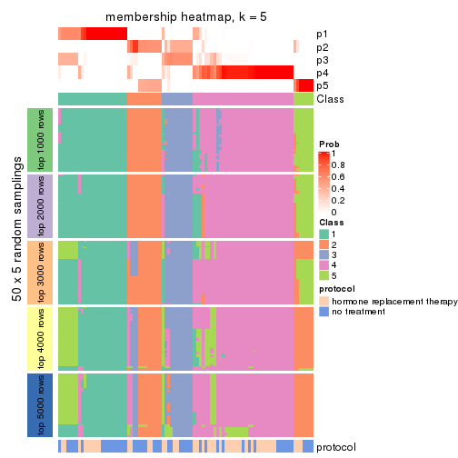
membership_heatmap(res, k = 6)
As soon as we have had the classes for columns, we can look for signatures which are significantly different between classes which can be candidate marks for certain classes. Following are the heatmaps for signatures.
Signature heatmaps where rows are scaled:
get_signatures(res, k = 2)
get_signatures(res, k = 3)
get_signatures(res, k = 4)
get_signatures(res, k = 5)
get_signatures(res, k = 6)
Signature heatmaps where rows are not scaled:
get_signatures(res, k = 2, scale_rows = FALSE)
get_signatures(res, k = 3, scale_rows = FALSE)
get_signatures(res, k = 4, scale_rows = FALSE)
get_signatures(res, k = 5, scale_rows = FALSE)

get_signatures(res, k = 6, scale_rows = FALSE)
Compare the overlap of signatures from different k:
compare_signatures(res)

get_signature() returns a data frame invisibly. TO get the list of signatures, the function
call should be assigned to a variable explicitly. In following code, if plot argument is set
to FALSE, no heatmap is plotted while only the differential analysis is performed.
# code only for demonstration
tb = get_signature(res, k = ..., plot = FALSE)
An example of the output of tb is:
#> which_row fdr mean_1 mean_2 scaled_mean_1 scaled_mean_2 km
#> 1 38 0.042760348 8.373488 9.131774 -0.5533452 0.5164555 1
#> 2 40 0.018707592 7.106213 8.469186 -0.6173731 0.5762149 1
#> 3 55 0.019134737 10.221463 11.207825 -0.6159697 0.5749050 1
#> 4 59 0.006059896 5.921854 7.869574 -0.6899429 0.6439467 1
#> 5 60 0.018055526 8.928898 10.211722 -0.6204761 0.5791110 1
#> 6 98 0.009384629 15.714769 14.887706 0.6635654 -0.6193277 2
...
The columns in tb are:
which_row: row indices corresponding to the input matrix.fdr: FDR for the differential test. mean_x: The mean value in group x.scaled_mean_x: The mean value in group x after rows are scaled.km: Row groups if k-means clustering is applied to rows.UMAP plot which shows how samples are separated.
dimension_reduction(res, k = 2, method = "UMAP")
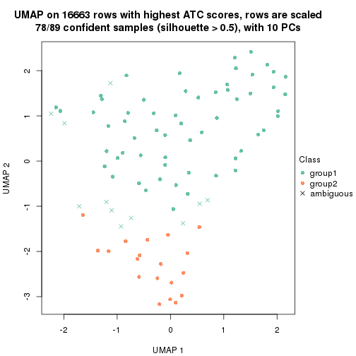
dimension_reduction(res, k = 3, method = "UMAP")
dimension_reduction(res, k = 4, method = "UMAP")
dimension_reduction(res, k = 5, method = "UMAP")
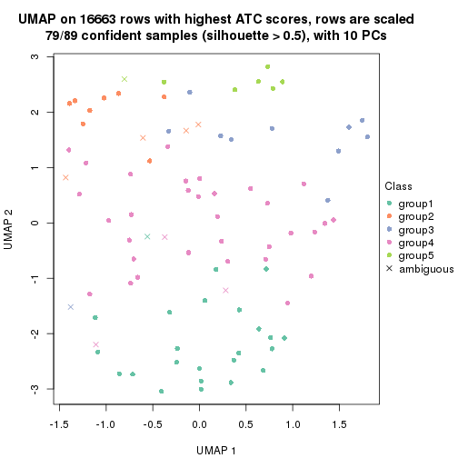
dimension_reduction(res, k = 6, method = "UMAP")
Following heatmap shows how subgroups are split when increasing k:
collect_classes(res)
Test correlation between subgroups and known annotations. If the known annotation is numeric, one-way ANOVA test is applied, and if the known annotation is discrete, chi-squared contingency table test is applied.
test_to_known_factors(res)
#> n protocol(p) k
#> ATC:pam 78 0.0837 2
#> ATC:pam 86 0.0436 3
#> ATC:pam 81 0.0357 4
#> ATC:pam 79 0.1912 5
#> ATC:pam 76 0.5380 6
If matrix rows can be associated to genes, consider to use functional_enrichment(res,
...) to perform function enrichment for the signature genes. See this vignette for more detailed explanations.
The object with results only for a single top-value method and a single partition method can be extracted as:
res = res_list["ATC", "mclust"]
# you can also extract it by
# res = res_list["ATC:mclust"]
A summary of res and all the functions that can be applied to it:
res
#> A 'ConsensusPartition' object with k = 2, 3, 4, 5, 6.
#> On a matrix with 16663 rows and 89 columns.
#> Top rows (1000, 2000, 3000, 4000, 5000) are extracted by 'ATC' method.
#> Subgroups are detected by 'mclust' method.
#> Performed in total 1250 partitions by row resampling.
#> Best k for subgroups seems to be 2.
#>
#> Following methods can be applied to this 'ConsensusPartition' object:
#> [1] "cola_report" "collect_classes" "collect_plots"
#> [4] "collect_stats" "colnames" "compare_signatures"
#> [7] "consensus_heatmap" "dimension_reduction" "functional_enrichment"
#> [10] "get_anno_col" "get_anno" "get_classes"
#> [13] "get_consensus" "get_matrix" "get_membership"
#> [16] "get_param" "get_signatures" "get_stats"
#> [19] "is_best_k" "is_stable_k" "membership_heatmap"
#> [22] "ncol" "nrow" "plot_ecdf"
#> [25] "rownames" "select_partition_number" "show"
#> [28] "suggest_best_k" "test_to_known_factors"
collect_plots() function collects all the plots made from res for all k (number of partitions)
into one single page to provide an easy and fast comparison between different k.
collect_plots(res)
The plots are:
k and the heatmap of
predicted classes for each k.k.k.k.All the plots in panels can be made by individual functions and they are plotted later in this section.
select_partition_number() produces several plots showing different
statistics for choosing “optimized” k. There are following statistics:
k;k, the area increased is defined as \(A_k - A_{k-1}\).The detailed explanations of these statistics can be found in the cola vignette.
Generally speaking, lower PAC score, higher mean silhouette score or higher
concordance corresponds to better partition. Rand index and Jaccard index
measure how similar the current partition is compared to partition with k-1.
If they are too similar, we won't accept k is better than k-1.
select_partition_number(res)
The numeric values for all these statistics can be obtained by get_stats().
get_stats(res)
#> k 1-PAC mean_silhouette concordance area_increased Rand Jaccard
#> 2 2 0.774 0.865 0.938 0.4448 0.591 0.591
#> 3 3 0.355 0.704 0.820 0.1771 0.857 0.764
#> 4 4 0.488 0.538 0.727 0.3120 0.619 0.328
#> 5 5 0.611 0.642 0.739 0.0735 0.719 0.311
#> 6 6 0.522 0.464 0.621 0.0599 0.845 0.481
suggest_best_k() suggests the best \(k\) based on these statistics. The rules are as follows:
suggest_best_k(res)
#> [1] 2
Following shows the table of the partitions (You need to click the show/hide
code output link to see it). The membership matrix (columns with name p*)
is inferred by
clue::cl_consensus()
function with the SE method. Basically the value in the membership matrix
represents the probability to belong to a certain group. The finall class
label for an item is determined with the group with highest probability it
belongs to.
In get_classes() function, the entropy is calculated from the membership
matrix and the silhouette score is calculated from the consensus matrix.
cbind(get_classes(res, k = 2), get_membership(res, k = 2))
#> class entropy silhouette p1 p2
#> GSM78921 1 0.0000 0.987 1.000 0.000
#> GSM78922 1 0.0000 0.987 1.000 0.000
#> GSM78923 2 0.0000 0.912 0.000 1.000
#> GSM78924 2 0.0000 0.912 0.000 1.000
#> GSM78925 2 0.0000 0.912 0.000 1.000
#> GSM78926 1 0.0000 0.987 1.000 0.000
#> GSM78927 1 0.0000 0.987 1.000 0.000
#> GSM78928 2 0.0000 0.912 0.000 1.000
#> GSM78929 2 0.0000 0.912 0.000 1.000
#> GSM78930 2 0.0000 0.912 0.000 1.000
#> GSM78931 2 0.0000 0.912 0.000 1.000
#> GSM78932 2 0.0000 0.912 0.000 1.000
#> GSM78933 1 0.0000 0.987 1.000 0.000
#> GSM78934 2 0.0000 0.912 0.000 1.000
#> GSM78935 1 0.0000 0.987 1.000 0.000
#> GSM78936 2 0.0000 0.912 0.000 1.000
#> GSM78937 1 0.4161 0.901 0.916 0.084
#> GSM78938 2 0.9881 0.366 0.436 0.564
#> GSM78939 1 0.0000 0.987 1.000 0.000
#> GSM78940 2 0.0000 0.912 0.000 1.000
#> GSM78941 2 0.0000 0.912 0.000 1.000
#> GSM78942 2 0.0000 0.912 0.000 1.000
#> GSM78943 1 0.0000 0.987 1.000 0.000
#> GSM78944 2 0.9833 0.396 0.424 0.576
#> GSM78945 2 0.9833 0.396 0.424 0.576
#> GSM78946 1 0.0000 0.987 1.000 0.000
#> GSM78947 2 0.0000 0.912 0.000 1.000
#> GSM78948 1 0.0000 0.987 1.000 0.000
#> GSM78949 2 0.9754 0.431 0.408 0.592
#> GSM78950 2 0.0000 0.912 0.000 1.000
#> GSM78951 2 0.7219 0.748 0.200 0.800
#> GSM78952 2 0.0000 0.912 0.000 1.000
#> GSM78953 2 0.0000 0.912 0.000 1.000
#> GSM78954 2 0.0000 0.912 0.000 1.000
#> GSM78955 2 0.0000 0.912 0.000 1.000
#> GSM78956 2 0.0000 0.912 0.000 1.000
#> GSM78957 2 0.0000 0.912 0.000 1.000
#> GSM78958 2 0.5946 0.806 0.144 0.856
#> GSM78959 1 0.0000 0.987 1.000 0.000
#> GSM78960 2 0.0000 0.912 0.000 1.000
#> GSM78961 2 0.0000 0.912 0.000 1.000
#> GSM78962 2 0.9795 0.414 0.416 0.584
#> GSM78963 2 0.0000 0.912 0.000 1.000
#> GSM78964 2 0.0000 0.912 0.000 1.000
#> GSM78965 2 0.0000 0.912 0.000 1.000
#> GSM78966 1 0.0000 0.987 1.000 0.000
#> GSM78967 1 0.0000 0.987 1.000 0.000
#> GSM78879 1 0.0000 0.987 1.000 0.000
#> GSM78880 1 0.0000 0.987 1.000 0.000
#> GSM78881 2 0.8813 0.566 0.300 0.700
#> GSM78882 1 0.3274 0.927 0.940 0.060
#> GSM78883 1 0.0000 0.987 1.000 0.000
#> GSM78884 2 0.9248 0.529 0.340 0.660
#> GSM78885 1 0.0000 0.987 1.000 0.000
#> GSM78886 2 0.0000 0.912 0.000 1.000
#> GSM78887 2 0.0000 0.912 0.000 1.000
#> GSM78888 1 0.0000 0.987 1.000 0.000
#> GSM78889 2 0.0000 0.912 0.000 1.000
#> GSM78890 2 0.0376 0.909 0.004 0.996
#> GSM78891 2 0.9866 0.376 0.432 0.568
#> GSM78892 2 0.0000 0.912 0.000 1.000
#> GSM78893 2 0.0000 0.912 0.000 1.000
#> GSM78894 2 0.8443 0.663 0.272 0.728
#> GSM78895 2 0.0000 0.912 0.000 1.000
#> GSM78896 1 0.4298 0.894 0.912 0.088
#> GSM78897 2 0.4562 0.846 0.096 0.904
#> GSM78898 2 0.9710 0.447 0.400 0.600
#> GSM78899 2 0.0000 0.912 0.000 1.000
#> GSM78900 2 0.0000 0.912 0.000 1.000
#> GSM78901 2 0.0000 0.912 0.000 1.000
#> GSM78902 2 0.0000 0.912 0.000 1.000
#> GSM78903 2 0.0000 0.912 0.000 1.000
#> GSM78904 2 0.0000 0.912 0.000 1.000
#> GSM78905 2 0.0000 0.912 0.000 1.000
#> GSM78906 2 0.0000 0.912 0.000 1.000
#> GSM78907 2 0.9044 0.596 0.320 0.680
#> GSM78908 2 0.3584 0.867 0.068 0.932
#> GSM78909 2 0.0000 0.912 0.000 1.000
#> GSM78910 1 0.0000 0.987 1.000 0.000
#> GSM78911 2 0.0000 0.912 0.000 1.000
#> GSM78912 1 0.0000 0.987 1.000 0.000
#> GSM78913 2 0.0000 0.912 0.000 1.000
#> GSM78914 2 0.0000 0.912 0.000 1.000
#> GSM78915 2 0.0000 0.912 0.000 1.000
#> GSM78916 2 0.0000 0.912 0.000 1.000
#> GSM78917 1 0.0000 0.987 1.000 0.000
#> GSM78918 2 0.9000 0.599 0.316 0.684
#> GSM78919 1 0.2236 0.954 0.964 0.036
#> GSM78920 2 0.8327 0.673 0.264 0.736
cbind(get_classes(res, k = 3), get_membership(res, k = 3))
#> class entropy silhouette p1 p2 p3
#> GSM78921 1 0.0000 0.8295 1.000 0.000 0.000
#> GSM78922 1 0.0000 0.8295 1.000 0.000 0.000
#> GSM78923 2 0.0237 0.7556 0.000 0.996 0.004
#> GSM78924 2 0.4974 0.7325 0.000 0.764 0.236
#> GSM78925 2 0.4974 0.7325 0.000 0.764 0.236
#> GSM78926 1 0.0000 0.8295 1.000 0.000 0.000
#> GSM78927 1 0.1289 0.8159 0.968 0.000 0.032
#> GSM78928 2 0.6224 0.7017 0.240 0.728 0.032
#> GSM78929 2 0.6023 0.7696 0.120 0.788 0.092
#> GSM78930 2 0.6487 0.7420 0.032 0.700 0.268
#> GSM78931 2 0.6458 0.7507 0.176 0.752 0.072
#> GSM78932 2 0.5138 0.7361 0.000 0.748 0.252
#> GSM78933 1 0.0000 0.8295 1.000 0.000 0.000
#> GSM78934 2 0.0000 0.7568 0.000 1.000 0.000
#> GSM78935 1 0.0000 0.8295 1.000 0.000 0.000
#> GSM78936 2 0.6141 0.7095 0.232 0.736 0.032
#> GSM78937 1 0.2443 0.7873 0.940 0.028 0.032
#> GSM78938 3 0.9159 0.7352 0.328 0.164 0.508
#> GSM78939 1 0.1289 0.8159 0.968 0.000 0.032
#> GSM78940 2 0.4256 0.7629 0.096 0.868 0.036
#> GSM78941 2 0.0237 0.7556 0.000 0.996 0.004
#> GSM78942 2 0.5174 0.7790 0.076 0.832 0.092
#> GSM78943 1 0.0000 0.8295 1.000 0.000 0.000
#> GSM78944 3 0.6546 0.7397 0.240 0.044 0.716
#> GSM78945 3 0.6839 0.7011 0.272 0.044 0.684
#> GSM78946 1 0.6096 0.4241 0.752 0.208 0.040
#> GSM78947 2 0.5397 0.7169 0.000 0.720 0.280
#> GSM78948 1 0.0000 0.8295 1.000 0.000 0.000
#> GSM78949 3 0.9272 0.7525 0.240 0.232 0.528
#> GSM78950 2 0.4662 0.7611 0.124 0.844 0.032
#> GSM78951 2 0.6904 0.6744 0.268 0.684 0.048
#> GSM78952 2 0.0000 0.7568 0.000 1.000 0.000
#> GSM78953 2 0.0000 0.7568 0.000 1.000 0.000
#> GSM78954 2 0.4654 0.7474 0.000 0.792 0.208
#> GSM78955 2 0.6183 0.7061 0.236 0.732 0.032
#> GSM78956 2 0.0000 0.7568 0.000 1.000 0.000
#> GSM78957 2 0.0000 0.7568 0.000 1.000 0.000
#> GSM78958 2 0.6606 0.7059 0.236 0.716 0.048
#> GSM78959 1 0.0000 0.8295 1.000 0.000 0.000
#> GSM78960 2 0.5397 0.7169 0.000 0.720 0.280
#> GSM78961 2 0.5455 0.7547 0.020 0.776 0.204
#> GSM78962 2 0.7401 0.5286 0.340 0.612 0.048
#> GSM78963 2 0.5058 0.7303 0.000 0.756 0.244
#> GSM78964 2 0.4399 0.7512 0.000 0.812 0.188
#> GSM78965 2 0.5397 0.7169 0.000 0.720 0.280
#> GSM78966 1 0.6062 0.0119 0.616 0.000 0.384
#> GSM78967 1 0.0000 0.8295 1.000 0.000 0.000
#> GSM78879 1 0.0000 0.8295 1.000 0.000 0.000
#> GSM78880 1 0.0000 0.8295 1.000 0.000 0.000
#> GSM78881 1 0.6379 0.3163 0.712 0.256 0.032
#> GSM78882 1 0.1711 0.8103 0.960 0.008 0.032
#> GSM78883 1 0.2569 0.7829 0.936 0.032 0.032
#> GSM78884 1 0.7141 0.0249 0.600 0.368 0.032
#> GSM78885 1 0.1289 0.8159 0.968 0.000 0.032
#> GSM78886 2 0.2313 0.7604 0.024 0.944 0.032
#> GSM78887 2 0.4931 0.7565 0.140 0.828 0.032
#> GSM78888 1 0.0000 0.8295 1.000 0.000 0.000
#> GSM78889 2 0.5058 0.7662 0.148 0.820 0.032
#> GSM78890 2 0.6253 0.7096 0.232 0.732 0.036
#> GSM78891 3 0.9190 0.7675 0.292 0.184 0.524
#> GSM78892 2 0.6224 0.7017 0.240 0.728 0.032
#> GSM78893 2 0.0237 0.7556 0.000 0.996 0.004
#> GSM78894 3 0.9302 0.7475 0.240 0.236 0.524
#> GSM78895 2 0.0000 0.7568 0.000 1.000 0.000
#> GSM78896 1 0.6341 0.3199 0.716 0.252 0.032
#> GSM78897 2 0.6452 0.6804 0.264 0.704 0.032
#> GSM78898 3 0.6546 0.7397 0.240 0.044 0.716
#> GSM78899 2 0.4662 0.7606 0.124 0.844 0.032
#> GSM78900 2 0.6853 0.7153 0.224 0.712 0.064
#> GSM78901 2 0.6183 0.7058 0.236 0.732 0.032
#> GSM78902 2 0.6183 0.7061 0.236 0.732 0.032
#> GSM78903 2 0.0237 0.7556 0.000 0.996 0.004
#> GSM78904 2 0.6211 0.7121 0.228 0.736 0.036
#> GSM78905 2 0.6841 0.7306 0.200 0.724 0.076
#> GSM78906 2 0.0000 0.7568 0.000 1.000 0.000
#> GSM78907 2 0.6653 0.6512 0.288 0.680 0.032
#> GSM78908 2 0.7014 0.7224 0.208 0.712 0.080
#> GSM78909 2 0.0237 0.7556 0.000 0.996 0.004
#> GSM78910 1 0.2625 0.7536 0.916 0.000 0.084
#> GSM78911 2 0.0000 0.7568 0.000 1.000 0.000
#> GSM78912 1 0.1289 0.8159 0.968 0.000 0.032
#> GSM78913 2 0.5138 0.7241 0.000 0.748 0.252
#> GSM78914 2 0.5650 0.7210 0.000 0.688 0.312
#> GSM78915 2 0.5397 0.7169 0.000 0.720 0.280
#> GSM78916 2 0.3742 0.7639 0.072 0.892 0.036
#> GSM78917 1 0.0000 0.8295 1.000 0.000 0.000
#> GSM78918 2 0.9506 0.1052 0.240 0.492 0.268
#> GSM78919 1 0.6823 -0.3794 0.504 0.012 0.484
#> GSM78920 2 0.6224 0.7017 0.240 0.728 0.032
cbind(get_classes(res, k = 4), get_membership(res, k = 4))
#> class entropy silhouette p1 p2 p3 p4
#> GSM78921 1 0.4428 0.641993 0.720 0.004 0.000 0.276
#> GSM78922 1 0.4250 0.640906 0.724 0.000 0.000 0.276
#> GSM78923 2 0.0336 0.716610 0.000 0.992 0.000 0.008
#> GSM78924 3 0.4647 0.757878 0.008 0.288 0.704 0.000
#> GSM78925 3 0.3672 0.790108 0.012 0.164 0.824 0.000
#> GSM78926 1 0.4250 0.640906 0.724 0.000 0.000 0.276
#> GSM78927 1 0.4535 0.641311 0.704 0.004 0.000 0.292
#> GSM78928 4 0.4284 0.480196 0.012 0.224 0.000 0.764
#> GSM78929 3 0.5898 0.699303 0.012 0.184 0.716 0.088
#> GSM78930 3 0.4419 0.670265 0.040 0.004 0.804 0.152
#> GSM78931 2 0.7895 0.316036 0.316 0.376 0.308 0.000
#> GSM78932 3 0.3450 0.701916 0.008 0.156 0.836 0.000
#> GSM78933 1 0.4304 0.637377 0.716 0.000 0.000 0.284
#> GSM78934 2 0.0336 0.716610 0.000 0.992 0.000 0.008
#> GSM78935 1 0.4250 0.640906 0.724 0.000 0.000 0.276
#> GSM78936 2 0.7873 -0.021333 0.292 0.388 0.000 0.320
#> GSM78937 1 0.5070 0.616502 0.580 0.004 0.000 0.416
#> GSM78938 4 0.1545 0.643155 0.040 0.008 0.000 0.952
#> GSM78939 1 0.4925 0.613181 0.572 0.000 0.000 0.428
#> GSM78940 2 0.4382 0.564928 0.000 0.704 0.000 0.296
#> GSM78941 2 0.3105 0.697785 0.000 0.868 0.120 0.012
#> GSM78942 2 0.7900 0.303264 0.308 0.372 0.320 0.000
#> GSM78943 1 0.4304 0.637377 0.716 0.000 0.000 0.284
#> GSM78944 4 0.3392 0.627788 0.124 0.000 0.020 0.856
#> GSM78945 4 0.3392 0.627788 0.124 0.000 0.020 0.856
#> GSM78946 1 0.5147 0.580969 0.536 0.004 0.000 0.460
#> GSM78947 3 0.1004 0.799806 0.004 0.024 0.972 0.000
#> GSM78948 1 0.4250 0.640906 0.724 0.000 0.000 0.276
#> GSM78949 4 0.4178 0.626975 0.160 0.008 0.020 0.812
#> GSM78950 1 0.7591 -0.347003 0.444 0.396 0.008 0.152
#> GSM78951 1 0.6242 0.582578 0.540 0.024 0.020 0.416
#> GSM78952 2 0.1118 0.695939 0.000 0.964 0.036 0.000
#> GSM78953 2 0.2888 0.693854 0.004 0.872 0.124 0.000
#> GSM78954 3 0.3672 0.790108 0.012 0.164 0.824 0.000
#> GSM78955 2 0.6503 -0.071507 0.072 0.480 0.000 0.448
#> GSM78956 2 0.0336 0.716610 0.000 0.992 0.000 0.008
#> GSM78957 2 0.0376 0.716266 0.004 0.992 0.000 0.004
#> GSM78958 1 0.7288 -0.001987 0.584 0.252 0.016 0.148
#> GSM78959 1 0.4250 0.640906 0.724 0.000 0.000 0.276
#> GSM78960 3 0.0817 0.799447 0.000 0.024 0.976 0.000
#> GSM78961 2 0.7900 0.303264 0.308 0.372 0.320 0.000
#> GSM78962 1 0.5909 0.224444 0.736 0.096 0.024 0.144
#> GSM78963 3 0.4509 0.757513 0.004 0.288 0.708 0.000
#> GSM78964 3 0.4866 0.617041 0.000 0.404 0.596 0.000
#> GSM78965 3 0.0895 0.798001 0.004 0.020 0.976 0.000
#> GSM78966 4 0.5112 0.036045 0.436 0.000 0.004 0.560
#> GSM78967 1 0.4277 0.639408 0.720 0.000 0.000 0.280
#> GSM78879 1 0.4456 0.641133 0.716 0.004 0.000 0.280
#> GSM78880 1 0.4250 0.640906 0.724 0.000 0.000 0.276
#> GSM78881 1 0.5070 0.616502 0.580 0.004 0.000 0.416
#> GSM78882 1 0.5070 0.616502 0.580 0.004 0.000 0.416
#> GSM78883 1 0.5070 0.616502 0.580 0.004 0.000 0.416
#> GSM78884 1 0.4627 0.148238 0.772 0.196 0.004 0.028
#> GSM78885 1 0.4382 0.641389 0.704 0.000 0.000 0.296
#> GSM78886 2 0.3024 0.677327 0.000 0.852 0.000 0.148
#> GSM78887 1 0.7387 -0.325455 0.444 0.392 0.000 0.164
#> GSM78888 1 0.4304 0.637377 0.716 0.000 0.000 0.284
#> GSM78889 2 0.8085 0.271118 0.044 0.528 0.160 0.268
#> GSM78890 4 0.3651 0.584220 0.012 0.008 0.136 0.844
#> GSM78891 4 0.3585 0.627767 0.164 0.004 0.004 0.828
#> GSM78892 4 0.2675 0.636641 0.048 0.044 0.000 0.908
#> GSM78893 2 0.3105 0.697785 0.000 0.868 0.120 0.012
#> GSM78894 4 0.1452 0.643880 0.036 0.008 0.000 0.956
#> GSM78895 2 0.0188 0.715142 0.004 0.996 0.000 0.000
#> GSM78896 1 0.5070 0.616502 0.580 0.004 0.000 0.416
#> GSM78897 1 0.5427 0.605691 0.568 0.016 0.000 0.416
#> GSM78898 4 0.3392 0.627788 0.124 0.000 0.020 0.856
#> GSM78899 1 0.5992 -0.321252 0.568 0.396 0.012 0.024
#> GSM78900 1 0.7224 0.522963 0.484 0.024 0.076 0.416
#> GSM78901 4 0.7446 -0.001166 0.172 0.396 0.000 0.432
#> GSM78902 1 0.7913 0.423098 0.432 0.116 0.036 0.416
#> GSM78903 2 0.0336 0.716610 0.000 0.992 0.000 0.008
#> GSM78904 4 0.7474 -0.007169 0.176 0.400 0.000 0.424
#> GSM78905 4 0.5898 0.104659 0.012 0.016 0.448 0.524
#> GSM78906 2 0.0188 0.715142 0.004 0.996 0.000 0.000
#> GSM78907 1 0.5203 0.612824 0.576 0.008 0.000 0.416
#> GSM78908 1 0.9416 -0.000685 0.424 0.160 0.176 0.240
#> GSM78909 2 0.2654 0.699652 0.004 0.888 0.108 0.000
#> GSM78910 1 0.4713 0.529968 0.640 0.000 0.000 0.360
#> GSM78911 2 0.4805 0.665888 0.084 0.784 0.132 0.000
#> GSM78912 1 0.5070 0.616502 0.580 0.004 0.000 0.416
#> GSM78913 3 0.4483 0.760009 0.004 0.284 0.712 0.000
#> GSM78914 3 0.3289 0.714484 0.004 0.004 0.852 0.140
#> GSM78915 3 0.0895 0.798001 0.004 0.020 0.976 0.000
#> GSM78916 2 0.3172 0.668646 0.000 0.840 0.000 0.160
#> GSM78917 1 0.4304 0.637377 0.716 0.000 0.000 0.284
#> GSM78918 4 0.3056 0.618383 0.072 0.040 0.000 0.888
#> GSM78919 4 0.4323 0.590853 0.204 0.000 0.020 0.776
#> GSM78920 4 0.2319 0.639948 0.036 0.040 0.000 0.924
cbind(get_classes(res, k = 5), get_membership(res, k = 5))
#> class entropy silhouette p1 p2 p3 p4 p5
#> GSM78921 1 0.0000 0.75069 1.000 0.000 0.000 0.000 0.000
#> GSM78922 1 0.1121 0.76243 0.956 0.000 0.000 0.000 0.044
#> GSM78923 2 0.0854 0.84107 0.000 0.976 0.004 0.012 0.008
#> GSM78924 5 0.5061 0.79789 0.000 0.024 0.396 0.008 0.572
#> GSM78925 3 0.2551 0.66457 0.000 0.012 0.904 0.044 0.040
#> GSM78926 1 0.0290 0.75381 0.992 0.000 0.000 0.008 0.000
#> GSM78927 1 0.0404 0.74407 0.988 0.000 0.000 0.012 0.000
#> GSM78928 4 0.1610 0.56727 0.012 0.012 0.012 0.952 0.012
#> GSM78929 3 0.4920 0.54258 0.000 0.032 0.728 0.200 0.040
#> GSM78930 4 0.4542 0.29478 0.008 0.000 0.456 0.536 0.000
#> GSM78931 3 0.7020 0.50122 0.068 0.024 0.540 0.056 0.312
#> GSM78932 3 0.1830 0.66821 0.068 0.008 0.924 0.000 0.000
#> GSM78933 1 0.1282 0.76271 0.952 0.004 0.000 0.000 0.044
#> GSM78934 2 0.0671 0.84159 0.000 0.980 0.004 0.016 0.000
#> GSM78935 1 0.0000 0.75069 1.000 0.000 0.000 0.000 0.000
#> GSM78936 4 0.6295 0.71421 0.312 0.056 0.000 0.572 0.060
#> GSM78937 4 0.4273 0.69934 0.448 0.000 0.000 0.552 0.000
#> GSM78938 4 0.2139 0.59918 0.032 0.052 0.000 0.916 0.000
#> GSM78939 4 0.5236 0.70147 0.380 0.052 0.000 0.568 0.000
#> GSM78940 4 0.4464 0.39526 0.000 0.408 0.008 0.584 0.000
#> GSM78941 2 0.1012 0.83732 0.000 0.968 0.012 0.020 0.000
#> GSM78942 3 0.6668 0.51525 0.068 0.076 0.544 0.000 0.312
#> GSM78943 1 0.1408 0.76386 0.948 0.000 0.000 0.008 0.044
#> GSM78944 1 0.5009 0.48311 0.540 0.000 0.000 0.428 0.032
#> GSM78945 1 0.5715 0.50976 0.540 0.052 0.000 0.392 0.016
#> GSM78946 4 0.4844 0.70293 0.280 0.052 0.000 0.668 0.000
#> GSM78947 3 0.0992 0.66028 0.000 0.008 0.968 0.000 0.024
#> GSM78948 1 0.1121 0.76243 0.956 0.000 0.000 0.000 0.044
#> GSM78949 1 0.4942 0.48297 0.540 0.000 0.000 0.432 0.028
#> GSM78950 4 0.7177 0.68477 0.188 0.072 0.008 0.572 0.160
#> GSM78951 4 0.4273 0.69934 0.448 0.000 0.000 0.552 0.000
#> GSM78952 5 0.5457 0.12991 0.000 0.364 0.060 0.004 0.572
#> GSM78953 2 0.2804 0.79498 0.000 0.892 0.016 0.048 0.044
#> GSM78954 3 0.2897 0.65805 0.000 0.020 0.888 0.052 0.040
#> GSM78955 4 0.5421 0.69463 0.204 0.060 0.016 0.704 0.016
#> GSM78956 2 0.0609 0.83896 0.000 0.980 0.000 0.020 0.000
#> GSM78957 2 0.2206 0.81288 0.000 0.912 0.004 0.016 0.068
#> GSM78958 4 0.5811 0.69622 0.340 0.000 0.000 0.552 0.108
#> GSM78959 1 0.0000 0.75069 1.000 0.000 0.000 0.000 0.000
#> GSM78960 3 0.0000 0.67145 0.000 0.000 1.000 0.000 0.000
#> GSM78961 3 0.6668 0.51525 0.068 0.076 0.544 0.000 0.312
#> GSM78962 1 0.5999 -0.56059 0.460 0.000 0.004 0.440 0.096
#> GSM78963 5 0.5170 0.79959 0.000 0.024 0.400 0.012 0.564
#> GSM78964 5 0.5088 0.79674 0.000 0.032 0.392 0.004 0.572
#> GSM78965 3 0.0000 0.67145 0.000 0.000 1.000 0.000 0.000
#> GSM78966 1 0.4510 0.68471 0.752 0.056 0.000 0.184 0.008
#> GSM78967 1 0.2876 0.75069 0.888 0.052 0.000 0.016 0.044
#> GSM78879 1 0.1444 0.75189 0.948 0.040 0.000 0.012 0.000
#> GSM78880 1 0.1121 0.76243 0.956 0.000 0.000 0.000 0.044
#> GSM78881 4 0.4273 0.69934 0.448 0.000 0.000 0.552 0.000
#> GSM78882 4 0.4273 0.69934 0.448 0.000 0.000 0.552 0.000
#> GSM78883 4 0.4273 0.69934 0.448 0.000 0.000 0.552 0.000
#> GSM78884 1 0.3254 0.71639 0.856 0.008 0.004 0.024 0.108
#> GSM78885 1 0.0404 0.74407 0.988 0.000 0.000 0.012 0.000
#> GSM78886 4 0.4604 0.36919 0.000 0.428 0.012 0.560 0.000
#> GSM78887 4 0.6615 0.71081 0.276 0.064 0.000 0.572 0.088
#> GSM78888 1 0.2945 0.75013 0.884 0.056 0.000 0.016 0.044
#> GSM78889 3 0.7429 0.39655 0.204 0.164 0.556 0.036 0.040
#> GSM78890 4 0.0912 0.54693 0.000 0.000 0.012 0.972 0.016
#> GSM78891 1 0.5334 0.50795 0.512 0.052 0.000 0.436 0.000
#> GSM78892 4 0.2386 0.60138 0.048 0.012 0.008 0.916 0.016
#> GSM78893 2 0.1012 0.83732 0.000 0.968 0.012 0.020 0.000
#> GSM78894 4 0.1872 0.59054 0.020 0.052 0.000 0.928 0.000
#> GSM78895 2 0.4178 0.58483 0.000 0.696 0.008 0.004 0.292
#> GSM78896 4 0.4273 0.69934 0.448 0.000 0.000 0.552 0.000
#> GSM78897 4 0.5021 0.70590 0.416 0.020 0.008 0.556 0.000
#> GSM78898 1 0.5009 0.48311 0.540 0.000 0.000 0.428 0.032
#> GSM78899 1 0.5101 0.66361 0.728 0.052 0.012 0.016 0.192
#> GSM78900 4 0.4522 0.70161 0.440 0.000 0.008 0.552 0.000
#> GSM78901 4 0.5060 0.69985 0.224 0.092 0.000 0.684 0.000
#> GSM78902 4 0.5134 0.70354 0.424 0.012 0.020 0.544 0.000
#> GSM78903 2 0.0510 0.84087 0.000 0.984 0.000 0.016 0.000
#> GSM78904 4 0.5747 0.70516 0.328 0.092 0.004 0.576 0.000
#> GSM78905 4 0.3155 0.53086 0.000 0.020 0.096 0.864 0.020
#> GSM78906 2 0.3989 0.63080 0.000 0.728 0.008 0.004 0.260
#> GSM78907 4 0.4268 0.70149 0.444 0.000 0.000 0.556 0.000
#> GSM78908 4 0.6025 0.70404 0.352 0.000 0.020 0.552 0.076
#> GSM78909 2 0.2032 0.81627 0.000 0.924 0.004 0.020 0.052
#> GSM78910 1 0.3888 0.70663 0.796 0.056 0.000 0.148 0.000
#> GSM78911 2 0.6907 -0.00658 0.004 0.452 0.400 0.040 0.104
#> GSM78912 4 0.4273 0.69934 0.448 0.000 0.000 0.552 0.000
#> GSM78913 5 0.5080 0.79050 0.000 0.020 0.396 0.012 0.572
#> GSM78914 3 0.1792 0.58958 0.000 0.000 0.916 0.084 0.000
#> GSM78915 3 0.0000 0.67145 0.000 0.000 1.000 0.000 0.000
#> GSM78916 4 0.4597 0.37416 0.000 0.424 0.012 0.564 0.000
#> GSM78917 1 0.2804 0.75406 0.892 0.048 0.000 0.016 0.044
#> GSM78918 4 0.3904 0.66636 0.156 0.052 0.000 0.792 0.000
#> GSM78919 1 0.5554 0.56538 0.588 0.056 0.000 0.344 0.012
#> GSM78920 4 0.1168 0.59032 0.032 0.000 0.000 0.960 0.008
cbind(get_classes(res, k = 6), get_membership(res, k = 6))
#> class entropy silhouette p1 p2 p3 p4 p5 p6
#> GSM78921 1 0.3086 0.75543 0.820 0.004 0.000 0.156 0.020 0.000
#> GSM78922 1 0.1719 0.78586 0.924 0.000 0.000 0.060 0.016 0.000
#> GSM78923 2 0.1003 0.69600 0.016 0.964 0.000 0.000 0.020 0.000
#> GSM78924 5 0.5120 0.74607 0.000 0.028 0.372 0.024 0.568 0.008
#> GSM78925 3 0.3506 0.47447 0.000 0.032 0.844 0.024 0.076 0.024
#> GSM78926 1 0.3014 0.76036 0.832 0.000 0.000 0.132 0.036 0.000
#> GSM78927 1 0.4296 0.50102 0.668 0.008 0.000 0.300 0.020 0.004
#> GSM78928 6 0.6109 0.27566 0.004 0.032 0.148 0.264 0.000 0.552
#> GSM78929 3 0.4340 0.45423 0.000 0.028 0.776 0.012 0.060 0.124
#> GSM78930 3 0.4603 0.08050 0.008 0.008 0.544 0.428 0.000 0.012
#> GSM78931 3 0.6747 0.33832 0.012 0.000 0.428 0.368 0.144 0.048
#> GSM78932 3 0.1854 0.49436 0.028 0.004 0.932 0.020 0.016 0.000
#> GSM78933 1 0.0260 0.80171 0.992 0.000 0.000 0.008 0.000 0.000
#> GSM78934 2 0.1957 0.70722 0.048 0.920 0.000 0.008 0.000 0.024
#> GSM78935 1 0.2950 0.76159 0.828 0.000 0.000 0.148 0.024 0.000
#> GSM78936 4 0.3595 0.51527 0.144 0.028 0.000 0.804 0.000 0.024
#> GSM78937 4 0.5430 0.59575 0.296 0.016 0.000 0.612 0.028 0.048
#> GSM78938 4 0.5316 0.07739 0.104 0.000 0.000 0.480 0.000 0.416
#> GSM78939 4 0.5004 0.56405 0.364 0.008 0.000 0.568 0.000 0.060
#> GSM78940 4 0.7012 -0.02398 0.072 0.384 0.012 0.388 0.000 0.144
#> GSM78941 2 0.5223 0.62850 0.084 0.700 0.164 0.004 0.004 0.044
#> GSM78942 3 0.7684 0.33466 0.008 0.116 0.428 0.280 0.144 0.024
#> GSM78943 1 0.0508 0.80147 0.984 0.000 0.000 0.012 0.004 0.000
#> GSM78944 6 0.5661 0.23843 0.276 0.000 0.000 0.004 0.176 0.544
#> GSM78945 6 0.5973 0.15866 0.360 0.000 0.000 0.008 0.176 0.456
#> GSM78946 4 0.5875 0.29458 0.188 0.004 0.000 0.484 0.000 0.324
#> GSM78947 3 0.0937 0.46668 0.000 0.000 0.960 0.000 0.040 0.000
#> GSM78948 1 0.1789 0.79039 0.924 0.000 0.000 0.044 0.032 0.000
#> GSM78949 6 0.5661 0.23843 0.276 0.000 0.000 0.004 0.176 0.544
#> GSM78950 4 0.4316 0.33695 0.036 0.144 0.004 0.776 0.024 0.016
#> GSM78951 4 0.4967 0.59460 0.296 0.004 0.000 0.636 0.036 0.028
#> GSM78952 5 0.5639 0.64064 0.000 0.212 0.252 0.000 0.536 0.000
#> GSM78953 2 0.5060 0.59214 0.000 0.712 0.164 0.052 0.008 0.064
#> GSM78954 3 0.3562 0.47434 0.000 0.032 0.840 0.016 0.076 0.036
#> GSM78955 6 0.8057 0.11951 0.060 0.132 0.148 0.232 0.004 0.424
#> GSM78956 2 0.1327 0.70186 0.064 0.936 0.000 0.000 0.000 0.000
#> GSM78957 2 0.2658 0.64643 0.000 0.864 0.000 0.100 0.000 0.036
#> GSM78958 4 0.3157 0.55260 0.112 0.008 0.008 0.844 0.028 0.000
#> GSM78959 1 0.2790 0.76903 0.840 0.000 0.000 0.140 0.020 0.000
#> GSM78960 3 0.0000 0.48165 0.000 0.000 1.000 0.000 0.000 0.000
#> GSM78961 3 0.7684 0.33466 0.008 0.116 0.428 0.280 0.144 0.024
#> GSM78962 4 0.3965 0.54044 0.132 0.000 0.008 0.792 0.016 0.052
#> GSM78963 5 0.3915 0.80016 0.000 0.004 0.412 0.000 0.584 0.000
#> GSM78964 5 0.4948 0.80609 0.000 0.076 0.360 0.000 0.564 0.000
#> GSM78965 3 0.0547 0.47418 0.000 0.000 0.980 0.000 0.000 0.020
#> GSM78966 1 0.4365 0.51157 0.704 0.000 0.000 0.004 0.064 0.228
#> GSM78967 1 0.0146 0.79587 0.996 0.000 0.000 0.004 0.000 0.000
#> GSM78879 1 0.2843 0.76703 0.848 0.000 0.000 0.116 0.036 0.000
#> GSM78880 1 0.0260 0.80186 0.992 0.000 0.000 0.008 0.000 0.000
#> GSM78881 4 0.5239 0.59221 0.292 0.012 0.004 0.628 0.016 0.048
#> GSM78882 4 0.5164 0.59091 0.296 0.020 0.000 0.624 0.008 0.052
#> GSM78883 4 0.5385 0.59030 0.296 0.008 0.000 0.612 0.036 0.048
#> GSM78884 4 0.5295 0.05363 0.392 0.000 0.000 0.532 0.048 0.028
#> GSM78885 1 0.5616 0.08922 0.536 0.008 0.000 0.372 0.036 0.048
#> GSM78886 2 0.8139 0.24713 0.040 0.400 0.148 0.232 0.008 0.172
#> GSM78887 4 0.4343 0.45236 0.152 0.088 0.000 0.748 0.004 0.008
#> GSM78888 1 0.0291 0.79404 0.992 0.000 0.000 0.004 0.004 0.000
#> GSM78889 3 0.6189 0.39893 0.060 0.176 0.656 0.032 0.044 0.032
#> GSM78890 6 0.6916 0.17615 0.000 0.000 0.276 0.276 0.056 0.392
#> GSM78891 6 0.7400 0.30428 0.260 0.000 0.000 0.176 0.172 0.392
#> GSM78892 6 0.5606 0.21331 0.000 0.032 0.076 0.348 0.000 0.544
#> GSM78893 2 0.5914 0.58781 0.084 0.636 0.164 0.004 0.000 0.112
#> GSM78894 6 0.5099 -0.00398 0.080 0.000 0.000 0.424 0.000 0.496
#> GSM78895 2 0.3390 0.47547 0.000 0.704 0.000 0.000 0.296 0.000
#> GSM78896 4 0.4853 0.60036 0.296 0.012 0.000 0.644 0.036 0.012
#> GSM78897 4 0.6709 0.52635 0.280 0.044 0.000 0.524 0.036 0.116
#> GSM78898 6 0.5661 0.23843 0.276 0.000 0.000 0.004 0.176 0.544
#> GSM78899 4 0.7026 0.08283 0.256 0.152 0.004 0.508 0.040 0.040
#> GSM78900 4 0.5665 0.49578 0.124 0.008 0.180 0.656 0.016 0.016
#> GSM78901 4 0.7008 0.18913 0.156 0.112 0.000 0.440 0.000 0.292
#> GSM78902 4 0.8374 0.20780 0.164 0.036 0.280 0.376 0.036 0.108
#> GSM78903 2 0.1297 0.70408 0.040 0.948 0.000 0.000 0.012 0.000
#> GSM78904 4 0.7035 0.21383 0.152 0.288 0.000 0.440 0.000 0.120
#> GSM78905 3 0.7473 0.09088 0.008 0.032 0.420 0.276 0.044 0.220
#> GSM78906 2 0.3371 0.48080 0.000 0.708 0.000 0.000 0.292 0.000
#> GSM78907 4 0.5656 0.58699 0.296 0.024 0.000 0.600 0.036 0.044
#> GSM78908 4 0.3241 0.53515 0.100 0.000 0.020 0.848 0.016 0.016
#> GSM78909 2 0.1692 0.69423 0.000 0.932 0.008 0.012 0.000 0.048
#> GSM78910 1 0.2288 0.71644 0.876 0.000 0.000 0.004 0.004 0.116
#> GSM78911 3 0.6798 0.05313 0.004 0.380 0.380 0.200 0.008 0.028
#> GSM78912 4 0.4759 0.58327 0.296 0.000 0.000 0.640 0.012 0.052
#> GSM78913 5 0.3872 0.80224 0.000 0.000 0.392 0.000 0.604 0.004
#> GSM78914 3 0.2094 0.43766 0.000 0.000 0.900 0.080 0.000 0.020
#> GSM78915 3 0.0547 0.47418 0.000 0.000 0.980 0.000 0.000 0.020
#> GSM78916 2 0.8271 0.22405 0.084 0.384 0.148 0.236 0.000 0.148
#> GSM78917 1 0.0291 0.79446 0.992 0.000 0.000 0.004 0.004 0.000
#> GSM78918 6 0.5612 -0.17384 0.144 0.000 0.000 0.424 0.000 0.432
#> GSM78919 1 0.5789 0.01264 0.492 0.000 0.000 0.004 0.168 0.336
#> GSM78920 6 0.4421 0.09241 0.020 0.004 0.000 0.424 0.000 0.552
Heatmaps for the consensus matrix. It visualizes the probability of two samples to be in a same group.
consensus_heatmap(res, k = 2)
consensus_heatmap(res, k = 3)
consensus_heatmap(res, k = 4)
consensus_heatmap(res, k = 5)
consensus_heatmap(res, k = 6)

Heatmaps for the membership of samples in all partitions to see how consistent they are:
membership_heatmap(res, k = 2)
membership_heatmap(res, k = 3)
membership_heatmap(res, k = 4)
membership_heatmap(res, k = 5)
membership_heatmap(res, k = 6)
As soon as we have had the classes for columns, we can look for signatures which are significantly different between classes which can be candidate marks for certain classes. Following are the heatmaps for signatures.
Signature heatmaps where rows are scaled:
get_signatures(res, k = 2)
get_signatures(res, k = 3)
get_signatures(res, k = 4)
get_signatures(res, k = 5)
get_signatures(res, k = 6)
Signature heatmaps where rows are not scaled:
get_signatures(res, k = 2, scale_rows = FALSE)
get_signatures(res, k = 3, scale_rows = FALSE)
get_signatures(res, k = 4, scale_rows = FALSE)
get_signatures(res, k = 5, scale_rows = FALSE)
get_signatures(res, k = 6, scale_rows = FALSE)
Compare the overlap of signatures from different k:
compare_signatures(res)
get_signature() returns a data frame invisibly. TO get the list of signatures, the function
call should be assigned to a variable explicitly. In following code, if plot argument is set
to FALSE, no heatmap is plotted while only the differential analysis is performed.
# code only for demonstration
tb = get_signature(res, k = ..., plot = FALSE)
An example of the output of tb is:
#> which_row fdr mean_1 mean_2 scaled_mean_1 scaled_mean_2 km
#> 1 38 0.042760348 8.373488 9.131774 -0.5533452 0.5164555 1
#> 2 40 0.018707592 7.106213 8.469186 -0.6173731 0.5762149 1
#> 3 55 0.019134737 10.221463 11.207825 -0.6159697 0.5749050 1
#> 4 59 0.006059896 5.921854 7.869574 -0.6899429 0.6439467 1
#> 5 60 0.018055526 8.928898 10.211722 -0.6204761 0.5791110 1
#> 6 98 0.009384629 15.714769 14.887706 0.6635654 -0.6193277 2
...
The columns in tb are:
which_row: row indices corresponding to the input matrix.fdr: FDR for the differential test. mean_x: The mean value in group x.scaled_mean_x: The mean value in group x after rows are scaled.km: Row groups if k-means clustering is applied to rows.UMAP plot which shows how samples are separated.
dimension_reduction(res, k = 2, method = "UMAP")
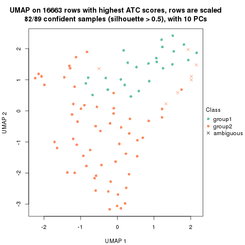
dimension_reduction(res, k = 3, method = "UMAP")
dimension_reduction(res, k = 4, method = "UMAP")
dimension_reduction(res, k = 5, method = "UMAP")
dimension_reduction(res, k = 6, method = "UMAP")
Following heatmap shows how subgroups are split when increasing k:
collect_classes(res)
Test correlation between subgroups and known annotations. If the known annotation is numeric, one-way ANOVA test is applied, and if the known annotation is discrete, chi-squared contingency table test is applied.
test_to_known_factors(res)
#> n protocol(p) k
#> ATC:mclust 82 0.7387 2
#> ATC:mclust 82 0.9569 3
#> ATC:mclust 70 0.1274 4
#> ATC:mclust 78 0.0559 5
#> ATC:mclust 44 0.3575 6
If matrix rows can be associated to genes, consider to use functional_enrichment(res,
...) to perform function enrichment for the signature genes. See this vignette for more detailed explanations.
The object with results only for a single top-value method and a single partition method can be extracted as:
res = res_list["ATC", "NMF"]
# you can also extract it by
# res = res_list["ATC:NMF"]
A summary of res and all the functions that can be applied to it:
res
#> A 'ConsensusPartition' object with k = 2, 3, 4, 5, 6.
#> On a matrix with 16663 rows and 89 columns.
#> Top rows (1000, 2000, 3000, 4000, 5000) are extracted by 'ATC' method.
#> Subgroups are detected by 'NMF' method.
#> Performed in total 1250 partitions by row resampling.
#> Best k for subgroups seems to be 2.
#>
#> Following methods can be applied to this 'ConsensusPartition' object:
#> [1] "cola_report" "collect_classes" "collect_plots"
#> [4] "collect_stats" "colnames" "compare_signatures"
#> [7] "consensus_heatmap" "dimension_reduction" "functional_enrichment"
#> [10] "get_anno_col" "get_anno" "get_classes"
#> [13] "get_consensus" "get_matrix" "get_membership"
#> [16] "get_param" "get_signatures" "get_stats"
#> [19] "is_best_k" "is_stable_k" "membership_heatmap"
#> [22] "ncol" "nrow" "plot_ecdf"
#> [25] "rownames" "select_partition_number" "show"
#> [28] "suggest_best_k" "test_to_known_factors"
collect_plots() function collects all the plots made from res for all k (number of partitions)
into one single page to provide an easy and fast comparison between different k.
collect_plots(res)
The plots are:
k and the heatmap of
predicted classes for each k.k.k.k.All the plots in panels can be made by individual functions and they are plotted later in this section.
select_partition_number() produces several plots showing different
statistics for choosing “optimized” k. There are following statistics:
k;k, the area increased is defined as \(A_k - A_{k-1}\).The detailed explanations of these statistics can be found in the cola vignette.
Generally speaking, lower PAC score, higher mean silhouette score or higher
concordance corresponds to better partition. Rand index and Jaccard index
measure how similar the current partition is compared to partition with k-1.
If they are too similar, we won't accept k is better than k-1.
select_partition_number(res)
The numeric values for all these statistics can be obtained by get_stats().
get_stats(res)
#> k 1-PAC mean_silhouette concordance area_increased Rand Jaccard
#> 2 2 0.976 0.967 0.985 0.4568 0.541 0.541
#> 3 3 0.546 0.519 0.736 0.3257 0.921 0.858
#> 4 4 0.439 0.487 0.724 0.1496 0.781 0.577
#> 5 5 0.472 0.520 0.723 0.0891 0.831 0.546
#> 6 6 0.517 0.472 0.673 0.0522 0.903 0.650
suggest_best_k() suggests the best \(k\) based on these statistics. The rules are as follows:
suggest_best_k(res)
#> [1] 2
Following shows the table of the partitions (You need to click the show/hide
code output link to see it). The membership matrix (columns with name p*)
is inferred by
clue::cl_consensus()
function with the SE method. Basically the value in the membership matrix
represents the probability to belong to a certain group. The finall class
label for an item is determined with the group with highest probability it
belongs to.
In get_classes() function, the entropy is calculated from the membership
matrix and the silhouette score is calculated from the consensus matrix.
cbind(get_classes(res, k = 2), get_membership(res, k = 2))
#> class entropy silhouette p1 p2
#> GSM78921 1 0.000 0.991 1.000 0.000
#> GSM78922 1 0.000 0.991 1.000 0.000
#> GSM78923 2 0.000 0.973 0.000 1.000
#> GSM78924 2 0.000 0.973 0.000 1.000
#> GSM78925 2 0.000 0.973 0.000 1.000
#> GSM78926 1 0.000 0.991 1.000 0.000
#> GSM78927 1 0.000 0.991 1.000 0.000
#> GSM78928 1 0.469 0.884 0.900 0.100
#> GSM78929 2 0.000 0.973 0.000 1.000
#> GSM78930 1 0.000 0.991 1.000 0.000
#> GSM78931 2 0.767 0.723 0.224 0.776
#> GSM78932 2 0.000 0.973 0.000 1.000
#> GSM78933 1 0.000 0.991 1.000 0.000
#> GSM78934 2 0.000 0.973 0.000 1.000
#> GSM78935 1 0.000 0.991 1.000 0.000
#> GSM78936 1 0.000 0.991 1.000 0.000
#> GSM78937 1 0.000 0.991 1.000 0.000
#> GSM78938 1 0.000 0.991 1.000 0.000
#> GSM78939 1 0.000 0.991 1.000 0.000
#> GSM78940 1 0.000 0.991 1.000 0.000
#> GSM78941 2 0.000 0.973 0.000 1.000
#> GSM78942 2 0.000 0.973 0.000 1.000
#> GSM78943 1 0.000 0.991 1.000 0.000
#> GSM78944 1 0.000 0.991 1.000 0.000
#> GSM78945 1 0.000 0.991 1.000 0.000
#> GSM78946 1 0.000 0.991 1.000 0.000
#> GSM78947 2 0.000 0.973 0.000 1.000
#> GSM78948 1 0.000 0.991 1.000 0.000
#> GSM78949 1 0.000 0.991 1.000 0.000
#> GSM78950 1 0.000 0.991 1.000 0.000
#> GSM78951 1 0.000 0.991 1.000 0.000
#> GSM78952 2 0.000 0.973 0.000 1.000
#> GSM78953 2 0.000 0.973 0.000 1.000
#> GSM78954 2 0.000 0.973 0.000 1.000
#> GSM78955 1 0.760 0.714 0.780 0.220
#> GSM78956 2 0.000 0.973 0.000 1.000
#> GSM78957 2 0.000 0.973 0.000 1.000
#> GSM78958 1 0.000 0.991 1.000 0.000
#> GSM78959 1 0.000 0.991 1.000 0.000
#> GSM78960 2 0.000 0.973 0.000 1.000
#> GSM78961 2 0.000 0.973 0.000 1.000
#> GSM78962 1 0.000 0.991 1.000 0.000
#> GSM78963 2 0.000 0.973 0.000 1.000
#> GSM78964 2 0.000 0.973 0.000 1.000
#> GSM78965 2 0.327 0.920 0.060 0.940
#> GSM78966 1 0.000 0.991 1.000 0.000
#> GSM78967 1 0.000 0.991 1.000 0.000
#> GSM78879 1 0.000 0.991 1.000 0.000
#> GSM78880 1 0.000 0.991 1.000 0.000
#> GSM78881 1 0.000 0.991 1.000 0.000
#> GSM78882 1 0.000 0.991 1.000 0.000
#> GSM78883 1 0.000 0.991 1.000 0.000
#> GSM78884 1 0.000 0.991 1.000 0.000
#> GSM78885 1 0.000 0.991 1.000 0.000
#> GSM78886 2 0.760 0.729 0.220 0.780
#> GSM78887 1 0.000 0.991 1.000 0.000
#> GSM78888 1 0.000 0.991 1.000 0.000
#> GSM78889 2 0.000 0.973 0.000 1.000
#> GSM78890 1 0.000 0.991 1.000 0.000
#> GSM78891 1 0.000 0.991 1.000 0.000
#> GSM78892 1 0.000 0.991 1.000 0.000
#> GSM78893 2 0.000 0.973 0.000 1.000
#> GSM78894 1 0.000 0.991 1.000 0.000
#> GSM78895 2 0.000 0.973 0.000 1.000
#> GSM78896 1 0.000 0.991 1.000 0.000
#> GSM78897 1 0.000 0.991 1.000 0.000
#> GSM78898 1 0.000 0.991 1.000 0.000
#> GSM78899 1 0.000 0.991 1.000 0.000
#> GSM78900 1 0.000 0.991 1.000 0.000
#> GSM78901 1 0.000 0.991 1.000 0.000
#> GSM78902 1 0.141 0.972 0.980 0.020
#> GSM78903 2 0.000 0.973 0.000 1.000
#> GSM78904 1 0.000 0.991 1.000 0.000
#> GSM78905 1 0.662 0.789 0.828 0.172
#> GSM78906 2 0.000 0.973 0.000 1.000
#> GSM78907 1 0.000 0.991 1.000 0.000
#> GSM78908 1 0.000 0.991 1.000 0.000
#> GSM78909 2 0.000 0.973 0.000 1.000
#> GSM78910 1 0.000 0.991 1.000 0.000
#> GSM78911 2 0.000 0.973 0.000 1.000
#> GSM78912 1 0.000 0.991 1.000 0.000
#> GSM78913 2 0.000 0.973 0.000 1.000
#> GSM78914 1 0.000 0.991 1.000 0.000
#> GSM78915 2 0.000 0.973 0.000 1.000
#> GSM78916 2 0.886 0.580 0.304 0.696
#> GSM78917 1 0.000 0.991 1.000 0.000
#> GSM78918 1 0.000 0.991 1.000 0.000
#> GSM78919 1 0.000 0.991 1.000 0.000
#> GSM78920 1 0.000 0.991 1.000 0.000
cbind(get_classes(res, k = 3), get_membership(res, k = 3))
#> class entropy silhouette p1 p2 p3
#> GSM78921 1 0.5178 0.56836 0.744 0.000 0.256
#> GSM78922 1 0.0424 0.77932 0.992 0.000 0.008
#> GSM78923 2 0.5882 0.40056 0.000 0.652 0.348
#> GSM78924 2 0.0000 0.66315 0.000 1.000 0.000
#> GSM78925 2 0.0592 0.65772 0.000 0.988 0.012
#> GSM78926 1 0.1860 0.77826 0.948 0.000 0.052
#> GSM78927 1 0.0747 0.77745 0.984 0.000 0.016
#> GSM78928 1 0.9758 -0.16909 0.412 0.232 0.356
#> GSM78929 2 0.0000 0.66315 0.000 1.000 0.000
#> GSM78930 1 0.6295 0.24536 0.528 0.000 0.472
#> GSM78931 3 0.7759 -0.16780 0.048 0.472 0.480
#> GSM78932 2 0.6280 0.05884 0.000 0.540 0.460
#> GSM78933 1 0.0237 0.77967 0.996 0.000 0.004
#> GSM78934 2 0.5497 0.45993 0.000 0.708 0.292
#> GSM78935 1 0.0237 0.77954 0.996 0.000 0.004
#> GSM78936 1 0.2796 0.75787 0.908 0.000 0.092
#> GSM78937 1 0.0592 0.77844 0.988 0.000 0.012
#> GSM78938 1 0.3482 0.72830 0.872 0.000 0.128
#> GSM78939 1 0.1031 0.77871 0.976 0.000 0.024
#> GSM78940 3 0.6505 -0.29790 0.468 0.004 0.528
#> GSM78941 2 0.6008 0.36462 0.000 0.628 0.372
#> GSM78942 2 0.6307 0.01175 0.000 0.512 0.488
#> GSM78943 1 0.0000 0.77952 1.000 0.000 0.000
#> GSM78944 1 0.6235 0.27423 0.564 0.000 0.436
#> GSM78945 1 0.2625 0.76069 0.916 0.000 0.084
#> GSM78946 1 0.1031 0.77798 0.976 0.000 0.024
#> GSM78947 2 0.6244 0.09468 0.000 0.560 0.440
#> GSM78948 1 0.1411 0.77688 0.964 0.000 0.036
#> GSM78949 1 0.6252 0.26996 0.556 0.000 0.444
#> GSM78950 1 0.3412 0.74166 0.876 0.000 0.124
#> GSM78951 1 0.6154 0.35803 0.592 0.000 0.408
#> GSM78952 2 0.0000 0.66315 0.000 1.000 0.000
#> GSM78953 2 0.0000 0.66315 0.000 1.000 0.000
#> GSM78954 2 0.1289 0.64557 0.000 0.968 0.032
#> GSM78955 2 0.9153 0.12350 0.172 0.520 0.308
#> GSM78956 2 0.4887 0.50822 0.000 0.772 0.228
#> GSM78957 2 0.0000 0.66315 0.000 1.000 0.000
#> GSM78958 1 0.6154 0.36051 0.592 0.000 0.408
#> GSM78959 1 0.0424 0.77906 0.992 0.000 0.008
#> GSM78960 2 0.6291 0.04377 0.000 0.532 0.468
#> GSM78961 2 0.6267 0.07510 0.000 0.548 0.452
#> GSM78962 1 0.6062 0.39958 0.616 0.000 0.384
#> GSM78963 2 0.0000 0.66315 0.000 1.000 0.000
#> GSM78964 2 0.0000 0.66315 0.000 1.000 0.000
#> GSM78965 3 0.9111 0.00096 0.144 0.384 0.472
#> GSM78966 1 0.1753 0.77219 0.952 0.000 0.048
#> GSM78967 1 0.0424 0.77975 0.992 0.000 0.008
#> GSM78879 1 0.0237 0.77954 0.996 0.000 0.004
#> GSM78880 1 0.0424 0.77932 0.992 0.000 0.008
#> GSM78881 1 0.6126 0.36871 0.600 0.000 0.400
#> GSM78882 1 0.1753 0.76612 0.952 0.000 0.048
#> GSM78883 1 0.0592 0.77852 0.988 0.000 0.012
#> GSM78884 1 0.2261 0.77104 0.932 0.000 0.068
#> GSM78885 1 0.0592 0.77973 0.988 0.000 0.012
#> GSM78886 3 0.8025 -0.25158 0.064 0.420 0.516
#> GSM78887 1 0.4291 0.70196 0.820 0.000 0.180
#> GSM78888 1 0.0237 0.77967 0.996 0.000 0.004
#> GSM78889 2 0.1031 0.64883 0.000 0.976 0.024
#> GSM78890 1 0.3918 0.71852 0.868 0.012 0.120
#> GSM78891 1 0.3267 0.74181 0.884 0.000 0.116
#> GSM78892 1 0.4121 0.65413 0.832 0.168 0.000
#> GSM78893 2 0.5859 0.40124 0.000 0.656 0.344
#> GSM78894 1 0.6280 0.22301 0.540 0.000 0.460
#> GSM78895 2 0.0000 0.66315 0.000 1.000 0.000
#> GSM78896 1 0.1163 0.77373 0.972 0.000 0.028
#> GSM78897 1 0.0592 0.77918 0.988 0.000 0.012
#> GSM78898 1 0.5760 0.45374 0.672 0.000 0.328
#> GSM78899 1 0.4121 0.71131 0.832 0.000 0.168
#> GSM78900 1 0.6295 0.24536 0.528 0.000 0.472
#> GSM78901 1 0.5098 0.61593 0.752 0.000 0.248
#> GSM78902 1 0.9118 0.21080 0.548 0.220 0.232
#> GSM78903 2 0.5859 0.40124 0.000 0.656 0.344
#> GSM78904 1 0.4504 0.68529 0.804 0.000 0.196
#> GSM78905 2 0.6432 -0.02093 0.428 0.568 0.004
#> GSM78906 2 0.0000 0.66315 0.000 1.000 0.000
#> GSM78907 1 0.1860 0.76435 0.948 0.000 0.052
#> GSM78908 1 0.6308 0.21479 0.508 0.000 0.492
#> GSM78909 2 0.0000 0.66315 0.000 1.000 0.000
#> GSM78910 1 0.1529 0.77507 0.960 0.000 0.040
#> GSM78911 2 0.0237 0.66121 0.000 0.996 0.004
#> GSM78912 1 0.2711 0.73919 0.912 0.000 0.088
#> GSM78913 2 0.0000 0.66315 0.000 1.000 0.000
#> GSM78914 1 0.6295 0.24536 0.528 0.000 0.472
#> GSM78915 2 0.6505 0.03262 0.004 0.528 0.468
#> GSM78916 2 0.8968 0.05351 0.128 0.464 0.408
#> GSM78917 1 0.0237 0.77948 0.996 0.000 0.004
#> GSM78918 1 0.6235 0.27790 0.564 0.000 0.436
#> GSM78919 1 0.1860 0.77143 0.948 0.000 0.052
#> GSM78920 1 0.4575 0.70167 0.828 0.012 0.160
cbind(get_classes(res, k = 4), get_membership(res, k = 4))
#> class entropy silhouette p1 p2 p3 p4
#> GSM78921 1 0.5235 4.38e-01 0.716 0.048 0.000 0.236
#> GSM78922 1 0.0592 6.56e-01 0.984 0.000 0.000 0.016
#> GSM78923 3 0.5085 2.57e-01 0.000 0.376 0.616 0.008
#> GSM78924 3 0.0188 7.65e-01 0.000 0.004 0.996 0.000
#> GSM78925 3 0.3652 7.21e-01 0.000 0.092 0.856 0.052
#> GSM78926 1 0.4883 3.60e-01 0.696 0.016 0.000 0.288
#> GSM78927 1 0.2179 6.42e-01 0.924 0.012 0.000 0.064
#> GSM78928 2 0.6977 6.15e-01 0.204 0.584 0.212 0.000
#> GSM78929 3 0.1305 7.60e-01 0.000 0.036 0.960 0.004
#> GSM78930 1 0.7412 2.73e-01 0.568 0.188 0.012 0.232
#> GSM78931 4 0.7701 1.31e-01 0.048 0.100 0.304 0.548
#> GSM78932 3 0.6708 4.69e-01 0.000 0.128 0.592 0.280
#> GSM78933 1 0.1576 6.46e-01 0.948 0.004 0.000 0.048
#> GSM78934 3 0.5770 6.47e-01 0.000 0.140 0.712 0.148
#> GSM78935 1 0.4511 4.11e-01 0.724 0.008 0.000 0.268
#> GSM78936 4 0.6249 6.03e-01 0.336 0.072 0.000 0.592
#> GSM78937 1 0.1022 6.55e-01 0.968 0.000 0.000 0.032
#> GSM78938 1 0.5650 -1.24e-02 0.544 0.432 0.000 0.024
#> GSM78939 1 0.2546 6.31e-01 0.900 0.008 0.000 0.092
#> GSM78940 2 0.6661 4.91e-01 0.208 0.664 0.024 0.104
#> GSM78941 2 0.5229 2.95e-01 0.000 0.564 0.428 0.008
#> GSM78942 4 0.4999 6.85e-02 0.000 0.012 0.328 0.660
#> GSM78943 1 0.2480 6.31e-01 0.904 0.008 0.000 0.088
#> GSM78944 2 0.4948 3.24e-01 0.440 0.560 0.000 0.000
#> GSM78945 1 0.3873 5.01e-01 0.772 0.228 0.000 0.000
#> GSM78946 1 0.3653 6.04e-01 0.844 0.128 0.000 0.028
#> GSM78947 3 0.5222 6.72e-01 0.000 0.132 0.756 0.112
#> GSM78948 1 0.4010 5.60e-01 0.816 0.028 0.000 0.156
#> GSM78949 2 0.4905 4.79e-01 0.364 0.632 0.000 0.004
#> GSM78950 4 0.6055 4.27e-01 0.436 0.044 0.000 0.520
#> GSM78951 1 0.6689 3.75e-01 0.620 0.184 0.000 0.196
#> GSM78952 3 0.0000 7.65e-01 0.000 0.000 1.000 0.000
#> GSM78953 3 0.1389 7.63e-01 0.000 0.000 0.952 0.048
#> GSM78954 3 0.6546 5.49e-01 0.020 0.168 0.680 0.132
#> GSM78955 2 0.6809 4.91e-01 0.108 0.532 0.360 0.000
#> GSM78956 3 0.5280 6.58e-01 0.000 0.156 0.748 0.096
#> GSM78957 3 0.0817 7.65e-01 0.000 0.000 0.976 0.024
#> GSM78958 4 0.6074 6.27e-01 0.268 0.084 0.000 0.648
#> GSM78959 1 0.2081 6.33e-01 0.916 0.000 0.000 0.084
#> GSM78960 3 0.6437 5.97e-01 0.000 0.168 0.648 0.184
#> GSM78961 3 0.6666 3.44e-01 0.000 0.088 0.508 0.404
#> GSM78962 4 0.4576 6.27e-01 0.232 0.020 0.000 0.748
#> GSM78963 3 0.0188 7.65e-01 0.000 0.004 0.996 0.000
#> GSM78964 3 0.0000 7.65e-01 0.000 0.000 1.000 0.000
#> GSM78965 1 0.9853 -1.48e-01 0.316 0.176 0.256 0.252
#> GSM78966 1 0.2179 6.50e-01 0.924 0.064 0.000 0.012
#> GSM78967 1 0.2179 6.47e-01 0.924 0.012 0.000 0.064
#> GSM78879 1 0.3768 5.42e-01 0.808 0.008 0.000 0.184
#> GSM78880 1 0.0592 6.53e-01 0.984 0.000 0.000 0.016
#> GSM78881 1 0.5383 4.56e-01 0.740 0.160 0.000 0.100
#> GSM78882 1 0.5058 5.48e-01 0.768 0.104 0.000 0.128
#> GSM78883 1 0.3157 5.94e-01 0.852 0.004 0.000 0.144
#> GSM78884 4 0.5856 5.06e-01 0.408 0.036 0.000 0.556
#> GSM78885 1 0.4482 4.20e-01 0.728 0.008 0.000 0.264
#> GSM78886 2 0.6562 4.85e-01 0.036 0.644 0.268 0.052
#> GSM78887 4 0.6934 5.93e-01 0.276 0.152 0.000 0.572
#> GSM78888 1 0.2131 6.57e-01 0.932 0.032 0.000 0.036
#> GSM78889 3 0.3463 7.38e-01 0.000 0.096 0.864 0.040
#> GSM78890 1 0.7105 3.68e-01 0.616 0.240 0.024 0.120
#> GSM78891 1 0.5884 1.48e-01 0.592 0.364 0.000 0.044
#> GSM78892 1 0.5678 4.24e-01 0.704 0.068 0.224 0.004
#> GSM78893 2 0.4967 2.80e-01 0.000 0.548 0.452 0.000
#> GSM78894 2 0.4830 4.58e-01 0.392 0.608 0.000 0.000
#> GSM78895 3 0.0188 7.64e-01 0.000 0.004 0.996 0.000
#> GSM78896 1 0.2081 6.39e-01 0.916 0.000 0.000 0.084
#> GSM78897 1 0.2218 6.56e-01 0.932 0.028 0.004 0.036
#> GSM78898 1 0.5360 -7.67e-02 0.552 0.436 0.000 0.012
#> GSM78899 4 0.7034 3.39e-01 0.412 0.120 0.000 0.468
#> GSM78900 1 0.6974 1.90e-01 0.564 0.152 0.000 0.284
#> GSM78901 2 0.5155 2.75e-01 0.468 0.528 0.000 0.004
#> GSM78902 1 0.8536 3.06e-01 0.548 0.160 0.132 0.160
#> GSM78903 3 0.4948 -2.63e-02 0.000 0.440 0.560 0.000
#> GSM78904 1 0.7731 -1.42e-01 0.396 0.376 0.000 0.228
#> GSM78905 3 0.9175 5.46e-05 0.328 0.156 0.400 0.116
#> GSM78906 3 0.0469 7.62e-01 0.000 0.012 0.988 0.000
#> GSM78907 1 0.3071 6.32e-01 0.888 0.044 0.000 0.068
#> GSM78908 4 0.5842 5.99e-01 0.220 0.092 0.000 0.688
#> GSM78909 3 0.3354 7.35e-01 0.000 0.084 0.872 0.044
#> GSM78910 1 0.1833 6.55e-01 0.944 0.032 0.000 0.024
#> GSM78911 3 0.4482 6.15e-01 0.000 0.008 0.728 0.264
#> GSM78912 1 0.4327 5.15e-01 0.768 0.016 0.000 0.216
#> GSM78913 3 0.0000 7.65e-01 0.000 0.000 1.000 0.000
#> GSM78914 1 0.8292 1.25e-01 0.496 0.164 0.048 0.292
#> GSM78915 3 0.7259 5.63e-01 0.016 0.188 0.600 0.196
#> GSM78916 2 0.6231 4.87e-01 0.060 0.600 0.336 0.004
#> GSM78917 1 0.1059 6.56e-01 0.972 0.012 0.000 0.016
#> GSM78918 2 0.4730 4.98e-01 0.364 0.636 0.000 0.000
#> GSM78919 1 0.4872 2.28e-01 0.640 0.356 0.000 0.004
#> GSM78920 1 0.6382 1.30e-01 0.592 0.348 0.040 0.020
cbind(get_classes(res, k = 5), get_membership(res, k = 5))
#> class entropy silhouette p1 p2 p3 p4 p5
#> GSM78921 1 0.2712 0.7143 0.880 0.000 0.088 0.032 0.000
#> GSM78922 1 0.2623 0.7178 0.884 0.016 0.096 0.004 0.000
#> GSM78923 5 0.4307 0.0126 0.000 0.500 0.000 0.000 0.500
#> GSM78924 5 0.0451 0.7677 0.000 0.004 0.008 0.000 0.988
#> GSM78925 5 0.1357 0.7566 0.000 0.004 0.048 0.000 0.948
#> GSM78926 1 0.2949 0.6958 0.876 0.004 0.068 0.052 0.000
#> GSM78927 1 0.3009 0.6922 0.876 0.016 0.080 0.028 0.000
#> GSM78928 2 0.4608 0.6276 0.028 0.792 0.036 0.020 0.124
#> GSM78929 5 0.4369 0.6850 0.024 0.056 0.072 0.028 0.820
#> GSM78930 3 0.5981 0.4176 0.228 0.040 0.652 0.076 0.004
#> GSM78931 4 0.6324 0.4090 0.060 0.004 0.144 0.656 0.136
#> GSM78932 5 0.4939 0.5759 0.008 0.004 0.152 0.096 0.740
#> GSM78933 1 0.1569 0.7240 0.948 0.008 0.032 0.012 0.000
#> GSM78934 5 0.6846 0.1927 0.000 0.256 0.004 0.328 0.412
#> GSM78935 1 0.3733 0.6867 0.836 0.016 0.080 0.068 0.000
#> GSM78936 4 0.6101 0.1160 0.460 0.032 0.036 0.464 0.008
#> GSM78937 1 0.5644 0.3788 0.584 0.024 0.348 0.044 0.000
#> GSM78938 2 0.7248 0.3482 0.212 0.496 0.244 0.048 0.000
#> GSM78939 1 0.1728 0.7158 0.940 0.004 0.036 0.020 0.000
#> GSM78940 2 0.5756 0.6094 0.100 0.736 0.056 0.072 0.036
#> GSM78941 2 0.3360 0.5905 0.000 0.816 0.012 0.004 0.168
#> GSM78942 4 0.4743 0.4195 0.004 0.000 0.116 0.744 0.136
#> GSM78943 1 0.2672 0.7195 0.896 0.024 0.064 0.016 0.000
#> GSM78944 2 0.4605 0.6156 0.248 0.708 0.040 0.004 0.000
#> GSM78945 1 0.4393 0.6795 0.772 0.136 0.088 0.004 0.000
#> GSM78946 1 0.5770 0.5986 0.676 0.180 0.112 0.032 0.000
#> GSM78947 5 0.2522 0.7197 0.000 0.000 0.108 0.012 0.880
#> GSM78948 1 0.2640 0.7177 0.900 0.016 0.052 0.032 0.000
#> GSM78949 2 0.4977 0.5871 0.268 0.680 0.036 0.016 0.000
#> GSM78950 4 0.6367 0.2373 0.420 0.032 0.076 0.472 0.000
#> GSM78951 3 0.6329 0.4795 0.164 0.076 0.648 0.112 0.000
#> GSM78952 5 0.0000 0.7679 0.000 0.000 0.000 0.000 1.000
#> GSM78953 5 0.2507 0.7596 0.000 0.028 0.020 0.044 0.908
#> GSM78954 3 0.6576 0.3858 0.000 0.196 0.480 0.004 0.320
#> GSM78955 2 0.5170 0.6298 0.076 0.720 0.016 0.004 0.184
#> GSM78956 5 0.4736 0.5253 0.000 0.312 0.004 0.028 0.656
#> GSM78957 5 0.1864 0.7533 0.000 0.004 0.004 0.068 0.924
#> GSM78958 1 0.6415 -0.1093 0.464 0.004 0.152 0.380 0.000
#> GSM78959 1 0.0992 0.7215 0.968 0.000 0.024 0.008 0.000
#> GSM78960 3 0.5206 0.3360 0.004 0.000 0.572 0.040 0.384
#> GSM78961 4 0.5784 0.3002 0.000 0.000 0.144 0.604 0.252
#> GSM78962 4 0.4890 0.3850 0.060 0.008 0.224 0.708 0.000
#> GSM78963 5 0.0451 0.7679 0.000 0.008 0.004 0.000 0.988
#> GSM78964 5 0.0290 0.7676 0.000 0.008 0.000 0.000 0.992
#> GSM78965 3 0.5828 0.5228 0.100 0.000 0.648 0.024 0.228
#> GSM78966 1 0.4237 0.6919 0.796 0.112 0.080 0.012 0.000
#> GSM78967 1 0.2627 0.7252 0.900 0.044 0.044 0.012 0.000
#> GSM78879 1 0.2264 0.7113 0.912 0.004 0.060 0.024 0.000
#> GSM78880 1 0.1430 0.7268 0.944 0.000 0.052 0.004 0.000
#> GSM78881 1 0.3900 0.6502 0.808 0.016 0.144 0.032 0.000
#> GSM78882 1 0.5898 0.1339 0.496 0.032 0.432 0.040 0.000
#> GSM78883 1 0.5529 0.5356 0.704 0.032 0.148 0.116 0.000
#> GSM78884 4 0.6364 0.4035 0.336 0.028 0.096 0.540 0.000
#> GSM78885 1 0.2940 0.6986 0.876 0.004 0.072 0.048 0.000
#> GSM78886 2 0.5750 0.6057 0.032 0.736 0.060 0.076 0.096
#> GSM78887 4 0.5396 0.4952 0.228 0.056 0.032 0.684 0.000
#> GSM78888 1 0.4748 0.6557 0.768 0.056 0.136 0.040 0.000
#> GSM78889 5 0.5659 0.5991 0.028 0.032 0.132 0.080 0.728
#> GSM78890 2 0.7632 0.0600 0.192 0.376 0.376 0.004 0.052
#> GSM78891 2 0.6181 0.4440 0.340 0.524 0.132 0.004 0.000
#> GSM78892 1 0.6339 0.4606 0.640 0.076 0.044 0.016 0.224
#> GSM78893 2 0.4681 0.5127 0.000 0.692 0.020 0.016 0.272
#> GSM78894 2 0.5135 0.5958 0.232 0.696 0.048 0.024 0.000
#> GSM78895 5 0.1121 0.7651 0.000 0.044 0.000 0.000 0.956
#> GSM78896 1 0.4074 0.6399 0.752 0.012 0.224 0.012 0.000
#> GSM78897 1 0.2429 0.7212 0.904 0.016 0.072 0.004 0.004
#> GSM78898 2 0.5849 0.4790 0.332 0.564 0.100 0.004 0.000
#> GSM78899 1 0.6982 0.2457 0.516 0.052 0.132 0.300 0.000
#> GSM78900 3 0.6528 0.3046 0.184 0.008 0.548 0.256 0.004
#> GSM78901 1 0.6011 0.0287 0.500 0.412 0.072 0.016 0.000
#> GSM78902 3 0.6741 0.4980 0.096 0.156 0.652 0.052 0.044
#> GSM78903 2 0.4210 0.2039 0.000 0.588 0.000 0.000 0.412
#> GSM78904 1 0.7182 0.4684 0.608 0.148 0.132 0.088 0.024
#> GSM78905 5 0.7991 -0.2850 0.140 0.124 0.320 0.004 0.412
#> GSM78906 5 0.1410 0.7626 0.000 0.060 0.000 0.000 0.940
#> GSM78907 1 0.5690 0.3996 0.592 0.040 0.336 0.032 0.000
#> GSM78908 4 0.5667 0.3860 0.128 0.004 0.232 0.636 0.000
#> GSM78909 5 0.3558 0.7212 0.000 0.064 0.000 0.108 0.828
#> GSM78910 1 0.4797 0.6850 0.772 0.104 0.084 0.040 0.000
#> GSM78911 5 0.4900 0.3168 0.000 0.004 0.020 0.412 0.564
#> GSM78912 1 0.7121 -0.0982 0.400 0.016 0.332 0.252 0.000
#> GSM78913 5 0.0162 0.7677 0.000 0.000 0.004 0.000 0.996
#> GSM78914 3 0.4207 0.5082 0.204 0.004 0.760 0.028 0.004
#> GSM78915 3 0.5052 0.2297 0.000 0.020 0.536 0.008 0.436
#> GSM78916 2 0.3828 0.6444 0.044 0.828 0.008 0.008 0.112
#> GSM78917 1 0.2734 0.7190 0.888 0.028 0.076 0.008 0.000
#> GSM78918 2 0.4133 0.6308 0.180 0.768 0.052 0.000 0.000
#> GSM78919 1 0.5746 0.4911 0.636 0.264 0.076 0.024 0.000
#> GSM78920 1 0.5061 0.6042 0.744 0.144 0.036 0.000 0.076
cbind(get_classes(res, k = 6), get_membership(res, k = 6))
#> class entropy silhouette p1 p2 p3 p4 p5 p6
#> GSM78921 1 0.3809 0.6639 0.796 0.004 0.144 0.024 0.000 0.032
#> GSM78922 1 0.3865 0.6628 0.792 0.012 0.136 0.004 0.000 0.056
#> GSM78923 5 0.4428 0.3276 0.000 0.388 0.008 0.012 0.588 0.004
#> GSM78924 5 0.1078 0.7343 0.000 0.016 0.012 0.000 0.964 0.008
#> GSM78925 5 0.2201 0.7257 0.000 0.012 0.048 0.004 0.912 0.024
#> GSM78926 1 0.3679 0.6510 0.812 0.008 0.020 0.032 0.000 0.128
#> GSM78927 1 0.3746 0.5673 0.712 0.000 0.012 0.004 0.000 0.272
#> GSM78928 2 0.3855 0.5946 0.008 0.824 0.004 0.056 0.036 0.072
#> GSM78929 5 0.3324 0.6692 0.012 0.024 0.000 0.004 0.824 0.136
#> GSM78930 6 0.6254 0.4696 0.112 0.036 0.156 0.064 0.000 0.632
#> GSM78931 4 0.6596 0.3737 0.016 0.000 0.120 0.528 0.060 0.276
#> GSM78932 5 0.4791 0.5143 0.000 0.000 0.224 0.084 0.680 0.012
#> GSM78933 1 0.2129 0.6984 0.904 0.000 0.040 0.000 0.000 0.056
#> GSM78934 4 0.6912 0.2938 0.000 0.184 0.016 0.496 0.244 0.060
#> GSM78935 1 0.4093 0.6677 0.796 0.004 0.100 0.048 0.000 0.052
#> GSM78936 4 0.6616 0.2975 0.220 0.024 0.052 0.556 0.000 0.148
#> GSM78937 3 0.5536 -0.1237 0.456 0.008 0.464 0.032 0.000 0.040
#> GSM78938 6 0.7296 0.2757 0.092 0.264 0.048 0.108 0.000 0.488
#> GSM78939 1 0.3560 0.6146 0.772 0.004 0.008 0.012 0.000 0.204
#> GSM78940 2 0.5480 0.6078 0.080 0.732 0.016 0.048 0.044 0.080
#> GSM78941 2 0.2565 0.5988 0.000 0.872 0.008 0.000 0.104 0.016
#> GSM78942 4 0.4687 0.2114 0.000 0.000 0.280 0.656 0.052 0.012
#> GSM78943 1 0.2858 0.6851 0.868 0.012 0.088 0.004 0.000 0.028
#> GSM78944 2 0.4696 0.5869 0.212 0.704 0.048 0.000 0.000 0.036
#> GSM78945 1 0.5735 0.6117 0.652 0.120 0.104 0.000 0.000 0.124
#> GSM78946 1 0.5735 0.5884 0.652 0.128 0.112 0.000 0.000 0.108
#> GSM78947 5 0.1820 0.7281 0.000 0.000 0.056 0.008 0.924 0.012
#> GSM78948 1 0.2289 0.6977 0.912 0.020 0.024 0.008 0.000 0.036
#> GSM78949 2 0.5268 0.4719 0.336 0.580 0.028 0.000 0.000 0.056
#> GSM78950 4 0.6349 0.1073 0.240 0.016 0.008 0.496 0.000 0.240
#> GSM78951 3 0.6108 0.3812 0.112 0.044 0.660 0.080 0.000 0.104
#> GSM78952 5 0.0798 0.7324 0.000 0.012 0.004 0.004 0.976 0.004
#> GSM78953 5 0.3437 0.6879 0.000 0.016 0.060 0.076 0.840 0.008
#> GSM78954 5 0.7935 0.0411 0.012 0.184 0.308 0.008 0.332 0.156
#> GSM78955 2 0.4835 0.6074 0.060 0.740 0.028 0.004 0.152 0.016
#> GSM78956 5 0.5361 0.4921 0.000 0.276 0.008 0.068 0.624 0.024
#> GSM78957 5 0.3544 0.6657 0.000 0.008 0.012 0.132 0.816 0.032
#> GSM78958 1 0.6873 -0.1469 0.388 0.004 0.244 0.328 0.004 0.032
#> GSM78959 1 0.1812 0.6883 0.924 0.004 0.008 0.004 0.000 0.060
#> GSM78960 5 0.6303 0.0834 0.008 0.000 0.400 0.016 0.416 0.160
#> GSM78961 4 0.5927 0.1808 0.000 0.000 0.256 0.516 0.220 0.008
#> GSM78962 4 0.5031 0.2490 0.024 0.000 0.196 0.680 0.000 0.100
#> GSM78963 5 0.1065 0.7308 0.000 0.008 0.020 0.000 0.964 0.008
#> GSM78964 5 0.0748 0.7331 0.000 0.016 0.004 0.000 0.976 0.004
#> GSM78965 3 0.6208 0.0614 0.036 0.004 0.524 0.004 0.320 0.112
#> GSM78966 1 0.5140 0.6488 0.716 0.088 0.076 0.004 0.000 0.116
#> GSM78967 1 0.4016 0.6728 0.792 0.024 0.120 0.004 0.000 0.060
#> GSM78879 1 0.3301 0.6616 0.836 0.008 0.012 0.028 0.000 0.116
#> GSM78880 1 0.2828 0.6829 0.864 0.008 0.024 0.004 0.000 0.100
#> GSM78881 1 0.4286 0.4262 0.624 0.000 0.012 0.012 0.000 0.352
#> GSM78882 6 0.4772 0.5620 0.308 0.004 0.064 0.000 0.000 0.624
#> GSM78883 6 0.5367 0.4266 0.348 0.004 0.024 0.056 0.000 0.568
#> GSM78884 4 0.5976 0.0621 0.144 0.000 0.016 0.456 0.000 0.384
#> GSM78885 1 0.3241 0.6729 0.852 0.008 0.044 0.016 0.000 0.080
#> GSM78886 2 0.5165 0.6056 0.064 0.756 0.036 0.028 0.032 0.084
#> GSM78887 4 0.4408 0.4111 0.132 0.056 0.008 0.768 0.000 0.036
#> GSM78888 1 0.3954 0.3526 0.620 0.004 0.000 0.004 0.000 0.372
#> GSM78889 5 0.5660 0.3994 0.012 0.016 0.020 0.044 0.584 0.324
#> GSM78890 2 0.7524 0.3289 0.120 0.472 0.260 0.008 0.032 0.108
#> GSM78891 2 0.5653 0.4358 0.328 0.560 0.052 0.000 0.000 0.060
#> GSM78892 1 0.6516 0.3447 0.536 0.036 0.004 0.008 0.200 0.216
#> GSM78893 2 0.5372 0.5329 0.000 0.708 0.016 0.120 0.072 0.084
#> GSM78894 2 0.5731 0.5057 0.132 0.652 0.004 0.064 0.000 0.148
#> GSM78895 5 0.1413 0.7296 0.000 0.036 0.004 0.008 0.948 0.004
#> GSM78896 1 0.4908 0.5072 0.628 0.004 0.296 0.004 0.000 0.068
#> GSM78897 1 0.4736 0.5981 0.708 0.004 0.012 0.008 0.056 0.212
#> GSM78898 2 0.6211 0.4439 0.288 0.528 0.136 0.000 0.000 0.048
#> GSM78899 1 0.6624 0.4203 0.572 0.028 0.060 0.196 0.000 0.144
#> GSM78900 3 0.5539 0.3740 0.064 0.000 0.644 0.224 0.004 0.064
#> GSM78901 2 0.5733 0.0498 0.440 0.444 0.012 0.004 0.000 0.100
#> GSM78902 6 0.7395 0.1568 0.092 0.132 0.316 0.024 0.004 0.432
#> GSM78903 2 0.4352 0.2081 0.000 0.580 0.004 0.004 0.400 0.012
#> GSM78904 1 0.6334 0.5468 0.656 0.120 0.036 0.032 0.036 0.120
#> GSM78905 5 0.8042 0.2906 0.092 0.120 0.144 0.004 0.460 0.180
#> GSM78906 5 0.2299 0.7230 0.000 0.064 0.008 0.012 0.904 0.012
#> GSM78907 6 0.5213 0.5595 0.296 0.008 0.076 0.008 0.000 0.612
#> GSM78908 3 0.5914 0.0193 0.052 0.008 0.460 0.440 0.008 0.032
#> GSM78909 5 0.3438 0.6991 0.000 0.048 0.020 0.076 0.844 0.012
#> GSM78910 1 0.5426 0.6141 0.684 0.052 0.156 0.008 0.000 0.100
#> GSM78911 4 0.5296 -0.0721 0.000 0.008 0.012 0.476 0.456 0.048
#> GSM78912 3 0.6123 0.3984 0.192 0.000 0.544 0.232 0.000 0.032
#> GSM78913 5 0.1065 0.7312 0.000 0.008 0.020 0.000 0.964 0.008
#> GSM78914 3 0.5214 0.3126 0.104 0.004 0.692 0.016 0.012 0.172
#> GSM78915 5 0.5673 0.3164 0.008 0.000 0.336 0.000 0.520 0.136
#> GSM78916 2 0.2282 0.6322 0.028 0.916 0.008 0.004 0.024 0.020
#> GSM78917 1 0.3212 0.6381 0.800 0.004 0.016 0.000 0.000 0.180
#> GSM78918 2 0.4700 0.5853 0.164 0.720 0.092 0.000 0.000 0.024
#> GSM78919 1 0.6374 0.5011 0.568 0.184 0.156 0.000 0.000 0.092
#> GSM78920 1 0.6124 0.5518 0.640 0.080 0.020 0.012 0.056 0.192
Heatmaps for the consensus matrix. It visualizes the probability of two samples to be in a same group.
consensus_heatmap(res, k = 2)
consensus_heatmap(res, k = 3)
consensus_heatmap(res, k = 4)
consensus_heatmap(res, k = 5)
consensus_heatmap(res, k = 6)
Heatmaps for the membership of samples in all partitions to see how consistent they are:
membership_heatmap(res, k = 2)
membership_heatmap(res, k = 3)
membership_heatmap(res, k = 4)
membership_heatmap(res, k = 5)
membership_heatmap(res, k = 6)
As soon as we have had the classes for columns, we can look for signatures which are significantly different between classes which can be candidate marks for certain classes. Following are the heatmaps for signatures.
Signature heatmaps where rows are scaled:
get_signatures(res, k = 2)
get_signatures(res, k = 3)
get_signatures(res, k = 4)
get_signatures(res, k = 5)
get_signatures(res, k = 6)
Signature heatmaps where rows are not scaled:
get_signatures(res, k = 2, scale_rows = FALSE)
get_signatures(res, k = 3, scale_rows = FALSE)
get_signatures(res, k = 4, scale_rows = FALSE)

get_signatures(res, k = 5, scale_rows = FALSE)
get_signatures(res, k = 6, scale_rows = FALSE)
Compare the overlap of signatures from different k:
compare_signatures(res)
get_signature() returns a data frame invisibly. TO get the list of signatures, the function
call should be assigned to a variable explicitly. In following code, if plot argument is set
to FALSE, no heatmap is plotted while only the differential analysis is performed.
# code only for demonstration
tb = get_signature(res, k = ..., plot = FALSE)
An example of the output of tb is:
#> which_row fdr mean_1 mean_2 scaled_mean_1 scaled_mean_2 km
#> 1 38 0.042760348 8.373488 9.131774 -0.5533452 0.5164555 1
#> 2 40 0.018707592 7.106213 8.469186 -0.6173731 0.5762149 1
#> 3 55 0.019134737 10.221463 11.207825 -0.6159697 0.5749050 1
#> 4 59 0.006059896 5.921854 7.869574 -0.6899429 0.6439467 1
#> 5 60 0.018055526 8.928898 10.211722 -0.6204761 0.5791110 1
#> 6 98 0.009384629 15.714769 14.887706 0.6635654 -0.6193277 2
...
The columns in tb are:
which_row: row indices corresponding to the input matrix.fdr: FDR for the differential test. mean_x: The mean value in group x.scaled_mean_x: The mean value in group x after rows are scaled.km: Row groups if k-means clustering is applied to rows.UMAP plot which shows how samples are separated.
dimension_reduction(res, k = 2, method = "UMAP")
dimension_reduction(res, k = 3, method = "UMAP")
dimension_reduction(res, k = 4, method = "UMAP")
dimension_reduction(res, k = 5, method = "UMAP")
dimension_reduction(res, k = 6, method = "UMAP")
Following heatmap shows how subgroups are split when increasing k:
collect_classes(res)
Test correlation between subgroups and known annotations. If the known annotation is numeric, one-way ANOVA test is applied, and if the known annotation is discrete, chi-squared contingency table test is applied.
test_to_known_factors(res)
#> n protocol(p) k
#> ATC:NMF 89 0.163 2
#> ATC:NMF 56 0.375 3
#> ATC:NMF 50 0.658 4
#> ATC:NMF 54 0.830 5
#> ATC:NMF 50 0.255 6
If matrix rows can be associated to genes, consider to use functional_enrichment(res,
...) to perform function enrichment for the signature genes. See this vignette for more detailed explanations.
sessionInfo()
#> R version 3.6.0 (2019-04-26)
#> Platform: x86_64-pc-linux-gnu (64-bit)
#> Running under: CentOS Linux 7 (Core)
#>
#> Matrix products: default
#> BLAS: /usr/lib64/libblas.so.3.4.2
#> LAPACK: /usr/lib64/liblapack.so.3.4.2
#>
#> locale:
#> [1] LC_CTYPE=en_GB.UTF-8 LC_NUMERIC=C LC_TIME=en_GB.UTF-8
#> [4] LC_COLLATE=en_GB.UTF-8 LC_MONETARY=en_GB.UTF-8 LC_MESSAGES=en_GB.UTF-8
#> [7] LC_PAPER=en_GB.UTF-8 LC_NAME=C LC_ADDRESS=C
#> [10] LC_TELEPHONE=C LC_MEASUREMENT=en_GB.UTF-8 LC_IDENTIFICATION=C
#>
#> attached base packages:
#> [1] grid stats graphics grDevices utils datasets methods base
#>
#> other attached packages:
#> [1] genefilter_1.66.0 ComplexHeatmap_2.3.1 markdown_1.1 knitr_1.26
#> [5] GetoptLong_0.1.7 cola_1.3.2
#>
#> loaded via a namespace (and not attached):
#> [1] circlize_0.4.8 shape_1.4.4 xfun_0.11 slam_0.1-46
#> [5] lattice_0.20-38 splines_3.6.0 colorspace_1.4-1 vctrs_0.2.0
#> [9] stats4_3.6.0 blob_1.2.0 XML_3.98-1.20 survival_2.44-1.1
#> [13] rlang_0.4.2 pillar_1.4.2 DBI_1.0.0 BiocGenerics_0.30.0
#> [17] bit64_0.9-7 RColorBrewer_1.1-2 matrixStats_0.55.0 stringr_1.4.0
#> [21] GlobalOptions_0.1.1 evaluate_0.14 memoise_1.1.0 Biobase_2.44.0
#> [25] IRanges_2.18.3 parallel_3.6.0 AnnotationDbi_1.46.1 highr_0.8
#> [29] Rcpp_1.0.3 xtable_1.8-4 backports_1.1.5 S4Vectors_0.22.1
#> [33] annotate_1.62.0 skmeans_0.2-11 bit_1.1-14 microbenchmark_1.4-7
#> [37] brew_1.0-6 impute_1.58.0 rjson_0.2.20 png_0.1-7
#> [41] digest_0.6.23 stringi_1.4.3 polyclip_1.10-0 clue_0.3-57
#> [45] tools_3.6.0 bitops_1.0-6 magrittr_1.5 eulerr_6.0.0
#> [49] RCurl_1.95-4.12 RSQLite_2.1.4 tibble_2.1.3 cluster_2.1.0
#> [53] crayon_1.3.4 pkgconfig_2.0.3 zeallot_0.1.0 Matrix_1.2-17
#> [57] xml2_1.2.2 httr_1.4.1 R6_2.4.1 mclust_5.4.5
#> [61] compiler_3.6.0